AGRICULTURAL RESEARCH INSTITUTE
PUSA
The Agricultural Journal of
Ceylon
Founded 1881
Published by
The Department of Agriculture,
Peradeniya
Vol. LXXXVIII
313806
A standard linear barcode consisting of vertical black bars of varying widths on a white background.IARI
Containing Numbers 1 to 6,
January to June, 1937
| Number | Month | Pages |
|---|---|---|
| 1 | January | 1-68 |
| 2 | February | 69-134 |
| 3 | March | 135-198 |
| 4 | April | 199-260 |
| 5 | May | 261-328 |
| 6 | June | 329-394 |
Aberia Gardneri (Dovyalis hebecarpa), 112
Achras zapota (A. sapota), 112
Adlay, wild (Coix gigantea), 208, 265
Agricultural implements (Editorial), 1
(Correspondence), 58
—III. The tooth cultivator, 3
—IV. The marker, 150
—V. The improved yoke, 201
Agriculture, the role of insects and fungi in, 180
Agricultural tragedy of India, the major, 261
Aleurites moluccana (A. triloba), 112
Amended nomenclature of economic plants, 112
Ananas comosus (A. sativus), 112
Andropogon murientus see Vetiveria zizanoides
Animal Disease Returns, 67, 132, 196, 259, 326, 393
Annona (Anona), 112
Artocarpus communis (A. incinus, A. incisa), 113
Artocarpus integer (A. integrifolius, A. integrifolia, A. integra), 113
Aspidiotus destructor, 222
Award of the Maynard Ganga Ram Prize, 389.
Bambusa multiplex (B. nana), 113
Bananas, bunchy top disease, 117
Bassia longifolia see Madhua longifolia
Benincasa hispida (B. certifera), 113
Board of Agriculture, Central, proceedings of, 306
Bombax malabaricum (Gosnam pinus malabarica), 113
Budding of mango, 89
Budwood, mango, selection of, 335
Bulletins, 390
Bunchy top disease of bananas, 117
Butter, clarified (Ghee), methods of preparation, 48
Cacao, efficient production of (Review), 392
Cajanus cajan (C. inodorus, C. indicus), 113
Calopogonium mucunoides, 225
Camellia sinensis (Thea sinensis), 113
Canangium odoratum (Cananga odorata), 113
Canna edulis (C. indica), 113
Carum copticum see Trachyspermum ammi
Carum roxburghianum see Trachyspermum roxburghianum
Carnauba wax, 297
Case for replanting of old rubber estates, the, 169
Cashew nuts, the production of, in Mannar, 6
Cattle, improvement of—II, 204
Ceiba pentandra (Eriodendron anfractuosum), 114
Central Seed Store, 325
Centrosema pubescens, 225
Ceratitis capitata, fruit fly, 43
2
Cercospora nicotianae (frog-eye or eye-spot disease of tobacco), 153, 157, 158, 160, 162, 164, 165-168, 266
Ceylon estate copra, 137
Ceylon, preliminary experiments on soya inoculation in, 351
Ceylon, some studies on tobacco diseases in, 153
Ceylon, the manuring of paddy in, 174
Chena crops in the wet zone, rotation of (Correspondence), 381
Cinnamon soil (Podsol), 17
Citrus, mottle-leaf of, 228
Citronella (Editorial), 135
Citronella oil, present position of trade in, 108
Citrus culture in Queensland, 233
Citrus paradisi (C. maxima var. uvacarpa), 114
Cloves, cultivation of, in Kandy District, 28
Clones, imported, performance of, in Ceylon, 31
Coconut estates, cover crops suitable for, 225
Coconut industry in New Guinea, 384
Coconut Research Scheme, Ceylon, minutes, Board of, 126, 250
Coconut seedling diseases Pestalozzia palmorum, Aspidiotus destructor, Nephantis scrib-opa, Elymnias fraterna, 222
Coconuts—seed selection, 216
Coconuts—selection of seedlings and nursery management, 219
Coix gigantea—wild adlay, 208
Coix lachryma-lobi (adlay), 209, 265
Coleus parviflorus (C. tuberosus), 114
Colonial plantations, the rational manuring of, 37
Colouring of citrus, 236
Copra, Ceylon estate, 137
Coptotermes on coconuts, 224
Correspondence, 58, 125, 187, 245, 304, 381
Corypha cerifera, 297
Cotton purchase scheme, 1936, notes on, 285
Cover crops for prevention of soil erosion, 96
Cover crops suitable for coconut estates, 225
Cultivation of cloves in the Kandy District, 28
Cultivation, rotation, in the Wanni of Ceylon, (Correspondence), 187
Cultivator, the tooth, 3
Cyclotermes redemanni, 223
Cymbopogon nardus, 109
Dahlia, Entyloma dahliae disease, 121
Damana (parkland) soils, 77
Delonix regia (Poinciana regia), 114
Dendrobium densiflorum, Dendrobium thyrstiflorum, 26
Departmental notes, 28, 92, 174, 213, 285
Dolichos biflorus (D. uniflorus), Dolichos hosei (Vigna oligosperma), 114
Dorylus orientalis, 224
Dovyalis hebecarpa see Aberia Gardneri
Drainage systems for prevention of soil erosion, 98
Duranta repens (D. plumieri), 114
Echinocloa Crusgalli, 263
Economic crops, rediscovery of lost properties of (Editorial), 199
Editorial, 1, 69, 135, 199, 261, 329
Efficient production of cacao (Review), 392
Elymnias fraterna, 222
Eriodendron anfractuosum see Ceiba pentandra
Erosion, soil, 177
Eugenia aromatica (E. caryophyllata), 28, 114
Eugenia brasiliensis (E. Micheli), Eugenia cuminii (E. jambolana), 114
Experimental production of haploids and polyploids (Review), 193
Feronia limonia (F. elephantum, Limonia acidissima), 114
Fernland (Kekilla) soils, 71
Flacourtia indica (F. ramontchi), 114
Fowls, how to feed your, 289
Fruit fly—Ceratitis capitata, 43
Fruits and vegetables, tropical storage and transport of, 359
Fruits, vegetative propagation of tropical and sub-tropical, 257
Fungi and insects, in agriculture, the rôle of, 180
Ghee, methods of preparation, 48
Gley (paddy) soils, 23
Gley, grey brown paddy loam, 83
Gliciridia sepium (G. maculata), 115
Glycine max (G. soya, Soya hispida), 115, 351
Goats and rinderpest (Editorial), 329
Gossampinus malabarica see Bombax malabaricum
Gravelly loams, 348
Green manuring of citrus, 234
Grey blight on coconut seedlings, 222
3
4
Pestalozzia palmarum, 222
Persea americana (P. gratissima), 115
Phaseus, 283
Phalaenopsis Amabilis, 172
Phalaenopsis Ludemanniana, 173
Phalaenopsis Stuartiana, 173
Phaseolus aureus (P. radiatus, P. max),
Phaseolus mungo (Phaseolus max), 116
Phthorimaea heliopa (stem-borer of
tobacco), 155
Pithecellobium saman (Pithecolobium saman;
Enterolobium saman), 116
Platforms contour, for prevention of soil
erosion, 102
Pleistocene light sandy soil, 20
Podsol, tropical (cinnamon soil), 17
Poinciana regia see Delonix regia, 114
Preliminary experiments on soya inocu-
lation in Ceylon, 351
Proceedings of the Central Board of
Agriculture, 306
Production of cashew nuts in Mannar,
the, 6
Propagation of the mango in Jaffna,
the, 86, 331
Propagation, vegetative, of tropical and sub-
tropical fruits (Review), 257
Pucrania javanica (P. phaseoloides), 225
Pythium sp. (dumping-off of tobacco), 153,
159
Queensland, citrus culture in, 233
Rediscovery of lost properties of economic
crops (Editorial), 199
Replanting of old rubber estates, the case
for, 169
Reports, meteorological, 68, 133, 197, 260,
327, 394
Returns, animal disease, 67, 132, 196, 259,
326, 393
Reviews, 64, 130, 192, 257, 391
Rhizobium japonicum, 352
Rinderpest, goats and (Editorial), 329
Role of insects and fungi in agriculture, the,
180
Roselle (Correspondence), 125
Rotation cultivation in the Wanni of Ceylon
(Correspondence), 187
Rotation of chena crops in the wet zone
(Correspondence), 381
Rubber estates, the case for replanting of
old, 169
Rubber, performance of imported clones, 31
Rubber Research Scheme, Ceylon, minutes
of Board, 62, 247, 253
Sampling, soil, 213
Seed selection—coconuts, 216
Sesamum orientale (S. indicum), 116
Silt pits, 99
Soil erosion, 92, 177
Soil erosion expert, a (Editorial), 70
Soil profile, 215
Soil sampling, 213
Soils, Cinnamon, 17
Damana (parkland), 77
dry patna, 348
fernland (Kekilla), 71
light sandy, 348
Nalanda, limestone, 348
Pleistocene light sandy, 20
red sandy, 19
Soils, Ceylon, studies on
VII.—The characteristics of further im-
portant soil groups, 12
VIII.—The fernland (Kekilla) soils and
some dry and semi-dry zone soils, 71
IX. Some fruit soils with particular refer-
ence to citrus soils, 338
Solanum tuberosum, 192, 200
Some studies on tobacco diseases in Ceylon,
153, 266
Some weeds of paddy land, 263
South American potatoes and their breeding
value (Review), 192
Soya bean (Correspondence), 304
Soya inoculation in Ceylon, preliminary
experiments on, 351
Spondias prunata (S. magnifera), 116
Statistics, handbook of, for use in plant breed-
ing and agricultural problems (Review), 391
Studies on Ceylon soils—
VII.—The characteristics of further im-
portant soil groups, 12
VIII.—The fernland (Kekilla) and some
dry and semi-dry zone soils, 71
IX.—Some fruit soils with particular refer-
ence to citrus soils, 338
5
| Facing Page | |
|---|---|
| T | |
| Tea Research Institute of Ceylon, minutes of Board, 59, 188, 322 | |
| Termites—Cyclotermes redemanni, Hypotermes obscuriceps, 223 | |
| Termite investigations, 111 | |
| Thea sinensis see Camellia sinensis ♀ | |
| Thunia Marshalliana, 283 | |
| Tobacco diseases in Ceylon, some studies on, 153, 266 | |
| Tooth cultivator, the, 3 | |
| Trachyspermum ammi (Carum copticum), 116 | |
| Trachyspermum roxburghianum (Carum roxburghianum), 116 | |
| Traps, fruit fly, Ceratitis capitata, 44 | |
| Tropical fruits and vegetables, storage of, 359 | |
| Tylenchulus semipenetrans, 228, 230 | |
| V | |
| Vegetation and rainfall in Jaffna (Correspondence), 245 | |
| Vetiveria zizanioides (Andropogon muricatus), 116 | |
| Vigna oligosperma see Dolichos hosei, Vigna unguiculata (V. sinensis), 116 |
|
| W | |
| Wax, Carnauba (Corypha cerifera), 297 | |
| Weeds, paddy field—Coix gigantea (wild adlay), 208, 263 | |
| Y | |
| Yoke, the improved, 201 | |
| Z | |
| Zinc sprays, 228 | |
ILLUSTRATIONS APPEARING IN NOS. 1-6 VOL. LXXXVIII |
|
| Facing Page | |
| The tooth cultivator .. .. . | 5 |
| Dendrobium thyrsoiflorum (Orchid) .. | 26 |
| Brown's fruit fly trap .. .. . | 45 |
| Budding of the mango .. .. . | 88 |
| Mr. C. E. A. Dias' method of regrading steep side-drains (Fig. 1) .. .. | 98 |
| Side drain (levelled by Mr. Dias' method) photographed after a shower (Fig. 2) .. | 99 |
| Java silt pits (Fig. 3) .. .. . | 99 |
| Mr. Horsfall's step and water cushion system for prevention of scour in main down drains (Fig. 4) .. .. . | 101 |
| Mr. John Horsfall's "step and water cushion system" for main drain (Fig. 5) .. | 102 |
| Contour platforms in rubber (Fig. 6) .. | 102 |
| Contour platforms in rubber (Fig. 7) .. | 103 |
| Contour platforms in rubber showing water held up after heavy rain (Fig. 8) .. .. . | 103 |
| Individual platforms in coconuts (Fig. 9) .. | 104 |
| Mr. du Pré Moore's catchwater bund and trench system (Fig. 10) .. .. | 105 |
| Mr. du Pré Moore's contour trenches after a heavy shower (Fig. 11) .. | 106 |
| Weeding tools used in Ceylon (Fig. 12) .. | 106 |
| A new disease of the Dahlia .. .. | 122 |
| The marker .. .. . | 150 |
| General view of nursery (Plate 1) .. | 156 |
| Tobacco experiment, Wariapola. Frog-eye infection (Plate II) .. .. | 158 |
| Phalaenopsis Amabilis (Orchid) .. | 172 |
| The improved yoke .. .. . | 203 |
| A full-grown wild adlay plant in seed .. | 208 |
| Wild adlay standing erect, whereas the paddy crop has lodged heavily .. | 209 |
| A paddy field over-run with wild adlay .. | 209 |
| Selection of mother palms (Types 1, 2 and 3) .. .. . | 216 |
| Some weeds of paddy land .. .. | 265 |
| Thunia Marshalliana (Orchid) .. .. | 283 |
6
VOL. LXXXVIII
PERADENIYA, JANUARY, 1937
No. 1
| Page | |
|---|---|
| Editorial .. .. . | 1 |
| Agricultural Implements—III. By C. R. Karunaratne, Dip. Agric. (Poona) .. .. . | 3 |
| The Production of Cashew Nuts in Mannar. By W. R. C. Paul, M.A., M.Sc., D.I.C., F.L.S.* and C. Canagaratnam, Dip. Agric. (Poona) .. | 6 |
| Studies on Ceylon Soils—VII. The Characteristics of Further Important Soil Groups. By A. W. R. Joachim, Ph. D., Dip. Agric. (Cantab) and S. Kandiah, Dip. Agric. (Poona) .. .. . | 12 |
| Notes on Orchids Cultivated in Ceylon. Dendrobium thyrailflorum Rehb. f. By K. J. Alex. Sylva, F.R.H.S. .. .. . | 26 |
| Cultivation of Cloves in Kandy District .. .. . | 28 |
| The Performance of Imported Clones in Ceylon—1. .. .. . | 31 |
| The Rational Manuring of Colonial Plantations .. .. . | 37 |
| Fruit Fly—Ceratitis capitata .. .. . | 43 |
| Some Observations on the Methods of Making Clarified Butter (Ghee) with some Notes on a New Method .. .. . | 48 |
| Agricultural Implements .. .. . | 58 |
| Minutes of Meeting of the Board of the Tea Research Institute of Ceylon .. .. . | 59 |
| Minutes of Meeting of the Board of Management of the Rubber Research Scheme (Ceylon) .. .. . | 62 |
| Burma Fruits and their Cultivation .. .. . | 64 |
| Animal Disease Return for the month ended December, 1936 .. .. . | 67 |
| Meteorological Report for the month ended December, 1936 .. .. . | 68 |
THE most striking feature of the peasant farm in this country is the poverty of its equipment in respect of agricultural implements. A light plough fitted not with a blade which turns the soil but with a tooth which tears a small furrow in it and a mammoty, which serves the purpose of hoe, pick, or spade as occasion demands, comprise the whole of this equipment. In the major paddy growing districts of the country even this primitive plough is unknown and the soil receives no tillage except the tread of buffaloes in the flooded field. There is no doubt that poor tillage of weed-bound lands is the chief cause of the low average yield of grain in Ceylon.
It is not possible to introduce modern power-driven plant in small peasant holdings which are sub-divided and dwindle in size from generation to generation. They will be of interest to this country only when capitalists take up extensive areas for cultivation in annual crops or middle class farmers working about 50 acres each elect to use tractors and other implements co-operatively. Nor is there any likelihood that horse-drawn ploughs and harrows of the European farmer will be adapted for use in Ceylon. They are too heavy for a pair of Ceylon oxen, and their cost, cheap as they are, is too much for the peasant who raises his crops mainly not to be exchanged for money but for personal consumption.
2In these circumstances we have to turn to India for a lead. for the present. Attention is drawn to the series of articles on agricultural implements in common use in India, the third of which is published in this number. The seed drill, the blade harrow, and the tooth cultivator may be turned out by any village mechanic at the cost of a few rupees. These, together with a light iron plough specially designed for local use, should form part of the dead stock on every farm, and one of the most important works of rural reconstruction that awaits attention is the creation of a credit or other financial system which will enable the peasant to secure these implements and the training of the people in their use.
3C. R. KARUNARATNE, Dip. Agric. (Poona),
AGRICULTURAL INSTRUCTOR, KATUGASTOTA
THE tooth cultivator is one of the most popular implements in use by the Indian farmer. Its working parts are made to tear their way through the soil without inverting it, the object being to pulverise it and to comb out the weeds. The tines, as these are termed produce different effects according to the shape and angle at which they enter the soil. The range of the operations of the cultivator is small but its work is thorough and uniform.
Very efficient iron agricultural implements are available in Ceylon but their cost is out of proportion to the size of the small holdings of our peasants, and are generally too heavy for our country bulls. It is necessary to introduce for use in Ceylon a cheap implement which stirs the soil up to a small depth. The Indian tooth cultivator will serve this purpose.
A simple tooth cultivator with three wooden beams has been devised by the writer at the Wariyapola farm. It weighs 54 pounds and costs about Rs. 12.50. Owing to its light weight it can be handled easily and worked by a good medium-heavy bull. To work the implement with one bull a single bullock yoke will be necessary. The diagram gives a fair idea of its construction. A.B.C. are the three wooden beams of halmilla timber, 3" × 2". A and C are each 2 ft. 10 ins. long, and B 3 ft. 2 ins. The two side beams or wings, as these are sometimes called, are fastened to the centre beam by means of two thick iron wing hinges, so that the two exterior arms may be drawn in or spread out as desired. The iron teeth,
*This series of articles describe a number of simple implements used in India and Ceylon which are suitable for general adoption by the village agriculturist—Editor, T.A.
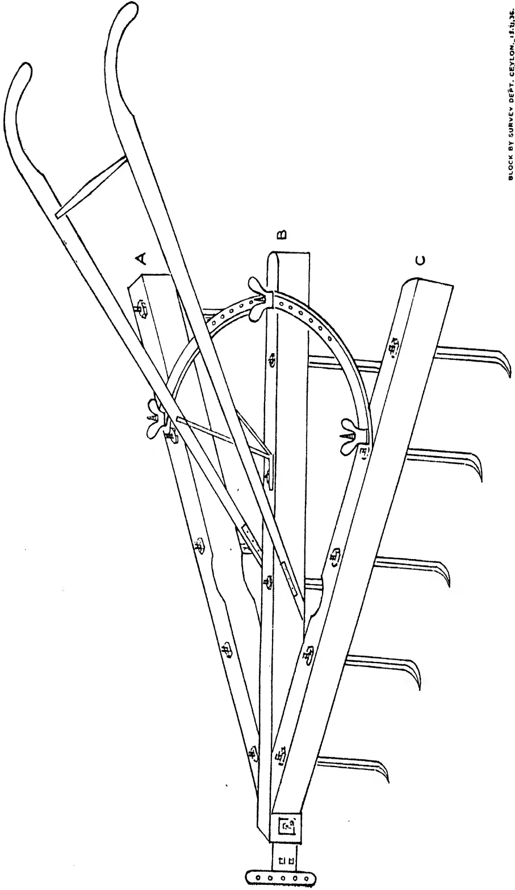
A detailed line drawing of a Tooth Cultivator, a manual agricultural tool. The tool consists of a central frame with a curved handle at the top. Two long, angled beams, labeled 'A' and 'C', are attached to the frame. These beams are equipped with several curved, tooth-like blades. A central curved bar, labeled 'B', is also part of the mechanism, featuring a series of small holes along its length. The entire assembly is mounted on a base with a handle at the bottom. The drawing is a technical illustration, showing the mechanical components and their arrangement.The Tooth Cultivator
BLOCK BY SURVEY DEPT. CEYLON, 1931, 36.
514 in number, are set perpendicular to the beams. The ends of the teeth are forged into a lance or spear shape slightly bent forwards. The teeth run 12 inches below the beams to which they are fixed by means of nuts. The two handles, about feet in length, are fixed on to the centre beam by means of two pieces of iron plate. The handles are further strengthened by a V-shaped bracket also fixed to the centre beam. The arms of the bracket are clamped on to the two handles by means of bolts and nuts. To separate the two wings to required distances two pieces of crescent-shaped flat iron, 18 inches long, one inch wide, and a quarter inch thick, are made use of with five sets of holes drilled in each iron. Three thumb screw nuts are fitted on to the three beams 12 inches away from the free end of the wings, and 4 inches from the free end of the centre beam. When the implement requires to be adjusted to intercultivate a particular crop, the centre thumb screw nut is removed and the wings are either brought closer or pushed further apart as desired. This implement can be used to intercultivate crops spaced in rows one foot to three feet apart. At the Wariapola Farm tobacco, chillies, maize, napier grass, etc., are intercultivated with this implement. The depth of working is regulated by the vertical bridle. This cultivator works to a depth of about inches. One man working for 8 hours a day can intercultivate 2 acres.
6W. R. C. PAUL, M.A., M.Sc., D.I.C., F.L.S.,
DIVISIONAL AGRICULTURAL OFFICER, NORTHERN DIVISION
AND
C. CANAGARATNAM, Dip. Agric. (Poona),
AGRICULTURAL INSTRUCTOR, MANNAR
ALTHOUGH the cashew tree is not extensively grown in Ceylon, there are a few areas situated both in the wet and dry zones of the island where it is found in small groves. It thrives, chiefly, on the sandy soils of the dry zone along the eastern coast near Batticaloa and to a lesser extent in the small island of Mannar. It receives the least amount of attention in comparison with most other crops of economic value in Ceylon and even exists wild in many of the areas where it is found, e.g., in the Western Province and in the Tenmarachy Division of the Jaffna district. The chief use of the tree lies in its kernels which are sold unpeeled in the local markets after extraction by roasting and shelling of the nuts in which they are enclosed. During the season, the kernels from immature and unroasted nuts are also sold, unpeeled and raw as well as, in smaller quantities, peeled and boiled with the addition of a small amount of saffron. They are made into packets containing a handful of kernels, prepared either way as stated above and are wrapped in mango leaves folded over as a cover. They are thus sold by women vendors in Colombo.
The cashew tree is also used as a supply of firewood for the Colombo market while it is considered of much value both in the Eastern Province and in the Jaffna Peninsula as a catch crop for coconuts on the poorest soils which are improved by it as a result of the large accumulation of fallen leaves on the surface of the soil under each tree. Coconuts are planted under the shade of the cashew and in this way soils which are too poor for growing coconuts are made more suitable.
There is, however, no export trade either of the unroasted, mature nuts or of the kernels which are extracted from the
7roasted and mature nuts in spite of the fact that there is a large demand for the former from the cashew factories on the west coast of India and for the latter from the United States of America.
In Mannar, there is a small but important industry in the production of cashew nuts. The tree is grown in groves of about 1 to 2 acres each and it is estimated that there are about 270 cashew groves with a total extent of about 509 acres. Cashew nuts rank third in order of production after palmyrah and coconuts in Mannar Island. It is estimated that there are about 250,000 lb. of nuts produced annually in Mannar.
The groves are enclosed by low brushwood fences. During the first 2 to 3 years these are about five feet high in order to prevent cattle and goats destroying the young plants but after this period, the brushwood is only maintained at about three feet, mainly to act as a protection against theft by the demarcation of each grove in this way. The establishment of fences enclosing each grove is considered to be one of the chief difficulties in Mannar owing to the scarcity even of brushwood which is the only material available for fencing purposes from the nearest waste lands in the Island. These brushwood fences need to be reconstructed about every six months.
It is well known that the cashew can grow in soils which are unsuitable for most other crops and in areas such as near the coast where strong winds are prevalent. It is thus found to thrive on the sandy soils of Mannar and Batticaloa but it will not grow in localities where the sub-soil water is too brackish. It is for this reason that the tree does not grow on the strip of land extending towards the west of the island for about 2 to 3 miles from the town of Mannar, the only vegetation being that of Acacia planifrons (T. udai) which is more tolerant of arid and saline conditions.
The cashew is propagated in Mannar entirely by seed, well-dried nuts being used for this purpose although the tree can be budded on its own root stock. Planting at stake is not, usually, practised as, after germination, the fleshy cotyledons or seed leaves that develop are liable to be attacked by field rats and insect pests.
8As the seedlings are not easily transplanted the nuts are first germinated in palmyrah baskets—known locally as kuddans—which are about 9 inches high and inches in diameter.
Before germination, the nuts are dried in the sun for about 10 to 14 days. The seedlings which develop from fresh nuts are considered to be weaker and therefore more liable to insect attack. Experiments carried out in this Division on the method of germinating the nuts have indicated that they are best placed in the vertical position with the point of attachment of the nut to the fruit on top, the nut being just covered over with a thin layer of soil. Shade is provided until the seedlings have developed 3 to 4 leaves. When baskets are not available the nuts may be germinated in nursery beds covered over with a layer of straw. Watering should be given daily or as often as is necessary to keep the soil moist.
Planting in baskets is usually done between the months of June and July. Germination takes place within about 8 to 10 days and the seedlings are kept in the baskets for about a month or until such time when the tap roots become too long to remain in the baskets. By this time each seedling develops about 4 to 5 leaves and it is then transplanted in Mannar about August in the open. Holes of sufficient size are dug so as to take each plant, but on other soils which are not sandy, holes about 2 feet square and feet deep should be dug and filled with good soil.
It is advisable to have 2 to 3 seedlings in each hole and after about a year to leave only the most vigorous. In this way any losses caused in transplanting, etc. may be reduced.
As soon as the seedlings are planted out they are pot watered from small wells dug in the sand, once every two days and after about a month, once in four days until the north-east monsoon arrives. Watering when carried out is only done in the mornings, about two gallons being given to each plant. After the north-east monsoon is over, watering has again to be commenced from about January and is continued until next October when no further watering becomes necessary.
There is no definite spacing adopted for planting cashews in Mannar. There are usually not more than about 10 to 15
9trees per acre though there is space available for more trees. Owing to the strong winds which prevail there the plants develop a low and spreading habit. Under these conditions, a spacing of ft. is not too wide but in localities where there is some shelter from strong winds and the trees are kept pruned by removal of overhanging branches a spacing of ft. could be adopted. The seedlings should first be planted out at ft. apart and when they are about 7 to 10 years of age thinning out to ft. should be carried out.
After about eighteen months, flowering and fruiting commence though until about the third year the yields are small.
The flowers usually appear between January and February and the fruits can be collected from the end of February or early March up to the end of May. There are certain late season varieties known locally as cholagam because they only fruit from about June to July after the south-westerly wind has set in.
There are several varieties of cashew growing in Mannar which show such differences as reported in a previous article* by one of the writers, in the colour of the fruit (red, yellow or intermediate) its size and shape, as well as size and shape of the nuts and kernels, the season of bearing and the degree of shedding of flowers. From the commercial standpoint, the size and shape of the kernel as well as the percentage weight of the kernels are important.
Varieties with large sized nuts are not necessarily the best in quality. In the largest varieties examined, the kernels are found to be either flat or to fill incompletely the cavities of the shell while their percentage weight on extraction from the nuts is low. In general, the medium sized nuts averaging 50 to 60 per pound with a high percentage weight of kernels are the most desirable from the point of view of quality and yield. Selections of varieties for yield and for quality of the kernels which should be round, bold and hard as well as with a high percentage weight and of different seasons of bearing are under trial.
* The Cashew Nut Industry of South India, by W. R. C. Paul, The Tropical Agriculturist, September 1936.
10YIELDSIn Mannar, the yields are reckoned on the number of nuts harvested and not on the weight as in India. The large nut varieties produce a lesser number of nuts per tree than do the small nut varieties but as the number of nuts per pound is proportionately less there is generally not much difference between varieties in the weight of nuts per tree. Although accurate figures of yields are not kept by the owners of cashew trees it is reported, in general, that the good large nut varieties produce about 4,000 nuts per tree, the medium varieties about 5,000 while the smallest varieties produce about 6,000 nuts or about 80 lb. per tree in each case, the large giving about 50 the medium about 60 and the small about 80 nuts per pound. In South Kanara, the average yield is reported to be only about 20 lb. per tree though there are individual trees which give as much as 100 lb.
Although the crop is purchased in Mannar on numbers of nuts and not on weight it would not be advisable to plant the smaller nut varieties without considering the quality of the kernels as in the event of the development of the industry in Ceylon the purchase of nuts from growers is certain to be made on weight. In Mannar, however, a slightly higher price is paid for the varieties with larger nuts.
EXTRACTION OF THE KERNELSThe method adopted in Mannar for roasting the nuts is simple and no vessels of any kind are even used. Three logs, usually of Acacia planifrons (T. udai) as being the most easily available in Mannar Island, each about 3 to 4 ft. in length and about 3 to 6 inches in diameter are placed on the ground so as to meet at a point with their other ends radiating from it. The surface sand within a radius of about 6 inches from this point is scraped away to a depth of not more than about inch. The logs are lighted at their point of convergence and depending on the intensity of the fire, about 10 to 20 nuts are thrown at a time near the fire. With the aid of a small stick the nuts are moved about the surface sand so as to prevent their being charred and when they are sufficiently roasted are drawn away from the fire.
This work as well as that of shelling the roasted nuts and extracting the kernels is carried out only by women who are
11skilled in these operations and it is estimated that about 2,000 nuts can be roasted and shelled a day by a woman. It is necessary for greater uniformity in roasting and in the colour of the kernels produced that the process be carried out in open pans over small, circular, earthenware furnaces as is done in the cashew factories of South India.*
Shelling is carried out by striking the nuts on their edges once or twice in each case with a piece of wood.
At present there is a ready market for cashew nuts and kernels from Mannar. These are sold at the religious festivals held during June and July at Madhu and at Anuradhapura. Jaffna, however, is a regular market throughout the year for Mannar cashew nuts.
Prices vary from about 90 cents to Re. 1.00 per 1,000 nuts and from Re. 1.40 to Re. 1.80 per 1,000 kernels or about 6 cents per pound of nuts and about 30 cents per pound of kernels.
The expansion of the cashew areas in Mannar Island is at present limited by finance. This is due to the cost of fencing and maintenance of fences enclosing the cashew groves as well as of constructing small wells for watering the plants in the early stages.
The purchase of nuts and the extraction of the kernels is now being carried out as a cottage industry, but in view of the fact that there is an enormous demand for kernels extracted from roasted nuts in the U.S.A. and Europe, and in the event of a factory for the extraction, grading and packing of the kernels being established in Ceylon in the near future any extension in the planting of cashew nuts would be met by a suitable market.
Even before the establishment of a factory in Ceylon, the surplus nuts from such centres as Mannar and the coastal area of the Eastern Province could be disposed of in India to meet the requirements of the existing factories on the west coast. If nuts can be exported profitably from East Africa to the west coast of Ceylon there is no reason why Ceylon should not be able to do likewise.
*The Cashew Nut Industry of South India, by W. R. C. Paul, Ceylon Sessional Paper, (in the press).
12A. W. R. JOACHIM, Ph. D., Dip. Agric. (Cantab),
AGRICULTURAL CHEMIST
AND
S. KANDIAH, Dip. Agric. (Poona),
ASSISTANT IN AGRICULTURAL CHEMISTRY
IN this paper, which is a continuation of the series on the important soil groups of Ceylon (1), are detailed the characteristics of typical profiles of the following soil groups: the lateritic gravelly soils (known locally as the cabooky soils), the lateritic brown loams, the white coastal sands (commonly designated the cinnamon soils) and the red sandy soils derived from Pleistocene plateau deposits (2), the chocolate red loams of Jurassic origin (3), and the paddy (gley) soils. The methods of study were on the same lines as those adopted previously. It is somewhat unfortunate that a few of the soil groups now described are related pedologically to some of those dealt with in previous papers but, since these studies are undertaken as the opportunities for so doing present themselves and simultaneously with other soil work of immediate consequence, there is no alternative but to publish the results as they are completed. It is hoped, however, in the future to collate and classify all the information obtained from these studies in some systematic manner.
The lateritic gravelly loams or cabooky soils, as they are known in Ceylon, are a feature of the western and south-western parts of the Island, though their occurrence is not confined to these regions. They are best observed on the low hillocks and elevated land of these areas. They are of fairly extensive distribution and are formed under both humid and semi-humid
13conditions from igneous and metamorphic basic and intermediate rocks. These soils are distinctly poor agriculturally, but show response to cultivation and manuring. Their drainage is good and occasionally excessive. The main crop they carry is rubber, but coconuts and tea are also grown on them, the former with no great degree of success. Cinnamon and citronella are also cultivated on these soils in certain districts. They are unsuited generally for annual crops. The surface layers of this group of soils are often severely eroded and quartz gravel and ferruginous nodules form a high proportion of the soil mass. The prevailing tint of these soils is greyish to reddish yellow but reddish soils are also observed. A typical profile is described below and the analytical data of its horizons shown in table I. The B horizon is absent in these soils.
| Location | .. | .. | Pitipana, Western Province |
| Elevation | .. | .. | 50 ft. (approx.) |
| Climate | .. | .. | Rainfall 100 in. (approx.); temperature 80° F. (approx.) |
| Geological origin | .. | .. | Basic and intermediate gneisses |
| Mode of formation | .. | .. | Residual |
| Drainage | .. | .. | Good |
| Topography | .. | .. | Undulating; sample taken at bottom of a slope |
| Vegetation | .. | .. | Rubber—poor growth |
| A. 0-11 in. | .. | .. | Greyish yellow gravelly loam; large proportion of ferruginous concretions up to 2 in. diameter; compact but friable; conglomerate to small clod; root growth good; strongly acid. |
| C. 11 in.-4 ft. | .. | .. | Reddish yellow gravelly loam; a b u n d a n c e of partly decomposed and undecomposed ferruginous concretions; mottled dark red; compact; conglomerate to irregular large clod; root growth absent; acid. |
TABLE I
MECHANICAL ANALYSIS
| Lateritic Gravelly Loam | Immature Lateritic Brown Loam | |||
|---|---|---|---|---|
| A | C | A | C | |
| % | % | % | % | |
| Stones and gravel .. | 55.0 | 63.5 | 5.8 | 0.9 |
| Coarse sand .. | 38.6 | 32.5 | 35.7 | 37.0 |
| Fine sand .. | 23.1 | 22.4 | 13.9 | 32.7 |
| Silt .. | 4.1 | 5.7 | 11.4 | 16.2 |
| Clay .. | 27.6 | 33.4 | 34.3 | 10.6 |
| Loss by solution .. | 2.5 | 2.0 | 1.4 | 1.0 |
| Moisture .. | 4.1 | 4.0 | 3.3 | 2.5 |
| Sticky point moisture .. | 21.1 | 20.9 | 26.4 | 17.8 |
| Texture index number .. | 25.5 | 30.8 | 32.0 | 11.4 |
| Soil type .. | Loam | Heavy loam | Heavy loam | Light sandy loam |
| Loss on ignition .. | 7.90 | 6.92 | 9.51 | 7.27 |
| Organic matter .. | 2.71 | 1.16 | 1.84 | 0.24 |
| Combined water .. | 5.19 | 5.76 | 7.67 | 7.03 |
| Carbon .. | 1.57 | 0.67 | 1.07 | 0.14 |
| Nitrogen .. | 0.120 | 0.048 | 0.108 | 0.018 |
| Carbon/nitrogen ratio .. | 13.0 | 13.9 | 10.0 | 7.9 |
| Reaction pH .. | 4.85 | 5.00 | 5.87 | 5.47 |
| Total potash .. | 0.081 | 0.067 | 0.210 | 0.083 |
| Total phosphoric acid .. | 0.056 | 0.042 | 0.041 | 0.030 |
| Total exchangeable bases (m.e. per 100 gm. soil) .. |
0.57 | 0.37 | 3.14 | 3.79 |
| Exchangeable calcium .. | 0.33 | 0.27 | 2.35 | 2.12 |
| Loss on ignition .. | 22.82 | 21.68 |
| Silica () .. | 39.10 | 42.34 |
| Sesquioxides () .. | 58.37 | 56.05 |
| Alumina () .. | 45.28 | 42.47 |
| Iron oxides () .. | 13.09 | 13.58 |
| (molecular) .. | 1.46 | 1.69 |
| (molecular) .. | 1.23 | 1.40 |
| Soil type .. | Lateritic | Lateritic |
An examination of table I would indicate that in both A and C horizons, the proportion of stones and gravel is very high, comprising over half and more nearly two-thirds of the soil mass. The soil proper is loamy in texture and becomes heavier with depth. The A horizon is fairly well supplied with organic matter and nitrogen but the C horizon is very deficient in these constituents. The carbon/nitrogen ratios tend to remain constant throughout the profile. In reaction the soils are distinctly acid, the pH showing a slight increase with depth from 4.85 to 5.0. The soils are very poor in total mineral fertilising constituents, both potash and phosphoric acid, and the exchangeable base contents are extremely low. The clay analyses reveal an alumina content of 45 per cent. and an iron oxide content of 13 per cent. On the basis of the silica/alumina molecular ratio, this soil is lateritic, though the ratio 1.46 is near enough to justify its being described as a laterite soil.
The lateritic brown loams are only of very limited occurrence and may with some reason be termed immature loams, as the soil horizons immediately below the shallow top soil consist largely of loose, decomposing material like rock brash. Small flakes of mica predominate throughout the profile. The soils are probably formed from sedimentary metamorphic rocks like Khondalite and occur in soiled areas among the red and yellow earths mid-country and to a lesser extent, up-country. Agriculturally they are fairly rich soils, and are suited for cultivation of either annual or perennial crops. Ginger was grown on one such loam with excellent results. The top soil is shallow but the profile itself is of fair depth. The soils are well-drained and easily eroded. The typical profile characteristics are indicated below and the analytical data presented in table I.
| Location | .. | .. | Giragama, Kandy district |
| Elevation | .. | .. | 1,700 ft. (approx.) |
| Climate | .. | .. | Rainfall 90 in. (approx.); temperature 77°F. (approx.) |
| Geological origin | .. | .. | Sedimentary metamorphic rock |
| Mode of formation | .. | Residual |
| Drainage | .. | Very good |
| Topography | .. | Undulating, sample taken from the side of a hillock |
| Vegetation | .. | Mana grass ; tea |
| A. 0-14 in. | .. | Brown heavy loam ; loose and friable ; irregular prismatic ; root growth good ; acid ; horizon indistinct |
| C. > 14 in. | .. | Yellowish sand like rock brash ; very soft and loose ; amorphous ; root growth good ; acid. |
The analytical data reveal that the A horizon is a heavy loam, while the C is a light sandy loam with a fair percentage of silt. The former is fairly well supplied with nitrogen and organic matter, but the C layer, as is to be expected, is extremely poor in these constituents. The soils are acid in reaction with pH values of 5.9 and 5.5 respectively in the two horizons. The A horizon is rich in potash and poor in phosphoric acid, but fairly well supplied with replaceable bases so far as Ceylon soils go. The C horizon is poor in potash and phosphoric acid but fair in replaceable bases. The carbon/nitrogen ratio which is about 10 in the surface soils falls to 8 in the sub-soil. The clay analyses show an alumina content of 42 per cent. and a silica/alumina molecular ratio of 1.69. The soil is therefore of the lateritic type.
SOILS DERIVED FROM PLEISTOCENE PLATEAU DEPOSITSUnder this heading the white sand of the western coastal plain, known popularly as the cinnamon soil and the reddish sandy soil from the Puttalam district will be described. Both these soils, according to Wayland (2), are residual deposits of the Pleistocene red earths. The fine earth material is considered to have been removed from them by natural causes and the red tint of the cinnamon soils to have been bleached by vegetation under swamp conditions. Tennant (4), on the other hand, attributes the sandy deposits of the Batticaloa and western coasts to the interaction between currents skirting
17the coast and the sand-laden river waters. Other soils of this type have colours between these two extremes, buff being not uncommon. The colours are related to the degree of bleaching.
These soils are best exemplified in the Negombo district. They are deep, almost white sands, poor in all plant fertilising constituents. They suffer from a deficiency of moisture during dry weather and are inclined to be water-logged during the rainy season. This is because of the occurrence in most of these soils at depths varying from 6 to 15 feet or more of a blackish brown, fairly impervious pan-like layer comparatively rich in humus and sesquioxides. This profile can thus be considered to be a type of tropical podsol, the Ao humic layer from which has been removed probably by erosion or decomposition. In other types of cinnamon soils, the dark brown pan is replaced by a clay layer. These soils can only produce good crops both of annuals like vegetables and of perennials like coconuts, if liberally manured with bulky organics and artificial fertilisers. Cinnamon, however, has been grown on them with success from early Dutch times. The profile characteristics of a typical cinnamon soil are detailed below and the analytical data shown in table II.
| Location | .. | .. | Negombo, on the west coast |
| Elevation | .. | .. | Sea level |
| Climate | .. | .. | Rainfall 90 in. (approx.); temperature 80°F. (approx.) |
| Geological origin | .. | .. | Probably Pleistocene plateau deposits |
| Mode of formation | .. | .. | Probably residual |
| Drainage | .. | .. | Excessive |
| Topography | .. | .. | Level |
| Vegetation | .. | .. | Cinnamon and coconuts |
| A. 0-60 in. | .. | .. | Light white sand almost pure quartz; single grain; loose and porous; no concretions; roots abundant; acid; horizon boundary distinct |
B. 60-70 in. . . . . Dark brown sand colour increasing in intensity with depth ; otherwise as in A ; horizon boundary distinct
B2. 70-83 in. . . . . Blackish brown pan ; crumbles on wetting ; compact ; hard but friable ; roots absent ; acid
C. V 83 in. . . . . Light yellow sand ; water-logged
TABLE II
CINNAMON SOIL (PODSOL)
MECHANICAL ANALYSIS
| A | B1 | B2 | |
|---|---|---|---|
| % | % | % | |
| Stones and gravel . . . . . | — | — | — |
| Coarse sand . . . . . | 87.2 | 73.9 | 82.7 |
| Fine sand . . . . . | 9.6 | 17.6 | 6.1 |
| Silt . . . . . | 0.4 | 1.3 | 0.7 |
| Clay . . . . . | 2.6 | 5.6 | 7.1 |
| Loss by solution . . . . . | .1 | 0.7 | 0.7 |
| Moisture . . . . . | 0.1 | 0.9 | 3.1 |
| Sticky point moisture . . . . . | — | — | — |
| Texture index number . . . . . | 2.4 | 5.3 | 6.4 |
| Soil type . . . . . | Sand | Sand | Sand |
CHEMICAL ANALYSIS
| Loss on ignition . . . . . | 0.42 | 1.76 | 4.05 |
| Organic matter . . . . . | 0.37 | 1.10 | 2.48 |
| Combined water . . . . . | 0.05 | 1.66 | 1.57 |
| Carbon . . . . . | 0.214 | 0.640 | 1.44 |
| Nitrogen . . . . . | 0.028 | 0.047 | 0.047 |
| Carbon/nitrogen ratio . . . . . | 9.8 | 13.6 | 30.6 |
| Reaction—pH . . . . . | 4.6 | 4.8 | 4.9 |
| Total sesquioxides . . . . . | 0.79 | — | 3.55 |
| Total potash . . . . . | 0.007 | — | 0.049 |
| Total phosphoric acid . . . . . | .009 | — | — |
| Total exchangeable bases (m.e. per 100 gm. soil) . . . . . |
1.10 | 1.23 | 2.90 |
| Exchangeable calcium . . . . . | — | — | — |
| CLAY ANALYSIS | B2. % |
||||
|---|---|---|---|---|---|
| Loss on ignition | .. | .. | .. | .. | 54.54 |
| Silica () | .. | .. | .. | .. | 46.78 |
| Sesquioxides () | .. | .. | .. | .. | 46.30 |
| Alumina () | .. | .. | .. | .. | 42.10 |
| Iron oxides () | .. | .. | .. | .. | 4.20 |
| (molecular) | .. | .. | .. | .. | 1.88 |
| (molecular) | .. | .. | .. | .. | 1.77 |
| Soil type | .. | .. | .. | .. | Lateritic to non-lateritic |
A glance at table II will indicate that the A horizon is a quartz sand containing no less than 96 per cent. of this material. Its clay content is only 2.6 per cent. and its combined water content .05 per cent. The B horizon, which is subdivided into B1 and B2, has appreciably higher percentages of this constituent. The organic matter contents of the B horizon are likewise much higher, being 0.6 and 1.4 per cent. as against 0.2 per cent. in the A layer. Nitrogen is very low throughout the profile, and the B layers have again an accumulation of this constituent. In reaction the soils are markedly acid, the acidity decreasing slightly with depth. The soil is extremely poor in potash and phosphoric acid. The total exchangeable bases are low but again show an appreciable increase with depth. A similar phenomenon is observed with regard to the total sesquioxides. It will thus be noted that there is a translocation of soil constituents from the A to the B1 and particularly B2 horizons, where they form a sort of pan. This pan sets very hard when dry, but crumbles when wet. The total lack of moisture in the surface layer during periods of drought and the tendency for water-logging during the rains will now be understood. The analysis of the clay fraction of the B2 horizon shows an alumina content of 42 per cent. and an iron oxide content of one-tenth this figure. The silica/alumina molecular ratio, viz., 1.88 indicates that the soil is on the border line between the non-lateritic and lateritic types.
The red sandy soils, also derived from the Pleistocene red earths, occur on the coastal plains, their best examples being found in the Puttalam and Marawila districts. All over
20this region, however, soils of paler hues—dull red, buff, light yellow—are to be found. No. B and C horizons are discernible down to a depth of 4 ft. but in some cases a clay layer occurs at depths of 20 ft. and more. These soils, though poor in fertilising constituents, are physically ideal coconut soils, being often of great depth, well-drained and easily cultivated. A typical profile is described below and the analytical data shown in table III.
PLEISTOCENE LIGHT SANDY LOAM
| Location | .. | .. | 5 miles from Puttalam on the Puttalam-Kurunegala Road |
| Elevation | .. | .. | 30 ft. (approx.) |
| Climate | .. | .. | Rainfall 46 in. (approx.); tem- perature 81°F. (approx.) |
| Geological origin | .. | .. | Pleistocene plateau deposits |
| Mode of formation | .. | .. | Probably residual |
| Drainage | .. | .. | Very good |
| Topography | .. | .. | Flat |
| Vegetation | .. | .. | Coconuts |
PROFILE
| A. 0.18 in. | .. | .. | Brick red light sandy loam ; deep ; no marked variation with depth ; loose and friable ; single grain ; root growth good ; slightly alkaline |
TABLE III
MECHANICAL ANALYSIS
| Red Jurassic Loam |
Red Light Sandy Loam |
||||
|---|---|---|---|---|---|
| % | % | ||||
| Stones and gravel | .. | .. | .. | — | — |
| Coarse sand | .. | .. | .. | 25.0 | 53.0 |
| Fine sand | .. | .. | .. | 34.5 | 26.8 |
| Silt | .. | .. | .. | 7.0 | 1.1 |
| Clay | .. | .. | .. | 26.9 | 16.7 |
| Loss by solution | .. | .. | .. | 1.7 | 0.6 |
| Moisture | .. | .. | .. | 4.9 | 1.8 |
| Sticky point moisture | .. | .. | .. | 21.6 | 10.4 |
| Texture index number | .. | .. | .. | 25.1 | 15.4 |
| Soil type | .. | .. | .. | Loam | Light sandy loam |
| Red Jurassic Loam |
Red Light Sandy Loam |
|||
|---|---|---|---|---|
| % | % | |||
| Loss on ignition .. | .. | .. | 5.36 | 2.19 |
| Organic matter .. | .. | .. | 2.28 | 1.09 |
| Combined water .. | .. | .. | 3.08 | 1.10 |
| Carbon .. | .. | .. | 1.32 | 0.63 |
| Nitrogen .. | .. | .. | 0.112 | 0.036 |
| Carbon/nitrogen ratio .. | .. | .. | 11.81 | 17.14 |
| Reaction—pH .. | .. | .. | 7.1 | 7.5 |
| Total potash .. | .. | .. | 0.257 | 0.076 |
| Total phosphoric acid .. | .. | .. | 0.102 | 0.053 |
| Total exchangeable bases (m.e. per 100 gm. soil) .. |
.. | .. | 15.64 | 1.94 |
| Exchangeable calcium .. | .. | .. | 11.14 | 1.55 |
| CLAY ANALYSIS | ||||
| Loss on ignition .. | .. | .. | 23.04 | 14.71 |
| Silica () .. | .. | .. | 51.86 | 41.90 |
| Sesquioxides () .. | .. | .. | 47.70 | 55.30 |
| Alumina () .. | .. | .. | 26.91 | 37.81 |
| Iron oxide () .. | .. | .. | 20.79 | 17.49 |
| (molecular) .. | .. | .. | 3.26 | 1.88 |
| (molecular) .. | .. | .. | 2.18 | 1.45 |
| Soil type .. | .. | .. | Non-lateritic | Lateritic to non-lateritic |
A glance at table III would indicate that the soil is a light sandy loam containing about 80 per cent. of sand. It is poor in organic matter, nitrogen, potash, phosphoric acid and replaceable bases (of which calcium forms over 75 per cent.). Its carbon/nitrogen ratio is high. The soil is slightly alkaline in reaction. On the basis of the silica/alumina ratio of its clay complex it is, like the cinnamon soil, on the border line between the lateritic and non-lateritic types. A comparison of this soil profile with the Marawila red sand profile described elsewhere (1) will indicate the great similarity between the two.
THE JURASSIC RED LOAMSA small outcrop of Jurassic rocks occurs at Tabbowa, near Puttalam. These rocks, which were first described by Wayland (3), give rise to a chocolate red loam of varying depth, from 3 ft. onwards. No demarcation of soil horizons is apparent. The underlying stratum is sandstone and grit in a matrix of red earth. Nodular limestone occurs in the lower strata, and
22the derived soils are therefore similar in properties to the calcareous soils of the Miocene age. Agriculturally these soils are quite fertile. The area has recently been opened up under both annual and perennial crops. Tobacco, vegetables, fruits and coconuts are some of the crops cultivated. The soils are well drained and, being situated in a district of low rainfall, require irrigation during drought for successful crop growth. The soil profile characteristics are indicated below and the analytical data detailed in table III.
| Location | .. | .. | Tabbowa |
| Elevation | .. | .. | 30 ft. (approx.) |
| Climate | .. | .. | Rainfall 46 in. (approx.); temperature 81°F. (approx.) |
| Geological origin | .. | .. | Jurassic deposits |
| Mode of formation | .. | .. | Sedimentary, alluvial |
| Drainage | .. | .. | Good |
| Topography | .. | .. | Flat |
| Vegetation | .. | .. | High jungle with scrub |
| A. | 0-3 ft. | .. | .. | Chocolate red loam uniform in texture and colour; compact but friable; irregular clod; root growth good; neutral to alkaline |
An examination of the table shows that the soil is a free working loam, fairly well supplied with organic matter and nitrogen and having a carbon/nitrogen ratio of 12. The combined water content is, however, low and appears to indicate the need for irrigation during drought. In reaction the soil is neutral. Its potash and phosphoric acid percentages are quite good. The exchangeable base contents are comparatively very high, being of the same order as those of the Jaffna soils. Lime constitutes over 70 per cent. of these bases. The silica/alumina molecular ratio of the clay fraction is 3.26. The soil is thus definitely non-lateritic. Alumina constitutes 26.9 per cent. and iron oxide no less than 20.8 per cent. of the clay fraction. The high iron oxide/alumina ratio is probably the reason for the low combined water content of the soil.
23Soils suited for paddy cultivation exist in all parts of the Island. Typical paddy soils occupy the depressions between the hills and are low-lying and imperfectly drained. Any soil of sufficient body can, however, be converted into paddy soil or "aswedumised" as it is termed locally. Paddy soils vary considerably in texture from light loams and even sands to clay loams and clays. In the former case paddy cultivation is only possible because of a water-impermeable layer of clay or rock at some depth below. Root aeration is brought about in submerged paddy soils by the agencies of the micro-organic population of the soil and the dissolved oxygen of the continuously-flowing water. The alternate wetting and drying of paddy soils produces a definite type of profile, the lower horizon of which (the gley horizon) is characterised by mottlings and streaks of brown in a bluish or brownish grey matrix. These mottlings are caused by the decomposition and oxidation of plant material. The gley horizon is more marked when the soil is moist. Drainage is not altogether absent in paddy soils, as appears to be commonly believed. While paddy does grow on soils which do not permit of free drainage, all the evidence available indicates that moderate drainage is distinctly beneficial. The profile described below is one in which, despite its heavy texture, partial drainage was possible owing to the presence of an underlying gravel layer. A yield of 80 bushels of paddy per acre was obtained during a favourable season on this soil, which may thus be considered ideal for the crop. Its detailed profile and analytical characteristics are indicated below and in table IV.
| Location | .. | .. | Gannoruwa, Peradeniya |
| Elevation | .. | .. | 1,760 ft. (approx.) |
| Climate | .. | .. | Rainfall 94 in. (approx.); temperature 77°F. (approx.) |
| Geological origin | .. | .. | Recent |
| Mode of formation | .. | .. | Sedimentary, alluvial |
| Drainage | .. | .. | Poor |
| Topography | .. | .. | Flat |
| Vegetation | .. | .. | Paddy |
| A. | 0-4 in. .. | .. | Greyish brown clay loam ; hard ; irregular columnar ; root growth good ; acid ; horizon boundary distinct |
| B1. | 4-12 in. | .. | Fawn brown clay loam ; mottled and streaked dark brown when moist ; compact ; root growth poor ; acid ; horizon boundary distinct |
| B2. | 12-17 in. | .. | Brownish yellow clay loam ; mottled ; fairly friable ; root growth poor ; acid |
| C1. | > 17 in. .. | .. | Yellowish loam with quartz gravel ; loose and friable ; root growth poor ; acid |
TABLE IV
PERADENIYA PADDY SOIL PROFILE
MECHANICAL ANALYSIS
| A. | B1. | B2. | C1. | |
|---|---|---|---|---|
| % | % | % | % | |
| Stones and gravel .. | 0.5 | 2.1 | 4.9 | 20.1 |
| Coarse sand .. | 3.7 | 5.7 | 13.5 | 38.9 |
| Fine sand .. | 24.6 | 20.7 | 18.1 | 19.9 |
| Silt .. | 23.6 | 26.4 | 21.9 | 11.6 |
| Clay .. | 39.6 | 40.2 | 41.1 | 26.3 |
| Loss by solution .. | 2.5 | 1.4 | 1.0 | 0.5 |
| Moisture .. | 6.0 | 5.6 | 4.4 | 2.8 |
| Sticky point moisture .. | 36.7 | 35.2 | 31.5 | 23.1 |
| Texture index number .. | 38.0 | 38.8 | 39.2 | 24.0 |
| Soil type .. | .. Clay loam | .. Clay loam | .. Clay loam | .. Loam |
| Loss on ignition .. | .. | 14.62 | 14.54 | 11.66 | 6.63 |
| Organic matter .. | .. | 4.74 | 4.29 | 2.52 | 1.37 |
| Combined water .. | .. | 9.88 | 10.25 | 9.14 | 5.26 |
| Carbon .. | .. | 2.75 | 2.49 | 1.46 | 0.794 |
| Nitrogen .. | .. | 0.217 | 0.212 | 0.149 | 0.672 |
| Carbon/nitrogen ratio .. | .. | 12.66 | 12.32 | 9.76 | 11.02 |
| Reaction—pH .. | .. | 5.14 | 5.23 | 5.70 | 6.18 |
| Total potash .. | .. | 0.298 | — | 0.253 | — |
| Total phosphoric acid .. | .. | 0.184 | — | 0.219 | — |
| Total exchangeable bases (m.e. per 100 gm. soil) .. |
.. | 5.77 | 5.31 | 5.16 | 2.94 |
| Exchangeable calcium .. | .. | 3.74 | 3.66 | 3.39 | 1.91 |
| A. | C1. | ||
|---|---|---|---|
| 0/0 | 0/0 | ||
| Loss on ignition .. .. | .. | 28.73 | 21.30 |
| Silica () .. .. | .. | 36.42 | 37.30 |
| Sesquioxides () .. .. | .. | 58.15 | 58.06 |
| Alumina () .. .. | .. | 38.07 | 38.31 |
| Iron oxide () .. .. | .. | 20.08 | 19.75 |
| (molecular) | 1.62 | 1.65 | |
| (molecular) | 1.21 | 1.24 | |
| Soil type .. .. | .. | Lateritic | Lateritic |
On an examination of this table it will be observed that all the horizons are clay loams excepting C2 which is a loam. The stone and gravel content of the latter is 20 per cent., while that of the A and B horizons is under 2 per cent. Horizon boundaries are fairly marked when the soil is moist, but are not so apparent when it is dry. The soils are acidic in reaction, the acidity decreasing with depth from pH 5.1 to 6.2. The organic matter and nitrogen contents are high in the upper horizons, but low in the C horizon. The A and B horizons are rich in potash and phosphoric acid. The exchangeable base contents are fair in all but the C horizon and range from 5.7 mgm. equivalents in the A to 2.9 in the C horizon. Calcium constitutes about 65 per cent. of these bases. The clay analyses reveal an aluminium content of 38 per cent. and iron content of 20 per cent. The silica/alumina molecular ratio is 1.6 in both the A and C layers, indicating that the soil is of the lateritic type and probably an alluvial deposit from the surrounding hills, the top-soils of which are lateritic in nature.
SUMMARYAn account is given of the profile and analytical characteristics of the following soil groups: the lateritic gravelly soils (cabooky soils) and brown loams, the coastal white (cinnamon soils) and red sandy soils derived from Pleistocene deposits, the chocolate red loams of Jurassic origin, and the paddy(gley)soils.
REFERENCESK. J. ALEX SYLVA, F.R.H.S.,
SUPERINTENDENT OF PARKS, COLOMBO MUNICIPALITY
AMONG the most popular epiphytal orchids introduced into Ceylon collections and grown with success for quite a number of years is the Dendrobium thyrsiflorum, its popularity being enhanced by the singular beauty of its blooms which add considerable charm to the general effect in the orchid house.
The plant is one of the most handsome of the Dendrobe family and is endemic in Burma. It belongs to the sub-evergreen section of the Dendrobes and closely resembles D. densiflorum Wall in habit. The brownish-yellow pseudo-bulbs are stiff and tall, being from twelve to thirty inches high, and have very pronounced yellow rings at the nodes. When young they carry only the smooth, fleshy dark-green leaves which are lance-shaped (6 inches long and inches across) and found at the uppermost nodes. As the bulbs mature they shed these leaves, becoming wrinkled and woody. At this stage they are capable of flowering.
The flowers are produced invariably from the uppermost node of the naked pseudo-bulb in long drooping racemes, gracefully pendulous, and often about twelve inches long. The individual flowers are to 2 inches across, and have delicate white petals and sepals, sometimes flushed with pink, and broad golden-orange pubescent lips.
Well-established plants may produce as many as twelve floral spikes at one and the same time and are most spectacular and eminently suited for exhibition purposes. The blooms, however, last generally for a few days only, and not more than ten days under the most favourable conditions.
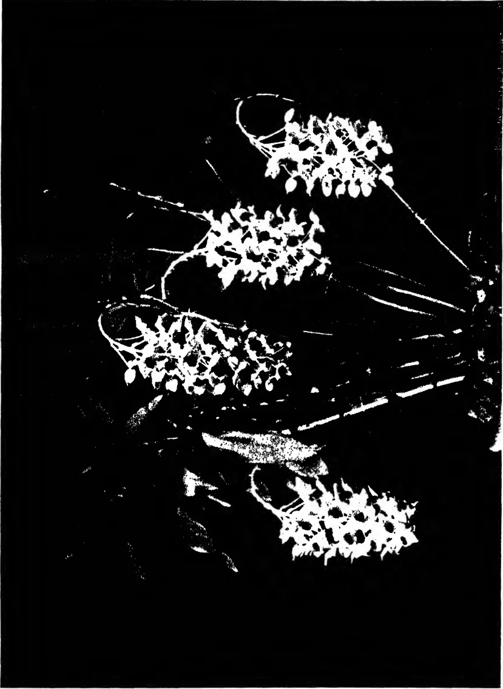
Dendrobium thysiflorum Rehb. f.
This image is a blank white page. It contains several small, dark specks which appear to be scanning artifacts or dust particles. There is no text, handwriting, or printed content on the page. 27Culture.—Being a fairly hardy plant it will readily adapt itself to any position in a pot, basket or on wood. Although it is known to thrive fairly well in most parts of Ceylon, it blooms less freely at low altitudes. This could be remedied to some extent by increasing the atmospheric humidity in the orchid house during hot and dry spells.
It should be noted that well-grown, healthy plants should not be transplanted or disturbed in any way unless they have overgrown their pots. An excellent rooting medium in which to start a plant can be made up with equal parts of charcoal and brick-bats. On the appearance of new roots at the base of the plant, a small quantity of seasoned coconut husk, flaky leaves and a few pieces of crushed bone may be distributed among the compost, taking care not to disturb or injure the new and delicate root growth.
Propagation is easily effected by the division of a clump, each part having an active lead. The division of clumps should be made only when new leads are formed, after the flowering season.
To encourage flowering it is essential that the plants should get a decided rest on the completion of a season's growth, so as to ensure the ripening of the pseudo-bulbs. When the foliage of the plants appears to be less succulent and the pseudo-bulbs assume the appearance of maturity, plants may be exposed to rain or given copious supplies of water, for about a week. Following this, they should be exposed to dry atmospheric conditions, under shelter, and gradually the supply of water should be reduced to an afternoon syringe. This treatment will accelerate the production of flowers.
The old, naked, pseudo-bulbs are capable of flowering for two or more years and should not be removed until signs of decay are visible at the base of the bulb.
28W. MOLEGODE,
ACTING PROPAGANDA OFFICER
CLOVES (Eugenia aromatica) were first planted in our villages about fifty years ago. In 1883 clove plants were distributed to headmen throughout the Kandy District by the then Government Agent of Kandy, Mr. J. F. Dickson. The plants were probably supplied from the Royal Botanic Gardens, Peradeniya. Of these, 85 trees are still flourishing in Harispattu.
During the period 1928-1933 clove cultivation received the special attention of the writer as Agricultural Instructor, Katugastota Range. A census of trees in that area revealed that there were, at the end of 1933, 1086 clove trees, which number included some five hundred trees less than five years old. Since then many more trees have been planted.
Cloves have not been grown as a plantation crop in Ceylon. Trees in the Kandy District are scattered, while in the Arambepola-Alawatugoda area there are some groves of a few trees each. It has been said that in this area there are some of the finest clove trees in the world. One particular tree is known to have given, occasionally, during the last twenty-five years, two hundred pounds of dried cloves in a single crop. The average annual crop from a well-established tree is 10 to 12 pounds.
Enquiries regarding the cultivation of cloves have been received recently from prospective growers in various parts of the Island and in view of the increase in the number of trees planted recently it is the author's opinion that the output of cloves will increase considerably.
29Cloves are used in Ceylon as a spice and condiment, medicinally and as one ingredient of a "chew of betel." The annual local consumption has been estimated as 1,000 cwt. This quantity is fully met by local production and a surplus is available for export. India, where the consumption of cloves is much larger, imports about 70,000 cwt. of cloves annually, chiefly from Zanzibar. Ceylon cloves have the reputation of being better than those of Zanzibar. There seems, therefore, to be a market for an increased output of cloves both in India and in the West because of the good quality of Ceylon cloves.
The cloves of commerce (Karambu, Sinh.) are the dried unexpanded flower buds which are harvested in January-February in Kandy District. The buds are green at first, becoming yellowish and soon assuming a pale red colour, at which stage they are plucked and dried in the sun for a few days until they become hard and dark brown in colour. Prices for many years ranged between 80 cents and Re. 1.25 per lb. and at times, owing to short crops, prices went up to Re. 1.50 per lb. They fell during the depression but have improved in the last few years and are now 45 cents to 55 cents per lb.
The clove is a slow growing tree which does best on a deep, rich, well-drained soil and takes about seven or eight years to come into bearing. From then the yield increases and after about twenty years crops vary from 20 to 40 lb. of green or 5 to 10 lb. of dried cloves. It has been observed that crops vary considerably from year to year even in full-grown trees. Records show that the crop from one tree about fifty years old has varied from 10 to 150 lb., sometimes with an interval of years without any crop. One tree gave in 1929 the extraordinary crop of 240 lb. of dried cloves and this was followed by no crop until 1936 when 86 lb. were gathered.
The clove tree is commonly propagated from seed and can also be propagated by layering. Seeds are planted in boxes or bamboo pots. Great care is necessary with the young plants which should be well shaded and regularly watered. As the plants grow they should be gradually exposed to the sun to harden them. When plants are about 12 inches high, at which stage they are about 9 or 10 months old, they are
30transplanted, care being necessary to see that the tap root is kept straight. Transplanting is best done in wet weather. If dry weather sets in, the plants should be watered regularly until they begin to throw out new leaves. Cloves have given the best results when planted in pits 3 ft. 3 ft. 3 ft. filled with top-soil mixed with well-decomposed farmyard manure. Light shade is required until the young trees are well established. A good distance to plant is 25 feet apart. Though ordinarily it takes about 7 or 8 years to produce a first crop, with good cultivation and grown under ideal conditions, cloves have commenced to yield in the fifth year in Harispattu.
In harvesting care should be taken not to damage the small branches when picking the clusters of buds. Damage to branches may result in the absence of a crop for the following two or three years. The clusters of buds should be picked by hand or by means of hooked sticks. The buds must be in the right stage of development or the quality of the dried cloves will be unsatisfactory.
31FOR our knowledge of the performance of the various high-yielding clones which have been imported into Ceylon we have hitherto been almost exclusively dependent on data published in the countries of origin, and with the object of keeping the Ceylon planter in touch with the latest information regarding the clones established in his field or nursery such data have, from time to time, been collated and published in the Quarterly Circular. Doubts are often expressed, however, as to the extent to which results obtained in other countries will be applicable to the diverse conditions of climate, elevation and, in a smaller degree, soil under which rubber is grown in Ceylon, and the time when these clones became tapped on our own estates has been eagerly awaited. There are as yet in Ceylon no large areas planted exclusively with imported clones which have reached the stage of commercial tapping, and for such figures we are still dependent on Malaya and the Netherlands East Indies. Test-tapping data of small groups of trees are, however, beginning to accumulate, and although such records are of a somewhat fragmentary nature they are considered to be of sufficient interest to merit publication at the present juncture. The following notes are intended as the first of a series of annual reviews, which will run parallel with notes on clones of local origin.
It is convenient to consider the available information under two headings : (1) Growth and (2) Yield.
It has been observed that not only do clones show considerable variation amongst themselves in respect of vigour of growth, but that there is a differential response to environmental conditions, i.e., a clone which is vigorous in one locality may be less satisfactory in another. In planning replanting or budding programmes it is clearly important to know which clones are likely to show satisfactory development under the specific conditions in which they are to be grown, for it is obviously undesirable to select a clone which has a very high potential yield but is unsuited to the locality on account of growth or other secondary characteristic.
* By R. K. S. Murray, Botanist and Mycologist in the combined Second and Third Quarterly Circulars for 1936, Rubber Research Scheme (Ceylon).
32Our knowledge of the regional suitability of the various imported clones is very imperfect and, being based mainly on general observations, is of a somewhat empirical nature. We are in possession, however, of two series of comparative measurements which illustrate the rate of development of some of the more important clones under conditions of relatively low and high rainfall respectively. The figures are given in tables I and II and are commented on in the notes on individual clones. It should be mentioned that the girths given in table I are strictly comparable, being derived from replicated plots whereas those in table II are taken from contiguous fields, some of which are more favourably situated than others. Clones A.V.R.O.S. 49 and B.D. 5, in particular, suffer from being planted in rather exposed areas.
TABLE IGirth Measurements at Iriyagama Division, Experiment Station, Peradeniya
Average Annual Rainfall : 93.3 ins. Elevation : 1,550 feet
Planted budded stumps : October, 1929
Seedlings as basket plants : October, 1929
Means of 60 trees in each clone
| Clone | Girth at 3 feet in | |||||
|---|---|---|---|---|---|---|
| Nov., 1933 | Aug., 1934 | Sept., 1935 | ||||
| Tjirandji | 1 | .. | .. | 11.62 ins. | 14.30 ins. | 17.90 ins. |
| Tjirandji | 16 | .. | .. | 10.36 .. | 13.26 .. | 16.31 .. |
| A.V.R.O.S. | 49 | .. | .. | 10.45 .. | 12.60 .. | 15.54 .. |
| A.V.R.O.S. | 50 | .. | .. | 9.91 .. | 11.66 .. | 14.59 .. |
| Bodjong Datar | 5 | .. | .. | 9.91 .. | 11.39 .. | 14.42 .. |
| Tjirandji | 8 | .. | .. | 9.47 .. | 11.66 .. | 14.24 .. |
| Heneratgoda | 2 | .. | .. | 9.51 .. | 11.33 .. | 14.12 .. |
| Sungei Reko | 9 | .. | .. | 9.83 .. | 11.55 .. | 13.98 .. |
| Seedlings | .. | .. | 11.02 .. | 13.55 .. | 17.02 .. | |
Girth Measurements on Estate A, Ratnapura District
(made at 3 feet from ground)
Average Annual Rainfall : 200 ins. Elevation : 400 feet
1927 stocks budded : 1931-32
| Clone | No. of trees measured | Percentage in Classes in June, 1936 | ||||
|---|---|---|---|---|---|---|
| Under 10" | 10"-15" | 15"-18" | Over 18" | |||
| Tjirandji | 1 | 3,337 | 14.3 | 10.1 | 26.7 | 48.9 |
| Bodjong Datar | 10 | 555 | 12.4 | 23.1 | 30.1 | 34.4 |
| A.V.R.O.S. | 50 | 3,161 | 14.3 | 24.9 | 38.3 | 22.5 |
| A.V.R.O.S. | 49 | 2,362 | 15.2 | 28.0 | 33.6 | 23.2 |
| Bodjong Datar | 5 | 1,988 | 26.2 | 37.5 | 27.1 | 9.2 |
1928 stocks budded : 1932
| A.V.R.O.S. | 256 | .. | 806 | 22.2 | 69.4 | 8.4 | — |
| Tjirandji | 16 | .. | 648 | 30.9 | 59.4 | 9.4 | 0.3 |
The yield records available up to the end of 1935 are summarised in Table III. The procedure of test-tapping on the different estates is somewhat variable, the trees having been tapped in some cases for the whole year and in others for only a few months, and in order to bring the figures to a common basis they have all been calculated as a yield in lb. dry rubber per tree for a year of 130 tappings on a half-spiral system. In some cases the recording is done on the estate while in others the rubber is sent regularly to these laboratories to be weighed.
At first sight it would appear that the variation in yield within a clone is unduly large, the figure for one estate being sometimes as much as twice the yield of trees of the same age on another estate. A partial explanation is to be found in the average girths given in column 4, but there are other reasons which cannot be mentioned in detail in an article of this nature. For example, all the yields on the Experiment Station, Peradeniya, are relatively low, and this is only to be expected in view of the dry climate and high elevation. The figure of 130 tappings per annum, also, while considered fair for the wetter districts, is rather low for Peradeniya where the smaller yield per tapping is partly compensated by the larger number of tapping days.
Comparison of these figures with the yields of the original buddings of the same clones in the countries of origin is not possible in all cases as test-tapping was not always started at these immature ages. For most clones, however, records of "second generation" buddings are available, and on the whole it may be said that the Ceylon yields compare quite favourably with those in other countries when girth as well as age is taken into consideration.
On some estates there is an interesting comparison between the buddings and ordinary unselected seedlings planted in the same area, and the comparison is always greatly in favour of the former. The following example may be quoted :—
On Estate E a clearing was planted with seed in 1927. Alternate plants were budded in 1929, and the yields of 11 Tjirandji 1 buddings and the inter-planted seedlings for the period November, 1934 to December, 1935 were as follows :
| Average Girth in December, 1935 |
No. of Tappings | Yield per tree |
|
|---|---|---|---|
| Tjirandji 1 .. .. | 25 inches | 133 | 6.6 lb. |
| Seedlings .. .. | 31 inches | 133 | 2.3 lb. |
The yield of the buddings was therefore nearly three times that of the seedlings, despite the fact that the latter were two years older and 6 inches larger in girth.
The following notes are based not only on the yields given in Table III, but also on records which are coming to hand during 1936.
Tjirandji.—The growth of this clone is exceptionally vigorous under all recorded conditions, and in all collections of imported clones which have come under the writer's observation Tjirandji 1 heads the list. Table I shows that in the relatively dry climate of Peradeniya the buddings of this clone are larger than seedlings planted as basket plants at the same time.
The yield records, also, are very satisfactory and show that this clone attains a high yield at an early age. Results from other countries indicate that the clone is susceptible to periods of drought, the yield falling off in a marked degree. Experience in the drier districts of Ceylon is insufficient to judge to what extent this will be balanced by the exceptionally high yields in the wetter months, but in the meantime it would be unwise to use this clone extensively in such districts as Uva and Matale.
The most important defect of this clone is susceptibility to wind damage on account of the heavy crown, but it would appear that the steady winds which are experienced on our exposed hill slopes are less damaging than the violent cyclonic storms which periodically occur in the flatter lands in other countries.
Tjirandji 16.—This clone is usually found to be a weak grower in the wetter districts, but it occupies second place in the Peradeniya collection given in Table I. Judged by vigour of growth it would appear to be more suited to the drier than to the wetter zones. The trees are rather susceptible to attacks of Oidium owing to a late wintering habit.
Bodjong Datar 5.—Early growth is rapid, but it is usually not until about the fourth year that the plant begins to form a crown. While the tree consists of a single main stem with a number of small, useless lateral branches the girth increase is very slow, and the clone is accordingly one of the last to attain tappable size. The formation of a crown can be artificially induced by pollarding at a height of about 8 feet as soon as the bark is quite brown at that height. The cut should be made in an internode and three shoots allowed to develop at well-spaced intervals. The growth of the clone seems to be remarkably uniform under different environmental conditions.
The yields so far obtained in Ceylon show promise but are not outstandingly high, and in view of the exceptionally high yields obtained from older buddings
35in Java it would appear that the clone is late maturing. B.D. 5 is probably well suited to the drier districts.
Bodjong Datar 10.—Growth is rapid and the early yields encouraging, but the clone is no longer recommended on account of susceptibility to Brown Blast, unevenness of the renewed panel and liability to wind damage.
Djasinga 1.—This is one of the older Java clones which is now generally considered to be only a moderate performer. The growth is relatively slow, but the yields obtained on Estate B (Table III) are very high.
A.V.R.O.S. 49.*—Compared with the figures published in other countries the growth and early yields of this clone are rather disappointing. There is some evidence that A.V.R.O.S. 49 may be better suited to the drier districts.
A.V.R.O.S. 50.—This clone is now recognised in other countries as being of only moderate merit, and experience in Ceylon confirms this view.
A.V.R.O.S. 80.—This clone has not been extensively used in Ceylon, but the only record of yield available is very encouraging. Experience in Sumatra, however, shows that the buddings never attain an exceptionally high yield.
Prang Besar 23.—Growth is rather weak and early yields are not specially promising.
Prang Besar 25.—The buddings show vigorous development on a rather poor lateritic soil at the Experiment Station, Nivitigalakele, and early yields from two estates are very high. The performance of this clone in Ceylon and Malaya indicates that it will probably be of value for replanting poor land.
*Since these notes were written information has been received that the latex from buddings of this clone has an objectionable tendency to pre-coagulation.
36TABLE III| Clone | Where tapped |
No. of trees |
Aver- age girth at 3 ft. in July, 1935 in ins. |
Calculated yield in lb. per tree for a year of 130 tappings at ages of (years) |
||||
|---|---|---|---|---|---|---|---|---|
| 4 | 5 | 6 | 7 | |||||
| 4½ | 5½ | 6½ | 7½ | |||||
| Tjirandji 1 .. | Estate (A) | 8 | 19.7 | 6.3 | ||||
| „ (B) | 39 | 25.4 | 9.8 | |||||
| „ (C) | 3 | 23.2 | 3.0 | 4.6 | ||||
| „ (D) | 6 | 18.1 | 4.3 | |||||
| „ (E) | 11 | 23.5 | 6.4 | |||||
| „ (F) | 10 | 21.5 | 2.3 | 3.3 | ||||
| Experiment Station, Peradeniya |
7 | 19.1 | 3.0 | |||||
| Tjirandji 16 .. | Estate (A) | 2 | 17.0 | 4.7 | ||||
| „ (B) | 20 | 22.5 | 6.2 | |||||
| Experiment Station, Peradeniya |
6 | 17.5 | 2.8 | |||||
| Bodjong Datar 5 .. |
Estate (A) | 2 | 17.5 | 3.6 | ||||
| „ (B) | 47 | 25.0 | 8.7 | |||||
| Experiment Station, Peradeniya |
2 | 18.8 | 2.8 | |||||
| Bodjong Datar 10 .. |
Estate (A) | 6 | 17.6 | 5.3 | ||||
| Experiment Station, Peradeniya |
7 | 17.8 | 2.5 | |||||
| Djasinga 1 .. | Estate (B) | 10 | 24.0 | 8.7 | ||||
| A.V.R.O.S. 49 .. | „ (D) | 6 | 16.0 | 2.9 | ||||
| „ (G) | 11 | 22.5 | 4.2 | |||||
| Estate (A) | 2 | 18.7 | 3.4 | |||||
| „ (B) | 32 | 25.0 | 5.6 | |||||
| „ (G) | 2 | 22.2 | 4.1 | |||||
| A.V.R.O.S. 50 .. | Experiment Station, Peradeniya |
3 | 17.1 | 2.2 | ||||
| Estate (A) | 3 | 18.5 | 3.4 | |||||
| „ (B) | 37 | 25.0 | 6.3 | |||||
| A.V.R.O.S. 80 .. | Estate (B) | 14 | 24.5 | 9.3 | ||||
| Prang Besar 23 | Estate (G) | 2 | 21.5 | 3.7 | ||||
| „ (H) | 3 | 18.5 | 3.3 | |||||
| Prang Besar 25 | Estate (G) | 3 | 21.2 | 5.1 | ||||
| „ (H) | 3 | 20.7 | 4.8 | |||||
"The soil must be renewed, which, often washed,
Loses its treasure of salubrious salts,
And disappoints the roots."
Cowper : The Task
THE average planter becomes interested in manuring when high crop prices indicate that fertilizer treatment is likely to prove a profitable venture. He is then inclined to manure without considering whether the particular treatment he adopts is the most economic one or not. All he cares is that it pays him to manure. But when crop prices are low, his first aim is to cut the cost of production, and very often one of his earliest economies is to give the "cease fire" to all manurial programmes.
Now, planting may not be an exact science, but manuring is, or should be. The sole object of manuring at any time is to produce crops more profitably than could be done without it, and it is surely up to the planter to know not merely when it will obviously pay to treat his crops with any complete fertiliser mixture, but rather the precise influence on yield, however slight, that he may expect from each particular nutrient element in order that he may determine the exact amount of profit, if any, to be gained over a varying range of prices of crop and fertiliser alike.
This is not, as many think, a matter for the expert, but a matter for the planter to determine on his own land. If he needs expert advice he can readily obtain that gratis from Government and other institutions, whose special duty it is to help him. With a sound knowledge of the basic principles of manuring, which can be acquired without much difficulty, and a determination to stick to the Biblical advice to "prove all things; hold fast that which is good," he need have no fear of throwing away money by injudicious manuring, or of losing any opportunity to make a profit where that is possible. The degree of economic response to manurial treatment is something which can be ascertained only on a substantial basis of fact, and this article outlines several of the elementary but fundamental principles which must be observed.
For satisfactory plant growth it is essential that there should be an adequate supply of food, water, light, a suitable temperature, root room and
*By E. J. McNaughton, B.Sc., in The Crown Colonist, November, 1936.
38an absence of injurious salts from the soil. If any one of these factors is deficient, growth will be correspondingly limited, just as the strength of a chain depends upon the strength of its weakest link.
It is imperative that the planter should thoroughly understand this law of growth before embarking on any manurial scheme. Suppose, for example, that there is only enough water in a soil to grow three tons per acre of a crop which elsewhere yields much more, then no amount of manuring can raise the yield until an adequate water supply is assured ; yet it is surprising how many planters fail to appreciate this point and, after expending large sums of money on manuring, give up in disgust, convinced that the yield of their crops cannot be increased by the use of fertilisers.
Where plantations are on low-lying land, yields are commonly limited by a high water table, and drainage is essential prior to manuring. If the water supply is deficient, irrigation, or some other remedial measure, is the first step towards improved yields. It is only when all other growth factors are maintained at a satisfactory level that it is possible to increase crop yields by the addition of nutrients to the soil.
Of the food materials required by plants, only three are commonly lacking in the soil. These are nitrogen, phosphoric acid and potash. Nitrogen is the chief element concerned with the actual growth of the plant, and should be applied in all cases where production of luxuriant foliage is desired. It is commonly deficient in tropical soils owing to the rapid decay of the vegetable matter from which it is derived in nature, and the heavy leaching consequent upon high rainfall. Phosphoric acid, which promotes root formation and is an essential constituent of every living cell, does not always exist in sufficient quantities for satisfactory growth and often must be applied to the soil. Potash is less commonly deficient, but, as it is important in wood and starch formation and acts to increase the vigour of plants and strengthen them against disease, care must be taken to ensure that sufficient is available for plant use, particularly in the case of leguminous crops.
The law of limiting factors holds good with regard to the selection of nutrients. Granted that a crop is suffering only from malnutrition and that this is due to lack of the element nitrogen, it would be useless to manure with fertilisers containing only phosphoric acid or potash in the hope of increasing yield. Nitrogen supply, in this instance, is the dominant plant requirement, and growth will improve according as its deficiency is made good. If, for example, all other factors are sufficiently abundant to give a maximum yield of ten tons per acre while there is enough potash for only eight tons, enough phosphoric acid for seven tons and just sufficient nitrogen for four tons, then no improvement at all can be expected until nitrogen has been supplied. The addition of nitrogen alone, however, could not bring the yield above seven tons when the absence of phosphoric acid will determine crop size. Thereafter it becomes necessary to add phosphate with nitrogen, when the yield will rise to
39eight tons. The three elements are then required to reach the maximum. Here we have three links of varying degrees of weakness in the growth chain, and it is necessary to strengthen these proportionately.
It will be evident that by the use of nitrogen alone in the above instance, yields can be raised from four to seven tons per acre, or by three tons, by use of nitrogen alone; whereas fertilisers containing nitrogen, phosphoric acid and potash must be used to bring it up the remaining three, from seven to ten tons per acre. Since the yield would not exceed four tons without manuring, the first gain of three tons may justly be attributed to the action of nitrogen alone, and the final three tons to the combined action of nitrogen, phosphate and potash. Suppose now that the nitrogen treatment costs £1, and the complete fertiliser twice as much; then, with a crop value of 10s. per ton, the planter would make a profit of 10s. on the first three tons increase, but a loss of 10s. on the second. Clearly, it would not always pay the planter to manure for maximum yields, whereas moderate manuring might nevertheless be profitable. When a good crop response is obtained from treatment, it could even pay a planter to manure at a loss in certain cases, to prevent a still greater loss. Many tea planters, for example, continue to treat their bushes in order to prevent vegetative deterioration, although the market price for the crop may be definitely unremunerative.
When the planter has assured himself that defective growth of his crops is not due to the effect of disease or any other limiting factor, he may then consider malnutrition as a possible cause. Signs of improved growth in even a small part of a poorly growing area, where soils and climatic conditions seem to be uniform, may indicate that the crops are in a starved condition. It may be, for example, that plants grow more vigorously and that foliage is of a richer, darker green in the neighbourhood of coolie lines, or where cattle dung has been deposited, or a dead animal has been buried; in other words where extra plant nutrients are available. This can be taken as a definite indication that response is to be gained from suitable manurial treatment. Again, it might be found that growth was poor on a particular site where heavy crops had been taken prior to planting, the land obviously having been depleted of some of its resources.
When growth is slow and the leaves are small and yellowish in colour, the probability is that the plants are suffering from lack of nitrogen. Delayed ripening, stunted roots, and a greyish appearance of the foliage are symptomatic of phosphate deficiency. Lack of potash may be shown by failure of cereals and fruits to mature properly, and by a greyish and mottled appearance of the foliage.
Every planter knows that his crops vary in yield according to soil type, but he does not always correlate that knowledge with his selection of fertilisers.
40Virgin soils require no treatment for several years, but under tropical conditions their reserves soon become depleted, and declining growth rate after several years demonstrates that food supply is running short, when manuring is called for. Peaty soils which consist of decaying vegetable matter contain abundant nitrogen, and it is usually unnecessary to include that element in the fertiliser dressing. On the other hand, they tend to be acid, and the addition of lime to neutralise and so "sweeten" the soil is advisable, with phosphate and potash where fruiting is poor. Clay soils usually contain ample potash, but lack nitrogen and phosphoric acid. Sandy soils are deficient in the three main plant foods, which should therefore be added to improve growth.
Different crops remove different quantities and proportions of nutrient from the soil. Thus, a sugar-cane crop will take away nitrogen, phosphoric acid and potash roughly in the proportions 1 : 1 : 4, and a tea crop 5 : 1 : 2. The rate of removal depends partly on the bulk of the material harvested. A fair tobacco crop, for example, will remove 90 lb. of nitrogen per acre, (equivalent in fertiliser value to 4 cwt. of sulphate of ammonia), or about two to three times as much as tea. It does not follow, however, that fertiliser dressings designed to increase yield should contain the elements in the proportions removed. A peaty soil, for instance, may contain more than enough nitrogen for optimal growth, when its inclusion in a fertiliser mixture would not affect yield, although heavy quantities may be taken away by the crop. Obviously, different fertilisers must be designed to suit each set of circumstances, but the point is that, if no replacement is made, the soil will eventually become exhausted. Even if the planter is content with his crops, and does not intend to manure for higher yields, he should at least replace nutrients equivalent to those taken away in the harvested crop in order to maintain the fertility of the soil.
The nutrient elements can most conveniently be applied to the soil in the form of certain chemical substances, usually spoken of as "artificial fertilisers," or as "organic manures" of animal or vegetable origin. The value of a fertiliser largely depends upon the amount of each nutrient element that it contains and upon its solubility, and therefore availability, to the plant. Sulphate of ammonia, for example, which is the standard source of nitrogen, contains, like other fertilisers, several chemical elements not used by the plant, but its value as a fertiliser depends entirely upon its nitrogen content, generally guaranteed as 20.6 per cent. Superphosphate, which contains 18 per cent. or more of phosphoric acid, is the standard source of this nutrient, while sulphate of potash is the standard fertiliser for the supply of potash, of which it contains 48 per cent. There are numerous other sources of these plant nutrients. Nitrate of soda and calcium cyanamide, for example, contain 15 per cent. and 18 per cent. of nitrogen respectively. Rock phosphate
41may supply 25 per cent. to 35 per cent. of phosphoric acid in an insoluble form, while basic slag also supplies this element and lime as well. Muriate of potash and kainit contain 50 per cent. and about 14 per cent. of potash respectively. By mixing suitable fertilisers, compounds containing two or three elements can be prepared; but modern synthetic fertilisers are now manufactured which supply different proportions of nitrogen, phosphoric acid and potash, designed to meet the varying needs of plants growing on different soil types. These are so concentrated that they carry about twice as much plant food per ton as ordinary mixtures, which, from the planter's point of view, represents a great saving in freight, and labour in spreading and handling. Organic manures such as farmyard manure, bean, rape, cotton, castor and other cakes, fish and meat guano, dried blood, horn and hoof meal, shoddy and numerous other substances contain varying amounts, usually much less than artificials, of plant nutrients. The special value of organic manures is that, in addition to supplying nutrients, they improve the texture of the soil and its content of useful bacteria, but they are usually expensive sources of plant nutrients.
The best agricultural practice is to use as much home produced farmyard manure or natural organic matter as possible—or in the tropics, where these are rarely obtained in any quantity, to cultivate leguminous cover crops which enrich the soil with nitrogen—and to supplement these where necessary with artificial fertilisers.
Apart from subsidiary effects, manures are commonly evaluated in terms of the amounts of available nutrients which they contain, and unless the planter is familiar with the method of evaluation he may easily pay too much for his plant foods. He might, for example, purchase a cake manure at, say, £5 per ton, thinking this cheaper than sulphate of ammonia at £7 per ton; but the latter contains 20 per cent. of the element nitrogen and the former about 5 per cent. He would, therefore, be paying 140s. for 20 per cent. of nitrogen in one ton of sulphate of ammonia or 7s. () per 1 per cent. of nitrogen in one ton, whereas the nitrogen in the cake would cost him 20s. () per unit. Even allowing for the small quantities of phosphoric acid and potash contained in the cake, sulphate of ammonia at the above price would be a very much cheaper source of nitrogen.
In a similar way other fertilisers can be evaluated in terms of the standard artificials, sulphate of ammonia, superphosphate and sulphate of potash. All that is required is to determine the "unit value" of each manurial element contained—the cost of 1 per cent. in 1 ton—by dividing the price per ton by the guaranteed analysis.
Few planters will be prepared to conduct an extensive manurial scheme without exact evidence, particularly as it is so easy to throw away money by injudicious treatment.
Chemical and mechanical analyses of the soil are poor guides when it comes to deciding a manurial programme. It is only when the exact response of a
42crop as determined by field experiment has been obtained on an area, the chemical and mechanical analyses of which are known, that the method becomes of real use : for then it is possible to apply the satisfactory treatment to other areas having a corresponding soil analysis.
Field experiment is the royal road to the determination of manurial response, and every planter interested should arrange for satisfactory trials to be made prior to big-scale manuring. If, however, crop and fertiliser prices are such that it would obviously pay to fertilise, then the planter should certainly proceed with the use of a mixture which he knows will increase yield profitably, pending results of a trial which will definitely inform him as to the most suitable and economic fertilisers to use. In every case accurate trials are desirable, and the planter should seek the advice of local agricultural authorities as to the proper method of laying out and conducting such experiments. Simple rule of thumb trials may do more harm than good by providing misleading data. Accuracy should be the keynote of every trial, and nothing should be left to chance in the difficult task of making money out of the soil.
43DURING the past summer and autumn a series of baiting, trapping and luring experiments have been carried out by the Entomological Branch, with a view to testing new and improved baits, traps and lures.
Baiting.—These baiting tests were made in breeding cages, using 50 flies in each, with the poisons arsenate of lead and sodium fluosilicate at varying strengths. The attractants in combination with the poisons were molasses and white sugar.
It was soon demonstrated that the molasses inhibited the poisoning effect of both poisons. This is a chemical reaction which we do not attempt to explain. Dr. Ripley, Department of Agriculture, South Africa, in reporting upon this fact, states in explanation that when treacle is used in combination with sodium fluosilicate, the lime in the treacle reacts chemically with the fluosilicate, producing compounds of much lower toxicity, but that it is not yet understood why it also lowers the toxicity of arsenate of lead. The same appears to apply to the use of molasses, as has definitely been proved in our experiments. Replacing the molasses by sugar, the toxic powers of these two poisons do not appear to be affected.
The use of molasses in the local arsenate of lead foliage bait accounts for the comparatively slow poisoning action on the fruit fly. This bait takes from 8 to 10 days to give 100 per cent. kill. It is probable that many of the flies continue to lay a proportion of their eggs after taking the bait. This bait, however, when applied systematically and regularly once a week, has considerably helped in the control of fruit fly. In the experiments just completed it has been definitely proved that sodium fluosilicate, when used with sugar, is more highly toxic to the fruit fly than arsenate of lead and sugar. The flies readily partake of the bait containing this poison and quickly die.
The following formula was used with great success :—
Test 1.—
| Sodium fluosilicate | .. | .. | .. | 1 oz. |
| White Sugar | .. | .. | .. | 2½ lb. |
| Water | .. | .. | .. | 4 gallons |
This resulted in 100 per cent. kill of flies in 46 hours.
* By L. J. Newman, F.R.E.S., Government Entomologist and C. F. Jenkins, B.A., Assistant Entomologist, in the Journal of the Department of Agriculture, Western Australia, Vol. 13, No. 3, September, 1936.
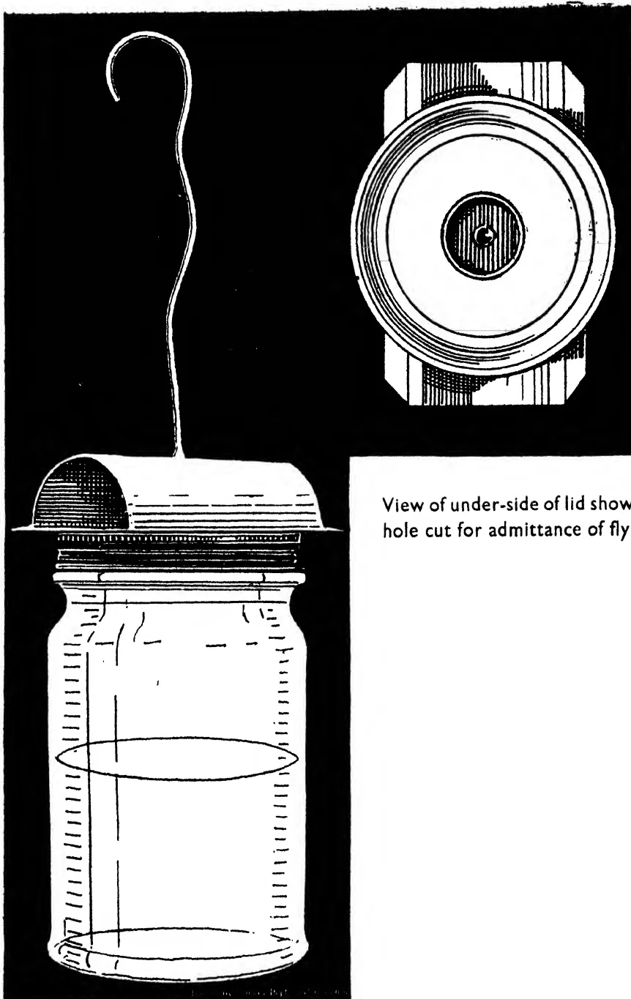
The image is a technical diagram of a fly trap. On the left, a full view of the trap is shown: a glass jar with a screw-on lid. A wire hook is attached to the top of the lid, hanging down. The jar is partially filled with liquid. On the right, a circular inset shows the underside of the lid. It features a central circular hole surrounded by concentric rings. The entire diagram is set against a black background.View of under-side of lid showing hole cut for admittance of fly
Note.—In this case the bottle was whitened for photographic purposes. A clear glass screw-topped bottle should be used
45Test 2.—Formula :| Sodium fluosilicate .. | .. | .. | 1 oz. |
| Molasses .. | .. | .. | 4 lb. |
| Water .. | .. | .. | 4 gallons |
It will be noted that the only difference was the substitution of the molasses for the sugar. This took 168 hours, or seven days, to give 100 per cent. kill of flies, against 46 hours when white sugar was used.
Following this definite proof of the inhibiting effect of molasses on the toxicity of sodium fluosilicate, similar tests were conducted with arsenate of lead.
Test 3.—Formula :| Powdered Arsenate of Lead .. | .. | .. | 5 oz. |
| White Sugar .. | .. | .. | 4 lb. |
| Water .. | .. | .. | 4 gallons |
This gave a 100 per cent. kill in 120 hours or 5 days.
Test 4.—The same formula, substituting molasses for the white sugar :| Powdered Arsenate of Lead .. | .. | .. | 5 oz. |
| Molasses .. | .. | .. | 4 lb. |
| Water .. | .. | .. | 4 gallons |
Result.—100 per cent. kill of flies in 216 hours, or nine days— nearly twice long as when white sugar was used.
This demonstrated that molasses has the same effect of reducing the toxicity of arsenate of lead as it had on the sodium fluosilicate.
Test 5.—Formula :| Powdered Arsenate of Lead .. | .. | .. | 3 oz. |
| White Sugar .. | .. | .. | 4 lb. |
| Water .. | .. | .. | 4 gallons |
This resulted in 100 per cent. death of flies in 144 hours or six days. This was only 16 hours more than when 5 oz. of the arsenate of lead was used with sugar.
This would seem to indicate that there is not sufficient advantage gained by the increase of the arsenate of lead content above the 3 oz. to the four gallons of water.
A further test was made with the sodium fluosilicate and molasses, doubling the amount of the poison.
Formula :| Sodium fluosilicate .. | .. | .. | 2 oz. |
| Molasses .. | .. | .. | 4 lb. |
| Water .. | .. | .. | 4 gallons |
This resulted in 100 per cent. kill of flies in 168 hours or seven days, being five days longer than when 1 oz. of the sodium fluosilicate was used with 2 lb. of white sugar to 4 gallons of water.
46In carrying out these baiting experiments, all tests were duplicated.
To determine whether sodium fluosilicate would in any way injure trees or plants, a series of spraying trials were undertaken using double strength. This spray was applied to all kinds of fruit trees, shrubs and flowers, with negative effect, no sign of burning being noticeable. The bait was also found to remain moist and sticky for several days.
As the result of these series of experiments, the following foliage bait is advised :—
Formula :
| Sodium fluosilicate | .. | .. | .. | 1 oz. |
| Sugar | .. | .. | .. | lb. |
| Water | .. | .. | .. | 4 gallons |
The cost of this bait should not exceed 4d. per gallon. Allowing that each tree carrying fruit will require pint of the bait, 1 gallon should be sufficient for 16 trees. The bait must be applied at least once every seven days and renewed when washed off by heavy rain.
Foliage baiting of deciduous fruit trees should be commenced when fruit is within seven weeks of ripening and continued until fruit is picked. Baiting of citrus trees carrying fruit should commence by the 1st of September and continue to the end of May. Advantage should also be taken of any fine period during the winter to apply the bait, thus poisoning the over-wintering flies.
It is important to refrain from baiting any fruit trees during the period of blossoming, as by so doing there is great danger of poisoning bees and other useful wasps, etc., which frequent the flowers. The fruit fly is essentially a fruit-infesting insect and does not attack the flowers.
The alternative formula, if sodium fluosilicate is for any reason not procurable, is the following :—
| Powder Arsenate of Lead | .. | .. | 3 oz. |
| White Sugar | .. | .. | lb. |
| Water | .. | .. | 4 gallons |
The juice of any fruit in season may be added.
In applying this bait it is essential to keep it well agitated as the poison has a tendency to precipitate to the bottom of the spray pump or bucket. The spray should not be applied too finely, a coarse nozzle being used so that it falls on to the leaves in the form of small rain drops. Apply to certain patches of foliage on two to four sides of the tree, avoiding the fruit.
Trapping.—Four types of covered traps were used namely Brown's "Slip On," new type, "Slip On," old type, and Green's new type. The "Slip On" old type was used as the control. The period of the test was from 8th April to the end of May.
47The results were as follows :
Brown's captured 2,640 fruit flies
"Slip On" new type—2,559 fruit flies
"Slip On" old type—2,110 fruit flies
Green's new type—1,959 fruit flies
From these figures it will be seen that there is not much to choose between the first three traps, Brown's trap, which is not a proprietary trap, capturing the highest number.
Brown's trap is simple to construct. It is made with little labour, from any metal screw-topped glass jar, of about half a pint capacity. A hole about one inch in diameter is stamped or cut out in the centre of the lid. Over this hole is soldered a piece of galvanised iron in the shape of a small hood. To the hood is attached a piece of pliable wire, whereby the trap is suspended in the tree.
It is necessary that all traps shall be covered, as this reduces the evaporation of the lure, prevents flooding by rain and spilling over during windy weather. Covered traps can be used in citrus trees through the winter months, thus capturing the over-wintering flies.
In small orchards up to 200 trees, trapping is advised. At least two traps per tree should be used, the more the better. The traps should be placed about half way up the trees. During the months of November to March inclusive, they should be hung in a shady position and from April to October in sunny aspect.
In orchards of over two acres, it is recognised that the trapping method cannot be economically applied, foliage baiting being cheaper and more efficient. Traps can be used in large orchards as indicators, as to whether the fruit flies are present, thus acting as a guide for spraying.
Lures.—Beeco, clensel and Bordeaux mixture were the lures tested. Clensel was found to be the most effective and is therefore preferred. Beeco was also good. Bordeaux mixture proved somewhat attractive, but could not be called satisfactory. Clensel, 1 part to 30 parts water, is the luring formula recommended. It is easy to mix, the traps remain clean, and the captured flies are easily visible.
Finally, it must be pointed out that foliage baiting and luring must be supplemented by complete orchard sanitation, which means that all infested fruits must be picked from trees or ground daily and destroyed.
Acknowledgment.—"Science Bulletin No. 143," Department of Agriculture, Union of South Africa.
48IN hot countries milk and butter cannot be stored for any length of time. Also, in most of the dry, hot regions of the world, the yield of milk fluctuates considerably with the season of the year. The inhabitants of such semi-arid regions were forced to evolve a method of storing dairy products, prepared during the rainy period, for use during the drought period when no surplus milk can be obtained. Such a process was developed in India and has since spread to other sub-tropical countries. The original Hindustani name for this product was "ghi," and this term, written as "ghee," has been retained by most producing and marketing countries.
The principle underlying the production of ghee is the preparation, in a solid form, of milk fat free from water, proteins, and salts, i.e., "clarified butter," as it is known in Western civilisation. The methods in vogue for producing this article vary greatly, from the crude native methods to the refined method of the European chef who prepares his "clarified butter" from high-quality fresh butter.
Theoretically the milk of any animal species could be used in the preparation of clarified butter or ghee, but in practice it is made chiefly from the milk of cows and buffaloes, though occasionally it is also derived from sheep and goat milk.
Ghee has been made in the East and particularly in India for centuries, but in India, which is still the largest ghee-producing country, it is nearly always adulterated. In fact most of the literature on this product is concerned with the detection of, or the legislation against, the adulteration of this article and very little has been written on its preparation. In India both animal and vegetable fats are used as adulterants, and many flavouring materials are also added. The quality of Indian ghee varies considerably, but to the average European who has lived in India the word "ghee" conjures up a picture of a dirty, oily fat with an offensive rancid smell. The term "clarified butter," on the other hand, makes one think of an attractive,
* By M. H. French, M.A., Dip. Agric. (Cantab.), Biochemist, Department of Veterinary Science and Animal Husbandry, Tanganyika Territory, in Bulletin of the Imperial Institute, Vol. XXXIV., No. 1, (January-March, 1936)
[The new method of making ghee described on pages 58-60 has been tried at Peradeniya and found to give good results with a considerable saving in time and labour.—Editor T.A.]
49yellow, wholesome article of food. Although both of these terms refer to the same article (butter fat) it speaks much for their methods of preparation that few people would connect the two products.
Ghee is made in most of the African Territories, but the native-made article is just as offensive in appearance, smell, and taste as is the average Indian product.
In Tanganyika Territory the Government have been fostering the production on a large scale of a good quality article capable of attracting a market in Western Europe. The efforts have been so successful that the present article has been written. It is proposed here to restrict the term "ghee" to the unattractive, native-made article, and to use the term "clarified butter" for the very good quality food now being produced under Government supervision.
In all the older methods of making ghee a large percentage of the water, protein and salts of the milk is removed in the first part of the operation by turning the milk fat into butter. In the second step the butter is heated and the remaining water is boiled off as steam. The protein is coagulated, precipitated and filtered off.
In the country districts of India, one still finds ghee being prepared by the old historic methods. Immediately after milking, the milk may be sterilised by heating it for an hour or more, but more often no sterilisation of this kind is carried out. The milk is put into a large earthen or brass jar and inoculated with a starter of sour milk. When the milk has curdled it is diluted with warm water and churned with a split bamboo or crude wooden vanes, which are twirled by hand, until the butter forms. The granules of butter are skimmed off the surface and allowed to stand for some time for excess water to drain away. During this interval much rancidity develops. The butter is then clarified by heating in an earthen or brass pot. After all the steam has boiled off the mixture is allowed to stand for the protein to sediment and then the liquid fat is poured off into containers.
In East Africa this is still the method used by many natives. The preliminary souring of the milk is done in gourds and churning consists of shaking the contents of the gourd until butter begins to form. The butter is collected and mixed with the butter from churning during several previous days. It is stored in an earthen pot and whilst standing gets thoroughly contaminated with dirt and insects. Boiling into ghee is done on a smoky wood fire when enough butter has accumulated to make this operation worth while. Native-made ghee prepared in this way is a white, tallowy, semi-liquid fat, smelling offensively and full of insects and dirt.
Kothavala and Cox (1) have recently pointed out the inefficiency of these old methods of manufacture when compared with modern procedures.
50The first big step towards improving the method of preparation was the introduction of the separator and churn. The improved method which is being used in most countries employs both these instruments. The milk is separated as soon as possible after milking and the cream allowed to ripen, with or without the addition of a starter. The ripened cream is churned and the butter thoroughly washed, and after standing overnight is boiled into ghee. This method yields a very good article when carried out under European supervision.
During the past year much time has been spent in trying to improve the quality of the clarified butter produced by the Native Authority creameries. The natives and Indians, unless supervised by Europeans, produce a very inferior ghee even when using a separator and churn. No effort is made to keep the utensils clean and cream is often left for days until very rancid and mouldy before it is churned. Also, a long interval elapses between churning the butter and boiling it into ghee.
In Tanganyika Territory the native milks into gourds which are not very clean and as a result the milk rapidly turns sour. To overcome this difficulty milk tins, which are sterilised each day at the creameries, are supplied to the native for him to milk into directly and bring his milk to the creamery. It has been found, however, that the native still milks into his gourd and subsequently pours the contaminated milk into his clean tin. Native milk arriving at a creamery in East Africa may, therefore, be expected to and usually does, show a certain degree of rancidity. Cream separated from such milk will likewise possess a small amount of rancidity.
Work done during the last year has shown that, in spite of native milk having been well seeded with a very mixed bacterial population before it reaches the creamery, clarified butter of the highest quality can be produced from it. Laboratory trials have proved that the clarified butter made from locally-purchased native milk was just as good as that made from milk produced under the clean conditions of a Government dairy. One properly managed creamery has also dispensed with the milk tins usually supplied to the natives. The milk is brought to the creamery in the native gourds and no drop in quality has resulted.
The cream from native-produced milk possesses a very mixed bacterial content and probably not the types most suitable for producing the right type of acidity in the cream, or the finest flavour in the butter. Theoretically it is necessary to sterilise the cream and then seed it again with a starter containing the right bacteria. In practice this means extra work for the creamery staff and it would be almost impossible to keep a starter free from contamination with the undesirable bacteria which must be floating about in the air of a creamery in a hot district.
Experience in the creameries has now shown that cream ripens very quickly without the addition of a starter and possesses the right acidity for
51quick churning in from 12 to 18 hours. The addition of a butter-milk starter is very liable to cause over-ripeness of the cream and results in more difficult churning and a poorer quality of butter.
Much depends on the butter being churned correctly. In Tanganyika Territory metal rotary churns have been adopted as the most suitable. They are very easy to keep clean, even when this is left to a native, and require no attention during the close season. The instructions of the makers should be followed very carefully, though the amount of washing that has been found necessary is much more than they recommend. Six washings of the butter is now the recognised procedure in the creameries. Over-churning the butter must be strictly avoided, because if this happens the butter loses its grain and becomes lumpy and is then most difficult to wash properly.
Tests made on fresh butter correctly churned and well washed have shown that it possesses no trace of rancidity. On the other hand, samples of good butter that have not been washed sufficiently show a slight rancidity. All butter that has been over-churned shows a rancid reaction and it is practically impossible to free completely such butter from the butter-milk.
In the past it has been the practice of the creameries to churn the butter one day and then allow it to drain until the following day before boiling it into ghee. It has been shown that even good, well-washed butter, when allowed to stand 24 to 30 hours in a native creamery, develops a definite rancidity in the surface layers. The extent to which the butter has become rancid depends upon the quality. Poor, insufficiently-washed butter gives a rancid reaction even from the interior of the lump. It has now been adopted as a standard routine that all butter must be boiled into clarified butter on the day of churning.
During the boiling of the butter, the proteins are precipitated and the water is removed in the form of steam. The lower molecular fatty acids produced by the lipolytic action of micro-organisms are slightly soluble in water and distil off in the steam. This means that butters possessing but a slight rancidity when put on to boil lose all these volatile acids during clarification. On the other hand, it has been shown that in those butters which have developed a pronounced rancidity the usual period of boiling is not sufficient to remove all the volatile products and the clarified butter may show a small amount of rancidity. Even this can be overcome, as happens in Indian-made ghee, by boiling for a longer period. However, this over-boiling results in an inferior product, which does not possess the solidity, grain, colour or taste of the good clarified butter from the creameries.
Therefore, for the production of good clarified butter from ordinary butter the following points are of particular importance:—
(a) The cream should ripen for as short a period as possible. Usually starters will not be found necessary in hot countries.
52(b) The butter must be churned correctly and then very thoroughly washed.
(c) Butter should be clarified as soon as possible after churning.
(d) The butter must be correctly boiled.
The boiling of the butter is not such an easy procedure as one would at first imagine. Boiling must take place steadily and be neither too slow nor too fast. Many trials have been made by the Veterinary Staff to find the best type of stove for boiling. Wood is the fuel used in all creameries and much difficulty was at first experienced owing to the wood being wet. If boiling is to be uniform, the wood must be quite dry. Charcoal is used as the fuel in some countries, but it seems unnecessarily expensive.
Boiling takes place much more uniformly if the top of the stove is recessed to take the boiling pan. The flames of the fire should never play directly on to the pan, which should rest on a metal surface covering the fire. Great care is necessary to see that the smoke is led away properly, because clarified butter readily acquires a smoky taint. The boiling pan should be of metal and have as large a diameter as possible, because in this way heating takes place much quicker than in a deep, small-bottomed pot.
Clarifying the butter is regarded as an art and it is quite impossible to lay down rules as to the correct period necessary if boiling is to proceed at the optimum rate. There are so many factors involved that the time is never constant in any one creamery. Thus 56 lb. of butter may take anything from 20 to 90 minutes to clarify correctly. Further, it is impossible to say that boiling should be continued until a definite temperature is reached. I have found that the final temperature of the clarified butter when ready to be removed from the fire may vary between 110°C. and 140°C., but usually averages about 128°C., for many boilings both in the laboratory and in the creameries. When using good quality butter, I recommend that the boiling should be as brisk as possible without running the risk of the molten butter foaming out of the boiling pan.
As examples of the variations in times of boiling, Table I shows the protein, moisture and temperature changes of the clarifying butter as the boiling period is lengthened.
TABLE I
CHANGES IN THE COMPOSITION OF BUTTER DURING CLARIFICATION
| Sample No. | First Test | Second Test | ||||||
|---|---|---|---|---|---|---|---|---|
| Interval of time | Temperature | Moisture | Protein | Interval of time | Temperature | Moisture | Protein | |
| Mins. | °C. | Per cent. | Per cent. | Mins. | °C. | Per cent. | Per cent. | |
| No. 1 (Butter) .. | 0 | 24 | 18.52 | 0.92 | 0 | 28 | 14.82 | 0.58 |
| No. 2 .. | 5 | 94 | 14.53 | 0.88 | 20 | 94 | 13.2 | 0.35 |
| No. 3 .. | 10 | 94 | 9.95 | 0.55 | 30 | 94 | 10.5 | 0.29 |
| No. 4 .. | 18 | 96 | 1.07 | 0.42 | 40 | 98 | 3.0 | 0.17 |
| No. 5 .. | 23 | 108 | 0.39 | 0.36 | 50 | 114 | 0.2 | 0.09 |
| No. 6 (Clarified Butter) .. | 28 | 130 | 0.01 | 0.03 | 58 | 124 | 0.00 | 0.02 |
The first test took less than half the time required by the second, yet the final product is just as good.
Rules can be laid down whereby the operator can judge correctly the point at which the butter is clarified and ready to leave the fire. The physical changes taking place are as follows :
(a) Butter commences to melt at 30°C., and by the time the temperature has risen to 64°C., all the butter will have melted.
(b) A foam forms on the surface and this increases in volume until a temperature of 94°C. is reached.
(c) The liquid butter starts to simmer at 94 to 96°C., and the temperature remains about constant until nearly all the water has boiled off.
(d) The contents of the boiling pan become much thicker and resemble thin custard. As the last of the water is boiling off at 98°C., bubbles begin to break with sufficient violence to cause a small amount of spitting.
(e) The curd begins to form into lumps as the temperature approaches 110°C. Many large bubbles break on the surface at this stage and much of the protein precipitate is carried up and forms a scum on the surface.
(f) The protein particles contract as the temperature gets near to 120°C., and sink to the bottom of the pan. The scum disappears from the surface and the general appearance is that of a clear, amber-coloured liquid with white protein particles in suspension near the bottom of the pan. If boiling is stopped at this point the ghee possesses a peculiar smell which is aptly termed "unripe" by the natives.
(g) As the temperature rises above 120°C., the large bubbles are gradually replaced by smaller ones, until suddenly a foam of small bubbles is formed closely resembling in appearance "soap-suds." This foam rises rapidly and at this point the pan must be quickly removed from the fire.
A method of checking if the correct point has been reached is to observe the colour of the protein sediment as soon as the bubbles disappear. If these particles are lighter than the supernatant butter fat then boiling has been stopped a little too soon. These particles take on a slightly darker colour than the liquid if clarification is complete. When the fat has been over-boiled the protein sediment becomes charred and black.
When correctly boiled the clarified butter is filtered into containers.
During boiling it is very necessary that the contents of the pan are stirred gently and continuously, otherwise charring will take place and the quality be ruined. When the protein curd begins to sediment it is essential that vigorous stirring be avoided, otherwise the clarified butter will be cloudy in appearance due to the fine protein suspension which passes through the strainers.
54Some authorities advise that the scum should be skimmed off during the clarification of butter. This point has been investigated and was found not to be necessary. All the protein removed by this skimming would be precipitated in any case, whereas its removal means extra work and boiling for the operator.
If overboiled the clarified butter loses its attractive colour and takes on a dirty white hue. It smells charred and tallowy and loses its grain, whilst in many cases it remains liquid. When kept simmering for a long time at a moderate temperature an oily product results, which never solidifies completely.
Work on the solidification of clarified butter has shown that small lots solidify much more quickly and uniformly than do large bulks. When filling large containers of 28 lb. capacity, or over, it is advisable only to fill the tin one-third full at a time. The first lot being allowed to solidify completely before subsequent lots are added. Very hot fat should not be poured on already solidified clarified butter, but should only be added when nearly cold.
It has also been shown that the containers must not be sealed whilst the fat is still hot, otherwise a vacuum is produced which considerably delays solidification.
Clarified butter should possess an attractive yellow colour and be either free from smell or possess a faint toffee odour. At all ordinary temperatures it should be solid, with a well-marked granular consistency. Normally it should have a sweet taste, free from rancidity, and in the best samples should resemble butter. When rubbed on the palm of the hand it should readily liquify. As clarified butter is free from protein and water it does not become mouldy or decomposed by the activity of micro-organisms. If well stored it will keep indefinitely.
There are certain deteriorating chemical changes which may take place in clarified butter. I refer to the autoxidation of the butter fat. This change is accelerated considerably by exposure to ultra-violet light, free contact with air, high acidity of the cream before conversion and is catalysed by the presence of certain metallic elements (iron and copper) (2). The autoxidation is accompanied by bleaching and the development of a tallowy smell and taste. Such changes are detected even in the early stages by the Kreis test; all clarified butter prepared under veterinary supervision in the Territory is subjected to this test and only samples giving a negative reaction passed. Although autoxidation readily occurs under certain conditions, it does not take place if the fat is stored in full, sealed containers in the dark.
In an experiment at the laboratory, a sample of clarified butter was divided into seven lots and subjected to seven different treatments for a period of six weeks with the results shown in Table II. Each small sample was contained in a glass jar, which was completely filled to the stopper:
55TABLE II
DETERIORATION OF CLARIFIED BUTTER BY AUTOXIDATION
| Treatment | Effect on colour | Effect on taste | Development of positive Kreis test |
|---|---|---|---|
| Sealed with wax and exposed to sunlight | Nil | Nil | Nil |
| Loosely stoppered and exposed to sunlight | Slight bleaching round stopper | Tallowy only round stopper | Positive in top layers but negative beneath |
| Plugged with cotton wool and exposed to sunlight | Completely bleached | Tallowy | Strongly positive throughout even after diluting 1 in 20 |
| Plugged with cotton wool and kept in the dark at 0°C. | Nil | Nil | Very faint trace in surface layer |
| Plugged with cotton wool and kept in the dark at 24°C. | Nil | Tallowy only in surface layers | Trace in surface layers only |
| Sealed with wax and kept in the dark at 24°C. | Nil | Nil | Nil |
| Loosely stoppered and kept in the dark at 24°C. | Nil | Nil | Very faint trace round the stopper |
This experiment demonstrates how the Kreis test detects changes not yet apparent to the taste or in the appearance of the clarified butter.
Further, the results show that, in the absence of sunlight, autoxidation proceeds very slowly, even though the fat is exposed to the air (oxygen). Thus, if clarified butter is kept in filled metal containers it can be stored for very long periods. When the containers are opened, they should be kept in a dark spot or protected from sunlight. In the small samples tested in the laboratory a month was necessary for complete bleaching of a 30 gm. sample of clarified butter, even when continuously exposed to sunlight and air, so that under ordinary conditions a housewife need not fear that a large tin of clarified butter will deteriorate before she has used it up completely.
In the older methods and in the method used in most countries today butter is prepared and clarified later. It has been pointed out above that the ripening of cream cannot be controlled very easily owing to the risk of contamination by undesirable types of bacteria. These unwanted bacteria give rise to many side products which though present in minute amounts detract
56from the flavour of the butter produced. Also over-ripening of the cream with a large production of acid results in a butter of poor-keeping qualities. Further, even when clarified, butter from highly acid cream is more liable to autoxidation than if made from cream of the right acidity.
Also the butter has to be churned correctly otherwise efficient washing is impossible and the resulting clarified butter possesses some of the rancidity developed during the ripening of the cream.
If there is to be any large production of clarified butter much of the work will have to be left to natives. This means that the less skilled the work, the more capable will the native be to carry it out. The making and washing of butter is a skilled business, but turning a separator is mechanical. Clarifying butter has been regarded as an art, though, as shown earlier, if certain observations are made then it loses its right to be regarded as such.
In any case the boiling process cannot be eliminated.
In an effort to simplify the production of clarified butter so that a first-class article could always be turned out, the direct boiling of cream was tried. Cream contains very much more protein and water than butter and the only reason for making butter as an intermediate step in all the older processes is to reduce the quantities of these before boiling.
As was to be expected, both in the laboratory and creamery tests on the boiling of fresh cream, the direct boiling was not a success.
The large amount of protein present caused some to stick to the bottom of the pan and char, thus reducing the quality of the final product.
An attempt was then made to reduce the amount of protein present by washing the cream with water. This was accomplished by mixing the cream with water so as to make a volume equal to half that of the original milk separated. This cream emulsion was then re-separated. By this means the protein content was reduced to about the same percentage as is found in butter. Laboratory trials showed that this washed cream could be clarified without difficulty. Further trials on this method have been made on the Government dairy farm and on a large scale in one creamery. All the reports show that this method is working perfectly satisfactorily under creamery conditions.
In this washed cream method the small amount of rancidity present in the freshly-separated cream from native milk is partially removed by washing. The small amount left in the washed cream disappears during boiling. The result is that the product can be guaranteed absolutely free from rancidity. Further, since it is made from fresh cream its keeping qualities are better than that from butter produced from acid cream.
By general consent this clarified butter is graded as the best turned out in the Territory. It has a good colour, is always solid below 30°C., and in my opinion is better than the best Indian-made article. Its taste resembles butter
57very closely. The Vitamin A content of this fresh cream clarified butter is much (3 times) higher than in the normal creamery product.
The loss of butter fat in reseparating the milk will not be more than is lost in the butter-milk, the butter left in the churn and on the butter-working table. Yields from the creamery confirm the small scale laboratory tests that there is no appreciable difference in yield of clarified butter between the standard and the new methods.
The washing of the cream and reseparating is absolutely mechanical and eliminates the need for an intelligent butter maker. This means that there is a saving on the utensils and skilled labour whilst a better product is turned out.
An outline of the old and improved methods of making clarified butter has been given with notes on the quality of the product.
Certain improvements in the method of preparation from butter have been suggested as the result of recent work in Tanganyika Territory. These include (a) the shortest possible interval of ripening the cream, (b) thorough washing of butter and its immediate clarification, (c) correct boiling of the butter.
The clarification process has been studied and rules formulated to enable the end point to be judged correctly.
Some factors which affect solidification have been discussed.
A new method of preparation from washed fresh cream has been described. This method is more simple and foolproof than the butter method. Clarified butter of the best quality is made by this method.
Dunuwila Walawwa,
Katugastota,
30th January, 1937.
The Editor,
"Tropical Agriculturist,"
Peradeniya.
Dear Sir,
I have read with interest the first two articles on Agricultural Implements by Mr. C. R. Karunaratne, Agricultural Instructor, which appeared in the November and December numbers of your journal for 1936.
Our agricultural implements, especially the implements used in paddy cultivation, are still those handed down to us by our forefathers. We have continued to use them, never once thinking of improving them or replacing them with simple improved implements such as those Mr. Karunaratne describes. I personally know that the Department of Agriculture is trying to introduce a better paddy plough but we are very slow to adopt anything new, however good it may be.
Having now an idea of what a seed drill is, and how much valuable seed now wasted can be saved, it would be interesting to know if a seed drill can be used to sow paddy. At present we sow sprouted paddy on soft mud but there is no reason to think that it is not possible to sow ungerminated paddy.
Yours faithfully,
C. Dunuwile.
Minutes of a Meeting of the Board of the Tea Research Institute of Ceylon held at the Ceylon Chamber of Commerce, Colombo, on Saturday, October 10th, 1936, at 10 a.m.
Present.—Mr. James Forbes (Jnr.), (Chairman), The Acting Director of Agriculture, Major J. W. Oldfield, C.M.G., O.B.E., M.C., Messrs R. G. Coombe, C. E. Hawes, I. L. Cameron, D. T. Richards, D. H. Kotalawala, M.S.C., R. P. Gaddum, B. M. Selwyn, Dr. R. V. Norris (Director and Secretary) and, by invitation, Mr. J. W. Ferguson (Visiting Agent) and Mr. F. J. Whitehead.
Absent.—The Hon'ble the Financial Secretary and Colonel T. G. Jayawardene, V.D.
The Notice calling the Meeting was read.
Minutes of the Meeting of the Board of the Tea Research Institute of Ceylon held on the 20th June, 1936, were confirmed after correction of the date shown for the Institute's Conference.
(a) Reported that Mr. C. E. Hawes assumed Membership of the Board as from the 7th August, 1936, on his election as Chairman, Ceylon Estates' Proprietary Association, vice Mr. E. L. Fraser.
The Chairman in welcoming Mr. Hawes referred to the excellent work he had previously done for the Institute. He also asked the Board to record a vote of thanks to Mr. E. L. Fraser for the services rendered by him.
(b) Reported that Mr. A. G. D. Bagot had been nominated by the Planters' Association of Ceylon to act for Mr. James Forbes (Jnr.) during the absence of the latter on leave.
(a) Finance Sub-Committee.
(I) Reported that Mr. C. E. Hawes had replaced Mr. E. L. Fraser.
(II) The Board nominated Mr. B. M. Selwyn as an acting member of the Committee, vice Mr. J. D. Hoare on leave.
(b) Experimental and Estate Sub-Committee.
(I) Reported that Mr. J. T. Young had accepted the invitation of the Board to join this Committee, vice Mr. I. L. Cameron resigned.
(II) The Board approved the nomination of Mr. L. C. A. Leefe to act for Mr. R. H. Horne during the absence of the latter on leave.
60FINANCE(I) The accounts to 31st August, 1936, were tabled and approved without comment.
(II) Reported that the State Council had sanctioned a reduction in the rate of interest on the Government Loan to the Institute to per cent. as from October, 1935.
Reported that the charges due on the Loan for the year 1935-1936 had been duly met on the 27th September.
MINUTES OF THE MEETING OF THE EXPERIMENTAL & ESTATE
SUB-COMMITTEE HELD AT ST. COOMBS ON THE 23rd JULY &
THE 26th SEPTEMBER, 1936
Phloem Necrosis of Tea.—The Board approved of work on this disease being carried on on St. Coombs Estate.
New Openings 1937.—The Board approved the proposals of the Experimental and Estate Sub-Committee in regard to the new opening of 20 acres in 1937, viz.,
Factory Machinery.—Reported that the new Empire 3' Drier was now in use and it was expected the Davidson machine would be installed in November. The small scale experimental drier would probably be erected by the end of October.
JUNIOR SCIENTIFIC STAFFField Assistants.—Reported that Mr. J. W. Reith, Field Assistant to the Plant Physiologist, has resigned his appointment as from 30th September and that Mr. F. P. Jayawardene had been appointed in his place.
ANY OTHER BUSINESS(a) Publications.—The Board expressed its appreciation of Dr. Eden's Report on his visit to N.-E. India.
(b) Chairmanship of the Board.—Mr. Forbes said he was proceeding on leave at the end of the month and it would be necessary for the Board to elect another Chairman. He wished to thank members most cordially for the support and co-operation they had always accorded him and also to record his appreciation of the loyal assistance he had received from the Director and Scientific Staff at St. Coombs. His work as Chairman had been of absorbing interest to him and he would vacate the chair with very much regret.
61Mr. Hawes, who was supported by Mr. Coombe, expressed the hope that Mr. Forbes would resume the Chairmanship on his return from leave ; in that case it would only be necessary to elect an Acting Chairman.
Mr. Gaddum then proposed, and Mr. Cameron seconded, that Mr. R. G. Coombe be appointed to act as Chairman during the period of Mr. Forbes' absence on leave.
Mr. Coombe said he would be willing to act provided he was assured Mr. Forbes would resume the chair on his return. Mr. Forbes had rendered notable service to the Institute and they were all most grateful for what he had done and wished him a very pleasant leave.
Mr. Gaddum's resolution was then put to the Meeting and carried unanimously.
The meeting then terminated with a vote of thanks to the chair.
ROLAND V. NORRIS
Secretary
62Minutes of the thirty-fifth meeting of the Board of Management held in the Committee Room of the Ceylon Chamber of Commerce, Colombo, at 10 a.m. on Thursday the 12th November, 1936.
Present.—Mr. E. Rodrigo, C.C.S. (in the chair), Mr. C. H. Collins, C.C.S. (Deputy Financial Secretary), Messrs I. L. Cameron, L. M. M. Dias, L. B. de Mel, J.P., U.P.M., Col. T. G. Jayawardena, V.D., Messrs J. C. Kelly, F. A. Obeyesekera, J. L. D. Peiris, C. A. Pereira, B. M. Selwyn and Col. T. Y. Wright.
Mr. T. E. H. O'Brien, Director, was also present by invitation.
Apologies for absence were received from Messrs F. H. Griffith, M.S.C., R. C. Kannangara, M.S.C., and E. C. Villiers, M.S.C.
Draft Minutes of the thirty-fourth meeting which had been circulated to Members were confirmed and signed by the Chairman.
(a) Application for grant from the Department of Industries.—A letter from the Minister for Labour, Industry and Commerce informing the Board of the conditions on which a grant for the purchase of machinery would be recommended, was considered and the terms of reply decided on.
(b) Report of Sub-Committee on terms of service of Officers recruited from abroad.—The report which had previously been circulated to Members was approved after discussion. A vote of thanks to the Sub-Committee was adopted.
The Chairman reported that Mr. F. H. Griffith, M.S.C., had been re-nominated by the Planters' Association of Ceylon as one of its representatives on the Board for a further term of 3 years from the 15th November, 1936.
Manuring at Dartonfield.—The Chairman stated that a recommendation of the Experimental Committee to complete the manuring of the estate in the current year, had been submitted to Board Members for approval by circulation of papers but a Member had asked for the matter to be postponed for decision at a meeting. After discussion it was decided to postpone manuring until next year in view of the difficulty of completing the programme before the feeding roots became dormant, prior to the wintering period.
63ACCOUNTS(a) Estimates for 1937.—Draft estimates which had been circulated to Members, were considered in detail. After discussion the following estimates were adopted :—
| Revenue | .. | .. | .. | .. | Rs. 163,760 |
| Expenditure on Revenue Account | .. | .. | .. | .. | Rs. 135,982 |
| Expenditure on Capital Account— | |||||
| Buildings | .. | .. | .. | Rs. 61,000 | |
| Equipment | .. | .. | .. | Rs. 2,000 | |
| Agricultural Development | .. | .. | .. | Rs. 6,072 | Rs. 69,072 |
| Estimated Credit Balance at December 31st, | Rs. 205,054 | ||||
| 1937 | .. | .. | .. | .. | Rs. 49,616 |
(b) Dartonfield and Nivitigalakele accounts for July and August, 1936 were tabled.
STAFF(a) Director's Service Agreement.—Decided to have agreement drafted on the basis of the terms adopted earlier in the meeting.
(b) Renewal of Agreement of Botanist and Mycologist.—Decided to offer re-engagement to Mr. R. K. S. Murray on the basis of the terms adopted earlier in the meeting.
(c) Leave for Botanist and Mycologist.—Application for Mr. R. K. S. Murray to proceed on home leave on January 20th, 1937 was approved.
EXPERIMENTAL COMMITTEERecommendations made at meeting of 13th October.
(a) Visiting Agent's Report.—Report adopted.
(b) Price of Manufactured Goods.—A recommendation regarding the price at which vulcanized goods manufactured at Dartonfield should be sold, was considered. The Director was asked to submit a list of products available in addition to rubber tubing.
TECHNICAL OFFICERS' REPORTS FOR 1st, 2nd & 3rd QUARTERS, 1936The Chairman expressed regret that the reports had not been submitted for consideration earlier and said that future reports would be brought before the Board as soon as available. Attention was drawn to the fact that there had been a confusion of clones in a plot of the 1935 replanted area. It was noted that the matter had been fully investigated and the error traced to 2 or 3 plants which were budded when the clone was originally introduced at Nivitigalakele.
The reports were adopted.
RUBBER COUPONSIt was decided that surplus coupons should be sold before the end of the year.
The meeting closed with a vote of thanks to the Ceylon Chamber of Commerce for the use of the Committee room.
64Burma Fruits and their Cultivation (Department of Agriculture, Burma. Bulletin No. 30), by J. W. Grant and A. N. P. Williams, Rangoon. Government Printing and Stationery, Burma, 1936. Re. 1-8 = 2s. 3d.
THIS bulletin should be in the hands of all interested in fruit cultivation in Ceylon. It embraces much detail in regard to soils, cultivation, and the best methods of propagating the tropical and sub-tropica, fruits dealt with which are botanically classified. The area under the cultivation of fruit in Burma amounts to nearly 440,000 acres within which there is a considerable range of climate and the rainfall varies from 32-240 inches per annum. Consequently, the fruits cultivated are varied. Of this acreage an area equivalent to 92 per cent. is situated in the wet zone of lower Burma, the most important tract being the Tenasserim Division where mangoes, mangosteens, durians, plantains, and pineapples predominate. In the Irrawaddy and Pegu Divisions, where the soil and climatic conditions are less favourable, the range of fruit is more restricted, whilst the drier districts of Prome and Tharrawaddy produce mainly the custard apple and orange.
The lower rainfall of Upper Burma renders conditions less favourable for the cultivation of most fruits but favours the plantain, which is produced in large quantities, and a few other fruits as the mango, jak, jujube, fig, and grape. With the exception of plantains which are cultivated on orchard lines, production is mostly from mixed gardens.
As in the case of Ceylon, Burma is far from self-supporting in the matter of fresh fruit supplies and this bulletin has been prepared with the object of indicating how the country could be made less dependent upon imports if the peasant and small capitalist could be induced to extend the cultivation of fruit to suitable areas which are now undeveloped.
Much emphasis is rightly placed on the utilisation of only the best quality of planting material in new plantations, with a rigid insistence on regular and good cultivation subsequently. Whilst there is yet no export trade in fruit, small trial consignments of mangosteen and mango have been undertaken with favourable results.
The bulletin comprises four chapters, the first affording interesting information on cultural operations, planting, cover crops, manures, pruning, and remedies for insect and fungus attacks. The triangular mode of planting is particularly stressed. Chapter two is devoted to the various methods of
65propagation, many of which are illustrated as are, also, a number of agricultural implements employed in cultivation in Burma. In chapter three, the respective fruits are arranged and dealt with alphabetically in their natural orders with full botanical descriptions of the species. Chapter four deals with marketing and stresses the very unsatisfactory nature of the methods at present employed. As in Ceylon, this is to be attributed to small production, the perishable nature of most tropical fruits, the methods, or lack of methods, of plucking and packing, and the poor facilities for transport and storage. Much valuable information is afforded as to the correct method to adopt in plucking, the stage of ripeness at which to pluck, the mode of packing and grading and many other features essential to the disposal of good fruit to the best advantage.
An index of the contents has been carefully compiled enabling any particular fruit to be readily located under its common name by those who are not sufficiently versed in the botanical nomenclature of this subject.
Ample information is afforded as to the best cultural methods to be applied to each fruit and manner in which such fruit is utilised.
The mango in Burma is propagated chiefly from seed. Inarching is practised but not grafting. The wedge graft method might be tried with advantage. The majority of the mangoes of Burma are polyembryonic, a condition which is not common in Ceylon except in the case of certain Jaffna varieties. Seedling plants in Burma do not, in consequence, result in much variation. Manures are applied either just before or at the end of the rainy season and before the trees begin to flower.
The durian, which is limited to certain divisions, occurs in semi-cultivated stands and is not cultivated on orchard lines. In Ceylon a durian tree planted in an isolated position shows every sign of self-sterility which suggests the necessity for planting this fruit tree in groups.
The mangosteen grows to perfection in the hot, moist climate of Tennesserim, and large gardens of this fruit are in cultivation. Propagation is almost entirely by seed though grafting on the Cochin "goraka" and other stocks is being tried.
The jak tree is found throughout Burma in gardens and in jungles in both wet and dry zones. The two Burma varieties, "kala" and "talaing," appear to correspond to our "waraka" and "wela." The latter variety cross pollinates freely and the seedlings are mixed but the "wela" predominates. Two distinct leaf forms are observable in most beds of seedlings and further investigation should enable each variety to be distinguished by the character and form of the leaves.
Citrus is not commonly grown, though the lime, pumelo, citron, and lemon occur. The lime is more common, but importation from India is
66necessary to meet the local demand. The mandarin is produced in the Shan States though there is little systematic cultivation in any of the groups.
Other main fruits such as pineapple, papaya, plantain, and sapodilla are very fully dealt with, as are, also, many minor fruits including pomegranate, jujube, passion fruit, litchi, rambuttan, Cape gooseberry of the tropical varieties. Peach, pear and plum are grown in the Shan States. The wide range of fruits dealt with, and the useful and very practical notes on cultivation, indicate a very critical and sound survey of the Burma fruit districts on which the authors of the Bulletin are to be congratulated.
Publications on tropical fruits are too few and the appearance of this bulletin at the present stage of fruit production in the tropics will be appreciated by all who are interested in this branch of horticulture.—T.H.P.
67ANIMAL DISEASE RETURN FOR THE MONTH
ENDED DECEMBER, 1936.
| Province, &c. | Disease | No. of Cases up to date since Jan. 1st, 1937 | Fresh Cases | Recoveries | Deaths | Balance III | No. Shot |
|---|---|---|---|---|---|---|---|
| Western | Rinderpest | .. | .. | .. | .. | .. | .. |
| Foot-and-mouth disease | 3347 | .. | 3347 | .. | .. | .. | |
| Anthrax | .. | .. | .. | .. | .. | .. | |
| Rabies | 21 | 1 | .. | .. | .. | 21 | |
| Colombo Municipality | Rinderpest | .. | .. | .. | .. | .. | .. |
| Foot-and-mouth disease | 1356 | 9 | 1324 | 23 | 9 | .. | |
| Anthrax | 1 | .. | .. | 1 | .. | .. | |
| Rabies | 43 | 4 | .. | 43* | .. | .. | |
| Cattle Quarantine Station | Rinderpest | .. | .. | .. | .. | .. | .. |
| Foot-and-mouth disease | 3 | .. | 3 | .. | .. | .. | |
| Anthrax | 27 | 2 | .. | 27 | .. | .. | |
| Central | Rinderpest | .. | .. | .. | .. | .. | .. |
| Foot-and-mouth disease | 3216 | 432 | 2845 | 12 | 359 | .. | |
| Anthrax | 11 | .. | .. | 11 | .. | .. | |
| Rabies | 13 | 1 | .. | 13* | .. | .. | |
| Tuberculosis | 2 | .. | .. | 2 | .. | .. | |
| Southern | Rinderpest | .. | .. | .. | .. | .. | .. |
| Foot-and-mouth disease | 119 | .. | 119 | .. | .. | .. | |
| Anthrax | .. | .. | .. | .. | .. | .. | |
| Northern | Rinderpest | .. | .. | .. | .. | .. | .. |
| Foot-and-mouth disease | 2825 | 2512† | 2605 | 199 | 21 | .. | |
| Anthrax | .. | .. | .. | .. | .. | .. | |
| Eastern | Rinderpest | .. | .. | .. | .. | .. | .. |
| Foot-and-mouth disease | 36 | .. | 36 | .. | .. | .. | |
| Anthrax | .. | .. | .. | .. | .. | .. | |
| North-Western | Rinderpest | .. | .. | .. | .. | .. | .. |
| Foot-and-mouth disease | 3859 | .. | 3765 | 7 | 87 | .. | |
| Anthrax | .. | .. | .. | .. | .. | .. | |
| North-Central | Rinderpest | .. | .. | .. | .. | .. | .. |
| Foot-and-mouth disease | 1308 | 76 | 1210 | 98 | .. | .. | |
| Anthrax | .. | .. | .. | .. | .. | .. | |
| Uva | Rinderpest | .. | .. | .. | .. | .. | .. |
| Foot-and-mouth disease | 21 | 14 | 21 | .. | .. | .. | |
| Rabies | 2 | .. | .. | 1 | .. | 1 | |
| Haemorrhagic Septicaemia | .. | .. | .. | .. | .. | .. | |
| Septicaemia | 8 | .. | .. | 8 | .. | .. | |
| Sabaragamuwa | Rinderpest | .. | .. | .. | .. | .. | .. |
| Foot-and-mouth disease | 5899 | 78 | 5779 | 120 | .. | .. | |
| Anthrax | .. | .. | .. | .. | .. | .. | |
| Haemorrhagic Septicaemia | 10 | .. | .. | 10 | .. | .. | |
| Rabies | 3 | .. | .. | .. | .. | 3 |
*Destroyed
†Includes fresh cases during October, November & December, 1936
Department of Agriculture,
Peradeniya, 20th January, 1937
M. CRAWFORD,
Deputy Director of Agriculture (Animal Husbandry), & Government Veterinary Surgeon
| STATION | TEMPERATURE | HUMIDITY | Amount of Cloud | RAINFALL | ||||||
|---|---|---|---|---|---|---|---|---|---|---|
| Mean Maximum | Difference from Average | Mean Minimum | Difference from Average | Day | Night (from Minimum) | Amount | No. of Rainy Days | Difference from Average | ||
| ° | ° | ° | ° | % | % | Ins. | Ins. | |||
| Colombo | 84.8 | -0.7 | 72.8 | +0.4 | 76 | 93 | 7.4 | 7.94 | 16 | + 2.30 |
| Puttalam | 84.5 | -0.1 | 71.8 | +0.8 | 80 | 95 | 6.3 | 6.41 | 15 | + 0.21 |
| Mannar | 82.6 | -0.6 | 75.2 | +0.5 | 80 | 88 | 6.5 | 15.65 | 18 | + 7.84 |
| Jaffna | 83.1 | +0.9 | 73.6 | +1.1 | 78 | 90 | 7.4 | 9.48 | 17 | + 0.03 |
| Trincomalee | 81.3 | +0.4 | 75.1 | +0.6 | 82 | 88 | 7.6 | 25.05 | 24 | +12.44 |
| Batticaloa | 81.7 | -0.2 | 73.8 | +0.4 | 80 | 90 | 6.9 | 35.28 | 22 | +18.13 |
| Hambantota | 83.9 | -0.4 | 73.0 | +0.3 | 80 | 93 | 6.2 | 5.55 | 18 | - 0.04 |
| Galle | 83.8 | +0.2 | 73.8 | +0.6 | 78 | 90 | 6.4 | 4.40 | 13 | - 3.77 |
| Ratnapura | 86.5 | -1.6 | 71.9 | +0.2 | 71 | 95 | 7.3 | 10.51 | 19 | + 1.31 |
| Anuradhapura | 82.3 | -0.6 | 71.0 | +1.3 | 82 | 97 | 7.8 | 12.20 | 18 | + 4.59 |
| Kurunegala | 85.6 | -0.4 | 70.7 | +0.3 | 74 | 93 | 6.0 | 11.79 | 14 | + 4.66 |
| Kandy | 83.6 | +1.0 | 67.4 | -0.1 | 74 | 92 | 6.4 | 11.66 | 15 | + 2.60 |
| Badulla | 76.9 | +0.3 | 65.1 | +0.7 | 81 | 95 | 7.6 | 16.77 | 21 | + 5.37 |
| Diyatalawa | 72.1 | +0.2 | 59.0 | +0.7 | 84 | 94 | 7.8 | 13.16 | 21 | + 5.05 |
| Hakgala | 66.2 | -0.1 | 53.8 | +1.7 | 87 | 94 | 8.6 | 21.21 | 25 | + 7.85 |
| Nuwara Eliya | 66.8 | -1.3 | 50.4 | +1.9 | 82 | 97 | 8.8 | 15.53 | 21 | + 7.51 |
The rainfall of December was above normal except in the south where deficits were generally small, those over 5 inches being, 5.38 inches at Morawaka, 5.11 inches at Hiyare, and 5.06 inches at Ellawella. The excesses were most marked in the Eastern Province, in the eastern half of North-Central Province, and on the eastern slopes of the central hills. Excesses over 15 inches were 19.74 inches at Kanankadu, 18.79 at Lahugala, 18.13 at Batticaloa, 17.79 at Allai Tank, 17.78 at Divulana, 16.31 at Gala Oya, and 16.26 at Amparai.
The highest monthly totals were 45.64 inches at Lugaloya, 45.07 inches at Hendon, and 43.59 inches at St. Martin's, all on the north-eastern slopes and the central hills.
One hundred and seventeen falls of at least 5 inches in a day were reported during the month, a large majority of these having fallen on the 14th. The highest falls were 11.19 at Batticaloa and 10.00 in Uva Estate both on the 14th.
The weather was chiefly of the north-east monsoon type. During the first week rain was generally light and scattered. In the second week there was increased and more widespread rainfall over the Island, culminating in very heavy precipitation on the 14th. On the following two days also, rain was heavy, particularly on the north-east side. From the 16th to the 22nd, rain was widespread but generally light. Conditions were fairly settled from the 23rd to 28th, when practically no rain was recorded. As a result of a deep depression of very small extent to the east of Ceylon, weather became unsettled and rain was heavy and widespread on the 29th. This depression crossed over the Island very quickly, but continued to give moderate and fairly general rain in the last two days of the month. Local thunder was in evidence occasionally during the first three weeks.
The temperatures were generally about normal by day and a little above normal by night, the 30th, however, being an unusually cold day. Humidity did not deviate appreciably from average, while cloudiness was everywhere above average. The barometric pressure was a little low and the gradient was generally moderate north-westerly. Wind strength was on the whole above normal, while its direction was chiefly north-easterly.
A. P. KANDASAMY,
Acting Superintendent, Observatory
Vol. LXXXVIII
PERADENIYA, FEBRUARY, 1937
No. 2
| Page | |
|---|---|
| Editorial .. .. . | 69 |
| Studies on Ceylon Soils—VIII. The Fernland (Kekilla) and Some Dry and Semi-dry Zone Soils. By A. W. R. Joachim, Ph.D., Dip. Agric. (Cantab.) and D. G. Parditteesekera, Dip. Agric. (Poona) .. | 71 |
| The Propagation of the Mango in Jaffna—I. By W. R. C. Paul, M.A., M.Sc., D.I.C., F.L.S. and S. C. Guneratnam, B.A. .. | 86 |
| Soil Erosion .. .. . | 92 |
| The Present Position of the Trade in Ceylon Citronella Oil .. | 108 |
| Termite Investigations .. .. . | 111 |
| An Amended Nomenclature of some Important Economic Plants grown in Ceylon .. .. . | 112 |
| Bunchy Top Disease of Bananas .. .. . | 117 |
| A New Disease of the Dahlia .. .. . | 121 |
| Roselle .. .. . | 125 |
| Minutes of Meeting of the Board of Management of the Coconut Research Scheme (Ceylon) .. .. . | 126 |
| Village Waste .. .. . | 130 |
| Animal Disease Return for the month ended January, 1937 .. | 132 |
| Meteorological Report for the month ended January, 1937 .. | 133 |
Vol. LXXXVII, No. 6. December, 1936.
On page 359, line 13, for "about 10°" insert "35° or 40°."
Vol. LXXXVIII, No. 1. January, 1937.
On page 43 heading "Fruit Fly—Ceratitis capitata" should read
"Fruit Fly—Ceratitis capitata."
[Faint page: no legible print of its own could be verified; text withheld (stage 4 review list)]
The
Tropical Agriculturist
February, 1937
EDITORIAL
A SOIL EROSION EXPERT
AT a meeting of the Central Board of Agriculture held in September, 1936, the following resolution was unanimously passed :
“ That this Board recommends to Government the appointment of a whole-time officer to undertake soil erosion investigations and to organize propaganda on this subject.”
This resolution was unanimously endorsed by the general committee of the Ceylon Planters' Association at a meeting held on the 25th of September. The Executive Committee of the former body has decided to raise the question again at the next meeting of the Central Board which is expected to be held on the 18th of March. We consider that our readers who are interested in these discussions should have a proper appreciation of the scope of the work that such an officer can usefully undertake.
Soil erosion work may be classed under four heads :
Hardly any work has been done in Ceylon under the first two heads, but such work must precede both the study of soil erosion methods and advisory and propaganda work. The beneficial effects of the better known anti-erosion measures such as contouring, terracing, hedging, and the use of cover crops, and of soil-recapture measures such as silt traps and reverse slope drains have been generally recognized and individual planters have adopted one or more of them with much success. But no organized effort has been made to study the results achieved by them, to co-ordinate these results, to draw general conclusions from them, and to present them to the agricultural public under the authoritative guarantee of a recognized public authority. The soil erosion expert is expected to fill this gap.
The Soil Erosion Committee of 1931 recommended that the field staff of the Agricultural Department should undertake the propaganda and advisory work, and proceeded to make the following suggestion :
“ It considers that the field officers of the Department of all grades should make themselves conversant with the methods of soil conservation set out in this report and that special refresher courses should be held from time to time to enable them to keep abreast of all developments of the subject. It will probably be found necessary to appoint an extra staff officer for soil erosion whose duty it will be to organize the courses recommended and assist the Director of Agriculture and revenue officers and others who may require help.”
There is nothing that we can add to this excellent summary of the duties of a soil erosion expert under the fourth head of his functions enumerated above.
71A. W. R. JOACHIM, Ph. D., Dip. Agric. (Cantab.),
AGRICULTURAL CHEMIST
AND
D. G. PANDITTESEKERE, Dip. Agric. (Poona),
ASSISTANT IN AGRICULTURAL CHEMISTRY
IN continuation of the studies on the major soil groups of the Island reported in previous issues of this journal (1), attention was directed to a group of soils popularly known as the kekilla (fernland) soils, occupying fairly considerable areas in the moist low and mid-country, and to some types or series of dry and semi-dry zone soils. The profile and analytical characteristics of eight of these soils are described and discussed in this article. They comprise two highland kekilla soils, one lowland kekilla soil, a parkland (damana) soil and a reddish brown loam of the semi-dry zone and one each of the grey-brown, chocolate-brown and chocolate-red loams of the dry zone. The analytical determinations were made as before.
The fernlands (kekillas) are a characteristic feature of certain low and mid-country areas having an annual rainfall of 100 inches and over. They furnish their best examples in Sabaragamuwa and in certain parts of the Western Province. Kekilla lands are generally situated on hill slopes, but low-lying fernlands of small extent do also occur. Their soil depths vary considerably. The surface soil layer of the average type of fernland is a dark humic loam of a depth varying from 2 to 4 inches. Underlying this is a lateritic or laterite loam of reddish yellow to yellowish red colour, containing varying proportions of quartz gravel and undecomposed or partially-decomposed ferruginous concretions. The typical vegetation
72consists of the fern Gleichenia linearis (S. Kekilla), Hedyotis fruticosa, Doona zeylanica and the grass Themeda tremula. On the better class of fernland where the humic layer is of greater thickness (extending to about 12 inches in rare cases) and the underlying soil of appreciably greater depth and in a more advanced stage of decomposition, the large-leaf fern Nephrolepis is the dominant species. Generally speaking, the kekilla lands are not suitable for cultivation with annual or chena crops, probably owing to the very acid nature of the soils. There would, however, appear to be no reason why they should not be rendered suitable for this purpose by adequate liming and proper cultivation. Tea and rubber can be grown very successfully on them. They could also probably be utilised for the cultivation of certain timber species and fruit crops.
The fernlands are not infrequently contiguous with high jungle (mukalana) on the same hill slope and the lines of demarcation are often clear and regular. This appears to indicate that the fern is a secondary growth having succeeded mukalana jungle when the latter was cut down or burnt. The periodic firing of these fernlands would account, partly at any rate, for the stability of their vegetation. On the other hand, the view is held that these fernlands have existed as such within living memory. This does not, however, preclude the possibility that the forest was cut down two or three centuries previously and that it has been superseded by fernland for nearly as long a period.
Notwithstanding the high air temperatures, rainfall conditions obtaining in these fernland areas—steady, almost continuous showers throughout the year—are favourable for the accumulation of humus even on hill slopes, provided the cover of vegetation is good. The variable depth of the surface humic layer, while doubtless related to the nature of the underlying soil, is also connected with the frequency of the firing of the fernlands. With each burn the humus layer is partly destroyed, and in the interval between the burn and the regrowth of the fern, erosion takes its toll. The more frequent the burn therefore, the less the depth of humic soil. The humus accumulation will be the greater, the longer the vegetation is left undisturbed.
73Two hillside profiles, one representative of the better class and the other the average fernland, and one lowland kekilla profile are described below. Their analytical data are presented in table I.
| Location | .. | .. | Liniyawa |
| Elevation | .. | .. | 300-400 ft. |
| Climate | .. | .. | Rainfall 164 in. ; temperature 80°F. |
| Geological origin | .. | .. | Igneous |
| Mode of formation | .. | .. | Residual |
| Drainage | .. | .. | Fairly good |
| Topographic position | .. | .. | Hilly (sample midway down slope) |
| Vegetation | .. | .. | Gleichenia, Nephrolepis, etc. |
| A1. | 0-6 in. | Blackish brown gravelly loam with abundance of humic material and ferruginous gravel and small boulders ; loose and friable ; amorphous ; root growth good ; horizon boundary distinct. |
| A2. | 6-14 in. | Light brown sandy loam with small proportion of humic material ; ferruginous gravel and small boulders in fair proportion ; loose ; irregular prismatic ; roots fair ; horizon boundary fairly distinct. |
| C. | 14 in. -> 3 ft. | Yellowish gravelly loam with abundance of ferruginous and quartz gravel and boulders ; compact ; fairly friable ; irregular prismatic to clod ; root growth fair. |
| Location | .. | .. | Bulathsinghala, Pasdun Korale |
| Elevation | .. | .. | 100-200 ft. |
| Climate | .. | .. | Rainfall > 100 in. ; temperature 80°F. |
| Geological origin | .. | .. | Gneiss |
| Mode of formation | .. | .. | Residual |
| Drainage | .. | .. | Good |
| Topographic position | .. | .. | (Hilly sample from bottom of slope) |
| Vegetation | .. | .. | Gleichenia, etc. |
A. 0-9 in. Dark brown gravelly loam ; 3 in. of partly decomposed humic material ; concretions in abundance ; loose and friable ; granular ; root growth good ; horizon boundary fairly distinct.
C1. 9 in.-2 ft. Yellowish grey gravelly loam with fair proportion of undecomposed and partly decomposed reddish ferruginous concretions, giving mottled appearance ; conglomerate ; root growth poor.
C2. > 2 ft. Hard lateritic material.
LOW-LYING FERNLAND (KEKILLA) SOIL| Location | .. | .. | Homagama |
| Elevation | .. | .. | 20-30 ft. above sea level |
| Climate | .. | .. | Rainfall 120 in. (approx.) ; temperature 80°F. |
| Geological origin | .. | .. | Recent deposits over Charnockite |
| Mode of formation | .. | .. | Transported (alluvial) |
| Drainage | .. | .. | Impeded |
| Topographic position | .. | .. | Flat |
| Vegetation | .. | .. | Ferns, Hedyotis, etc. |
A. 0-13 in. Blackish grey sandy loam ; ferruginous gravel in small proportion ; friable ; fairly compact ; granular to small clod ; root growth good.
C. 13 in.-3 ft. Yellowish grey compact sandy loam with reddish brown decomposing ferruginous concretions and quartz gravel in fair quantity ; small clod to granular ; drainage poor ; water below 3 ft.
75
TABLE I
| Good Highland Fernland (Kekilla) Soil |
Average Highland Fernland (Kekilla) Soil |
Lowlying Fernland (Kekilla) Soil |
|||||||
|---|---|---|---|---|---|---|---|---|---|
| A1 | A2 | C | A | C | A | C | A | C | |
| Mechanical Analysis | |||||||||
| Stones and gravel | .. | 5.8 | 16.8 | 49.7 | 50.8 | 2.4 | 9.9 | ||
| Coarse sand | .. | 55.2 | 56.2 | 50.1 | 53.5 | 60.3 | 62.0 | ||
| Fine sand | .. | 21.8 | 19.5 | 28.0 | 25.3 | 18.6 | 15.9 | ||
| Silt | .. | 3.4 | 3.5 | 3.1 | 2.7 | 3.8 | 3.8 | ||
| Clay | .. | 16.6 | 17.5 | 13.9 | 13.9 | 14.4 | 13.8 | ||
| Loss by solution | .. | 0.5 | 0.6 | 2.3 | 1.7 | 1.1 | 1.5 | ||
| Moisture | .. | 3.2 | 2.7 | 2.6 | 2.9 | 1.8 | 3.0 | ||
| Texture index number.. | .. | 13.5 | 16.7 | 13.1 | 13.0 | 13.5 | 12.9 | ||
| Soil type | Gravelly loam |
Sandy loam |
Gravelly loam |
Gravelly loam |
Gravelly loam |
Sandy loam |
Sandy loam |
||
| Chemical Analysis | |||||||||
| Loss on ignition | .. | 6.14 | 6.24 | 6.79 | 6.67 | 4.71 | 3.53 | ||
| Organic matter | .. | 2.36 | 1.51 | 5.19 | 1.38 | 2.45 | .79 | ||
| Combined water | .. | 3.78 | 4.73 | 1.60 | 5.29 | 2.26 | 2.74 | ||
| Carbon | .. | 1.37 | 0.87 | 2.91 | 0.78 | 1.40 | 0.45 | ||
| Nitrogen | .. | 0.079 | 0.065 | 0.091 | 0.041 | 0.077 | 0.035 | ||
| Carbon/nitrogen ratio | .. | 17.3 | 13.5 | 32.2 | 9.4 | 18.1 | 12.7 | ||
| Reaction | .. | 5.0 | 4.8 | 5.0 | 5.0 | 4.6 | 5.1 | ||
| Total lime | .. | 0.085 | 0.085 | 0.028 | 0.035 | 0.049 | 0.028 | ||
| Total phosphoric acid | .. | 0.048 | 0.033 | 0.049 | 0.050 | 0.048 | 0.039 | ||
| Total potash | .. | 0.094 | 0.201 | 0.145 | 0.151 | 0.187 | 0.156 | ||
| Total exchangeable bases (m.e. per 100 gm. soil) |
.. | 2.05 | 1.02 | 1.03 | 0.71 | 1.08 | 0.88 | ||
| Exchangeable calcium | .. | 0.70 | 0.80 | 0.78 | 0.69 | 0.88 | 0.69 | ||
| Exchangeable sodium | .. | .. | .. | .. | .. | .. | .. | ||
| Clay Analysis | |||||||||
| Loss on ignition | .. | 29.87 | .. | 21.61 | .. | 25.93 | .. | ||
| Silica (SiO2) | .. | 21.74 | .. | 34.12 | .. | 33.17 | .. | ||
| Sequoioxides (R2O3) | .. | 45.63 | .. | 42.39 | .. | 37.28 | .. | ||
| Alumina (Al2O3) | .. | 30.29 | .. | 38.35 | .. | 32.04 | .. | ||
| Iron oxides (Fe2O3) | .. | 15.34 | .. | 4.04 | .. | 5.24 | .. | ||
| SiO2/Al2O3 (molecular) | .. | .. | .. | 1.51 | .. | 1.74 | .. | ||
| SiO2/R2O3 (molecular) | .. | 0.89 | .. | 1.43 | .. | 1.58 | .. | ||
| Soil type | Laterite | .. | .. | Lateritic | .. | Lateritic | .. | ||
A comparison of the profile characteristics and analytical data of the average and better quality highland fernland soils will indicate that the humic A horizon is greater in the latter than in the former, being 9 and 14 inches respectively; the percentages of quartz and ferruginous gravel are much higher in the average kekilla soil, while the depth of soil is greater in the better type of fernland. The carbon contents vary from 2.1 to 2.9 per cent. in the A horizons to 0.78 to 0.87 per cent. in the C horizons. The nitrogen contents of all horizons of the better class fernland are higher than those of the corresponding horizons of average fernland. The nitrogen contents of the A1 horizon of the former is fair (.113 per cent.). The C horizons have low percentages of this constituent---.065 and .041 respectively. The carbon/nitrogen ratios vary from 32.2 to 9.4 in average fernland and from 18.8 to 13.5 in good fernland. The soils are all markedly acid in reaction with pH values varying from 4.8 to 5.1. They are all poor in exchangeable bases, lime, phosphoric acid and to a lesser degree in potash. The better fernlands have however comparatively much higher exchangeable base and lime contents than average fernlands, the figures being respectively 2.5 mgm. equivalent and .099 per cent. against 1.1 mgm. equivalent and .028 per cent. in the A horizons. On the basis of the clay analysis of the A horizons, the good fernland has a laterite top soil with a silica/alumina molecular ratio of 1.22 and the average fernland a lateritic top soil with a ratio of 1.51. The former has however a much higher iron oxide content than the latter. It is likely that the C horizons of both types of fernland would have soils of a lateritic nature.
The low-lying fernland differs from the highland fernlands discussed above in having low proportions of stones and gravel in its different horizons. These soils are sandy loams, the texture remaining constant with depth. Like in the highland profiles, the various soil horizons are poor in fertilising constituents, but have even lower carbon and nitrogen contents. In reaction they are again markedly acid. The silica/alumina ratio of the clay complex of the A layer is 1.74, indicating that the soil is lateritic in type.
77The damanas, also known as talawas in certain districts, are parklands occurring in the dry and semi-dry zones, characterised mainly by the presence of grasses, among others Chrysopogon aciculatus (Love grass), Dactyloctenium aegyptiacum and Chloris barbata, and a few xerophytic low trees and shrubs. The soil proper varies in depth from 3 or 4 in. to 15 or 18 in., but is generally shallow. The underlying strata is semi-decomposed or partly decomposed rock. The profile described below is typical of an area under the Minneriya Scheme which has been considered, if not unsuitable for paddy, at any rate far from ideal for the crop. The grasses die down during the drought, owing to the shallow depth of soil and its low water-retaining capacity. The damanas are therefore not suitable as natural pasture lands. They could however be utilised for the growth of fodder grasses under irrigation. Table II furnishes the analytical data of this soil profile.
| Location | .. | .. | Minneriya |
| Elevation | .. | .. | 300 ft. |
| Climate | .. | .. | Rainfall 73 in. (approx.); temperature 81.5°F. |
| Geological origin | .. | .. | Recent deposits over metamorphic rock |
| Mode of formation | .. | .. | Transported (alluvial) |
| Drainage | .. | .. | Impeded |
| Topographic position | .. | .. | Flat |
| Vegetation | .. | .. | Grass and xerophytic shrubs |
| A. | 0-8 in. | Greyish brown, friable loam ; compact; small clod ; root growth good. |
| C1. | 9-27 in. | Light brown sandy loam ; hard and compact but friable ; nodular ferruginous concretions ; root growth poor. |
| C2. | > 27 in. | Decomposing rock. |
| Damana Soil | Reddish Brown Loam | ||||||
|---|---|---|---|---|---|---|---|
| A | C | A | C | ||||
| Mechanical Analysis | |||||||
| Stones gravel | .. | .. | .. | 11.3 | 12.8 | 17.4 | 25.8 |
| Coarse sand | .. | .. | .. | 41.1 | 37.0 | 43.8 | 32.5 |
| Fine sand | .. | .. | .. | 38.8 | 37.6 | 25.0 | 27.9 |
| Silt | .. | .. | .. | 1.5 | 3.5 | 6.7 | 14.8 |
| Clay | .. | .. | .. | 16.2 | 19.2 | 20.8 | 19.7 |
| Loss by solution | .. | .. | .. | 0.6 | 0.5 | 1.2 | 1.7 |
| Moisture | .. | .. | .. | 1.8 | 2.2 | 2.5 | 3.4 |
| Texture index number | .. | .. | .. | 15.1 | 18.0 | 19.6 | 19.3 |
| Soil type | .. | .. | .. | Sandy loam | Sandy loam | Gravelly loam | Gravelly loam |
| Chemical Analysis | |||||||
| Loss on ignition | .. | .. | .. | 2.91 | 2.46 | 4.21 | 4.33 |
| Organic matter | .. | .. | .. | 1.41 | 0.70 | 2.41 | 1.76 |
| Combined water | .. | .. | .. | 1.50 | 1.76 | 1.80 | 2.57 |
| Carbon | .. | .. | .. | 0.80 | 0.40 | 1.39 | 1.02 |
| Nitrogen | .. | .. | .. | 0.078 | 0.049 | 0.109 | 0.080 |
| Carbon/nitrogen ratio | .. | .. | .. | 10.3 | 8.1 | 12.8 | 12.8 |
| Reaction | .. | .. | .. | 5.9 | 6.2 | 6.6 | 6.4 |
| Total lime | .. | .. | .. | 0.273 | 0.259 | — | — |
| Total phosphoric acid | .. | .. | .. | 0.018 | 0.015 | 0.060 | 0.041 |
| Total potash | .. | .. | .. | 0.504 | 0.708 | 0.320 | 0.310 |
| Total exchangeable bases (m.e. per 100 gm. soil) | .. | .. | .. | 6.13 | 8.62 | 10.36 | 9.83 |
| Exchangeable calcium | .. | .. | .. | 4.76 | 4.82 | 7.47 | 7.03 |
| Calcium carbonate | .. | .. | .. | — | — | 0.54 | 0.84 |
| Clay Analysis | |||||||
| Loss on ignition | .. | .. | .. | 20.93 | 22.10 | ||
| Silica () | .. | .. | .. | 36.81 | 45.00 | ||
| Sesquioxides () | .. | .. | .. | 40.45 | 46.04 | ||
| Alumina () | .. | .. | .. | 29.21 | 29.46 | ||
| Iron oxides () | .. | .. | .. | 11.24 | 16.58 | ||
| (molecular) | .. | .. | .. | 2.15 | 2.59 | ||
| (molecular) | .. | .. | .. | 1.71 | 1.90 | ||
| Soil type | .. | .. | .. | Non-lateritic | Non-lateritic | ||
A glance at this table will indicate that the soil is a sandy loam, its texture becoming slightly heavier with depth. Both A and C horizons are poor in organic matter and nitrogen, acid in reaction, rich in potash and to a lesser degree in lime, but very poor in phosphoric acid. They are fairly rich in exchangeable bases, containing 6.1 and 8.6 mgm. equivalents in the A and C horizons respectively. On analysis of the clay fraction of the A horizon, a silica/alumina molecular ratio of 2.14 is obtained, indicating that the soil is of a non-lateritic nature.
79In the same area as the soil just described, occur large extents of a dark reddish brown free-working loam, of 3 foot depth and greater, carrying low to medium jungle. These soils can be utilised with advantage either for paddy or for fruit cultivation. A typical profile is described below and its analytical characteristics shown for comparison with the previous soil in table II.
| Location | .. | .. | Minneriya |
| Elevation | .. | .. | 300 ft. |
| Climate | .. | .. | Rainfall 73 in. ; temperature 81.5°F. |
| Geological origin | .. | .. | Recent on metamorphic rocks possibly dolomitic limestone |
| Mode of formation | .. | .. | Transported and residual |
| Drainage | .. | .. | Satisfactory |
| Topographic position | .. | .. | Flat |
| Vegetation | .. | .. | Low to medium jungle |
A. 0-9 in. Dark reddish brown loam overlain by one inch of humic material ; fair proportion of ferruginous gravel ; fairly hard but friable ; irregular small clod ; slightly acid ; root growth good ; horizon boundary indistinct.
C. 9 in.-> 3 ft. Reddish brown loam ; fair proportion of decomposed ferruginous nodules and quartz gravel ; irregular clod ; slightly acid ; root development good.
An examination of the analytical data would indicate that the soils are medium loams, containing a fair proportion of stones and gravel, which increases slightly with depth. Unlike the damana soils, these are fairly well supplied with organic matter and nitrogen. Their carbon/nitrogen ratios are about 12.8. They are acid in reaction, though not markedly so, rich in exchangeable bases (containing 10.4 and 9.8 mgm. equivalents respectively in the A and C horizons), potash and evidently in lime. Small percentages of free calcium carbonate are noted. Like the damana soils, they are poor in phosphoric
80acid. The silica/alumina ratio of the clay complex is 2.59 indicating that the soil is non-lateritic in nature. The general similarity in mineral composition of the damana and this type of soil would point to the rock from which they are derived being rich in potash and lime and poor in phosphoric acid. There is some indication that the soil composition is influenced to some degree by the dolomitic limestone occurring in close vicinity.
This type of soil occurs in certain parts of the dry zones where the topography permits of the accumulation of alluvial deposits, both mineral and organic. The A horizon is consequently of a distinctly darker colour than the lower horizons. Gravel deposits occur mainly in the C1 horizon. These soils are suitable for the cultivation of dry zone annuals or perennial crops, like citrus, but irrigation is often necessary for the latter. A typical profile taken in the Anuradhapura district is described below and the analytical data shown in table III.
| Location | .. | .. | Anuradhapura Experiment Station |
| Elevation | .. | .. | 150 ft. |
| Climate | .. | .. | Rainfall 55 in.; temperature 81°F. |
| Geological origin | .. | .. | Recent and possibly dolomitic limestone |
| Mode of formation | .. | .. | Transported (alluvial and possibly residual) |
| Drainage | .. | .. | Impeded |
| Topographic position | .. | .. | Flat |
| Vegetation | .. | .. | Dry zone crops; fruits |
A. 0-6 in. Dark chocolate brown sandy loam; small clod; compact; hard but friable; root growth good.
C1. 6-28 in. Reddish brown loam; compact but fairly friable; quartz gravel in fair proportions; irregular clod approximating columnar structure; mottlings of grey ferrous oxide.
C2. 28 in.-> 3ft. Same as C1 but more compact.
81TABLE III| Chocolate Brown Loam | Chocolate Red Loam | Grey Brown Loam | |||||||
|---|---|---|---|---|---|---|---|---|---|
| A | C1 | C2 | A | C1 | C2 | A | C | C | |
| Mechanical Analysis | |||||||||
| Stones and gravel | .. | 14.3 | 7.9 | 13.6 | 27.9 | 17.1 | 1.4 | 0.9 | 0.9 |
| Coarse sand | .. | 38.1 | 30.3 | 42.2 | 36.9 | 43.1 | 27.8 | 30.0 | 30.0 |
| Fine sand | .. | 35.8 | 29.4 | 23.0 | 35.3 | 30.6 | 36.5 | 34.4 | 34.4 |
| Silt | .. | 2.3 | 3.0 | 5.3 | 5.3 | 9.5 | 14.4 | 9.2 | 9.2 |
| Clay | .. | 20.8 | 33.4 | 22.6 | 18.7 | 13.2 | 16.7 | 21.6 | 21.6 |
| Loss by solution | .. | 0.8 | 0.8 | 2.5 | 0.6 | 0.8 | 1.9 | 2.2 | 2.2 |
| Moisture | .. | 2.2 | 4.1 | 4.4 | 3.2 | 2.8 | 2.7 | 2.6 | 2.6 |
| Texture index number | .. | 19.3 | 30.6 | 21.1 | 17.7 | 13.0 | 16.7 | 20.6 | 20.6 |
| Soil type | Sandy loam | Loam | Heavy loam | Loam | Gravelly loam | Gravelly loam | Sandy loam | Loam | Loam |
| Chemical Analysis | |||||||||
| Loss on ignition | 4.47 | 3.02 | 4.50 | 5.10 | 4.67 | 4.03 | 3.62 | 2.39 | 2.39 |
| Organic matter | 3.49 | 1.09 | 0.58 | 2.82 | 1.25 | 0.48 | 1.87 | 0.67 | 0.67 |
| Combined water | 0.98 | 1.93 | 3.92 | 2.28 | 3.42 | 3.55 | 1.75 | 1.72 | 1.72 |
| Carbon | 2.03 | 0.63 | 0.34 | 1.56 | 0.70 | 0.27 | 1.08 | 0.39 | 0.39 |
| Nitrogen | 0.130 | 0.073 | 0.066 | 0.112 | 0.087 | 0.028 | 0.095 | 0.034 | 0.034 |
| Carbon/nitrogen ratio | 15.6 | 8.6 | 5.1 | 13.9 | 12.3 | 9.9 | 11.4 | 11.4 | 11.4 |
| Reaction | 7.7 | 7.7 | 7.8 | 8.2 | 7.5 | 7.7 | 6.5 | 7.2 | 7.2 |
| Total lime | 0.473 | 0.346 | 0.289 | 0.317 | 0.184 | 0.473 | — | — | — |
| Total phosphoric acid | 0.144 | 0.108 | 0.043 | 0.074 | 0.048 | 0.032 | 0.066 | 0.056 | 0.056 |
| Total potash | 0.515 | 0.297 | 0.287 | 0.164 | 0.069 | 0.069 | 0.470 | 0.430 | 0.430 |
| Total exchangeable bases (m.e. per 100 gm. soil) | 17.05 | 11.14 | 14.17 | 12.98 | 8.57 | 16.28 | 10.24 | 11.05 | 11.05 |
| Exchangeable calcium | 11.57 | 7.96 | 8.79 | 10.38 | 7.83 | 15.31 | 7.37 | 7.69 | 7.69 |
| Exchangeable sodium | 0.68 | 0.46 | 0.38 | — | — | — | — | — | — |
| Calcium carbonate | .. | .. | .. | .. | .. | .. | 0.81 | 0.86 | 0.86 |
| Clay Analysis | |||||||||
| Loss on ignition | 24.15 | .. | .. | 23.33 | .. | .. | 17.88 | .. | .. |
| Silica () | 34.64 | .. | .. | 34.10 | .. | .. | 48.10 | .. | .. |
| Besquioxides () | 36.00 | .. | .. | 38.03 | .. | .. | 43.06 | .. | .. |
| Alumina () | 26.48 | .. | .. | 26.80 | .. | .. | 30.02 | .. | .. |
| Iron oxides () | 9.52 | .. | .. | 11.23 | .. | .. | 13.04 | .. | .. |
| (molecular) | 2.22 | .. | .. | 2.11 | .. | .. | 2.72 | .. | .. |
| (molecular) | 1.89 | .. | .. | 1.79 | .. | .. | 2.12 | .. | .. |
| Soil type | Non-lateritic | .. | .. | Non-lateritic | .. | .. | Non-lateritic | .. | .. |
The analyses indicate that the surface soil is a sandy loam and that the texture becomes considerably heavier with depth. Thus the clay content increases from 14.6 to 33.4 per cent. from the A to the C horizons. The A horizon is comparatively rich in carbon and nitrogen, but the C horizon is poor in these constituents, particularly the former. The carbon/nitrogen ration decreases from 15.6 to 5.1 with increasing depth. The soils are distinctly alkaline in reaction, and this can be attributed to their very high exchangeable base contents. In this and other respects this soil is very similar to soils derived from limestone and, though the parent rock was not discernable, an examination of the geological map appears to indicate that the soil is, partly at any rate, of limestone origin. The facts that exchangeable calcium constitutes less than 70 per cent. of the total bases and that the exchangeable sodium contents are low, point to the probability of the limestone being of a dolomitic nature. All horizons are rich in total lime and potash and the A and C horizons in phosphoric acid as well. These merely tend to confirm the derivation of the soil from limestone material. The clay analysis reveals that the soil is non-lateritic in nature with a silica/alumina ratio of 2.22. On the whole, the analytical evidence is strongly suggestive that this type of soil belongs to the Nalanda crystalline limestone series.
Chocolate red loams occur either in the dry or wet zone, where the underlying rock material is limestone, whether crystalline or Miocene. At Vavuniya where this profile was studied the soils are generally deep, well-drained loams with fairly high proportions of ferruginous and calcareous gravel, and are suitable alike for the cultivation of annual crops or perennial crops like fruits, more particularly citrus species. Some form of irrigation is essential for the successful growth of the latter. A typical profile is described below and the analytical data presented in table III.
| Location | .. | .. | Vavuniya |
| Elevation | .. | .. | 50 ft. |
| Climate | .. | .. | Rainfall 58 in. ; temperature 81°F. |
| Geological origin | .. | Crystalline or Miocene limestone |
| Mode of formation | .. | Residual |
| Drainage | .. | Good |
| Topographic position | .. | Very gently undulating |
| Vegetation | .. | Rotation crops, citrus species |
| A. | 0-8 in. | Chocolate red loam; fair proportion of ferruginous gravel; compact; hard but friable; irregular clod to columnar structure; root growth good. |
| C1. | 8 in.-2 ft. | Reddish gravelly loam with abundance of nodular ferruginous quartz and limestone gravel; compact; root growth fair. |
| C2. | > 2 ft. | Reddish brown rock brash; with fair proportion of nodular ferruginous quartz and limestone gravel. |
An examination of the table shows that the surface soil is a loam, while the B and C horizons are gravelly loams. This should make for good drainage. The A horizon is fairly well supplied with organic matter and nitrogen, but the lower strata are poor in these constituents. In reaction the soils are distinctly alkaline. This is due to the nature of the parent rock material and to the high exchangeable base contents of the soils. These vary from 8.6 to 16.3 mgm. equivalents in the different horizons and is highest in the C2 and lowest in the C1 horizon. Exchangeable calcium comprises over 80 per cent. of the total bases. The total lime contents are high but the potash contents are only fair and the phosphoric acid contents, except in the A horizon, poor. These facts would appear to point to crystalline limestone of the calcite type being the probable parent material from which the soil is derived. On the basis of the silica/alumina molecular ratio of the clay complex, viz., 2.11, the soil is non-lateritic.
Grey brown light loams under paddy occur fairly extensively in the coastal rice-growing belt of the Eastern Province. Provided they have a plentiful supply of irrigation water, and this is often the case, they grow good crops of paddy, from 30 to 40 bushels
84per acre being not uncommon. The sub-soil is a typical gley horizon with mottlings and streaks of rust brown in a bluish grey loamy matrix. The morphological characteristics of a typical profile are furnished below and its analytical characteristics shown in table III.
| Location | .. | .. | Sengapaddi in Eastern Province |
| Elevation | .. | .. | Sea level |
| Climate | .. | .. | Rainfall 60 in. ; temperature 83°F. |
| Geological origin | .. | .. | Recent |
| Mode of formation | .. | .. | Transported (alluvial) |
| Drainage | .. | .. | Impeded |
| Topographic position | .. | .. | Level |
| Vegetation | .. | .. | Paddy |
A. 0-6 in. Greyish brown loam ; cloddy ; compact ; fairly hard ; no concretions ; roots abundant ; slightly acid ; horizon boundary distinct.
C. 6 in.-3 ft. Bluish grey loam with mottlings and streaks of rust brown (gley) ; very compact ; hard ; no concretions ; roots absent ; faintly alkaline.
From the table it will be noted that the surface soil is a light loam while the sub-soil is of heavier texture, the clay percentages being 16.7 and 21.6 respectively. The carbon and nitrogen contents of the A horizons are fair, but the C horizons are poor in these constituents. The surface soil is acid in reaction, but the sub-soil is faintly alkaline. The soils are very rich in potash and evidently in lime, but poor in phosphoric acid. The total exchangeable base content is high for Ceylon paddy soils. Exchangeable calcium constitutes about 70 per cent. of the total bases. A small reserve of free calcium carbonate, in the form of marine shell material, exists in both horizons. The analysis of the clay fraction indicates that the soil is distinctly non-lateritic in nature, the silica/alumina ratio being 2.72.
85SUMMARYIn the preceding pages an account is given of the morphological and analytical characteristics of typical profiles of highland and lowland fernland (kekilla) soils, of parkland (damana) soils and the reddish brown loams of the semi-dry zone and of the chocolate red, chocolate brown and grey brown loams of the dry zone.
REFERENCEJoachim A.W.R., Kandiah, S. and Pandittesekera, D.G.—Studies on Ceylon Soils. The Tropical Agriculturist, Vols. LXXXIV, LXXXV, 1935 & Vol. LXXXVIII, 1937.
86W. R. C. PAUL, M.A., M.Sc., D.I.C., F.L.S.,
DIVISIONAL AGRICULTURAL OFFICER, NORTHERN DIVISION
AND
S. C. GUNARATNAM, B.A.,
HEAD MASTER, FARM SCHOOL, JAFFNA
THERE is no fruit tree in the Jaffna Peninsula held in such esteem as the mango. It has been cultivated from ancient times and is now found in almost every home garden. The fruit holds a reputation for excellence of quality throughout Ceylon but the trade in it is not extensive and much of what is grown is consumed locally. During the season, mangoes in plenty but not of the best quality—as growers retain such for their own use—are sold at the local markets and fairs. The export to other parts of the Island is small because the local demand for good quality fruit cannot yet be met.
In spite of the wide popularity of the mango amongst all classes of people in Jaffna, only a few orchards have been established so far. An increasing interest, however, is now being taken in the cultivation of this fruit on a more extensive scale and varieties are being grown which have been selected specially for quality.
There are numerous varieties of mangoes known in the Jaffna Peninsula, most of which, however, are of poor quality. They are commonly called pulima or sour mangoes and are mainly used when immature, in curries and other preparations. The inferior varieties have been grown mainly from seed in old and generally neglected gardens; the better varieties have hitherto been propagated exclusively by the method of grafting by approach or, as it is more commonly called, inarching.
87The best quality fruit in the Jaffna Peninsula is produced on the red limestone soils of the Jaffna town, the Valigamum North and the Valigamum West Divisions. On the sandy soils of the Tenmaradchy and Pachillapalli Divisions the fruit is of poor flavour. The presence of lime in the soil induces good flavour and, especially, sweetness in the fruit.
The mango tree does not flourish on rocky soils nor on such soils where the sub-stratum contains even soft limestone rock as in the Mathagal-Kankasanthurai area. The tree also requires a particularly well-drained soil for the best development of flowers and fruit.
There should be ample protection, especially during the first seven years after planting, against the strong south-west winds which prevail at certain times of the year.
The Jaffna Peninsula, because of its low-rainfall, is more favourable for mango cultivation than other parts of the Island. Areas of higher rainfall are more conducive to vegetative growth with correspondingly poor flowering. Even in the Peninsula, warm cloudy weather at the time of flowering retards the setting of the fruit and, generally, results in an outbreak of mango hoppers which also damage the flowers and young fruits. At the time of flowering, during January to March, unseasonal rains known as mango showers wash the pollen away from the blossoms and thus prevent the setting of the fruit. There is also a second but minor flowering season from August to October but the fruits produced then are comparatively few and of poor flavour.
It is now a common practice in the Jaffna Peninsula for the mango to be propagated by inarching owing to the uncertainty of plants raised from seed coming true to type. Inarching, however, has several disadvantages when compared with other methods of vegetative propagation, such as cleft grafting and the various forms of budding. It uses too much material of the mother tree and, until the union is complete, the stock plant must be kept in a pot and attached, at the point of inarching, to a branch of the mother tree. When
88propagation is to be carried out on an extensive scale, large numbers of stock plants have to be kept in pots supported on platforms near the mother tree until the stock and scion have united.
In budding, the material required from the mother tree is less than in grafting as only a small piece of a growing twig containing a bud is taken from the mother tree for budding a stock plant.
In this article, a method of budding devised at the Farm School, Jaffna, and found very successful there is described. This method is now being exclusively adopted on the Experiment Stations of the Division. It is possible to raise large numbers of stock plants in nursery beds where budding can be conveniently undertaken. Budded plants have proved to be more vigorous in growth than inarched or cleft grafted plants.
Before budding can be done, it is necessary to grow the stock plants. It is not yet possible to state which variety of stock plant is most suited for each variety of mango to be propagated. Work on this aspect of mango propagation is being pursued at the Farm School, Jaffna, with a number of cultivated and wild varieties of the mango.
Seeds should be germinated without delay after the mature fruit has been picked, as they lose their viability after about a month. Kinman* reported that before germinating the seeds, the hard shell should be removed from the kernel, thereby increasing the percentage germination and reducing the time taken for the germination of the seed. This was confirmed at the Farm School and is now an established practice in laying down nurseries for mango seedlings as stock plants.
It is preferable to plant the seeds in nursery beds at a depth of 3 to 4 inches and at a distance of about 16 to 18 inches apart.
The seedlings should be ready for budding when they attain a diameter of not less than inch at a few inches above ground and this will be when they are six months to one year old. The view is held by horticulturists and others in Jaffna that
*Kinman, C.F.—The Mango in Porto Rico, Bulletin No. 24, Porto Rico Agricultural Experiment Station, 1918,
1
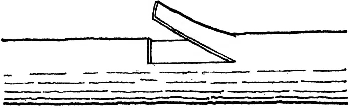
2
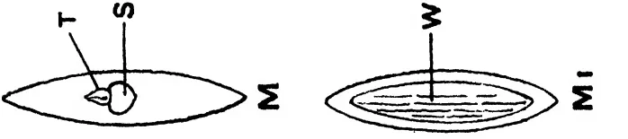
3
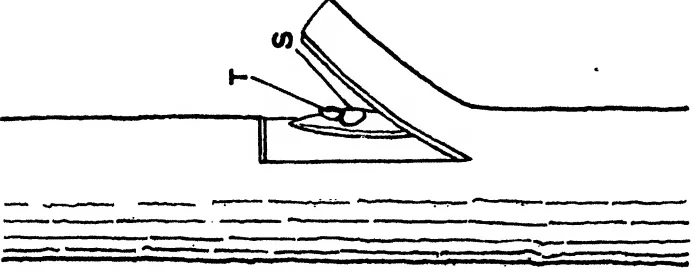
4
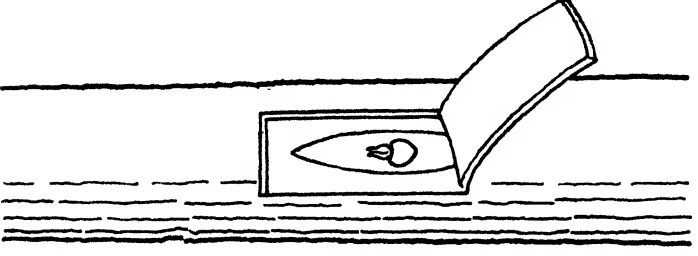
5
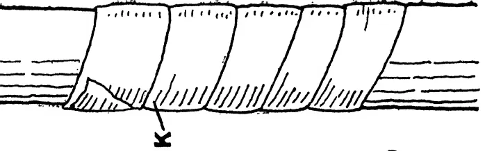
6
BLOCK BY SURVEY DEPT. CEYLON. S. 1. 37.
90older stock plants are more suitable for inarching in that they give rise to plants which bear earlier, but the writers find that stocks between six months and one year old give more vigorous and earlier bearing plants, when grafted or budded.
The best time for budding is at the end of the monsoon rains but budding can also be done at other times, preferably when the bark can be peeled easily when cut. This occurs during the periodical flushes of growth which last for several weeks. A flush can also be induced to a certain extent at other times by irrigation and manuring. The bark of the stock plant at the point of budding should be brownish or greyish in colour, this condition being reached when the plants are not less than about six months old.
In Jaffna, it is the practice to graft a mango plant high, even at a height of 3 to 4 feet, in order to prevent cattle and goats from eating the leaves of the plant, and under the impression that such plants will bear earlier. Plants which are grafted or budded high are found to be less vigorous than those budded lower, while they are also liable to break at the point of union of stock and scion when they are exposed to strong winds. The most suitable height at which budding should be done is at about 10 to 12 inches from the ground.
In budding, the stem of the stock plant is held firmly in position and a horizontal cut (F) followed by two vertical cuts (NN), about to 2 inches long, are made in the bark as shown in Fig. 1. The flap which is thus cut is gently pulled down (Fig. 2), leaving a patch of the cambium surface exposed.
The bud or scion should be taken only from twigs of the current season's growth, showing a pale green colour and a smooth surface. The bud is situated just above the leaf-stalk or petiole. Before removal of the bud, the petiole with the leaf attached is severed leaving a small stub, about inch long, attached to the stem. The bud is then cut so that it remains in the centre of a shield about 1 to ins. in length and of an area which is slightly less than that of the patch left on the stock plant after pulling down the flap of tissue cut in the bark. The cut is so made that a wedge of wood remains underneath the shield. In Fig. 3, the shield with the bud T and the stub of the petiole S is shown at M, while the reverse
91view of the shield with the core of wood W is seen at M.I. The shield is then placed in the centre of the patch on the stock plant leaving the sides exposed all round as in Figs. 4 and 5. The flap is then pushed up to cover the bud over. Keeping the scion firmly in position waxed tape is then wrapped around it as shown in Fig. 6.
When the weather is hot, a rectangular strip of dry plantain sheath, about ins. in size, is then tied to the stock plant above and below, thus protecting the bud from desiccation by the excessive heat. During wet weather oil-paper is placed as a cover over the bud to prevent any moisture getting in and thus causing the bud to decay.
After 2 to 3 weeks, the tape may be unwound to examine the bud. If it is still green, it has most probably united. The flap is then cut away and the plantain sheath covering placed over the scion as before to protect it. At the end of another week, the covering is removed and the stock plant ring-barked about to 2 ins. above the bud.
If there is a flush, the bud should develop in about a week's time and when the shoot has grown to a length of about 3 to 4 ins., the top of the stock should be cut back at the point where it was ring-barked.
When the budded plants are not less than about a foot high, they may be lifted and the tap roots pruned to a suitable length. They should then be potted and, after about a fortnight, they will be ready for transport or planting out in the field.
92Compiled by
W. C. LESTER-SMITH, B.A., Dip. Rur. Econ. (Oxon.),
A.I.C.T.A. (Trinidad),
CONTROLLER OF PLANT PESTS AND ACTING SECRETARY,
CENTRAL BOARD OF AGRICULTURE
This publication was compiled on the suggestion of the Executive Committee of the Central Board of Agriculture that a summary of the Report of the Committee on Soil Erosion (Sessional Paper III of 1931) be published in order to bring this important subject still more prominently to the notice of the agriculturists of this Island.—Ed. T.A.
The earth is the environment of man and the surface of the earth is the environment of the plant. Man is dependent upon the vegetable kingdom, so that ultimately he is dependent upon the produce of the soil. The soil of Ceylon is the natural capital of the Island and it is vitally important that every effort should be made to preserve it.
Soil erosion is the destructive, crumbling or pulverising action of natural forces, such as rain and wind, on the surface of the earth. It is a process which goes on in all places at all times and at rates which vary according to local conditions. The eroding force of greatest importance in Ceylon is rain, which causes the disintegration of rocks and the movement of soil, while wind is by no means a negligible factor in some districts at certain times of the year. The distribution of rain, its daily intensity and the frequency of short-period downpours of extreme severity, are of most importance. Falls of 15 inches in 24 hours are not rare, falls of 20 inches and over do occur, while in the dry zone a fall of nearly 32 inches has been recorded in 24 hours. It has been established from observations made in widely different parts of the world that practically all the rainfall of a day's heavy rain usually falls within 10, or
93even within 7, consecutive hours, while a disproportionately large fraction of that amount falls within 1, 2 or 4 hours. These conditions also apply in Ceylon, and downpours of 4 inches and even more in one hour can be regarded as a practical probability.
For a certain area the eroding forces may be regarded as unalterable, although between different localities these forces show wide variations. The resistance of the land surface to erosion also varies from place to place. It depends mainly upon (i) the type of rock or soil, (ii) the slope of the land, and (iii) the conditions and amount of surface cover. An absorptive soil will have a much greater resistance to erosion than an impermeable soil, and the steeper the slope and the more exposed the surface of the ground or soil, the less will be its resistance to erosion. For a certain area the factors (i) and (ii) are constant, so that alterations in the normal rate of soil erosion are caused by changes in the condition and amount of the surface cover. These changes are invariably due to the removal of the natural forest or grass soil-cover for purposes of cultivation or cattle rearing and its insufficient replacement by permanent crops. The resistance of the soil to erosion is reduced in this way, the necessary breaking-up of the soil for cultivation still further reduces its resistance, while the out-of-date practice of clean-weeding permanent crops, and even in some cases, semi-permanent crops, reduces this resistance till there is none.
The results of the processes of soil erosion are of the kinds which may be referred to as internal and external.
The internal results are restricted to the land which is being eroded. The surface soil, which contains the greater part of the nutrient matter and the whole of the organic food of plants, is bodily removed, and with it are lost, not only the actual salts which serve to nourish the plant, but also the micro-organisms which bring these salts into the condition in which they can be used by plants. The fertility of the soil is thus seriously reduced and its physical properties, such as water-retaining capacity, are altered by the destruction of its tilth. This lost fertility of the soil cannot be restored just by the application of artificial manure, as the production of tilth
94is a gradual process which is the result of the interaction of several different factors, of which the presence of plant food is only one. The soil, depleted of its most valuable ingredients by erosion, ceases to be able to support the crops grown on it, with the result that even the protection which these crops normally give it is largely lost. Erosion now reaches its second stage. The remaining top soil is washed away bodily ; from the channels formed by the water as it rushes down the slopes, subsoil is scoured away and gullies and ravines develop. The once fertile slopes not only lose all their fertility but the land is left in such a scoured and devastated condition that it is beyond reclamation. In this way the permanent capital of an agricultural country is destroyed.
The external results of erosion are many ; they take various forms and are of a serious nature. One result of the removal of a forest cover is interference with the flow of streams. Water is removed rapidly from unprotected land instead of being temporarily detained. The flow of streams arising in such land becomes irregular, being decreased during fair weather and becoming torrential during monsoon weather. Irrigation channels and rivers become choked by silt carried down from the eroded land, and irrigation works are often destroyed by the rush of water during heavy weather. Agricultural areas below the eroded land, such as paddy fields, may be ruined by the deposition of large quantities of sand and silt. The choking of river beds reduces their sections, with the result that they cannot carry and contain the volume of water they receive, and floods are aggravated. The flooding of roads during monsoon weather with its concomitant inconvenience and danger, and the unremunerative expenditure of public funds on the enlargement of existing, and the construction of additional bridges and culverts for roads and railways, are indications of the magnitude and cost of the evils which soil erosion causes.
The Soil Erosion Committee were of the opinion that external damage caused by internal erosion should be penalized. It is therefore in the interests of the land owner or occupier to cultivate his land in such a manner as to avoid being penalized for external damage.
95Soil erosion is caused primarily by the free movement of water on the surface of the ground. It is obvious therefore that the secret of successfully controlling soil erosion is to prevent the movement of any surface water. In practice it is not possible to effect this completely, so that efforts have to be made to reduce to a minimum the speed at which this water moves. It is not generally realised that doubling the velocity of water increases its transporting power sixty-four times.
To reduce soil erosion to a minimum it is necessary to :
It should be the aim of all who undertake any work for the reduction and prevention of soil erosion, to put into practice all the measures necessary to effect the first three of the above to such a degree that the last measure becomes unnecessary.
The primary aim in anti-erosive measures must be the prevention of the run-off of water. To effect this it is necessary especially during heavy falls of rain, (a) to reduce the force with which rain falls upon the soil surface, (b) to retard the rate at which it reaches that surface, and (c) to bring about the maximum absorptive capacity of the soil.
Reducing the force with which rain falls upon the surface of the soil involves the establishment of something to cover and protect the soil from the beating action of rain water falling directly on to it. The less the height from which this rain water falls, the less will be its erosive action. The most effective form of protection is some suitable type of low-growing ground cover crop. Plants of high or medium growth, such as are commonly grown for high shade and medium high shade or green manuring respectively, prevent the direct beating action of rain on the soil to a limited extent; but they
96do not prevent it so efficiently as do ground cover crops. High and medium shade, in combination with ground cover crops, effectively perform function (b); that is, they retard the rate at which rain water reaches the soil surface, and thus give it time to sink into the ground if the soil is sufficiently absorptive. In the case of crops which are tall or of medium height in growth, the crop itself can in part perform this function.
The direct beating of rain water on the surface of the soil is not the only erosive action which takes place on a bare soil, unless the ground be perfectly level. In Ceylon, even in those parts of the Island where the rainfall is low, the soil surface is rarely perfectly flat over areas of any considerable extent. This being the case a second erosive fact has to be considered, this is the transport or movement of soil particles caused by the flow of water on the surface of the soil. In view of the great transporting power of water, especially in the case of soil particles of diminutive size, this erosive factor is a very important one on all types of soils and even where the slope is so slight that it is not apparent. This erosive factor can be counteracted only by an efficient low-growing ground cover, whatever form that cover may take, whether it be a cover crop, weeds or a natural grass cover. Ground covers, however perfect they may be, cannot entirely prevent the movement of water on the surface of the soil under rainfall of high intensity; but they do effectively reduce the rate of flow of this water, and so where the absorptive capacity of the soil is high, give it time to sink in or be absorbed.
Ground covers must be regarded therefore, as of primary importance in the prevention of soil erosion since they perform three of the four functions necessary to reduce soil erosion to a minimum. They protect the soil from the direct erosive beating action of rain; if the soil is in the proper condition they enable it to obtain the maximum absorption of the rain which falls; and they effectively assist in controlling the removal of surplus rain water by limiting its rate of flow on the soil surface. The establishment of a satisfactory ground cover, as rapidly as is possible, must be regarded as an imperative necessity for the prevention of soil erosion. Almost all crops will permit of this, with the exception of a limited number of short-period or seasonal
97plants. As regards the latter, the rapid and periodical growth of weeds will serve the purpose of ground covers to a limited extent. In the case of seasonal or other crops in which it is essential that no weed growth be permitted, it should be remembered that the provision and maintenance of a satisfactory surface mulch of organic material which has not entirely lost its original plant structure, can to some extent take the place of a ground cover.
In order to bring about the maximum absorption of rain water by the soil at the place where it actually falls, it is necessary to limit the rate at which this water reaches the surface of the soil to prevent its rapid flow or movement over this surface, and to have the soil in such a condition that its absorptive capacity is at its maximum. The first of these is effectively performed by a satisfactory ground cover, which, as already indicated, in part also assists in the other two.
The rate of movement of water over the surface of the soil irrespective of the presence of a ground cover, will vary mainly in accordance with the degree of slope of the area concerned. The steeper the slope the greater will be the rate of movement and the greater, therefore, the necessity for checking it. Also the steeper the slope and the greater the rate of flow, the less the time available for absorption, with the result the quantity of surplus water that can flow off will be greater. To prevent erosion the free movement of this surplus water must be prevented and its removal controlled. In the past it was customary to lead this water off the land, in so-called drains by the easiest and quickest possible route, and no account was taken of the soil which went with it. More recently, however, the value of this soil has been realised and more and more frequent attempts have been made to prevent its loss and to recover it. To accomplish this it has been necessary to check the rate of flow of this water by flattening the gradient of drains and by constructing in them silt pits and locks and steps. The fact that if surface run-off is prevented there will be no soil movement, is still insufficiently realised. The old idea that drains were required and should be designed to take water off the land as quickly as possible is obsolete. It has been replaced by the modern conception of drains as an
98additional means of aiding the maximum absorption of water falling on the land, as a means by which the removal of surplus water can be controlled, and as a means of collecting and returning to the land, silt which has been eroded from the areas above the drains and carried into them by surface water. The Soil Erosion Committee considered that it was possible to control the movement of surface water and stop the downward movement of surface soil by the use of ground cover ; drainage systems are to be regarded as a second line of defence against soil erosion. The first line of defence should be in front of the drains, and it should be efficient enough to render the drains unnecessary in all but the heaviest and most prolonged downpours, or to ensure that the water which finds its way into the drains does not contain silt but is clear and colourless.
Drains are in universal use in tea and rubber plantations, though their dimensions, spacing and gradients vary considerably. The usual width and depth is 18 inches ; the distance between drains varies with the steepness of the slope and with the rainfall, but it is usually between 25 and 35 feet. Gradients vary enormously ; the older type of so-called contour drains were often as steep as 1 in 7, but the average was probably 1 in 20 to 1 in 30. The tendency in recent years has been to reduce the gradient of new contour drains until slopes of 1 in 60 or even 1 in 120 are now found.
Where drains are necessary their construction should be guided by scientific principles, and their size and frequency should be determined by the maximum amount of run-off they may be called upon to hold. It has been urged against deep drains and silt pits that in districts where the soil is of an impenetrable nature, the water percolates very slowly into the ground and in the meantime furnishes breeding grounds for mosquitoes. In such districts it is necessary to make the drains and pits smaller and more frequent.
In recent years various modifications have taken place in existing drains ; silt pits are perhaps the most common and the least efficient. Their effective capacity for the retention of water and the collection of silt is confined to the pits themselves. Once they are full of water they cease for practical purposes to exist ; the water in the drain flows unhindered over them and
![A technical diagram showing a cross-section of a steep slope with a drainage system. The 'Original Ground Surface' is a dashed line sloping downwards. An 'Earth Bund 12" high' is built into the slope, with a 'Berm 18" to 2" wide' at its base. The 'Original Bed of Drain' is a channel cut into the slope, with a 'Level' indicated. A 'Silt Pit' is located at the bottom of the drain, with a 'Water Level when full' indicated. A 'Stone Pitched Bund' is built across the drain, with a 'Berm 18" to 2" wide' at its base. A label 'Non effective for storage' points to the stone pitched bund. Dimensions are given: 6" for the width of the earth bund and stone pitched bund, 12" for the length of the stone pitched bund, 18" for the width of the silt pit, and 3" for the depth of the silt pit. The diagram is labeled 'BLOCK BY SURVEY DEPT. CEYLON. 30.11.36.'](b95f8a31989e2d56f956b3816cd077b1_1_img.webp)
Fig. 1. Mr. C. E. A. Dias' method of regrading steep side-drains
In system' as sketched original drains were 25 feet apart. 18" wide 18" deep and graded at 1 : 10. Cross Bunds were constructed 15' apart and Silt Pits 3' long 18" deep were dug as shown.
| Overall length of each 'basin' | = 15' |
| Effective | = 15' - 6' = 9' |
| Capacity of each basin | = |
| = 20 cubic feet | |
| Length of Drain per acre | = |
| = 1740 feet | |
| Number of Basins per acre | = |
| Storage Capacity per acre | = |
| = 2,360 cubic feet | |
| = 0.65 inch Rain |
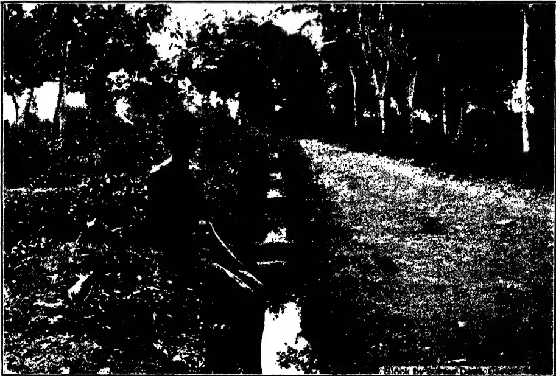
A high-contrast black and white photograph showing a side drain in a field. The drain is a shallow, horizontal trench in the ground, with water flowing through it. The background shows a dense line of trees and foliage. The image is framed by a thick black border.Fig. 2. Side drain (levelled by Mr. Dias' method) photographed after a shower
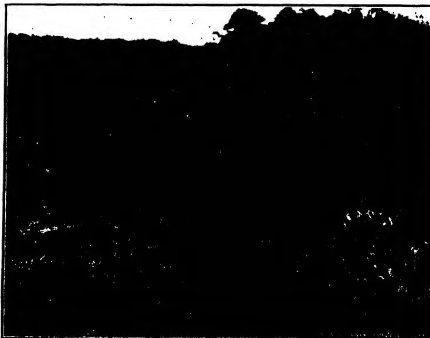
A high-contrast black and white photograph showing Java Silt Pits. The image shows a dark, textured surface, likely the silt pits, with some lighter patches and a line of trees or bushes in the background. The image is framed by a thick black border.Fig. 3. Java Silt Pits
99with the exception of the very coarse particles carries away any silt with which it may be charged. The fine clay fraction which constitutes the most valuable part of the soil requires 24 hours to settle through 12 inches of still water ; there is no chance of its settling with silt pits full of water and a downward flow of water still in progress.
Cameron's lock and step system, advocated by Mr. E. O. Felsinger, is a distinct improvement ; in effect it results in the conversion of the drain into a series of silt pits separated by narrow walls. A quantity of water equal to the storage capacity of the basin thus formed, is held up in each section and the soil which it carries has an opportunity to settle. It is calculated that this system will hold 2 inches of rain before the spills overflow. There is no reason why the holding up of larger quantities should not be provided for by increasing the dimensions of the drains.
A further improvement, which is subject to the same limitations however, is the following. The drain is divided by bunds as in the lock and step system but the sections between the bunds are excavated so as to be horizontal. The late Mr. C. E. A. Dias evolved this method of regrading existing drains, which obviates the damage and expense caused by cutting drains on new traces. Under this method the old drain is transformed into a series of flat reaches separated by shallow spills, each section having a silt pit at its downstream end (Figs. 1 and 2). By this means the capacity of the system is increased and the forward rate of flow diminished.
On gentle slopes and with an evenly distributed rainfall, the system of bunded catch-water pits advocated in Java may be sufficient to provide for the holding up of all the run-off water. Rows of pits are dug in contour lines across the slope (Fig. 3).
Where main down drains exist for the removal of surplus water they should be improved in such a way as to reduce the rate of flow. A neglected down drain, especially in friable soil, becomes a gully which gradually eats its way into the hill. As the scour develops, it lowers the water-table of the slope and so effects fertility. The lowering of the water-table also results in a decrease of the absorptive power of the soil of the
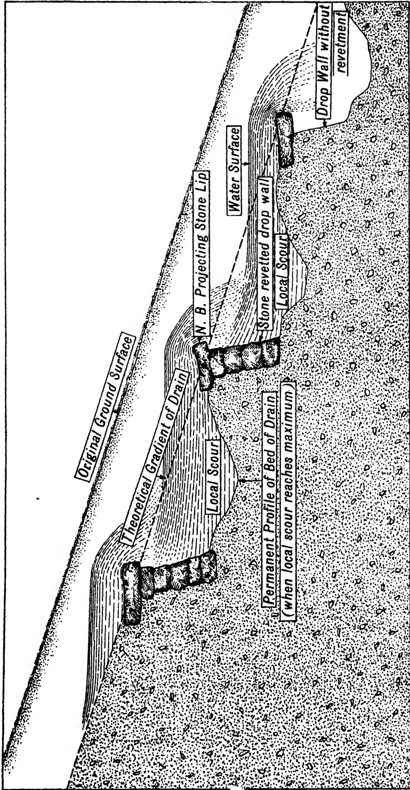
The diagram illustrates a cross-section of a drain with a step. The original ground surface is shown as a solid line. The theoretical gradient of the drain is indicated by a dashed line. A stone lip is shown projecting from the top of the step. The water surface is shown flowing over the lip. The stone revetted drop wall is shown at the base of the step. Local scour is indicated by a shaded area at the base of the step. The permanent profile of the bed of the drain is shown as a solid line, which is the maximum depth of local scour. A drop wall without revetment is shown at the end of the drain.
BLOCK BY SURVEY DEPT. CEYLON. 30.11.36
Fig. 4. Mr. Horsfall's step and water cushion system for prevention of scour in main down drains
101slope owing to the presence of air at levels which would ordinarily be occupied by moisture. In recent years much time and money has been spent on the treatment of down drains by building revetments and cross walls and by paving their sides and beds. Much has been done also by planting the sides and beds with fern, cheddy and Paspalum grass. These measures, useful as they are, only prevent the scouring of drains; they do not reduce what is often a roaring torrent to the gentle cascade which is desirable. This can be accomplished by the construction of steps and the formation of water cushions (small steps sloping backwards with a projecting lip of earth or stone) (Figs. 4 and 5); by means of these the rate of flow is reduced to a minimum and the water drops vertically from one step to the next instead of cascading. Mr. A. G. D. Bagot has also devised a useful reverse slope system of reducing the rate of flow and inducing the deposition of suspended silt in open drains. This is accomplished by the construction of a series of steps with a reverse slope along the course of the existing drain (vide The Tea Quarterly, 1930, Vol. III, pp. 73-76 and 114-116). This system breaks the continuous downward flow of the contained water at each step and thus allows any suspended soil to settle. When down drains have been eroded to such an extent that they have reached the gully stage, control of the velocity of water can be obtained only by the building of large and expensive cross walls of stone. It is important in cases where main down drains are employed that they should be properly sited in the natural folds on the concave faces of the hill.
Other works which aim at preventing the downward movement of water and soil on slopes, and thus aid in controlling the removal of surplus water, are stone terracing, the construction of contour and individual platforms and contour trench systems.
Much excellent stone terracing has been done on tea and rubber estates and there is no doubt that it does arrest a large amount of downward movement of soil on slopes. The efficiency of terraces depends more upon their frequency than on the height of the stone-work, which it is considered, should not be more than 18 inches in height. Occasionally, however, much harm is done by water spilling over the tops of terraces and it is
102therefore essential that stone terracing should be supplemented by measures designed to ensure maximum retention and absorption of water falling on the terraces.
A very effective measure for this purpose consists in the planting of a continuous (single row) grass border along the sides, particularly the upper sides, of road and drain edges. These can be established at a very small cost and, in time, grow higher and form a small bund or terrace as soil collects. Several types of upright growing grass are suitable for this purpose, but in all cases they require to be closely planted. Paspalum dilatatum is perhaps the most suitable for the purpose, though Guinea and Napier grass have also been used with success. Whatever type is used the grass will always require to be controlled and kept within bounds. The grass cuttings can be used as a surface mulch or fed to stock. On account of less labour being involved and their lower cost a much larger area can be more quickly established in these grass border terraces than can be done in stone. The limits of the usefulness of stone terraces should be recognized. They are not regarded as a complete or efficient method of preventing soil erosion, so that undue reliance should not be placed upon them. Stone terraces are not used in coconut plantations but terraces two feet high constructed of husks are employed. In the cases of terraces of this type on apparently flat land, it has been noted that the soil movement had been sufficient to deposit soil to the level of the top of the bund of husks.
Contour platforms are considered to be a progressive method of opening new clearings and this system has proved its undoubted benefits. In the more advanced 1930-31 rubber clearings opened under this system, only the large timber is removed at first, and lining and holing are done before the land is finally cleared. The construction of the contour platforms is done immediately. The holes are refilled with top soil and the platform is constructed, so that the plant will be in the centre. The earth is removed from above the pegs and built up below them to form a platform. The platform slopes backwards into the hill, the inner edge being at least a foot below the outer. Small buttresses are left at intervals along the back of the platforms so that undue lateral movement
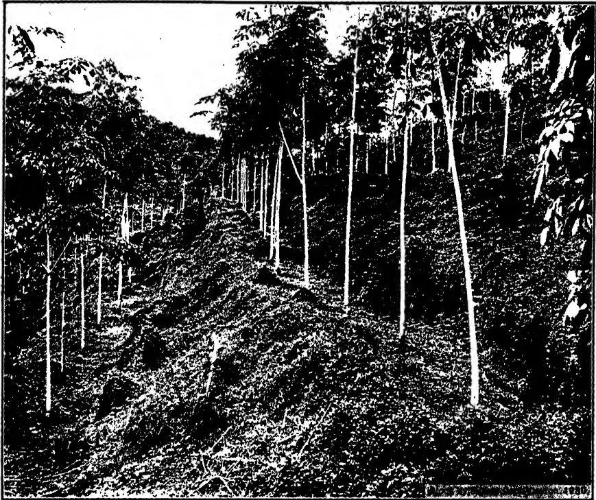
Fig. 7. Contour Platforms in Rubber
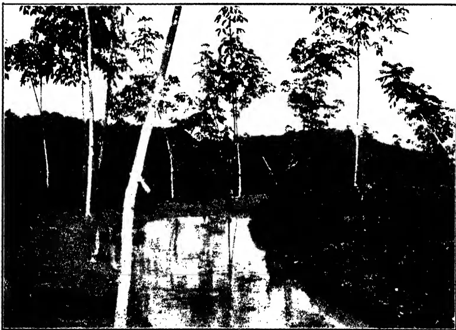
Fig. 8. Contour Platforms in Rubber showing water held up after heavy rain
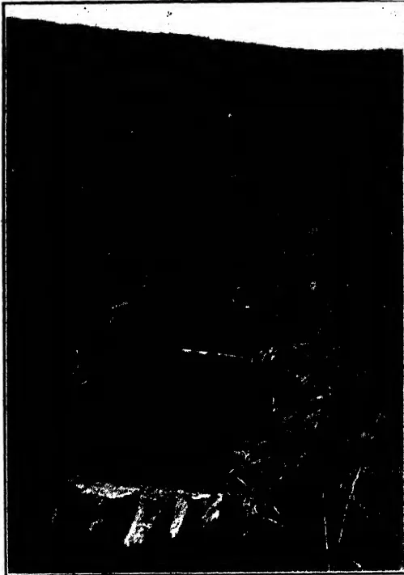
Fig. 5. Mr. John Horsfall's "Step and water cushion system" for main drain
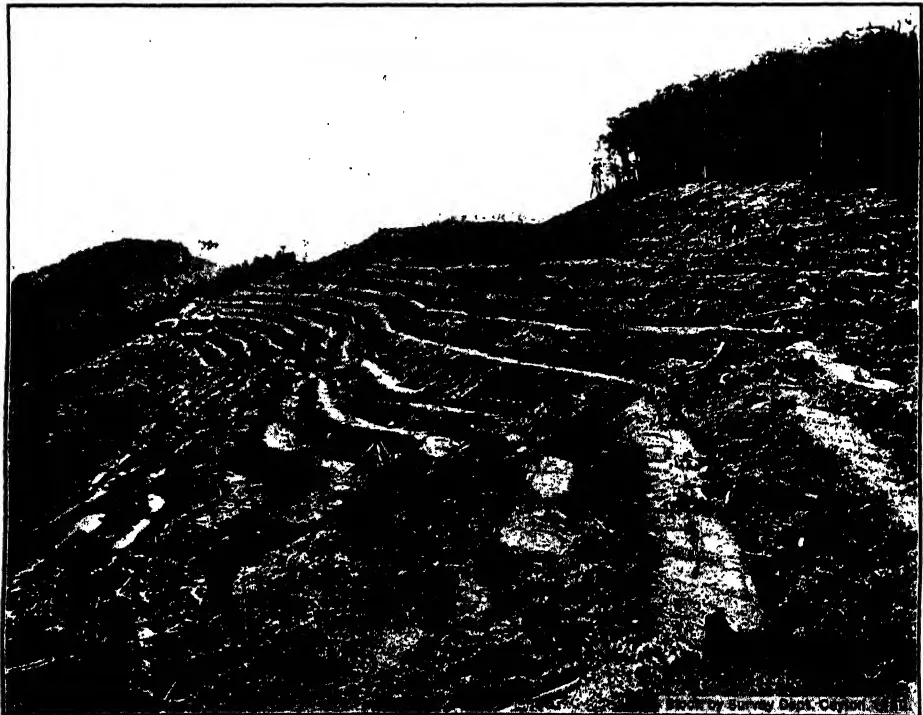
Fig. 6. Contour Platforms in Rubber
103of water is prevented. Silt pits are usually dug at the back of the platform, and the platforms are planted with cover crops which form a complete cover except for a space around each tree which is kept clean. There are no drains and the whole of the water falling on the land is absorbed (Figs. 6, 7 and 8).
Individual contour platforms are known to be in use on coconut plantations and a successful type which is easy of construction and effective in use is indicated in Fig. 9.
A contour trench system for opening a tea clearing in patna land has been devised by Mr. C. Du Pré Moore. In this system the grass is not burnt off but is dug in and allowed to rot in situ. In this way all the plant material is preserved and soil is protected from the beginning. Level contour trenches are cut and the earth banded above the trenches and consolidated by beating, the face being reinforced by stone where this is available. In the course of time a terrace is formed and any extensive soil movement is prevented. Lining is done in the ordinary way so that the system is a contour one without the tea being actually planted on the contour. Any wash which takes place is caught by the band which thus initiates the terrace formation (Figs. 10 and 11). By means of this system all the water falling on the land is absorbed, and any soil movement is limited to the wash on individual terraces from the back to the front. Unless this system is reinforced by the use of a ground cover its use is considered to be limited to gentle and medium slopes.
In the contour trench system evolved by Mr. Denham Till the size of the trenches is first calculated so that they shall be sufficient on any area to contain the run-off water from the probable maximum downpour thereon. A level trench of the required dimensions, usually 3 ft. by 3 ft., is cut at the base of the hill. Assuming that rubber is to be planted in rows 24 feet apart, the next trench, also level and of the same dimensions, is cut 24 feet from the centre of the first one and so on up the hill. The surface soil removed from the trench is thrown to the upper side and the subsoil to the lower side. The subsoil is used to form a band on the lower side of the trench and creeping or other cover crops are grown on the band. The trench is not filled in until immediately before planting, when
104it is half filled with top soil. Any rain which has fallen between the time of trenching and that of planting will have replaced some of the original surface soil thrown above the trench, and this may be increased by scraping the top soil from the ground above the trench until the requisite depth of soil is obtained. If no cover crop is grown other than that on the bund, local erosion taking place between the trenches will result in the formation of a series of contour terraces.
A good ground cover is of primary importance in the prevention of soil erosion, and the control of free surface water is the next essential.
The measure of next importance is to ameliorate the soil so that it attains its maximum absorptive capacity. The more water that is absorbed by the soil the less there is to run down the hill carrying soil with it. Up to a point, soil absorbs water to its advantage since it also absorbs air. Too much absorption will cause water-logging, but it is extremely unlikely that water-logging will occur to any extent even on gently undulating land except in areas near the coast and where the water-table is already high. On hill sides or sloping land the possibility of water-logging does not require consideration, and the aim should be to absorb the maximum amount of water on such slopes both for the prevention of erosion and for the benefit of the soil itself. The cultivation of the soil is thus a matter of importance as it affects absorption, percolation, and the retention of soil moisture. Deep cultivation is preferable to superficial scraping, but while deep forking has a value in aiding absorption it will not prevent soil erosion. The results of experiments have shown that plain envelope forking increases erosion. It is necessary, therefore, that forking should be supplemented by protection of the surface of the soil and by green manuring. Green manuring leads to the formation of humus which increases the water-retaining capacity of the soil, to the aggregation of soil particles by flocculation, and to the production of tilth. In this connection the advantages of green manures over artificial fertilizers should be noted. The latter add chemical salts to the soil, and their indiscriminate use may lead to the accumulation in the soil of alkaline or acid residues in such quantity that conditions which are adverse
[Faint page: no legible print of its own could be verified; text withheld (stage 4 review list)]
Fig. 10. Mr. Du Pré Moore's catchwater bund and trench system
With Trenches 2' wide 18' deep at 15' apart:—
| Length of Trench per acre | .. | ||
| .. | = | 2,900 feet | |
| .. | = | ||
| Capacity | .. | = | 8,700 cubic feet |
| .. | = | 2.4 inches Rain |
or even toxic to the plant may be produced. Green manures, in addition to improving the soil physically, do not have this disadvantage and their presence may counteract the harmful effect produced by excess of artificial manures. For this reason alone the increased use of green manures is advised.
A soil which by exposure to the sun is baked hard on the surface will naturally offer a freer run-off to rain water than one which is kept cool and moist by shade. Shade, therefore, has an important function in the prevention of soil erosion other than its main one of preventing the direct beating of rain on the soil. It renders the soil more absorptive by improving its physical structure; the fact that a moist soil absorbs water more readily than a very dry one is not generally appreciated. The leaf-fall and loppings are an additional asset which shade trees provide, and it is recommended that they be incorporated in the soil rather than left to form a mulch on the surface. The advantages of incorporation are that the soil texture is improved and that fertility is increased if burying is done early. The improvement of texture leads to an increase of absorptive power and therefore to a diminution of surface run-off. Under natural conditions processes which result both in the formation and in the breaking-down of organic matter go on in the soil. According to the soil temperature the building-up process may proceed more rapidly than the breaking-down process, or vice versa. At low soil temperatures (those below 78° Fahrenheit) there is normally an accumulation of organic matter in the soil, but at high soil temperatures a reduction of the organic matter content of the soil takes place. The nitrogen content of soils is closely related to their organic matter content and it therefore follows that the nitrogen and organic matter content of soils increases as the soil temperature is reduced. The main source of the heat which causes increases in the temperature of the soil in Ceylon is radiation from the sun. Thus, the provision of shade to the soil, whether it be in the form of high shade or of low shade such as ground cover crops, has a marked effect in improving soil texture and soil fertility, and so in reducing soil erosion. Some indication of the degree to which soils with a high organic matter content can absorb and retain water may be appreciated when the following facts are considered. One hundred pounds of dry sand can hold 2½ gallons.
106of water, the same quantity of dry clay can hold 5 gallons of water, while the same quantity of dry humus can hold 19 gallons of water. The incorporation of organic matter with the soil is thus a positive move in the direction of prevention and control of soil erosion. Surface mulching, by itself, is a neutral step which does not take full advantage of the material at hand. Eroded soil contains particles of various sizes and the greater part of this soil material consists of clay particles which are the most minute in size. These are the most important constituents of all soils as they provide the available nutrients for the plants. In cases where any erosion does take place it is extremely desirable that this very valuable part of the soil should not be lost to crop growth. Owing to the minute size of these eroded particles they are readily disturbed by the beating action of rain on the soil surface, and are easily transported and held in suspension by water. Evidence of this is to be seen in the muddy colour of many of the main streams and almost all the rivers of the Island; the fine clay particles being held in suspension by the water impart to it the characteristic colours which these streams and rivers possess. These minute clay particles, when once in suspension, settle or are deposited only very slowly even in still water. It is possible, however, both in the soil and in water, to cause them to coalesce and adhere together to form compound aggregates of a larger size, humus being one of the commonest naturally occurring substances which can cause the aggregation or flocculation of these minute soil particles. When in a flocculated state, the soil particles are taken into suspension by water less readily; and from suspension are more rapidly deposited. This flocculating action is therefore another extremely important way in which humus or soil organic matter acts in the reduction of soil erosion. The valuable soil particles carried in suspension in the surplus run-off should be trapped, and returned to the site of their removal. In order to do this it is necessary to collect, trap, and bring to a state of immobility the run-off water so that the soil particles suspended in it may have a chance of settling. The collection and trapping of this surplus water is effected by means of the various types of silt pits, contour trenches and platforms already described. Their size and frequency will depend upon the quantity of water that has to be held up, which again will depend upon local factors such as the amount and intensity of the rainfall, the efficiency of any existing soil cover and the absorptive
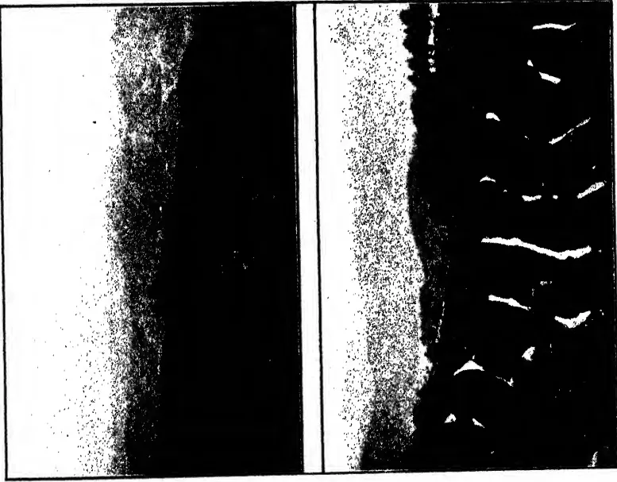
Fig. 11. Mr. Du Pré Moore's contour trenches after a heavy shower
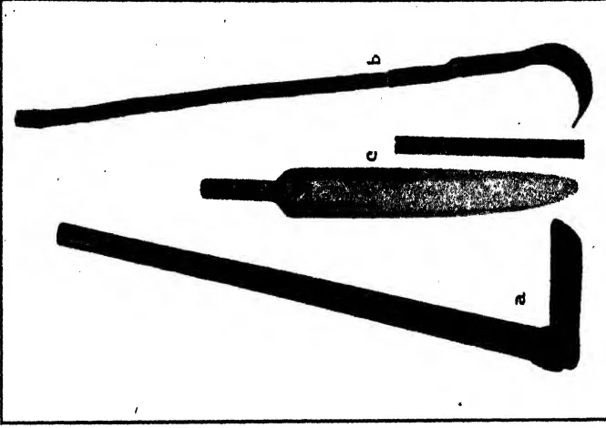
Fig. 12. Weeding tools used in Ceylon (a foot-rule is included for comparison) a—Mamoty, b—Karandi, c—Wooden Spear
This image is a blank white page. It contains several small, dark specks which appear to be scanning artifacts or dust particles. There is no text, handwriting, or printed content on the page. 107capacity of the soil. Drains should not be considered a necessity unless the quantity of surplus run-off water is greater than can be dealt with economically by silt pits, contour trenches, etc., and, when necessary, they should be designed so that they provide the maximum opportunity for the deposition of suspended soil particles. This can be effected by reducing their gradient to the minimum and by the construction in them of the necessary steps, locks, spills and water cushions.
The fertility value of the eroded and transported soil particles is considered to be sufficiently great to render their return to the area under cultivation extremely desirable. The accumulations in silt pits, contour trenches, drains, etc., render this easily possible after the water that was in them has been disseminated through percolation, absorption, etc.
The regular return of this soil to the cultivated area will enable these silt traps to be maintained in an effective condition. The location or siting of them in the necessary places will reduce the distance this eroded soil has to be transported back and thus save a considerable amount of labour and expense.
The loss of the most valuable part of the soil through erosion has a cumulative effect of incalculable consequence if regarded in its proper perspective. If permitted to continue in the future to the same degree as in the past, it will create problems of sufficient magnitude to cause an economic crisis. These problems in the main are twofold; loss of soil fertility and flood damage. Economic agricultural production depends upon the maintenance of soil fertility. The regular loss of the most valuable fraction of the soil, at a rate which is considerably greater than that of the natural reproduction of this fertility, must have far reaching effects. It will reduce the soil of all the unprotected elevated portions of the Island which are under cultivation to such a state of infertility that in the course of time their cultivation will be uneconomic. The deposition of the eroded soil in the lower lying parts of the Island increase the liability of these areas to floods; and the damage which such floods cause is augmented, thus imposing more frequent or heavier calls upon a diminishing general revenue. The financial prosperity of Ceylon is dependent upon the prosperity of its agricultural production, which is dependent upon the fertility of its soil. The soil of Ceylon is thus the natural capital of the Island, and of such vital importance that every effort should be made to preserve it.
108A. W. R. JOACHIM, Ph.D.,
AGRICULTURAL CHEMIST
THE question of improving the citronella oil industry in Ceylon has recently been receiving the serious attention of the Agricultural Department. Of the two aspects of the problem, that of improving the quality and yield of oil by selection and cultivation is being proceeded with. The other, the marketing aspect, is to a large degree governed by the requirements of the trade. With the object of ascertaining what these requirements are so that a suitable programme of production research based thereon could be planned, the views of some of the leading exporters and dealers in the commodity locally were obtained. These opinions are embodied in the paragraphs that follow.
Ceylon citronella oil is sold in two grades: 'ordinary' or f.a.q. (fair average quality) oil in which the bulk of the business is done (over 95 per cent. it is estimated), and 'estate' oil which is of superior quality.
The former is almost invariably sold on the basis of a solubility test of the oil in alcohol, known as the Schimmel's test. This test permits of the addition of petroleum products up to a limit of about 7 per cent. Buyers abroad are aware that Ceylon f.a.q. citronella oils are not pure oils, but generally adulterated with petroleum products. They are, however, prepared to purchase any quantities of these oils as long as they pass the Schimmel's test. These oils are much in demand by the soap-making, cosmetic and cheap perfumery industries. In the opinion of all exporters and dealers of the commodity, the trade does not require pure oil and will not generally pay more for it than for ordinary f.a.q. oil. Adulteration, though a bad practice, has therefore according to a large producer
109“no special significance to-day, as the industry has adjusted itself to this organised system of adulteration.”
Exporters all agree that the present low market price of Ceylon citronella oils is not due to adulteration. Five years ago oil of identical quality realised three times as much. The quality of the oil shipped to-day is considered generally superior to that shipped 25 years ago. The question of price is a matter of supply and demand and the present low price of both Ceylon and Java oil is entirely due to overproduction in Java. This is clearly seen from the export figures. Thus while Java exported 815 tons and Ceylon 543 tons of oil in 1930, in 1934 Java exported as much as 1,778 tons and Ceylon 687 tons.
Estate quality oil is unadulterated oil and is generally sold on the basis of its total acetylisable content estimated as geraniol, with a minimum of 60 per cent. “geraniol.” The demand for this oil is very small and several attempts made to popularise it have not met with any response on the part of the buyers. The premium paid for such oils is also small, being 2 or 3 cents more per lb. than for ordinary f.a.q. oils. Samples of estate oils sent by two exporting firms to two of the principal buyers of citronella oil abroad, were reported on as follows : “This is quite a nice oil, but we wouldn’t pay more for it than for the ordinary f.a.q. oil,” and “Very good oil, strong and exceptionally sweet odour ; are not prepared to pay more than for supplies of usual quality.” It will thus be seen that the export of pure Ceylon citronella oils does not appear to offer any advantages to the Ceylon industry.
Ceylon oil is distilled from two varieties of citronella grass (Cymbopogon nardus) : the lena battu and the maha pangiri which is a Java type. On Ceylon plantations the grasses are invariably mixed, but the former predominates. Pure lena battu oil has a “geraniol” content of 55-60 per cent. and Java oil an average of about 85 per cent. Java oil naturally fetches a better price on the world’s markets, but the differences are not always commensurate with the respective qualities of the oils as gauged by their geraniol contents. Most exporters consider that it would be unwise to abandon the production of
110lena battu oil in favour of the Java type, for the following reasons :—
(1) The oils are used for different purposes : the Java oil for high grade scents and the Ceylon oil for soaps and cheap perfumery. There is accordingly a ready market for Ceylon f.a.q. oils.
(2) If Ceylon exported oil of the Java quality, the severe competition that must ensue might result in a general decline of prices of oil of this quality, and a rise in price of Ceylon quality oil.
(3) It is by no means certain that maha pangiri grass planted in Ceylon will give the same results as in Java with its rich volcanic soil. In actual practice it has been found that this grass requires a good deal more attention and more frequent replanting than lena battu. It also lends itself to less frequent cutting and needs a more fertile soil than lena battu which grows on soils of the poorer type, constituting 70 to 80 per cent. of the citronella-growing area.
The main line of work suggested is the improvement of the yield and quality of lena battu oil by selection, cultivation and manuring.
In regard to the tests for citronella oil, it is generally admitted that the Schimmel's test is by no means a suitable test for gauging either the purity or the quality of the oils. Occasionally pure oils fail to pass the test. 1 It is, however, a rough and ready test for detecting gross adulteration of the oil with petroleum, and is thus considered suitable for the trade in f.a.q. oils. Adulteration with kerosene can be determined with reasonable accuracy by the "Raised Schimmel's test." The sale of local citronella oil on the "geraniol" basis is not considered practicable for a number of reasons. For one it is unnecessary with f.a.q. oils which form by far the greater proportion of the Ceylon oils exported ; for another it would increase the price of the oil to the buyer and eventually react on the producer. Market oils, when required, are however sold on their "geraniol" contents.
To sum up the present trade position :
111The bulk of the business in Ceylon citronella oil is done in what is known in the trade as f.a.q. oil. This oil is not necessarily a pure oil, but may be adulterated with petroleum products up to a point. It must, however, pass the Schimmel's test. Adulteration therefore, within reasonable limits, is permissible. There is a ready demand for this oil, which has very definite uses. Buyers are not generally prepared to pay more for pure oils (market oils), the demand for which is therefore very limited. The present low price of citronella oil is not due to adulteration but to over-production in Java, and the difference between that of Java and Ceylon oil is normal. As Ceylon f.a.q. oil is well known to and accepted by the trade it would, it is considered, be a mistake to force any change on the trade not asked for by it. The compulsory sale of oils on geraniol basis is considered impracticable and unnecessary so far as present trade requirements go. The improvement by selection, cultivation and manuring of the yield and quality of the lena battu oil, the typical Ceylon oil, is considered to offer greater possibilities than the production of oil of the Java type (maha pangiri). One exporter considers that the local price of citronella oil would improve if a preferential duty were allowed on Ceylon oils imported into the United Kingdom.
This work is now divided between the Tea Research Institute and the Department of Agriculture in accordance with the following tentative arrangement:— The Institute's Entomologist now deals with all enquiries and investigations relating to termites attacking tea, green manure and shade trees interplanted with tea and termites and other insects infesting buildings on estates where only tea is grown. The Department's Entomologist is responsible for advisory and other work relating to termites affecting other crops and to those attacking all buildings other than those mentioned above.
112G. V. WICKREMASEKERA, Dip. Agric., (Poona),
A. I. C. T. A. (Trinidad)
IN recent years the critical examination of plants has resulted in many alterations to botanical names. Unless the latest accepted nomenclature is known the perusal of present day scientific literature is liable to be confusing.
The list has been prepared for the guidance of those interested. Familiar synonyms, popular names and, wherever possible, local vernacular names have been indicated.
To avoid confusion, it is desirable when labelling plants or when any reference is made to plants by their latest accepted names to indicate, within brackets, the familiar synonyms, etc.
This alteration applies to all species, including the following :—
A. cherimolia Mill. Cherimoyer.
A. glabra Linn. Alligator pear.
A. muricata Linn. Katu-anoda (S). Sitha (T). Sour sop.
A. reticulata Linn. Anoda (S). Ramsitha (T). Bullock's heart, custard apple.
A. squamosa Linn. Sugar apple.
6. Artocarpus communis Forst.
(A. incisus Linn. f. A. incisa Linn. f.)
Del (S). Breadfruit.
7. Artocarpus integer (Thumb.) Merr.
(A. integrifolius Linn. f. A. integrifolia Linn. f.
A. integra Merr.)
Kos (S). Jak.
8. Bambusa multiplex Raeusch.
(B. nana Roxb.)
Dwarf or Chinese bamboo.
9. Benincasa hispida Cogn.
(B. cerifera Savi.)
Alupuhul (S). Puchini (T). Ash pumpkin.
10. Bombax malabaricum DC.
(Gossampinus malabarica DC.)
Katu imbul (S). Silk or red cotton tree.
11. Cajanus cajan (Linn.) Millsp.
(C. inodorus Medic. C. indicus Spreng.)
Rata-thora (S). Thavarai (T). Dhal. Pigeon pea.
12. Camellia sinensis (Linn.) Kuntze.
(Thea sinensis Linn.)
Tea.
13. Canangium odoratum King.
(Cananga odorata Hk. f. and Th.)
Wana-sapu (S). Ylang Ylang.
14. Canna edulis Ker-Gawl.
But-sarana (S). Edible canna.
15. Ceiba pentandra Gaertn.
(Eriodendron anfractuosum DC.).
Imbul, Pulun-Imbul (S). Kapok. Silk cotton.
16. Citrus paradisi Mac. f.
(C. maxima var. uracarpa Merr. and Lee.)
Grape fruit.
17. Coleus parviflorus Benth.
(C. tuberosus Benth.)
Innala (S). Country potato.
18. Delonix regia Rafin.
(Poinciana regia Boj. ex Hook.)
Flamboyante.
19. Dolichos biflorus Linn.
(D. uniflorus Lam.)
Kollu (S). Horse gram.
20. Dolichos hosei Craib.
(Vigna oligosperma Baker.)
21. Duranta repens Linn.
(D. plumieri Jacq.).
22. Eugenia aromatica (Linn.) Baill.
(E. caryophyllata Thumb.)
Karabu (S). Karambu (T). Cloves.
23. Eugenia brasiliensis Lam.
(E. Michelii Lam. E. uniflora Linn.)
Brazil cherry.
24. Eugenia cumini (Linn.) Merr.
(E. jambolana Lam.)
Maha dan, Madan (S). Naval, Peru naval (T).
25. Feronia limonia (Linn.) Swingle.
(F. elephantum Correa, Limonia acidissima Linn.)
Dirul (S). Vila, Vilatti, Magaladikkuruntu (T).
Elephant apple. Wood apple.
26. Flacourtia indica (Burm. f.) Merr.
(F. ramontchi L'Hérit.)
Uguressa (S). Katukali, Karumurukki (T).
27. Gliricidia sepium (Jacq.) Steud.
(G. maculata, H.B.K.).
Note.—The colours of the flowers vary; sometimes they are striped or blotched, in which case they are referred to the form maculata Urb.
28. Glycine max (Linn.) Merr.
(G. soya Sieb. and Zucc., Soya hispida Maxim.)
Soybean. Soya.
29. Litchi chinensis Sonner.
(Nephelium litchi Camb.)
Litchi.
30. Luffa cylindrica (Lour.) Roem.
(L. aegyptiaca Mill.)
Niyam-weta-kolu (S). Pikku, Pichukku (T). Loofah.
31. Madhuca longifolia (Linn.) McBride.
(Rassia longifolia Linn.)
Mee (S). Iluppai (T).
32. Moringa oleifera Lam.
(M. pterygosperma Gaertn.)
Murunga (S). Drumstick tree. Horse radish tree.
33. Nelumbium nuciferum Gaertn.
(N. speciosum Willd.)
Nellum (S). Tamarai (T). Sacred bean. Lotus.
34. Nymphaea nouchali, Burm. f.
(N. Lotus Linn.)
Olu, Et-olu (S). Water lily. Egyptian lotus.
35. Ocimum canum Sims.
(O. americanum Linn. O. album Roxb.)
Hin-tala (S). Kanchan-Korai (T).
36. Paspalum urvillei Steud.
(P. larranagai Arechav.).
37. Persea americana Mill.
(P. gratissima Gaertn.)
Etpera (S). Anakoya (T). Avocado, Alligator pear.
38. Phaseolus aureus Roxb.
(P. radiatus Linn. . P. max. Linn.) plant erect.
Mun, Muneta (S). Chruppayaru (T). Green gram.
Mung bean.
39. Phaseolus mungo Linn.
(Phaseolus max. Linn.) plant procumbent or twining.
Ulundu (S). Ulanthu (T). Black gram.
40. Pithecellobium saman Benth.
(Pithecolobium saman Benth. Enterolobium saman Prain.)
Penikaral, Peni-mvra (S). Inga (T). Rain tree.
41. Sesamum orientale Linn.
(S. indicum Linn.)
Tel-tala (S). Ella (T). Gingelly.
42. Spondias prunata (Linn. f.) Kurz.
(S. magnifera Willd.)
Embarella (S). Ampallai (T). Hog plum.
43. Trachyspermum ammi (Linn.) Sprague.
(Carum copticum, C. B. Clarke)
Ajawan Asambadam (T).
44. Trachyspermum roxburghianum D.C. Sprague.
(Carum roxburghianum, C. B. Clarke)
45. Vetiveria zizanoides Nash.
(Andropogon muricatus Retz. A. squarrosus Linn. f.)
Sewandara (S). Vetiver (T). Khas-Khas.
46. Vigna unguiculata (Linn.) Walp.
(V. sinensis Engl.)
Me-karal (S). Cowpea.
THE bunchy top epiphytotic in banana plantations in New South Wales during the period 1922-1927 furnishes the most spectacular instance of intense economic stress yet caused by a plant disease in Australia. Although banana culture at this time did not constitute an extensive industry, it had expanded rapidly as a post-war closer settlement development and was the sole means of livelihood of approximately one thousand families in New South Wales, as well as supporting important subsidiary industries. It was also a highly capitalised industry in which the Repatriation Department had invested generously, and which land salesmen had "boomed" so much that bearing plantations realised as much as £300 per acre and virgin boulder-strewn slopes changed hands at £150 per acre as plantation sites. Such capital outlays may have been justified had not bunchy top intervened, since with the ruling high prices for banana fruit good incomes were made and the towns of Tweed Heads, Murwillumbah and Mullumbimby went through a period of prosperity of the gold-rush type.
The bunchy top disease made its appearance in plantations during the early stages of development of the industry, in all probability being introduced in 1913 by the planting of infected banana suckers imported from Fiji. By 1922 there were approximately 5,500 acres planted to bananas in New South Wales and bunchy top was then regarded as a serious menace to the industry. Unsuccessful attempts were made by the New South Wales Government to check the spread of the disease by the establishment of "buffer" zones between affected and unaffected areas, but by 1925 the area under bananas had dwindled to 1,500 acres and production had decreased from 433,000 tropical (1.5 bushels) cases in 1922 to 60,000 tropical cases in 1925. Fully 90 per cent. of the land in banana culture in 1922 ceased production and owing both to its highly capitalised condition and specialised nature, being mainly hilly, stony land, there was no other crop which would replace bananas, at least, on the same lucrative basis. Many individuals who had invested in banana growing were faced with financial ruin and much unemployment prevailed among plantation workers and those engaged in the subsidiary industries of haulage, case-making, etc. The Government lost heavily on account of failure of
*By C. J. Magee, M.Sc., B.Sc., Agric. Plant Pathologist, Department of Agriculture Sydney, in The Journal of the Australian Institute of Agricultural Science, Vol. 2, No. 1., March, 1936
118Soldiers' Settlement schemes in the affected areas and fall of rail freight, income taxes, etc.
In 1924-25 an investigation of the disease as a co-operative project of the Governments of the Commonwealth, New South Wales and Queensland, demonstrated that bunchy top was a virus disease which was disseminated by the planting of infected suckers, and that the banana aphid, Pentalonia nigrinervosa, was the chief and possibly only insect vector. Examination of the contributory factors to the epiphytotic indicated that while this insect was an important agent in natural transmission of the disease, the part it had played in the downfall of the industry was equalled in importance by the existence of large numbers of centres of infection which had been established by planting of infected suckers over wide areas. This, together with observations that the bunchy top virus had a narrow host range while the vector had limited feeding habits, and that the situation was not complicated by the existence of wild hosts in the affected territory, made possible the formulation of control measures for district application. These involved registration of plantations, eradication of diseased plants and controlled replanting with known disease-free stock.
It was thought that a scheme of this type would collapse if left entirely to the goodwill of the planters, and in 1927 proclamations and regulations were gazetted under the New South Wales Plant Diseases Act 1924, proclaiming quarantine areas and governing movement of suckers from one district to another, permits to plant, and procedure in connection with the eradication of diseased plants. Since November, 1927, the banana industry in New South Wales has been under Government control, but this control has been mainly one of guidance rather than policing, and the success which has attended efforts to rehabilitate the industry must be attributed as much to the co-operation of planters and their organisations as to any other influence. Use has certainly been made of the law courts in enforcing the control regulations but the number of prosecutions has been comparatively small.
Eradication of diseased plants appeared to be the most difficult problem in the control programme but since many plantations, being totally infected were worthless and as stock had over-run and eaten down many others, this portion of the scheme was carried out with less trouble than was anticipated. It is noteworthy that the New South Wales Government was not called upon to provide funds directly for eradication. The division of the affected areas into "zones," which to some extent demarcated badly affected districts from lightly affected ones, allowed discrimination in administration of the regulations and enabled eradication and replanting to proceed with a minimum of friction.
In 1927, representative banana growers in the various districts were elected to committees under the title of zonal committees to assist the
119Department of Agriculture in the application of the regulations and in February, 1928, four full-time inspectors were appointed as officers of the Department to supervise eradication and the issue of permits for restocking. At a later date the duties of the zonal committees were absorbed by the various branches of the Banana Growers' Federation, and as the industry grew additional Government inspectors were appointed.
The control campaign early showed signs of being successful and gave encouragement for its continuance. Suckers for restocking in the first instance came mainly from known disease-free areas in Queensland and later from disease-free zones in New South Wales. Bunchy top did not appear for some years in most of the control-planted plantations. During the first two years of reconstruction of the industry the area planted was not extensive, which is attributable to the hesitancy of growers to invest money in banana growing while the memory of the ravages of bunchy top was still fresh. This was perhaps fortunate for the control scheme as it gave time for more complete eradication before the heavy planting period arrived. The accompanying table, compiled by Mr. H. W. Eastwood, Senior Fruit Instructor and Officer-in-Charge of eradication and replanting, indicates the rate of expansion of banana growing from 1928 onwards.
Table showing Banana Acreage and Production in New South Wales, 1928-35.
| Year | Acres | Production (Tropical Cases) |
|
|---|---|---|---|
| 1928 | .. .. | 1,992 | 74,703 |
| 1929 | .. .. | 3,340 | 81,455 |
| 1930 | .. .. | 4,959 | 117,120 |
| 1931 | .. .. | 6,256 | 216,756 |
| 1932 | .. .. | 7,443 | 468,376 |
| 1933 | .. .. | 12,846 | 498,694 |
| 1934 | .. .. | 22,287 | 875,867 |
| 1935 | .. .. | 20,133 | 1,208,839 |
Until 1932 the growth of the industry was gradual and very little bunchy top was to be found in the newly established plantations. A new difficulty presented itself, however, just when both growers and the Government were feeling proud of the accomplishment of rebuilding a ruined industry. High prices for banana fruit prevailed during the winter of 1932 and a "banana boom" commenced, resulting in the planting of another 9,643 acres in the spring of 1933. Such rapid extension of the area under bananas was viewed with alarm by the Government as it was obvious that overproduction of fruit must result and that attendant low returns would make many plantations unpayable. The Government had no statutory powers to prevent the planting of healthy bananas and could only issue warnings of the dangers involved. It was feared that the bunchy top control scheme would be
120seriously challenged by unremunerative returns to growers ; in fact in 1934, when the depression in prices of banana fruit commenced, plantation labour was greatly curtailed and there was noticeable a marked increase in neglect of detection and eradication of diseased plants.
Even before this period of overproduction, in 1933, a slight increase in the prevalence of bunchy top was apparent. Success in maintaining plantations free from the disease in the past made some growers indifferent to the dangers of bunchy top, and this together with the fact that plantations established in 1928 and 1929 were now becoming less productive, led to considerable neglect in promptly dealing with diseased plants. There were no serious outbreaks, however, until 1935 when low prices had been operating for some time and many plantations had become as much a liability as an asset. Bunchy top again called for special action and increased vigilance on the part of the inspectors. Such outbreaks have not so far imperilled the industry but they have served as a warning that bunchy top must still be reckoned with and that the fullest co-operation is necessary in combatting it.
The bunchy top control campaign provides an interesting demonstration of field control of a virus disease and may be noted also as an instance of successful application of legislation in plant disease control. Virus diseases rank amongst the most important maladies affecting crop plants and are also perhaps the most troublesome to combat. The problems they create are intensified by their insect vector phases which appear to offer insuperable barriers to solution. In general, the method of attacking virus diseases is simple but laborious, depending primarily on the prompt detection and removal of diseased plants to reduce sources of infection. In very few instances only can use be made of resistant varieties. The application of control measures on a district scale, as has been done with bunchy top, is unusual and would be practicable in the case of very few virus diseases. The narrow host range of bunchy top and absence of wild hosts are the factors mainly responsible for the success which has been achieved. Localisation of the banana industry in New South Wales to limited territory has, however, also been important since it has assisted growers in becoming well organised and has fostered co-operation with the Government.
121(Note.—The following article was written when the disease of dahlias caused by Entyloma dahliae was first recorded in England, in 1928. Specimens of the disease have been recently received from a bungalow garden in Kotmale and the article is now reproduced in order to warn growers of dahlias that the disease is present in Ceylon. Prompt action on the lines suggested below will prevent the disease from gaining a firm foothold in the Island and will help to keep out a troublesome and unsightly disease.
The illustration in the original paper could not be reproduced satisfactorily and the plate illustrating the article is from a photograph of diseased leaflets obtained locally.—M.P.)
IF one consults the relevant foreign plant disease literature it will be found that the Dahlia is subject abroad to attack by a considerable number of fungi and by some bacteria. In our own phytopathological books and papers, however, this plant, as a host for fungus attack, is conspicuous by its absence, and complaints are rarely received. Sclerotinia Sclerotiorum, (Lib.) de Bary, has however, been recorded as destroying Dahlia roots in storage in this country, just as it destroys Jerusalem Artichokes, Carrots, etc., but even this disease is not very common.
Our growers of Dahlias, therefore, will regret to learn that their former freedom from fungous diseases is now threatened by the recent appearance in our midst of a new disease which promises, if allowed to run unchecked, to cause considerable trouble. It takes the form of a leaf-spot, which usually becomes pronounced on the older leaves (including the stalks) when the season of growth is fairly well advanced, and when the plants are beginning to flower.
The spots are evident on both sides of the leaves. They are rounded in outline, except where they abut against a substantial vein, and have a well-defined margin. They vary from about one-sixteenth to one-quarter-of-an-inch in diameter, and when numerous they coalesce, forming rather large, irregular blotches in which, however, the original individual spots may still be recognised. At first the spots are pale green or yellowish in colour; as they get older and enlarge, the centre of each spot becomes grey or brownish-grey, owing to the death of the tissue; and at this stage the spots show the
*By Geo. H. Pethybridge, in The Gardeners' Chronicle, Series III, Vol. LXXXIV, p. 393, November, 1928
122central dead tissue surrounded by a sort of halo, well seen if the affected leaf be viewed by transmitted light. Finally, the spots turn wholly brown, or greyish-brown, and have a darker brown line running round the margin. In leaves that have yellowed, the spots are very conspicuous, the more so since they are sometimes surrounded by, or situated near, a certain amount of tissue that still retains its green colour. No mould growths or fungus fructifications are readily visible on either the upper or lower surfaces of the spots; and the central dead tissue becomes quite brittle when dry and often falls out partially or completely, thus giving the leaf a shot-hole appearance.
The various shades of greens and browns exhibited by leaves attacked in such a fashion are notoriously difficult to represent by photography, but the accompanying illustration is an attempt to show the state of affairs produced by this disease in a case of rather advanced and severe attack. It will be clear that not only is the appearance of the plants rendered very unsightly, but the loss of green food-manufacturing tissue is bound to act adversely on the vigour of the plants in the long run.
The fungus that causes the disease is one of the smuts and has been named Entyloma dahliæ by Sydow. True, the symptoms produced are not at all like those one is accustomed to associate with smut attack, such as malformations and the production of masses of black, soot-like powder in some part of the host, e.g., the smuts of Cereals, or those of the Onion, Gladiolus, Anemone and Violet. Nevertheless, in its mode of life and reproduction, Entyloma dahliæ closely resemble other smut fungi, and several members of the genus are responsible for the production of spots on the leaves of various plants, notably Lesser Celandine, Poppy, Golden Saxifrage, Forget-me-not, Scentless Mayweed and Marigold.
Microscopical examination of the affected tissue of the Dahlia leaf discloses the presence of numerous light brown, smooth, thick-walled, approximately spherical spores, that have been derived from a sparse, somewhat evanescent mycelium or spawn. These spores arise and remain between the cells and on germination, each produces a tubular outgrowth which proceeds to the surface of the leaf. Having arrived there, the tip of the tube projects slightly through a stoma (or breathing-pore) and develops a crown, or rosette, of mycelial segments from which secondary spores, or sporidia, are produced in considerable numbers. These sporidia may conjugate, and secondary sporidia are produced from them. It is by the distribution of these sporidia and secondary sporidia—they are easily wafted away or splashed by the rain to other parts of the same leaf, or to other leaves—that the disease is spread during the season. Damp weather and a shady position are favourable to the disease, which, under such conditions, may reach almost epidemic proportions. The spores lying within the tissue of the spots may germinate as soon as they are ripe, but many of them remain as resting spores after the leaf has died, and they germinate the following season. Dead, affected leaves
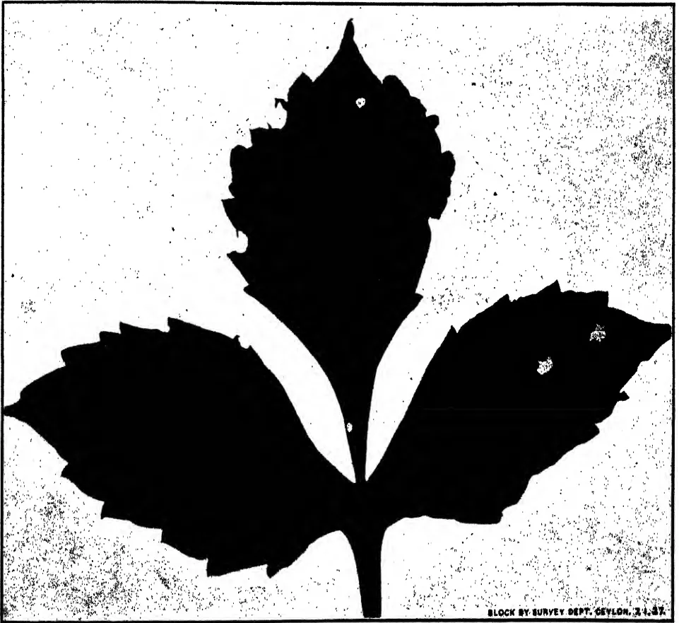
BLOCK BY SURVEY DEPT. CEYLON. 3.1.37.
A New Disease of the Dahlia
This image is a blank white page. It contains several small, dark specks which appear to be scanning artifacts or dust particles. There is no text, handwriting, or printed content on the page. 123should therefore be looked upon as the source from which the disease reappears each season. Cactus Dahlias are said to be more susceptible to attack than Pompons; and, while no varieties derived from Dahlia variabilis are known to be absolutely immune, yet those derived from D. Merckii have apparently remained free from the disease.
Entyloma dahliae was first found by Pole Evans, in Natal, in 1911, on D. variabilis, and it was described and named by H. and P. Sydow in 1912. Its presence in Europe was first detected by Stermon, in Belgium, in 1918. It was noted in Holland in 1920, in France in 1922 or 1923, in Germany in 1924, and Czechoslovakia in 1926. It appears to have been seen in England at least a year ago, for, according to information received, it was sent to Mr. J. Ramsbottom from Worpleston in 1927; but up to now its presence does not appear to have been recorded by publication.
The first specimens of the disease that the present writer had the opportunity of inspecting were received at the Ministry of Agriculture's Plant Pathological Laboratory in August last from Mr. J. Rees, Adviser in Agricultural Botany, University College, Cardiff; and they were obtained from the Duffryn Gardens, St. Nicholas, Glamorganshire. It was stated that the disease had been present there for the past two or three years, and appeared to be causing considerable damage. A second case was reported in September last by Mr. W. Buddin, adviser in Mycology at the University of Reading, who had diagnosed it on plants submitted to him by Mr. A. J. Cobb, University Lecturer in Horticulture, from Shinfield, near Reading. Doubtless it exists in other centres and, attention having once been aroused, the disease will probably be recognised in them and dealt with.
The object of the present note, indeed, is to direct attention to this new disease, so that it may be dealt with so promptly as possible, if and when it puts in an appearance. The situation at present cannot be described as alarming, but it would certainly appear that the disease is capable of causing much trouble, and if it can be "nipped in the bud," so much the better. The method of controlling it is the old-fashioned and often despised one of collecting and destroying (preferably by fire) all the spotted leaves, including any that may remain attached to the plants when lifted for winter storage, since they contain the resting spores of the fungus. Those who do not apply this simple rule of garden hygiene in their work must not be surprised if the disease, like others, gets out of hand with them.
No exact experimental attempt to combat the disease directly by spraying appear to have been made, but, in Germany, spraying with Bordeaux mixture, or with lime-sulphur solution, has been recommended. Such spraying should be carried out at intervals during spring and early summer, and preferably after removal and destruction of any spotted leaves that may be present. Liming and digging the soil deeply have also been recommended, while Dahlias should be planted so early as is feasible and safe in an open, airy situation,
124avoiding over-crowding, and in a position so far removed as possible from one in which the Entyloma disease may have appeared during the previous season.
(Note.—Since the above article was written, workers in England have shown that the disease can be controlled by spraying with a standard fungicide, such as Bordeaux mixture or lime-sulphur. In Ceylon, where the seasonal variation of temperature is not so marked as in temperate climates, spraying would be necessary throughout the year, if the disease were once established and if the growers wished to keep it completely controlled. Growers of dahlias, therefore, are warned to keep a sharp look-out for the disease and, should it appear, are requested to inform the Mycologist, Department of Agriculture, Peradeniya, who will be pleased to assist them to stamp out the disease before it becomes too widespread to be eradicated easily.—M.P.).
125Teldeniya,
29th January, 1937.
The Editor,
Tropical Agriculturist,
Peradeniya.
Dear Sir,
We now hear a great deal about Roselle. Can you please give some notes on its cultivation? What are the districts most suited to extensive cultivation of Roselle?
Thanking you,
Yours faithfully,
U. B. Ellepola.
Supplies of this product from established sources have brought the market to saturation point and in the circumstances the Research Committee of the Agricultural Department has advised the Director not to proceed with experiments with the production of this article.
126Minutes of the thirty-fifth meeting of the Board of Management held (by courtesy of Mr. C. H. Collins, C.C.S.) in the office of the Deputy Financial Secretary, New Secretariat, Colombo, on Thursday, December 10, 1936.
Present.—Mr. E. Rodrigo, Acting Director of Agriculture, in the Chair. Messrs. C. H. Collins, C.C.S., Treasury Representative, O. B. M. Cheyne, A. R. Ekanayake, D. D. Karunaratne, J.P., Wace de Niese, H. M. Peries, G. Panditsekere, J.P., U.P.M., Gate Mudaliyar A. E. Rajapakse, O.B.E., M.S.C., Dr. R. Child, Director of Research, acted as Secretary.
The minutes of the previous meeting held on October 2, 1936, which had been circulated to Board Members were confirmed.
(a) Technical Assistant to Technological Chemist.—The Board unanimously accepted the recommendation of the Director of Research that Mr. Mylvaganam, B.Sc., be appointed to the vacant post of Technical Assistant to the Technological Chemist.
(b) New Field Assistant.—It was agreed to advertise this vacancy at once.
The statement of Receipts and Payments for the quarter ended September 30, 1936, was approved.
The minutes of the three meetings held by this Sub-Committee on November 6, 20 and 30 had been circulated to all members of the Board of Management. These minutes included all of the Sub-Committee's recommendations.
New Building for Battery Room and Store.—It was decided to accept the Sub-Committee's recommendation that a building be erected to include a battery room, two large stores and an office for the Estate Superintendent and a Supplementary Estimate under Capital Expenditure A was sanctioned for 1937.
It was decided that tenders should be called for as early as possible. The Chairman was authorised to advertise for tenders as soon as the plan and
127specifications were available, and to communicate them to the Board of Management for selection.
Bicycle Shed for Junior Staff.—The Director of Research was authorised to prepare an estimate for this item for consideration at the next meeting of the Board of Management.
Hostel for Staff and Students.—The Board agreed with the Sub-Committee that no action should be taken with this item until any clear necessity arose for its further consideration.
Other items of the Sub-Committee's report were held over.
This committee held a meeting on November 20, 1936, and the minutes of this meeting had been circulated to all members of the Board.
The Chairman said that he thought that, following the Sub-Committee's recommendations, Mr. Samarakkody's suggestion need not be considered further. The Board concurred.
Dr. Child reported that the Geneticist and Soil Chemist had visited another area mentioned in Hettipola, and were of opinion it was not suitable for experimental purposes owing to its distance from Bandirippuwa Estate.
The Chairman said that it seemed necessary therefore to return to the consideration of Rutmalagara Estate. It was decided to follow the Sub-Committee's recommendation that an independent valuation should be obtained.
Mr. De Niese was afraid that the establishment of the Scheme's second station also in the Chilaw area might cause some dissatisfaction in the other coconut districts in the Island, particularly in Kurunegala. The Board thought, however, that convenience of administration from Bandirippuwa, in view of the comparatively limited staff and resources of the Scheme, should outweigh other considerations. At the same time the Staff should not overlook Mr. Wace de Niese's point and as much attention as possible should be given to all coconut districts.
The Estate Progress Reports for September, October and November, 1936, were approved by the Board.
The Chairman said that both he and the Director of Research felt that meetings of the Board of Management had hitherto been too much confined to purely financial and administrative details, and that the Board should be given more opportunity at these meetings to discuss and take a direct part in the experimental policy of the Scheme. The Director of Research, he continued, was of opinion that the technical staff would welcome the interest and co-operation of the Board in their work, and he himself thought that it
128would be desirable for every major experiment to be approved by the Board before its initiation and reported on from time to time. As a preliminary to this policy the Director of Research had prepared a statement, which was tabled, of the publications of the Scheme to date and he would present for discussion at the next meeting a statement of the major experiments in progress or contemplated. The Chairman continued that it was hoped that the Board Members would thus feel that they were not concerned merely with passing the necessary financial resolutions, but also with exercising their function of deciding the technical policy of the Scheme.
Dr. Child, in connection with the publications of the Scheme, said that it was his opinion, as the Scheme's Director of Research that the Scheme is somewhat too small to undertake the regular publication of a journal of its own, and the policy had been to publish articles in "The Tropical Agriculturist" and elsewhere and to issue reprints of these articles. The publication of a series of popular leaflets had been recently commenced, and also of a series of notes in "The Tropical Agriculturist" on matters of interest which could not be incorporated in longer articles. Occasional bulletins are published when the matter cannot be compressed into a leaflet.
Dr. Peries remarked and the Board agreed that the publication of a regular bulletin would be hardly practicable. Mr. Cheyne enquired upon what principle publications were sent out. Dr. Child said that publications were sent to all bona fide enquirers who registered their names; at present the mailing list approached 200. With particular reference to the leaflets, he said, the Press had been very good in giving publicity to the series. Mr. Cheyne and other members thought that further useful distribution of publications could be obtained by a paid advertisement in the Press, particularly in the case of vernacular versions of the leaflets in the Vernacular Press. Further the Government Agents and the Divisional Agricultural Associations would be useful means of approach. Dr. Child said that he had taken notice of these suggestions and would do all he could to ensure as wide a sphere of usefulness as possible for publications of the Scheme.
Mr. Pieris' Booklet.—At Dr. Child's suggestion, the Board approved that Mr. Pieris should be allowed 25 free copies of his booklet for his personal use, and also expressed their willingness to agree to a further personal allowance if Mr. Pieris wished. The Director of Research was authorised to send complimentary copies at his discretion to official bodies in Ceylon and overseas with whom the Scheme was on exchange terms.
The Board decided to fix a price of Re. 1.50 (2/3 English currency) for the booklet. Some discussion took place on means of publicity from the booklet. Dr. Child said that copies had been sent to the Press, who had given good notices. Mr. Cheyne thought that here again a paid advertisement would be useful; other suggestions were made, including an approach to hotels where the booklet might be brought to the notice of tourists, and the Board agreed that in all cases they would be willing to allow the usual trade discount.
129Dr. Child was authorised to act on the suggestions made and undertook to ensure as much publicity as possible.
Mr. Wace de Niese desired it to go on record that the Ceylon Coconut Board had agreed to meet a share of the cost of publication. The Director of Research said that he had written to the Manager of the Coconut Board in September saying that, in his opinion, it would be more satisfactory if sole publication was undertaken by one body, and that receiving no comment on this part of his letter, he had assumed that this met with the approval of the Coconut Board. He thought it likely that the Coconut Research Scheme Board would be willing to allow the Coconut Board as many copies as they required for the cost of publication and the final result would be the same financially as if joint publication by the two bodies had been undertaken.
Sale of seed-nuts and seedlings.—The Director of Research said that he thought it advisable to increase the price of seed-nuts and seedlings from January 1, 1937, in view of the fact that the present prices had originally been decided upon when copra prices were considerably lower. In the case of seedlings such careful selection was done in the nursery that approximately only 50 per cent. of the nuts put down in the nursery were ultimately sold as seedlings and the present price of 15 cents each was clearly disproportionately low.
It was unanimously decided to increase prices from January 1, 1937 to 10 cents per seed-nut and 20 cents per seedling. Prices for enquirers outside Ceylon were unaltered.
Manurial Experiments.—The Chairman said that the Director of Research had raised one or two points involved when experiments were contemplated on property other than the Scheme's own land. The Scheme would in such cases have to undertake any extra expenses involved in fencing the blocks, marking the trees, weighing nuts, etc. but the actual cost of fertilizers was in a somewhat different category, and the suggestion had been made by the Director of Research that, since the Estate presumably obtained the benefit of any fertilizers applied, it would not be unreasonable to propose that the expense on fertilizers should be shared equally by the Scheme and the Estate.
Further it would be advisable to get an undertaking once an experiment had been commenced on an outside Estate, that it would be allowed to continue for at least four years and that the records should be kept confidential pending the Scheme's publication.
Mr. Cheyne suggested that it would be useful before the Board came to any decision on these matters if Dr. Child could obtain the views of the planters which could well be done by discussion at meetings of various Planters' Associations. The Board considered this a good suggestion and Dr. Child undertook to consult the Planters' Associations and later to bring the matter again before the Board.
130THE last issue of the Empire Journal of Experimental Agriculture* contains an article by R. C. Wood of the Imperial College of Tropical Agriculture, Trinidad, on the subject of "Village Waste." In this is described the experimental work done in Trinidad on the utilisation of village refuse for compost manufacture on lines similar to those adopted in India and more recently in Ceylon. The present method differs from its predecessors in the respect that the activator used is partially-decomposed refuse and not cattle manure or night soil. The raw material consisted of house garbage, street refuse and hedge trimmings.
The process was briefly as follows : The refuse was carted to a central depot where inert material like tins and iron utensils, bottles, etc. which formed a large proportion of the mass was picked out and buried in deep pits. The residue was then well mixed with its own bulk of material which had been decomposing for at least a week and made into heaps on either side of a central track 12 ft. wide. Every subsequent week each heap was divided ; one half was transferred to a second row of heaps and the other mixed with fresh material. Material from the second row of heaps was in turn transferred to a third row of heaps, whence it was carted to a dump where it was allowed to undergo further decomposition. The essential stages of the manufacture were completed in four weeks. Water was added to keep the heaps moist and to promote decomposition when the rainfall was insufficient.
The disadvantage of the system is that the depot occupies a considerable area, but this is unavoidable as too large heaps retard decomposition.
From 988 tons of rubbish about 15 per cent. or 159 tons of finished or partially-finished compost were obtained. There was a great variation in the quality of the compost. On the average, its analysis was as follows : 19 per cent. organic matter, 25 per cent. moisture and 28 per cent. ash (largely sand). The nitrogen, potash and phosphoric acid contents were respectively .71, .62 and .36 per cent. on oven-dry material. These analytical figures are similar to those of street refuse compost made in Ceylon without night soil.
The cost of production of this compost, which would have been reduced had the work been done on a larger scale, worked out a higher figure than
*Wood, R.C., Village Waste. Emp. Journ. Expt. Agr. Vol. IV, No. 16, pp. 357-364, October, 1936.
131what it was worth, reckoned purely on its manurial ingredients. The value of the compost is however considerably greater than this, for being a bulky organic manure, it is very desirable under tropical conditions as a supplement to artificial fertilisers.
From the standpoint of sanitary requirements, this system of composting was quite satisfactory as the fly nuisance was very much reduced (though not entirely eliminated) and no complaint was received of objectionable smells.
In a note to this article, R. D. Anstead refers to the great utility of the trials and discusses the question of cost of manufacture in relation to the value of the compost based on its fertilising constituents.—A.W.R.J.
132ANIMAL DISEASE RETURN FOR THE MONTH
ENDED JANUARY, 1937.
| Province, &c. | Disease | No. of Cases up to date since Jan. 1st, 1937 | Fresh Cases | Recoveries | Deaths | Balance Ill | No. Shot |
|---|---|---|---|---|---|---|---|
| Western | Rinderpest | .. | .. | .. | .. | .. | .. |
| Foot-and-mouth disease | 18 | 18 | 8 | .. | 10 | .. | |
| Anthrax | .. | .. | .. | .. | .. | .. | |
| Rabies | 2 | 2 | .. | .. | .. | 2 | |
| Colombo Municipality | Rinderpest | .. | .. | .. | .. | .. | .. |
| Foot-and-mouth disease | 8 | 8 | .. | 1 | 7 | .. | |
| Anthrax | 7 | 7 | .. | 7 | .. | .. | |
| Rabies | 2 | 2 | .. | 2 | .. | .. | |
| Cattle Quarantine Station | Rinderpest | .. | .. | .. | .. | .. | .. |
| Foot-and-mouth disease | .. | .. | .. | .. | .. | .. | |
| Anthrax | 2 | 2 | .. | 2 | .. | .. | |
| Central | Rinderpest | .. | .. | .. | .. | .. | .. |
| Foot-and-mouth disease | 64 | 64 | 9 | 1 | 54 | .. | |
| Anthrax | .. | .. | .. | .. | .. | .. | |
| Piroplasmosis | 1 | 1 | .. | 1 | .. | .. | |
| Southern | Rinderpest | .. | .. | .. | .. | .. | .. |
| Foot-and-mouth disease | .. | .. | .. | .. | .. | .. | |
| Anthrax | .. | .. | .. | .. | .. | .. | |
| Northern | Rinderpest | .. | .. | .. | .. | .. | .. |
| Foot-and-mouth disease | 306 | 306 | 104 | 14 | 188 | .. | |
| Anthrax | .. | .. | .. | .. | .. | .. | |
| Eastern | Rinderpest | .. | .. | .. | .. | .. | .. |
| Foot-and-mouth disease | 61 | 61 | 61 | .. | .. | .. | |
| Anthrax | .. | .. | .. | .. | .. | .. | |
| North-Western | Rinderpest | 7 | .. | .. | .. | .. | .. |
| Foot-and-mouth disease | .. | .. | .. | .. | .. | .. | |
| Anthrax | .. | .. | .. | .. | .. | .. | |
| Rabies | 2 | 2 | .. | .. | .. | 2 | |
| North-Central | Rinderpest | .. | .. | .. | .. | .. | .. |
| Foot-and-mouth disease | .. | .. | .. | .. | .. | .. | |
| Anthrax | 22 | 22 | 18 | .. | 4 | .. | |
| Uva | Rinderpest | .. | .. | .. | .. | .. | .. |
| Foot-and-mouth disease | .. | .. | .. | .. | .. | .. | |
| Anthrax | 80 | 80 | 42 | 3 | 35 | .. | |
| Sabaragamuwa | Rinderpest | .. | .. | .. | .. | .. | .. |
| Foot-and-mouth disease | .. | .. | .. | .. | .. | .. | |
| Anthrax | .. | .. | .. | .. | .. | .. | |
| Piroplasmosis | 4 | 4 | 1 | 1 | 2 | .. |
Department of Agriculture,
Peradeniya, 23rd February, 1937
M. CRAWFORD,
Deputy Director of Agriculture (Animal Husbandry) & Government Veterinary Surgeon
| STATION | TEMPERATURE | HUMIDITY | Amount of Cloud | RAINFALL | ||||||
|---|---|---|---|---|---|---|---|---|---|---|
| Mean Maximum | Difference from Average | Mean Minimum | Difference from Average | Day | Night (from Minimum) | Amount | No. of Rainy Days | Difference from Average | ||
| ° | ° | ° | ° | % | % | Ins. | Ins. | |||
| Colombo | 85.5 | -0.7 | 73.0 | +1.1 | 72 | 88 | 5.6 | 3.43 | 14 | -0.60 |
| Puttalam | 84.5 | -0.9 | 70.7 | +0.6 | 76 | 95 | 5.4 | 3.85 | 15 | +0.27 |
| Mannar | 83.0 | -0.8 | 74.7 | +0.6 | 76 | 84 | 4.4 | 3.71 | 11 | -0.25 |
| Jaffna | 83.1 | +0.3 | 72.5 | +0.3 | 69 | 85 | 7.0 | 3.36 | 11 | -0.98 |
| Trincomalee | 80.5 | 0 | 75.6 | +0.6 | 77 | 79 | 6.6 | 8.77 | 17 | +0.07 |
| Batticaloa | 81.7 | +0.4 | 74.1 | +0.6 | 75 | 86 | 5.7 | 15.09 | 18 | +1.32 |
| Hambantota | 84.8 | +0.3 | 72.6 | 0 | 76 | 90 | 4.5 | 6.75 | 13 | +3.05 |
| Galle | 83.5 | -0.5 | 73.3 | +0.5 | 76 | 88 | 5.4 | 3.90 | 12 | +0.26 |
| Ratnapura | 88.7 | -0.3 | 71.7 | +0.6 | 72 | 95 | 5.8 | 8.29 | 16 | +1.82 |
| Anuradhapura | 81.4 | -1.2 | 70.6 | +1.3 | 71 | 95 | 6.7 | 8.28 | 16 | +2.57 |
| Kurunegala | 85.7 | -0.5 | 70.4 | +0.6 | 71 | 93 | 5.0 | 8.56 | 13 | +3.69 |
| Kandy | 83.1 | +0.7 | 67.7 | +0.4 | 72 | 90 | 5.4 | 9.14 | 16 | +2.48 |
| Badulla | 76.3 | +0.3 | 65.3 | +1.7 | 78 | 92 | 6.6 | 9.71 | 19 | -0.84 |
| Diyatalawa | 72.0 | +0.7 | 58.1 | +0.5 | 85 | 97 | 6.3 | 6.40 | 17 | +0.06 |
| Hakgala | 36.5 | +0.7 | 52.0 | -0.2 | 86 | 94 | 7.8 | 13.96 | 23 | +1.83 |
| Nuwara Eliya | 38.8 | +1.5 | 47.8 | +1.0 | 76 | 93 | 7.8 | 10.39 | 17 | +3.65 |
The rainfall of January was appreciably above normal on the northern and north-eastern slopes of the hills, and in the extreme south-western corner of the Island. The excesses reported, however, rarely exceeded 5 inches, except on the north-eastern slopes of the Knuckles range, where Dooroomadella was 26.44 inches above average, and other stations generally reported excesses of 5 to 20 inches. A few stations on the south-east coast also reported excesses of 5 to 10 inches. In the remainder of the Island excesses and deficits were both generally small, deficits predominating in the north.
The highest monthly totals reported were 53.11 inches at Hendon, 52.77 inches at Dooroomadella, and 50.60 inches at Upper St. Martin's.
60 daily falls of over 5 inches in a day were reported, most of them for the 15th or 19th, and on or near the north-eastern slopes of the hills. The highest daily fall reported was 11.30 inches, at Hendon, on the 19th, and daily falls of 10 inches or over were also reported from eight other stations, nearly all for the 15th or 19th.
During the greater part of January the weather remained of the usual north-east monsoon type, with monsoon rains in the east and north-east of Ceylon, and local rains, sometimes accompanied by thunder, in the lee of the hills. There was particularly heavy widespread rain, on both sides of the hills, but particularly on their eastern and north-eastern slopes, on the 15th and 19th. About the 21st the weather changed, and a dry spell set in. Humidity was low, and there was very little rain reported, while, as a result of the increased radiation at night, night temperatures were appreciably below normal, particularly in the hills, ground frost being reported at Nuwara Eliya on several occasions. These conditions lasted until the 28th, after which conditions reverted to the usual north-east monsoon type, with increased humidity and rainfall.
Mean temperatures for the month were generally about normal by day, and a little above normal by night. Mean humidities showed no marked deviations from normal, while cloud was a little above normal. Barometric pressure was below normal, the gradient being a little steeper than usual, while winds at the coast were generally a little above normal. Wind directions were generally N.E. to N.N.E.
H. JAMESON,
Superintendent, Observatory.
VOL. LXXXVIII
PERADENIYA, MARCH, 1937
No. 3
| Page | |
|---|---|
| Editorial .. .. . | 135 |
| Ceylon Estate Copra. By R. Child, F.I.C., B.Sc., Ph.D. (Lond.) | 137 |
| Agricultural Implements—IV. By C. R. Karunaratne, Dip. Agric. (Poona) .. .. . | 150 |
| Some Studies on Tobacco Diseases in Ceylon—I. By M. Park, A.R.C.S. and M. Fernando, Ph.D., B.Sc., D.I.C. .. .. . | 153 |
| The Case for Replanting of Old Rubber Estates. By H. M. Stratford | 169 |
| Notes on Orchids Cultivated in Ceylon. Phalaenopsis Amabilis Blume By Edward Perera .. .. . | 172 |
| The Manuring of Paddy in Ceylon .. .. . | 174 |
| Soil Erosion .. .. . | 177 |
| The Role of Insects and Fungi in Agriculture .. .. . | 180 |
| The Pest and the Plant .. .. . | 185 |
| Rejoinder—Rotation Cultivation in the Wanni of Ceylon .. .. . | 187 |
| Minutes of Meeting of the Board of the Tea Research Institute of Ceylon .. .. . | 188 |
| The South American Potatoes and their Breeding Value .. .. . | 192 |
| The Experimental Production of Haploids and Polyploids .. .. . | 193 |
| "Loris"—A Journal of Ceylon Wild Life .. .. . | 194 |
| Animal Disease Return for the month ended February, 1937 .. .. . | 196 |
| Meteorological Report for the month ended February, 1937 .. .. . | 197 |
(Established under Ordinance No. 10 of 1930)
Bulletins, Quarterly Circulars and leaflets published by the Rubber Research Scheme will be issued without charge to the Proprietors (resident in Ceylon), Superintendents and local Agents of Rubber estates in Ceylon over 10 acres in extent, if application is made to the address given below stating the name, size and registered number of the estate. Annual renewal of application is not now required.
(Application need not be renewed in respect of estates already registered for 1936 or 1937).
The Director,
Rubber Research Scheme,
Dartonfield,
Agalawatte.
NO MIXING • NO WATER • NO MESS
SPRAY POWDER
FOR PESTS!
LESS LABOUR • LESS EXPENSE
March, 1937
THE article on the present position of the trade in Ceylon citronella oil by Dr. A. W. R. Joachim which appeared in the last number of this Journal merits something more than passing notice from our readers. The production of this commodity for export is one of the most important minor agricultural industries of the Island, and its importance is enhanced by the concentration in one small area in the Southern Province of the whole industry which brought Rs. 686,000 to the producers in a very lean year like 1935.
The progressive fall in prices has alarmed the growers of the citronella grass and, during the last three years, they have maintained a persistent agitation for the establishment of a citronella experimental station by the Government to investigate the possibility of turning out a superior quality of oil which would command a higher price in the world market. The expression "superior quality" in this connection is used to connote a higher geraniol content in the oil. The methods suggested from time to time for raising the quality of the oil brought to the market are the enforcement of severe legislative measures against adulteration and the introduction and acclimatization of the variety of grass, locally known as Mahapengiri, which has been found to yield an oil with a high percentage of geraniol in Java.
136While admitting that some degree of adulteration does take place, Dr. Joachim raises the question whether anything would be gained by preventing this. It would appear that the trade divides citronella oil into two definite classes—oil with a high geraniol content and oil of fair average quality, commonly known as f.a.q. The uses to which the two grades are put are so distinct that they may be regarded as two unrelated commodities. F.a.q. is determined by a prescribed test. Oils that do not pass this test are rejected ; oils that do pass it are not graded in different classes. Attempts have been made from time to time to introduce to the market an estate product of guaranteed purity which contains a higher percentage of geraniol than the f.a.q., but not so much as the superior grade. The reply of the exporters was : “ This is excellent oil ; but this excellence is not demanded by the consumer, and therefore we cannot pay more for it than for f.a.q.” Therefore what the dissatisfied citronella planter seeks is not an improvement in the quality of the oil they now produce, but the production of an oil which will enable them to compete with the Java grower in the market in the higher grade.
It is taken for granted that these superior oils cannot be produced from the variety of grass, commonly known as Lena-batu, which is grown in this country. It remains to decide whether a determined effort should be made to introduce Mahapengiri or the Java variety. Dr. Joachim does not advise that such a step be taken. The Mahapengiri requires a richer soil than is commonly found in Ceylon and more intensive methods of cultivation than the Lena-batu now receives or the growers can be expected to practise. It has a shorter age than Lena-batu and lends itself to less frequent harvesting. These disadvantages more than counterbalance the small difference in the present prices. Even that difference will not be maintained if the Ceylon grower abandons the production of f.a.q. and enters into competition with the Java exporters.
These considerations point to the conclusion that the future of the citronella oil industry lies in the better cultivation of the Lena-batu, and in greater care exercised in the extraction of the oil. It is for Government to decide whether it should establish a research station to investigate these minor cultural and manufacturing improvements which should not be beyond the capacity of individual citronella planters,
137R. CHILD, F.I.C., B.Sc., Ph.D. (Lond.),
DIRECTOR OF RESEARCH AND TECHNOLOGICAL CHEMIST,
COCONUT RESEARCH SCHEME
RECORDED oil percentages of copra from various producing countries are very variable, and standard textbooks quote a range of from 57 to 75 per cent. The sources of these figures vary in reliability and in many cases are far from representative. Cooke (1) has pointed out that copra badly deteriorated through mould attack may give an abnormally high yield of (inferior) oil. This is ascribed to the fact that moulds first attack the inside of the pieces where the oil content is lowest. Many of the high figures in the earlier literature may refer to such low grade copra. Lewkowitsch (2), for example, mentions the high acid values of copra oils examined by him in the early 1900's.
Unusually low figures for oil, on the other hand, often refer to analyses of small samples, and in such cases the nuts from which the copra was derived may have been immature. This is obviously the case with analyses of samples from Queensland reported in 1916 (3).
Nevertheless definite variations do occur, apart from such causes as the foregoing, and, whilst no definite conclusions can be drawn from the data available on any possible influence on oil content of such factors as climate (in its widest sense), soil type, manurial treatment, and genetic differences, it is possible to detect some regularities. Thus Cooke (4) gives the following table of oil content of copra and nut size for various countries, which appears to relate the oil percentage inversely to size of nut, the smallest dwarf nuts giving the highest percentage oil yield. A recent analysis of copra from dwarf Maldivé nuts by Child (5) gives some support to this view.
138TABLE I.(From Cooke, "The Coconut Industry of the Philippine Islands," 1936, p. 93).
OIL CONTENT OF COPRA AND NUT SIZE FOR VARIOUS COUNTRIES| Country | Approximate Oil Content |
Number of nuts per Ton of Copra |
|---|---|---|
| Trinidad Cocos Islands |
} 70 .. High—possibly | 10,000 |
| Malabar Zanzibar West Indies |
} 69 .. Various—Average | 6,250 |
| Ceylon West Africa |
} 68 .. About | 4,800 |
| South Seas Java |
} 67 | |
| Philippines Straits Netherlands Indies |
} 66 .. About | 4,500 |
| ,, 4,500 |
For Malayan Estate Copra there is fortunately on record a fairly comprehensive set of analyses by Georgi (6). It seemed desirable to carry out a similar comparative set of determinations on Ceylon Estate Copra. Seven estates in different parts of the Island have kindly co-operated to make this possible—their situations are as follows: two in the Western Province (Mirigama and Kalutara districts respectively), three in the North-Western Province (Puttalam, Chilaw and Kurunegala districts respectively) and one each in the Eastern and Southern Provinces. As is well known, the common practice in Ceylon is to pluck every two months, and the co-operating estates have accordingly sent samples from every curing during the year from November, 1935 to October, 1936, except for one Superintendent who varies the usual practice by plucking monthly and who accordingly has sent twelve monthly samples.
Under "Miscellaneous" are included four samples as follows: two random samples from estates not included in the original seven, and two samples taken from bulk in Colombo stores.
139SAMPLING AND ANALYSISIt was desired to make the present determinations strictly comparable with those of Georgi (loc. cit.) and his methods were accordingly followed as far as possible.
Samples of about fifty halves drawn from bulk were received here and the examination commenced immediately on receipt.* Georgi's method of reduction of the sample for analysis, viz., cutting transverse slices from each individual piece was followed and was found to give concordant results on duplicates, which were also in good agreement with those given by a method previously used in which small pieces are punched out with a cork-borer.
Drying.—The observation on the browning of the thin copra slices when dried at 100°C. was confirmed. The loss of weight on so drying, as Georgi remarks, may not accurately represent the true moisture content, but can be regarded as a measure of it, and the present figures are comparable among themselves and with Georgi's.
Extraction.—The extraction method employed differed only from Georgi's in the use of a Bolton-Revis extractor instead of a Soxhlet apparatus. This somewhat expedites extraction. Both methods are a sufficiently close approximation to that recommended by Allen and Auerbach (7). Light Petroleum (B. Pt. 40-60°C.) is the most satisfactory solvent for oil extraction, although some duplicate extractions with "Analar" Ether indicated that the use of the latter solvent introduced no serious error in the case of copra analysis.
Iodine values, (by Wijs' method), saponification values and percentage free fatty acid (as lauric) were determined on all the extracted oil samples. All determinations were carried out in duplicate.
RESULTSThe results are summarised in the following tables. Table II shows for each estate the maximum, minimum and average values for moisture content, oil content (both wet and dry basis)
* It should be noted that the samples were in transit for different lengths of time depending on the distance of the producing estate from the Coconut Research Scheme laboratories and the convenience or otherwise for rail transport. Thus consistently higher moisture percentages are recorded for the Estate (No. 3) situated nearest. Too much should not be made, therefore, of the differences in the average moisture content between copra from one estate and that from another
140TABLE II
ANALYSES OF CEYLON ESTATE COPRA
1935-1936
| No. of Estate | Province | No. of Samples | % MOISTURE | % OIL | % OIL (Dry Weight) | OIL. Average values for: | ||||||||
|---|---|---|---|---|---|---|---|---|---|---|---|---|---|---|
| Max. | Min. | Average | Max. | Min. | Average | Max. | Min. | Average | Iodine Value | Saponification Value | F.f.a. (lauric %) | |||
| 1 | W.P. .. | 6 | 7.4 | 5.1 | 6.5 | 65.5 | 62.8 | 64.1 | 69.2 | 67.8 | 68.5 | 8.2 | 258.6 | 0.07 |
| 2. | E.P. .. | 6 | 7.4 | 5.8 | 6.8 | 64.8 | 63.2 | 63.9 | 69.5 | 67.9 | 68.6 | 8.0 | 256.8 | 0.07 |
| 3. | N.W.P. .. | 6 | 8.9 | 7.4 | 8.2 | 63.8 | 61.3 | 62.3 | 69.0 | 66.5 | 67.8 | 8.2 | 256.9 | 0.06 |
| 4. | W.P. .. | 12 | 8.1 | 5.6 | 7.1 | 65.0 | 61.7 | 63.0 | 69.1 | 66.5 | 67.8 | 8.2 | 259.4 | 0.06 |
| 5. | N.W.P. .. | 6 | 6.8 | 6.0 | 6.4 | 65.0 | 63.1 | 64.3 | 69.3 | 67.5 | 68.6 | 8.0 | 259.8 | 0.05 |
| 6. | S.P. .. | 6 | 7.9 | 5.6 | 6.4 | 65.4 | 63.4 | 64.4 | 69.7 | 68.1 | 68.8 | 8.3 | 261.1 | 0.05 |
| 7. | N.W.P. .. | 6 | 7.2 | 5.2 | 6.1 | 65.3 | 62.9 | 64.3 | 69.0 | 67.6 | 68.5 | 8.2 | 260.4 | 0.05 |
| Miscellaneous | 4 | 7.9 | 4.5 | 6.3 | 65.3 | 62.0 | 63.9 | 69.2 | 66.7 | 68.2 | 8.0 | 258.9 | 0.15 | |
| Total | .. | 52 | 8.9 | 4.5 | 6.8 | 65.5 | 61.3 | 63.7 | 69.7 | 66.5 | 68.3 | 8.16 | 259.1 | 0.06 |
and the average figures for the Iodine values, saponification values and free fatty acid percentages of the extracted oils. Tables IIIa and IIIb show respectively all the moisture and oil (dry basis) determinations arranged in groups having successive ranges of one per cent. with the Malayan figures (Georgi, loc. cit.) for comparison. Table IV shows the average values for moisture content, oil content (dry basis) and Iodine value, arranged in groups according to the time of plucking the nuts. Table IVb is the same omitting the estates in the Eastern and Southern Provinces.
TABLE III| Group | (a) Moisture % | (b) Oil % (dry basis) | ||||
|---|---|---|---|---|---|---|
| No. of Determinations | Group | No. of Determinations | ||||
| Ceylon | Malaya | Ceylon | Malaya | |||
| 4- 5% | .. 1 | 7 .. | 62-63% | .. 0 | 1 | |
| 5- 6% | .. 11 | 6 .. | 63-64% | .. 0 | 5 | |
| 6- 7% | .. 21 | 19 .. | 64-65% | .. 0 | 14 | |
| 7- 8% | .. 14 | 19 .. | 65-66% | .. 0 | 14 | |
| 8- 9% | .. 5 | 10 .. | 66-67% | .. 4 | 25 | |
| 9-10% | .. 0 | 1 .. | 67-68% | .. 14 | 3 | |
| 68-69% | .. 24 | 0 | ||||
| 69-70% | .. 10 | 0 | ||||
| Total | .. 52 | 62 | Total | .. 52 | 62 | |
(a) ALL ESTATES
| Dates of Plucking | No. of Samples | Average Moisture % | Average Oil % (dry basis) | Average Iodine Value |
|---|---|---|---|---|
| 1935 Sept.-Oct. | .. 3 | 7.3 | 68.0 | 8.0 |
| „ Nov.-Dec. | .. 8 | 6.8 | 68.7 | 8.4 |
| 1936 Jan.-Feb. | .. 9 | 6.2 | 68.2 | 8.4 |
| „ Mar.-April | .. 8 | 6.7 | 68.5 | 8.0 |
| „ May-June | .. 8 | 6.6 | 68.4 | 8.3 |
| „ July-Aug. | .. 8 | 7.2 | 68.0 | 7.8 |
| „ Sept.-Oct. | .. 6 | 7.3 | 68.3 | 7.9 |
| Total | .. 50 | 6.8 | 68.3 | 8.15 |
| Dates of Plucking | No. of Samples | Average Moisture % | Average oil % (dry basis) | Average Iodine Value |
|---|---|---|---|---|
| 1935 Sept.-Oct. | .. 2 | 7.4 | 67.6 | 8.1 |
| „ Nov.-Dec. | .. 6 | 6.6 | 68.6 | 8.5 |
| 1936 Jan.-Feb. | .. 7 | 6.2 | 68.2 | 8.4 |
| „ Mar.-April | .. 6 | 6.8 | 68.3 | 8.05 |
| „ May-June | .. 6 | 6.7 | 68.4 | 8.3 |
| „ July-Aug. | .. 6 | 7.5 | 67.9 | 7.8 |
| „ Sept.-Oct. | .. 5 | 7.6 | 68.0 | 7.9 |
| Total | .. 38 | 6.9 | 68.2 | 8.14 |
It may be said at once that no definite variation in the percentage oil content of the copra with the situation of the estate can be established from these results. Even the maximum difference observed, that between estates Nos. 3 and 6, does not appear to be statistically significant. For the 52 samples the following statistical constants were obtained :—
| Mean percentage of oil | .. | 68.30 |
| Standard deviation | .. | 0.764 |
| Standard error of the mean | .. | 0.106 |
| Coefficient of variation | .. | 1.119 |
These figures indicate that the value 68.30 is a reasonably accurate one for the average dry weight oil percentage of Ceylon Estate copra. The group table IIIb confirms this, 38 out of 52 samples (i.e., 73%) falling in the two groups 67-68 and 68-69%.
The lack of definite variation in the oil percentages is all the more surprising since there has been an impression that copra from the Batticaloa District (Eastern Province) has a definitely lower oil content than that from the western side of the Island; further, the Eastern Province nuts are known to be larger on the average and, if oil content is inversely correlated with nut size, might be expected to show a lower oil percentage.
Neither is it possible from the figures recorded here to establish any relation of oil content to the time of year at which
143the nuts are plucked—see table IVa and b—even when, as in table IVb, consideration is given only to estates situated on the western side of the Island, which are subject to more or less the same weather cycle. The moisture content naturally shows a tendency to be higher in the wetter seasons.
It was less unexpected to find little variation in the composition of the extracted oils, as indicated by their Iodine and saponification values, since coconut oil is one of the least variable of the commercial fats. For example, Allen and Moore (8), working in 1925 in the Research Laboratories of Messrs J. Crossfield and Sons, Ltd., Warrington, studied the oils of nuts from a wide variety of sources—42 samples from 12 widely different countries—and concluded that “coconut oils from such widely separated districts as the East and West Indies possess chemical characteristics which are essentially identical.” Thus, of their 42 recorded Iodine values, 35 fall between 7 and 9, between which range all of the present recorded 52 samples lie.
In a previous publication (9) an average Iodine value of 8.75 was quoted for Ceylon coconut oil. This is too high owing to the inclusion of samples from inferior copra. Figures from commercial samples of oil have since averaged 8.23.
For comparative purposes oil percentages are calculated on the dry weight, i.e., as percentages of the moisture-free copra. The actual oil percentage in the copra as received will obviously depend upon its moisture content; for an average sample of copra of oil percentage 68.30 (dry basis), a rise of one per cent. of moisture will mean a decrease in oil percentage of 0.683. Thus a sample containing the average amount of moisture as recorded for Ceylon Estate copra, namely 6.8 per cent. and the average amount of oil, contains actual oil percentage 63.7 approximately.
Commercially obtainable yields of oil from Ceylon copra using an efficient expeller are stated to be between 62 and 63 per cent.*. Before expression, copra is usually subjected to a heat treatment
*It is of interest that in calculating world oil statistics of production, etc., the factor 63% is used in converting copra to coconut oil, for example in Fehr & Co.'s “Review of the Oilseed, Oil and Oil Cake Markets.”
144and can be regarded as then containing about 4 per cent. of moisture (see below), and an oil percentage averaging 65.6. After expelling, therefore, between 2.6 and 3.6 per cent. of oil (calculated on the 4 per cent. moisture containing copra) remains in the poonac. There would be obtained accordingly 37.38 per cent. of poonac containing about 11 per cent. of moisture and between 6 and 9.5 per cent. of oil (neglecting losses on working and loss of moisture by evaporation). Actual (unpublished) analyses of Ceylon expeller poonac have averaged 8.2 per cent. of oil and 10.4 per cent. of moisture.
If copra with much more than 4 per cent. of moisture be pressed, moisture is apt not to be retained completely in the poonac, but to pass into the oil, rendering it turbid. It is not uncommon for analytical reports to show the percentage of oil in copra on a 4 per cent. moisture basis (cf. Allan and Moore, loc. cit.), as copra is usually at about this moisture content when pressed.
A sample of copra meal, as disintegrated and dried ready for pressing, kindly sent by the British Ceylon Corporation, showed the following results:
| Moisture | .. | .. | .. | 4.02 | % |
| Oil | .. | .. | .. | 66.6 | % |
| Oil (dry basis) | .. | .. | .. | 69.4 | % |
It will have been apparent from the foregoing that, as far as can be seen, the producer has little control over the oil content of his copra.* It is otherwise with the moisture content, the control of which is, in fact, the copra curer's foremost aim. The discussion of how to achieve this aim is outside the scope of the present article, but it will be worth while discussing the subject of the moisture content to which copra should be dried in connection with the actually observed moisture percentages of typical Ceylon Estate copra. These are best surveyed from table IIIa.
It is well known that the keeping qualities of copra depend upon its moisture content. Walker (1906) (10) recommended that copra should be dried to 5 per cent. moisture content and
*It is shown later (page 147) that the rate of drying influences somewhat the oil percentage (dry basis) and indeed accounts for some of the difference between Ceylon and Malayan copra in this respect. The percentage of oil is altered in this way by a change in the weight of the other (dry) constituents, the absolute amount of oil remaining unaltered. The phrase "oil content" in the text can therefore stand.
145long storage avoided. Brill, Parker and Yates (1917) (11) give a figure of 6 per cent. Lava (1928) (12) reported that the "critical moulding moisture content" under a relative humidity of 81 per cent. and at room temperature was 8 per cent. and stated that such copra may be kept for at least a month without moulding or acquiring a rancid odour. Passmore (13) records observations on copra stored in a London riverside warehouse from March to October, 1930 under an average relative humidity of 84.6 per cent. The copra remained mould-free during this period and he concludes that copra once dried to 6.7 per cent. moisture content does not re-absorb sufficient moisture under ordinary conditions to support even a superficial mould growth.
Between 6 and 7 per cent. may therefore be regarded as a reasonable recommendation for the moisture content of copra, and it is of interest that of the 52 samples of Ceylon Estate copra, 19 are above 7 per cent. and of these only 4 above 8 per cent.
The question of re-absorption of moisture under damp conditions has been touched on above. There will clearly be a point for every degree of relative humidity (the temperature being constant) at which the moisture of the copra and the atmosphere will be in equilibrium. Passmore (loc. cit.) regards this as about 5 per cent. under English conditions, i.e., copra drier than this will absorb moisture from the air until its content reaches 5 per cent. and copra wetter will dry out to 5 per cent. Cooke (14) records that in Malaya the moisture content of good copra freely exposed to the air fluctuated between 3.5 and 8 per cent. In the low-country of Ceylon (unpublished) observations of a similar nature show a range of 5.2 to 7.9 and it is of interest to note that in the case of sun-dried copra, which can be regarded as having been dried to equilibrium point, an average moisture content of 7.8 per cent. has been found.
All of these observations confirm that copra dried to 6.7 per cent. if stored in a well-ventilated, dry store at an even temperature will not seriously deteriorate. It is apparent that there is little to gain by drying copra much below 6 per cent. moisture content, although in the past much more stringent recommendations have been made; for example, the Imperial Institute in 1916 quoted the advice of an oil-seed crusher to reduce the moisture content to 3 per cent. (15).
146Even a moisture content of up to 8 per cent. seems unlikely to cause serious trouble if subsequent storage conditions are satisfactory, as it will dry out to some extent in transport and in store. Samples from good stores have been found to have dried at as low as 4.5 per cent. (cf. the sample included under "miscellaneous"), and none of the present samples on storage showed more than superficial mould growth. At the same time drying only to 8 per cent. moisture (and this is still more true in the case of samples from 8-9 per cent.) allows little margin for the possibility of exposure to bad conditions and there is evidence that more penetrating moulds (e.g., Aspergillus flavus) can grow on such copra, that is, unless such copra dries out fairly rapidly it will deteriorate. Colombo brokers have stated, too, that sun-dried copra (which as has been mentioned contains on the average rather more moisture than the 6.8 per cent. average of No. 1 kiln-dried), though initially better in appearance, does not keep so well as good kiln-dried.
Accordingly the recommendation of 6.7 per cent. seems the most satisfactory, with the proviso that up to 8 per cent. will not matter at the time of completing curing if subsequent storage before crushing is such that some further drying out will occur. Apart from the consideration of deterioration the question of moisture content will interest the buyer (as opposed to the seller) from the point of view of the final oil yield calculated as a percentage on the weight of copra as bought.
Roughly, the free fatty acid percentage can be regarded as a measure of the rancidity of the oil, though they do not run exactly pari passu. The figures given in the present study are of no comparative value, but are recorded to demonstrate that the copra samples as analysed were fresh and undeteriorated.
One of the primary objects of the present study was to obtain a sufficient basis for a comparison of Estate copra from Ceylon and from Malaya. The differences are set out in tables IIIa and b. There is no great disparity in moisture content. The average oil percentage (dry weight) for Malayan Estate copra found by Georgi, (loc. cit.) was 65.6; that of the present
147series for Ceylon Estate copra is 68.3. Cooke (16) quotes analyses of 3 parcels of No. 1 Ceylon copra as follows: (a) 70.13, (b) 68.72 and (c) 68.2 per cent. oil (dry weight) and other similar figures are on record. Fritsch (17) quotes for a sample of Ceylon copra 68.6 per cent. The most recent and authoritative handbook on oils and fats (18) gives the following average figures:—
| Straits copra | .. | .. | 65.66.5 |
| Dutch East Indies | .. | .. | 65.8.67.5 |
| Ceylon | .. | .. | 67.69.5 |
It can be regarded as established, therefore, that there is, or at least was, a fairly regular difference of from 2 to 3 per cent. oil percentage in favour of Ceylon copra. Apparently more than one factor contributes to this difference. Cooke's experiments (19) indicate that a higher oil percentage results from slower drying. This has already been referred to. It is thus possible that Malayan copra will tend to improve in this respect, although since slow drying gives a lower yield of copra which more than sets off the improved oil percentage, there is little commercial advantage either way. Even allowing for the effect of different rates of drying, it still appears that Ceylon nuts will give copra of higher oil percentages than Malayan nuts, since Cooke found a difference of about 1 per cent. between copras from Ceylon and Malayan nuts respectively, both cured under the same conditions. Much more information is necessary before any attempt can be made to account for this one per cent.
It should be made clear that this article refers to Ceylon Estate No. 1 copra only. The grades recognized in Ceylon generally and at the Colombo Sales Room in particular are Estate No. 1, No. 2 and No. 3 and mixed (F.M.S.) In view of the interest taken in sun-dried and fine white No. 1 and the fact that reasonable premiums are usually now obtained for superior samples (largely owing to their ultimate use for edible purposes in India), it is probable that a definite superior grade of copra will be recognized. Most Ceylon Estate No. 1 is satisfactory in all but appearance and by suitable modification
148of kilns to prevent smoking could probably be brought up to a higher grade. This will be discussed in a later publication.
Estate copra constitutes only about 25 per cent. of the copra produced in Ceylon, the remainder being largely small-holders' copra handled by dealers. There has been a definite improvement in the quality of dealers' copra since the establishment of the Colombo Sales Room early in 1936 and much of it is little inferior to Estate copra. It is proposed to supplement the present work by carrying out a series of analyses on Estate Nos. 2 and 3 qualities and on samples of dealers' copra so that eventually there will be provided a complete survey of the quality of all types of Ceylon copra.
1. Analyses have been carried out on 52 representative samples of Ceylon Estate No. 1 copra, 48 of which were received at regular intervals during the course of one year from seven estates in different parts of Ceylon.
2. The general average composition was moisture 6.8 per cent., oil 63.7 per cent., oil (dry basis) 68.3 per cent.; extracted oil—Iodine value 8.16, Saponification value 259.1, free fatty acid (lauric per cent.) below 0.1 per cent. in the case of the freshly cured estate samples.
3. These figures are compared with recorded results for 62 samples of Malayan Estate copra, which averaged moisture 6.9 per cent., oil (dry basis) 65.6 per cent. The difference of oil percentage is partly due to the slower process of drying adopted in Ceylon and partly to an unexplained fundamental difference between the nuts of the two countries.
4. Upon expelling, Ceylon Estate copra, dried to 4 per cent. moisture content, may be expected to give a practical oil yield of 62.63 per cent., and 37.38 per cent. of poonac containing about 11 per cent. of moisture and 6.9.5 per cent. of residual oil, depending upon the efficiency of the expeller.
5. It is not possible to detect any regular variation of oil content or composition with the time of plucking or with the situation of the estate of origin. The slightly lower average oil contents of copra samples from Estate Nos. 3 and 4 may be due to the fact that the palms on the estates are older than
149those of the others; the evidence is indefinite as the differences are not statistically significant.
6. There seems little need in most cases to recommend more stringent drying of Ceylon Estate copra. The only direction in which improvement is aimed at is in the preparation of white copra, as the present sales method in Colombo initiated this year (1936) usually ensures a premium for quality superior to Estate No. 1.
Acknowledgements are due to the Estate Proprietors and Superintendents who were kind enough at no little trouble to provide the samples referred to in this article; and to Messrs S. Ramanathan, B.Sc. and E. Chinnarasa, who carried out the bulk of the moisture determinations and oil extractions.
C. R. KARUNARATNE, Dip. Agric. (Poona),
AGRICULTURAL INSTRUCTOR, KATUGASTOTA
THE marker is a simple hand implement consisting of a light piece of wood forming the head-piece; a pole about one and a half to two inches in diameter and about 6 to 7 feet in length, fixed at right angles to the head-piece serves as the handle. The joint is further strengthened by two pieces of wood, bracing the head-piece and the pole together. Two to four wooden teeth fixed vertically downwards and at right angles to the head-piece complete the implement.
As this is a hand implement, the teeth should be so fixed as to reduce the draught to the minimum. The space between the teeth and the number of teeth vary with the crop to be planted and with the nature of the soil. The same marker can be used for differently spaced crops by having a set of holes drilled in the head-piece. The teeth can be adjusted according to requirements.
After the preliminary operations of ploughing, cross ploughing and harrowing the soil and levelling and compacting the seed bed, the next step is to sow the seeds or to transplant the crop. Transplanting of crops like tobacco, chillies, tomatoes or brinjals or the dibbling of seeds like cotton and maize should always be done in straight rows. This facilitates intercultivation with implements worked by bullocks and also renders harvesting operations easy. The common system of lining out fields with coir strings is a tedious, expensive and laborious process. The use of the marker eliminates this.
The marker is drawn length wise and cross wise over a field that has been thoroughly prepared. The implement marks
*This series of articles describe a number of simple implements used in India and Ceylon which are suitable for general adoption by the village agriculturist—Editor, T.A.
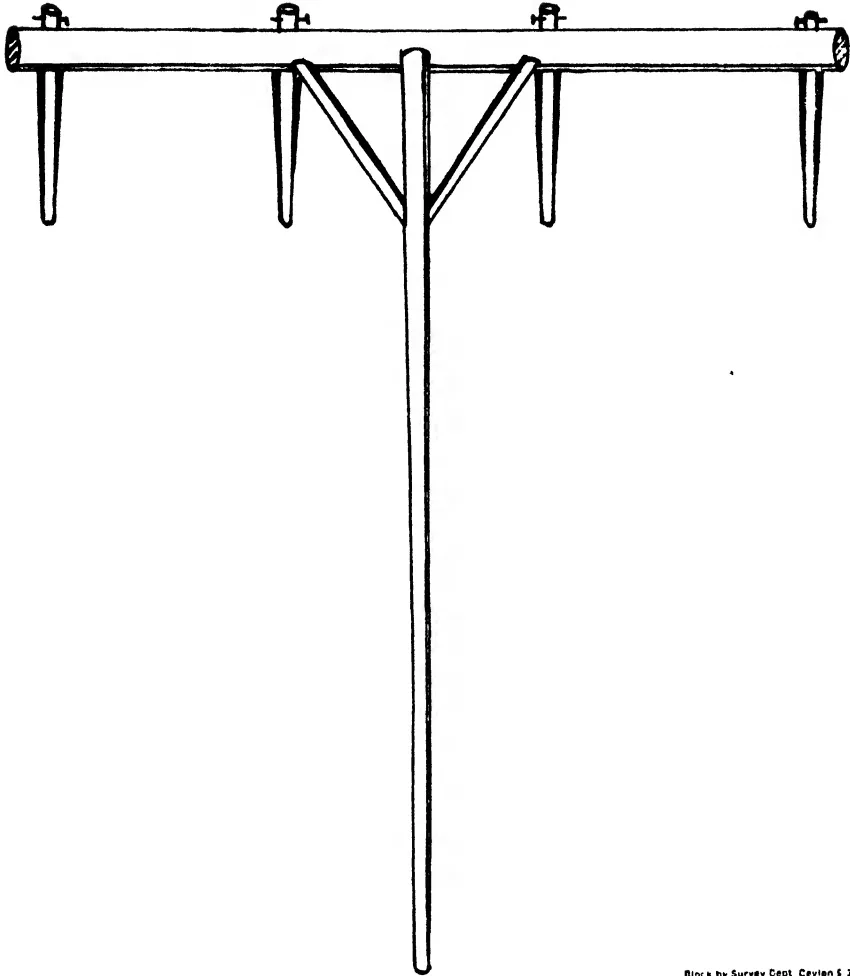
Block by Survey Capt. Ceylan S 2 37
The Marker
152out the field into exact squares. The seedlings are transplanted or the seeds are dibbled where the longitudinal and transverse lines cross each other.
Sometimes it is necessary to apply fertilizers a few days before transplanting or to make shallow drains with the plough between the rows of plants, as in tobacco cultivation. In either case the area has to be marked out first and the operations may obliterate the marking. Or again, a shower of rain just before the planting is begun may deface the markings already made. These difficulties can conveniently be overcome by fixing coconut leaflets or twigs at the junctions of the longitudinal and transverse lines immediately after marking out.
A man can easily mark out one acre a day. The implement can be constructed at a cost of about one rupee.
In cultivating crops like tobacco, the aim of the farmer should be to obtain a uniform crop in each block of 3 to 5 acres according to the capacity of his barn. To obtain this, the area should obviously be planted within a short space of one or two days. In such cases two to four markers should be used to expedite the work. In extensive cultivation of crops further economy can be effected by the use of large markers drawn by trained bullocks.
153MALCOLM PARK, A.R.C.S.,
MYCOLOGIST
AND
M. FERNANDO, Ph.D., B.Sc., D.I.C.,
RESEARCH PROBATIONER IN MYCOLOGY
THE results recorded below are part of an investigation in which an attempt is being made to study closely the diseases of tobacco in Ceylon and the efficacy of control measures. The present paper embodies observations made on plants in the nursery and in the early stages of growth in the field and, in consequence, is restricted to a consideration of the two diseases which are most important in those stages of the plant's growth, namely, damping-off of seedlings (Pythium sp.) and frog-eye or eye-spot (Cercospora nicotianae E. & E.). The experiments were designed to provide, in the first instance, an estimate of the effect of surface-sterilization of seed and of regular spraying of plants in the nursery on the incidence of these diseases and to obtain information on the relative importance of the sources of frog-eye infection.
Experiments were carried out at the Experiment Station, Wariyapola, and the variety of tobacco used was Harrison's Special. The soil is sandy and deficient in organic matter. The rainfall during the last six years has varied between 60 inches and 100 inches and the average annual rainfall is about 75 inches. Tobacco is one of the regular rotation crops at Wariyapola and the experiments described below were carried out in the normal rotation area. Crops are grown during two seasons of the year, the maha season (September-October to March) and the yala season (March-April to June-July). The rotation is tobacco and a cereal crop during maha and a green manure crop grown and ploughed in during yala. Consequently, tobacco is planted on the same land during the maha season of alternate years. The tobacco is flue-cured.
154EXPERIMENTATIONPreparation of Nurseries.—The nurseries were prepared in the manner usually adopted on experiment stations. A part of the rotation area not previously used for nurseries was selected, the choice being guided by the nearness of the water supply and the fact that the area was relatively level rather than by considerations of soil fertility. The nursery beds were 50 feet long by 4 feet wide and were about two feet apart. The soil of the beds was first deep-forked and a liberal dressing of cattle manure applied. The beds were raised about 18 inches above the level of the surrounding soil to permit free drainage. After the admixture of cattle manure, a layer of vegetable débris, consisting of maize cobs, sunn hemp stalks, etc. was placed on the beds and burned. This is the usual practice to reduce the incidence of damping-off disease and other nursery troubles; tobacco trash is never used for the purpose. The following manure mixture was added to every 20 sq. yards of nursery bed :—
lb. Sodium nitrate
lb. Potassium sulphate
1 lb. Superphosphate.
The nurseries were then worked in the usual way and the seed planted. Each nursery bed was covered with a roofing of plaited coconut leaves and, in addition, the beds were covered with cheese-cloth to protect the young plants from stem-borer attack (Phthorimaea heliopa).
The nursery treatment detailed above is the usual practice in departmental experiment stations in Ceylon and is more fully described by Livera (1935). In view of the fact that an experiment was contemplated, the operations were carefully supervised by the Farm Manager.
Seed.—The seed for the experiment was collected from selected Harrison's Special plants grown in another part of the same rotation area during the maha season, 1935-36. The flowers were bagged and the seed carefully cleaned before storage. That care was exercised in the collection and cleaning of the seed will be obvious from the results detailed below.
155Part of the seed was surface-sterilized by the silver nitrate method used by Johnson and Murwin (1925) against wild-fire of tobacco. The seed was immersed in a 0.1 per cent. solution of silver nitrate in distilled water for 15 minutes, washed in several changes of tap water and then rapidly dried on sheets of blotting paper. It was found that the tap-water at Peradeniya is unsuitable for the preparation of the silver nitrate solution, owing to its high chlorid content which causes a precipitation of silver chloride, which is of low fungicidal value.
One tablespoonful of seed was used for each seed-bed, the seed being mixed with sand to facilitate distribution. Each bed supplied more than a sufficient number of plants for one acre.
Spraying of Nurseries.—Spraying was begun 18 days after sowing, at which time the leaves were about 0.5 cm. across. One-half the beds were sprayed with a solution of Bouisol colloidal copper (1 oz. to 1 gallon water) using a pneumatic knapsack sprayer. A neutral spreader, Agral, was added to the spray solution at the rate of oz. per gallon.
The beds were sprayed at weekly intervals up to the time of transplanting. Spraying was carried out in the morning. A little spray scorch was observed from time to time, especially on those plants at the ends of the beds which were subject to more sunshine than the others. The scorch was never serious and very few plants were affected.
In order to overcome as far as possible the complication of insect injury in the nurseries, after the plants were five weeks old, all the beds were sprayed weekly with lead arsenate solution ( oz. per gallon). The lead arsenate was added to the colloidal copper spray on the one hand, while, on the other, the remaining plants were sprayed with a lead arsenate solution to which a similar quantity of the spreader had been added.
At each spraying, it was found that to gallon of spray was used for each bed. The cost of the complete spray, excluding labour and appliances, was therefore about 15 cents for one bed and, as is stated above, each bed contained sufficient plants for one acre.
156Layout of Nurseries. There were four treatments :—
The nursery consisted of sixteen beds which were divided into four blocks, each of four beds. The treatments were randomised in the blocks and the arrangement of the nurseries is given in table I. For convenience, the treatments given above are denoted ST SP, UST SP, ST USP, UST USP respectively.
The general appearance of the nurseries is shown in plate I.
TABLE I
ARRANGEMENT OF NURSERY BEDS
| Bed Nos. | Block Nos. | Order of Treatment. | |||
|---|---|---|---|---|---|
| 1 4 | 1 | ST SP | ST USP | UST SP | UST USP |
| 5 8 | 2 | ST SP | UST SP | ST USP | UST USP |
| 9-12 | 3 | ST SP | UST USP | ST USP | UST SP |
| 13-16 | 4 | ST USP | UST USP | ST SP | UST SP |
Transplanting.—The seedlings were planted out into the field seven weeks after the seed was sown. The plants from the first four beds were transplanted into a four-acre block which was divided into a latin square of -acre plots. The plants from the remaining beds were used for planting up the remainder of the area, 10 acres in extent. The seedlings from each bed were used for separate blocks of 1 acre each, so that, if necessary, areas of tobacco which had received the same nursery treatment could be used for later experiments.
For convenience, the results obtained are given below under the heading of damping-off disease and frog-eye.
Damping-off of Seedlings.—The use of a cheese-cloth cover over the beds to protect the seedlings from attack by stem-borer increased the humidity of the air immediately above
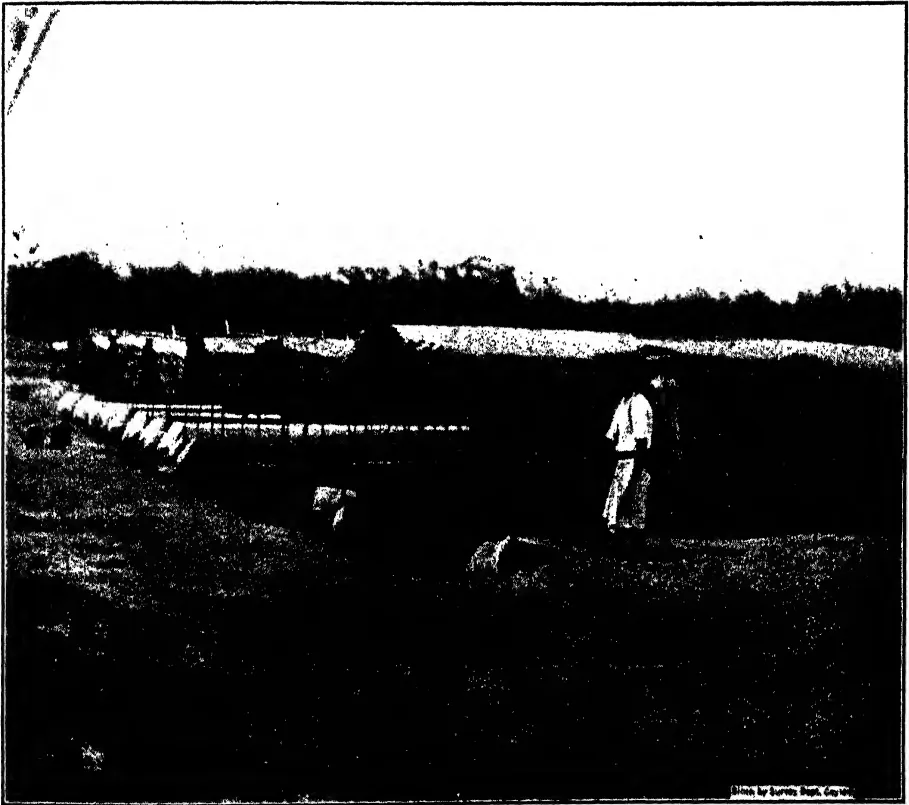
A high-contrast, black and white photograph of a nursery. In the foreground, a person stands on the right side of a dark, grassy field. To the left, a long, low structure, possibly a greenhouse or a row of plants, is visible. The background shows a line of trees under a bright sky. A small, illegible text label is visible in the bottom right corner of the image frame.Plate I. General View of Nursery
This image is a blank white page. It contains several small, dark specks which appear to be scanning artifacts or dust particles. There is no text, handwriting, or printed content on the page. 157the soil and so provided conditions favourable for the activity of damping-off organisms. That the amount of damping-off which occurred was relatively small, is an indication that the burning' of the nurseries before planting was fairly efficient.
Damping-off began to appear in the more crowded parts of some of the beds about four weeks after the seed was sown. The diseased plants were removed each day and counted, a note being made of the beds from which they were taken. An examination in the laboratory of diseased plants showed that they were attacked by Pythium sp. The numbers of diseased plants removed are given in table II below :—
TABLE II
NUMBERS OF DAMPED-OFF SEEDLINGS IN NURSERY BEDS
| Seed Treatment | Sprayed | Unsprayed | Difference | |
|---|---|---|---|---|
| Block I. | Sterilized .. | 0 | 322 | + 322 |
| Unsterilized .. | 0 | 323 | + 323 | |
| Block II. | Sterilized .. | 0 | 243 | + 243 |
| Unsterilized .. | 19 | 297 | + 278 | |
| Block III. | Sterilized .. | 0 | 313 | + 313 |
| Unsterilized .. | 0 | 327 | + 327 | |
| Block IV. | Sterilized .. | 0 | 237 | + 237 |
| Unsterilized .. | 111 | 244 | + 133 | |
| Mean .. | 16.25 | 288.25 | + 272.0 | |
The above figures prove statistically that the difference between the sprayed and unsprayed beds is highly significant. Spraying with colloidal copper reduced markedly the amount of damping-off which occurred in the tobacco nurseries.
The surface-sterilization of the seed before sowing had, as might be expected, no effect on the incidence of damping-off in the nursery.
Frog-eye.—No frog-eye appeared at any time in any of the nursery beds. This was unfortunate in that the effect
158of surface-sterilization of the seed on the incidence of frog-eye in the nurseries could not be determined. It was, however, a useful demonstration that, by the use of clean, carefully selected seed and by the careful preparation of the nursery beds, the appearance of frog-eye in the nursery can be avoided.
As has been stated above, the seedlings from the first block of four nursery beds were transplanted at the age of seven weeks into an area, four acres in extent, which was divided into a latin square of -acre plots. The transplanting was done with as much care and rapidity as possible. The four -acre plots planted with seedlings from one nursery bed were planted out at the same time. Different baskets were used for transporting the plants of different treatments and the labourers washed their hands before transplanting each new set. The seedlings were planted 3 ft. apart between and within rows.
A storm, during which over two inches of rain fell, occurred on the day of transplanting and many plants were washed out but these were replaced as soon as possible. These and subsequent vacancies were supplied with plants from the corresponding nursery beds, as required.
In the centre of each -acre plot a sub-plot of 100 plants (10 by 10) was roped off for critical examination. These observation plots were separated from each other by about 28 rows of plants in one direction and by about 30 rows in the other direction—a more than adequate supply of guard rows.
The first detailed record of the incidence of frog-eye was made four weeks after transplanting. A plant-to-plant examination was made in the sub-plots and records taken of the number of healthy leaves, the number of diseased leaves and the intensity of infection. A leaf was regarded as being infected whether it had one or twenty frog-eye spots. The number of spots on each leaf and the relative position of leaves so noted on the plants were recorded but, later, when the results were analysed, it was found that attempts to base calculations on the intensity of infection introduced such complications that it was decided to utilize the numbers of infected and healthy leaves only. The differences between the incidence
UST USP
ST SP
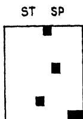
ST USP
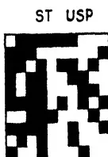
UST SP
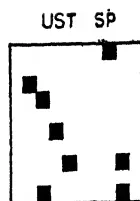
ST USP
UST SP
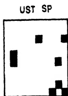
UST USP
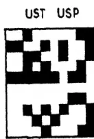
ST SP
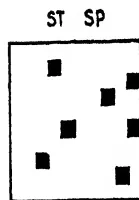
ST SP
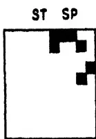
UST USP
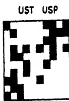
UST SP
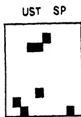
ST USP
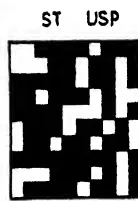
UST SP
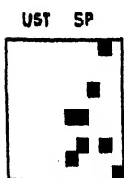
ST USP
ST SP
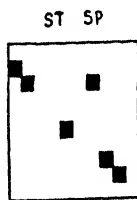
UST USP
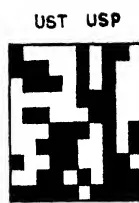
Block by Survey Dept. Ceylon, 4.1.37
Plate II
160of frog-eye in the different treatments were so great that it was not necessary to consider the intensity of infection. Calculations based on the intensity of infection would merely have accentuated the differences recorded.
A diagrammatic representation of the incidence of frog-eye at the first examination is given in plate II. Each sub-plot contains 100 plants and each small black square represents a plant on which frog-eye was observed. The differences are striking.
For calculation, a random sample of 200 leaves was selected from each of the 100-plant sub-plots. The numbers of infected leaves in the random samples are shown in table III in which the relative position of the sub-plots is also shown, for clarity. The statistical analysis of these figures is given in table IV
TABLE III
NUMBERS OF INFECTED LEAVES IN RANDOM
SAMPLES OF 200 LEAVES—FIRST EXAMINATION
| UST | .. | ST | .. | ST | .. | UST |
| USP | .. | SP | .. | USP | .. | SP |
| 87 | .. | 3 | .. | 77 | .. | 7 |
| ST | .. | UST | .. | UST | .. | ST |
| USP | .. | SP | .. | USP | .. | SP |
| 61 | .. | 4 | .. | 47 | .. | 3 |
| ST | .. | UST | .. | UST | .. | ST |
| SP | .. | USP | .. | SP | .. | USP |
| 3 | .. | 42 | .. | 5 | .. | 60 |
| UST | .. | ST | .. | ST | .. | UST |
| SP | .. | USP | .. | SP | .. | USP |
| 4 | .. | 43 | .. | 3 | .. | 96 |
161
TABLE IV
ANALYSIS OF VARIANCE — FIRST EXAMINATION
| Due to — | Degrees of Freedom | Sum of Squares | Variance | Z | One per cent. point | |
|---|---|---|---|---|---|---|
| Columns | 3 | 803.19 | 267.73 | 2.7949 | — | — |
| Rows | 3 | 665.19 | 221.73 | 2.7007 | — | — |
| Treatments | 3 | 14588.19 | 4862.73 | — | — | — |
| Sterilization | 1 | 95.06 | 95.06 | 2.2773 | — | — |
| Spraying | 1 | 14460.06 | 14460.06 | 4.7386 | 2.0712 | 1.3103 |
| Interaction | 1 | 33.07 | 33.07 | 1.7493 | — | — |
| Error | 6 | 1378.37 | 229.73 | 2.7184 | — | — |
| Total | 15 | 17434.94 | — | — | — | — |
| Standard Deviation = 15.16 | ||||||
| Co-efficient of Variability = 44.5% | ||||||
MEAN NOS. OF INFECTED LEAVES IN RANDOM SAMPLES OF 200 LEAVES
A. INDIVIDUAL TREATMENTS
| ST | UST | General Mean | S.E. of Mean | Significant Difference |
|---|---|---|---|---|
| SP | UST | 34.06 | 7.58 | 26.23 |
| 3 | SP | 34.06 | 7.58 | 26.23 |
B. SPRAYING
| Sprayed | Unsprayed | General Mean | S.E. of Mean of 8 plots | Significant difference |
|---|---|---|---|---|
| 4 | 64.125 | 34.06 | 5.359 | 16.25 |
C. STERILIZATION
| Sterilized | Unsterilized | General Mean | S.E. of Mean of 8 plots | Significant Difference |
|---|---|---|---|---|
| 31.625 | 36.5 | 34.06 | 5.359 | 16.25 |
The effect of the surface-sterilization of the seed on the incidence of frog-eye in the field after transplanting is insignificant as is interaction between this treatment and the spraying. The variation due to these two factors is sub-normal. The effect of nursery spraying on the incidence of frog-eye after transplanting, on the other hand, is highly significant.
A second examination of the sub-plots was made twelve days after the first field examination. Records of the occurrence of frog-eye on random samples of 200 leaves were made in the same way. There was apparent a general increase in the amount of frog-eye in all the sub-plots. The results are tabulated below in the same way as for the first examination.
TABLE V
NUMBERS OF INFECTED LEAVES IN RANDOM
SAMPLES OF 200 LEAVES—SECOND EXAMINATION
| UST | .. | ST | .. | ST | .. | UST |
| USP | .. | SP | .. | USP | .. | SP |
| 120 | .. | 39 | .. | 112 | .. | 29 |
| ST | .. | UST | .. | UST | .. | ST |
| USP | .. | SP | .. | USP | .. | SP |
| 80 | .. | 15 | .. | 93 | .. | 37 |
| ST | .. | UST | .. | UST | .. | ST |
| SP | .. | USP | .. | SP | .. | USP |
| 27 | .. | 73 | .. | 25 | .. | 104 |
| UST | .. | ST | .. | ST | .. | UST |
| SP | .. | USP | .. | SP | .. | USP |
| 53 | .. | 99 | .. | 46 | .. | 104 |
163
TABLE VI
ANALYSIS OF VARIANCE — SECOND EXAMINATION
| Due to — | Degrees of Freedom | Sum of Squares | Variance | Z | One per cent. point | |
|---|---|---|---|---|---|---|
| Columns | 3 | 486 | 162 | 2.5438 | — | — |
| Rows | 3 | 1371.5 | 457.2 | 3.0625 | — | — |
| Treatments | 3 | 16606.5 | 5535.5 | — | — | — |
| Spraying | 1 | 16512.25 | 16512.25 | 4.8559 | 2.3911 | 1.3103 |
| Sterilization | 1 | 64 | 64 | 2.0705 | — | — |
| Interaction | 1 | 30.25 | 30.25 | 1.7047 | — | — |
| Error | 6 | 830 | 138.3 | 2.4648 | — | — |
| Total | 15 | 19294 | — | — | — | — |
| Standard Deviation | = 11.75 | |||||
| Co-efficient of Variability | = 16.3% | |||||
| MEAN NOS. OF INFECTED LEAVES IN RANDOM SAMPLES OF 200 LEAVES | ||||||
| A. INDIVIDUAL TREATMENTS | ||||||
| ST | ST | UST | UST | General Mean | S.E. of Mean of 4 plots | Significant Difference |
| SP | USP | SP | USP | Mean | .. | .. |
| 37.25 | 98.75 | 30.5 | 97.5 | 66 | 5.88 | 20.35 |
| B. SPRAYING | ||||||
| Sprayed | .. | Unsprayed | .. | General Mean | S.E. of Mean of 8 plots | Significant Difference |
| 33.9 | .. | 98.1 | .. | 66 | 4.16 | 12.61 |
| C. SEED DISINFECTION | ||||||
| Sterilized | .. | Unsterilized | .. | General Mean | S.E. of Mean of 8 plots | Significant Difference |
| 68 | .. | 64 | .. | 66 | 4.16 | 12.61 |
The effect of spraying in the nursery on the incidence of frog-eye is still highly significant. The variation associated with surface-sterilization of seed and with interaction is again sub-normal.
After the second examination was made the tobacco was primed and no further records of frog-eye in the field were made.
Daily rainfall records are given in table VII. Most of the rain recorded on the 18th October fell towards the conclusion of the transplanting of the four-acre block and destroyed a large number of the transplanted seedlings. With the exception of the two heavy showers recorded on 29th October and 6th November respectively light rain fell on most days up to the time of the second record of the incidence of frog-eye. Temperature fluctuations at Wariyapola are not sufficiently large to be of much interest.
TABLE VII
DAILY RAINFALL RECORDS FROM 15TH OCTOBER TO 30TH NOVEMBER, 1936
(Rainfall measured at 9 a.m. each day for the previous 24 hours)
| October, 1936 | November, 1936 | ||||||
|---|---|---|---|---|---|---|---|
| Date | Rainfall | Date | Rainfall | Date | Rainfall | ||
| 15 | — | .. | 1 | ·40 | .. | 16 | ·04 |
| 16 | — | .. | 2 | ·19 | .. | 17 | ·08 |
| 17 | ·33 | .. | 3 | — | .. | 18 | ·66 |
| 18 | 3·61 | .. | 4 | ·10 | .. | 19 | — |
| 19 | ·29 | .. | 5 | ·20 | .. | 20 | ·03 |
| 20 | ·16 | .. | 6 | 2·10 | .. | 21 | — |
| 21 | ·84 | .. | 7 | ·45 | .. | 22 | ·17 |
| 22 | ·25 | .. | 8 | ·25 | .. | 23 | — |
| 23 | ·30 | .. | 9 | ·47 | .. | 24 | ·43 |
| 24 | — | .. | 10 | ·85 | .. | 25 | — |
| 25 | ·53 | .. | 11 | — | .. | 26 | — |
| 26 | ·12 | .. | 12 | — | .. | 27 | — |
| 27 | ·44 | .. | 13 | ·02 | .. | 28 | — |
| 28 | ·39 | .. | 14 | — | .. | 29 | — |
| 29 | 1·46 | .. | 15 | — | .. | 30 | — |
| 30 | ·37 | ||||||
| 31 | ·03 | ||||||
Hill (1936) demonstrated that frog-eye (Cercospora nicotianae) may be a seed-borne disease. He found viable spores of the fungus on tobacco seed after storage for twelve months. The experiment described above was planned to include observations on the effect of the surface-sterilization of seed by treatment with silver nitrate solution on the incidence of frog-eye in the nursery and the subsequent progress of plants from treated seed. The non-appearance of frog-eye in the nursery, even in beds containing plants which were grown from untreated seed and which were not sprayed, indicated the absence of any seed-borne infection in this instance. It also showed that any fungus which might have been present in the soil must have been destroyed during the burning of the beds, which was part of the preparation. Frog-eye infection of seedlings, however, does commonly occur in nurseries in Ceylon and it must be presumed that the precautions taken in the collection of seed and in the preparation of the nurseries were sufficient of themselves to eliminate nursery infection. These precautions were not exceptional, carefully cleaned seed from 'bagged' plants being used and the usual nursery practice, described by Livera (1935) in the preparation of beds being observed. The absence of frog-eye infection in the nursery unfortunately prevented any estimation of the effect of the surface-sterilization of the seed in this experiment.
Even if the incidence of frog-eye in the nursery can be prevented by careful observance of good nursery sanitation, the practice of spraying beds weekly with colloidal copper is justified by the almost protection it provides against damping-off.
In considering the field portion of the experiment, it should be noted that, although the lay-out of the experiment in the form of a latin square assumes the existence of four treatments, there were, in fact, only two real treatments—sprayed and unsprayed. The nursery plants being free from infection at the time of transplanting, the surface-sterilization of the seed ceased to be a factor. The only difference among the plants was that the sprayed ones possessed a protective film of fungicide whereas the others did not. That this protective
166film effects a marked reduction in the amount of frog-eye infection which takes place in the early stages of the plant's existence in the field is shown clearly in the statistical analyses recorded above. These results are really an under-estimate of the actual differences since they are based on estimates of the numbers of diseased leaves, whereas there was also a marked difference in the intensity of infection which, if taken into account, would accentuate the differences recorded; the intensity of infection was less on sprayed plants than on unsprayed plants.
Attention was given to a consideration of the sources of infection by frog-eye. It is generally held that one of the main sources of frog-eye infection is the incorporation in the soil of dead infected plant material from the previous year's crop. Hill (1936) has shown that diseased leaves may be a source of infection for at least two years. Both Hill (1936) and Sherbakoff (1932) have demonstrated that Cercospora can survive the process of flue-curing. Storing sheds adjacent to a tobacco field must accordingly be considered as potential sources of infection by means of air-borne spores. Alternate hosts of the fungus may also provide means of perennation but these are considered by Hill to be of little or no importance. Ceylon observations confirm this. Another possible source of infection is the seed. For the reasons stated above, however, no infection was introduced with the seed in this experiment. Infection of plants by the use of dirty seed, therefore, can be avoided but no opinion can be expressed in this article on the relative importance of infection from this source in ordinary cultivation.
A shed, which contained a considerable quantity of cured tobacco, was situated about 200 yards to the ENE. of the nursery and about 100 yards to the north of the area into which the seedlings were transplanted. The shed, which was built of plaited coconut leaves (cadjans), was closed on its southern and western sides, i.e., the sides nearest the experimental areas. The cured tobacco was by no means free from frog-eye spots but no attempt was made to isolate Cercospora from it. It may be presumed, however, in view of the statements recorded above, that it was a potential source of viable spores of the fungus. The prevailing wind during the period under consideration was from the NE.
167Some of the seedlings in the nursery beds were not removed from the nursery until after the first field examination was made. At that time the infection of the experimental plots was fairly general and the plots provided another potential source of air-borne spores. Nevertheless no frog-eye infection was observed in the nursery at any time. The main difference in the conditions under which plants were grown in the nursery and in the field was that the soil of the former was sterilized by burning whereas that of the latter was not.
Figure 2, as has been stated above, gives a picture of the distribution of infected plants in the sub-plots which were each situated in the centre of a -acre plot. The distance between the end sub-plots of rows in a north and south direction was approximately 120 yards. If, therefore, the dissemination of spores from the storing shed was an important factor in frog-eye infection, there should have been apparent some difference in the intensity of infection in the sub-plots at the north and south ends of the field. No such difference was observed. The distribution of infected plants was, as can be seen from the figure, a uniform one and compatible with the assumption that the soil was the most serious source of infection of the experiment under review. In almost every infected plant, the lowest leaves were the first to be infected and it was common to find groups of frog-eye spots at the point where leaves actually touched the ground.
The suggestion that the soil was the most important source of infection is supported by the fact that no infection was observed in the nursery at the time of this examination. It is not suggested that the soil continues to be an important source once infection is established, but that it is the most important source of infection of the newly planted crop. Similarly, the evidence adduced tends to indicate that air-borne infection does not occur over any considerable distance.
The last crop of tobacco was grown on the same soil two years before this crop so that a period of at least 18 months must have elapsed since any tobacco material was incorporated in the soil. It is probable that this material, with the possible exception of some lignin, had all decomposed during that time so that, unless the fungus can live freely as a soil saprophyte,
168it must have been present in the soil in the form of spores. It is suggested that the latter is probably the true explanation and that spores of Cercospora, which perennate in tobacco soils, provide the main source of infection.
From the experiment described above the following conclusions are drawn :—
The thanks of the authors are due to the Divisional Agricultural Officer, North-Western Division, for his co-operation in the experiments and, especially, to Mr. A. B. Attygalle, Farm Manager, Wariapola, for his helpful and willing assistance in the organisation of the field arrangements.
Hill, A.V. 1936.—Cercospora leaf spot (frog-eye) of tobacco in Queensland. Counc. Sci. & Indust. Res. Australia, Bull. 98.
Johnson, J. and Murwin, H.F. 1925.—Experiments on the control of wild-fire of tobacco. Wis. Agr. Expt. Sta., Bull. 62.
Livera, E.J. 1935.—The cultivation and curing of cigarette tobacco. The Trop. Agriculturist, lxxxv, p. 10.
Sherbakoff, C.D. 1932.—Plant pathology. Forty-fourth Ann. Rept. Tennessee Agr. Expt. Sta. for 1931 (Abstract in Rev. App. Myc. 12, p. 11, 1933).
169H. M. STRATFORD,
NEUCHÂTEL ESTATE, NEBODA
IT has become evident that old rubber of 30-35 years of age has passed its economic state and steps must be taken on such estates to replant it. Bark and leaf conditions are such that no amount of artificial manure can possibly recover the high yields that were harvested in the past. Tapping in its early stages was very different from tapping as carried out nowadays and it was not uncommon for 18 inches of bark to be removed in a year. The bark during the past 25 years has on old estates been removed and renewed 8-10 times so that it is not surprising that on many trees the renewed bark is so thin and hard that it cannot be tapped. Yields have dropped and are dropping and, with the present state of starvation on most estates and original bad opening, will continue to drop with the result that when restriction is removed those estates which have not large areas of young and vigorous rubber coming into bearing will be threatened with extermination.
It must further be remembered that the present rubber in Ceylon has in many cases not been manured at all and in others only during comparatively recent years, so that our efforts at cultivation now are analogous to a child that has been consistently starved until it has reached manhood and then efforts made to impart that growth and vigour that should have been done in youth. It is impossible with man and so it is with our present rubber.
We will now consider what one expects to gain by replanting and, for the sake of example, will take the case of an estate with 1610 acres of rubber in bearing, which decides to replant to the extent of 20 per cent. of its planted acreage as it is
170allowed to do under the Rubber Restriction Ordinance during the years 1936, 1937 and 1938.
| Year. | Rubber in bearing |
Replanted |
|---|---|---|
| 1936 .. | 1,610 acres .. | 107 acres |
| 1937 .. | 1,503 ,, .. | 107 ,, |
| 1938 .. | 1,396 ,, .. | 108 ,, |
| 1939 .. | 1,288 ,, .. | |
| 322 acres = 20% |
We may assume that the 1,288 acres will from 1939 yield a crop of 708,400 lb. at 550 lb. per acre or 80 per cent. of the full crop that could have been harvested from the total acreage of 1,610 acres. It is likely that restriction will be continued for another term of 5 years after 1938 and it is unlikely that the percentage of release will be more than 80 per cent. during that time so that the crop is safeguarded up to an 80 per cent. release during restriction.
We will now assume that restriction ceases in 1943 and that the total 20 per cent. has been replanted as above. The first replanted 107 acres is then 7 years old and the assessment allowed by the Rubber Controller on 7-year-old rubber of approved clones is 6 lb. per tree. Given 120 trees to the acre this is 720 lb. per acre, rising in the 8th year to 8 lb. per tree and in the 9th year to 10 lb. per tree equivalent to 960 and 1,200 lb. per acre.
We may, therefore, in the 7th year of replanting expect the following crop:—
| 1943. | 1,288 acres old rubber at 550 lb. .. | 708,400 lb. |
| 107 acres budded rubber at 720 lb. | 77,040 ,, | |
| 785,440 ,, | ||
| and in the two subsequent years— | ||
| 1944. | 1,288 acres old rubber at 550 lb. per acre .. .. |
708,400 lb. |
| 107 acres budded rubber at 960 lb. per acre .. .. |
102,720 ,, | |
| 107 acres budded rubber at 720 lb. per acre .. .. |
77,040 ,, | |
| 888,160 ,, | ||
| 1945. | 1,288 acres old rubber at 550 lb. | |||
| per acre | .. | .. | 708,400 lb. | |
| 107 acres budded rubber at 1,200 lb. | ||||
| per acre | .. | .. | 128,400 ,, | |
| 107 acres budded rubber at 960 lb. | ||||
| per acre | .. | .. | 102,720 ,, | |
| 108 acres budded rubber at 720 lb. | ||||
| per acre | .. | .. | 77,760 ,, | |
| 1,017,280 ,, |
against a total crop if the estate had not been replanted of .. .. . 885,500 lb.
an increase of .. .. . 131,780 ,,
and this with the budded rubber only in its 7th, 8th and 9th year.
It has again been assumed that the old rubber would be able to produce 550 lb. per acre in 1945 which with its very definite backward trend is doubtful, even though heavy artificial cultivation was carried out. I have taken for the purpose of these figures the actual assessments allowed by the Rubber Controller, but there is no doubt that the budded areas would continue to increase in yield until they too had reached their peak years. It is possible that when the budded rubber had reached the age of 13 to 15 years it would be giving 2,000 lb. per acre when the yields would stand as follows:—
| 1,288 acres old rubber at 550 lb. per | ||||
| acre | .. | .. | .. | 708,400 lb. |
| 322 acres budded rubber at 2,000 | ||||
| lb. per acre | .. | .. | .. | 644,000 ,, |
| 1,352,400 ,, |
It is quite certain that the old rubber would not continue to produce 550 lb. per acre even with cultivation so that it is obvious that if restriction came to an end in 1943 the only wise plan would be to replant the balance 1,288 acres of rubber, assuming that it was 30 years old or so. If this were done and the total 1,610 acres completed, at 12 years old a crop of 1,500 lb. per acre might be expected, or 2,415,000 lb.
I have not gone into the economic side of the cost of production on these crops as it is evident that as one can increase the yield so will the costs be reduced.
172EDWARD PERERA,
CURATOR, HENERATGODA BOTANIC GARDENS, GAMPAHA
FOR magnificence of flowers no genus of tropical orchids surpasses Phalaenopsis; plants of this genus are mostly natives of the very hot and moist parts of the Old World, their natural range extending from Assam and Burma, through the islands of the Indian Archipelago, to the Moluccas and Philippines. None of the species has pseudo-bulbs, but the leaves are generally thick and leathery. In several species the upper surface is prettily mottled with silver-grey, and the under side coloured a deep purple. The genus is distinguished by the grace with which the flowers are displayed. They usually face in one direction, and are elegantly supported on slender, frequently branching racemes. Another charm of Phalaenopsis is its remarkably free-flowering nature. A valuable property is the length of time the flowers remain in beauty.
The accompanying photographs of Phalaenopsis Amabilis Blume, a beautiful, free-flowering species, the flowers of which if kept dry, will remain fresh for several weeks. It has thick, elliptical, lance-shaped, brownish-green leaves, divided obliquely by a prominent midrib. The flowers are borne in two opposite rows, on long, pendent, often branching racemes. They are 3 inches in diameter, and are entirely white except the lip which, on the inner side, is spotted and streaked with rosy pink and yellow. In shape the sepals are broadly ovate, the petals being still broader and somewhat rhomboidal; the lip is three-lobed, the side lobes standing erect at each side of the column, while the central one divides at the apex into two slender, twisted filaments. It was found in Java and the Philippine Islands, and was first introduced into Ceylon in 1836. It flowers at various seasons, but most freely during the summer months.
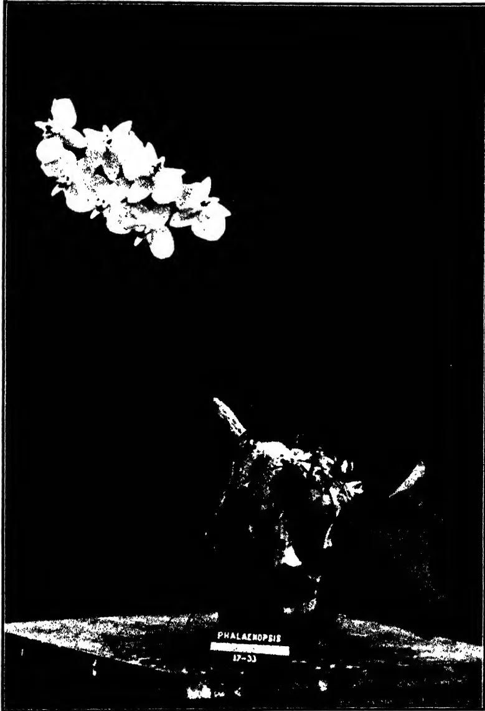
A high-contrast black and white photograph of a Phalaenopsis orchid plant. The top part of the image shows a cluster of light-colored, bell-shaped flowers. The bottom part shows the dark, textured body of the plant, including its leaves and a small label that reads "PHALAENOPSIS" and "17-53".Phalaenopsis Amabilis Blume
This image is a blank white page. It contains several small, dark specks which appear to be scanning artifacts or dust particles. There is no text, handwriting, or printed content on the page. 173Culture.—Different species of Phalaenopsis are grown in different ways, and the one under reference represents a typical example of one grown in a bullock's skull with success.
Growing, as has already been stated, in some of the most tropical regions of the globe, on the trunks of trees and on the sides of rocks, where during the rainy season an immense quantity of rain falls, Phalaenopsis luxuriates only under conditions of great heat and moisture, and especially is this the case during the period of active growth. Pots and baskets, rafts and blocks of wood or tree fern trunks are much to be preferred.
In whatever position the plants are grown, a free and ample drainage is of the utmost importance. The material in which they are planted should consist of a thin layer of clean, fresh sphagnum or fibre placed upon a good layer of potsherds, porous brick, bone, and lumps of charcoal. They require, however, more moisture at the roots if grown on blocks or rafts, whilst if grown in pots more drainage will be required than when they are planted in baskets. Too much water must not be given to these plants at any time except when the plants are growing, and great care is necessary when they are inactive. The moss in which they are planted must never be allowed to get quite dry. Watering overhead should be especially avoided during dull weather.
The successful cultivation of Phalaenopsis, as well as of all other plants, depends upon efficient drainage. If grown on blocks or rafts they should be placed on good-sized ones so that there may be plenty of surface for the roots to cling to.
In fastening the plants on, first place a little sphagnum or fibre on the block, then fix the plant on with copper wire.
These plants are difficult to propagate, as they supply few opportunities for division. To this rule, however, Phalaenopsis Ludemanniana is an exception, as it produces young plants upon the flower scapes very freely. Sometimes the other species also will produce young plants on the old flower stems. It has been found that Phalaenopsis Stuartiana produces them upon its roots: when this happens they should be left on till well rooted and then placed on small blocks.
174A. W. R. JOACHIM, Ph.D.,
AGRICULTURAL CHEMIST
MANURIAL trials on paddy have been carried out by the Department in various parts of Ceylon. The results obtained have not always been the same at all places with the same types and quantities of fertilisers. This is due to the variation in soil, climatic and irrigation conditions, methods of cultivation and varieties of paddy grown. In general however, there is good evidence to show that paddy does respond to judicious manuring, whether with artificial fertilisers or organic manures like cattle manure, green manure and compost, and that economic returns can be secured thereby.
The fertilising constituents essential for increasing yields of crop on most paddy soils in Ceylon are nitrogen and phosphoric acid. In a few areas nitrogen alone, and in others phosphoric alone is beneficial; in the majority of the paddy areas, however, a combination of nitrogen and phosphoric acid gives best results. Where a field carries a luxuriant weed growth the nitrogen supply can be considered adequate; where weed growth is poor, both nitrogen and phosphoric acid may be lacking.
While artificial fertilisers alone are capable of increasing yields in most areas that have been under paddy for a number of years, the incorporation of some bulky organic manure along with the artificial fertiliser, in all but the soils well supplied with nitrogen and humus, is productive of even better yields. This is especially so on light soils poor in organic matter or on heavy clay soils. These organic manures, more particularly cattle manure, should not, however, be used in excess or there may be a danger of increasing the production of straw
175at the expense of the grain, and/or of the lodging of the crop. One ton of cattle or green manure per acre would be a suitable application when artificials are used, and up to 5 tons per acre (on the average 2 to 3 tons) when applied alone. These organic manures are best applied at the second ploughing, but the soil should be kept well moist thereafter.
Of artificial fertilisers the following are to be recommended for paddy: sulphate of ammonia, superphosphate, basic slag, ammonium phosphate (niciphos or ammophos in two grades—narrow ratio and wide ratio) and steamed bone meal. The fertiliser which has been found most generally successful on soils of varying types is ammonium phosphate, whether as niciphos or ammophos. These fertilisers are therefore recommended for paddy at the rate of to 1 cwt. per acre depending on the nature of the soil and whether used in conjunction with organic manures. When applied alone cwt. of the fertiliser per acre is recommended for average soils. If applied with cattle or green manure cwt. per acre may suffice. Of the two grades of niciphos or ammophos, the narrow ratio grade (nitrogen and phosphoric acid each about 18 per cent.) should normally be used. It is cheaper than the wide ratio grade and appears to be as efficient as the latter on many soils. Where the soil is deficient in phosphoric acid but fairly well supplied with nitrogen, the wide ratio grade of ammophos (nitrogen 11 per cent., phosphoric acid 46 per cent.) or niciphos (nitrogen 14 per cent., phosphoric acid 43 per cent.), whichever is the cheaper, is recommended. In either case the fertiliser is best applied about a day before sowing or transplanting. It is essential that the soil should be well saturated with water before the application.
Where weed growth is very luxuriant and additional nitrogen does not appear to be necessary, an application of to 1 cwt. of either steamed bone meal, basic slag or ordinary superphosphate may be given. These are best applied at the final ploughing of the field.
On a very few soils, where the soil is rich in phosphoric acid, as in calcareous soils, sulphate of ammonia alone at the rate of to 1 cwt. is likely to be beneficial. The application may be given a day or so before sowing or transplanting.
176Manuring should be resorted to only after other possible improved methods of cultivation have been adopted. Transplanting is one such method. Yield increases of over 25 per cent. can be obtained by transplanting as against broadcasting. While manuring does increase the yields of broadcast crops, the experimental evidence indicates that a larger yield increase is more likely to be obtained if the crop were transplanted. Where, however, transplanting is not feasible, as with early maturing varieties, manuring is recommended. It is advisable when no previous manuring has been done, that only a small area be treated in the first instance in order to determine whether the returns from manuring are economic or not.
In regard to the economics of paddy manuring, it may be stated that in general the cost of the fertiliser and its application should not exceed Rs. 7.50 per acre. If paddy is priced at Re. 1.50 per bushel, an increase of 5 bushels per acre would cover the expenditure on manuring. Generally speaking, yield increases of 20 per cent. and over equivalent to a minimum of from 6 to 8 bushels per acre, can be obtained with resultant profits. Where paddy is priced at Rs. 2.00 per bushel the returns from manuring should be correspondingly greater.
177A VERY interesting address upon the development of tropical countries was delivered at the annual meeting of the Corporation by Mr. Stockdale, the Assistant Agricultural Adviser of the Colonial Office. His observations were of such importance in their bearing upon the future of our tropical and sub-tropical Empire that they should be closely studied by all who hope that that future will be full of steady progress and prosperity.
Among the important subjects which were brought up in the address, and with which we may perhaps deal at various times, was that of soil erosion, which plays a larger rôle than is always clearly understood. People who have not seen the rain fall in the tropics, especially in the monsoon countries that include so large a part of the Empire, are apt to picture it as something like the rain at "home." Our rain, however, except upon rare occasions, would be regarded there as a gentle drizzle.
If in England one clears a piece of land, the rain undoubtedly begins to wash it away, and to leach it, but at a rate that is hardly worth mentioning beside that which occurs in the tropics. There, a shower in which a whole month's English rain falls in a few hours is a common occurrence, and we have ourselves seen 10 inches of rain fall without a break in less than a day. Such rain rapidly washes away the surface soil, and leaches out the lower layers, so that in a few years after clearance the richest forest land may be reduced to the poorest possible condition.
The natural state of most of the land in the rainy countries of the tropics is to be covered with forest or coarse grass. In either case it is useless for general agriculture, but its soil is at the maximum degree of content of humus, plant food and water-retaining capacity (largely due to the humus) that occurs under natural conditions. These features—which, as everyone who works with agriculture in the tropics knows, soon diminish and largely disappear after clearance of the land—are the natural capital of the country. This capital should be conserved, not regarded—whether consciously or unconsciously—as something to be exploited until perhaps the land at the last must be abandoned (as one may see in many places). The real question is, how to get the best out of the land without destroying the natural capital more than can be helped.
* Editorial from The Empire Cotton Growing Review, Vol. VI, No. 4, October, 1929.
178It is possible to live almost entirely upon the capital value of forest land, and this is the underlying explanation of the type of cultivation known in Ceylon as chena, in India as jhuming, in Malaya as ladang, and by other names in other countries. It is found almost all over the world where population is thin enough to allow to each person a large area of forest land. The trees on a portion of this are felled and burnt, and on the rich forest soil, further improved by the ash, a couple of crops of cereals or other products are grown and the land is then left to go back gradually to forest : it is again good enough to chena in ten to fifty years.
This is living upon capital purely and simply, for the land is abandoned as soon as it begins to become weedy, in order to avoid the labour of real cultivation. It is less trouble to chena a fresh piece of land. If population increase, however, as it has done for example in much of India and Ceylon, chena must perforce be given up and more real cultivation carried on. But this has, in such countries, to be done upon land where the natural capital, owing to reckless clearance, has been very much reduced. The result is poor and uncertain crops, varying considerably with the climate of the particular year (cf. article by Youngman in this volume, especially p. 43).
In districts where the people are more intelligent, or perhaps to be more exact, where pressure of population has compelled them to take more care, one may see attempts being made to rectify this state of things, by green manuring, rotation of crops, mixture of crops, and even by the use of actual manures, though in general cow-dung, which is almost the only available and cheap manure, is used as fuel, and so is largely lost. But there are distinct and recognizable attempts to put back something into the soil, or to equalize and minimize its rate of loss.
A state of things which is essentially very similar to this may be seen in most tropical regions opened up by Europeans in coffee, tea, etc. Largely through ignorance, they have used up the natural capital of soil, humus, etc., almost as rapidly as possible. Their planting of various crops has largely proceeded in "booms," in which there has been an insistent demand for land, and not sufficient foresight or knowledge on the part of the Government to curb this demand in the interests of future generations.
The result has been wholesale opening of land, usually in hilly country, where erosion proceeds more rapidly. The heavy rainfall has caused tremendous erosion and leaching, and has led to the silting up of rivers, causing floods and stoppage of navigation. A heavy price has frequently to be paid by a country that has been opened up for planting—not so much at the time, as later, when the results of the mistakes that were made in earlier times begin to appear.
Just as with the native industries above mentioned, so the planting industry has been forced to resort to the use of manures, of green manures, of terracing to prevent wash, of drainage, and so on. But the Government
179can and should also assist, for example, by the provision of sufficient reserves of forest. In Ceylon, in early days, small strips of forest were left along the tops of the ridges, but they were so narrow that they were soon consumed for firewood, burnt, or otherwise rendered nugatory. However insistent be the demand for land, the Government should enforce the reservation of large areas in forest, in such a way as to prevent erosion (so far as possible), or the drying up of the streams in hot and dry weather, a common occurrence in such countries as Ceylon, where it adds greatly to the difficulties of water supply.
The provision of an officer for general service in the tropical and sub-tropical colonies, to deal with this whole question of prevention of erosion and of deterioration of soil, is quite worth the consideration of Government. But if appointed, he should spend a good deal of time in study both within and outside of the Empire, to see how the matter is dealt with, for example, in Java by terracing, etc., in China and Japan by the use of manure, etc., and in other countries in other ways. He should establish liaison with forest and irrigation officers, with engineers in charge of road-making, and others, and eventually with their assistance devise definite schemes for road, drainage, and forest reservations, and for all such matters which concern several departments (and which must therefore be carried out by definite orders from Governmental headquarters), in addition to working at the questions of manuring, green manuring, etc., which are the province of an agricultural department.
Nearly all countries which have been opened up for any kind of "planting" afford striking object lessons in what ought not to be done, and the newer colonies should profit by these lessons before it is too late, and should learn what ought to be done, and do it.
180A PERUSAL of the original papers to be found in the twelve volumes of The Empire Cotton Growing Review which have appeared since 1924, and of the various publications of the Indian Central Cotton Committee since its inception, will show what a large proportion of the time and energy of the research workers has been devoted to the study of the insect and fungous pests which attack the cotton crops of the Empire.
If the excellent series of notes on current literature, which make this journal so useful to cotton workers overseas, be examined in detail, a similar conclusion will be reached. The cotton crop almost everywhere seems to come in for perhaps more than its fair share of pests. It would be interesting if figures could be published showing the total sums which have been spent in the British Empire since 1924 on the scientific investigation of cotton diseases, and also on the various remedial measures which have been adopted to control the various pests. The resulting figure would, I think, be astonishing.
When the Editor of this journal recently invited me to contribute an article on some subject of interest to cotton-growers, it occurred to me that I could not do better than sum up very briefly thirty years' experience of the diseases of cultivated plants, including cotton. During this period I have had first-hand experience in this branch of agricultural research in three continents—America, Asia and Europe—and have travelled widely.
Let us consider for one moment how our existing research structure has arisen. As everybody knows, it is a comparatively modern development which started 100 years ago, when Boussingault laid the foundation of agricultural chemistry in 1834. The early pioneers were all chemists. Liebig's classical monograph on agricultural chemistry appeared in 1840. Lawes started work at Rothamsted in 1843, when the great era of chemical investigation began which continued for fifty years. During this period agricultural science was a branch of chemistry. Gradually the conviction grew that the problems of crop production could not be solved by chemistry alone. Hilgard and King's work led to the growth of soil physics. Pasteur's work on fermentation laid the foundation of the modern work on micro-organisms and disease. During the last forty years the plant-breeding and disease phases, in which we are now living, have been added to a structure which has always
*By Sir Albert Howard, C.I.E., formerly Director of the Institute of Plant Industry, Indore, and Agricultural Adviser to States in Central India and Rajputana in The Empire Cotton Growing Review, Vol. XIII, No. 3, July 1936
181grown by accretion rather than by the development of a well-considered plan. Agricultural science—like Topsy—has grown. The present system of Agricultural Colleges, Experiment Stations and district organisations (within the Empire), for bringing the results of research to the farming community, is a very recent development of little more than thirty years.
Now it is a well-understood principle in business that any organization which expands by accretion stands in urgent need of periodical examination to ascertain whether the results obtained correspond with the cost, and whether any modifications are needed in the light of increased knowledge and experience. I began such an investigation of the plant disease section of agricultural science in 1905, and have steadily carried it on since. After thirty years' work, I feel sufficiently confident of my general conclusions to place them before the research workers in cotton in the various parts of the world.
Perhaps the best way of describing my investigation is to proceed more or less in chronological order, and to explain the gradual evolution of the somewhat revolutionary views that I now hold.
I began research on agriculture in 1899, at the age of twenty-six, as a mycologist, after a long scientific training—three years at the Royal College of Science, London, and three years (mostly devoted to biology and chemistry), at Cambridge, where I took both parts of the Natural Science Tripos as well as the Diploma in Agriculture. My first real contact with plant diseases was in connection with sugar-cane and cacao in the West Indies. Almost at once I discovered a fundamental weakness in the research organization: the mycologist had no land on which he could take his own advice before talking to the planters about remedies.
My next post was botanist at Wye College, where I learnt much from Sir Daniel Hall, whose experiments on hops I took over, and with whom I had many useful consultations. During my last year at Wye I had a small plot of land on which to grow a collection of fodder plants, but I had no hops on which I could try out certain ideas that were fermenting in my mind about the insect and fungous diseases of this interesting crop. It was only in 1905 at Pusa, in India, largely through the support of the Director, the late Mr. Bernard Coventry, that I had 75 acres of land on which I could grow crops in my own way, and study their reaction to insect and fungus pests and other things. My real education in agriculture then began—six years after taking my degree and obtaining all the paper qualifications and academic experience then needed by an investigator.
In 1905, at Pusa, at the beginning of the second and intensive phase of my education, I resolved to try out an idea (which first occurred to me in the West Indies), namely, to observe what happened when insect and fungous diseases were left alone and allowed to develop unchecked, and where indirect methods only, such as improved cultivation, were employed to prevent attack.
182Accordingly, nothing was done in the way of prevention : no insecticides and fungicides were used : no diseased material was ever destroyed. As my understanding of Indian agriculture progressed, and as my practice improved, a marked diminution of disease occurred. At the end of five years, in 1910, the attacks of insects and fungi became negligible except in the case of a number of cultures whose root systems were afterwards found unsuitable for the soil conditions at Pusa. These were invariably attacked by disease, and I often had some difficulty in raising sufficient seed to maintain them from year to year. The advantage of these diseased plots in plant breeding was that they supplied abundant infecting material, such as rust spores, for testing the reaction of the rest of the cultures to fungous attack. My work at Pusa continued on these lines for an unbroken period of twenty years, during which hundreds of thousands of cultures were grown. The results, as far as insect and fungi were concerned, were consistent. Varieties which suited the local conditions, and which were properly cultivated, were always practically immune to disease. In the case of cotton, a crop which was grown for some years to determine to what extent cross-fertilization took place under Pusa conditions, it was evident that only the local North Bihar variety was able to withstand the large number of insect pests which found the great mass of Indian and American cottons such attractive provender. In the damp climate of Pusa the cotton crop, generally speaking, acted as a veritable magnet for every type of insect pest.
Between the years 1910 and 1916 the wheat investigations at Pusa were developed considerably. It was necessary to try out the improved types at a number of centres on the alluvium all over the Indo-Gangetic plain, and also on the black soils of Peninsular India. An excellent opportunity of observing the reaction of these cultures to rusts, and the geographical distribution of the various fungi, occurred. It was found that any variety which would stand up to rusts in the damp climate of Pusa did much better in this respect when grown in the drier wheat-growing areas of India proper.*
For a period of eight years—1910 to 1918—I was provided with a subsidiary experiment station on the loess soils of the Quetta valley, where the effect of different methods of cultivation and irrigation on the incidence of the insect diseases of fruit trees was studied. I observed no
*In 1910, in consequence of persistent importunity, I was allowed to have my own oxen at Pusa, and at once decided to make use of these animals for the study of disease. The greatest care was taken in the selection of the breed and of the type of animal; the feeding, hygiene and management were as near perfection as I could make them.
I had my own oxen at Quetta and at Indore, and managed them on lines similar to those adopted at Pusa.
For twenty-one years—1910 to 1931—I was able to study the reaction of well-fed animals to the epidemic diseases such as rinderpest, foot and mouth disease, septicaemia and so forth, which frequently devastated the countryside. None of my animals were segregated; none were inoculated; they frequently came in contact with diseased stock. No case of infectious disease occurred. The reward of well-nourished protoplasm was a very high degree of disease resistance, which might even be described as immunity.
183fungous diseases of fruit trees of any importance in the dry climate of Quetta valley during the eight summers I spent there. On the grape gardens run by the people on the well-drained slopes of the valley I never observed any diseases—insect or fungous—on the vines, although they were planted in the floors of deep trenches, and allowed to climb up the earth walls, mostly on the shady side. Flavour, disease resistance and a well-drained sub-soil all seemed to go together. The chief pest of fruit trees was green-fly soon after the young leaves appeared. This could be produced or avoided at will by careful attention to cultivation and irrigation. Anything which interfered with soil aeration brought on this trouble. Anything which promoted soil aeration prevented it. I frequently produced a strong attack of green-fly on peaches and almonds by over-irrigation during the winter and spring, and then stopped it dead by deep cultivation. Young shoots were covered with the pest below, but the upper portions of the same shoots were completely healthy. The green-fly never spread from the lower to the upper leaves on the same twigs. These observations were confirmed at Pusa for several years in the case of Lathyrus sativus. At this centre soil aeration was of supreme importance, and only surface-rooted types could obtain sufficient air for their roots. Deep-rooted varieties never did well. In the case of Lathyrus sativus, all the deep-rooted varieties were invariably attacked by green-fly. The shallow-rooted types alongside were always immune. The Aphides were never observed to move from the deep-rooted cultures to the shallow-rooted types alongside.
At the end of 1924 I left Pusa to take up the direction of the Institute of Plant Industry at Indore in Central India, where the main crop was cotton. On the black soils there it was found that the two factors on which the yield and well-being of the American and Indian varieties of this crop depended were soil permeability and a supply of humus. Surface drainage, combined with dressings of fermented organic matter, produced cotton crops which appeared to be practically immune to all the local insects and fungi. One experiment I was unfortunately unable to try, namely, the importation of a supply of the various cotton boll-worms and boll-weevils from America, and the letting of these loose among my cultures. I offered to do this, however, when the question of the accidental importation of these pests into India was discussed. I am pretty certain that they would have found my cotton cultures very indifferent nourishment.
The contrast between the same varieties of Indian cotton when grown on the damp alluvial soils at Pusa and the dry, well-drained black cotton soils of Central India was most striking. Nothing could be done with cotton at Pusa on account of insect pests on the one hand and waterlogged soil on the other. For these reasons the large scale attempts to grow cotton in North Bihar in 1905 had to be abandoned. At Indore, during the seven years I was there, I cannot recall a single case of insect or fungous attack, although a large
184number of varieties were grown every year, and the area under cotton always exceeded one hundred acres. The local cotton pests studiously avoided my cultures. I concluded they did not provide these pests with the nourishment they needed.
So much for my general experience of the diseases of cultivated plants. My conclusions can be summed up as follows:—
1. Insects and fungi are not the real cause of plant diseases, and only attack unsuitable varieties or crops improperly grown. Their true rôle in agriculture is that of censors for pointing out the crops which are imperfectly nourished. Disease resistance seems to be the natural reward of healthy and well-nourished protoplasm. The first step is to make the soil live by seeing that the supply of humus is maintained.
2. The policy of protecting crops from pests by means of sprays, powders and so forth is thoroughly unscientific and radically unsound; even when successful, this procedure merely preserves material hardly worth saving. The annihilation or avoidance of a pest involves the destruction of the real problem; such methods constitute no scientific solution of the trouble but are mere evasions.
3. The protection of an area from imported pests is fortunately almost impossible to carry out in practice on account of the rapid improvement of communications and the increasing volume of traffic. If the present regulations were really effective, they would be harmful in that we should be deprived of a portion of the censors which Nature has provided for keeping our agriculture up to the mark.
It follows from these conclusions that the current views on diseases will have to be modified. This can only take place when the Empire possesses a number of entomologists and mycologists who have developed into real agriculturists and horticulturists, more or less on the lines I have indicated above. We shall then have a body of wide experience—scientific and practical—on these questions. Two things will have to be done before such workers are available:—
A. The system of training in pathology will have to be improved and widened. The future investigators of plant diseases, after a broad training in science, will have to learn agriculture, and to satisfy practical men that they possess real aptitude in growing crops.
B. The facilities for research in vegetable pathology will have to be vastly improved. Our future entomologists and mycologists will have to be provided each with a small experiment station on which they can grow crops and on which practical growers can see for themselves workable solutions of their disease troubles. Incidentally, the volume of the annual reports will be severely curtailed, as the details of life histories and nomenclatures will naturally become of very minor interest and importance.
189Applying these considerations to the cotton crop, it is obvious that it is impossible to alter suddenly, by a stroke of the pen, as it were, the general policy now in operation with regard to the diseases of cotton. It must take a good many years before the insect and fungous pests of this crop can be regarded as censors for indicating something amiss either with the variety, with the general environment, or with methods of cultivation. During this intermediate period, I suggest that steps should be taken, wherever possible, to encourage mycologists and entomologists to grow cotton for themselves, and to become fully conversant at first hand with all the details of practical agriculture in the localities in which they are working. This is the first step on the new road. The next thing in the investigation of any particular disease will be for the workers themselves to try to ascertain the nature of the precise factor or factors, which have altered the cotton plant and made it attractive to the pest.
Working on these lines in India, I always found the appearance of insects and fungi on my cultures most useful and most stimulating. These organisms were my best teachers; without them I should never have grasped the real factors underlying agriculture, and should have been a most unsuccessful plant breeder. I should never have devised the Indore method for the conversion of agricultural wastes into humus
We have been asked to make, from our comparatively limited experience, some comments on Sir Albert Howard's stimulating and original summary of his views on the rôle of insects and fungi in agriculture. His final conclusion that "Insects and fungi are not the real cause of plant diseases and only attack unsuitable varieties or crops improperly grown," may be true to a very large extent, but we find difficulty in accepting it unreservedly. In the case of the cotton crop we have come to recognize certain insects and diseases, notably a leaf miner and several leaf spots, as very reliable indicators of an unhealthy plant growing under unsuitable conditions, while jassid may cause quite serious damage even to the most resistant strains if they are improperly grown. Two groups of pests, however, the stainers and the American boll-worm, appear to provide exceptions to Sir Albert's rule.
* * * * *
We feel that Sir Albert visualizes the whole population of insect pests and disease organisms lying in wait, as it were, to pounce upon the weakling plant. We hope, however, that we have produced sufficient argument to show that this is not invariably the case.
* The above are extracts1 from an article by A. G. Bebbington and W. Allan in The Empire Cotton Growing Review Volume XIV, No. 1, January, 1937. The article is a reply to Sir Albert Howard's article reproduced above.
For want of space, extracts only have been published. The part of the article omitted1 provides detailed experimental evidence in support of the statements made.—Ed. T. A.
186So far as we can see the attack of stainers on a cotton plot is determined by two broad principles :—
(a) The actual number of stainers that go to the crop is determined by the state and sequence of the wild hosts, and cotton should be regarded merely as a potential link in the sequence.
(b) The distribution of the stainer population over one crop is determined by the state and growth of the plants, but it is the most vigorous, healthy and best fruiting plants that suffer most. Further, so far as our scanty records go, we believe that this is also the case with American boll-worm.
While our experience has forced us to the view that insect damage may be a distinct and very important factor where cotton is concerned, we are now becoming painfully acquainted with other limiting factors of equal importance. On the looser types of Kalahari sand soils, which are theoretically ideal as regards freedom from stainer, the plant will not grow. In some of the upland areas early frost may be a limiting factor. In the lower valley regions of the Zambesi, where prolonged droughts are frequent, climatic conditions may be unsuitable. In a certain region of the transitional Kalahari sand a new pest, the giant cricket, has caused havoc. It would seem that the cricket damage can be avoided by early planting. If this is the case, have we found a true scientific solution by improving cultural methods, or are we practising the altogether unsatisfactory expedient of mere evasion ? In leaving the areas of heavy pest attack, are we practising this same expedient ?
Sir Albert's dictum, while it contains much truth, does not seem to be an altogether safe guide for ordinary practice because, sad though it may be, the world depends to a large extent on crops improperly grown. If he had been able to introduce the boll-worm and the weevil into India they might have found his cultures poor nourishment, though we have some doubts on this point, but there can be little doubt as to the effect on the commercial crop of India. In some measure this "improper" stage of agriculture must continue, for the amount of care given to a crop will be determined by the cash return and this, like all the other factors of production, is subject to the law of diminishing returns. Pliny possibly had some such thought in mind when he deprecated the excessively high standards of cultivation practised by the "gentlemen farmers" of the early Empire. "Are we of opinion, then, that ruin and starvation must be the necessary consequence of such a course as this ? Yes, by Hercules! and the very best plan of all is to let moderation guide our judgment in all things. To cultivate land well is absolutely necessary, but to cultivate it in the very highest style is mere extravagance."
187To the Editor,
Tropical Agriculturist.
Sir,
Referring to the article on "Rotation Cultivation in the Wanni of Ceylon":—The writer says that no rotation system is being practised in the Wanni; this is the fact, but rotation has been talked of and written-up for the benefit of the villager for a generation; the writer quotes the Jaffna peninsula where it is practised.
But there is the distance of the poles between Jaffna peninsula and the Wanni (jungle) mainland in village conditions of life. In Jaffna all the land is happily private land in possession of villagers to do what they like with, and they have the coral formation underneath and irrigate the land from wells. The jungles of the mainland are the exact opposite. In the jungles all the "chena" land, corresponding to the high land, "tidal," in Jaffna for rotation of crops, is Crown land which nobody can touch or use without a permit from Government and in which therefore there is none of the pride and magic of ownership felt by the Jaffna man and elsewhere in the world where ownership is in the cultivator. Thus the only place where rotation is practised is in Government Experiment Stations where implements, labour and overhead charges are all at the expense of the tax-payer for the last quarter of a century or more. In the article are enumerated the implements and everything needed for the cultivator to change over from what is styled the "time-honoured chena system" to the rotation system (known as "model chenas" among other aliases); but everybody who has lived like the villager in the Wanni for years knows that it is Nature which in the dry zone imposes on the population what is deprecated as the "time-honoured chena." Entirely apart from the land question the Wanni folk are totally without the means to change over to the expenses in their own cultivation on the scale of Government Experiment Stations; and dry zone villagers cultivate to eat to keep alive, not to experiment and demonstrate like a Government garden.
It was only the extensive chena system which saved the dry zone from a much more devastating famine in the monsoon failures and distress between 1934-36.
I am, etc.,
H. R. Freeman
February 9, 1937.
188Minutes of a Meeting of the Board of the Tea Research Institute of Ceylon held at St. Coombs, on Saturday, December 19th, 1936, at 2 p.m.
Present.—Mr. R. G. Coombe (Acting Chairman), Major J. W. Oldfield, C.M.G., O.B.E., M.C., Messrs D. T. Richards, I. L. Cameron, R. P. Gaddum, J. D. Hoare and Dr. R. V. Norris (Director and Secretary) and by invitation Mr. J. W. Ferguson (Visiting Agent), Dr. C. H. Gadd (Mycologist) and Mr. P. H. Carpenter, Chief Scientific Officer, Tocklai Experimental Station, Assam.
Absent.—The Hon'ble the Financial Secretary, The Acting Director of Agriculture, The Chairman, Ceylon Estates' Proprietary Association, Mr. A. G. D. Bagot, and Col. T. G. W. Jayawardene, V.D.
The Notice calling the Meeting was read.
The Acting Chairman extended a very cordial welcome to Mr. P. H. Carpenter who, as he explained, had come down specially from India to discuss with the Director the programmes of work in the two research stations.
The Chairman also explained that as this meeting would be the last held before the Director proceeded on leave he had asked Dr. Gadd to be present.
The Minutes of the Meeting of the Board held on 10th October, 1936, were confirmed.
(a). Reported that His Excellency the Governor had accepted with regret the resignation of Mr. D. H. Kotalawala from the Board.
The Chairman referred to the great interest Mr. Kotalawala had taken in the work of the Institute and proposed that a very cordial vote of thanks be recorded for the services he had rendered. This was carried with acclamation.
(b). Report that Mr. J. D. Hoare had resumed his place on the Board on his return from leave, relieving Mr. B. M. Selwyn. A vote of thanks to Mr. Selwyn for his services was recorded.
(a). Reported that Mr. J. D. Hoare had rejoined the Finance Sub-Committee relieving Mr. B. M. Selwyn.
(b). The Board nominated Mr. W. W. A. Phillips of Mousakande Group, Gammaduwa, to act on the Experimental and Estate Sub-Committee during the absence on leave of Mr. James Forbes (Jnr.).
189(i). The Accounts to the 31st October, 1936, were tabled and accepted.
(ii). Estimates for 1937.—The Chairman said that the estimate which had been circulated to the Board had been examined in detail by the Finance Committee and the comments of the latter Committee had been sent to Members. The Estate Estimates had also been scrutinised and approved by the Experimental and Estate Sub-Committee.
Buildings.—With reference to the recommendation of the Finance Committee that a Rest House should be given preference over completion of quarters for Junior Staff, the Director asked that the matter might be reconsidered. Most of the Junior Staff were now married and the shortage of quarters raised many administrative difficulties. One Junior Staff Bungalow and one Clerk's bungalow were required.
Mr. Gaddum expressed the view that as the function of the Institute was research accommodation for the scientific staff should be first considered.
Major Oldfield asked whether if the quarters were built it might not also be possible to construct a small Rest House capable of enlargement later. The Director thought this possibility should be examined later when the financial position was more defined. The Acting Chairman said he had been in favour of priority for the Rest House but in the circumstances which had now arisen he did not wish to press this.
It was unanimously resolved to proceed with one Junior Staff Bungalow and one Clerk's Bungalow, and that the possibility of starting on the Rest House should be examined during 1937.
The estimate for Research Capital Expenditure amounting, after adjustment as above, to Rs. 15,000.00 was approved.
The Estimate for Research Revenue Account amounting to Rs. 212,940.00 was approved.
The Board approved the recommendation of the Finance Committee that per cent. of the vote for General Charges in the Estate Working Account should be debitable to Capital Account.
The Board approved the estimate of Rs. 13,332.00 under Estate Capital Account.
The revised estimate of Rs. 90,872.00 under Estate Working Account was approved. This is equivalent to 56.79 cents per pound gross. After allowing for items scheduled as special expenditure due to research, "Normal" cost of production will be 45.10 cents per pound.
190The minutes of the meeting of the 21st November, 1936, were accepted without comment.
(a). Factory Alterations.—The Director reported the progress made in carrying out the improvements sanctioned by the Board in October.
(b). Caddy.—Reported that an agreement had been made to lease the caddy site to K. Saineris Silva of Holbrook, Agrapatana.
(c). Visiting Agent.—Arising from the Visiting Agent's report dated 14th October, 1936, the Chairman said Mr. Ferguson's recommendation had been either already carried out or provision made for this in the 1937 estimates.
Mr. Cameron asked if in view of the longer pruning cycle, the cultivation programme had been adjusted. The Director said this was so, the matter having been dealt with by the Experimental and Estate Sub-Committee.
The Chairman said that as this was probably the last meeting of the Board which Mr. Ferguson would attend before his retirement, he was sure the Board would wish to place on record a most cordial vote of thanks to Mr. Ferguson for the invaluable services he had rendered to the Institute, not only in his official capacity as Visiting Agent but also by his ungrudging assistance and advice on all occasions. Mr. Ferguson would carry with him on retirement their very good wishes and most grateful thanks.
Major Oldfield said that as the first Chairman of the Board, he would like to associate himself with all Mr. Coombe had said. He very much appreciated all Mr. Ferguson had done for the Institute.
Mr. Coombe's proposal was adopted with applause.
The Chairman said it would be necessary to consider the appointment of a new Visiting Agent. On Mr. Gaddum's suggestion it was decided to defer this question to the next meeting.
(i). Director.—Reported that the Director's leave would now date from 16th February, 1937, instead of 21st February to fit in with steamer sailings. Approved.
(ii). Mycologist.—The Chairman asked the Board to consider the appointment of Dr. Gadd to the Selection Grade recently created. Major Oldfield strongly supported the proposal which was unanimously approved, the appointment to date from 1st January, 1937.
(iii). Entomologist.—The Board approved an increment of Rs. 50.00 per mensem due to Mr. King as from 9th December, 1936, in terms of his agreement.
The Board approved of Dr. Tubbs taking over full charge of the Agricultural Chemistry Section from 16th February, 1937, when the Director goes on leave, until Dr. Eden's return.
191CONFERENCEThe programme for the forthcoming Conference was tabled and approved.
ANY OTHER BUSINESS(a). Mr. J. D. Hoare was nominated to act as Trustee of the Junior Staff Provident Fund during the absence of Mr. James Forbes (Jnr.).
(b). The Board confirmed the nomination by the Junior Staff Association of Mr. G. D. Austin as their representative on the Medical Fund Committee, vice Dr. J. C. Shrikhande.
(c). Publications.—The Director said it had been suggested that the cost of printing the Institute's publications could be reduced by adopting a somewhat smaller type and that the rates charged for advertisements could be increased.
After examination of the sample pages submitted the Board decided to adhere to the present form and type but to raise the charges for advertisements to Rs. 30.00 per full page and Rs. 20.00 per half page.
(d). Engledow Report.—The Chairman invited Mr. Carpenter to address the meeting.
Mr. Carpenter, who explained that he was giving his personal views, first expressed his pleasure at being able to visit St. Coombs. This had enabled him to have a thorough discussion with the Director in regard to their respective programmes of work and he had also been able to see the work of individual sections.
He thought the most promising fields for closer co-operation would be in work on tea selection and fundamental problems such as the chemistry of tea. In regard to selection, Assam was well favoured in that their jats were more defined than those in Ceylon. The difficulty was still the basis of selection. They hoped at Tocklai to include quality as a factor and were trying to devise equipment for manufacture of leaf from individual bushes. At the same time means of propagation must be studied and he was glad to see that Ceylon was tackling the problem from this angle. In this way the work of the two stations would be complementary.
Mr. Carpenter also emphasised the importance of an exchange of visits between officers of the different Institutes. In this way a better understanding of general problems could be obtained.
Mr. Coombe thanked Mr. Carpenter for his remarks and again expressed the appreciation of the Board of his action in paying a special visit to St. Coombs.
The Chairman said the Director would be proceeding on leave before the next meeting of the Board and on behalf of the Board he wished Dr. Norris a very pleasant holiday.
The meeting then terminated with a vote of thanks to the Chair.
Roland V. Norris,
Secretary.
The Experimental Production of Haploids and Polyploids. Publications of the Imperial Bureau of Plant Genetics (for crops other than herbage) Cambridge, England.
POTATOES have been grown in Europe for the last three and a half centuries, and available evidence goes to show that all the varieties grown at the present day are derived from the few isolated plants originally introduced from South America. The production of so many forms from so limited an amount of material was made possible by its extreme heterozygosity and its abundant fertility; nevertheless, the limits of variation by inter-combination of characters were probably reached long ago, and further improvement is impossible without the introduction of complete new races.
An appreciation of this position led the Russian botanists to explore South America in search of breeding material; they were rewarded by the discovery of a surprisingly varied collection of forms and species, growing under a range of conditions much wider than had been imagined. Potatoes were found in areas ranging from 40°S, through the Equator and even to the Tropic of Cancer, from sea level to 12,000 feet, from arid conditions to regions of abundant rainfall. The forms of Solanum tuberosum familiar in Europe were found in Chile, growing under conditions of climate comparable with those of France, but in other climatic regions were quite different forms, adapted to the conditions in which they lived. The material of most immediate interest to us was found in the Andean region, for it included "short-day plants", accustomed to conditions of almost equal day and night such as are found in the Tropics. Some of these forms will cross with S. tuberosum, and there is opened an entire new field of possibilities to the potato grower, in the production of new strains that shall carry the genus for resistance to disease and frost, high protein content or short dormancy, introduced from the South American parent.
Our difficulty in the past has been to make a long-day plant (i.e., a temperate plant) grow under short-day conditions, and in the main we have failed. The Russian scientists, by their brilliant researches, and the Imperial Bureau by their enterprise in making available the results of these researches, have given us an opportunity of finding strains that will grow successfully under
193tropical conditions, that will provide the dweller in the low-country with potatoes grown in his own garden.
This bulletin is a striking example of the services which the Imperial Bureaux are giving to the scientific workers. It owes its existence to a request from a correspondent for references on the experimental production of haploids. In supplying that demand an amount of information was revealed that warranted publication, and other scientific workers will benefit in consequence.
The artificial production haploids and polyploids has received increasing attention in recent years, and a surprising range of methods has been used with success. Chemicals, X-rays, high and low temperature, decapitation of the main stem, disease, even the centrifuging of germinating seeds have induced the formation of abnormal cells or groups of cells in somatic tissues, from which new plants may arise. Polyploid plants occurring in nature are probably the result of the union of abnormal sex cells, and such cells have also been produced by the methods mentioned above. More commonly, however, are they produced by the hybridization of plants of different chromosome numbers.
The production of polyploids may seem to be only of academic interest, but it has a definite economic importance, and with the rapid advances in knowledge that are being made, it seems only a matter of time before it will become a simple matter of technique.—J. C. Haigh
196ANIMAL DISEASE RETURN FOR THE MONTH
ENDED FEBRUARY, 1937.
| Province, &c. | Disease | No. of Cases up to date since Jan. 1st, 1937 | Fresh Cases | Recoveries | Deaths | Balance III | No. Shot |
|---|---|---|---|---|---|---|---|
| Western | Rinderpest | .. | .. | .. | .. | .. | .. |
| Foot-and-mouth disease | 19 | 1 | 18 | .. | 1 | .. | |
| Anthrax | .. | .. | .. | .. | .. | .. | |
| Rabies | 3 | 1 | .. | .. | .. | 3 | |
| Colombo Municipality | Rinderpest | .. | .. | .. | .. | .. | .. |
| Foot-and-mouth disease | 90 | 82 | 44 | 2 | 44 | .. | |
| Anthrax | 7 | .. | .. | 7 | .. | .. | |
| Rabies | 5 | 3 | .. | 5* | .. | .. | |
| Cattle Quarantine Station | Rinderpest | .. | .. | .. | .. | .. | .. |
| Foot-and-mouth disease | 1 | 1 | .. | .. | 1 | .. | |
| Anthrax | 3 | 1 | .. | 3 | .. | .. | |
| Central | Rinderpest | .. | .. | .. | .. | .. | .. |
| Foot-and-mouth disease | 64 | .. | 64 | .. | .. | .. | |
| Anthrax | .. | .. | .. | .. | .. | .. | |
| Rabies | .. | .. | .. | .. | .. | .. | |
| Piroplasmosis | 1 | .. | .. | 1 | .. | .. | |
| Southern | Rinderpest | .. | .. | .. | .. | .. | .. |
| Foot-and-mouth disease | .. | .. | .. | .. | .. | .. | |
| Anthrax | .. | .. | .. | .. | .. | .. | |
| Northern | Rinderpest | .. | .. | .. | .. | .. | .. |
| Foot-and-mouth disease | 418 | 112 | 348 | 17 | 53 | .. | |
| Anthrax | .. | .. | .. | .. | .. | .. | |
| Eastern | Rinderpest | .. | .. | .. | .. | .. | .. |
| Foot-and-mouth disease | 61 | 61 | 61 | .. | .. | .. | |
| Anthrax | .. | .. | .. | .. | .. | .. | |
| North-Western | Rinderpest | .. | .. | .. | .. | .. | .. |
| Foot-and-mouth disease | .. | .. | .. | .. | .. | .. | |
| Anthrax | .. | .. | .. | .. | .. | .. | |
| Rabies | 2 | .. | .. | .. | .. | 2 | |
| North-Central | Rinderpest | .. | .. | .. | .. | .. | .. |
| Foot-and-mouth disease | 22 | .. | 22 | .. | .. | .. | |
| Anthrax | .. | .. | .. | .. | .. | .. | |
| Uva | Rinderpest | .. | .. | .. | .. | .. | .. |
| Foot-and-mouth disease | 88 | 8 | 77 | 3 | 8 | .. | |
| Anthrax | .. | .. | .. | .. | .. | .. | |
| Sabaragamuwa | Rinderpest | .. | .. | .. | .. | .. | .. |
| Foot-and-mouth disease | .. | .. | .. | .. | .. | .. | |
| Anthrax | .. | .. | .. | .. | .. | .. | |
| Piroplasmosis | 4 | .. | 3 | 1 | .. | .. |
*All destroyed.
Department of Agriculture,
Peradeniya, 20th March, 1937
M. CRAWFORD,
Deputy Director of Agriculture (Animal Husbandry) & Government Veterinary Surgeon
| STATION | TEMPERATURE | HUMIDITY | Amount of Cloud | RAINFALL | ||||||
|---|---|---|---|---|---|---|---|---|---|---|
| Mean Maximum | Difference from Average | Mean Minimum | Difference from Average | Day | Night (from Minimum) | Amount | No. of Rainy Days | Difference from Average | ||
| ° | ° | ° | ° | % | % | Ins. | Ins. | |||
| Colombo | 86.6 | -0.1 | 73.6 | +1.8 | 73 | 93 | 4.7 | 7.09 | 8 | + 4.89 |
| Puttalam | 88.1 | 0 | 71.9 | +2.0 | 74 | 95 | 3.5 | 2.82 | 7 | + 1.75 |
| Mannar | 87.3 | +0.4 | 75.4 | +1.9 | 73 | 88 | 3.1 | 0.67 | 3 | - 1.06 |
| Jaffna | 86.2 | +0.5 | 73.8 | +1.8 | 70 | 90 | 4.8 | 3.13 | 5 | + 1.97 |
| Trincomalee | 83.2 | +0.4 | 76.2 | +0.5 | 76 | 84 | 4.6 | 6.06 | 8 | + 4.02 |
| Batticaloa | 83.4 | +0.5 | 71.5 | -2.1 | 75 | 93 | 5.6 | 9.76 | 15 | + 7.08 |
| Hambantota | 86.5 | +0.6 | 73.6 | +0.9 | 75 | 93 | 2.6 | 1.03 | 7 | - 0.01 |
| Galle | 85.5 | +0.1 | 74.4 | +1.0 | 76 | 88 | 4.6 | 8.14 | 10 | + 5.15 |
| Ratnapura | 91.3 | -0.5 | 72.4 | +1.4 | 71 | 93 | 5.1 | 11.54 | 15 | + 7.10 |
| Anuradhapura | 87.1 | +0.3 | 71.9 | +2.5 | 70 | 95 | 5.6 | 0.90 | 6 | - 0.59 |
| Kurunegala | 90.4 | +0.8 | 70.8 | +1.3 | 64 | 95 | 2.9 | 2.53 | 3 | + 0.84 |
| Kandy | 86.5 | +0.6 | 68.2 | +1.2 | 64 | 90 | 4.0 | 2.77 | 6 | + 0.97 |
| Badulla | 80.5 | +1.6 | 65.2 | +2.3 | 72 | 92 | 4.4 | 3.25 | 11 | + 0.76 |
| Diyatalawa | 75.1 | +0.3 | 58.1 | +2.0 | 74 | 91 | 5.0 | 7.22 | 11 | + 5.42 |
| Hakgala | 69.8 | 0 | 51.5 | +1.1 | 78 | 91 | 6.4 | 4.13 | 12 | + 0.71 |
| Nuwara Eliya | 70.5 | +0.6 | 45.8 | +1.8 | 75 | 93 | 6.1 | 2.56 | 12 | + 0.85 |
The rainfall of February was above normal over almost the whole of the southern half of the Island, except for a few stations on the northern and north-western slopes of the hills, and stations along the coast between Matara and Hambantota, which were in deficit. In the northern half of Ceylon excess and deficit approximately balanced, the only districts showing appreciable excess being those between Batticaloa and Trincomalee, and the district just south of Mannar. Excesses over 10 inches were 11.14 inches at Haputale Hospital, 10.66 inches at Rasagalla, 10.49 inches at Horaborawewa and 10.44 inches at Kanankodu.
The highest monthly total of 23.60 inches were reported from Udugama Hospital. Other totals over 15 inches were 17.62 inches at Pallegama, 16.92 inches at Ilukkumbura, 16.66 inches at Haputale Railway, 15.33 inches at Rasagalla, and 15.14 inches at Beausjour.
Eleven falls of at least 5 inches in a day were reported during the month, nearly all falling on the 13th. The highest fall was 9.25 inches, at Haputale Railway, on that date.
The widespread rains of the last days of the preceding month continued till the 2nd, on which day the rainfall was fairly heavy. Dry weather set in on the 3rd and lasted till the 12th. On the 13th there was fairly heavy and widespread rain, as a result of thunderstorm activities. Thunderstorms continued more or less till the end of the month, but the rain was chiefly light and spasmodic. At the end of the month, another dry spell set in.
Generally speaking, the night temperatures during the month were appreciably above normal practically everywhere, the chief exception being those on the 4th, 5th and the 6th, when the temperatures were well below normal. The day temperatures were only a little above average. Humidity was above normal, particularly by day, while cloudiness was also generally above normal. The barometric pressure was on the whole a trifle below normal. Wind strength was about normal, while its direction was, on the whole, north-easterly or easterly.
A hailstorm was reported on the 19th from Holmwood estate.
H. JAMESON.
Superintendent, Observatory.
LIBRARY
Vol. LXXXVIII
PERADENIYA, APRIL, 1937
No. 4
| Page | |
|---|---|
| Editorial .. .. . | 199 |
| Agricultural Implements—V. By C. R. Karunaratne, Dip. Agric. (Poona) .. .. . |
201 |
| Improvement of Cattle—II. By M. Crawford, M.R.C.V.S. .. | 204 |
| Coix gigantea (Linn.)—Wild Adlay. By D. J. De Soyza, Dip. Agric. (Poona) .. .. . |
208 |
| Soil Sampling .. .. . | 213 |
| Coconut Research Scheme—Seed Selection .. .. . | 216 |
| " " " Nursery Management and Selection of Seedlings .. .. . |
219 |
| " " " Cover Crops suitable for Coconut Estates .. .. . |
225 |
| Mottle-Leaf of Citrus .. .. . | 228 |
| Citrus Cultivation in Queensland .. .. . | 233 |
| How to make "Humus" .. .. . | 239 |
| Nutrition and Health .. .. . | 242 |
| Vegetation and Rainfall in Jaffna .. .. . | 245 |
| Minutes of Meeting of the Board of Management of the Rubber Research Scheme (Ceylon) .. .. . |
247 |
| Minutes of Meeting of the Board of Management of the Coconut Research Scheme (Ceylon) .. .. . |
250 |
| Minutes of the Thirty-seventh Meeting of the Rubber Research Board (Ceylon) .. .. . |
253 |
| Vegetative Propagation of Tropical and Sub-Tropical Fruits .. | 257 |
| Animal Disease Return for the month ended March, 1937 .. | 259 |
| Meteorological Report for the month ended March, 1937 .. | 260 |
April, 1937
THE bulletin on the South American potatoes and their breeding value recently issued by the Imperial Bureau of Plant Genetics refers to the geographical method of plant breeding. "The method is based on the fact that the number, range, and variety of forms of a given plant increases as we approach the locality in which it has originated and from which its various forms have emerged. In these centres of origin it is often possible to find characters or combinations of characters entirely unknown in the plant in question as it appears in other areas, and it not infrequently happens that these characters are of economic importance, and being dominant in inheritance would not be obtainable in any other way of breeding."
The first planned exploitation of this principle was undertaken by an expeditionary band of investigators who were sent from Leningrad in 1925 and spent three years in South America, the original home of the potato, studying the conditions in which the potato grew there and the forms and characters which those conditions have produced. They found that its habitation ranged over 60° of latitude on either side of the Equator and all the way from sea level up to the snowline on the mountains. Corresponding to this wide range of environmental conditions a whole series of distinct specimens of the plant, often sterile on crossing, were discovered by the Russian scientists. Naturally if a potato ever existed which was adapted to any particular set of conditions it was found in this series.
200Thus a rich harvest of knowledge was gathered, and the application of this knowledge to the further adaptation of the potato to the varying conditions of Northern Europe is now being worked out in Russia. The most important result that is expected to be achieved is the production of a variety of the crop that will resist both frost and the potato blight, which have been regarded as important factors which set a limit to the cultivation of this valuable crop. It was hitherto assumed that with the appearance of the first frosts of Autumn the potato crop was doomed. No cross between the slight variations of the domestic potato produced the quality of frost resistance and the farmer was helpless against a serious attack of the blight. In South America, however, it was found that the high mountain potatoes were frequently exposed to severe frosts and remained undamaged, while many varieties were unaffected by the blight. It is believed that by crossing the domestic potato with these varieties a type may be evolved which will retain the full cultivated flavour of the former and the full survival value of the latter.
These genetical discoveries are of no little value to this Island. They point the way to new lines of enquiry in regard to the introduction of commonly grown temperate crops in the Tropics if these crops had a tropical ancestor at any time in the remote past. All that is necessary is to trace the home of that ancestor. The possibilities with regard to the potato itself are very considerable. At present we are making attempts with doubtful success to introduce the Solanum tuberosum, or the domestic potato of Europe, to the higher altitudes of the hill country. But success on a scale hitherto unsuspected may be achieved if this variety is crossed with an allied type from the equatorial lowlands of America. The principle of what may be called the introduction of new blood is of no less importance to crops that are already established in the country. The rubber plantations in the East, for instance, did not originate from the scientific selection of the best available planting material. It is possible, or rather it is very probable, that in the forests of Brazil there are even now variations from the normal which can impart valuable qualities to our own plantation Hevea—very high yield, for example, or resistance to all forms of disease. In short the subject is worthy of the special attention not only of our Department of Agriculture but also of our three crop research institutions.
201C. R. KARUNARATNA, Dip. Agric. (Poona),
AGRICULTURAL INSTRUCTOR, KATUGASTOTA
A YOKE is a frame of wood fixed with bows over the necks of cattle whereby they are coupled together and harnessed to the plough. Although there are different kinds of yokes suitable for different types of work, only one kind of yoke is used in Ceylon, both for carts and for working agricultural implements, i.e., the straight, single yoke. The length of the yoke varies according to the implement for which it is used.
The yoke commonly used for ploughing is a straight, single one four feet in length with two pieces of coir rope to serve as throat bands; enthusiastic carters and ploughmen use fashionable plaited bands made with hemp string. For heavy work like ploughing, unless the plough is carefully hitched to the yoke, this may turn on itself with the result that the neck ropes become tighter and the animals partially throttled. Sometimes the yoke gets displaced, interfering with the proper working of the implement, and at the same time injures the necks of the bullocks to cause yoke galls or tumours, as these are generally termed.
An improved yoke has been introduced by the writer. This yoke has been used in the Wariapola Farm for over six years with satisfactory results. The yoke used is a single, straight, well-balanced one, the length varying with the implement to be used with the type of work to be done. Two U-shaped iron tubes, or 1 inch in diameter, are used as collar bands instead of ropes. Second-hand water pipes serve the purpose very well. Each U collar is about 7 to 9 inches wide and about 15 to 18
* This series of articles describes a number of simple implements used in India and Ceylon which are suitable for general adoption by the village agriculturist—Editor, T.A.
[Faint page: no legible print of its own could be verified; text withheld (stage 4 review list)]
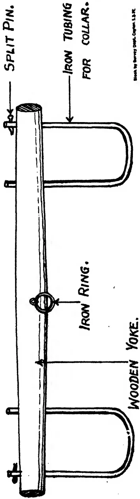
A technical drawing of an improved yoke. The main component is a long, horizontal wooden yoke, shown in cross-section with a dashed line indicating the interior. Two U-shaped iron tubing pieces are attached to the top surface of the wooden yoke, one on the left and one on the right. An iron ring is positioned on the wooden yoke between the two tubing pieces. A split pin is inserted through the wooden yoke and the tubing on the left side. Labels with arrows point to these components: 'SPLIT PIN.' points to the pin on the left; 'IRON TUBING FOR COLLAR.' points to the tubing on the right; 'IRON RING.' points to the ring in the middle; and 'WOODEN YOKE.' points to the main wooden beam. 203inches deep. Small collars are used for local black cattle and larger ones for heavier bulls of the Hissar type. The collars are fastened to the yoke by split pins inserted through the hole at each end of the collar. The split pin is inserted parallel to and alongside the yoke lest the necks of the animals be injured. An iron ring in the middle of the yoke completes it.
Among the advantages of this improved yoke are that it is securely maintained on the necks of the animals and that it cannot roll about. This method of yoking balances the weight properly on the body of the animals and enables them to use their full force in effecting the draught. This is particularly so in the case of buffaloes as these animals have no hump to keep the yoke in position when at work.
The selection of the proper sized yoke for intercultivating operations is important. The size of the yoke depends on the width of the rows of plants to be intercultivated. If the crop is sown in rows 3 feet apart then the yoke should be 6 feet from the centre of the neck of one animal to that of the other. Allowing 6 inches on either side, the yoke should be 7 feet long. If the crop is sown 2 feet apart, then the yoke should be 5 feet long. A convenient formula to work out the length of the yoke required is to multiply the width of the row by 2 and add 12 (the result in inches). For intercultural operations one long yoke with several sets of holes drilled will serve for differently spaced crops. The usual plough yoke is 4 feet long.
A common mistake made in hitching an implement to the yoke is to pass the draught chain round the yoke instead of fastening it to an iron ring. The iron chain has a tendency to cut into the yoke with the result that in a few months the yoke breaks. It is very important that the animals should be well muzzled when they are to be yoked to the plough or to any other implement to prevent them picking up various palatable foods whilst working. This interferes with the work, and is most annoying, particularly when intercultivating operations are being done.
The double yoke is very commonly used in India for ploughing and for working the mhot.
204M. CRAWFORD, M.R.C.V.S.,
DEPUTY DIRECTOR (ANIMAL HUSBANDRY) & GOVERNMENT
VETERINARY SURGEON
IN a previous article* it was stated that improvement of cattle could not be obtained if attention was paid only to the breeding of better stock; attention must also be paid to improvement of the environmental conditions under which the cattle will be required to live.
The improved cattle obtained by breeding from superior strains will require more or better food if they are to thrive. Certain means whereby the food supply for cattle in villages could be improved were indicated.
Up to the present the method of improving the food supply for village cattle which has received the greatest attention is the popularization of the practice of growing fodder grasses. A number of excellent varieties of such grasses have been introduced into Ceylon and have proved suitable for our conditions of soil and climate. Their extended cultivation is highly desirable but it must not be thought that fodder grasses alone will solve the problem. For example, a ration consisting entirely of succulent fodder grass will not, on account of its very bulky nature, be ideal for a draught bull required to do heavy work, neither will it be suitable for a heavy milking cow. At certain stages of their growth, particularly during periods of ample rainfall, a ration composed solely of fodder grasses is apt to be too succulent and may cause diarrhoea. At such times some foodstuff which will counteract this tendency must be fed along with the fodder grasses. Outstanding examples of foodstuffs suitable for this purpose are cotton seed and paddy straw both of which are available in Ceylon but which are not used to
* The Tropical Agriculturist, Vol. LXXXVII, August, 1936
205anything like the extent they might be. Cotton seed is a very suitable addition to the ration for working bulls and milking cows but should be very sparingly used in the feeding of calves and young stock. In many parts of Ceylon little care is taken to preserve the supplies of paddy straw available at harvest time. There seems to be an unwarranted prejudice against it in many parts of the country, particularly among owners of dairy cows. One often hears the opinion expressed that it causes a decrease in the milk yield. There is no evidence to support this belief but there is good evidence against it.
In Shanghai, in a very large and successful commercial dairy stocked with cows imported from Australia, America and Great Britain, great difficulty was experienced in obtaining supplies of good fodder. It is understood that this difficulty was solved by extensive use of paddy straw with very good results.
In the dairy attached to the Farm School, Peradeniya, paddy straw has been incorporated in the ration on an increasing scale during the past two years with satisfactory results. It seems to be very palatable and is readily eaten by the cows. This fact was strikingly demonstrated when two pedigree Aryshire heifers were imported from Scotland a year ago. Among other foodstuffs sent with the heifers on the ship was a supply of the best quality oaten straw. A few bales of this remained unused on arrival at Colombo and we were very careful to obtain them and take them with the heifers to Peradeniya. Our anxiety to take this oaten straw from the ship was on account of the difficulty, well known to all cattle owners, so often encountered in inducing cattle to take readily to any foodstuff to which they have not been accustomed. To our great surprise we found that these heifers when fed with a mixture of their native oaten straw and our Ceylon paddy straw picked out the paddy straw and rejected the oaten straw. The preference shown was very marked and we have continued to feed paddy straw in quantities up to 5 lb. per day to these heifers ever since. That it did not have any ill-effects on the milk yield was shown by the fact that one of the heifers has since calved and has given 4 gallons of milk in one day which is considered satisfactory for a first calf heifer of the Aryshire breed.
206In view of these facts it is very disappointing to observe how little attempt is made in many parts of the Island to make full use of the supplies available. Badly-made stacks of straw which are quickly damaged and spoiled by rain are too commonly seen. Much larger weights of straw could be obtained if it be cut closer to the ground. It is no uncommon sight to see a stubble of over one foot in length left after harvesting.
During prolonged periods of dry weather the rate of growth of fodder grasses slows down and an area which is ample during wet weather to supply the needs of the owner's herd becomes inadequate. Some cheap foodstuff to supplement the diminished supply of fodder grass during such periods is necessary. The drop in the yield of the fodder grasses could, of course, be obviated by irrigation but this is seldom practicable. Possible supplements which are worthy of trial include cassava and the juicy stems of plantains.
The great value of the roots of cassava as a standby during long periods of drought has been emphasised by Stewart, Principal Veterinary Officer in the Gold Coast, during the past few years. That cattle would eat the roots of cassava if they had access to them was fairly well known but they had never been used to any extent as a cattle food chiefly because of the fear that poisoning would result.
Stewart's experiments showed that the danger was greatly exaggerated if reasonable precautions were taken. He found that cattle readily eat the chopped roots and improved in condition when fed on them. He considered cassava roots the cheapest and best foodstuff for use during the dry season. On one of the Government Farms in the Gold Coast he used up to one ton of cassava roots per day for feeding cattle without any ill-effects. In view of Stewart's results, this foodstuff was tried at the Ambepussa Farm. In the beginning it was fed to two young heifers and two goats. A little difficulty was experienced on the first day or two of feeding in inducing the cattle to eat it readily, but this was soon overcome. Fearing possible ill-effects from hydrocyanic acid poisoning we fed only a small amount at first. Beginning with 1 lb. per head per day it was increased daily till the heifers were getting 20 lb. a day. This was continued for a prolonged period without any ill-effects.
207The two heifers improved in condition as compared with their companions which were not getting cassava. Since then for over a year chopped cassava roots have been fed to the whole herd whenever supplies were available. No cases of poisoning by cassava have occurred during that period. The crop is easily grown, the chief difficulty which has been experienced has been damage by porcupine. As an easily grown and useful supplementary feed for use in the dry season it is well worthy of extended use in Ceylon. In using cassava as a cattle food, the chief point to remember is that it must be fed fresh. Only sufficient for one day's supply should be dug at a time. It must not be dug up and stored for future use. The roots should be chopped and fed to the cattle as soon after digging as possible. A suitable method of using them is to feed the chopped roots in the evening when the cattle return from grazing. A turnip pulper as used in Europe for chopping turnips for feeding to cattle has proved very suitable for chopping cassava roots and saves a great deal of labour.
Plantain stems cut into slices are readily eaten by cattle and where available are a very useful supplementary feed especially during dry weather when succulent foods are very scarce. In some parts of Tanganyika where grazing lands are very scarce certain tribes are stated to maintain their cows almost entirely by stall feeding. The cows spend practically their whole lives inside the sheds. They are fed on weeds collected from the cultivated areas, and on grasses cut and collected by the women. Every third day a plantain tree is cut down. The stems and leaves are cut into thin slices for the cattle. All banana skins are also fed to the cows.* The cows maintained in this fashion are said to be small in size but are healthy, in good condition, and supply their owners with milk for their household.
There are few places in Ceylon where conditions for cattle are more adverse than in such parts of Tanganyika and such an example shows what can be done even under the worst conditions when the cattle owner is prepared to exert himself.
(To be continued)
* Annual Report, Department of Veterinary Science and Animal Husbandry, Tanganyika Territory, 1935
208DUNCAN J. De SOYZA, Dip. Agric. (Poona),
AGRICULTURAL INSTRUCTOR, KEGALLE
THE successful cultivation of any crop depends on the issue of a battle waged between the crop and various foes both visible and invisible. Pests and diseases in any form are debilitating and destructive to cultivated crops. Climatic and weather conditions, though they sometimes prove hostile, are not within the power of the farmer to bring under subjugation, but by due application, pests and diseases can be brought under control or fully exterminated. Not the least of a farmer's enemies are weeds, which add enormously to the cost of crop production. Although weeds are responsible for nearly halving the yields of many crops, yet adequate attention is not paid in most countries to their control. According to a report by the Agricultural Service Department Committee of the United States Chamber of Commerce, annual losses from weeds considerably exceeds the combined losses sustained from animal and plant diseases and the depredations of insects, rodents and predatory animals. The rank growth of weeds invariably found in paddy fields is largely responsible for the low yields obtained from paddy, the most important food crop of the indigenous population in Ceylon. In the field, weeds set up an incessant competition with the main crop for plant food, light and water. Weeds, especially graminaceous herbs, very often harbour insect pests and diseases inimical to paddy and also add to the cost of labour.
According to the writer's experience the effect of Coix gigantea in paddy crops is greater than the combined damage done by all other paddy field weeds. Coix, being a cereal, demands the same kind of plant food as is required by paddy
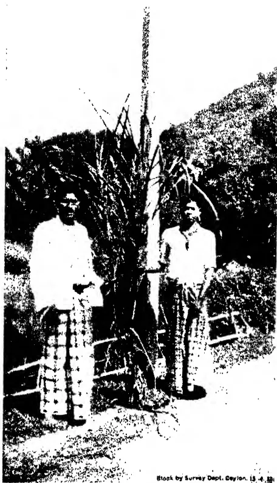
A black and white photograph showing two men standing in a field next to a very tall, dense Adlay plant. The plant is significantly taller than the men, reaching towards the top of the frame. The men are wearing light-colored shirts and patterned trousers. The background shows a hillside with some vegetation.Stock by Survey Dept. Ceylon. 13. 4. 1911
A full-grown wild Adlay plant in seed
210The enclosed grains can be fed to poultry after crushing the fruits. The stems, normally tinted reddish brown, are freely branching, very stout, smooth and polished, and root at the lower nodes. Wild adlay does not tiller so freely as the cultivated species, produces fewer female spikelets and possesses a more vigorous root-system. Specimens removed from cultivated paddy fields had a more efficient root-system than surrounding paddy plants, the feeding range being much wider, spreading as it did from feet to 2 feet. Examination of the root-system revealed that there were clearly two types of roots—a slender fibrous type, densely covered with absorbing capillaries, originating from the base of the plant and long, cylindrical roots radiating from the base and lower nodes. The roots arising from the upper nodes act as props to the plants in assisting them to withstand the force of flowing water or wind, while the less adapted paddy lodges heavily under such environmental conditions. The submerged parts of the roots are spongy and pithy serving perhaps as breathing organs. Wild adlay growing on dry land does not possess this characteristic.
It is of paramount importance, in the interest of paddy cultivation in Ceylon, to arouse concerted action in the control and eradication of this weed, as its spread is becoming general and its effect in the reduction of crop yields is considerable. Several fields have been seen in which this weed so predominated over the paddy crop, that the cultivators gave up harvesting the crop altogether. In badly infested areas paddy plants bear few grains and the expenditure in harvesting is greatly increased, as selective reaping has to be resorted to—in itself is a laborious task.
It was noted that wild adlay needs 5 to 6 months to flower and seed and hence it matures only during the maha season—when long-age paddies are sown in these fields. Although it grows with short-age paddies when sown during yala, it has no time to reach maturity, flower and seed and the plants are harvested with paddy crops before seeding. Seeds start sprouting the fields about 3 to 4 days after the paddy crop is sown and at a time when the field is devoid of free water and when the mud is warmed by direct solar heat.
211Field observation and pot experiments revealed the fact that when fully submerged under water, wild adlay seeds do not germinate and, in adopting any control measures, this behaviour of the seeds should be taken into consideration. Viability of the seed is very great, so that seeds may remain dormant underground for considerable periods to germinate as soon as suitable conditions arise. The seeds are heavy and sink in water but are nevertheless transported by running water in channels and by overflowing flood water. Rabbing or burning the paddy stubble tends to increase rather than decrease the germination of seeds and it is suggested that the scorching of the stony, hard coat of the seed permits the more easy penetration of water.
When the life history and peculiarities of this plant are considered, it will be realized that if it is to be successfully controlled it requires both communal and individual effort. The campaign should be well organised with a definite programme for attaining the object in view. The measures adopted should be persistently and faithfully executed for several years.
The following control and eradication measures are suggested :—
the seed from sprouting and if already sprouted, will kill them if they are kept submerged for a considerable period.
5. Cutting out the weed, when it has reached an appreciable size and flooding the field to kill out the root-stock. The green material can be fed to cattle.
6. Thorough weeding.
7. Use of clean seed.
8. The collection and destruction of seeds that have dropped before or during harvesting.
9. Removal of the weed if found growing on highland in the neighbourhood of paddy fields.
10. If other methods fail, the short-age paddies may be grown during both maha and yala seasons to prevent the weed from seeding.
1. Owing to the close similarity of wild adlay seedlings with paddy seedlings the plants are overlooked and left behind during the process of weeding.
2. Owing to the strong root-system, seedlings may break away during weeding operations, leaving the root-stock behind to shoot out again.
3. Flowering and seeding of wild adlay often coincides with that of the paddy crop and most of the seeds drop off before or at the time of harvest. In consequence the weed multiplies very rapidly.
4. No cultivator can be induced to enter the paddy field and handle the weed, once the paddy has advanced in growth.
5. Owing to their great viability, seeds remain dormant for a long period, till favourable conditions appear for germination.
6. Malicious introduction of seed to paddy fields through human agency.
7. Control measure (No. 5) cannot successfully be carried out in paddy fields infested with land crabs, since, as soon as the paddy fields are flooded, crabs become more active and large numbers of paddy seedlings are eaten and destroyed by them.
8. The system of tenancy cultivation, by which cultivators are changed from season to season, militates against conscientious application, hence continuity in control methods is the exception rather than the rule.
213A. W. R. JOACHIM, Ph.D.,
AGRICULTURAL CHEMIST
THE modern method of soil sampling is based on the soil profile, which is a vertical section of the soil from the surface down to parent rock or undifferentiated soil material. A soil profile consists of various layers or horizons, termed respectively the A, B and C horizons. The A horizon is the soil proper and is generally darker in colour than the underlying B and C horizons, due to the accumulation of organic matter. It may be divided into sub-horizons designated A1, A2, etc., according as to whether the intensity of the colour varies or not.
The B horizon is the soil layer into which material from A is washed down and deposited. It may thus be darker in colour or be more gravelly than the lower part of the A horizon. This also may be sub-divided into B1 and B2, etc. It generally corresponds to what is popularly known as the sub-soil. The C horizon is the partially decomposed or undecomposed rock material or the undifferentiated soil material of more or less uniform colour and texture but of varying depth. Often the B horizon is not present in tropical soils, the A and C horizons only being observed.
The different horizons or sub-horizons are distinguished from each other either by differences in colour, texture or structure. The modern method of soil sampling is according to the depths of the horizons, and not according to standard depths, e.g., 0-9', 9'-18' as in the old method. As many soil samples will therefore be taken as there are horizons in a profile.
214In selecting a site for soil sampling, care must be taken that it is representative of the area. A preliminary exploration is therefore essential, during which road cuttings, ravines, and other soil exposures in the area are carefully examined. Once a site is selected a trench 3 to 4 feet deep and about 3 ft. by 3 ft. cross section is dug, one side at least being made vertical. A freshly cut hillside adjoining a road would also be suitable, but in this case the face should be cut into the hillside to a depth of 2 or 3 inches before the samples are taken.
At the profile site selected, the following observations are made for each horizon and sub-horizon; colour and depth; texture, i.e., whether loamy, sandy, gravelly, clayey, etc.; the presence or absence of quartz or ferruginous gravel, concretions, boulders, etc. and to what degree; whether it is of the single grain, clod, granular, columnar (rough rectangular with a slightly domed top), prismatic structure; degree or hardness and compactness; root growth; horizon boundary demarcation, whether distinct or indistinct, etc.
The following general information regarding the nature of the area should also be recorded: site; rainfall and temperature; topography of area, whether level, undulating, hilly, etc.; mode of formation, whether formed in situ, i.e., sedimentary or transported (sedimentary) and, if the latter, whether wind-blown or alluvial; geology of plant material (if known); drainage and nature of vegetation. A typical example of a description of a soil profile is shown at the end of the article.
The soil samples are then taken as follows: a vertical slice of about 3 inch to 4 inch thickness from the side of the profile is cut from the top downwards to the depth of the first horizon or sub-horizon and the soil thus obtained well mixed and a sample of about 2 lb. put into a small cloth bag. On the outside of the bag the identity of the sample is marked in coloured pencil, e.g., A1. A label similarly marked should also be placed inside the bag. The bag is well tied and retained for despatch with others. The B and C horizons are next sampled and separately bagged and labelled. In each case only the actual range depth of soil covered by the horizon in question is sampled. It is not generally necessary to sample the sub-horizons, unless these are very clearly discernible and are required for special purposes.
215All the samples from one profile are put into a gunny bag which is well tied and suitably labelled with the name of the place the samples are from, and the number of small soil bags enclosed. When the soils are sent for examination the observational details should also be forwarded. For further information on the subject of soil sampling, reference should be made to The Tropical Agriculturist, Vol. LXXXIV, April, 1935. "Studies on Ceylon Soils 1.—Modern Methods of Soil Study and Classification and Their Application to Ceylon Soils."
WET PATANA SOIL PROFILE| Horizon boundary indistinct | A 1 0-14" |
} Black peaty loam ; loose and friable ; irregular columnar ; root growth poor ; acid |
| Horizon boundary very distinct | A 2 14-25" |
|
| Horizon boundary distinct | B 25-32" |
} Greyish yellow loam forming pan ; quartz and iron stone concretions abundant ; conglomerate ; hard and compact ; roots absent ; acid |
| C 32"-10' |
Kandapola; 6000 ft.; 100 in. 60° F; basic and intermediate metamorphic rocks; residual; drainage imperfect; steep; bracken, grasses and Rhododendrons.
216("If the work of agriculture is well cared for, then one gets gold out of it ; if, however, agriculture is neglected, then it brings poverty")
—Mahamuni Parasara, 1300, B.C.
SEED selection on coconuts can be carried out by any intelligent planter who is willing to take pains. It consists of (a) Selection of Mother Palms, (b) Selection of Seed Nuts. The selection of mother palms is the more important of the two. (Selection of seedlings in the nursery is considered in Leaflet No. 2).
A mother palm should be selected according to the following standards :—
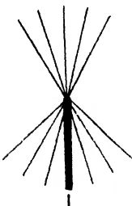
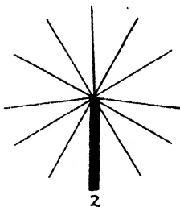
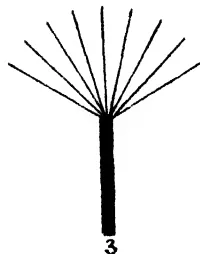
Types 1 and 3 should be avoided, even if they show other desirable characters. Type 2 displays the best spread of fronds.
* By W. V. D. Pieris, Geneticist, Coconut Research Scheme (Leaflet No. 1).
217(v). The crown should carry a large number of fronds and consequently, a large number of inflorescences. Avoid crowns that look empty on one side, even though the inflorescences that are present on the other side appear to set many nuts.
(vi). It need hardly be said that inflorescences should be well stocked with nuts. But it might be mentioned that inflorescences in all stages should be noticeable on the palm, carrying their full complements of developing nuts. Very often one is deceived by heavy lower bunches.
(vii). The size of nut is not important, provided large numbers are present. A medium-sized nut is produced in the best numbers. Palms with extra large nuts should be avoided.
(viii). The weight of the husked nuts should be high, since on this depends the copra-producing power of the palm. The number of nuts and the weight of the husked nuts provide the best standards of selection.
(ix). Do not select palms growing in favourable situations, such as near cattle sheds and human dwellings, because they will be better than palms growing in the open field in competition with their neighbours merely by reason of their favourable surroundings. Palms that bear well in a normal or even unfavourable environment should be selected.
Once a mother palm has been selected, it is necessary to study its capacity for yield. In order to do this, yield records must be kept for at least three years, during which time it will be possible to test its performance. The number of nuts and the weight of husked nuts of individual palms should be recorded at every pick in a note-book ruled out in the following manner :—
DATE OF PICK :
| Field No. | Palm No. | No. of Nuts | Weight of Husked Nuts | Calculated Weight of Copra |
|---|---|---|---|---|
The weight of copra is approximately equal to 32 per cent. of the weight of the husked nuts. From the last column it will be possible, at the end of each year, to get a fair estimate of the amount of copra which any particular palm would have produced.
It should be borne in mind that, under fair treatment, a good palm will always remain a good palm and a bad palm will be equally constant in remaining bad.
218At the end of three years all selections that have not produced, on an average, 100 nuts and 175 lb. of husked nuts per annum should be rejected. Wherever possible there should be at least one proved mother palm for every five acres on an estate. This would not be possible in the case of small-holdings, the owners of which should, therefore, buy the seed-nuts or seedlings they require from large estates or from the Coconut Research Scheme.
Seed selection does not end with the selection of mother palms. The nuts from these palms should also be selected according to the following rules :—
If you are interested in the performance of the daughter palms in relation to the mother palms, as you should be, keep the nuts from the different palms and bunches separate and number each nut according to its mother palm number and bunch number ; and when planting the nuts in the nursery, be careful that the nuts do not get mixed. Pegs should be used to mark the palm and bunch numbers. When the seedlings are put in the field, they should carry individual numbers stamped on zinc tabs. The tabs could be tied on with wire to the seedlings when they are being transplanted, but later they should be fixed to wooden pegs driven into the ground.
The extra work involved in carrying out the suggestions made in the last paragraph will be well worth while, because in a few years, when the daughter palms come into bearing, you will be able to compare their performance with that of the mother palms.
Seedling Selection and Transplantation will be discussed in a later leaflet.
219COCONUTS should not, as a rule, be planted out directly in the field since :—
(a) Seed nuts do not all germinate at the same time, and late germinations, which would be rejected in the nursery, would be allowed to remain in the field. It is believed that seed nuts which germinate slowly give rise to palms which are equally slow in coming to maturity.
(b) The selection of seedlings for characters other than early germination would be prevented.
(c) Watering, which is necessary during the early stages of growth and which can be carried out easily in a nursery, would be much more difficult and expensive in the field.
(d) It will be extremely difficult in the open field to keep a check on the various pests and diseases that attack coconut seedlings during their early life, whereas in a nursery this would be a fairly easy matter.
II. Location.—Nurseries should be on sandy or light loamy soil, free from water-logging, but close to a source of water like a well or a stream, away from heavy shade, and, if possible, close to the area which is to be planted up.
III. Seed Beds.—The nursery-beds should be long and narrow in order to facilitate watering when necessary and should be raised 8 to 10 inches above the general ground level. Beds should be separated by shallow drains, which join up to form a lewler-drain for carrying away excess water during rains.
It is hardly necessary to add that the soil in the beds should be free from stones, coconut roots and weeds. The presence of coconut roots and other decaying organic matter in the soil encourages termites which are quick to attack germinating coconuts and coconut seedlings.
In permanent nurseries, the edges of the beds should be turfed ; otherwise, they will get damaged during rains and fall in, blocking up the drains as a result.
After the soil in the beds has been levelled, it should be compacted with an ordinary wooden compactor or a light garden-roller.
IV. Spacing.—The spacing of the nuts in the beds will depend on the length of time the seedlings are intended to be kept in the nurseries after they have germinated. The longer the period, the wider should be the spacing. As a general rule, it is unwise to keep seedlings too long in the nurseries, because
* By W. V. D. Pieris, Geneticist, Coconut Research Scheme (Leaflet No. 2).
220once the roots have passed out of the husk and penetrated into the soil, it is not possible to take the seedlings out for transplantation without subjecting them to a more or less serious shock due to root damage. The ideal to aim at is to remove the seedlings before the roots have entered the soil. This is not always possible in practice, especially if seedling selection in the nursery is intended, when the seedlings have to remain in the nursery until they have developed at least two foliage leaves.
If it is desired to transplant the earliest sprouted nuts before any root have passed out of the husk into the soil, that is, when the sprout is about an inch long, seed nuts could be put down very close to each other, less than six inches apart. There will be no competition for food, moisture or light at this stage and the spacing distance will, therefore, be of little account. When transplanting at this stage, it must be borne in mind that only those nuts should be taken that have germinated within three months of the date of planting in the nursery.
If one intends to transplant when the sprout is 4 to 6 inches long or at the 2nd-leaf stage, seedlings should be spaced 9 to 12 inches from each other.
In laying down a nursery, always try to make a neat job of it. Let the rows be straight and the spacing regular. It is much easier, quicker and safer for the seedlings, to be able to walk up and down a straight row when one has to water them, or hunt after leaf-eating caterpillars or use a spray against scale-insects, than to pick one's way over an irregularly planted seed-bed.
We have found it convenient to cut long straight trenches down the beds, spaced 9 inches apart and about 6 inches deep, in which the nuts are placed at the correct distances and covered over with soil.
V. Position of Nuts.—Nuts should be planted flat or on the side and not upright. Our experiments have indicated that the seedlings that develop from nuts planted upright suffer more from drought and are less robust than those that develop from nuts planted flat.
After the nuts have been positioned, they should be covered over with soil and not left exposed. The number of nuts planted in the nursery should be at least 50 per cent. or if possible 75 per cent. more than the required number of seedlings. We ourselves reject about 50 out of every 100 seedlings in our nurseries at Bandirippuwa Estate.
VI. Germination and Growth Records.—Seedlings for transplantation should be selected in relation to the following characters :—
The good nurseryman will study each seedling separately. For this purpose, it is necessary to number nuts in relation to the parent palms, the numbers being painted on the nut with tar. For instance, if the nut is the 3rd
221nut of the 1st bunch of the 52nd palm of the 6th block on the estate, the number on the nut should be VI-52-1-3. If it is the 7th nut of the 2nd bunch of the 39th palm on the 3rd block on the estate, the number should be painted, III-39-2-7, and so on.
A note-book should be ruled out as follows and the data regarding the nuts and subsequent seedlings should be entered against each individual number. The suitability or unsuitability of the seedlings for transplantation should be stated in the last column.
Date of Planting in Nursery . . . . .
| Block No. | Palm and Bunch No. | Nut No. | Date of Germination | No. of days taken for Germination | General Remarks on Seedlings |
|---|---|---|---|---|---|
Since the numbers on the nuts will not be visible once they have been put down in the nursery, it is a good plan to have pegs to indicate the nuts from each palm. The number of the palm and the number of nuts from each bunch should be painted on the peg, together with the Block number, as follows :--
| VI -37 |
| 1 - 7 |
| 2 -14 |
~~~~~
which means
| { | Block VI, Palm 37. |
| 1st Bunch 7 Nuts | |
| 2nd ,, 14 ,, |
Coconuts germinate in three to four months, and develop two or three leaves about two months after germination. As a rule, the sprout is developed and appears through the husk some time before the roots pass into the soil. The first roots emerge from the husk when the sprout is a few inches long ; and when the first two or three green leaves are developed, not many roots are found to have entered the soil.
222VII. Seedling Selection.—Seedlings are transplanted at one of three stages, viz. :—
At the first stage, the sprouted nut could be removed to the field without doing any damage to the roots, but it is impossible at this stage to say whether the subsequent seedling will be robust or weak, well developed or deformed.
At the second stage too root damage is small and the seedlings have the added advantage of a higher survival value than seedlings at the first stage. But at this stage also, the characters of the fully developed seedling cannot be studied and used as a basis for selection.
It is only at the third stage, that a seedling can be properly studied and reliably selected according to all the standards laid down, viz., Earliness of Germination, Rapidity of Growth and Sturdiness. Data regarding earliness of germination will be found in the Nursery Record Book, mentioned above, and rapidity of growth and sturdiness could be quite easily gauged by eye or by measurement.
The two expressions “sturdiness” and “legginess” might now be defined.
A sturdy seedling grows up straight, has a stout “stem,” and dark-green, broad leaves, with stout midribs.
A leggy seedling is often curved in growth, has a thin, weak “stem,” and pale-green, narrow leaves, with thin midribs.
Some caution must be exercised in selecting seedlings for height alone, since it sometimes happens that leggy seedlings are taller than sturdy seedlings.
VIII. General Care of the Nursery.—No weeds should be allowed to remain in nurseries, especially during drought. Watering should be done once a day during dry weather. No manufacturing of nurseries is necessary. A careful lookout must be kept for pests and diseases.
Fortunately, in Ceylon we are not troubled greatly with coconut seedling diseases, except very occasional outbreaks of grey-blight, Pestalozzia palmarum. Some damage is done by scale-insects, Aspidiotus destructor, termites and various species of leaf-eating caterpillars, including the coconut caterpillar, Nephantis serinopa, nettle grubs, bagworms and the larvae of the butterfly, Elymnias fraterna. Notes on the control of scale-insects and termites are given later. Caterpillars on seedlings can be controlled by hand-picking or by spraying with lead arsenate at the rate of 1 oz. of the powder in every 2 gallons of water.
Grey-blight causes yellow or brown oval spots, up to inch in diameter, which dry up in the centre and become typically grey. Protection against the
223disease may be obtained by spraying at intervals of about a fortnight with a reliable copper fungicide. Colloidal copper (1 oz. to 1 gallon of water) is a convenient fungicide, since it is easy to prepare and relatively cheap. The addition of soft or yellow soap, at the rate of 1 oz. to 1 gallon of the spray mixture, ensures good spreading of the spray. A sprayer of the 'Flit' type is adequate for small plants, but in large nurseries a pneumatic knapsack sprayer is desirable. Spraying should be done in the early mornings or late afternoons and it is necessary to see that both sides of every leaf are wetted with the spray.
An attack of scale insects will be observed by the appearance of yellow spots on the leaves accompanied by the presence of the insects themselves on the under-surfaces of the leaves. Precautions must be taken at the very first appearance of the insects and the plants should be sprayed with kerosene emulsion, which is quite easily prepared as follows :—
| Common laundry bar soap | .. | lb. |
| Soft water | .. | 1 gallon |
| Kerosene | .. | 2 gallons |
Dissolve the soap in the water by shaving it into hot water over a fire. Remove vessel from fire and add the kerosene, stirring thoroughly. Then churn up the mixture by drawing it up into a garden syringe and forcing it back into the vessel. Keep this up until the mixture becomes creamy and begins to thicken. If it does not thicken fairly soon, it may mean that the water is too hard. Add a little borax or soda to soften the water, but this should be done at the start if the water is known to be hard. The mixing is completed when the creamy mass begins to go hard through the pump. The resulting cream or emulsion is your Stock Solution and for applying to the plants mix 1 part of the Stock with about 9 or 10 parts of water.
There are two subterranean groups of termites known to attack coconut palms at various stages of their growth.
(1) The mound-building termites, notably Cyclotermes redemanni and Hypotermes obscuriceps. These are the so-called scavenging termites which feed on dead and decaying plant tissues. They sometimes invade nurseries or individual seedlings in the field to feed on portions of the husk and may injure the growing roots if these are not healthy; and, in so doing they may possibly hinder the growth of healthy roots.
Mound-building termites come from a main mound-nest which may be some distance away, and they may start new nests around or near the seedlings. Such nests eventually become mounds.
These termites have to maintain a continuous connection with a main or subsidiary nest.
224Treatment.—All mound-nests should be treated according to the instructions given below.
The diameter of the base of the mound to be treated must be obtained first. The mound should then be levelled, and one hole should be drilled in the area previously covered by the mound to every 6 inches of diameter measurement, the holes being distributed evenly over the area, and being about 12 inches deep. 1 oz. of petrol should be injected into each hole.
Thus the area covered by a mound, 18 inches in diameter, would require 3 holes and 3 ounces of petrol, while the area occupied by a large mound, 6 ft. in diameter, would require 12 holes and 12 ounces of petrol. The cheapest method of application is to drill the hole with a crowbar and pour in the petrol through a funnel fitted with a long neck or rubber tubing. When funds permit, a Vermorel " Excelsior " Injector can be used with advantage, as the dosage can be automatically regulated and the holes drilled by the instrument itself.
The treatment of individual attacked seedlings is given in (2) below :—
(2) Termites that build no mounds, species of Coptotermes. These termites live underground and feed on living, healthy tissues, and are occasionally known to attack coconut palms and seedlings. A small underground nest may be near each individual attacked palm.
Treatment.—For the treatment of individual seedlings attacked by termites mentioned in (1) or by species of Coptotermes, a soil fumigant such as paradichlorobenzene (P.D.B.) is recommended.
Apply at the rate of 1 large heaped teaspoonful or about oz. per seedling, mixed thoroughly with 1 cigarette-tin full, or lb. of fine soil or sand to give an even distribution. Sprinkle the mixture thinly and uniformly in a shallow, circular furrow with a radius of about 6 to 9 inches from the seedling or base of palm and cover over with soil.
This is a true ant Dorylus orientalis, although sometimes mistaken for a termite. Dorylus is a small, slender, reddish-brown ant, the " workers " of which are about one-fifth of an inch long, which eats healthy roots of a great variety of plants and riddles tubers and rhizomes. It is occasionally found damaging coconut seedlings. The paradichlorobenzene soil treatment, described above, can be used with success against this pest.
The notes on pests and diseases and their control, under general care of nursery, have been compiled from information kindly supplied by the Entomologist and Mycologist of the Department of Agriculture, Peradeniya, to whom my thanks are due.
225THE following notes have been prepared in response to the demand for information on the planting of Cover Crops suitable for coconut estates.
The three species recommended below have proved to be the most suitable under local conditions :—
Calopogonium mucunoides.
Centrosema pubescens.
Pueraria javanica (phaseoloides).
A quick-growing plant, it thrives on a wide range of soils and forms a cover in six to eight months if sown under suitable weather conditions. Seeds are flattened and brown. Calopogonium dies back during drought and after seeding, but regenerates after the rains.
It is best sown as a mixture with Centrosema.
Compared to Calopogonium, Centrosema makes slow growth in the early stages, but when properly established forms an excellent cover. It is very hardy and does not easily die back during drought. If die back occurs recovery is very rapid after rains. Seeds are flattened, brownish green with dark-green markings.
Centrosema may be considered the most suitable under general conditions.
In general appearance resembles Calopogonium, but the leaves are much larger and hairy. Roots profusely at the nodes. Seeds small, dark-brown and susceptible to insect attack, and sometimes shows poor germination.
Though it can be grown on a variety of soils, it is particularly useful for the heavier types of soils. Growth moderately rapid and forms a dense thick cover in one to one-and-half years. Shows a slight tendency to die back during drought, but recovers after a few showers.
Pueraria seeds are expensive, but it may be readily propagated from cuttings.
It is often an advantage to sow a mixture of a quick-growing cover crop, such as Calopogonium, which dies back during a drought or after seeding and a slow-growing, hardy, perennial species such as Centrosema. Calopogonium germinates quickly and smothers the weeds, while the slow-growing Centrosema gradually establishes itself. Once the Calopogonium dies back the Centrosema takes its place and forms a uniform complete cover.
* By M. L. M. Salgado, Soil Chemist, Coconut Research Scheme (Leaflet No. 3).
226(a) Seed Bed.—The importance of a seed bed free from weeds must be stressed if a cover is to be quickly and successfully established. The land should be first ploughed and disc-harrowed across the ploughed furrows, and all weeds collected and removed. A final harrowing with a chain harrow produces an ideal surface for sowing seed, and also helps in the complete removal of weeds. If a chain harrow is not available, the disc-harrowed surface should be levelled with mamoty-forks or hand rakes.
Where covers are planted for the first time, and particularly in the case of poor sandy soils, it is recommended that a start be given by the application of a small amount of cattle manure or a small dose of artificial manure. A suitable mixture would be Sulphate of Ammonia 1 lb., Superphosphate 1 lb. and Muriate of Potash 1 lb. per square.
(b) Planting Covers on Husk Trenches.—Covers may be easily established by planting on trenches in which coconut husks have been buried and covered with soil. This method also favours the decay of the husks.
It is needless to mention that planting should always be done during the rainy season, preferably at the beginning of rains.
(c) Seed Rates.—A seed rate of 15 to 30 lb. per acre may be considered sufficient under general conditions, the seed being broadcast. If seed is plentiful and comparatively cheap a higher seed rate may be used, especially on poor sandy soils.
If planted in rows, two feet apart, a seed rate of about 8 lb. per acre may be used. In this case it is possible to weed between rows till the cover establishes itself.
In planting a mixture of Centrosemia and Calopogonium, 12 lb. Centrosema and 8 lb. Calopogonium would form a suitable mixture.
Centrosema seeds which have a hard seed coat will germinate more readily if soaked overnight in water. Seeds so treated should not be allowed to dry before sowing, and should be planted in rainy weather.
After sowing, the seed should be covered by lightly forking in with mamoty-forks, hand rakes or by a chain harrow. It is also a good practice to cover the planted areas with coconut fronds.
(d) Pueraria.—Seeds of Pueraria are somewhat expensive, being about a rupee a pound, compared with Calopogonium which costs about 30 cents and Centrosema about 20 cents a pound. Further, Pueraria seed often show poor germination. Economy in seed rates in planting Pueraria can be effected in two ways:—
(b). Pueraria may be easily propagated from cuttings which can be lifted with numerous adventitious roots. These should be planted in wet weather.
Once established the cover should not be allowed to grow rank and left permanently untreated. Opinion differs as to the best method of treating the cover, but the following methods can be tentatively recommended :—
It must be stressed that the treatment of cover crops should only be carried out during the rains, so that the cover would regenerate itself from the buried cuttings or self-sown seed.
It is also recommended that alternate rows and not the entire field should be treated. In case adverse weather conditions follow the treatments and the cover fails to regenerate in the treated rows, the untreated portions would grow over into the neighbouring rows, and the land would not be without a cover. Pueraria is often slow to recover, and such a treatment would be advantageous in the case of this cover. A further advantage of this method of treatment is to check erosion on hilly land if heavy rains follow. In this case the rows treated should be in contour strips.
Where the cover crops are grown on young plantations it is essential that an area round the young palms up to a distance of six feet should be kept clean weeded. Otherwise the creepers tend to climb up the young palms and check their growth.
Cover crops may be utilised as fodder by grazing cattle lightly. Especially during dry weather heavy grazing should be avoided or else the covers may fail to recover. Centrosema is particularly relished by cattle. Calopogonium seems to be less favoured, but buffaloes are indifferent and eat all these varieties with a preference for Centrosema.
228CITRUS mottle-leaf or foliocellosis has been noted in various citrus-growing districts throughout South Australia, the disorder occurring under varying soil, climatic and cultural conditions. Specific occurrences of mottle-leaf have been under observation in such dissimilar districts as Berri, Waikerie, Mypolonga and Beetaloo Valley, and although a variation in intensity of the trouble has been noted, the general symptoms have been similar in each area.
As has been the experience in the United States, there appears to be in South Australia a number of indirect casual or contributory factors associated with the mottling; very heavy infestation of tree roots with the Citrus Nematode (Tylenchulus semipenetrans) was found to be associated with cases of mottle-leaf occurring at Berri, Waikerie and Beetaloo Valley, thus confirming the observations of Thomas, in California. Affected trees at Beetaloo Valley, in addition to being heavily infested with citrus nematode, were located in soil containing injurious salts (notably sodium chloride) at concentrations generally considered inimical to maintenance of thriftiness.
Neither heavy nematode infestation nor excessive soil salinity were obviously associated with the incidence of mottle-leaf at Mypolonga.
At Beetaloo Valley, steps were first taken to correct the position in regard to soil salinity, the grower being advised to vary his irrigation practice in such manner as to aim at downward leaching of salt, and to safeguard against further undue saline accumulation in the surface soil.
In other centres where citrus nematode was the chief associated factor, the position initially appeared to be very difficult; owing to the nature of the citrus nematode, no direct measures against this pest could be suggested. There is abundant evidence that on suitable soils, and where good cultural practices are employed, citrus trees may be maintained in good health, despite the presence of citrus nematode on their roots. That is to say, combat of citrus nematode must consist in ensuring that soil and cultural factors are as favourable as possible.
Recent investigations in America have indicated that mottle-leaf may often be related to deficiency of zinc, whatever indirect contributory or secondary
*By A. G. Strickland, M. Agr. Sc., Chief Horticulturist in The Journal of the Department of Agriculture of South Australia, Vol. XL, No. 7, February, 1937
229factors may be operating ; or at least, that the mottle-leaf condition may, in many cases, be rectified by application of zinc compounds. Various factors frequently associated with mottle-leaf—such as citrus nematode infestation, soil salinity, lack of soil humus, &c.—may be partially contributory. The exact relations of these factors still remain to be determined, but as treatments with zinc has been so widely successful in other countries, experiments have been conducted with zinc compounds in several South Australian districts.
First attempts to supply zinc to citrus trees suffering from mottle-leaf consisted of direct applications to the soil of zinc sulphate ; although this method was usually effective, it was also dangerous and frequently resulted in injury to treated trees.
When citrus trees are sprayed with zinc compounds, the leaves are able to take up appreciable quantities of zinc, and there is little or no danger of tree injury. Experimental work in South Australia has been confined to the application of zinc-containing sprays.
The leaves show irregular yellow chlorotic areas between the main lateral veins, the part surrounding the mid-rib and lateral veins usually remaining green. The result is an irregular mottling, and where trees are but slightly affected, little or no effect on tree health or cropping may be noted.
In severe cases, however, leaves on new growth are frequently small, and there develops considerable die back of young twigs, the tree becoming stunted, unthrifty and unproductive.
The chief experiments on mottle-leaf control have been carried out at Berri, but check plots have been also sprayed at Waikarie, Myoplonga and Beetaloo Valley.
The materials concerned in these trials consisted of 60 late Valencia orange trees on the property of Mr. B. H. Jungfer. The trees were seven years old, and the cultural treatment which had been applied to them subsequent to planting was such that they were expected to thrive ; the soil type on which they were planted was Winkie Sand according to the Council for Scientific and Industrial Research Soil Survey classification, there was no evidence of high water table or soil salinity, and a sound cultural programme had been practised. Nevertheless, each of the 60 trees—disposed in two rows each of 30 trees—was showing severe mottle-leaf. Orange trees of mature age immediately adjacent were generally thrifty and productive, although occasional instances of mild mottle-leaf were also noted in these mature trees.
During March, 1936, individual trees were treated in rotation as follows :—
At this time, root specimens were taken from the trees under test, and examination of these specimens showed that the trees were heavily infested with citrus root nematode (Tylenchulus semi-penetrans).
A slight improvement in the appearance of sprayed trees was noted in June, 1936, and this improvement became more marked as the season progressed. In spring, the difference was readily visible, trees sprayed with both levels of zinc showing a more thrifty appearance, and throwing out healthy growth. The improvement was consistent, all sprayed trees exhibiting better health, and all unsprayed trees remaining severely mottled and non-thrifty. The sprayed trees carried heavier bloom, and it was also noted that the restricted blooming of unsprayed trees was irregular and retarded.
A second series of sprays was applied early in October, the half-strength zinc-lime mixture being substituted on this occasion by a spray of zinc oxide—3 lb. per 100 gallons.
An interesting feature of this trial is the fact that despite heavy nematode infestation, and the extremely unhealthy condition of fibrous roots—apparently sufficient to account largely for the non-thrifty condition of the trees—zinc treatment has resulted in remarkable improvement.
This suggests that zinc sprays may be stimulative, rendering the trees more vigorous, and better able to grow normally in association with the root nematode.
Clark Powell and Mathews have recorded in South Africa, that mottle-leaf affected trees, five months after application of zinc sulphate sprays, showed marked development of new fibrous roots; unsprayed trees did not show this tendency to develop new feeding rootlets.
This apparent effect of zinc treatment in stimulating root development is obviously of importance when trees are infested with root nematode.
Since the initiation of zinc spraying trials at Berri, similar trials have been carried out at Waikerie, Mypolonga and Beetaloo Valley. In each of these centres, spray treatment have been applied more recently than at Berri, and it is yet early to expect responses as marked as those noted at the latter centre. However, in every instance, visible improvement in tree health, and some disappearance of mottle-leaf symptoms have already been observed.
At Waikerie, trees affected with mottle-leaf have been subjected to zinc treatment on two properties, and in each instance improvement has occurred. In the Mypolonga area, Washington navel orange trees and lemon trees have
231been subjected to experiment on neighbouring properties ; sprays of zinc sulphate-lime mixture 10 : 5 : 100, and zinc oxide—3 lb. per 100 galls. were applied in August and again in October to certain sections. Skim milk was used as a spreader and untreated plots were included.
Examination in January, 1937, disclosed improvement in all treated trees, the lemon trees showing a more marked response than the orange trees.
At Beetaloo Valley, an area of orange trees on the property of Mr. J. Halse has been badly affected with mottle-leaf for a considerable period. Investigation in 1935 showed that excessive soil salinity and heavy infestation of the roots with citrus nematode were both associated with the condition of the trees and, in so far as facilities permitted, irrigation technique was amended with a view to correcting the position in regard to soil salinity. Until recently, however, the amendment of irrigation technique of itself had not resulted in appreciable improvement of tree health.
In July, 1936, representative plots on this area were sprayed with zinc sulphate-lime mixture 10 : 5 : 100 and with zinc oxide—3 lb. per 100 gallons. The plots were examined in December, 1936, by District Adviser J. B. Harris, who state that whereas untreated trees have made no apparent improvement in health, all trees which have received zinc sprays are practically free from mottle-leaf and making healthy growth.
The application of zinc sprays to mottle-leaf-affected citrus trees in several districts has led to marked improvement in tree health, and the disappearance of mottle-leaf symptoms. The value of zinc applications under widely varying district conditions has been demonstrated but the exact manner in which the mineral achieves the response is still somewhat obscure.
Extensive research work in overseas countries is now throwing light on many previously obscure features of mottle-leaf, and micro-chemical analysis and cytological investigations are both important in the study of fundamentals. In the field, however, there is scope for considerable work in regard to the determination of conditions under which zinc may be expected to be of value, the optimum season for zinc spray treatment, the frequency at which zinc sprays should be applied, and the possibilities of combining zinc compounds with other routine sprays or dusts.
Nevertheless, the results achieved have been so outstanding that it is considered desirable to bring the known facts before growers in this preliminary report.
At this juncture, it is obviously impossible to issue a general recommendation, but in view of the success achieved in preliminary experiments, it is suggested that growers should conduct on their own behalf trial spraying of trees affected with mottle-leaf.
232For such trials, a spray composed of 3 lb. of zinc oxide per 100 galls. of water is recommended ; a spreader such as lime-casein or skim milk (3 galls. per 100 galls.) may be employed. The cost of spray material is not high, a suitable grade of zinc oxide being available at from 6d. per lb. Although this spray may be applied with reasonable safety at any time of the year, it is undesirable to carry out extensive spraying within a short period of harvest owing to possible difficulty in removing spray residue.
Generally, better responses have been obtained when zinc sprays have been applied just prior to a growth period, and overseas experience has indicated that the beneficial effects of zinc treatment may be expected to persist for a period of approximately two years.
It is not anticipated that zinc treatment will correct unthriftiness where trees are grossly affected by seepage, excessive salt accumulations, poor cultural treatment, or other adverse environmental conditions, but there is definite promise that many cases of typical mottle-leaf may be successfully treated.
233DIFFERENCES of opinion which occur concerning the best method of cultivation for citrus fruits may be partly explained by the fact that soils vary in character and in the amount of moisture and fertility they contain. The systems adopted must, therefore, necessarily vary somewhat in order to meet the requirements of the particular soils.
In Queensland cultivation is an essential orchard operation, and is beneficial in the following ways :—
It improves the physical condition of the soil by making it finer and increasing its depth, thus presenting greater feeding areas to the roots.
The effects of extremes of temperature are reduced, as air is permitted to penetrate to the roots.
In cultivated soils decomposition and nitrification go on more readily, and if materials are present from which nitrogen can be set free, its liberation takes place more rapidly than if the soil is uncultivated.
It increases the water-holding capacity of the soil and conserves moisture.
On the other hand, the fact must not be lost sight of that cultivation may cause injurious effects. Unless care is used, plough-sole may result, and greatly hinder proper water penetration. Also continuous cultivation causes the destruction of the organic contents of the soil and a decrease in the bacterial life. If cultivation is continued throughout the whole season year by year, such soil will soon become depleted of its natural fertility and the trees will show the effects by their unhealthy condition.
The loss of soil organic matter is a major problem in tropical agriculture in all parts of the world, and is particularly severe in many parts of our citrus plantations. Therefore, when considering cultivation programmes, the improvement of the humus content of the soils must be of primary importance. Where young trees are concerned, deep cultivation is advisable in order that large quantities of organic matter, such as manure and green manure crops, can be deeply incorporated with the soil. There should be no danger of injury to the roots of young trees in cultivation to a depth of 10 or 12 inches. However, as the trees become older their rooting systems extend widely in all directions, and, therefore, as deep cultivation will be liable to cut too many feeding roots, shallower cultivation will probably be more satisfactory.
* By R. L. Prost, Instructor in Fruit Culture, in Queensland Agricultural Journal, Vol. XLVII, Part II, 1st February, 1937
234In order to prevent the formation of plough-sole, cultivation at varying depths is frequently practised. However, plough-sole will form in many soils even though the depth and direction of the ploughing is varied, and in such cases subsoiling to a depth of from 18 to 20 inches may have to be resorted to in order to break up any hard pan that may be present. Such work should only be done when the soil is dry, and the subsoiler should be run only in the middle of the rows, otherwise severe root-cutting will result. Subsoiling should not be carried out either just prior to or just following the blossoming period.
Humus, the product of the decay of organic substances, is one of the most important ingredients in any fertile soil, and, generally speaking, is present in only adequate amounts in most of our citrus soils. Except in alluvial lands periodically improved in fertility by floodings, the orchardist must consider the maintenance or improvement of the soil fertility if he wishes to harvest good crops. In the absence of bulky organic farmyard manure, the maintenance and improvement of the soil fertility may be carried out by the growing and turning-under of green manure crops. Not only do such crops build up the physical condition of the soil, but their presence reduces soil losses by erosion during periods of heavy rainfall. When green manuring, particularly in the coastal districts, the general practice has been to utilise the summer rainfall, planting such crops as black cowpeas, Poonapeas and Crotalaria during November and December and turning them under about the following March. Winter green manuring with crops such as beerseem (Egyptian clover) vetches, field peas, tick beans, lupins, rape and mustard could in many instances be practised with advantage particularly in young orchards, and in orchards on the lighter, sandy soils, and where irrigation is practised. For winter crops planting should take place during March and April, and turning-under in July. Citrus trees up to four or five years of age occupy a relatively small proportion of the total area on which they are planted, and their roots do not extend so far from the trunk nor take the amount of space occupied by those of old-established trees. Thus during the early years of a citrus orchard an excellent opportunity is afforded for building up a reserve of vegetable matter in the soil. At this stage cultivation, even early in the season, may be confined to the immediate vicinity of the trees and by far the greater amount of space down the centres of the tree rows occupied by growing and turning-under summer and winter green manure crops.
In reasonably fertile lands the addition of artificial fertilizer to the soil either before or at the time of planting is unnecessary, but in land that has been previously cropped or which would not be classed as fertile, assistance to the growing plants in this direction is required. No matter what fertilizer is applied it should be incorporated with the soil so that the young roots in traversing the soil may come in contact with it. However, it should not be brought into direct contact with existing roots at the time of planting.
235As the trees develop, the quantity of fertilizer required for each will correspondingly increase, and when fully developed and evenly continued, regular supply is necessary. As crops are produced, so the natural fertility of the soil is being depleted, and where it has not been restored by the application of such fertilizer as is available, the effect is shown by impaired vigour of the trees and poorer quantity and quality of the fruit produced. General observations made from field trials indicate that nitrogen is one of the main constituents required to maintain healthy and vigorous citrus trees, but at the same time phosphoric acid and potash have their place. At least 6 cwt. of ammonia to the acre, with 3 cwt. of phosphoric acid and 2 cwt. of sulphate of potash, would be a basis for a fertilizing programme for mature bearing trees. The nitrogen is best supplied so as to be available during the spring, as such practice tends to increase the crop and improve the quality. Whether or not an autumn application will be necessary will depend upon the vigour of the trees, as it must be remembered that the promotion of too much vigorous growth at this period is detrimental to the production of high-grade fruit. However, it will be found that a light dressing of nitrogen with rather increased quantities of phosphoric acid and potash, will assist in maturing autumn growth and future fruiting wood, and will also benefit the crop.
The value of lime in citrus culture may be viewed from two angles—its influence on the trees, and its effect on the soil. The presence of lime appears to aid the vigour of the trees, and improve the delicacy of the fruit, while in the soil it corrects acidity, improves the physical condition, aids the decomposition of organic matter, stimulates bacterial activity, and generally assists in improving soil fertility. Lime should be applied in the autumn in the form of agricultural lime, as its action in the form of powdered quicklime or air-slaked lime is too rapid and powerful.
The subject of careful handling of fruit has been so frequently stressed that further details here seem superfluous. The chief points to be remembered are that the fruit should be cut from the tree as close to its base as possible (an orange clipper specially made for the purpose is available at a nominal cost), and that it should be treated as fragile during the first and all subsequent handlings, and carefully stored and graded before packing. Various grade sizers are obtainable and selection can be made according to the output of the orchard. Wrapping the choicest fruit when packing enhances its appearance and increases its value, besides having other advantages, such as prevention of the spread of storage and transit of diseases. Fruit should be gathered only under the driest possible atmospheric conditions, and never as is often done, during showery weather. It should be sweated for at least seven days, and then carefully graded for blemishes and disease, sized and packed.
236No fruit should be gathered from the trees until it has reached maturity. The maturity standards for citrus fruits are as follows :—
In the case of oranges, grape fruit and mandarins the weight of the hand-pressed juice must not be less than 30 per centum of the total weight of the fruit.
With regard to the juice, in the case of navel oranges and mandarins, 10 cubic centimetres of the juice shall be neutralised by not more than 26 cubic centimetres of deci-normal (N/10) alkali; and in the case of oranges (other than navel oranges and mandarins) 10 cubic centimetres of the juice must be neutralised by not more than 30 cubic centimetres of deci-normal (N/10) alkali.
As citrus fruits are only sold to their best advantage when they are mature, full-flavoured, and showing an unblemished skin with its normal ripe colour, assistance by colouring to such fruit as lack normal colour but possess the other qualities will enhance its market value. Citriculturists who have had experience in various citrus-growing localities will agree that certain varieties of oranges and mandarins growing in the cooler regions have ample colour long before they attain sufficient sugar to make them desirable for eating purposes, while those produced in warmer climes are sweet and luscious for sometime prior to their attaining a normal ripe colour.
The colouring or forced curing, a practice known in California as "sweating," was formerly done by gaseous products generated from kerosene stoves. In 1924 Denny found that ethylene gas in small quantities was capable of producing the same results. He also found, however, that a very high percentage of gas (for example 80 per cent.) delayed colouring. Colouring was also delayed by temperatures as high as 92 degrees Fahr. and as low as 45 degrees Fahr. A temperature of between 60 and 70 degrees Fahr. with a humidity of from 70 to 75 per cent. was found to be satisfactory.
Ethylene gas can be obtained in metal cylinders under a high pressure, with regulator valves attached to the cylinders. When released from the regulator valve the gas is conveyed by tubing into the colouring chamber. The quantity of gas passing into the room is recorded by the valve on the cylinder, so that the correct charge according to the size of the chamber can be readily determined.
It has been found that a very small quantity of acetylene gas (1 part in 2,500 to 1 part in 1,875) satisfactorily colours mature citrus fruits. In order to determine the dosage required, the air space remaining after the chamber has been loaded must be known. One ounce of carbide generates sufficient gas for every 75 cubic feet of air space. For all practical purposes it is sufficient to allow cubic feet displacement for each bushel case of fruit. For example the following table illustrates the dosages required for a chamber of 200 cubic feet capacity with a varying number of cases :—
| No. of bushel cases | Air space | Dosage |
|---|---|---|
| 40 | .. 150 cu. ft. .. | 2 oz. Carbide |
| 20 | .. 175 cu. ft. .. | oz. Carbide |
| 10 | .. cu. ft. .. | oz. Carbide |
In order to satisfactorily colour citrus fruits, they must have reached maturity, as if too green or immature they will not develop a normal ripe colour, but will shrivel and become dull and dirty in appearance.
All fruits to be coloured require to be treated with special care in handling. Bruises will show up as greenish areas ; oil liberated from the rind may cause spotting ; while if the residues of oil or Bordeaux sprays remain on the fruit, it will be found to come from the colouring room spotted and unsightly.
An ordinary room lined with timber, provided it is airtight, can be used for colouring citrus fruits. A convenient and economical size is one to hold from 40 to 50 bushel cases ; allowing 5 cubic feet of air space to each bushel case, the chamber would require to be from 200 to 250 cubic feet in capacity. Even where large numbers of cases are to be treated, it will be found more satisfactory to build two medium-sized chambers than one large chamber.
For oranges, lemons and mandarins an average temperature in the chamber between 65 and 75 degrees Fahr. will prove satisfactory. If the temperature falls below 65 degrees Fahr. the colouring process will be retarded. On the other hand, high normal temperatures are not likely to affect the fruit, no ill-effects having been shown by temperatures up to 89 degrees. However, the humidity will require to be adjusted ; in the case of a very dry atmosphere an open container of water may be introduced to moisten the air and prevent withering of the fruit ; while when the humidity is high and likely to cause softening of the fruit, it may be reduced by placing sand, caustic soda, or quicklime on the floor of the chamber.
The fruit should be graded for colour and placed loosely in open cases having plenty of ventilation. Dunnage should be used in stacking so that a free circulation of air round each case is permitted.
The required quantity of carbide should be placed in a suitable container, and a second vessel containing water arranged in such a manner as to permit the water to drip slowly on to the carbide, thus generating the acetylene gas. This apparatus may be fitted either inside or outside the chamber ; if the latter, of course, the gas will have to be led inside the chamber by means of suitable piping.
After closing the chamber and making sure that it is airtight, it should be charged and allowed to remain closed for four hours. It should then be opened up and thoroughly aired for at least two hours, after which it may be charged again, and the performance repeated as often as is necessary. Between nine and fifteen charges should be sufficient to give mature citrus fruits their normal colour.
Lemons carefully handled and gathered at the right stage of maturity may be successfully cured and stored on the orchard for several months without deteriorating, but rather with improvement to their appearance and carrying qualities.
238All fruits should be clipped, not pulled, from the trees just as they are turning colour. The fruit should be of normal size, and the dark green colour just turning to a paler shade, generally termed "silvering." In order to avoid injuring or bruising, and thereby leaving the fruit open to attack of moulds, it is important to remember that it must at all times be handled with the very greatest of care.
After picking the fruit should be placed in shallow trays and allowed to remain for several days to sweat off excess moisture. When storing for any length of time, dipping for a period of one or two minutes in a bluestone solution, strength 1 in 500, is recommended. The fruit, after being thoroughly dried, is packed in bushel cases and stacked in a storing chamber in such a manner as to permit a ready circulation of air.
Such chamber should be so constructed as to lend itself to control of the relative humidity. A low relative humidity results in the shrinkage of the lemons, with a consequent loss of weight and an inferior colour in the fruit, accompanied by shrivelling, as well as the browning and dropping of the buttons of lemons held in storage for any period. These conditions are mostly apparent during late spring, a period of comparatively high day-time temperatures and low relative humidity. Satisfactory conditions may be obtained by controlling the humidity at from 85 to 90 per cent. For controlling the humidity a humidifier may be cheaply constructed by hanging a series of absorbent cloths from a frame, above which is fixed a small perforated iron water-pipe permitting water to drip when required, and circulating the air in the chamber by means of a small fan. Under such conditions lemons may be stored for several months.
Another method used in storing lemon is, after sweating, to pack the fruit loosely, either wrapped or unwrapped, in cases lined with paper, and stack in a cool dry shed in blocks of from 50 to 60 cases covered with canvas sheets or tents. Low open water containers may be introduced when necessary, always taking care to avoid as far as is possible extreme variations in temperature and humidity. The fruit should be examined at intervals of ten days, and any showing signs of decay removed.
Again the fruit may be stored either wrapped or unwrapped, loosely packed in cases lined with paper and using straw as a filler. The bottom of the case is covered with a layer of straw, a layer of lemons placed thereon, the spaces between the fruits filled with straw, and the lemons covered with a layer of straw, and so on, using alternate layers of fruit and straw until the case is filled. The cases should be stacked, covered, and periodically examined as described in the previous method.
239HUMUS can easily be made on the farm from waste substances which are generally burnt or buried. Leaves, grass, weeds, etc., must be collected and thrown into a kraal where cattle or other animals sleep. The animals by tramping on this vegetable refuse, mix it thoroughly with their dung and urine, in consequence of which fermentation and decomposition soon set in.
The vegetable refuse must be thrown into the kraal daily in such quantities that it can be thoroughly trampled and thus mixed by the animals. The material in the kraal must also be kept moist. After thirty or forty days this mixture is made into a heap, after which it is removed to a pit as soon as possible. The process of converting animal and vegetable refuse into valuable humus is then started anew by conveying fresh quantities of weeds, leaves, grass, etc., to the kraal.
The pit for the refuse consists of a hole about two feet deep made in the ground by means of a scraper, pick and spade. The pit may be of any length and width, and it is well to make it with sloping ends so that a wagon or Scotch cart can pass right through in off-loading the refuse, whereby labour is saved and the refuse pressed down at the same time. The pit should also have slightly sloping sides, and since water is essential for the making of humus, all pits and kraals should be made as near to water as possible.
If the refuse appears to be fairly dry, when the pit has been filled, it should be moistened by means of a hose or bucket or by irrigation. In the latter case, extreme care must be taken not to fill the pit with water and thus push up the refuse into the air, since this will prevent fermentation from taking place. Corrugated iron or old bags may be used to distribute the water evenly over the refuse, which is then covered with a layer of earth two or three inches deep.
Twelve days later the pit has to be moistened again, and eight days later the refuse should be forked-over and moistened again if it appears to be dry. After twelve days the process of moistening and forking-over is repeated. If the refuse is then well rotted it should be made up into a heap outside the pit and removed to the lands after the lapse of a further eight days, but if, after the second forking-over, the refuse is not sufficiently rotted, it should be left in the pit for a further twelve days and moistened again.
*By C. J. J. van Rensburg, Officer-in-Charge, Rietondale Pasture-Research Station in Farming in South Africa, Vol. XII, No. 130, January, 1937
240Humus can also be prepared without the use of pits, in which case a heap is made in the kraal thirty days after the waste substances have been deposited there. This heap should also be moistened while it is being made and twelve days later again, when it is being forked-over. In all, the heap is forked-over four times before it is ready for use. A plough may be used to turn over the animal and vegetable refuse in the kraal and a scraper can be used to work it into a heap. Water is a very important factor, since the heap must be kept moist, and on no account should one neglect to fork it over the requisite number of times.
Bedding from stables may be used for the making of humus, but, if possible, it should be taken to the kraal first. Stables generally have cement or stone floors and thus the liquid portion of the manure, which is very valuable, is often lost, whereas it could easily be run into a bucket or cement hole and mixed with substances in the kraal:
The veld grass which is burnt annually could be converted into thousands of tons of valuable humus. If one considers how much humus is required by our soils and how much grass is destroyed, one can come to but one conclusion, namely, that veld fires are the curse of our country. Not only grass but also other valuable plants are destroyed by fire, while the small quantity of humus which the plants themselves impart to the soil is lost and the earth becomes hard and barren. No wonder that our country is fast drying up, since the soil is daily robbed of its moisture and humus, and nothing is done by us to replace the loss.
During the winter months, when there is less work to be done on the farms, the veld grass should be cut, gathered and stacked near the kraal. It can then be used as bedding during the rainy season and afterwards converted into valuable humus.
If old veld grass is difficult to cut with a mower, a hay rake should first be used and all the old loose grass made into a heap. The remaining grass can then be easily cut with the mower. If this method is followed, excellent humus will be obtained.
In view of the large quantities of wheat straw that are still being burnt daily in the Transvaal and the Cape Province, e.g., at Rustenburg, Brits, Rust-der-Winter, Caledon, Bredasdorp and elsewhere, it would appear that the value of wheat straw is not yet realized.
Wheat straw can easily be converted into humus. At Rust-der-Winter the following methods were used with excellent results during the past six months :
241(1) The method followed at Rietondale of leaving the wheat straw in the kraal for the prescribed period and treating it according to the method described previously, and then removing it to pits. (Fourteen trek-oxen slept in the kraal for six months and forty tons of humus were made).
(2) Wheat straw and old kraal manure in the proportion of four to one were taken to the pits and there treated in the same manner as at Rietondale. In both cases the humus was excellent, but the first method seems to be the better, since old kraal manure is very scarce.
At Rietondale about 900 tons of humus were produced during 1934, 1935 and 1936, and at Drylands farm twenty head of cattle were responsible for eighty tons of humus in one year. In the latter case no humus pits were used.
Humus to the value of £7 to £10 can be obtained annually from every animal, if the correct methods are used. This, of course, means that the cattle must have kraals in which to sleep or take shelter during cold weather : such kraals can be erected quite cheaply, and, if proper bedding and salt are provided, the cattle will soon leave their own sleeping places for these more comfortable quarters. They will then repay the farmer a hundred fold by producing sufficient valuable humus for his lands.
When the humus has been taken to the lands, it should be spread over the soil and ploughed or harrowed in at once and should not be exposed to the sun and wind for any length of time.
It is difficult to lay down hard and fast rules as to the quantity of humus to be used, since so much depends upon circumstances, e.g., the nature of the soil, the purpose for which the land is to be used, etc. but the writer would recommend the use of two to six tons per acre once or twice a year rather than twenty tons once in three years.
The Pit Method.—Leaves, grass, weeds, etc., collected and thrown into a cattle kraal daily ; after thirty or forty days, work into a heap and remove to a pit about two feet deep with sloping ends and sides ; when the pit is full, moisten ; cover with layer of earth two to three inches deep ; moisten again after twelve days ; fork-over after eight days and moisten if dry ; moisten again after twelve days ; fork-over eight days later ; if ready for use, make into a heap outside the pit and remove to lands eight days later ; if not ready for use, leave in the pit for another twelve days and moisten ; spread over soil and plough in at once.
The Kraal Method.—Leaves, grass, weeds, etc., collected and thrown into a cattle kraal daily ; after 30 days, work into a heap in kraal and moisten ; work over and moisten four times at intervals of twelve days.
242GOVERNMENTS have for many years provided all kinds of public services but it is only recently that they have been called upon to devise means for securing the community from hunger and from ill-health associated with inadequate dietary. It is strange that so little attention has officially been paid to this problem in the past but it must be remembered that the scientific study of nutrition only began in earnest during the last century. Thirty years ago it was still generally believed that the dietetic requirements of human beings were satisfied as long as they had enough to eat, although by that time Lavoisier's classical experiments on the functions of food in the human body made at the end of the eighteenth century, and Liebig's nutritional studies begun in 1840 were already known. Liebig's views, however, greatly differed from our own and between his days and the close of the nineteenth century much good work was done on nutritional problems, at first in Germany and later in the United States. Within the present century considerably more progress was made in the field of nutritional science, especially during the War when Governments had not only to feed large armies whose physique and morale had to be maintained but also had to ensure an adequate food supply for the civilian population. Still more recently the world economic crisis and unemployment have imposed further responsibilities on Government in the sphere of public assistance of which the most urgent has been the combating of malnutrition. In this connection the Health Organisation of the League of Nations has for some years now been engaged on the study of nutrition in relation to public health and as a result of its investigations the problem has attracted considerable public attention. Sir John Orr, for instance in a remarkable address to the British Association stated that in 1935 there were some twenty million people, who, largely owing to poverty did not enjoy a diet which according to the modern science of nutrition was completely adequate for health. In view of the glut of all kinds of foods in the world such a statement is rather disturbing and it is not surprising to find that a little later that year Mr. Bruce, during a debate which took place at the Assembly of the League of Nations spoke of the benefits which would come of "a marriage of health and agriculture" in the belief that a practical treatment of one question might help to solve the other. At the conclusion of this debate the Assembly adopted a resolution urging all Governments to examine the practical means of securing better nutrition. Following upon this, a circular despatch from the Secretary of State was sent out early last year to every
*Editorial from Tropical Agriculture, Vol. XIV, No. 2, February, 1937
243British dependency on the subject of nutrition, and it has been left to committees appointed locally to consider this problem in relation to public health and especially its bearing upon agricultural, veterinary, educational and general policy in the Colonial Empire.
According to our existing knowledge of nutrition the adequacy of a dietary depends on the presence of a number of factors one of the most important of which is the provision of ample protective foods, especially dairy produce, fresh vegetables and fruit. The absence of such foods from a man's dietary may render him an easy prey to infectious diseases or impair all his capacities and his efficiency for any form of activity: their absence, furthermore, has especially deleterious effects upon children and upon nursing and expectant mothers. In the more advanced tropical countries much important work on nutritional problems has been, and is being carried out. Measures for the control of beri-beri in Malaya were an early example in the dietetic field of the application of scientific knowledge to public health questions on a large scale. In Trinidad, Seagar's investigations at the College in 1930 on labour efficiency threw some light on the subject of the dietary of Trinidad labourers. In brief, he noted a low calorific value, an excess of carbohydrates and a deficiency of fats, proteins and vitamins and established that faulty diet was one of the important factors influencing the degree of labour efficiency. He also stressed the need for educative measures to persuade workers that a diet which appeared to satisfy them might yet be unbalanced and was consequently inadequate for the preservation of health. In 1935 a Committee was appointed to make a survey of the general dietary and constitutional conditions of East Indian labourers in the various centres of the Colony. This Committee found that the diet of the East Indian labourers was ill-balanced, consisting as it did almost exclusively of carbohydrates while food of animal origin was almost entirely absent. The diet was reported to be grossly deficient in the superior proteins and animal fats and in all the vitamins while the quantity of milk supplied to infants and young children was stated to be wholly inadequate. The causes of the deficient diet were declared to be a preference for carbohydrates and the neglect of other available foodstuffs necessary for proper nutrition due to customs and thrift. It was also found that the dietary led to certain recognised specific signs of deficiency diseases and the prevalence of a peculiar chest condition. It was suggested that the first step towards reform must be education since without such preparation remedial measures would prove neither beneficial nor economical. It will be evident from these investigations that there is considerable room for improvement in the dietary of labourers in this and most likely other parts of the West Indies.
The question arises as to how this improvement is to be brought about. Educative measures have already been stressed and in all probability nutrition campaigns will be organised where the help of public health and agricultural officials, practitioners of medicine, health nurses, school teachers and social
244workers will be enlisted. Other most pressing problems will include the determination and recognition of nutritional needs, the assessment of, and the best methods of utilising, the resources available to meet such needs and the provision, where necessary, of additional resources to meet new food requirements. All these problems are already being studied by the Trinidad Nutrition Committee which has been requested, as many other Committees appointed throughout the Colonial Empire to furnish the Secretary of State with a comprehensive review of the problem of nutrition in the Colony. The reports submitted by the various Colonies will eventually be considered by a Committee of the Economic Advisory Council, recently appointed by the Prime Minister with the object of surveying the present state of knowledge in regard to nutrition in the Colonial Empire, and of advising from time to time on the means calculated to promote the discovery and application of knowledge in this field.
From the agricultural point of view, apart from putting practical measures into effect such as the provision of an adequate supply of fresh milk which is generally a crying need in the Tropics, and encouraging the production of local foodstuffs there should be plenty of scope for suggesting lines of research on certain problems on which as yet little is known. There is, for instance, still a great deal to be learnt on the dietetic values of tropical foodstuffs especially in relation to the possible effects on the composition of such foods which have been grown with different kinds of fertilisers. Some useful information might also be collected on the effect of storage on the dietetic values of foods and on whether toxic effects, if any, are produced as a result of the use of poisonous sprays.
Among backward peoples such as inhabit many parts of the African continent Sir John Orr states that "there is a world of nutrition work waiting to be done. Disease is as prevalent among tribal races as among civilized people, and there is clear evidence that not only would much ill-health disappear, but better physique would result if the native food were adequate in quantity and quality. An improved supply of native foodstuffs depends upon an improved native agriculture designed to increase the supply of animal and vegetable foodstuffs rich in good proteins, vitamins and mineral matter. To direct African agricultural policy along the lines of increased production and consumption of animal products would undoubtedly have far-reaching effects on the health of the native, which might not inconceivably influence the whole future development of the continent."
Whatever is done in regard to the improvement of nutrition in the Colonial Empire important changes in economic and agricultural policies are bound to take place. In particular, schemes will need to be devised for making supplies of protective foods available at prices within the reach of all classes without prejudicing the interests of producers. If necessary, also, the question of the re-orientation of agricultural production, with the view of satisfying the requirements of sound nutrition, will have seriously to be considered.
. 245The Editor,
Tropical Agriculturist,
Peradeniya.
Jaffna,
11th April, 1937.
Sir,
It is well-known that in the Jaffna District the annual rainfall is practically confined to two months in the year, October and November, when the North-East Monsoon prevails. Last year (1936) the rainfall even during those two months has been below the average, there having been practically no flooding or run-off. During the other months there is generally a continuous drought with a few showers of rain at unequal intervals.
Jaffna is a flat country slightly above sea level with no hills. In other countries similarly situated there has been found to be a close relationship between vegetation and rainfall.
I quote below the opinions of some scientific writers on the question. Mr. James Rodway, F.L.S., in his work "The Story of Forest and Stream" says: "Experience goes to prove that springs are conserved in a well-wooded country, and that they dry up if a great clearance is made. It has also been stated that tall trees attract rain-clouds and electricity, and are therefore responsible for many a local thunderstorm. Such storms often occur at seasons when the regular rainfalls, due to the great air-currents, are absent, and when, therefore, they are doubly useful. In Guiana it is certain that thunderstorms are more common over the forest, than over the sea, and we almost invariably see the black clouds moving from the coast and getting darker and darker as they approach the line of bush . . . What is the result of denuding a land of its forests? Almost certainly barrenness! Rain may fall in the usual quantity, yet from the want of masses of vegetation it will do harm rather than good." The writer cites the cases of the Island of St. Helena, Mauritius, Madeira, Curacao, Cape de Verde Islands and Ascension Island in support of his views. He further states that "examples could be found of similar results from denudations not only in small islands but in large tracts of country in Greece, Italy, Spain, France and Palestine."
Another writer, Mr. G. F. Chambers, F.R.A.S., in his work "The Story of the Weather" says: "It is a well-established fact that forests and trees
246increase the rainfall of a district and diminish evaporation from the soil ; in other words, tend to make the days cooler and the nights warmer. This is partly because changes of temperature take place slowly amongst trees, but rapidly in an open expanse of air ; and also because trees obstruct nocturnal radiation ; and when the locality is a hill-side or a slope with trees at the top they obstruct the descent of currents of cold air."
In Jaffna, about two decades back, the rainfall was more distributed than at present. At that time Jaffna was much more wooded and provided with high-growing and leafy trees than at present. In recent years a considerable number of high-growing trees of various kinds have been felled for timber without any attempt to replace them.
Can it be that the persistent and almost continuous droughts, which prevail in Jaffna for several months in the year, may be attributed to the destruction of high-growing trees ? If it is so the State should follow a policy of replanting as was done in Mauritius. The writer whom I quoted above, Mr. James Rodway, says, referring to Mauritius :— " After a violent inundation in February, 1865, followed by a period of drought, fever of a low type set in. These serious results led to attempts at replanting, and after about a million trees had been restored, the rivers and streams began to attain their former dimensions."
I am, Sir,
Yours in Service,
C. Arulambalam.
Minutes of the thirty-sixth meeting of the Board of Management held at Dartonfield Estate, Agalawatte, at 10.30 a.m. on Wednesday, 20th January, 1937.
Present.—Mr. E. Rodrigo, C.C.S. (in the chair), Messrs I. L. Cameron, L. M. M. Dias, L. B. de Mel, J.P., U.P.M., George E. de Silva, M.S.C., F. H. Griffith, M.S.C., R. C. Kannangara, M.S.C., J. C. Kelly, F. A. Obeyesekere, J. L. D. Peiris, C. A. Pereira, B. M. Selwyn, E. W. Whitelaw and Col. T. Y. Wright.
Mr. T. E. H. O'Brien, Director, was also present by invitation.
Apologies for absence were received from Mr. C. H. Collins, C.C.S. and Col. T. G. Jayawardena, V.D.
Draft minutes of the thirty-fifth meeting which had been circulated to members were confirmed and signed by the Chairman.
A further letter from the Minister for Labour, Industry & Commerce regarding the conditions on which a grant for the purchase of machinery would be recommended, was considered. It was decided to inform the Minister that the Board would be prepared to provide facilities for training approved students in the use of the machinery within the limitations of its staff but if further facilities are required, the necessary funds would have to be provided for maintaining an increased staff.
(a) Statements of Receipts and Payments of the Board and the London Advisory Committee for the quarter ended 30th September, 1936, were adopted.
(b) Dartonfield and Nivitigalakele accounts for September, October and November, 1936, were tabled.
(c) Supplementary Votes.
The following supplementary votes were approved :
| 1936—Books and Periodicals .. | ..Rs. 100.00 |
| Botanical Laboratory .. | ..Rs. 800.00 |
| 1937—Telephones .. | ..Rs. 125.00 |
| Entertainment of Visitors | , ,Rs. 300.00 |
Renewal of the following deposits was reported :
Application from Mr. R. K. S. Murray for period of leave to be extended to October 4th, 1937 was approved.
(b) Advisory work during the absence of Botanist and Mycologist.The Chairman reported that arrangements had been made for the Government Mycologist to deal with advisory work on mycological subjects during the absence of Mr. Murray. A basis of remuneration for these services was approved.
(c) Report on visit to Malaya and Dutch East Indies.The Chairman stated that Mr. Murray's report on his tour had been submitted and would be circulated to members in time for consideration at the next meeting.
5. EXPERIMENTAL COMMITTEEThe following decisions were reached regarding recommendations of the Experimental Committee :—
(a) Nivitigalakele Conductor.Decided to terminate the services of the present officer and advertise for a successor.
(b) Compost Manure.Decided that an experiment on the use of compost should be carried out as soon as circumstances permit.
(c) Buildings at Culloden.Decided that the question of demolition of the buildings should be postponed.
(d) Supplementary Estate Votes.The following votes were approved :—
| Repairs to bridge | .. | .. | Rs. 545.00 |
| Erection of cattle shed | .. | .. | Rs. 600.00 |
| Construction of tennis court | Rs. | 472.00 | |
| Construction of cattle bridge | Rs. | 65.00 | |
| Increased remuneration to the Dispenser at Rs. 5 per month |
60.00 |
Consideration was given to the desirability of manufacturing vulcanised products at Dartonfield for sale, in addition to rubber tubing which is now being made.
It was considered that manufacture on a small scale forms a useful demonstration of the possibilities of local manufacture and should be extended to other articles so far as this can be done without undue interference with other branches of work. Publicity should be given to the work so that anyone interested can obtain the necessary information to take up manufacture on a commercial basis.
The Chairman reported that the following amending Ordinances had been passed :—
No. 35 of 1935—making provision for the transfer of the lease of Niviti-galakele to the Rubber Research Board.
No. 3 of 1936—enabling the Rubber Research Board to hold patents.
A letter from the Crude Rubber Committee of the American Chemical Society requesting information regarding the methods of manufacture employed by small-holders in Ceylon and suggesting a scheme of standardisation of coagulants employed, was considered together with the Director's suggested reply thereto. It was agreed that the reply should be sent.
It was decided to recommend to Government that the machines used for the sulphur dusting demonstration in 1936 should be sold.
250Minutes of thirty-sixth meeting of the Board of Management held at Bandirippuwa Estate on Friday, February 26, 1937, at 10.30 a.m.
Present.—Mr. E. Rodrigo, C.C.S., Acting Director of Agriculture in the Chair. Messrs C. H. Collins, C.C.S., Treasury Representative, O. B. M. Cheyne, A. R. Ekanayake, D. D. Karunaratne, J.P., Wace de Niese, Dr. H. M. Peries and Mr. G. Panditsekere, J.P., U.P.M.
Dr. R. Child, Director of Research, acted as Secretary.
The minutes of the previous meeting held on December 10, 1936, which had been circulated to Board Members were confirmed.
The Chairman reported that Mr. A. R. Ekanayake had been renominated by the Planters' Association of Ceylon to serve on the Board for a further three years from February 7, 1937.
Soil Chemist's New Agreement.—It was unanimously agreed to offer Dr. M. L. M. Salgado a new agreement on the termination of his present contract on June 30, 1937. The Board asked Mr. Collins to advise on the terms of the Soil Chemist's new agreement at the next meeting.
Appointment of new Field Assistant.—The Board accepted the recommendation of the Director of Research that Mr. M. Nadarajah, formerly employed at the Experiment Station, Anuradhapura, be appointed to this post.
Suggested employment of an extra clerk.—The Chairman reported that the Director of Research had submitted a memorandum stating that he considered it desirable to provide extra clerical assistance at Bandirippuwa. It was decided that the memorandum should be circulated to all members of the Board for discussion at the next meeting.
Annual Report of the Board of Management, 1936.—This is the Report of the work of the Board, which has to be submitted annually to the State Council in terms of Section 8 (2) of Ordinance No. 29 of 1928. Copies had been sent to all members of the Board on January 26, 1937. The Board approved of the Report.
251Report of the Auditor-General on the accounts of the Scheme for 1936. This had been circulated.
Supplementary Estimate to be tabled in State Council.—In connection with this Mr. Collins referred to para 9, in which the Auditor-General wrote as follows :
“ 9. As required by the provisions of Section 8 (i) of Ordinance No. 29 of 1928, the original estimates for the year have been tabled in the State Council but a statement of the supplementary provision made by the Board of Management during the year to cover the excesses under the different items has not been so tabled.”
He thought that this should be done and a statement of all supplementary votes for the year included with the Estimates for the following year, when these were tabled in October of each year. The Board concurred.
The Statement of Receipts and Payments for the 4th Quarter, 1936 was approved by the Board.
The minutes of the fourth meeting of this Sub-Committee had been circulated to all members of the Board.
New Building for Battery Room and Stores.—The Board decided to accept the recommendations of the Buildings Sub-Committee. It was resolved to insert advertisements in the local press calling for tenders for the erection of this building. After the closing date for acceptance of tenders, those received are to be reviewed by the Building Committee and recommendation made to the Board.
Proposed additions to Senior and Junior Staff Bungalows.—Following the Board's decision at the previous meeting, the Architect had met the Buildings Sub-Committee for a preliminary consultation and had visited the sites. His report is now awaited.
Periodical Inspection of Buildings.—The Buildings Sub-Committee had considered the question of periodical inspection of the buildings at Bandiripuwa. The Director of Research was authorised to communicate with the Director of Public Works to enquire whether an officer of his Department would be able, for an appropriate fee, to conduct such inspections at intervals as required by the Board.
The minutes of the second meeting of this Sub-Committee held on February 19, 1937, had been circulated to all members of the Board. In accordance with the Board's decision at its previous meeting an independent valuation of Ratmalagara had been obtained. The Sub-Committee had regarded this estimate as a fair and reasonable one and had made the recommendation to the Board that an offer should be made for the property.
252The Board resolved accordingly that negotiations should be continued on the basis of the valuation report.
The Estate Progress Reports for December, 1936 and January, 1937, were approved by the Board.
In accordance with the Chairman's statement at the previous meeting the Director of Research had circulated a statement of the major experiments in progress or contemplated. The Chairman said that as the statement had been circulated only a short while before the meeting, it would perhaps be better for discussion on it to be deferred. The Director of Research suggested that members might like to comment on the report by letter to him, and any such written comments would be very useful as a basis for a discussion at the next meeting.
The Board decided to postpone discussion on the programme of experiments until the next meeting, the subject to be placed early on the agenda of that meeting.
In connection with this subject the Chairman enquired whether it would not be useful if circulation papers on experimental matters could be confined each to one experiment or group of experiments, so that members could file together for easy references all papers connected with each experiment. For example, one file would relate to the Scheme's N. P. K. manurial experiment into which all papers and periodical reports on this subject would go, the file thus providing a continuous history of the experiment. Dr. Child, thought that, as far as major long-range experiments only were concerned, the procedure would be useful, and undertook to make a start with a file on the N. P. K. manurial experiment.
Manurial Experiments on Estates.—Mr. Cheyne referred to the preliminary discussion on this matter at the previous meeting. He said that he found that the London Director of a particular company would not agree to the expenses on fertilizers used in a co-operative experiment being shared equally by the Scheme and the company. Their attitude was that, the information obtained being for the benefit of the general public, the scheme as a publicly subscribed institution, should defray the whole cost.
Dr. Child said that he had discussed the subject with one or two private proprietors and they, on the other hand, would be willing to meet the Scheme on a fifty-fifty basis. As mentioned in the programme it was hoped to commence two such experiments during 1937 and the Board would be kept informed of progress in this direction.
Mr. R. K. S. Murray's Visit to Malaya and Java.—The Chairman reported that Mr. Murray's notes on his visit to Malaya and Java were now available and would be circulated to the Board as soon as possible.
The meeting terminated at 11.30 a.m.
253Minutes of the thirty-seventh meeting of the Rubber Research Board held at the Grand Oriental Hotel, Colombo at 10 a.m. on Tuesday, the 16th March, 1937.
Present.—Mr. E. Rodrigo, C.C.S. (in the chair), Mr. C. H. Collins, C.C.S. (Acting Financial Secretary), Messrs I. L. Cameron, L. M. M. Dias, L. B. de Mel, J.P., U.P.M., F. H. Griffith, M.S.C., Col. T. G. Jayawardena, V.D., Messrs J. C. Kelly, F. A. Obeyesekera, J. L. D. Peiris, C. A. Pereira, B. M. Selwyn, Col. T. Y. Wright.
Mr. T. E. H. O'Brien, Director, was also present by invitation.
Apologies for absence were received from Mr. George E. de Silva, M.S.C. and Mr. R. C. Kannangara, M.S.C.
Draft Minutes of the thirty-sixth meeting which had been circulated to Members were confirmed and signed by the Chairman.
The Chairman reported that a letter and memorandum on the facilities available for training students which had been submitted to Board members for approval by circulation of papers, had been forwarded to the Minister for Labour, Industry and Commerce. No reply had yet been received.
Arising from consideration of the memorandum it was decided to re-appoint a Budding Instructor owing to the large demand for training of estate employees in budgrafting. It was arranged that the former instructor who had been transferred to other duties in 1935 owing to lack of demand for training in budgrafting, should be detailed for the work and a temporary officer appointed to undertake his present duties.
(a) Statements of Receipts and Payments of the Board and the London Advisory Committee for the quarter ended 31st December, 1936—were adopted.
(b) Dartonfield and Nivitigalakele accounts for December, 1936 were tabled.
(c) Supplementary Votes for 1936.
Supplementary votes totalling Rs. 3,172.00 were passed to cover over-expenditure of 1936 votes, after consideration of the Director's explanations as stated in the Auditor's Report.
254(d) Income and Expenditure Account, Balance Sheet and Auditor's Report for 1936.
The statement of accounts and auditor's report which had been circulated to members, were adopted.
(e) Revote of balances of votes on capital account unexpended in 1936.
Revotes totalling Rs. 20,434.00 were approved after consideration of the reasons for non-expenditure of the entire votes in 1936.
(f) Fixed Deposits.
Renewal of the following deposit was reported :—
Rs. 30,000.00 at the Chartered Bank of India, Australia and China for 1 year at per cent.
It was decided that the funds standing to the credit of the Provident Fund account and now on fixed deposit should be transferred to an investment carrying better interest. Mr. C. H. Collins (Acting Financial Secretary) agreed to advise on the nature of the investment.
(a) Annual Report for 1936.
The Report for 1936 was adopted subject to minor amendments and it was decided to publish the report as in previous years.
(b) Technical Officers' Reports for the Quarter October/December, 1936.
Adopted.
(c) Mr. R. K. S. Murray's report on visit to Malaya and Netherlands East Indies.
It was decided to publish the report as a bulletin and in the meantime it was agreed that advance copies should be forwarded to Agency Houses and to the Planters' Association of Ceylon, The Ceylon Estates Proprietary Association and the Low-Country Products Association.
The Board decided to record its appreciation of the thorough and efficient manner in which Mr. Murray had fulfilled the purpose of the mission and to thank him for his very interesting report.
(d) Visiting Agent's Report.
1. It was decided to adopt the recommendation to manure half the estate annually.
2. In the course of discussion on decrease of crop in 1936 a suggestion was made that tapping was too shallow at Dartonfield and on other local estates. Mr. Murray had commented in his report on the greater attention which is given to this point in other producing countries. The Director was asked to consider the advisability of preparing a leaflet on the subject.
3. It was agreed that yield figures from the area set aside for study of forestry cultivation should be shown separately in the Estate Superintendent's reports.
255STAFF(a) Technical Staff Requirements.Arising from preliminary discussion of the subject at the previous meeting, the Chairman stated that a memorandum had been circulated to members showing the financial position of the Scheme and the additional expenditure which would be incurred if it was decided to appoint a Soil Chemist and a Geneticist.
Members agreed that both appointments were urgently necessary if funds were available. After considerable discussion it was decided that the financial position did not warrant the appointment of both officers at the present time and it was decided to appoint a Geneticist.
It was agreed to advertise the vacancy locally and abroad on the terms of service and salary scales previously approved, with initial salary according to qualifications and experience. The Chairman was authorized to take all necessary steps in connection with the appointment.
(b) Nivitigalakele Conductor.The appointment of Mr. M. Thursen de Silva was reported and approved.
SULPHUR DUSTING SCHEMEThe Chairman reported that a letter had been received from the Minister for Agriculture and Lands stating that the scheme should be wound up and the balance of the grant refunded to the Rubber Restriction Fund if the Board considered that it had fulfilled its duties in relation to the control of oidium.
In accordance with the letter the dusting machines had been sold by public auction realising an average price of Rs. 355.00 which was considered satisfactory. A statement of receipts and payments was submitted showing a surplus of Rs. 7,166.36 and it was agreed that the amount should be refunded to the Rubber Restriction Fund.
EXPERIMENTAL COMMITTEEThe following decisions were reached regarding recommendations of the Committee.
(a) Visiting Agents' Reports.Three visits to be made annually as at present but only one comprehensive report submitted.
(b) Supplementary votes for buildings in 1937 programme.Owing to increases in the price of building materials it was decided to increase the votes by 5 per cent. A sum of Rs. 2,800.00 was voted for the purpose.
(c) Estate Office.It was agreed that the estate office should be of the same type as the other buildings and the vote was increased from Rs. 2,500.00 to Rs. 4,000.00.
256(d) Water Pumping System.
A sum of Rs. 1,283.00 was voted for the purpose of purchasing spare parts.
(e) Power and Water Supply for Nivitigalakele.
A sum of Rs. 2,750.00 was voted for the installation of a generator and pump.
Consideration was given to a suggestion that an advertisement should be issued in the local press reminding estates of the need for annual renewal of registration.
After discussion it was decided that publications should be issued free of charge to Proprietors (resident in Ceylon), Superintendents and local Agents of Rubber estates of over 10 acres in extent who apply for registration, without the need for annual renewal of registration. In the case of large estates additional copies of publications should be supplied if required for the use of Assistants.
257Compiled by G. St. Clair Fielden, B.A.—Imperial Bureau of Fruit Production, Technical Communication, No. 7. Price 2 shillings.
THIS Technical Communication could not have appeared at a more opportune moment than the present which marks an era of horticultural awakening throughout many tropical countries.
Sir Geoffrey Evans in a foreword refers to the great potential demand that is likely to arise for standard varieties of tropical fruits as developments in cold temperature research make it possible to market high quality fruit at reasonable prices in the vast industrial areas of the temperate zone.
There are of course local markets in the tropics which can absorb appreciable quantities if the population is educated to the high dietetic values of fruit and if production and distribution are so organised as to ensure regular supplies of quality fruit at prices within the reach of the large majority.
It will be necessary as the taste for tropical fruits is acquired and markets expand to open new orchards and plant standardised material that will yield fruit of uniform high quality; and it is here that methods of vegetative propagation will be of invaluable aid to the grower to multiply existing varieties and possibly to fix the desirable types that arise by chance variation as bud sports or mutants.
There are well-known and accepted standard methods, many having stood the test of time in temperate countries, of which a lucid account with illustrations in neat line drawings, is given in the first part of the publication.
The method of inarching by approach, though slow and cumbersome, has been practised from time immemorial in India and North Ceylon, and to it we probably owe the existence of such wide range of famous varieties of that exquisite tropical fruit—the mango: the method is however being superseded locally by budding and by wedge grafting.
Mention must also be made of the Forhert method of budding evolved by the Dutch in Java in comparatively recent times to suit their particular needs, but which has now more or less given place to the modified Forhert system.
It seems there can seldom be any hard and fast rule as to the choice of a method of propagation for any particular fruit owing to the many and variable factors which contribute to success in the Tropics. As a case in point in Ceylon
258the mango can be propagated quite successfully by wedge grafting in the more humid areas of the wet zone, while in the dry zone budding appears to give better results. Propagation methods may have to be modified to suit particular conditions and many tropical countries have begun to carry out sustained experiments to determine whether any modification of standard practice will be acceptable on a wide scale as a commercial proposition.
The purpose of this communication has been to present a concise account of the results of such trials on a wide range of tropical and sub-tropical fruits which have been carried out in various countries and reported in scientific publications and in the answers to queries from the Bureau. It is not too much to say that in this the Compiler has achieved his object and all credit is due to him for the manner in which the information is presented under appropriate headings, for a large number of fruits arranged in alphabetical order according to their botanical names, and also for the list of references giving the source of information.
Citrus is not included since it has already been the subject of Technical Communication No. 3 of 1932.
It is gratifying to learn that a similar bulletin on perennial tropical and sub-tropical crops other than fruit is to appear in due course.—T.H.P.
VOL. LXXXVIII
PERADENIYA, MAY, 1937
No. 5
| Page | |
|---|---|
| Editorial .. .. . | 261 |
| Some Weeds of Paddy Land. By G. V. Wiekramasekera, Dip. Agric. (Poona), A.I.C.T.A. (Trinidad) .. .. . | 263 |
| Some Studies on Tobacco Diseases in Ceylon—II. By M. Park, A.R.C.S. and M. Fernando, Ph.D., B.Sc., D.I.C. .. .. . | 266 |
| Notes on Orchids Cultivated in Ceylon. Thunia Marshalliana Rehb. f. By K. J. Alex. Sylva, F.R.H.S. .. .. . | 283 |
| A Note on the Cotton Purchase Scheme, 1936 .. .. . | 285 |
| How to Feed your Fowls .. .. . | 289 |
| Carnauba Wax .. .. . | 297 |
| The Soya Bean .. .. . | 304 |
| Report of the Proceedings of the Ninth Meeting of the Central Board of Agriculture .. .. . | 306 |
| Minutes of Meeting of the Board of the Tea Research Institute of Ceylon .. .. . | 322 |
| Central Seed Store .. .. . | 325 |
| Animal Disease Return for the month ended April, 1937 .. .. . | 326 |
| Meteorological Report for the month ended April, 1937 .. .. . | 327 |
Vol. LXXXVIII, No. 3, March, 1937
Page 172, line 3 from bottom, delete 'introduced into Ceylon' and substitute 'cultivated'
Page 1 of 1
Page 1 of 1
May, 1937
“IT is the lack of an intensive animal husbandry which is the Major Agricultural Tragedy of India.” This sentence in the article on the nature of export agriculture which Dr. C. R. Fay contributed to the December number of the Ceylon Economic Journal arrests our immediate and sympathetic attention because the observation is no less applicable to Ceylon than it is to India. Probably the ratio of the cattle to the human population in this Island is as high as it is in any other old country of settled agriculture : it is probably higher. But there is no general use of farmyard manure in the country ; good beef is not available outside the stores of the importers of frozen meats ; the urban population depends largely on imported preserved milks while hardly any milk is consumed in the country districts ; hides command only a small price in the market because they are damaged by decorative branding ; even bone meal for manurial and other purposes has to be imported.
Dr. Fay attributes the paradox of an abundance of cattle and a scarcity of all forms of cattle produce of good quality in India to social and religious custom which forbids to the Hindu the consumption of meat, the killing of old and sickly animals and the regulation of breeding through the castration of bulls. Similar causes operate in Ceylon, but not to the same extent as in India. We too have religious scruples about killing, but the majority of us have no such scruples about the eating of meat which others kill, while we have no objection whatever to the castration of bulls ; and yet our standard of animal husbandry is lower than the low Indian standard. In recent years the
262Agricultural Department has given considerable attention to the investigation of this phenomenon and to the search for remedies.
It is suggested that the system of communal pasture in the early days militated against the growth of the habits of good animal husbandry, as it must in any community in which the available land is not unlimited in relation to the population. Every cattle owner will try to secure for himself as large a share as possible of the common stock of cattle food, that is to say the grass in the village green. There was thus an active inducement to increase numbers. It was no one's business to regulate or restrict grazing, and over-grazing followed. In the dry zone this state of things persists up to this date. In the wet zone with the enclosure of practically all lands the people were faced with the alternatives of giving up cattle rearing or of adopting intensive methods of cattle farming. Two conditions that were necessary for the latter development were absent: knowledge of forms of cattle food which could be raised in substantial quantities by cultivation in small areas, and the existence of large centres of urbanized population which is ready to consume, and able to pay for, the produce of the farm and the dairy. In the circumstances cattle rearing gradually ceased to be a feature of village life in the wet zone.
Market conditions have improved slowly during the last 25 years by the growth of urban areas. But the question of cattle food still remains. It is on this aspect of the problem that the Agricultural Department is now concentrating—on this and on the efforts to recover by the introduction of new blood the ground lost by the progressive degeneracy of the breed. Varieties of fodder grass that thrive and yield an abundant supply of cattle food in both the wet and dry zones have been imported, and are being introduced in the villages, and large schemes are under consideration for the import and multiplication of proved herds of animals that are suitable to the conditions of this country. These are long-range trials and results will be distressingly slow in showing themselves. But animal husbandry cannot be rushed like the manufacture of inanimate articles, and the Department embarks on these schemes for revolutionizing the habits of a people not with rash optimism, but in steady faith and hope.
263G. V. WICKRAMASEKERA, Dip. Agric. (Poona), A.I.C.T.A.
(Trinidad),
ACTING AGRICULTURAL OFFICER (PADDY)
IT is a deplorable fact that in our indigenous agriculture very little or no weeding is practised. Technically any plant out of its proper place may be called a weed, but from the farmer's point of view a weed is a plant which is injurious to crops or is troublesome or unsightly. The losses due to the presence of pernicious weeds upon farm lands are far greater than is generally realised. Weeds not only reduce the yield of crops by robbing the crops of available plant food and moisture but when some pernicious weeds are allowed to multiply they get such a hold on the soil that cultivation becomes unprofitable or even impossible. If the annual losses due to weeds are interpreted in terms of money the figures become alarming. These losses, however, can be considerably lessened and by degrees the weeds eradicated by treatment based on accurate knowledge of the nature and habit of each weed. The well-known adage "One year's seeding is seven years' weeding" should be remembered and weeds should not be allowed to seed. All weeds bearing mature seeds and vegetative portions by which they can propagate themselves should be burnt or disposed of in such a manner that they are not liable to be dispersed by wind, water, insect, animal or human agencies. Pernicious weeds should not be utilised for feeding cattle as the refuse as well as seeds present in the dung having passed undamaged through the alimentary tract find their way to the manure heaps and from thence to the fields.
In the Ruwanwella, Kuruwita and Ratnapura areas, Ischaemum rugosum Salisb. maruk S. (see fig. 3) is reported to be spreading and causing considerable loss to the paddy crop. It matures with the late maturing varieties of paddy grown in the areas.
In the Tissamaharama District seeds of Echinochloa Crusgalli Linn. Wel marukku S. (see fig. 1) sprout with the rains
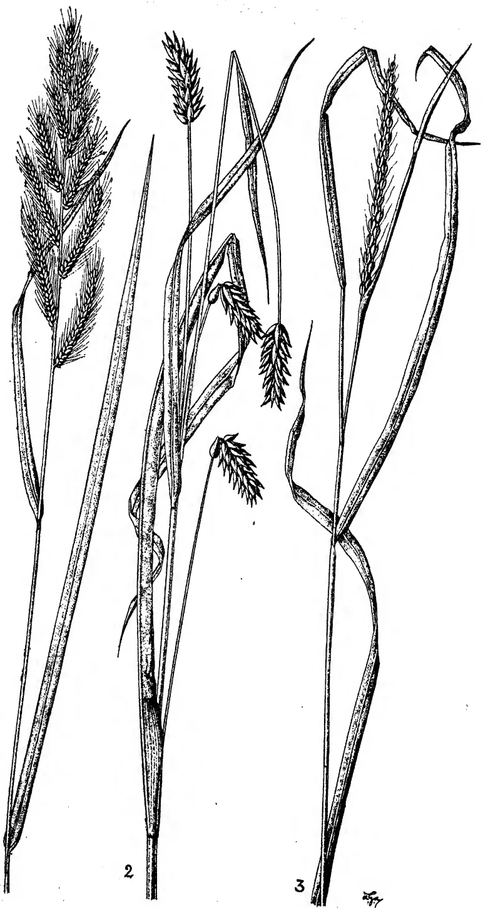
A detailed black and white botanical illustration of three different paddy weeds, labeled 1, 2, and 3. Weed 1 (left) has a tall, slender stem with a large, dense, spike-like panicle at the top. Weed 2 (middle) has a more complex stem structure with several smaller, branched panicles. Weed 3 (right) has a long, slender stem with a single, large, spike-like panicle. The drawings show fine details of the leaves, stems, and grain heads.1
2
3
Drawn by Survey Dept. Govt. 1942-43
Some Weeds of Paddy Land
265or when the fields are prepared for sowing paddy and the weed matures with the late maturing suduheenati, sinnanayam and rathkariel paddy crops. When fields, not sown with the late maturing varieties, are later in the season hastily prepared and the early maturing murungan or danahala paddies sown, the weed may shoot out from the stubble and mature along with these varieties of paddy.
In the Ambepussa, Gampaha and Uruwela areas, under the Giant's Tank in the Mannar District and in some parts of the North-Western Province, Coix gigantea Koen. Kirindi S. (see fig. 2) is spreading. This weed should not be confused with the edible adlay (Coix Lachryma-Jobi). The leaves of the former are narrower, the ear-heads pendulous, and the grain is pale brownish-grey, polished, broadly ovoid, and larger than the latter. It matures with the paddy crops of the normal period of maturity in the respective areas.
It is difficult to distinguish the foregoing weeds from paddy seedlings till they reach the flowering stage. It is, however, not advisable to uproot the weed in thickly infested fields, after flowers appear, as at that stage the paddy crop too is in flower and the mechanical damage to the latter would be very considerable. When only a few stray plants appear they should be uprooted and burnt before seeds set in the flowers.
The following methods are suggested for controlling these weeds :—
(a) Uproot and destroy the weed in sparsely infested fields soon after flowers appear.
(b) Seed paddy should be secured only from fields known to be free from the weeds.
(c) Heavily infested fields should be sown late with an early maturing variety of paddy for a season or two and preparatory tillage operations should be thorough in order to decompose all weeds which may have sprouted with the rains.
(d) A sure method of eradication which is worth trying, but which is difficult to induce the cultivators to adopt, is to leave the land unsown with paddy one season after it is ploughed so that the weed only will grow and can then be removed by hand, or, whenever conditions are suitable, to cultivate an economic crop like green gram or vegetables or even a green manure crop for one season and remove the weeds by hand.
(e) Bunds, irrigation channels, and surrounding areas should be searched and the weeds destroyed before seeds mature.
266MALCOLM PARK, A.R.C.S.,
MYCOLOGIST
AND
M. FERNANDO, Ph.D., B.Sc., D.L.C.,
RESEARCH PROBATIONER IN MYCOLOGY
IN the first part of this series of articles (1937), details were given of an experiment which demonstrated the efficacy of spraying tobacco seedlings in the nursery with colloidal copper in reducing the incidence of frog-eye infection on plants after transplanting into the field. Subsequent observations indicated that the protective effect of the fungicide was of limited duration in this instance. Leaves developing subsequent to transplanting were not sprayed and were therefore susceptible to the disease. Further, the sprayed leaves were removed at the first priming. The presence of unsprayed plants in the control blocks may have had a considerable bearing on the final extent of infection of the plants. It is not proposed to discuss here the ultimate effect of nursery spraying on the extent of frog-eye attack on tobacco in the field. It is obvious that the full value of such nursery spraying would be obtained only if large areas were planted up with sprayed nursery plants and, even then, the effect might well be cumulative and become more marked if the treatment were repeated in subsequent seasons. It is proposed to investigate this question further.
To revert, observations made about six weeks after transplanting indicated that frog-eye infection was present on every plant. The disease appeared to be of average severity, infection being considered to be neither exceptionally great nor
267exceptionally light. No exact criteria of infection are available but it may be assumed that the extent of infection was fairly average.
In a high-class, flue-cured tobacco, the presence of numbers of frog-eye spots which appear before curing and of barn-spots which develop during curing and which have been shown to be due to infections by the same parasitic fungus, results in a considerable reduction in the value of the cured leaf. It was felt that, if the disease could be adequately controlled by one field spraying, such a spraying might be economically practicable and perhaps profitable.
The experiment described below was designed to determine the degree of control of frog-eye which could be obtained by a single spraying of plants in the field. The experiment was also framed to determine, within wide limits, the stage of growth of the tobacco at which such a spraying would give best results.
The lay-out took the form of five randomized blocks, each of four plots. Each plot consisted of four rows of 15 plants. Records were taken from the central 26 plants (2 rows of 13 plants) in each plot, the remaining 34 plants serving to overcome border effects. The experimental material consisted of a fairly uniform stand of plants of Harrison's Special tobacco grown at the Experiment Station, Wariapola. These were derived from the nursery which was described in the first article of this series and were plants grown from seed surface-sterilized with silver nitrate solution, which had been sprayed in the nursery with colloidal copper. The area containing the plots was adjacent to the four-acre field on which were made the observations previously recorded.
The plants chosen for experiment were transplanted from the nursery during the period 14–16 November, 1936. The area was manured twice—once before and once after transplanting—with the following manure mixture:—
| Superphosphate | .. | 224 lb. |
| Sulphate of potash | .. | 140 lb. |
| Nitrate of soda | .. | 184 lb. |
| 548 lb. per acre |
The plants were primed for the first time on 28th December, 1936, and for the second time about a month later.
The plants were topped when the flowering shoot developed. At the time of the second spraying, on 26th January, 1937, about 30 per cent. of the plants had been topped, the remainder being topped soon after this date.
The following four treatments were randomized within each block :—
| Treatment No. | Treatment |
|---|---|
| 0 | Unsprayed control |
| 1 | Sprayed with colloidal copper on 7-1-37 |
| 2 | Sprayed with colloidal copper on 26-1-37 |
| 3 | Sprayed with colloidal copper on 20-2-37 |
Spraying.—Spraying was done with a pneumatic knapsack sprayer working at a pressure of 75 lb. per sq. in. The spray-lance was fitted with an angle-bend to facilitate the spraying of the lower surface of the leaves and the single nozzle was of the type which delivers a fine mist of spray.
The spray mixture used consisted of—
Bouisol is a proprietary fungicide consisting of a suspension of a basic copper derivative containing sulphite lye as the protective colloid. Agral 2 is a proprietary spreader having a composition allied to a sulphonate of an alkylated hydrocarbon. Six to eight gallons of the spray mixture were used at each spraying, which works out at about one gallon of spray to twenty plants. The plants were sprayed very thoroughly and it is probable that the amount of spray used was more than was necessary. It was certainly greater than the amount which would be used for the same number of plants in large-scale field spraying.
A noteworthy point is that no spray scorch was observed in the experimental plots at any time.
269Harvesting.—The leaves from the experimental plots were harvested at the same time as those in the rest of the tobacco area. The usual practice adopted at Wariapola is to harvest first all sand leaves. The leaves harvested in this first or preliminary harvest are not flue-cured but are air-cured and the resulting cured tobacco is of little value, being sold locally for chewing purposes. The main harvest which follows this includes all leaves which are mature and which are sufficiently clean to be worth flue-curing. Any leaves which are badly spotted are collected separately and air-cured. Leaves which are not sufficiently mature at the time of the main harvest are harvested later and flue-cured if sufficiently clean.
The time of the harvests may vary considerably from year to year with varying weather conditions. During the period of the experiment, the weather was relatively dry and, in consequence, the crop matured rather earlier than usual. The spraying programme, which had been laid down according to average conditions, was thereby not so well timed as it might have been. The first or preliminary harvest was made on 17th February, 1937, and the second or main harvest on 23rd February, 1937. It will be seen that the final spraying, which was done on 20th February, was carried out after the preliminary harvest and only three days before the main harvest. The intention was, when the experiment was planned, to carry out the final spraying ten days or so before the first harvest.
The early maturing of the tobacco was unfortunate in that, owing to a misunderstanding, the preliminary harvest was completed before a record of disease was made. It is considered, however, that this fact had no marked effect on the results obtained since all plants were of the same age and it will be shown later that the differences between the total numbers of leaves left after the preliminary harvest were not mathematically significant.
Recording of Results.—On the day before the second or main harvest, a count was made of the total number of leaves and of the number of “clean” leaves on each plant of the plots. The leaves examined at this time included many which were immature and which were not gathered with the main harvest. Leaves with 0 to 2 frog-eye lesions were classed as “clean” leaves.
270On the following day, the leaves from each plot were harvested and flue-cured separately.
Following the usual practice, badly spotted leaves were not harvested for flue-curing, but were harvested separately and air-cured. The weights of the flue-cured leaf from the various plots were, in consequence, in themselves a measure of the relative freedom of the plants from frog-eye.
The harvested leaves from Block D were accidentally mixed with those from the remainder of the field and data of this block after curing were therefore unobtainable.
Rainfall records were kept throughout the experiment.
It has been stated above that the plots on which the experiment is based consisted of 26 plants. In many of the plots vacancies occurred, the lowest number of plants in any one plot being 22 at the conclusion of the experiment. The data recorded below are therefore based on plots of 22 plants, the excess being eliminated at random in each instance.
The experimental area was selected for the uniformity of stand of tobacco and it may fairly be assumed that there were no significant differences in the numbers of leaves present on the plants in the various treatments before the first or preliminary harvest. In table I are recorded the total numbers of leaves and the numbers of "clean" leaves in the plots (of 22 plants) at the time of the first examination, five days after the preliminary harvest.
An analysis of variance of the total numbers of leaves yielded, for treatments, a value of lower than the 5 per cent. point. From this it may be assumed that the population, as determined by numbers of leaves, was a homogeneous one after the first or preliminary harvest. It may therefore be concluded that this harvest did not take the form of a selective picking.
In the following analyses no correction has been made for leaf numbers, as such a correction was considered to be unnecessary. Differences shown to be significant by the crude analysis would merely have been accentuated if such a correction had been made.
271TABLE I
COUNT OF LEAVES IN PLOTS BEFORE MAIN HARVEST
| TREATMENTS | Totals | |||||||||
|---|---|---|---|---|---|---|---|---|---|---|
| Unsprayed control (0) |
Sprayed on | |||||||||
| 7-1-37 (1) |
26-1-37 (2) |
20-2-37 (3) |
||||||||
| Total "clean " | Total "clean " | Total "clean " | Total "clean " | Total "clean " | Total | |||||
| Block A | 156 | 29 | 195 | 15 | 155 | 111 | 199 | 5 | 705 | 160 |
| " B | 156 | 9 | 176 | 10 | 136 | 103 | 152 | 15 | 620 | 137 |
| " C | 150 | 10 | 175 | 6 | 173 | 101 | 157 | 17 | 655 | 134 |
| " D | 182 | 18 | 195 | 9 | 169 | 113 | 178 | 15 | 724 | 155 |
| " E | 157 | 2 | 150 | 4 | 127 | 58 | 132 | 4 | 566 | 68 |
| Totals | 801 | 68 | 891 | 44 | 760 | 486 | 818 | 56 | 3270 | 654 |
| Means | 160.2 | 13.6 | 178.2 | 8.8 | 152.0 | 97.2 | 163.6 | 11.2 | 163.5 | 32.7 |
Results of Field Observations.—In the observations recorded in table I, the term “clean leaves” was arbitrarily adopted to include those leaves which had up to two frog-eye spots on them. This standard was used since the presence of two spots on leaves was, for all practical purposes, negligible and the higher figures so obtained were more useful for comparison. An analysis of variance of the numbers of these “clean” leaves in the 22 plant plots is given in table II.
The value for for treatments is very much higher than the 1 per cent. point, indicating a high level of significance. From this analysis, it may be concluded that the first and third sprayings had no effect on the incidence of frog-eye on the plants as measured immediately before harvesting. The mean numbers of clean leaves in these two treatments were actually less than in the controls although the differences were well within the limits of normal variation, and were therefore not significant. It is concluded that the first spraying was done too early and the final spraying, as was expected, was done too late to be effective. On the other hand, the effect of the second spraying, as judged by the number of clean leaves on the plants before harvesting, was most marked.
In comparing these figures with those of cured leaves, it should be remembered that these were derived from a count of all the leaves on the plants. Immature leaves and badly spotted leaves were not gathered for flue-curing at the main harvest.
Results of Examination of Cured Leaf.—As is stated above, the second or main harvest was flue-cured and the cured leaf was brought to Peradeniya for detailed examination in the laboratory. The cured leaf from each of the plots was first weighed and then counted. Subsequently, the cured leaves were classified according to the numbers of lesions, of both frog-eye and barn-spot, found on them. Here again, an arbitrary classification had to be adopted. Barn-spot lesions are usually small and a cured leaf with up to 50 lesions is, for all practical purposes, clean and of good appearance. The leaves were therefore classified in groups of leaves with 0–25, 26–50, 51–100 and more than 100 lesions.
The data obtained are recorded in table III.
273TABLE IIANALYSIS OF VARIANCE OF RECORD OF "CLEAN" LEAVES IN PLOTS BEFORE MAIN HARVEST
| Due to | Degrees of Freedom | Sum of squares of Deviations | Variance | Z | One per cent. point | |
|---|---|---|---|---|---|---|
| Blocks | 4 | 1357.7 | 339.42 | 2.9136 | ||
| Treatments | 3 | 27792.6 | 9264.2 | 4.5669 | ||
| Error | 12 | 1315.9 | 109.66 | 2.3490 | 2.2179 | 0.8919 |
| Total | 19 | 30466.2 | ||||
| Standard Deviation = 10.48 | ||||||
| Co-efficient of variability = 32.1% | ||||||
|
Mean Numbers of "Clean" Leaves per Plot (0) (1) (2) (3) General Mean 13.6 8.8 97.2 11.2 32.7 S.E. of Mean of 5 plots 4.68 Significant difference 15.25 |
||||||
TABLE III
DATA FROM CURED LEAF
| Treatment | Block | Wt. of cured leaf in Drachms | Total No. of cured leaves | Nos. of leaves with | |||
|---|---|---|---|---|---|---|---|
| 0-25 lesions | 26-50 lesions | 51-100 lesions | > 100 lesions | ||||
| (0) Unsprayed control |
A | 53 | 22 | 1 | 1 | 8 | 12 |
| B | 32 | 15 | 0 | 1 | 1 | 13 | |
| C | 42 | 15 | 0 | 1 | 1 | 13 | |
| E | 42 | 24 | 0 | 1 | 1 | 22 | |
| (1) Sprayed on 7-1-37 |
A | 38 | 17 | 0 | 1 | 1 | 15 |
| B | 69 | 28 | 0 | 2 | 4 | 22 | |
| C | 42 | 16 | 0 | 1 | 0 | 13 | |
| E | 40 | 19 | 0 | 1 | 1 | 17 | |
| (2) Sprayed on 26-1-37 |
A | 97 | 37 | 35 | 1 | 1 | 0 |
| B | 77 | 35 | 31 | 3 | 1 | 0 | |
| C | 105 | 37 | 29 | 5 | 2 | 1 | |
| E | 56 | 31 | 25 | 3 | 1 | 2 | |
| (3) Sprayed on 20-2-37 |
A | 60 | 37 | 4 | 12 | 14 | 7 |
| B | 44 | 22 | 1 | 1 | 3 | 17 | |
| C | 47 | 18 | 0 | 1 | 1 | 16 | |
| E | 22 | 14 | 0 | 1 | 1 | 12 | |
In table IV, the yields of cured leaf from the plots are subjected to an analysis of variance. The value of for treatments is greater than the 1 per cent. point which indicates a high level of significance. This analysis again shows that the first and final spraying were without effect, the differences between the figures for these treatments and for the control being insignificant. The second spraying, however, resulted in a marked and significant increase in the yield of cured leaf. This increase was not due to a greater production of leaf tissue by the plants subjected to the second spraying, as can be seen from the pre-harvesting figures. The increase was due to the fact that heavily infected leaves were not harvested for flue-curing and that there was a relatively higher proportion of curable leaf than in the other three treatments.
The effect of the second spraying is further emphasized by a consideration of the numbers of lesions present on the cured leaf. In table V, cured leaves with up to 50 lesions (most of them were barn-spots) have been lumped together and considered to be "clean" and the figures subjected to an analysis of variance.
The value of for treatments greatly exceeds the 1 per cent. point. It is shown that the results from the first and third sprayings are not significantly different from those of the control plants, whereas the second spraying effected a highly significant reduction in the amount of barn-spot on cured leaf.
Effect of Spraying on Quality of Cured Leaf.—Plants were examined after the field spraying. No deposit of fungicide was seen although the surface of leaves immediately after spraying looked rather more shiny than that of unsprayed ones. Examination of the cured leaf failed to reveal any differences in texture or appearance—other than in the amount of spotting—between the sprayed and unsprayed leaves. The cured leaf from the experimental plots was bulked with the rest of the tobacco and observations will be made later to determine, if possible, if the spray has any effect on the burning qualities of the leaf.
As has been noted above, no spray scorch was observed on any of the plants sprayed,
278TABLE IVANALYSIS OF VARIANCE OF WEIGHTS OF CURED LEAF FROM PLOTS AT MAIN HARVEST
| Due to | Degrees of Freedom | Sum of squares of Deviations | Variance | Z | One per cent. point | ||
|---|---|---|---|---|---|---|---|
| Blocks | 3 | 1148.75 | 382.92 | ||||
| Treatments | 3 | 4736.75 | 1578.92 | 3.6823 | 1.0061 | 0.9724 | |
| Error | 9 | 1900.25 | 211.14 | 2.6762 | |||
| Total | 15 | 7785.75 | |||||
| Standard Deviation = 14.53 | |||||||
| Co-efficient of variability = 26.84% | |||||||
|
Mean Weights of Cured Leaf per Plot in Drachms (0) (1) (2) (3) General Mean S.E. of Mean of 4 plots Significant difference |
|||||||
| 42.25 | 47.25 | 83.75 | 43.25 | 54.125 | 7.26 | 25.15 | |
ANALYSIS OF VARIANCE OF NUMBERS OF "CLEAN" LEAVES HARVESTED FROM PLOTS AT MAIN HARVEST
| Due to | Degrees of Freedom | Sum of squares of Deviations | Variance | Z | One per cent. point | |
|---|---|---|---|---|---|---|
| Blocks | 3 | 78.75 | 26.25 | |||
| Treatments | 3 | 2828.25 | 942.75 | 3.4244 | 2.1261 | 0.9724 |
| Error | 9 | 120.75 | 13.42 | 1.2983 | ||
| Total | 15 | 3027.75 | ||||
| Standard Deviation = 3.66 | ||||||
| Co-efficient of Variability = 36.18% | ||||||
| Mean Numbers of "Clean" Leaves Harvested per Plot | ||||||
| (0) | (1) | (2) | (3) | General Mean | S.E. of Mean of 4 plots | Significant difference |
| 1.25 | 1.25 | 33 | 5 | 10.125 | 1.83 | 6.34 |
The relevant rainfall records are given in table VI.
TABLE VIDAILY RAINFALL RECORDS FROM 16th NOVEMBER, 1936 TO 25th FEBRUARY, 1937
(Rainfall measured at 9 a.m. each day for the previous 24 hours. Days on which no rainfall was recorded are omitted).
| Date | Rainfall in. |
Date | Rainfall in. |
|---|---|---|---|
| Nov. 16, 1936 .. | ·04 | Jan. 1, 1937 .. | ·90 |
| „ 17 „ .. | ·08 | „ 3 „ .. | ·02 |
| „ 18 „ .. | ·66 | „ 6 „ .. | ·34 |
| „ 20 „ .. | ·03 | „ 7 „ .. | ·10 |
| „ 22 „ .. | ·17 | „ 10 „ .. | ·70 |
| „ 24 „ .. | ·43 | „ 13 „ .. | ·53 |
| Dec. 8 „ .. | ·02 | „ 14 „ .. | ·42 |
| „ 9 „ .. | ·44 | „ 15 „ .. | 1·10 |
| „ 11 „ .. | ·03 | „ 19 „ .. | ·97 |
| „ 12 „ .. | ·13 | „ 30 „ .. | ·05 |
| „ 13 „ .. | ·02 | „ 31 „ .. | ·60 |
| „ 14 „ .. | 4·52 | Feb. 2, 1937 .. | ·95 |
| „ 15 „ .. | 2·10 | ||
| „ 16 „ .. | ·36 | ||
| „ 17 „ .. | ·01 | ||
| „ 29 „ .. | ·90 | ||
| „ 30 „ .. | ·78 |
During January, 1937, showers were relatively frequent and well distributed. The month included 10 wet days (more than 0·04 in.) and one rain day (0·01–0·04 in.). The total rainfall for January was 5·73 in. which was 1·9 in. below the average rainfall for this month during the five years 1931 to 1935.
The first spray was applied between 5 p.m. and 6 p.m. on the 7th January, there having been rain in the early morning. The leaves were dry at the time of spraying. Rain fell fairly regularly after this but it is not possible to say to what extent the fungicidal deposit was washed off.
279The second spray was applied between 11 a.m. and noon on 26th January. No rain fell between the 19th January and the time of spraying. Between this date and the collection of the records of disease incidence there were only three wet days.
Rainfall during February was low. Apart from the heavy fall (0.95 in.) on 2nd February no rain fell during the whole month. The average rainfall for February for the period 1931-1935 was 2.33 in. This drought doubtless caused the early maturing of the tobacco and so upset the pre-arranged plan of experiment. It had been anticipated that the harvesting of the tobacco would not begin before the beginning of March. The drought may also have contributed to the efficacy of the second spraying in that the fungicidal deposit was not subjected to many showers which might have washed it off, at least in part.
The third spray was applied between 9 a.m. and 10 a.m. on 20th February. Weather conditions were dry and hot.
Field spraying of tobacco for the control of frog-eye and of barn-spot has not, apparently, been the subject of much experiment. Hill (1936) stated that field "spraying is uneconomic and unnecessary under Queensland conditions, since healthy seedlings can be obtained by applying control measures in the seed-bed." In a previous article on this subject, the writers (1937) concluded that nursery spraying is of great value in reducing the initial infection by frog-eye of tobacco after it is transplanted into the field. They also suggested that the soil is the main source of infection. Any new leaves which develop after the tobacco is transplanted, being unprotected by the fungicide applied in the nursery, are susceptible to attack by frog-eye. The plants used in the experiment described above were originally seedlings sprayed in the nursery and were, at the time of transplanting, free from frog-eye infection. The data recorded above indicate the extent of infection by frog-eye of the leaves of such plants at the time of harvest. These show clearly the need for the adoption in Ceylon of some control measure after the plants have left the nursery.
280Meurs (1932) described the results of experiments on the control of frog-eye on tobacco in Sumatra. He recommended the field spraying of young plants with Bordeaux Mixture but pointed out that the spraying of plants more than twenty days after transplanting was inadvisable as a brownish-black or greenish-black deposit occurred on the fermented leaf from sprayed plants which completely spoiled the leaves for wrapper purposes. Hopkins (1934) reported that he had sprayed tobacco in the field for a number of years on an experimental scale. He mentioned the use of Bordeaux Mixture and also the less satisfactory use of fungicidal dusts. He concluded that field spraying was desirable but that further investigation was required to determine the number of sprayings required, the best times to spray and the kind of fungicide to be used and to solve practical questions, such as the discovery of the most satisfactory type of spray outfit.
From the above, it would appear that very little exact information on the field spraying of tobacco is available. The experiment described in the body of this article was therefore designed to determine if a single spraying would give satisfactory control of frog-eye and to determine, within wide limits, at what stage of the plant's growth the spray would be best applied. Bouisol was selected as the fungicide for use in the experiment partly because it is easy to use but chiefly because it leaves no obvious spray deposit on the leaves and so would be less likely to affect the appearance of the cured tobacco than Bordeaux Mixture, which had been adversely reported on by Meurs.
In the experiment under discussion the time from transplanting to the gathering of the harvest was 102 days. The different sets of plots were sprayed 55 days, 74 days and 99 days respectively after transplanting. The first and third sprayings were found to have no effect and it is concluded that the first was too early and the third too late to exercise any marked control of frog-eye infection. The second spraying, however, gave excellent results as judged by the number of frog-eye lesions present before harvesting, by the weight of flue-cured tobacco harvested and by the amount of barn-spot that occurred on the cured leaf. This second spraying was done at about the time of topping.
281It is obvious that the determination of the optimum time of spraying should not be made purely by empirical methods and the experiment described above must be regarded as preliminary to more detailed experiments which are planned for next season. It is proposed to carry out then, side by side with a more elaborate experiment based on the results already obtained, a study of the course of infection by Cercospora nicotianae throughout the season and of the growth rate of the plants so that it may be determined on theoretical grounds at which stage the spray would be likely to be most effective.
It is obvious that, if a single field spraying has a marked effect on the amount of spotting, its practicability must receive careful consideration. No attempt has been made to consider the question of costs and to compare the costs with the increased value of the crop obtained in this experiment. The question will receive attention next season.
The effect of weather conditions on the incidence of frog-eye has not received special attention in this experiment. One point is, however, worthy of note. Weather conditions subsequent to the second spraying were unusually dry. The difference in the amount of spotting observed between the plots which were and which were not sprayed at this time was marked. This difference is due to infection which took place after the second spraying and it must therefore be concluded that frog-eye infection takes place in the absence of wet weather conditions.
From the experiment described above the following conclusions are drawn :—
The thanks of the authors are again due to the Divisional Agricultural Officer, North-Western Division, for his co-operation in the experiments and, especially, to Mr. A. B. Attygalle, Farm Manager, Wariyapola, for his helpful and willing assistance in the organisation of the field arrangements.
REFERENCES TO LITERATUREFisher, R. A. 1932.—Statistical Methods for Research Workers—4th Edition, London: Oliver and Boyd.
Hill, A. V. 1936.—Cercospora Leaf-spot (frog-eye) of tobacco in Queensland. Counc. Sci. & Indust. Res. Australia, Bull. 98.
Hopkins, J. C. F. 1934.—Mycological Notes. Seasonal Notes on tobacco diseases—7. Spraying in seed beds and lands. Rhodesia Agric. Journ. XXXI, 10, pp. 727-734.
Mandelson, L. F. 1934.—Barn-spot of Tobacco. Preliminary investigations and flue-curing experiments. Queensland Agric. Journ. XLI, 2, pp. 132-147.
Mours, A. 1932.—Proeven omtrent spikkelbestrijding, genomen in de jaren 1931 en 1932. Meded. Deli Proefstat. te Medan-Sumatra, Series II. LXXX.
Park, M. and Fernando, M. 1937.—Some Studies on Tobacco Diseases in Ceylon—I. The Tropical Agriculturist, LXXXVIII, 3, pp. 153-168.
This image is a blank white page. It contains two small, isolated black dots: one is located in the upper-left quadrant, and the other is in the middle-right area. There is no text, handwriting, or printed content on the page.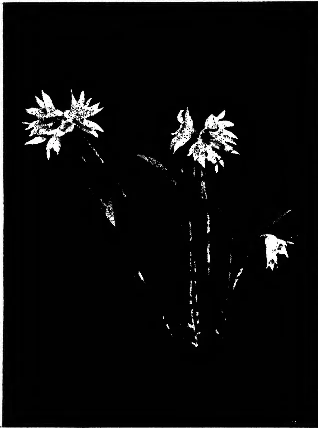
A high-contrast, black and white photograph of a plant, likely Thunia Marshalliana. The image is set against a solid black background. The plant features several upright, slender stems. At the top of these stems are clusters of small, star-shaped flowers with multiple pointed petals. Some leaves are visible, appearing as dark, elongated shapes. The lighting is dramatic, highlighting the edges and details of the flowers and stems against the deep black background.Thunia Marshalliana Rehb. f.
283K. J. ALEX SYLVA, F.R.H.S.,
SUPERINTENDENT OF PARKS, COLOMBO MUNICIPALITY
THIS beautiful ground orchid belongs to a small group of about a dozen species of herbaceous forms which are confined to Burma and Northern India.
The genus Thunia is closely allied to Phaius but can be easily distinguished by many striking differences. The few known species of Thunia are all remarkable for their pretty foliage and large attractive blooms which would become any collection.
Thunia Marshalliana inhabits the Moulmein Hills of Burma where it grows on the ground among ferns and shrubs and, occasionally, on low forks of trees and in rock-depressions where vegetable matter accumulates.
The general appearance of the plant is that of a miniature bamboo clump about three feet high and its succulent reed-like pseudobulbs, which are clustered together, have a graceful droop. The base of the pseudobulb swells into a roundish tuberculous knob beneath the soil and gets a firm hold to anchor the plant. The upper part of the young stems are clothed with oblong-elongated true leaves, 6 to 10 inches long by 2 to inches wide, while the lower nodes are furnished with expanded, circular, reflexed leafy sheaths clasping the stem. On the completion of its growth the flowers are produced on a short terminal semi-drooping raceme. The flowers are large and waxy-white, delicate in appearance and measure about four inches across. The sepals and petals are lanceolate-oblong, almost of equal size and about 2 to inches long. The outer surface of the lip is white and its lower part surrounds the column ends in a retuse falcate spur. The margins of the
284expanded front of the lip are delicately fringed with yellow crystalline hairs which also occupy the disc.
The yellowish-green bracts are boat-shaped and enclose the flower while in bud but droop as the flower advances in age. The column is enveloped by the lateral lobes of the lip, which are of a yellowish tint with light pink veins extending to the throat. Two prominent toothed wings near the tip of the column form a hood.
Culture.—Thunia as a rule prefers the cool atmospheric conditions of the hills above 1,500 feet altitude, but offspring of some of the better acclimatised species could be cultivated below this elevation. Thunias are all deciduous in habit and require different treatment from that given to evergreen terrestrial orchids. On the completion of season's growth the foliage begins to decay and, at this time, the plants require a long rest which can be afforded to them by removing them to a dry and cool place. During this dormant period the plants need only just sufficient moisture to keep the stems from undue shrivelling. This treatment should be continued for about three months when plants will again begin to show signs of growth, especially when the atmosphere is humid during the rains. At this stage, the old stems may be cut from the base for propagation of the stock and the young growths separately potted. After removing the dead roots, the young plants should be potted in fresh compost covering only up to an inch below the rim of the pot and exposing the young growth just above the surface soil. A good mixture of turfey soil, leaf mould and silver sand (about equal parts) with a light sprinkling of decayed cattle manure is most desirable for all Thunias, as in this compost the stems become robust. When the plants are in active growth weak liquid cattle manure may be used with advantage.
Thunias are easily propagated by cutting the matured pseudobulb into sections with at least two nodes to each and burying these sections flat about half an inch deep in a porous compost made up of sand and leaf mould, or they may be inserted in the same manner as ordinary cuttings in light soil. The buds at the nodes give rise to plants in due course. The plantlets that develop at the nodes of matured pseudobulbs may also be used for multiplying stock.
285H. A. PIERIS, B.A. (Cantab), A.I.C.T.A. (Trinidad),
DIVISIONAL AGRICULTURAL OFFICER, CENTRAL DIVISION
DURING 1936, the purchase of village cotton was undertaken in the Southern, Central and South-Western Divisions by the respective Divisional Agricultural Officers. A larger area was brought under cultivation than previous years and the quantity of seed cotton purchased, particularly in the Southern and Central Divisions, was specially higher. The price paid for first grade seed cotton was Rs. 12 per cwt. less handling and transport charges which varied according to the purchasing centre. The money due to cultivators was paid in full on the day of purchase. This method of spot cash payment has found favour with the producers, as they receive money at a time when, in most cases, it is urgently required for domestic needs.
The season on the whole was good for cotton except that a portion of the crop was damaged by untimely rain at Embilipitiya, Middeniya and Dambulla. Malaria too was a factor that militated against the cultivation and maintenance of plots. In the Southern and Central Divisions, the crop purchased was more than double the quantity purchased in the previous year. This is most encouraging, considering that the epidemic of malaria had not altogether abated during the sowing season and cultivators were considerably undermined in health.
The area under cotton was approximately 1,160 acres in the three divisions, namely, 700 acres in the Southern, 400 in the Central, and 60 in the South-Western Divisions. The total
286crop purchased was 3,029 cwt. of seed cotton. A crop of 200 cwt. produced in the Galewella District in Dambulla range was disposed of direct by the growers. Taking this amount also into consideration, a crop of 3,229 cwt. of seed cotton was produced from 1,169 acres, approximately cwt. per acre. Since most of the area under cotton was chena land, the yield per acre is satisfactory.
In the Southern Division, the present chena system allows for one acre of cotton to each cultivator on his two acre kurakkan chena permit. Crop rotation is not generally practised, as the size of the average holding is small and the rotation of crops is impracticable in chenas.
In the Matale district of the Central Division cotton cultivation, which is a new enterprise, has made steady progress each year since its inception. It is of interest to note that in this area the first cotton purchase, which was held in the year 1931, realised a sum of Rs. 283 only, while in 1936 the purchase has realised for the growers a sum of Rs. 7,269 approximately. Cotton has become a popular crop in Walapane district in the Central Division where a purchase was held for the second time during this year.
Altogether 1,080 cultivators grew cotton in the three divisions during the season under review 702 in the Southern Division, 308 in the Central Division, and 70 in the South-Western Division.
The cotton purchase was conducted during the first two quarters of the year, at selected centres where cultivators were easily and conveniently able to bring their produce for sale. The seed cotton was examined, sorted, graded and weighed at each centre before payment was made, under the supervision of the Divisional Agricultural Officers who conducted the purchase and who acted as Agents for the Spinning and Weaving Mills, Colombo, whither the produce was finally despatched.
The price paid to cultivators was Rs. 10.50 per cwt. of first grade cotton at Bata-ata and Rs. 10.25 per cwt. at all other centres in the Southern Division. It was Rs. 10.50 at all the centres in the Central Division and Rs. 10 at Embilipitiya in the South-Western Division.
287The purchase centres in the three divisions were as follows :—
Southern Division :—
Central Division :—
South-Western Division :—
Details are given in the table.
290All foodstuffs fed to poultry must be sound and wholesome.
The food when consumed performs definite functions and must contain the necessary elements to make and repair tissue—create heat and energy, produce feathers, eggs, and body growth.
The feeding values of foodstuffs is determined by the percentage of the various components, such as—
Proteins
Carbohydrates
Fats and Oils
Minerals
Fibre and Moisture.
Protein is a nitrogen-containing food element used for flesh-forming—the building up of waste tissue, and most essential for egg production.
Carbohydrates are made up largely of starch, sugars, gums, etc., which produce heat and energy and form body fats.
Fats and oils are essential heat and energy-producing elements, and assist in building up body fats.
Ash is the residue of burnt up foods and contains the minerals necessary for development of bone and feathers, and the formation of egg shell.
Fibre is the outer cells of grains and the fibrous matter in plants, and is not digestible; but a percentage is always present and is necessary to assist digestion.
Moisture in varying proportions is found in all foodstuffs.
Protein is the most expensive ingredient of any feed. It will produce heat and energy, but as a source of heat and energy is too expensive. We therefore concentrate on other ingredients high in carbohydrates and fats when we desire our energy-forming foods. Let us now examine the foods for protein and carbohydrates.
| Protein | Carbohydrate | Moisture | |||
|---|---|---|---|---|---|
| Wheat | .. | .. contains approx. | 1 part | 7 parts | 12% |
| Bran | .. | .. ,, ,, | 1 part | 5 parts | 8% |
| Pollard | .. | .. ,, ,, | 1 part | 6 parts | 9% |
| Skimmed & separated milk | .. | .. ,, ,, | 1 part | 2 parts | 88% |
| Dried buttermilk | .. | .. ,, ,, | 2 parts | 3 parts | |
| Meatmeal | .. | .. ,, ,, | 2 parts | 1 part | 9% |
One should realise that the sluggish bird must put on fat if the ration contains an excess of fat and carbohydrates. One should also realise that the active bird can utilise more carbohydrates and fats than the more sluggish breeds. Yet it is the prevailing practice to run both light and heavy breeds together in the one run. It is also the prevailing complaint to hear that, while the heavy breeds get too fat, the light breeds break down.
291Go into any yard which contains both heavy and light breeds and handle them. One will notice that if the ration is excellent for the light breeds, the heavy breeds will be overfat and sluggish.
Go into the yards which feed efficiently for the heavy breeds and you will find that the light breeds are worn out and do not do justice to the breed.
A little intelligent observation will convince any reasonable farmer that something must be wrong, but how many correct this fault ? It is generally a condemnation on the breed, not on the person managing the flock.
Even the oldest poultry farmers whose main boast is that they have been feeding fowls for 20 years, etc., will not listen when told that different rations must be fed to birds of different make-up.
One is not of course suggesting that each breed should have a ration all to itself, but one is suggesting that each weight class must have different rations. Heavies one ration, lights another and medium heavies another. When this idea is practised, then and then only will one be successful with all known commercially profitable breeds.
The light breed bird is naturally very active, and we do know that activity uses the carbohydrates in the ration.
The heavy breed is naturally sluggish and we should realise that it cannot use all the carbohydrates which are in the ration fed to the lighter breeds.
Therefore, it is only natural that when the farmer admits those opposite characteristics, he will compensate the active breed by the higher proportion of carbohydrates to protein, and that the heavy bird must not receive as great a proportion of carbohydrates as a light breed bird.
If we admit this argument logical, we can then endeavour to manage satisfactorily. If we will not admit those facts we will continue to have mismanagement in feeding.
Let us examine any mixed flock of light and heavy birds. Wave the arm and see the activity of the light breeds—using carbohydrates all the time. The heavy bird will move more slowly. We often complain that White Leghorns are “too flighty” and we should then realise that their activity allows them to use more carbohydrates than the bird which is “tame.”
It was explained that a balanced ration had one portion of protein to about 4·5 portions of carbohydrates and fats.
If the ration is so constituted that it contains one part protein to less than 4·5 carbohydrates, the ration is said to be “narrow.”
If the proportion is greater than one part of protein to five parts of carbohydrates the ration is said to be “wide.”
It will be noticed that wheat is “wide,” but bran is nevertheless nearly balanced. However, bran is useless when fed alone, owing to its bulky nature ; yet it is very valuable when used as an essential ingredient giving a vegetable
292protein. Pollard is "wide," milk is "narrow," and meatmeal exceptionally so. Hence we balance the rations of wheat, bran, pollard, etc., and adding the highly concentrated protein foods (milk and meatmeal) in such a way as to ensure palatability and nutriment sufficient for growth, repair of waste tissues, energy and eggs.
When considering any ration we must concentrate on the dry ingredient basis for all calculations. Moisture is not feed in the true sense. Water is essential but we must never consider it when talking of feed and feeding values.
The ration given on page 442 and onwards of the September, 1934, Journal of Agriculture are safety rations. When fed to pullets they will give size and production, and any who have had confidence in that ration will naturally enquire when anything goes wrong. Those who do not have confidence in those rations will not enquire for further advice.
Eight parts green feed, 5 parts bran, 3 parts wheatmeal, part meatmeal (60 per cent. protein) and part bonemeal—1 part oilcake for morning wet mash, and a dry mash of the same ingredients (leaving out oilcake or greens of course in the dry mash), before them all day, with wheat and greens at evening meal, will prove an excellent ration for light breeds. The pullets will thrive, and the hens will lay plenty of eggs. Generally it is neither too fatening nor too forcing; but when fed to heavies or medium heavies we will have fat birds. The carbohydrates are too great in proportion to the proteins. It is too "wide," we cannot alter the position by cutting down the carbohydrates—that would be starvation, but we can alter it by adding more protein and the only proteins we have in Western Australia are meatmeal and dried buttermilk—nothing else—hence we must add more of the meatmeal and buttermilk (if used).
Our farmer now complains that he must mix three mashes in the morning. He can if he likes work, but he can mix the rations quite easily if he cares to organise. Wet mash in the morning. Dry mash hoppers all day and wheat at night. We can alter our rations in the dry mash hoppers and mix the one wet mash to feed all birds.
It has been found by experiments at Muresk that while the light breed could thrive on 5 measures bran, 3 wheatmeal, meatmeal, bonemeal in both wet and dry mash, the Rhode Island Reds needed measure of meatmeal in the dry mash hopper and the Australorps needed 11-16 measures of meatmeal.
By feeding the one wet mash to all breeds, and by altering the dry mash meatmeal proportions to for lights, for Rhode Island Reds and 11-16 for Australorps we obtained as near a balanced ration as required for each respective breed.
Let us for a moment assume we are managing a farm containing 400 White Leghorn Pullets, 400 Rhode Island Red Pullets and 400 Australorps.
293Pullets—1,200 in all, and quite a good sized farm for one man to manage. We will have 3 or 4 yards of each breed. In the dry mash hoppers we will have the following rations by bulk measurements—not by weights:—
| Lights. | R.I.R. | Australorps. |
|---|---|---|
| 5 Bran | 5 Bran | 5 Bran |
| 3 Wheatmeal | 3 Wheatmeal | 3 Wheatmeal |
| Meatmeal (60% protein) | Meatmeal (60% protein) | 11-16 Meatmeal |
| Bonemeal | Bonemeal | Bonemeal |
| Keymeal | Keymeal | Keymeal |
As you cannot easily incorporate oilcake to the dry ration, keymeal can be used by putting in each hopper the proportion of measure.
In the morning—mix 8 greens, 5 bran, 3 wheatmeal, meatmeal, bone-meal and 1 of oilcake damp measure (or key-meal) as a wet mash and give to all birds.
We will be able to satisfy the appetite of the stock with approximately a 4 gallon tin of wet mash to 100 birds. Any birds that have been eating from the dry mash hoppers will leave and partake of the wet mash.
The hopper mash is now available to all birds, some of which may have been modest—others hungry.
The dry mash hopper is used only by the layer and care must be taken to see that the hopper contains the high protein percentage of the wet mash.
One will notice that the wheat consumed does not reach the 2 oz. figure. This is the ultimate result of the three feed system. The amount used will average about oz. per bird.
It will thus be seen that the balance is out of proportion to the 2 oz. of mash, to 2 oz. of wheat. This aspect wants to be thoroughly studied. If one works out a balanced ration on the 5 bran, 3 wheatmeal, meatmeal, bonemeal and keymeal (or 1 oilcake—damp measure) with 2 oz. wheat at night, one will find that the ration is slightly wide, but not wide enough to unduly fatten the light breeds.
The birds by partaking of the dry mash hopper feed, naturally consume more of the mash in proportion to the wheat, and this helps to bring the ratio nearer to 1.4.5 or 1.4.8. Nevertheless, we can overdo it. We must be very careful to see that the wheat portion is kept up to the balance. If the grain feed is not relished by the birds lower the morning portion of mash and add more ground wheat to the dry mash hopper.
We will find, however, that those proportions will certainly fatten both Rhode Island Reds and Australorps. The latter bird more so. Hence the three dry mash rations have been given in order to start on a definite basis.
Having divided the flocks into yards containing only one breed of fowl it is then a simple matter to feed each breed properly by the correct proportions of protein in the dry mash.
294This method will overcome the common complaint that the heavy breeds "get fat." One is only "putting into the birds what one wants, not what the bird wants."
Any fatness should be now confined to those obstinate individuals which will always get fat no matter what one may do. Cull them out.
Let us now proceed to feed the birds on the before-mentioned principles. We have filled the hoppers—let me mention that the hopper need not be an elaborate instrument; even a 6 in. deep box will do to start and gradually improve—each hopper containing the separate proportion of proteins desired for the breed to be fed.
In the morning feed the wet mash, in the afternoon at 3.30 feed the grain—an amount they will eat ravenously. Don't leave any over. Then feed the green feed.
Watch the colour of the droppings of each breed—they should be all of the one colour after about a week of feeding this system. It is to the colour of the droppings we must look if we are to find out whether the ration is balanced. No two consignments of food are alike; therefore, unless we compensate the variation in the feed by a variation in the proportions of the ingredients in the feed, the ration will not be consistently balanced. It will vary, and as such it is not satisfactory.
If the colour of all breeds is not even you must vary the proportion of protein in the dry mash, up or down until the colour is even. If one is lighter than the other, put up the percentage of protein in the dry mash feed to the birds passing the lighter droppings. Keep adding the percentage weekly until all are even in colour.
The colours of the droppings can vary from light yellow to dark brown, to black, then to a slight reddish tinge. Be careful that you are not confusing the colours if you are using charcoal or the soil is of a reddish nature. We must compensate for this, as the birds will consume the charcoal and soil and that will pass through, causing a false colour.
If it is yellow we have too much carbohydrates and fats to protein—the ration is "too wide."
If it is brown this means the same—"too wide."
If it is black-brown we have a ration as near as desired.
If it is black we are near the danger zone.
If it is red bloodish colour we are too narrow, and dangerous.
Aim for the black-brown colour—and satisfaction. Do not consider the white tips—these are urine and are of no importance to our discussion. Simply this—if light brown, too much wheat to meat; if black-brown, O.K.; if reddish, too much meat to wheat. Remedy by varying the meatmeal. It is the highly concentrated protein ingredient and it can influence the ration quickly.
295When gauging colour take a quick glance for colour effect. Not an isolated concentration. When the colour is even for all breeds we have found the correct dry mash.
Should the general colour of the droppings of all breeds then lighten up, add more protein to the wet mash ; should they generally get too dark lower the percentage.
The principles governing the correct procedure are :—
One can see that the same principles can be applied to all birds on the farm.
Chickens are fed dry mash for 8 weeks, then wet and dry ever afterwards. Laying pullets the same wet mash—with an altered dry mash. Hens the same wet mash—with the alterations in the dry mash. Cockerels, cocks and birds for market, still the same wet mash, but alterations in the dry mash hoppers.
This idea makes feeding definite, at the same time easy. The one wet mash in the mornings—and then only about half the quantity required in comparison to the two feeds a day system, and less wheat or grain at evenings. It cuts down the daily labour. It gives a balanced ration to all breeds. It insures sufficiency of maintenance rations and the requisite amount of egg-forming material. No breed gets overfat. None is worn out, and the egg basket is always full to the highest possible level. We have now definitely worked away from the rule of thumb methods and are applying commonsense feeding.
It is advisable to start immediately and, if doubts are expressed, try one yard of a breed on this system and see the results. More eggs and bigger eggs. The rest of the farm will then have dry mash hoppers installed as soon as possible.
We have only considered the feeding of gristed wheat, bran and whole wheat. When using pollard, one alters the proportions in the mashes to be four pollard and four bran, in place of five bran and 3 wheatmeal. The principles are similar. We also advocate the use of dried buttermilk. When using dried buttermilk, the meatmeal must be reduced equivalent in weight to the buttermilk added.
Skimmed, separated or buttermilk can be used with advantage. But one must realise that all liquid forms of milk are so much moisture and so little dry ingredients, and that one cannot substitute four gallons of liquid milk for four gallons of meatmeal. One can only substitute the protein portion of the milk for the same amount in meatmeal. The moisture content is very high, and we cannot substitute water for meatmeal. When using these milk
296forms it is safer to use all you can, leave the meatmeal proportion as previously used, and then fluctuate the quantity of meatmeal as designated by the colour of the droppings under the perches.
Rabbits, kangaroos, etc., are not meatmeal—they again are so much moisture and so little protein. They have a low dry matter percentage.
A bird cannot consume enough livers, sheep's heads, fresh meat—rabbit or kangaroo—to obtain the requisite amount of protein required. The crop and digestive organs are not large enough. But we can use these meats to help reduce the meatmeal. Substitute the fresh meats for a portion of the meatmeal by again watching the droppings.
Wheat, of course, is the standard feed on country farms, and wheat is therefore used in all forms—boiled, soaked, gristed and whole. All wheat feeding is satisfactory provided one is assured that the birds obtain the requisite amount of dry matter, irrespective of how the wheat is treated, and that the wheat feeding is balanced with the correct amount of meatmeal and or buttermilk.
One can soak or boil the wheat with skim milk or buttermilk, but one cannot eliminate the dry basis quantities. Meatmeal is still required. The farmer can substitute any grain available in the place of wheat, but he cannot find a substitute for the correct percentage of protein in the ration—he can help with milk in all its forms (except fresh milk), he can assist with animal flesh, but he must still rely on some form of concentrated protein, and we only have the two forms in Western Australia—meatmeal and dried buttermilk.
With the best of management some birds will get fat—these individuals are the exceptional birds which should be "culled." Others again will lose condition—"cull" these also. It is the general condition of a flock which counts, and not any particular bird. Do not starve the flock to reduce fatness. The method of starving to reduce fat is a prevalent practice in the industry and causes lack of condition and loss of production.
If the ration has been wide, the carbohydrates and fats that are not immediately used are stored within the body of the bird as layers of fat. This fat may gradually accumulate until the bird is useless as a laying bird.
We can realise that the only reasonable way to reduce the fat reserve is to make the body demand the use of that extra fat, and to do this one must slightly, but ever so slightly, increase the protein proportion of the ration until the ration is a shade on the "narrow" side. This will then create the demand for more carbohydrates and fats to balance the diet, and so the bird will draw upon the reserve already accumulated for such emergency. This is a long and tedious process. It may be necessary for some special individual birds, but is hardly economical where a flock is affected by overfatness. The surest means is to see that the birds never have access to a ration other than that desired by the farmer.
"Put into the birds what you want." Your birds will then be layers when layers are wanted, and fleshy birds when aiming for table poultry.
297THE general lack of knowledge of the production of many industrial raw materials, originating in remote corners of the world, is sometimes appalling to the scientist. Carnauba wax, of which about 4,800 tons of an annual production of over 10,000 tons are imported into the United States, is a typical example of a raw material, very important to certain industries, of which the lack of first-hand information of the source and processing has been outstanding. This wax is used in the manufacture of polishes for floors, automobiles, furniture, shoes, etc.; in candles to raise the melting point; in carbon paper; and in a variety of molded products. Articles published by scientific men in technical and trade papers reveal a curious lack of accurate information about this wax in any stage of its production or in any form other than that in which it appears on the market.
With the purpose of investigating the source of carnauba wax and studying its production, an expedition was organized by S. C. Johnson & Son, Inc., last fall to visit the carnauba country of North-eastern Brazil and to study more closely the growth, harvesting and recovery of this important raw material. In order to reach quickly the remote parts of the country where carnauba wax is produced an airplane expedition was planned. The party, including pilots and the writer, consisted of six members led by H. F. Johnson, Jr. The airplane was an S-38 two-motor, Sikorsky amphibian equipped with facilities for two-ray radio communication. The Pan-American Airways were of great assistance and the facilities of their organization were used wherever available.
Months were given to careful planning and preparation for the flight. All available literature from the Department of Agriculture of Brazil and from other sources was gathered and studied to determine the exact location of the known stands of carnauba palm trees. From this accumulated information a composite map was prepared and the city of Fortaleza in the state of Ceara was selected as a base for operations. From this city routes to the various centres of production were planned. Preparations were then made for gasoline supplies at various strategic points along the coast of South America and at numerous inland towns.
Since we were contemplating a trip into territory which is sparsely inhabited, and our means of transportation was such that we might be forced to
* By J. Vernon Steinle, S. C. Johnson & Son, Inc., Racine, Wis. in Industrial and Engineering Chemistry, Vol. 28, No. 9, September, 1936
298spend considerable time in a wild and barren country, all of the usual paraphernalia of an expedition into such country were shipped to Fortaleza. Firearms, ammunition, auxiliary food supplies, camping and travelling equipment, and medical supplies, as well as scientific and laboratory supplies and complete photographic equipment, were sent.
Preliminary test flights were made with our plane carrying complete equipment and personnel. All safety devices were tested, and the personnel thoroughly instructed in their duties in an emergency. All special pieces of equipment were given extensive tests, and members of the expedition in charge of this equipment became thoroughly acquainted with it. The airplane after a complete overhauling was equipped with special safety devices, including a Sperry gyrocompass and artificial horizon. After six months of intensive preparation, the expedition was ready to leave Miami on October 1, 1935.
Following the route pioneered by the Pan-American Airways and using their facilities, our ship, the Carnauba, flew by easy stages to Para, our port of entry in Brazil, following the chain of the West Indies Islands along the border of the Caribbean Sea. Our arrival in Para near the mouth of the Amazon marked the beginning of the difficulties which beset our expedition. On the night before our arrival darkness overtook us as we were spanning the 150 mile mouth of the Amazon. Caution forced us to land on the shores of a small island directly on the Equator. After spending an anxious night under the tropical skies, we proceeded the next morning to Para. The officials there met us with the utmost suspicion because of our unscheduled stop on the island. This initial suspicion seemed to follow us through our stay in Brazil. In spite of our careful planning and the assurance of our State Department that everything was satisfactorily arranged, we were tapped again and again by the red tape of the Brazilian Government. We had difficulty in obtaining permission to fly the airplane over their territory, to take aerial photographs, and to gain possession from the customs of the equipment shipped in advance. Our inability to appreciate the Latin mastery of the art of delaying action on all matters until to-morrow, kept us in a constant state of agitation. Valuable weeks were lost in overcoming what seemed foolish and unnecessary difficulties, but in the end the original objectives of the expedition were achieved.
Our first venture into the back country was made to verify reports that large unexploited stands of carnauba palms might be found near the junction of the Araguay and Tocantins Rivers. The Araguay is the first of the southern tributaries of the Amazon and is joined by the equally large Tocantins about 200 miles to the south. Flying directly from Para and refueling at the tiny native village of Maraba, we explored this entire region from the air, satisfying ourselves that the reports of carnauba growth in this section were unfounded.
299We then left the sleepy city of Para and proceeded along the coast to the real centre of our operations in the busy city of Fortaleza. Here we established headquarters, set up our laboratory, and went to work in earnest.
In general, the centres of production of carnauba wax lie within what is commonly described as the "shoulder of Brazil." The production is almost equally divided between the states of Ceara and Piahy, with a little wax coming in from the neighbouring states of Maranhao, Rio Grande do Norte, Pernambuco and Parahyba. Flying over this land gave an excellent panoramic view of a country unique in that it is the only part of the world where the wax is obtained. The country consists of arid, alluvial plains dotted with hills and small mountains.
During the dry season the sparse vegetation, with the exception of the palm trees, takes on a gray dusty look. The soil, although our analysis shows it to be extremely fertile, appears sandy and is baked hard by the hot sun. All but the very largest rivers are completely dry. A notable example is the Jaguaribe. In the rainy season this is a mighty torrent about 300 miles long and several hundred feet wide along a great portion of its course. When we explored this region by automobile, we actually drove our car along the hard dry river bottom through the gardens which the natives plant during the dry months. During a few weeks in the early part of the year this region is subjected to torrential rains. All of the lowlands are completely flooded at this time and the dry earth and the thirsty plants soak up the water which they may not again receive for a year or sometimes two.
The Carnauba palm (Corypha cerifera) can grow in any tropical climate which is suitable for the growth of palm trees. However, with the exception of this particular locality, wax is not produced by the tree in commercial quantities. Nature has seen fit to coat all of its delicate plant structures with a thin cutinous layer of wax. The blossoms fruit, leaves and young shoots of all plants are protected with wax. In addition to the protection which this layer of wax affords against the destructive action of the atmosphere, the waxy coating aids in the conservation of moisture within the plant by preventing evaporation from the enormous expanse of exposed surface. The carnauba palm is a species of plant which requires a considerable amount of moisture in its life and growth.
In the carnauba wax region water is available to these plants for only a short period each year. During the time of the torrential rains, the carnauba palm soaks into its cells large quantities of water. In order to conserve this water and prevent its escape by evaporation, the plant builds up on the surface of its leaves a comparatively heavy coating of wax. This particular trick of nature is the reason why it was necessary for us to make this long trip to study at first hand this important raw material.
300The carnauba palm grows and produces wax over an extended area, but with the airplane we were able to cover it in a few weeks. A careful survey showed that the palm, although plentiful in most places where it is found does not cover as vast areas as might have been expected from previous reports. When observing the stands from the ground, their extent might easily prove deceptive. The aerial survey gave an exact picture of their distribution. The densest areas of growth and the largest centres of wax production are along the Jaguaribe River in Ceara, and in the Campo Naior district of Piauhy. Another large stand of trees in Piauhy is found on Government lands near Oeiras along the banks of the rivers Itam and Caninde. Scattered growths of smaller area occur in many other parts of these two states and in the neighbouring states previously mentioned.
The stands of carnauba palm, in general, contain no other type of tree and are comparatively sparse in their distribution, although there are exceptions to this general rule. In certain places along active river beds the growth is so thick that we could not see the sun except at mid-day.
One extended flight of exploration took us far out of the normal area of wax production and south into the valley of the Rio Sao Francisco, where reports indicated that there were vast stands of unexploited carnauba. Although we found some small production of wax near the cities of Petrolina and Joazeiro in the state of Bahia, the growth of palm in this region was negligible in comparison to the vast stands in Ceara and Piauhy. In general, carnauba wax production does not extend south of 10 degrees south latitude.
The carnauba palm tree is of the fan-leaf type and grows to heights of 40 feet or more. The uncut trees have a beautiful ball of green leaves at the top. Because of the rigid conditions under which it lives, this palm grows slowly, attaining a height of only about 5 feet after 20 years. Only when the main trunk or stem of the palm has appeared is it safe to cut the leaves for wax production. This generally does not occur before the tree is ten years old. The carnauba grows entirely wild, and harvesting of the leaves takes place over a wide expanse of territory. New growth is propagated when the fruit or seeds of the tree are washed about and deposited by the torrential rains.
In the past few years some of the larger and more energetic landowners have experimented on a small and crude scale with the planting of carnauba palm in an orderly plantation arrangement. The success of these experiments cannot yet be determined since many years must elapse before the plants are large enough to yield a harvest.
Large tracts of land on which the carnauba grows are owned by the wealthier class of the Brazilian population who generally live in the cities, leaving the actual wax production to the natives who live on the land and gather the crops of the landowners.
301The actual production of carnauba wax is exceedingly crude. The original native methods of production have been little improved. The harvesters go forth into the carnaubal armed with a sharp sickle-like knife fastened to the end of a long pole. With this long-handled knife they cut the desired number of leaves from the trees. Harvesting takes place from about July to January; the time varies in different localities, depending primarily upon rainfall. A maximum of about twenty leaves can be cut from one tree during the season. This is generally done in about three cuttings—ten leaves on the first cutting and five on each of the subsequent two. The leaves are cut only from the upper half of the foliage ball because, when the leaves pass below the horizontal, they have lost a goodly quantity of their wax coating. A few leaves from each tree are cut from the cabbage of the ball before they have actually opened. From these closed leaves the lighter coloured grades of wax are obtained. As the leaves fall to the ground after being cut, workers gather them together, slash off the long stems and divide them at the same time into two groups—the open leaves or palhas, and the closed leaves or olhos. These freshly cut leaves are now transported, usually on the back of a patient donkey, to a natural open area where the drying field is located.
At the end of the day, the leaves are spread out in the drying field in neat rows, the olhos in one section and the palhas in another. Under the intensely hot sun the leaves are thoroughly dried in about three days.
As the leaves dry, the fibrous cells shrink but the wax coating on the surface does not, and therefore loosens from the leaf. The constant winds blowing in from the ocean not only help to dry the leaves but also blow off and dissipate a considerable proportion of this powdery wax coating. After the third day the leaves are thoroughly dry, and the labourers gather them carefully together, tie them into bundles, and transport them to an outbuilding near the main farm house.
In a small closed shed or hut, which when the door is closed has no opening other than a small 6-inch-square hole to admit a little light and air, the wax beaters work. These men stripped to the waist, do the most arduous task in connection with the production of carnauba wax. On a bench or stand in the middle of the room are mounted a half-dozen or more sharp knives pointing upward between two curved brackets. The beater takes a handful of leaves, two or three at the most, and draws them between the brackets through the maze of knives. This operation is repeated until the palm leaves are thoroughly slit. He then takes a short stick and pounds the cut leaves until all of the loose wax is removed. The cutting operation is necessary to open the closed portion of the leaves from which a great deal of wax is obtained. The spent leaves are generally thrown out of the hut through the ventilating opening, and the powdery wax is allowed to accumulate on the floor.
302At the end of the day the powdered wax is gathered into baskets and tins and removed to the melting room. Here, in a thatched hut and over an open fire, the powdery wax is melted. Often an old 5-gallon gasoline can from which the top has been removed is used as the melting vessel. A full 5-gallon can of powder will melt down to less than a quart of molten wax. The wax is slowly melted over the fire, being stirred constantly during the operation. If a chalky wax called arenosa, is desired, a cup of water is added to the wax while it is melting. When no water is added the regular gorduroso or north country wax is produced. (When producing the light No. 1 or 2 wax, the wax powder beaten from the young, unopened leaves or olhos is employed). The molten wax, containing a great deal of leafy fibre, is quickly poured into a cheese-cloth held by two natives and is filtered. To obtain most of the wax from the residue the ends of the cloth are twisted, and the centre mass is squeezed with a pair of large wooden scissors. Some of the more modern establishments use a crude type of filter press. The cheese-cloth containing the molten wax is placed in a cavity in a log over the bottom of which strong fibres have been stretched. A block is placed on top of the folded cheese-cloth, and a long heavy pole is used as a lever to express the wax from the cake. The molten wax is caught in an earthenware pan and allowed to cool, and the broken pieces of wax thus obtained are now ready for the market.
This procedure of harvesting and wax recovery is commonly used in the state of Ceara. In Piahy a slight variation is employed. Here scattered rainfall is more frequent, and, if an unexpected rain should occur while the leaves are in the drying field, the entire yield from that cutting would be lost. Therefore, in order to reduce the drying time to one day, the freshly cut leaves are carefully slit before they are spread in the drying field. The women and children of the worker's family sit about with long sharp knives with which they deftly slit the green leaves into fine shreds which still remain attached to the butt end of the leaf. The remainder of the operation is similar to that already described, except that greater care must be exercised in gathering the dried leaves since the powdery wax is even less firmly attached to these slit leaves than to the dry whole leaves.
The yield of wax per leaf varies with the age of the tree, the locality, and the amount of rainfall which has preceded the harvest. On an average, however, a leaf will yield about 5 grams of wax. Considering the maximum cutting of about twenty leaves from a tree, five carnauba palms will produce about one pound of carnauba wax a year. One native can handle about a thousand leaves through the complete process in a day.
When we had gathered as much information from the natives as was available regarding the production of carnauba wax, small-scale laboratory experiments were conducted to clear up some of the questions raised at the time.
303The Brazilians are very jealous of their vast natural resources, and with the loss of their rubber and quinine industries always uppermost in their minds, they quickly become suspicious of activities of foreigners which may effect the control of their natural resources. We were continually aware of this suspicion and exerted ourselves to win favourable public opinion. We believe that such favourable opinion was established and still remains. It is probable too, that our work will have the result of stimulating the interest of both the state and the federal government in the more careful study of carnauba.
The expedition and the careful investigations and experimental work done by the party is but the beginning of the program planned by S. C. Johnson & Son, Inc., for the study of carnauba wax. A tract of land has been purchased near Fortaleza, and an experimental station will be set up there to study plantation methods in connection with the growth of the carnauba palm and to develop improved methods for the production of a better and more uniform grade of carnauba wax.
304The Editor,
The Tropical Agriculturist,
Peradeniya.
St. Patrick's College,
Jaffna,
7th May, 1937.
Dear Sir,
I am enclosing a report from the teacher conducting our experiments in a Balanced Diet. I wonder if the enclosed could appear in the correspondence column of The Tropical Agriculturist.
Yours faithfully,
T. M. F. Long. O.M.I.
The Soya Bean is described in an ancient Chinese dictionary as "Tateon" the grand pea. It well deserves this title because it is facile princeps among foods. One of the most important proximate principle is protein, which may be called the body brick. No food has such a large percentage of protein as the Soya Bean. It heads the list with 40 per cent. to its credit. Lentils come second with 25 per cent. and meat 24 per cent., while eggs have 14.8 and wheat 12. To those interested in dietetics this bean has a great fascination. While in charge of the Balanced Diet Experiment at St. Patrick's Boarding House last year, I was anxious to get a quantity of these beans, to see how much they would cost in a daily diet and whether they could go to make palatable dishes. Enquiries from the Department of Agriculture elicited the information that these beans were not grown in Ceylon. The Market Commissioner gave the address of a Colombo Firm which sold these beans. A trial order was placed. The cost however militated against a regular use of these beans. The beans were sold in Colombo at 25 cents per pound. The freight and the cost of grinding them into flour raised the price to almost 40 cents. The variety obtained belonged to the yellow group. A small quantity was roasted and ground. To all intents and purposes the powder passed off as coffee. That was the easiest way of preparing the bean as food. Attempts to grind the beans into flour with the rice pounder failed, the beans being too soft. A flour mill at Grand Bazaar came to our rescue. After the beans were passed three times through the mill, a fine flour was obtained. The flour was of a golden colour, almost like gram flour. The flour was used to make bread, buns, tarts and cake. These were very tasty. As the soya bean does not contain gluten, one part of soya was mixed with two parts of
305dough to make bread and buns. Equal quantities of soya flour and wheat flour were used for tarts. A plain plum cake with soya flour proved delicious. The nutty flavour was eliminated by a liberal addition of butter, sugar and essence of vanilla. The number of eggs used was less than is generally used for plum cake as soya flour has 20 per cent. fat. Rotti, Vadai and other indigenous dishes were also tried.
As stated earlier, it was the cost that militated against a more extensive use of the beans. The price of flour at 40 cents makes it more than a luxury food for a Boarding House or for a matter of that even in the home. It is interesting to note that soya flour costs 9 cents a pound in India.
Undaunted by the fact that Soya Bean was not grown in Ceylon, an attempt was made to grow it at Paranthan and at St. Patrick's Boarding House gardens. The variety tried belonged to the black group (with flat black seed). The first crop was given to me for experiment. This variety had an unenviable reputation as being unpalatable and unfit for human consumption. The bean being black, the flour with the unhusked bean would have been of a gunpowdery hue. The beans were therefore dried for more than two weeks and roughly pounded to remove the outer black husk. The husked beans were washed and dried several times to get rid of a rancid odour. The beans were then sent to the Grand Bazaar Mill to be converted into flour. The flour from this variety was almost the same colour as the previous one. Buns and tarts were made. The beans belied their evil reputation. The buns and tarts tasted well. We are sure that other appetising dishes can be made. An attempt to make Soya Bean milk and curds is contemplated.
C. W. D. Alwines.
306The ninth meeting of the Central Board of Agriculture was held at Peradeniya, in the Board Room of the Department of Agriculture, at 10 a.m. on Thursday, 18th March, 1937.
His Excellency the Governor presided. The Hon'ble Mr. D. S. Senanayake, Minister for Agriculture and Lands, and Mr. E. Rodrigo, Acting Director of Agriculture and Chairman, were present.
The following members attended :—Sir. James P. Obeyesekera, Messrs H. W. Amarasuriya, M.S.C., S. Armstrong, C. Arulambalam, P. B. Bulankulame, A. Canagasingham, Dr. R. Child (Director of Research, Coconut Research Scheme), Messrs R. G. Coombe, M. Crawford (Government Veterinary Surgeon), E. C. De Fonseca (Jr.), C. N. E. J. de Mel (Acting Principal, School Farm and Experiment Station, Peradeniya), Wace de Niese, L. W. A. de Soysa, G. Bruce Foote, Dr. C. H. Gadd (Acting Director, Tea Research Institute), Messrs R. P. Gaddum (Chairman, Planters' Association of Ceylon), Bruce Gibbon, Dr. J. C. Haigh (Economic Botanist), Mr. L. L. Hunter, Dr. J. C. Hutson (Entomologist), Mr. Montague Jayawickrema, Dr. A. W. R. Joachim (Agricultural Chemist), Messrs J. S. Kennedy (Director of Irrigation), A. B. Lushington (Acting Conservator of Forests), S. M. K. B. Madukande, Dissawe, Mudaliyar S. Muttutamby, Messrs T. E. H. O'Brien (Director, Rubber Research Scheme), Graham Panditsekere, Wilmot A. Perera, S. F. H. Perera, W. W. A. Phillips, F. A. E. Price, H. W. Ranatunga, Marcus S. Rockwood, B. M. Selwyn, Rolf Smerdon, A. T. Sidney Smith, E. L. Spencer Schrader, R. H. Spencer Schrader, U. B. Unamboowe, Ratemahatmaya, E. C. Villiers, M.S.C., Mudaliyar N. Wickramaratne, Mr. A. A. Wickramasinghe, Rev. Father L. W. Wickremasinghe, Mr. C. L. Wickramasinghe, Col. T. Y. Wright and Mr. W. C. Lester-Smith (Acting Secretary).
Visitors :—Messrs W. P. A. Cooke, Chas. A. M. de Silva, J. C. Driberg, James W. Ferguson, N. K. Jardine, F. P. Jepson, E. J. Livera, A. Mahadeva, S. Pararajasingham, W. R. C. Paul, L. A. P. Pieris, H. A. Pieris, P. M. Renison and G. W. Sturgess.
Intimation of their inability to attend was received from the following members :—Mr. A. C. Attygalle, Col. K. D. H. Gwynn, Gate Mudaliyar D. H. Kotalawala, M.S.C., Dr. H. M. Peiris, Gate Mudaliyar A. E. Rajapakse and Mr. G. C. Rambukpota, M.S.C.
307The President (His Excellency the Governor) stated that the minutes of the last meeting had been printed and circulated to all members and enquired whether there were any comments to be made upon them. As no comments were made the minutes were confirmed and signed by His Excellency.
Prior to passing on to the second item on the agenda, the President intimated that the Director of Agriculture desired to inform members the action taken on resolutions passed at the previous meeting.
Mr. E. Rodrigo said that before making further remarks he wished to convey to His Excellency their sincere and loyal thanks for consenting to come and preside over their deliberations. The President thanked Mr. Rodrigo for his remarks. Mr. Rodrigo then referred to the honour which had been conferred on their former Chairman, Mr. F. A. Stockdale, as he then was. He was sure they were all very proud of the recognition which his services to the agriculture of the whole Colonial Empire had received; he was also certain that the suggestion that they should convey to Sir Frank Stockdale their sincere congratulations would be received with such unanimous acclamation that it would not be necessary for him to request His Excellency to put it to the meeting as a formal resolution. The meeting indicated their unanimous agreement with this suggestion.
Referring to the resolutions passed at the previous meeting, Mr. Rodrigo said that to save time he had had statements prepared regarding the action taken on the several resolutions passed at the last meeting, and these had been circulated or were tabled. There was, however, one further matter to which he wished to make special reference. The previous Chairman of the Kurunegala Planters' Association had requested that the breeding of the coconut black beetle in decaying rubber logs should be brought to notice and an attempt be made to deal with such breeding places. As Director of Agriculture he had promised to give the Board an opportunity of discussing this and had suggested that the views of the coconut planting community, through their representatives, be placed before the meeting. He considered that this matter might be discussed in connection with item four on the agenda. Continuing, he said that while referring to the subject of the control of the black beetle of coconuts he would like to inform the meeting that in a few months the Government Agent, North-Western Province, and the Assistant Government Agent, Puttalam, had rendered every assistance possible through their Headmen, to further the campaign against this coconut pest. With their willing co-operation much had been achieved and the very satisfactory results obtained through their efforts was most encouraging. He considered that the members of the Board would wish to convey to the Government Agent, North-Western Province, to his Assistant at Puttalam, and to the Headmen of the Province, their thanks and appreciation of their work in connection with the control of the black beetle of coconuts.
308Mr. C. Arulambalam enquired whether the Department of Agriculture had made any investigations on the suggestion he had made at the last meeting regarding the electro-magnetic treatment of fruit plants which had been carried out in India.
Mr. Rodrigo stated that Government intended to appoint a Horticultural Officer and that when this officer had been appointed he would be asked to investigate this question and his findings on it would be reported at a subsequent meeting of the Board. Mr. Arulambalam thanked the Director for his reply.
His Excellency asked the Chairman of the Board to announce the changes in membership which had taken place since the last meeting.
Mr. E. Rodrigo announced the following changes:—
Mr. H. W. Ranatunga, nominated by the Anuradhapura District Agricultural Committee, had been appointed in place of Mr. L. L. Hunter who vacated his seat upon relinquishment of the office of Government Agent, North-Central Province.
Mr. L. L. Hunter had been appointed in place of Mr. James Forbes (Jr.), resigned.
Mr. S. F. H. Perera had been appointed in place of Mr. K. Balasingham.
Mr. Marcus S. Rockwood had been appointed in place of Mr. Leslie de Saram, resigned.
Gate Mudaliyar D. H. Kotalawala, M.S.C., renominated by the Uva District Agricultural Committee, had been re-appointed to the Board.
The Chairman then announced that there were three vacancies on the Executive Committee of the Board, nominations being necessary to fill the places of Gate Mudaliyar D. H. Kotalawala, Mr. James Forbes (Jr.), and Mr. K. Balasingham. The members of the Executive Committee were elected by the Board, but unless the meeting was anxious to fill these vacancies he suggested it might be preferable to allow them to remain unfilled since the life of the present Board terminated in May. It was agreed that this procedure be adopted.
The Chairman pointed out that at the previous meeting it had been decided to refer this matter to the District Agricultural Committees for their consideration and views. This had been done and the memorandum which had been circulated to members of the Board indicated the general opinion of the District Committees. Fifteen out of the nineteen Committees had considered the suggestion that a Commission be appointed; nine had indicated that they considered this would be too premature or that at this stage the
309appointment of a Commission would not serve any useful purpose ; four had been in favour of the appointment of a Commission, and two had expressed more or less non-committal views. In the circumstances the Board should decide whether they await the views of the other four Committees or consider the matter further at that meeting.
His Excellency suggested that the Board should deal with the matter then and there. He said that when he first took part in agricultural operations, some fifty-five years ago, he was advised that it was unwise to dig up plants to see how they were progressing and he considered that the same principle applied very much to the Colonization Schemes at the present time. He would prefer to see them being allowed to develop for a while.
Mr. Wilmot A. Perera indicated that with due deference to the views of His Excellency he felt that this matter should be further considered and that if members would express their views he would endeavour to meet some of the arguments raised against the appointment of a Commission.
Mr. H. W. Amarasuriya opposed the appointment of a Commission since the Colonization Schemes were started comparatively recently and had not yet been given a sufficient trial. He suggested that since the Minister for Agriculture and Lands was there, the Board might seek his opinion which would be most valuable since these Colonization Schemes were his special interest. Mr. Amarasuriya thought it was premature to appoint a Commission and felt they should leave the matter in the hands of the Minister and his Executive Committee for Agriculture and Lands.
The Hon'ble Mr. D. S. Senanayake (Minister for Agriculture and Lands) said that although the resolution, requesting him to consider the advisability of appointing a Commission, left the matter to his discretion, he felt that if it were passed it would imply a desire on the part of the Board for a Commission to be appointed. That, he considered, would be merely putting off the matter and shelving an important question. If he had to recommend the appointment of a Commission, members of the Board would be nominated to serve on it as he did not think they had a more experienced body of agriculturists in Ceylon. If the members of the Board felt that some advice should be given to Government on the methods to be adopted on Colonization Schemes, he would prefer them to go into the matter and make definite proposals which he would be glad to place before his Executive Committee. While on this subject of colonization there were one or two points he would like to make very clear. There were several matters which had to be considered and which they were attempting to deal with in connection with Colonization Settlements, such as the question of village expansion, housing problems, etc. He stressed the difficulties the Colonists had to contend with and pointed out that the peasant himself could not be expected to do everything that would improve his lot on these settlements ; further it had to be remembered that the various problems differed from place to place. If a Commission were
310appointed it would have to tour the whole Island and make proposals none of which might be applicable to all parts of the country. He felt it would be better than a Commission being appointed if members of the Board would take a personal interest in the subject; they could then bring up all matters relating to Colonization Schemes for consideration by their District Committees or even to his notice. In that way they would be able to consider the special problems of their own districts; they had representatives from the whole Island on the Board and if each representative would try to tackle the problem of his own district, the matter would be approached in a better way than by the appointment of a Commission.
Mr. Wilmot A. Perera intimated that the motion was not intended as a criticism of policy but that the idea of a Commission was in order to obtain an independent opinion of the problem as a whole, since large sums of money were being spent on Colonization Schemes. At the last meeting of the Kalutara District Agricultural Committee it was resolved that the Minister for Labour, Industry and Commerce might be requested to engage the investigators working on the economic survey to carry out an economic survey of these peasant settlements. If such a survey were carried out, he felt it would bring to light certain data which would reveal the actual state of affairs in the Colonization Schemes. After referring briefly to Sir Hugh Clifford's suggested land development scheme, Mr. Wilmot Perera indicated that he felt that Colonization Schemes dotted all over the country could not be made a success, but even if they were being worked successfully, he enquired whether it would not be advisable to consider if they could not be better developed. His main idea had been to obtain a detached point of view on the working of these Colonization Schemes.
His Excellency suggested that the motion might be withdrawn as the subject had been fully ventilated and it was clear that the Minister for Agriculture and Lands would prefer that the motion was not voted upon.
After further discussion His Excellency said that it was possible he had a greater knowledge of Commissions than most of those present at the meeting. The appointment of a Commission was sometimes an extremely convenient way of shelving a question with which one did not want to deal, but this was not the only object. Commissions were sometimes appointed with a view to finding out facts. In the case under consideration, any Commission appointed would take a considerable time to collect all the facts and circumstances connected with each individual Colony. At the end of that time they would have a body of Commissioners who even then would not be in possession of such detailed information as could be obtained easily by members of the Board in respect of individual Colonies. He thought, therefore, that the idea of centralisation by means of a Commission was not a sound one. If he were the Minister for Agriculture he would probably adopt much the same attitude as Mr. Senanayake had adopted and feel that the appointment of a Commission was a reflection on his Departments and more perhaps on
311the Board of Agriculture. His Excellency therefore enquired whether Mr. Wilmot Perera was prepared to withdraw his motion.
Mr. Wilmot A. Perera then consented to withdraw the motion in view of what had been said on the subject.
The Chairman stated that some notes and figures in this connection were being tabled and asked for any further observations or comments which members might desire to make.
Mr. Rolf Smerdon said that while thanking the various Revenue Officers for the particularly keen interest they had taken and the extraordinarily successful way in which they were treating this matter, he wished the Director of Agriculture to realise that they appreciated the part he had taken in it. They considered it was entirely owing to the action he had taken that anything at all had been done and they wished to congratulate him. Continuing, Mr. Rolf Smerdon said a very serious matter had now arisen in certain districts where both rubber and coconuts were grown. Apparently it was not generally understood that the coconut black beetle would breed in any refuse. On one estate where some old rubber had been felled it was found that the black beetle was breeding profusely in that area and the decaying rubber trees were riddled with black beetle in all its stages. In case there was difficulty in taking any action, he pointed out that regulations under the Plant Protection Ordinance stated that any organic material or anything that would be likely to act as a breeding place of the black beetle should be considered an offence. He considered the Department of Agriculture should broadcast this news to all rubber estates in coconut-growing areas, since some estates used felled rubber trees to buttress their terraces and naturally the black beetle could breed in these rubber logs. He felt the Board should use its influence to educate all planters interested in that matter and inform them that it was an offence against the Ordinance and deleterious to their own interests if they did not take proper care and attention to control the black beetle.
The Director of Agriculture accepted the suggestions made by Mr. Rolf Smerdon and said that in the absence of further observations he would regard them as a direction from the Board and take action accordingly. He hoped the planting community as a whole would learn of the direction given by the Board and respond to the suggestion that had been made. If the response was not satisfactory, he would bring up the matter before the Board again for consideration as to what future action should be taken.
The President then informed the meeting that, as indicated on the agenda, it was suggested that the next two items, both of which referred to cattle branding, should be taken up for discussion together.
312The two resolutions were as follows :—
(a) Moved by Mr. Rolf Smerdon on behalf of the Executive Committee of the Central Board of Agriculture :—
“That the Central Board of Agriculture desires to record its appreciation of the fact that communal branding has been abolished by Government, and would now go further and recommend that private branding be also abolished, or, if that is not feasible, be restricted to the thigh and shoulder.”
(b) Moved by Mr. S. M. K. B. Madukande, Dissawe :—
“That this Board recommends to Government to frame and enforce early, rules compelling cattle owners to register at the local Kachcheries the brands they desire to put on their cattle in order to regulate private branding and to facilitate the identification of village cattle.”
His Excellency then called upon Mr. Rolf Smerdon to speak on the resolution he was proposing.
Mr. Rolf Smerdon said he had the privilege of bringing forward resolution (a), as a member of both the Animal Husbandry Advisory Committee and the Executive Committee of the Central Board. That resolution had been passed unanimously by both of these Committees and embodied a principle on which the majority of members felt very strongly. His remarks on the subject of unrestricted branding were based, he said, on personal observations made on tours in different parts of the Island, and some of the sights one saw were really shocking. The extraordinary manner and art with which branding was practised had been carried to such extremes that any question of identification would become almost impossible in some cases. He referred particularly to medicinal branding in which peculiar marks were branded. He said he had seen one such case the previous month and he had been surprised at the number of brand marks in the form of twists, scrawls and corkscrews on the unfortunate animal. He had been amazed at the sight because the majority of the inhabitants at that place professed a religion, one of the main tenets of which was kindness. That method of branding, besides being painful, eliminated the commercial aspect of cattle as Ceylon hides were thin and tough compared with the thick hides of European cattle. In many cases the value of Ceylon hides was entirely lost owing to the disfigurement and terrible damage caused by unlimited branding.
Government had to be congratulated on having set an example by abolishing communal branding. The Animal Husbandry Committee would like to see branding abolished, but they realised the time had hardly arrived yet, nor was it feasible to carry it out. They thought, therefore, that the only way of settling the matter was to obtain a higher standard of organization and see that brand marks, when necessary, were restricted to the thigh and
313shoulder. These parts of the hide were known in the trade as the "bult" and no very serious importance was given to any damage caused on those parts. He considered that branding was not the simplest form of marking animals for purposes of identification. If owners took a lively interest in animal husbandry and in the care of their cattle, they could organise themselves to stop the inhuman cruelty necessitated by cattle branding and they would then reap the benefits that would accrue to them in the quality of the hides of their cattle. In concluding Mr. Rolf Smerdon asked the members of the Board to add that the resolution was being forwarded to Government with the hope that their considered opinion would be implemented at an early date. He added that many of his remarks would be found in Department of Agriculture Leaflet No. 97, copies of which were tabled.
Mr. Wace de Niese seconded the resolution of Mr. Rolf Smerdon and referred to the early history of the agitation to stop cattle branding in Ceylon. Some years ago a resolution was forwarded to Government requesting that there should be a total abolition of cattle branding. That resolution had been referred to the Police who had reported against it since there would be no means of identifying stolen cattle. Against this view it had been suggested that cattle lifting was not done for the purpose of sale but for immediate slaughter. It had been suggested also that Ceylon cattle were not bred for the purpose of beef or for the sale of the hide, but for the purpose of agricultural work and the supply of milk. He contended that if cattle were branded in the manner advocated it would be greatly to the benefit of all.
Mr. Madukande stated that he opposed the first motion on account of the conditions which prevailed in the dry zone of the Island. Last October, Government had repealed all rules and regulations regarding cattle branding, and it was now optional, being left to the cattle owners whether they branded their animals or not. The first motion aimed at prohibiting private branding and making it an offence, but enough harm had been done already to cattle owners in the dry zone by abolishing communal branding and the issue of vouchers for their sale or transfer. In 1935, when a motion recommending the abolition of cattle branding and cattle vouchers was considered by the Board, he had opposed it. He had pointed out the difficulties of the dry zone villagers who, owing to shortage of pasture, etc., were compelled to allow their cattle to graze in fields, tank beds, and other places where there was some pasturage. This resulted in the mixing together of all the village cattle and branding was necessary for purposes of identification. He had suggested that perhaps the abolition of branding could be adopted in districts where local conditions would permit it and that before any decision was arrived at, the District Agricultural Committees should be consulted. Soon after this he had brought up the matter at a meeting of the Vavuniya District Agricultural Committee, the members of which had been unanimous that it was not desirable to abolish cattle branding in that district. In spite of this, Government had repealed the rules and regulations regarding cattle
314branding all over the Island and had intimated that all transactions in cattle should be conducted on the same lines as other movable property. This practically meant that the person in whose custody cattle were found was the virtual owner and no further proof of ownership was necessary. Under these conditions, if villagers wanted to keep cattle they must adopt one or other of three methods, viz. :—(1) they must stall-feed all their cattle, (2) keep them confined in well fenced enclosures of considerable extent, such as coconut or rubber estates, or (3) employ cattle keepers to drive their cattle to pasture during the day and get them all together into kraals (Kotuwa) at night and watch them. These three methods, he contended, were not practicable in the dry zone ; by cattle he meant neat cattle which included buffaloes. He admitted that villagers were lax in looking after their neat cattle and that many of them owned more than they could look after because they did not derive much benefit from them. They did not generally use cow milk as they preferred buffalo milk and there was no sale for their cow milk. There was very little demand for neat cattle as traders did not buy them for slaughter and there was no market for them, though a few of the bulls were trained for draught purposes. If ways and means could be found to dispose of these cattle in proportion to their increase, the villagers would be benefited and were sure to look after them properly. In the case of buffaloes, continued Mr. Madukande, matters were different ; they were mainly used for paddy cultivation in the dry zone areas and extensive use of them was made by villagers for their milk and ghee. There was also a great demand for buffaloes for slaughter which he considered should be stopped so that they could maintain a good supply of buffaloes for agricultural purposes. Buffaloes could not be stall-fed as they were in the habit of wandering about looking for pasture in the jungles ; as a result of their roaming from village to village they became mixed and it was very desirable, therefore, that they be both privately and communally branded. It appeared to him that the main objection against the branding of cattle was that the damage to the hides caused them to lose their market value. In the dry zone the cattle owners were not interested in the hide trade as they were not directly benefited by it. The hardships cattle owners would suffer from the abolition of branding would be much greater than the losses caused by branding. With regard to the proposal to restrict branding to the thigh and shoulder, he submitted that it was not always practicable and if enforced would lead to numerous prosecutions. Inexperienced villagers could not be expected to brand Sinhalese and Tamil letters with their flourishes within the limited space of the thigh and shoulder. He recommended that all cattle owners should be made to adopt a definite form of brand for their cattle, either in the form of a design or a few letters, and that they should get their brands registered at the local Kachcheri. A register could be maintained in the Kachcheri for purposes of reference to settle disputes of ownership. He considered that such a proposal would enable the Government Agents to regulate the form of brands used.
315Mr. S. Armstrong supported the motion of Mr. Madukande and from his own experience he considered some form of branding was necessary. He agreed with the last sentence of the first motion that branding should be restricted to the thigh and shoulder and thought that form should satisfy all cattle owners.
The Director of Agriculture said he would like to explain to the Board the views of the Department on branding and he thought it might be possible to adopt some sort of compromise in that matter. The Department sympathised with both motions and recognized the economic disadvantage and the inhumanity of the artistic exuberance of the brander. It also recognized the difficulties which cattle owners had with regard to looking after their cattle. Cattle branding was a traditional practice of past ages and it could be considered a serious interference with one's personal liberty, and right not to be allowed to dispose of one's property as one liked. In the circumstances he suggested that he be allowed to initiate and pursue the policy of action recommended in Departmental Leaflet No. 97. He would thereafter make it his object to reduce cattle branding to the minimum possible and consistent with what was considered necessary for village requirements. He would start a campaign to teach the villagers how cattle branding could be carried out without inflicting much cruelty and, side by side with this, he would pursue a policy of teaching people how to stall-feed their cattle by means of fodder grasses. He suggested that the proposals in both the motions should be withdrawn so as to allow him to pursue that policy for one year. If at the end of that period it was found that the results achieved were not adequate, the matter could be reopened.
Mr. Rolf Smerdon said that with the permission of His Excellency and with that of the Director of Agriculture as Chairman of the Executive Committee he would withdraw his motion.
After some further discussion, His Excellency the Governor stated that the general feeling of the meeting appeared to be that the matter might be safely left in the hands of the Director of Agriculture and enquired whether Mr. Madukande would agree to withdraw his motion.
Mr. Madukande, Dissawe, thereupon withdrew his motion and the discussion was closed.
His Excellency the Governor stated that it was considered that the next two items on the agenda, both of which related to the subject of soil erosion, could be discussed together if the meeting so wished.
The first of these items was the further consideration of the provision of a whole-time officer for work and propaganda in connection with the prevention of soil erosion on which a resolution had been passed at the previous meeting of the Board, and concerning the sequel to which, papers had been circulated to all members.
316The second item on this subject was to consider the following resolution moved by Mudaliyar N. Wickremaratne :—
“ That this Board considers that further investigation into preventive and remedial measures of soil erosion in tea, rubber and coconuts falls within the province of the Tea, Rubber and Coconut Research Schemes respectively and that these bodies should be requested to formulate definite measures and advise planters to adopt them.”
Mr. R. P. Gaddum enquired whether this resolution implied the amendment of the resolution unanimously adopted by the Board at its last meeting.
Mudaliyar Wickremaratne repudiated the claim that the former resolution to which Mr. Gaddum had referred had been unanimously adopted. He pointed out that on receipt of the papers circulated in this connection, he had written to the Secretary and pointed out that he had not voted in favour of the resolution. With regard to the resolution he had proposed, he said there would appear to be no justification for the existence of the various research institutes unless their principal activities were concerned with the conservation of the soil. As these research schemes were partly financed by Government, he considered it only fair and equitable that each of the Institutes should depute one of its officers to deal with the problem of soil erosion.
Mr. Madukande, Dissawe, seconded the resolution.
Colonel T. Y. Wright suggested that the Board would be pleased to hear the views of the Hon'ble the Minister for Agriculture and Lands before the subject was debated further.
The Hon'ble Mr. D. S. Senanayake said he felt that the prevention of soil erosion was among the most important matters to be undertaken in the Island and was not a problem which could be taken up by one section of the population but needed the co-operation of others, including the Government. At the same time he did not see what advantage was to be gained by appointing a single officer, for apart from the cost to Government of his travelling all over the Island, it would be difficult to gauge the widely divergent view held by agriculturists on this subject. He said the problem was a vast one involving far-reaching changes ; investigation was necessary into its relation to the type of cultivation concerned, the obligation of Government Departments, the responsibility of village cultivators and of planters. He enquired what one officer could do. An examination of the various proposals in the Report of the Soil Erosion Committee would indicate that their success was based on co-operative action.
Mr. Gaddum said he was glad to hear what the Hon'ble the Minister had said as it would give him an opportunity for stating the reasons which led to the framing of the resolution adopted at the last meeting. He said that the Hon'ble the Minister, while being sympathetic with the resolution
317regarding the appointment of a whole-time soil erosion officer, appeared to consider the problem so complex and so profound that he did not consider one officer was likely to achieve any useful results. The reasons which had led to that view were perhaps to be found in the draft programme of work for which a soil erosion officer was required and Mr. Gaddum admitted that almost any one of the sections in that programme was, in itself, more than sufficient to occupy the energies of a whole-time officer. From that aspect alone it was perhaps thought that the recommendation of the Board was hasty and ill-conceived, but before that conclusion was accepted it would be well to examine in outline the events which had led to its adoption by a body which represented every type of product grown and every phase of agricultural activity which existed in Ceylon at the present time.
Consideration of the importance of soil erosion and its deplorable results, said Mr. Gaddum, was not a mushroom growth on which public attention had only just been focussed. It dated back to 1878, nearly sixty years ago, and they were still flirting with the idea of appointing a special officer to examine that vital problem. Various reports and papers had drawn public attention to the increasing evil, but although these attracted a certain amount of notice, no attempt had been made to examine the subject with any degree of continuity. The report of the Soil Erosion Committee, published in 1931, merely emphasised the need for definite action, but the general depression that was then being experienced made it impossible either for Government or the major planting industries to give those recommendations the attention they merited. Later in the same year as a result of the proposals which had been put forward by the late Mr. C. E. A. Dias, they were led to understand that the services of a Government Officer would be available for anti-soil erosion propaganda purposes, while in 1932 it had been suggested by the Board that the recommendations in chapter five of the report of the Soil Erosion Committee should engage the attention of the Ministry of Agriculture, particularly with regard to checking erosion on small holdings in tea. In 1934 and 1935 the problem had been further discussed and a questionnaire on soil erosion in general and weeding in particular, brought forward the suggestion last year that legislation should be enforced to stop the use of "scrapers." They were all aware that the suggested legislation had been considered impracticable and for that reason had not been adopted by the Board, but its impracticability had made the Board realise their lack of knowledge and the necessity for the appointment of an officer who would view the various problems from one single aspect. The object of having a whole-time officer was to have all the information on the subject collected for submission to the Board and he did not consider the Board would be in a position to formulate any concrete proposals until such time as an officer had been appointed. In conclusion he emphasised the fact that whatever progress were made with regard to their knowledge of tea, rubber, coconuts and other products, such knowledge
318must be regarded as superficial when compared with the knowledge of how to preserve the soil in which they grew these crops.
Colonel T. Y. Wright doubted whether any one officer in the service of Government or of the Research Schemes could be found who was capable of fulfilling all the responsibilities implied in the resolution. He suggested instead that there should be four officers, one seconded from each of the three Research Institutes and one from Government. It was essential, he said, that these officers should be seconded and not be new appointments in view of the large increase in personal emoluments and pensions during the last few years.
Dr. C. H. Gadd (Acting Director, Tea Research Institute), said the motion moved by Mudaliyar Wickremaratne fell naturally into two parts. The first was a statement that further investigation into preventive and remedial measures of soil erosion in tea, rubber and coconuts fell within the province of the Tea, Rubber and Coconut Research Schemes, respectively. That was true so far as it went but he enquired whether the Board had just cause to issue a reminder to the Research Schemes of that fact. When the Board last discussed the subject of soil erosion, he found in the minutes, so far as the Tea Research Institute were concerned, that both Dr. Norris, their Director, and Dr. Eden, their Agricultural Chemist, had spoken at length. Their remarks had dealt mainly with some of the lines of investigation occupying the attention of the Institute, and appeared to have been of sufficient importance as to merit their having occupied a considerable amount of space in the report of the proceedings. In further evidence of their activities in soil erosion investigations, he would refer them to the publications of the Tea Research Institute in which they would find the subject adequately dealt with. If he might make one particular reference to soil erosion research, he would refer them to a series of articles in the "Tea Quarterly" for 1933 by Dr. Eden. Those articles were a somewhat popularised version of a more technical paper which Dr. Eden wrote for, and was published by, the Imperial Bureau of Soil Science. Much of that work had been done while the author of it was on home leave. He submitted that a study of the evidence would prove conclusively that the Tea Research Institute and the other Research Schemes had not ignored the investigation of preventive and remedial measures of soil erosion on tea, rubber and coconut lands. The improvement of cultural methods for tea was so linked up with soil erosion prevention that it was impossible to do much concerning the former without keeping the latter in mind.
Referring to the second part of the resolution, which was a request that the Research Schemes would formulate definite measures for the prevention of soil erosion and advise planters to adopt them, Dr. Gadd said he hoped it would not come as a great surprise to many to learn that advisory work on soil erosion preventive measures was routine work of the Research Schemes.
319It was impossible to carry out that advisory work without having decided previously the principles it was intended to apply. A review of the principles they applied to tea had been published as recently as last December in the "Tea Quarterly." Further, their advisory work was not restricted to planters as they had two whole-time officers working in the villages instructing small holders, and he considered he could claim that very effective work was being done. The motion therefore appeared to be a request that the Research Schemes should be asked to do something which they had been doing for years to the best of their ability. He hoped that the Board would vote solidly against the motion.
Continuing, Dr. Gadd said it was implied in the motion that soil erosion investigations and advisory work were matters for the attention of the Research Schemes only. He considered soil erosion should be a matter of concern to every body or society, political or otherwise, which had at heart the conservation of the natural wealth of Ceylon. The wealth of Ceylon could be defined in two words—soil fertility; a Ministry which had the land of Ceylon in its charge automatically had the guardianship of her wealth. Soil fertility, he said, could be depleted in two ways. Soils protected against erosion might decline steadily in their supply of plant food as a result of improper cropping, but in that case the physical body of the soil remained and the plant nutrients could be restored by the proper use of fertilisers. On the other hand soil stripped bodily from the fields by wind, rain or the misuse of agricultural implements was lost, usually for ever. The first type of soil depletion might make agriculture temporarily unprofitable; but the second type, namely erosion, could make farming permanently impossible. Practical measures of erosion control could be classified under several main heads, two of the most important being, (1) the adaptation of close growing vegetation to agricultural operations, and (2) the use of engineering structures, such as terraces and drains. It was unwise, however, to rely on any single method of preventing erosion; all available methods had to be welded together to form a composite programme and adjustments made to meet the special requirements of different crops on different types of land, as determined by soil, slope and rainfall.
Dr. Gadd went on to state that the enormity of the work had already been indicated, and its wide range and the number of subjects it covered were admitted. If, however, a whole-time officer would be unable to achieve any useful result, he enquired what could be expected from the efforts of part-time officers. Neither the Research Schemes nor, probably, the Department of Agriculture had sufficient staff to allocate the whole-time of one officer to soil conservation problems, yet their efforts had not been without result. How much more could be achieved, if, in addition to those part-time officers who had multitudinous other duties to attend to, there was an officer who devoted his whole time to the subject. The office of such an officer could
320become the clearing-house for information and he would be able to devote time to some of the work which was outside the scope of the Research Schemes. Quoting one example, he said soil erosion was no respecter of persons and it was certainly not restricted to larger estates ; some of the worst examples of erosion were to be seen in village lands. Amongst these were tea small holdings, with which he was more intimately acquainted and there one would find holdings of one or two acres with no natural drainage feature. In those places the owners were confronted with problems not met with on larger estates, one of which was how were they to dispose of their excess drainage water. The holdings might be surrounded by other undrained agricultural land, or they might slope towards a paddy field or Gansabawa (Village Committee) road. The villager was as desirous as others of living in peace with his neighbours and had no desire to risk prosecution for damage to paddy lands or roads. Efficient drainage was one of the most important soil erosion measures, yet what could the villager do about it. In the Gampola area were to be seen some excellent drainage works in the tea small holdings, in some of which, in order to save their soil, the owners had constructed extensive systems of silt pits. That work would have been much more efficient had there been some outlet for excess water. He said he did not know which Government department was responsible for agricultural drainage schemes, but he did feel that a soil conservation officer would have to take up that problem early.
The Hon'ble Mr. D. S. Senanayake said he had not realised that the object of the resolution had been to employ an officer to collect information and they should appreciate the fact that an officer employed for that purpose would not be required for very long. It was quite possible that they would need a complete staff to take up the problem ; the officers of the Department of Agriculture were hard worked men and he could not visualize their being burdened with the task of collecting the desired information. The question of soil erosion was not a matter they were taking up on behalf of the planting community alone ; in his opinion they required the least assistance since they of all communities were most conscious of the evil of erosion. Any measures that were contemplated would necessarily be concentrated among those who most needed to be instructed on the seriousness of the subject.
Mr. T. E. H. O'Brien (Director, Rubber Research Scheme), endorsed the remarks made by Dr. Gadd and referred to the work being carried out on soil erosion problems connected with the rubber industry.
Dr. R. Child (Director, Coconut Research Scheme), said he agreed with the remarks made by Dr. Gadd and Mr. O'Brien and pointed out that the Coconut Research Scheme was a small one with a staff of only three executive officers.
321After further discussion Mr. R. P. Gaddum proposed and Mr. R. G. Coombe seconded the following amendment to the motion proposed by Mudaliyar N. Wickremaratne :—
“ That this Board requests the Hon’ble the Minister for Agriculture and Lands to re-consider the resolution on the subject of soil erosion which was passed at the last meeting of the Central Board of Agriculture.”
This motion was accepted by the Board put to the meeting as a substantive resolution and passed.
Mudaliyar Wickremaratne withdrew his resolution, stating that he was content to leave the matter in the hands of the Hon’ble the Minister for Agriculture and Lands.
The Hon’ble Mr. D. S. Senanayake stated that he proposed to suggest to his Executive Committee that Government be asked to second a Civil Servant for that work so that he might obtain the information from the different Institutes and other bodies to be placed before the Board for them to advise on the steps to be taken and formulate definite proposals. The discussion on this subject then closed.
His Excellency the Governor then vacated the Chair, intimating that he had to leave the meeting at this juncture as he could not spare the time to continue presiding.
The Director of Agriculture then took the Chair and enquired whether the Board desired to proceed with the remainder of the agenda since the time was already late.
Mr. R. P. Gaddum proposed that the Board should adjourn. This proposal was put to the meeting and carried. The Board then adjourned sine die at 12.40 p.m.
W. C. LESTER-SMITH,
Acting Secretary,
Central Board of Agriculture
MINUTES OF A MEETING OF THE BOARD OF THE TEA
RESEARCH INSTITUTE OF CEYLON HELD AT THE CEYLON
CHAMBER OF COMMERCE, COLOMBO, ON WEDNESDAY,
APRIL 7TH, 1937, AT 11 A.M.
Present.—Mr. R. G. Coombe (Acting Chairman), The Acting Financial Secretary (Mr. C. H. Collins), The Director of Agriculture (Mr. E. Rodrigo), The Chairman, Planters' Association of Ceylon (Mr. R. P. Gaddum), The Chairman, C. E. P. A. (Mr. C. E. Hawes), Major J. W. Oldfield, C.M.G., O.B.E., M.C., Messrs Gordon Pyper, J. D. Hoare, W. H. Attfield, T. B. Panabokke, Col. T. G. Jayawardene and Dr. C. H. Gadd (Acting Secretary and Director).
Absent.—Mr. D. T. Richards.
The Notice calling the Meeting was read.
The Chairman, on behalf of the Board, expressed deep sympathy at the loss sustained by Mr. D. T. Richards in the death of his wife.
A vote of condolence was passed in silence.
The Minutes of the Meeting of the Board held on December 19th, 1936, were confirmed.
Reported that the seal of the Board was affixed to an agreement between K. Saineris Silva and the Board, re the lease of St. Coombs Caddy in the presence of Messrs R. G. Coombe, R. P. Gaddum and the Director.
Reported that the charge for full page advertisements in the Tea Quarterly had been raised from Rs. 25.00 to Rs. 30.00 and for the half page from Rs. 15.00 to Rs. 20.00.
The Chairman reported that (a) H. E. the Governor had been pleased to appoint Mr. T. B. Panabokke to represent the Small Holders on the Board, vice Mr. D. H. Kotalawala, resigned. (b) The General Committee of the Planters' Association of Ceylon had nominated Mr. Gordon Pyper to act for Mr. James Forbes (Jnr.) in place of Mr. A. G. D. Bagot who had resigned. (c) The Ceylon Estates Proprietary Association had nominated Mr. W. H. Attfield to act for Mr. I. L. Cameron during his absence on leave.
(a) Auditors' report and accounts for 1936.
(1) Report on T. R. I. Accounts.—The Acting Secretary said that the Hon'ble the Financial Secretary had raised two questions
323concerning (1) the creation of an Obsolescence Reserve and (2) the suggested change in the method of calculating Depreciation.
The Finance Sub-Committee recommended that (1) The consideration of the creation of an Obsolescence Reserve should be deferred until the Auditors' comments on the Financial Secretary's letter were received, and until the return of the permanent Chairman. (2) No change should be made in the method of calculating Depreciation.
(2) Report on Estate Accounts.—The Acting Secretary briefly summarised the views of the Finance Sub-Committee which recommended that (a) The Superintendent should be instructed to improve the method of accounting along the lines suggested by the Auditors. (b) The Superintendent should be instructed to issue a short report indicating what recommendations of the Auditors are being put into effect, and what recommendations (if any) are offering difficulty. It was decided to adopt the above recommendations of the Finance Sub-Committee on the Auditors' Reports.
The audited accounts as at December 31st, 1936, were adopted.
(b) Statement of Accounts at 28th February, 1937. were adopted without comment.
(c) Supplementary Estimates.—The Chairman stated that the Finance Sub-Committee had carefully considered the estimates submitted by the Acting Director and recommended their approval. Approved.
A revised forecast of receipts and expenditure incorporating the Finance Sub-Committee's recommendations was tabled.
(d) E. C. P. Drier.—The Chairman reported that by circulation of papers (A. 6/37 of March 8th, 1937), unanimous approval had been given to an expenditure of Rs. 9,630.00 for a 3-foot E. C. P. Drier.
(e) Investments.—It was decided to adopt the Finance Sub-Committee's recommendation, and to authorise the Acting Director to apply for Rs. 30,000.00 of the new Ceylon Local Loan.
(f) Estimates for Bungalows.—The Chairman was authorised to make a final decision between the estimates of Messrs Braid & Co. and Messrs M. Y. Hemachandra & Co.
(g) Sale of Shafting.—The Director was empowered to sell the shafting above the experimental rollers should opportunity occur as recommended by the Finance Sub-Committee.
324The Visiting Agent's report of his visit of February 23rd, 1937 was accepted without comment.
On the proposal of the Acting Chairman, seconded by Mr. C. E. Hawes, it was decided to offer the appointment as Visiting Agent to the Institute to Mr. H. Tonks of Delmar, Halgranoya.
The Minutes of the Experimental and Estate Sub-Committee meeting of March 20th, 1937, were accepted without comment.
The Chairman reported that a very successful Conference was held at St. Coombs on January 22nd and 23rd, 1937.
The Chairman read the following letter which he had received from the Chairman of the Centrale Vereeniging Tot Beheer van Proefstation, Voor de Overjarige Cultures in Nederlandsch-Indie, Batavia, dated March 18th, 1937 :—
“ Dear Sir,
On behalf of the tea planters, members of our organisation, I wish to express my cordial thanks to you and all the gentlemen who have contributed to the most kind reception accorded to Dr. Th. G. E. Hoedt, Director of the Proefstation, West Java, and Mr. J. C. A. Bosschieter during their recent sojourn in Ceylon.
I am most indebted to you, to the Director and to the staff of St. Coombs for the assistance and friendship given to my countrymen.
I assure you that the Netherlands Indian tea planters set great value on a close co-operation with your tea industry and they will be very glad to reciprocate your hospitality in case of a visit of one of your Ceylon tea experts to this country.
Yours faithfully,
(Signed) .....
Chairman.”
The Chairman reported that (a) The Director departed on leave on February 16th, 1937, and that the Mycologist had acted for him from that date. (b) The Mycologist had been placed on the Selection Grade as from January 1st, 1937. (c) The Tea Technologist had been placed on the salary scale of £720 per annum as from the 12th February, 1937. (d) An increment of Rs. 50.00 per annum fell due to the Plant Physiologist as from 1st February, 1937. The Board approved the increment.
(a) Dr. J. G. Shrikhande.—It was decided to grant Dr. Shrikhande a further period of four months' sick leave without pay dating from March 1st, 1937.
(b) Mr. E. F. Kannangara.—The Board approved an increment of Rs. 20.00 per mensem due to this officer as from March 1st, 1937.
The Acting Director reported that Dr. Wellensiek of the D. E. Indies Research Station proposed to visit the Institute at the end of April. The Board welcomed the proposal and authorised the Acting Director to make all necessary arrangements.
Coronation of H. M. King George VI.—Circular No. 26 of the Ceylon Estates Proprietary Association was read and it was agreed that the Institute should follow the recommendations therein for celebrating this event.
The meeting terminated with votes of thanks to the Chamber of Commerce for the use of the room, and to the Chairman for officiating.
C. H. GADD,
Acting Secretary.
It is hereby notified for general information that the Central Seed Store, Peradeniya, maintained by the Department of Agriculture has been temporarily closed until more satisfactory arrangements have been made to enable the Department to guarantee the quality of the seed that is sold.
Departmental seed stations are being established for raising selected varieties of all kinds of local vegetables, and it is expected to be able to issue selected and proved seed to the public in about 2 years, when the seed store will be re-opened.
325ANIMAL DISEASE RETURN FOR THE MONTH
ENDED APRIL, 1937
| Province, &c. | Disease | No. of Cases up to date since Jan. 1st, 1937 | Fresh Cases | Recoveries | Deaths | Bal- ance III |
No. Shot |
|---|---|---|---|---|---|---|---|
| Western | Rinderpest | .. | .. | .. | .. | .. | .. |
| Foot-and-mouth disease | 70 | 17 | 66 | .. | 4 | .. | |
| Anthrax | .. | .. | .. | .. | .. | .. | |
| Rabies | 6 | 2 | .. | .. | .. | 6 | |
| Colombo Municipality | Rinderpest | .. | .. | .. | .. | .. | .. |
| Foot-and-mouth disease | 430 | 92 | 403 | 7 | 20 | .. | |
| Anthrax | 7 | .. | .. | 7 | .. | .. | |
| Rabies | 10 | 3 | .. | 10* | .. | .. | |
| Blackquarter | 1 | 1 | .. | 1 | .. | .. | |
| Cattle Quarantine Station | Rinderpest | .. | .. | .. | .. | .. | .. |
| Foot-and-mouth disease | 1 | .. | 1 | .. | .. | .. | |
| Anthrax | 16 | 7 | .. | 16 | .. | .. | |
| Central | Rinderpest | .. | .. | .. | .. | .. | .. |
| Foot-and-mouth disease | 68 | 4 | 63 | 1 | 4 | .. | |
| Anthrax | .. | .. | .. | .. | .. | .. | |
| Piroplasmosis | 1 | .. | .. | 1 | .. | .. | |
| Southern | Rinderpest | .. | .. | .. | .. | .. | .. |
| Foot-and-mouth disease | .. | .. | .. | .. | .. | .. | |
| Anthrax | .. | .. | .. | .. | .. | .. | |
| Northern | Rinderpest | .. | .. | .. | .. | .. | .. |
| Foot-and-mouth disease | 1093 | 235 | 1008 | 30 | 55 | .. | |
| Anthrax | .. | .. | .. | .. | .. | .. | |
| .. | .. | .. | .. | .. | .. | ||
| Eastern | Rinderpest | .. | .. | .. | .. | .. | .. |
| Foot-and-mouth disease | 61 | .. | 61 | .. | .. | .. | |
| Anthrax | .. | .. | .. | .. | .. | .. | |
| North-Western | Rinderpest | .. | .. | .. | .. | .. | .. |
| Foot-and-mouth disease | 2 | .. | 2 | .. | .. | .. | |
| Anthrax | .. | .. | .. | .. | .. | .. | |
| Rabies | 3 | 1 | .. | 1 | .. | 2 | |
| North-Central | Rinderpest | .. | .. | .. | .. | .. | .. |
| Foot-and-mouth disease | 39 | 17 | 27 | .. | 12 | .. | |
| Uva | Anthrax | .. | .. | .. | .. | .. | .. |
| Rabies | .. | .. | .. | .. | .. | .. | |
| 131 | .. | 125 | 6 | .. | .. | ||
| 2 | .. | .. | .. | .. | 2 | ||
| Sabaragamuwa | Rinderpest | .. | .. | .. | .. | .. | .. |
| Foot-and-mouth disease | .. | .. | .. | .. | .. | .. | |
| Anthrax | .. | .. | .. | .. | .. | .. | |
| Piroplasmosis | 4 | .. | 3 | 1 | .. | .. |
*All destroyed.
Department of Agriculture,
Peradeniya, 19th May, 1937
M. WIJAYANAYAKA,
Acting Government Veterinary Surgeon.
| STATION | TEMPERATURE | HUMIDITY | Amount of Cloud | RAINFALL | ||||||
|---|---|---|---|---|---|---|---|---|---|---|
| Mean Maximum | Difference from Average | Mean Minimum | Difference from Average | Day | Night (from Minimum) | Amount | No. of Rainy Days | Difference from Average | ||
| ° | ° | ° | ° | % | % | Ins. | Ins. | |||
| Colombo | 87.1 | -0.7 | 75.7 | -0.2 | 76 | 91 | 7.5 | 10.64 | 18 | + 1.76 |
| Puttalam | 89.2 | 0 | 76.1 | +0.1 | 74 | 91 | 5.5 | 6.47 | 12 | + 1.58 |
| Mannar | 90.0 | -1.0 | 78.4 | +0.5 | 72 | 86 | 5.8 | 4.44 | 10 | + 1.31 |
| Jaffna | 89.6 | +0.2 | 79.1 | -0.9 | 72 | 85 | 7.0 | 5.21 | 8 | + 3.72 |
| Trincomalee | 89.0 | -0.1 | 78.3 | +0.7 | 72 | 82 | 5.8 | 3.42 | 11 | + 1.43 |
| Batticaloa | 86.9 | -1.0 | 77.2 | +0.7 | 78 | 91 | 5.7 | 5.94 | 5 | + 4.19 |
| Hambantota | 88.2 | +0.6 | 76.2 | +0.1 | 75 | 91 | 5.3 | 2.92 | 13 | - 0.39 |
| Galle | 86.5 | +0.3 | 76.8 | +0.2 | 76 | 86 | 6.2 | 10.75 | 18 | + 1.97 |
| Ratnapura | 90.0 | -1.4 | 73.9 | +0.2 | 76 | 93 | 6.4 | 12.68 | 22 | + 1.44 |
| Anuradhapura | 90.6 | -0.8 | 74.6 | -0.2 | 72 | 95 | 7.0 | 3.32 | 9 | - 2.54 |
| Kurunegala | 90.3 | -0.9 | 74.5 | -0.1 | 70 | 90 | 5.8 | 9.40 | 17 | - 0.05 |
| Kandy | 88.4 | +0.6 | 70.3 | +0.5 | 69 | 90 | 5.2 | 2.86 | 10 | - 3.37 |
| Badulla | 82.6 | -1.6 | 66.8 | +0.8 | 70 | 92 | 5.6 | 10.13 | 15 | + 3.71 |
| Diyatalawa | 75.6 | -2.4 | 60.7 | +0.9 | 74 | 91 | 4.4 | 8.56 | 17 | + 3.32 |
| Hakgala | 72.7 | -2.1 | 56.3 | +2.3 | 76 | 88 | 5.8 | 5.59 | 16 | - 1.55 |
| Nuwara Eliya | 71.3 | -0.2 | 52.0 | +3.5 | 79 | 88 | 7.8 | 4.39 | 18 | - 0.27 |
The rainfall in April was on the whole below normal. There was appreciable excess in the districts just south of Batticaloa, and on or near the south-west coast, while other stations near the coast generally showed some excess. Inland and among the hills the rainfall was generally in deficit. The highest monthly total was 24.05 inches, at St. Leonard's estate, and monthly totals of over 20 inches were also recorded at Batapola, Pimbura, Dartonfield, Geekiyanakanda and Kanana estates.
13 daily falls of at least 5 inches were reported, nearly all for the 25th. The highest was 7.50 inches, at Baddegama, on the 25th.
Weather conditions at the beginning of April were of the intermonsoon type, with weak barometric gradients and local afternoon and evening thunderstorms. From the 9th, weather conditions became slightly unsettled, and the rainfall increased. On the 13th weather conditions improved, but on the 15th a depression was reported in the Bay of Bengal, and the rainfall over Ceylon again increased. Weather conditions became more settled on the 18th, and very little rain was reported till the 24th. The barometric gradients now became more south-westerly, and moderate rain was fairly widespread at first, but by the end of the month showed a tendency to concentrate in the south-west and the hills.
Temperatures in the low country showed, on the whole, no appreciable deviation from normal. Up-country stations, however, were generally below their average by day, and above by night, giving an appreciably lower diurnal range than usual. Day humidities were generally above normal, and night humidities below normal. Cloud was in excess at nearly all stations. Barometric pressure was in deficit. Wind strength was above normal, while its direction was variable.
There was a hailstorm near Diyatalawa on the 25th.
H. JAMESON,
Supdt. Observatory.
[Faint page: no legible print of its own could be verified; text withheld (stage 4 review list)]
Vol. LXXXVIII
PERADENIYA, JUNE, 1937
No. 6
| Page | |
|---|---|
| Editorial .. .. . | 329 |
| The Propagation of the Mango in Jaffna—II. By W. R. C. Paul, M.A., M.Sc., D.I.C., F.L.S. and S. C. Guneratnam, B.A. .. | 331 |
| Studies on Ceylon Soils—IX. Some Fruit Soils with particular reference to Citrus Soils. By A. W. R. Joachim, Ph.D., Dip. Agric. (Cantab.) and S. Kandiah, Dip. Agric. (Poona) .. | 338 |
| Preliminary Experiments on Soya Inoculation in Ceylon. By M. Park, A.R.C.S. and M. Fernando, Ph.D., B.Sc., D.I.C. .. | 351 |
| Tropical Fruits and Vegetables. An Account of their Storage and Transport .. .. . | 359 |
| Rotation of Chenai Crops in the Wet Zone .. .. . | 381 |
| Coconut Industry in New Guinea—an abstract .. .. . | 384 |
| Award of the Maynard Ganga Ram Prize .. .. . | 389 |
| Bulletins .. .. . | 390 |
| A Handbook of Statistics for use in Plant Breeding and Agricultural Problems .. .. . | 391 |
| Efficient Production of Cacao .. .. . | 392 |
| Animal Disease Return for the month ended May, 1937 .. .. . | 393 |
| Meteorological Report for the month ended May, 1937 .. .. . | 394 |
June, 1937
THE prevalence of rinderpest, more than any other single cause, prevented the late Veterinary Department from launching upon any extensive scheme for the development of animal husbandry. On the one hand all the time and all the energy of the Department had to be directed to the one purpose of eradicating rinderpest : on the other the knowledge that at any time an epidemic of rinderpest might kill off his herd did not encourage the farmer to undertake the improvement of his live-stock. Happily the efforts of that Department were successful, and in the year 1935 it was able to report that Ceylon was free from rinderpest, and that the disease could re-appear only as a result of introduction from abroad. Such introduction through the medium of cattle was effectively prevented by allowing the import of cattle from Asiatic and African ports only through the port of Kayts under the strictest conditions of quarantine in an island which has no bridge connexion with the mainland. It is proposed to permit import of cattle for breeding purposes only through Colombo from the beginning of next year ; but quarantine regulations which are quite adequate to prevent the introduction of rinderpest will be enforced.
It has, however, become necessary to sound a note of alarm. The administration report of the Madras Civil Veterinary Department for the year 1935-36 contains the statement that "it is thought that the loss amongst sheep and goats in outbreaks of rinderpest is considerable." The Annual Report of the Sind Veterinary Department for the preceding year records that in one outbreak of rinderpest in Hyderabad district 200 sheep and goats were affected of which 50 died. In June 1935 the import of goats from Siam was prohibited by the
330Government of the Straits Settlements on account of rinderpest and in November of that year the same Government prohibited the import of goats from India on account of a contagious disease which resembled rinderpest. It follows from these experiences of other countries that so long as we continue to import goats from countries in which rinderpest is enzootic we take the risk of having our cattle re-infected, which will be a calamity of the first magnitude from the point of view of the still scarcely reascent animal husbandry industry.
Nothing short of absolute security can satisfy us, and that security can be ensured only by the prohibition of all imports of goats except a few animals of pedigree stock for purposes of breeding, and by the adherence in such cases to the strictest rules of quarantine, followed by a long period of observation after release from quarantine. Ordinary quarantine only during the period of incubation of the disease is not enough because observations made by the Straits Veterinary Department show that: "A consignment of infected, but somewhat resistant, imported animals could be responsible for an outbreak of rinderpest in other cattle to which they had come in contact some considerable time after the infected animals had been removed from the original source of the disease. In the infected lot the disease could pass gradually and almost unnoticed from animal to animal, and the larger the number of animals in the consignment, the larger could be the period over which the infection might exist."
The public, however, wants goats' flesh, and Ceylon cannot supply the demand at present. Therefore the policy of Government should be directed towards the extension of goat rearing in the villages up to the point where local supplies can meet the demand steadily, goat rearing being stimulated by the definite promise that imports for slaughter will be prohibited as soon as local supplies become sufficient, and, in the meantime to provide for the removal of all goats and sheep imported for slaughter from the harbour direct to a detention camp attached to the slaughter house either by water, where water transport is available, or in closed motor lorries.
Some uneasiness has been expressed regarding the probable effect of goat rearing on a large scale. It is suggested that it will lead to the progressive denudation and the eventual desiccation and the reduction to desert conditions of land in areas of scanty or badly distributed rainfall. We propose to discuss this aspect of the question in another number of this journal.
331W. R. C. PAUL, M.A., M.Sc., D.I.C., F.L.S.,
DIVISIONAL AGRICULTURAL OFFICER, NORTHERN DIVISION
AND
S. C. GUNERATNAM, B.A.,
HEAD MASTER, FARM SCHOOL, JAFFNA
IN the first part of this article which appeared in the February number of The Tropical Agriculturist for this year, an account was given of a method of budding the mango, found to be most successful at the Farm School, Jaffna, where work on this fruit tree is being pursued. The present paper deals with a few other details on the subject of the propagation of the mango, based on the results obtained at the Farm School.
It is essential that in budding operations, a tape which is uniformly and suitably impregnated with a wax preparation should be used so that it should remain adherent and act as a sufficient protection when wrapped around the budded patch until the bud and stock have united. When it becomes necessary to expose the bud after union has taken place and to remove the tape, it should when unwrapped come away without difficulty. Several methods of preparing waxed tape have been described by horticulturists but the following has proved most satisfactory and, in particular, ensures an even distribution of the wax over the tape.
A smooth, round stick of about 1 inch in diameter and about 2 feet in length is used, and on it is rolled a strip of longcloth about 4 feet in length and about 6 to 9 inches in width, the cloth being held stretched as it is wound over the middle of
332the stick. The wax to be applied is prepared according to the following proportions of the ingredients:—
| Resin (crushed) | .. | .. | .. | 2 lb. |
| Beeswax | .. | .. | .. | 2 lb. |
| Tallow | .. | .. | .. | 1 lb. |
The resin is first placed in a utensil and carefully heated over a slow fire. The beeswax is then added and, when it has melted, the tallow is put in, the contents being stirred continuously. When the tallow has dissolved and all the ingredients have mixed well, the liquid is poured into a tin, allowed to cool and harden for storage and use as required.
In the preparation of the waxed cloth, a small quantity of the solid wax is removed and melted. By dipping a brush or a small stick into the liquid, the outer surface of the roll is smeared over with a small quantity of it. The roll is then held using its two free ends as handles horizontally over a charcoal fire which is kept aglow by blowing through a bamboo or tin tube and, by slowly revolving the roll, the wax is gradually allowed to penetrate the inner layers of the cloth. When greater protection is needed to the budded part, as during the wet season, a somewhat heavier coating of the wax is given. If it is found that the coating of wax is too thick a second, but shorter, strip of cloth is wound over the first and by holding the roll again over the fire the excess wax is allowed to work its way into and be absorbed by the outer roll. It is possible, however, with a little experience to ensure the correct degree of impregnation with the first application of the wax.
The cloth is now unrolled and cut into ribbons of about to 1 inch wide. These strips are then rolled into separate bandages and kept in airtight tins for use when required.
When the shoot growing from the bud used on the stock has reached a height of about 12 inches, which usually takes about three months as the growth period of a flush, the plant is ready for transplanting to a site which should be somewhat near the nursery or for potting if it is intended for sale and, therefore, for transport to more distant sites. During a year there are about three or four flushes, so that a budded plant should reach
333a height of about three feet at the end of that time. The beds containing the budded plants are judiciously watered and periodically stirred to keep the soil in good tilth. All suckers from the stock portion of the budded plant should be removed as soon as they are observed.
Before potting, the tap root of the budded plant is pruned in situ. This is done by scooping out the soil about six inches away from the base of each plant towards the tap root which is then severed at a distance of about 4 to 6 inches from its apex, so that its length is not more than about 9 inches. The soil is then filled in and the plants are, again, regularly watered. On the red limestone loams of Jaffna it is found necessary to cease watering about a week before lifting the plants, so that they can be easily removed with a ball of earth adhering to their roots. At the end of about three weeks, the plants are carefully lifted each with its ball of earth and transplanted or potted as necessary.
In the preparation of pots, plain zinc sheets are used at the Farm School. These are cut into sections of about 12 to 14 inches, each of which is rolled and closed with dove-tailed joints into a cylinder with a diameter of about 4 inches. The cylinder is held together by being fastened both at the top and bottom by coir string. It is then allowed to stand on the ground and a small quantity of the red loam placed inside. This is rammed in with a pole so that it becomes compacted at the base of the cylinder to a depth of about inches and, when the cylinder is lifted, the soil remains firm and acts as a porous bottom.
Zinc sheet pots are used in preference to any others because they are readily available and are suitable for transport. They are, moreover, not destroyed by termites and can also be easily removed when transplanting is carried out by untying the strings fastened around each cylinder which is then held in position by the hands while it is placed in the hole. The soil around is next filled in and the loosened cylinder can be gently drawn out. The price of zinc sheets has recently been increased and at the present time the cost of a piece of zinc sheet for making a pot is about 12 cents.
334When each plant is removed from the nursery bed for potting, it is carefully pushed down the zinc sheet pot, removing any excess soil around so that the plant can be gradually fitted into the pot. More soil is added as necessary and firmed down making its level about inch below the top edge of the cylinder. The plants are then watered and kept under shade for about a fortnight, after which period they should be ready for despatch.
It has been found that those plants which after being budded have their tap roots pruned and are then transplanted elsewhere bear earlier than those which are budded in situ. Transplanting should be done when there is no active flush on the young budded plants, but if present, it should be pruned before transplanting.
At present no precise data are available relating to the stocks suitable for budding and grafting different varieties of the mango. Horticulturists in the Jaffna Peninsula use any type of mango seed which they can procure—usually collections of seed from local markets. At the Farm School it has been found so far that the pulima or sour types of Mangifera indica are most suitable as stocks. There are several types of these pulima mangoes which usually grow on the sandy soils of the Tenmaradchi and Pachchilaippali Divisions of the Jaffna District in a semi-wild condition. They are, generally, large and vigorous growing trees which bear profusely, but with small fruits that are sold in the village markets, mostly to the poorer classes. Plants which are budded or grafted on pulima stocks require less attention in regard to watering and manuring than those which have been propagated on the better local varieties of Mangifera indica such as the common Jaffna mango or vellai colomban chembattan and pandi.
Trials with different types of Mangifera zeylanica, known as kartuma in Tamil and etamba in Sinhalese, for stock purposes are in progress. The trees of this species are large but the fruits are even smaller than those of pulima. Seedlings of kartuma in the nurseries of the Farm School appear to be less hardy and less vigorous than those of any other type. They appear to thrive only when there is a large quantity of organic matter in the soil and, so far, have given little indication of
335being suitable as stock plants for budding purposes, the budded plants being slow growing in comparison with those which are budded on pulima stocks.
Amongst the better varieties of Mangifera indica, the common Jaffna mango or vellai colomban has so far given promise of being as suitable as pulima from the point of view of growth in a stock plant, but the collection of seed in large quantities is more difficult and costly. It is yet too early to state what the effect of different varieties of stock plants is on the flavour of the fruit and the bearing capacity.
When the seed has been prepared as described in Part I of this article, it should be planted about 6 to 9 inches apart each way in well-prepared beds raised about 6 inches above the ground to permit free drainage. It has since been found that better results in germination are obtained when the seeds are planted shallow and covered over by an inch of soil than when planted 3 to 4 inches deep as previously reported. The beds should be covered over after planting with a layer of dried plaintain leaves and watered daily. Germination takes place in about 6 or 7 days if the seeds are fresh, the covering being then removed. After about 3 or 4 months when the seedlings are about 12 to 18 inches high, they are removed with a ball of earth and transplanted in the budding beds at about 16 to 18 inches apart each way, the beds being about three feet wide and of any convenient length. The plants are then budded as described in Part I of this article.
It is advisable that budwood should only be taken from fully bearing trees so that a proper estimate of their performance is known beforehand. As previously reported, the budwood should be selected from twigs of the current season's growth, which show a pale green colour and smooth surface, the flush being not less than a month old, as otherwise the tissues are too tender for a bud to be removed satisfactorily.
In budding the mango, as with any other perennial crop which can be propagated vegetatively, it is most important that budwood should only be taken from selected parent trees. In the first instance, only varieties which are recognized from the point of view of quality of fruit should be chosen, but
336they should also be satisfactory in other characteristics such as high yield and regular bearing. There are some varieties, e.g., mulgova which though of good quality bear neither well nor consistently in Ceylon, and it is unprofitable to propagate such varieties extensively until good yielding strains have been found. The next step is the selection of the best type of tree available of the particular variety, for there are individual differences of quality, yield, etc. between trees of the same variety, these having been propagated indiscriminately in the past. Trees which are comparatively shy bearers or which do not yield consistently are of little value to the commercial grower although they may produce fruits of good quality.
The following are the chief factors on which the quality of the mango fruit is determined :—
Amongst the numerous varieties of mangoes, both foreign and local, cultivated in the Jaffna Peninsula only a few are for commercial purposes suitable for propagation and conform to a high standard of quality. The following is a list of the varieties which the writers consider to be superior, chiefly from the point of view of quality, amongst these so far grown in the Jaffna Peninsula :—
| Size of Fruit |
Name of Variety | |
|---|---|---|
| Foreign | Local | |
| Large | ..dilpassand .. .. (Synonyms—Bangalora, Collector and Tota- puri) |
|
| Medium | .. — .. | ..karutha colomban ambalavi vellai colomban |
| Small | ..Willard gundoo .. | ..chembattan .. |
Even this list is considered to contain too many varieties for propagation on a commercial scale although to cater to individual tastes a number of varieties are needed. It should be the endeavour of every mango orchardist to confine his attention only to one or two of the best varieties to facilitate the marketing of fruits of uniform quality. The writers are of opinion that dilpassand, karutha colomban and willard representing varieties with large, medium and small size fruits, respectively, at present merit the chief place amongst those grown in the Jaffna Peninsula. A description of the more important varieties grown in the Peninsula is being prepared for publication in a later issue of this journal. Many of the varieties found in Ceylon do not, however, merit propagation but most mango orchardists in the Island, unfortunately, take a greater pride in endeavouring to grow a large number of different varieties than in having under cultivation a particular variety of the best flavour so that a large quantity of fruit of uniform quality can be marketed.
338A. W. R. JOACHIM, Ph.D., Dip. Agric. (Cantab.),
AGRICULTURAL CHEMIST
AND
S. KANDIAH, Dip. Agric. (Poona),
ASSISTANT IN AGRICULTURAL CHEMISTRY
WHERE the climatic conditions are suitable, fruits of the tree type are grown in Ceylon on a variety of soils both from the textural and chemical standpoints. This is best exemplified in the case of the mango which grows on a wide range of soils from sandy loams to heavy loams in texture, on the poor, acid, laterite and lateritic loams and gravels as well as on the alkaline, lime-rich loams. Citrus species are perhaps more selective in their soil requirements, but have again been grown in Ceylon on a number of different soil types. Thus the light sands and loams of the Puttalam and Marawila districts, the lateritic loams of the Uva and North-Western Provinces, the limestone-derived loams of the Jaffna and Nalanda series, the Pleistocene red earths of certain parts of the Southern Province, the heavy alluvial loams and even the hard gravelly soils of the Western Province have all been cultivated (though not in all cases to any extent) with citrus. The degree of success achieved has varied with the soil type, the calcareous soils, the medium and light loams and the lateritic loams having proved most satisfactory for the crop. A fairly deep, well-drained soil is however essential, irrespective of the type of soil. Other citrus-producing countries and states like California, Florida, S. Africa, the West Indies and Palestine bear out the experience of Ceylon in regard to the variable nature of citrus soils. In Florida
339the citrus soils are sands or light loams; heavy manuring is required for successful cultivation. In South Africa and California citrus groves are planted on a wide range of soils from light sandy loams to heavy clays, but highest yields are obtained on the lighter and medium soil types. The West Indian citrus soils are heavy in texture and usually rich in plant food and organic matter. The best soils are deep, medium-textured loams, friable and well drained. In Palestine too (1) citrus is grown on soils ranging from sands to lime-stone-derived heavy loams similar to the Jaffna soils.
In this paper, the results of morphological and analytical studies of five soil profiles in citrus groves situated in different parts of the Island are described and compared. Three other profiles of soils considered suitable for citrus are also included. In previous communications (2, 3, 4, 5, 6) on the soil groups of Ceylon, profiles of typical citrus soils have been described. The general characteristics of these soil types will be referred to in the course of the paper.
The analytical methods adopted have been the same as for the previous studies. The determinations of total potash and phosphoric acid have, however, been omitted, as the data so obtained generally do not show any correlation with crop performance. The results are presented in two tables. Table I comprises the analytical data of citrus profiles at Mundel near Puttalam, Gokarella in the Kurunegalla district, Embilipitiya and Bibile. The two former groves are situated in districts extensively planted with coconut. In table II are shown the data of profiles from a grove at Maha Illupalama in the Anuradhapura district and from Minneriya, Minipe and Hambantota where citrus is grown in close proximity, if not actually on the profile site. The data were first discussed separately and then collectively.
340TABLE I| Mundel | Gokarella | Embilipitiya | Bibile | |||||||||
|---|---|---|---|---|---|---|---|---|---|---|---|---|
| A % |
C % |
A % |
C % |
A % |
C % |
A % |
C % |
|||||
| MECHANICAL ANALYSIS | ||||||||||||
| Stones and gravel .. | .. | .. | nil | .. | .. | 2.0 | 4.7 | 3.1 | .. | 2.7 | 4.6 | .. |
| Coarse sand .. | .. | .. | 62.8 | .. | .. | 44.1 | 41.7 | 35.8 | .. | 31.2 | 26.3 | .. |
| Fine sand .. | .. | .. | 28.1 | .. | .. | 32.5 | 24.2 | 24.6 | .. | 30.6 | 23.8 | .. |
| Silt .. | .. | .. | 1.3 | .. | .. | 8.6 | 6.4 | 6.2 | .. | 4.4 | 4.1 | .. |
| Clay .. | .. | .. | 6.8 | .. | .. | 10.7 | 22.5 | 27.7 | .. | 28.4 | 39.4 | .. |
| Loss by solution .. | .. | .. | 0.4 | .. | .. | 0.5 | 1.0 | 0.4 | .. | 2.5 | 2.7 | .. |
| Moisture .. | .. | .. | 0.6 | .. | .. | 3.6 | 4.2 | 5.3 | .. | 2.9 | 3.7 | .. |
| Texture index number .. | .. | .. | 6.5 | .. | .. | 10.3 | 21.1 | 25.7 | .. | 26.2 | 36.0 | .. |
| Soil type .. | .. | .. | Sand | .. | .. | Sandy loam |
Loam | Loam | .. | Loam | Heavy loam |
.. |
| CHEMICAL ANALYSIS | ||||||||||||
| Loss on ignition .. | .. | .. | 1.27 | .. | .. | 3.62 | 4.76 | 4.69 | .. | 6.77 | 7.36 | .. |
| Organic matter .. | .. | .. | 1.07 | .. | .. | 1.56 | 1.69 | 0.85 | .. | 2.63 | 1.14 | .. |
| Combined water .. | .. | .. | 0.20 | .. | .. | 2.06 | 3.07 | 3.84 | .. | 4.14 | 6.22 | .. |
| Carbon .. | .. | .. | 0.62 | .. | .. | 0.907 | 0.989 | 0.49 | .. | 1.53 | 0.66 | .. |
| Nitrogen .. | .. | .. | 0.046 | .. | .. | 0.078 | 0.062 | 0.053 | .. | 0.127 | 0.059 | .. |
| Carbon/nitrogen ratio .. | .. | .. | 13.4 | .. | .. | 11.6 | 15.8 | 9.5 | .. | 12.0 | 11.2 | .. |
| Reaction (pH) .. | .. | .. | 7.1 | .. | .. | 7.1 | 6.7 | 7.0 | .. | 6.4 | 6.6 | .. |
| Total exchangeable bases (m.e. per 100 gm. soil) .. | .. | .. | 2.94 | .. | .. | 7.75 | 8.84 | 5.87 | .. | 5.36 | 3.65 | .. |
| Exchangeable calcium .. | .. | .. | 2.73 | .. | .. | 5.64 | 6.91 | 4.59 | .. | 4.36 | 2.52 | .. |
| Lime requirement cwt. per acre .. | .. | .. | .. | .. | .. | .. | 8.0 | .. | .. | 17.7 | .. | .. |
| (CaO) percentage .. | .. | .. | .. | .. | .. | .. | 0.036 | .. | .. | 0.079 | .. | .. |
| CLAY ANALYSIS | ||||||||||||
| Loss on ignition .. | .. | .. | 18.06 | .. | .. | 27.05 | 24.02 | .. | .. | 22.01 | .. | .. |
| Silica () .. | .. | .. | 59.22 | .. | .. | 45.76 | 44.24 | .. | .. | 42.36 | .. | .. |
| Sesquioxides () .. | .. | .. | 37.93 | .. | .. | 49.58 | 52.15 | .. | .. | 55.15 | .. | .. |
| Alumina () .. | .. | .. | 27.52 | .. | .. | 34.70 | 36.77 | .. | .. | 39.38 | .. | .. |
| Iron oxides () .. | .. | .. | 10.41 | .. | .. | 14.78 | 15.38 | .. | .. | 15.77 | .. | .. |
| (molecular) .. | .. | .. | 3.63 | .. | .. | 2.23 | 2.04 | .. | .. | 1.82 | .. | .. |
| (molecular) .. | .. | .. | 2.93 | .. | .. | 1.75 | 1.61 | .. | .. | 1.45 | .. | .. |
| Soil type .. | .. | .. | Non-lateritic | .. | .. | Non-lateritic | Non-lateritic | .. | .. | Lateritic | .. | .. |
| Elevation .. .. | About 20 ft. |
| Climate .. .. | Rainfall 45 in. (approx.) ; temperature 81° F. |
| Geological origin .. | Marine sands ; possibly Pleistocene plateau deposits |
| Mode of formation .. | Transported ; if latter, residual |
| Drainage .. .. | Probably excessive |
| Topography .. .. | Flat |
| Vegetation .. .. | Natural : medium to low jungle ; cultivated : Citrus spp., mangoes, etc. |
| A. 0-9 in. .. | Fawn grey sand ; loose and friable ; single grain ; root development good. |
| C. 9 in.-> 10 ft. .. | Greyish sandy loam with mottlings of rust brown becoming larger with depth ; hard but fairly friable ; root development good. |
Both A and C horizons are markedly sandy, the percentages of sand being no less than 90 per cent. in each. The organic matter and nitrogen contents, particularly the latter, are as to be expected in this soil type, poor. The A horizon is about neutral and the C horizon slightly acidic in reaction. The replaceable base contents are poor. Calcium constitutes by far the largest proportion of these bases. The soils are definitely of the non-lateritic type, to judge by the silica/alumina ratio of the clay fraction.
GOKARELLA| Elevation .. .. | 350 ft. |
| Climate .. .. | Rainfall 70 in. (approx.) ; temperature 80°F. |
| Geological origin .. | Residual |
| Mode of formation .. | Probably Pleistocene plateau deposits |
| Drainage .. .. | Good, tending to be excessive |
| Topography .. .. | Undulating ; fairly steep in parts |
| Vegetation .. .. | Citrus spp., coconuts |
A. 0-15 in. .. Uniform brown sandy loam ; compact ; hard but friable ; irregular columnar ; root growth good.
C. 15 in.-4 ft. .. Gravelly loam ; abundance of ferruginous pea-stones in varying stages of decomposition ; quartz gravel also present ; matrix brown sandy loam as above.
It will be observed that the A horizon is a sandy loam and the B a gravelly loam, the gravel being of the ferruginous, pea-stone type. The former is poor in organic matter and nitrogen, but has a fair content of replaceable bases. It is about neutral in reaction, and on the basis of the silica/alumina ratio of the clay complex, of a non-lateritic nature. The gravelly sub-soil will somewhat tend to restrict root growth.
EMBILIPITIYAElevation .. .. 250 ft.
Climate .. .. Rainfall 61 in. (approx.) ; temperature 80°F.
Geological origin .. Pleistocene red earth deposits, and probably crystalline limestone.
Mode of formation .. Transported, aeolian ; residual if latter
Drainage .. .. Good
Topography .. Flat
Vegetation .. .. Natural : medium to high jungle ; cultivated : Citrus spp., plantains, cotton, food crops.
PROFILEA. 0-6 in. .. Chocolate brown loam ; small quantity of ironstone nodules ; fairly compact ; hard but friable ; granular ; good root growth ; horizon boundary indistinct.
C. 6 in.-> 4 ft. .. As above but of heavier texture, the latter increasing with depth.
343The soils are loams, the texture becoming appreciably heavier with depth. Both horizons, particularly the lower, are poor in organic matter and nitrogen. The A layer is slightly acid in reaction, its lime requirement being less than 10 cwt. per acre. The C horizon is neutral in reaction. The A horizon has quite a fair supply of replaceable bases—in fact a good supply so far as Ceylon soils are concerned, but the B horizon is only fair in this respect. The soil is of the non-lateritic type.
BIBILE| Elevation .. .. | 830 ft. |
| Climate .. .. | Rainfall 85 in. (approx.); temperature 80°F. (approx.) |
| Geological origin .. | Felspathic gneiss |
| Mode of formation .. | Residual |
| Topography .. | Undulating; sample from level area |
| Drainage .. .. | Good |
| Vegetation .. .. | Natural: medium jungle; cultivated: Citrus spp. |
| A. 0-9 in. .. | Yellowish red loam; compact but friable; irregular columnar; root growth good; horizon boundary indistinct. |
| C. 9-> 30 in. .. | Deeper yellowish red loam. |
This is a profile of the soil at the Bibile Citrus Experiment Station. The A horizon is a medium loam, while the B horizon is of heavier texture. The former has a fair supply of organic matter and nitrogen but the latter is poor in both. In reaction, both horizons are acid though not markedly so, the upper being slightly less acid than the lower. The exchangeable base content is fair in the A and poor in the C horizon. The soil is lateritic in nature. It has a lime requirement of 18 cwt. per acre.
344
TABLE II
| Maha Illupalana | Minneriya | Minipe | Hambantota | ||||||||||
|---|---|---|---|---|---|---|---|---|---|---|---|---|---|
| A | C | % | A | C | % | A | C | % | A | C | % | ||
| MECHANICAL ANALYSIS | |||||||||||||
| Stones and gravel | .. | .. | .. | 7.9 | 20.8 | 21.4 | 5.6 | 9.8 | nil | ||||
| Coarse sand | .. | .. | .. | 28.6 | 32.3 | 33.1 | 40.5 | 31.4 | 36.3 | ||||
| Fine sand | .. | .. | .. | 29.2 | 40.2 | 37.7 | 41.0 | 33.7 | 28.8 | ||||
| Silt | .. | .. | .. | 5.1 | 5.7 | 6.0 | 3.1 | 6.2 | 4.1 | ||||
| Clay | .. | .. | .. | 30.7 | 16.9 | 18.6 | 13.0 | 25.3 | 27.0 | ||||
| Loss by solution | .. | .. | .. | 1.9 | 2.1 | 1.9 | 0.8 | 0.9 | 1.0 | ||||
| Moisture | .. | .. | .. | 4.5 | 2.8 | 2.7 | 1.6 | 2.5 | 2.8 | ||||
| Texture index number | .. | .. | .. | 28.1 | 16.1 | 17.5 | 12.5 | 23.3 | 25.0 | ||||
| Soil type | .. | .. | .. | Heavy loam |
Sandy loam |
Sandy loam |
Sandy loam |
Loam | Loam | ||||
| CHEMICAL ANALYSIS | |||||||||||||
| Loss on ignition | .. | .. | .. | 5.85 | 5.07 | 4.77 | 3.19 | 4.39 | 4.07 | ||||
| Organic matter | .. | .. | .. | 1.81 | 2.31 | 1.13 | 1.44 | 0.84 | 1.22 | ||||
| Combined water | .. | .. | .. | 4.04 | 2.76 | 3.64 | 1.75 | 3.45 | 2.85 | ||||
| Carbon | .. | .. | .. | 1.06 | 1.34 | 0.66 | 0.84 | 0.49 | 0.71 | ||||
| Nitrogen | .. | .. | .. | 0.110 | 0.099 | 0.049 | 0.081 | 0.063 | 0.048 | ||||
| Carbon/nitrogen ratio | .. | .. | .. | 9.6 | 13.6 | 13.5 | 10.4 | 7.8 | 14.7 | ||||
| Reaction (pH) | .. | .. | .. | 7.0 | 6.8 | 7.3 | 6.4 | 6.6 | 7.5 | ||||
| Total exchangeable bases (m.e. per 100 gm. soil) | .. | .. | .. | 10.35 | 7.89 | 7.17 | 4.58 | 5.91 | 7.52 | ||||
| Exchangeable calcium | .. | .. | .. | 8.41 | 4.93 | 4.70 | 3.79 | 3.96 | 5.30 | ||||
| Lime requirement cwt. per acre | .. | .. | .. | .. | 13.6 | .. | 11.4 | .. | .. | ||||
| (CaO) percentage | .. | .. | .. | .. | 0.061 | .. | 0.652 | .. | .. | ||||
| CLAY ANALYSIS | |||||||||||||
| Loss on ignition | .. | .. | .. | 23.21 | 23.64 | 23.64 | 23.83 | 23.83 | 21.23 | ||||
| Silica (SiO2) | .. | .. | .. | 43.52 | 45.36 | 42.98 | 42.98 | 42.98 | 40.50 | ||||
| Sequoioxides (R2O3) | .. | .. | .. | 52.01 | 51.45 | 53.10 | 53.10 | 53.10 | 53.03 | ||||
| Alumina (Al2O3) | .. | .. | .. | 34.24 | 35.48 | 33.69 | 33.69 | 33.69 | 32.27 | ||||
| Iron oxides (Fe2O3) | .. | .. | .. | 17.77 | 15.97 | 20.01 | 20.01 | 20.01 | 20.76 | ||||
| SiO2/Al2O3 (molecular) | .. | .. | .. | 2.15 | 2.17 | 2.19 | 2.19 | 2.19 | 2.13 | ||||
| SiO2/R2O3 (molecular) | .. | .. | .. | 1.61 | 1.67 | 1.59 | 1.59 | 1.59 | 1.51 | ||||
| Soil type | .. | Non-lateritic | Non-lateritic | .. | .. | .. | .. | .. | .. | ||||
| Elevation .. | .. | Approx. 300 ft. |
| Climate .. | .. | Rainfall 55 in. (approx.) ; temperature 80·5°F. |
| Geological origin .. | .. | Recent and possibly dolomitic limestone residues over gneissic rock |
| Mode of formation .. | .. | Sedimentary; alluvial; possibly residual |
| Drainage .. | .. | Generally good, but somewhat impeded in parts |
| Topography .. | .. | Flat |
| Vegetation .. | .. | Natural : medium jungle ; cultivated Citrus spp., sisal. |
| A. 0-8 ft. .. | .. | Chocolate red heavy loam of fairly uniform texture throughout small proportion of gravel ; profile ; compact; fairly hard but friable ; irregular columnar; root growth good. |
| B. 8-10 ft. .. | .. | Reddish gravel layer in matrix of red loam. |
| C. > 10 ft. .. | .. | Decomposing rock. |
The soil is a heavy loam of good depth, the drainage in parts being somewhat impeded. It has a fair supply of nitrogen but is poor in organic matter. Being well supplied with bases, it is neutral in reaction. The clay analysis indicates that it is of the non-lateritic type.
MINNERIYA| Elevation .. | .. | 300 ft. |
| Climate .. | .. | Rainfall 73 in. temperature 81·5°F. |
| Geological origin .. | .. | Charnokites and sedimentary metamorphic rocks dolomitic limestone |
| Mode of formation .. | .. | Residual |
| Drainage .. | .. | Good |
| Topography .. | .. | Generally flat |
| Vegetation .. | .. | Low to medium jungle ; cultivated Citrus spp. |
A. 0-8 in. .. Dark reddish brown loam, fairly high proportion of quartz and ferruginous gravel; hard when dry but fairly friable; compact; irregular clod; root growth good.
C. 8 in.-3 ft. .. As above; reddish brown ferruginous nodules, partly decomposed, and quartz gravel in fair quantity, nodules more decomposed with depth.
This profile was taken in an area not far distant from the Department's citrus grove. The A and C layers are sandy loams, but the proportions of gravel in them are fairly high. The nitrogen and organic matter contents are fair in the A but poor in the C horizon. The A horizon is slightly acidic in reaction, having a lime requirement of about 15 cwt. per acre, but the C horizon is slightly alkaline. The replaceable base contents are fair, lime constituting only 60 to 65 per cent. of the total. The soil is non-lateritic in nature.
MINIPEElevation .. .. 300 ft.
Climate .. .. Rainfall 86 in. (approx.); temperature 81°F. (approx.)
Geological origin .. Recent
Mode of formation .. Alluvial
Drainage .. Good
Topography .. Gently undulating
Vegetation .. High jungle
PROFILEA. 0-10 in. .. Yellowish brown sandy loam loose and friable; quartz and ferruginous gravel occasionally found in lower portion of horizon; root growth good.
C1. 10 in.-4 ft. .. Yellowish loam with reddish brown ferruginous nodules in varying stages of decomposition.
C2. > 4 ft. .. Decomposed gravel and ferruginous nodules in abundance.
347The A horizon is a sandy loam, while the C is of a heavier loamy texture. The organic matter and nitrogen contents of the former are fairly low, and of the latter, low. The replaceable base contents are fair, but poorer than those of the majority of soils studied. The soils are acidic in reaction, the B horizon being less so. A lime requirement of about 15 cwt. per acre is indicated. The soil is of the non-lateritic type.
| Elevation .. | .. | 40 ft. |
| Climate .. | .. | Rainfall 42 in. (approx.) ; temperature 80°F. |
| Geological origin .. | .. | Probably dolomitic limestone or Pleistocene plateau deposits |
| Mode of formation .. | .. | Residual or transported |
| Drainage .. | .. | Good |
| Topography .. | .. | Flat |
| Vegetation .. | .. | Natural : low scrub ; cultivated : fruits, citrus. |
| A. 0-6 ft. :- | .. | Brick red, deep loam of uniform texture ; friable ; compact ; irregular clod ; root development good. |
| C. > 30 ft. | .. | Ferruginous pea-sized gravel in matrix of red loam, degree of decomposition increasing with depth. |
The soil is a medium loam of considerable depth, poor in organic matter and nitrogen, fairly rich in bases of which calcium constitutes about 70 per cent., and alkaline in reaction. It is non-lateritic in nature and is probably derived from dolomitic limestone.
The Jaffna Calcareous Soils (2).—These are deep, free draining loams to heavy loams, rich in replaceable bases, phosphoric acid and potash, but poor in nitrogen and organic matter. They are alkaline in reaction. Irrigation is considered essential on them and so also is organic manuring. They will doubtless respond to nitrogenous fertilization.
348The Nalanda Limestone Soils (2).—Like the Jaffna soils these are well drained loams to heavy loams, comparatively rich in replaceable bases, lime and potash, fair in phosphoric acid and poor in nitrogen and organic matter. They are neutral in reaction. Except perhaps in regard to irrigation, they should be treated like the Jaffna soils.
The Lateritic Loams.—These are similar to the Bibile soil described above, and are further detailed in an earlier paper (3). They have fair contents of nitrogen and organic matter, but are generally poor in potash and phosphoric acid. Being acidic in reaction they would probably benefit by liming. Organic manuring and a general artificial mixture would conduce to maintaining good yields. The dry zone lateritic soils (4) are similar to the wet zone types and their manurial requirements would be likewise. They would probably require to be irrigated during the dry season.
The Dry Patna Soils (3) are generally similar to the lateritic loams, but as their organic matter contents are fairly high, they will not perhaps require organic manuring for a year or two if care is taken to preserve the soil against erosion.
The Gravelly Loams (5).—Of poor quality for citrus, the more compact and harder types of lateritic gravelly (cabooky) soils should, whenever possible, be avoided for citrus growing. They are poor in all fertilising constituents, and though of low-water-absorbing capacity are inclined to be water-logged in rainy weather. Very liberal manurial treatment will be required on these soils thus rendering economic returns doubtful.
The Light Sandy Soils of the Marawila and coastal districts (4) so favoured for coconuts, are equally suitable for citrus because of their physical condition. Being poor in organic matter, nitrogen and mineral plant food constituents, they would require liberal applications of organic and inorganic manures and occasional doses of lime.
The Dry Zone Reddish Loams. These soils are of the Maha Illupalama type and require no further comment. Further soils of this group are the Vavuniya and Anuradhapura chocolate red loams described previously (6).
349GENERAL DISCUSSION AND SUMMARYThe citrus soils described in this paper vary in texture from sands to heavy loams. They are all deep, well-drained soils with no physical obstruction to root development within a minimum of 4 feet. In choosing areas for citrus it is most important to study the soil profile. Rock, hardpan and stiff clay below the surface within a depth of 4 or 5 feet would be detrimental to the crop. An impermeable sub-soil, as would be the case under these conditions, prevents good root development and would render the soil water-logged in the rainy season. A sub-soil of gravel, especially in dry and semi-dry areas where irrigation is not feasible, may be disadvantageous as water percolates too rapidly through it, and in dry weather is not made available to the surface soil through capillary action. An area which is too rocky is also not to be recommended. The soils studied are neutral, alkaline or only slightly acidic in reaction. They are fairly well supplied with replaceable bases except the Mundel soil, and one, the Maha Illupalama soil, is rich in these constituents. All are poor in nitrogen and organic matter. With the exception of the Bibile soil, they are of the non-lateritic type. They would all require manuring with bulky organics like cattle manure, compost or green manure and would respond to applications of artificial fertilizer mixtures with nitrogen as the predominant constituent. Fertilizer experiments with citrus in other countries have demonstrated the importance of nitrogen to the crop, and there is every indication from the nature of these soils that nitrogenous fertilization would be necessary if the crop is to be kept in good condition and satisfactory yields are to be secured and maintained. It is probable that the premature death of citrus trees in certain parts of Ceylon, preceded by the mottling and chlorosis or yellowing of the leaves, is due in part to a deficiency of plant food, particularly nitrogen. This fertilizing constituent should be given partly as organics and partly as inorganics. On the lighter soils, viz., those of Mundel, Minipe and Gokarolla, potash and phosphoric acid would also appear to be necessary, but the other soils too may show the need for these plant food constituents.
350The occasional liming of some of the soils—the Bibile, Minipe and Minneriya soils appears to be indicated. On the light citrus soils of Palestine which have even higher replaceable lime contents than many of these soils, liming has been found necessary. Lime appears to be essential for proper citrus growth (7).
The annual rainfall of the areas studied varies from 42 to 85 inches, but in practically all cases the greater part of the precipitation occurs during the three or four months of the north-east monsoon. A fairly long period of drought is therefore experienced during which irrigation would probably be found necessary in most of the areas, particularly on those with the lighter soil types. The irrigation need not be more frequent than once every ten days or fortnight, but must be as thorough as possible.
The other soil types in which citrus is grown in Ceylon have been referred to in the preceding section and the necessary manurial and other measures each would probably require have been specified.
MALCOLM PARK, A.R.C.S.,
MYCOLOGIST
AND
M. FERNANDO, Ph.D., B.Sc., D.I.C.,
RESEARCH PROBATIONER IN MYCOLOGY
THE cultivation of the soybean (Glycine max (Linn.) Merr.) has during recent years extended remarkably in different parts of the world. The possibility of its cultivation in Ceylon has been considered for many years and from time to time experimental plots have been planted with soya. The results of these trials have been, on the whole, disappointing, but with awakening public interest it has been decided that extensive and detailed trials should be made to determine if a variety or varieties cannot be obtained which will grow well under local conditions. At the same time, it was realized that one of the limiting factors to successful cultivation might be the absence in some or all Ceylon soils of a suitable strain of the root-nodule bacterium which has been proved, for soya and other leguminous plants, to be such an important factor in successful cultivation. The experiments described below are part of this investigation.
Preliminary experiments were carried out to determine if increased nodulation of the roots of soya and the consequent improvement in growth could be induced by seed inoculation under Ceylon conditions. The results were satisfactory and a suitable inoculation technique was developed.
It is now well established that species of the root-nodule bacterium of leguminous plants exhibit specialization into strains varying in nitrogen-fixing ability. Some of the strains have been shown to be so inefficient as to be almost parasitic.
352The subject has been reviewed by Fred, Baldwin and McCoy (1932). Variation in Rhizobium japonicum Kirchner, the root-nodule bacterium of soybean, has been investigated by Wright (1925 a and b) and by Harper and Murphy (1928). An essential preliminary to the extension of soya cultivation in Ceylon was therefore the selection of a strain of the root-nodule bacterium which would give the best results under local conditions.
Four strains of Rhizobium japonicum were obtained for trial. Three of these, viz., strains Nos. 73, 36 and 30 were kindly supplied by the Director of the Agricultural Experiment Station, Buitenzorg. These had been isolated from plants grown in soils of different types in Middle, Eastern and Western Java respectively. The fourth strain, which is here referred to as the Rothamsted strain, was originally strain No. 9 of the Wisconsin Experiment Station, Wisconsin, U.S.A., which had been introduced into England by the Rothamsted Experiment Station and has proved to be so efficient for English conditions that it is now sold commercially in England.
The following modification by Carroll (1934) of Fred and Waksman's (1928) yeast extract-mannitol agar was used for maintaining cultures of the bacterium:—
| Asparagus extract | .. | .. | 50 | cc. |
| Mannitol | .. | .. | 10 | gm. |
| CaCO3 | .. | .. | 3 | gm. |
| K2HPO4 | .. | .. | 0.5 | gm. |
| MgSO4 | .. | .. | 0.2 | gm. |
| NaCl | .. | .. | 0.1 | gm. |
| Agar | .. | .. | 15 | gm. |
| Dist. water | .. | .. | 950 | cc. |
The medium was sterilized in an autoclave at 20 lb. pressure for 20 mins. The pH value of the medium was 7.2.
The experimental material consisted of a white-seeded variety of soya obtained from Poona. Very few viable seeds were available originally and these were multiplied in the preliminary experiments on inoculation methods which are mentioned above. Reference will be made to this point later.
353The inoculation technique employed was that described by Thornton (1931). Bacteria were scraped from the surface of agar cultures in tubes and dispersed in a 0·1 per cent. solution of diacid calcium phosphate in skim milk. Thornton has demonstrated that both the calcium phosphate and the skim milk stimulate the formation of the motile coccus stage of the bacterium and so increase the chance of successful inoculation. Skim milk is preferable to whole milk as it dries faster. Seeds for inoculation were soaked in the bacterial suspension and then air-dried in a shady place. They were sown on the same day.
Twenty unglazed flower pots, 11 ins. in diameter, were filled with washed river sand. The sand was not sterilized nor is it likely that it was completely nitrogen-free. Each of four pots was planted with ten seeds inoculated with one of the strains of the root-nodule bacterium, while one set was planted with untreated seeds. There were thus four replications of five treatments. The seeds were planted at a depth of about 0·5 inch on 12th January, 1937.
In addition to the normal watering with tap water, each pot received each day 200 cc. of a solution of the following in tap water :—
| CaCl2 | .. | .. | .. | 0·005 gm. |
| MgSO4 | .. | .. | .. | 0·005 gm. |
| K2HPO4 | .. | .. | .. | 0·005 gm. |
| Fe2Cl6 | .. | .. | .. | a trace |
| Tap water | .. | .. | .. | 200 cc. |
This solution supplied all the necessary inorganic substances except nitrogen. It had a pH value of 7·4.
The positions of the pots in the plant house were randomized and were changed at intervals. The plant house is so constructed that the plants received direct sunlight between 9 a.m. and 3 p.m. on each fine day.
Germination took place quickly and many young seedlings were visible two days after sowing. On 30th January, 18 days after sowing, excess seedlings were removed and five equally spaced seedlings were left in each pot. On 24th January, a
354few seedlings in each treatment were examined but no sign of nodulation was observed on the roots. At the time of thinning out, however, nodules were present on all the plants in the inoculated series but none were seen on the control plants. The nodules were large and were clustered round the tap root near the collar—a type of nodulation associated with efficient nitrogen-fixation.
The first flowers were observed on the plants on 16th February and by 26th February all the plants except one had flowered. There was no obvious effect of treatment on the time of flowering. By the 12th March, pods had formed on all plants but the seeds were not filled and at this stage the plants were uprooted for weighing and for nitrogen-content determinations.
Once the cotyledons had fallen, the control plants exhibited a reduction in the size of the leaves and a marked chlorosis, especially along the veins, when compared with the plants from inoculated seed. The difference between the control plants and the others persisted until about a week before harvesting when the control plants showed a considerable degree of recovery; the leaves that matured during this time were larger and less chlorotic. On examination at harvesting it was found that the roots of the control plants were nodulated, although the number of nodules per plant was notably less than in the inoculated plants. It is unlikely, however, that the results of the experiment were seriously vitiated by this accidental inoculation. The source from which infection occurred is not clear. The seeds were not sterilized and were obtained, as has been stated above, from plants which were grown in preliminary trials. It is possible that these seeds may have been infected with the root-nodule bacterium but, at the same time, this is not very likely since no nodules were seen on control plants at the time of the thinning out of seedlings, when the plants from inoculated seed were already freely nodulated. Other possible sources of infection were the sand, which was not sterilized, splashing from one pot to another during watering or accidental transference in handling the plants. Whatever the source of infection the ultimate effect was merely a tendency to reduce the differences
355between the control and inoculated plants and so was not of vital importance.
In harvesting care was taken to remove all plants with as little injury as possible. The sand was washed from the roots in running water and the plants were superficially dried between blotting paper. The fresh weights of the plants from each pot were determined. The plants in each treatment were cut up into small pieces and bulked. Samples were drawn from this bulked material for nitrogen-content determinations and for dry weight determinations. The nitrogen estimations were made by the Kjeldahl method, in duplicate.
TABLE I| Strain of Bacterium | Pot No. | Dry wt. gm. | Mean dry wt. per pot gm. | Per cent. nitrogen in dry matter | Total nitrogen per pot gm. | |
|---|---|---|---|---|---|---|
| 73 | 1 | 7.86 | .. | 8.50 | 3.13% | 0.266 |
| 2 | 9.37 | |||||
| 3 | 8.82 | |||||
| 4 | 7.93 | |||||
| 36 | 1 | 8.96 | .. | 7.37 | 3.26% | 0.240 |
| 2 | 8.42 | |||||
| 3 | 6.12 | |||||
| 4 | 5.99 | |||||
| 30 | 1 | 6.93 | .. | 7.24 | 2.94% | 0.213 |
| 2 | 7.76 | |||||
| 3 | 7.53 | |||||
| 4 | 6.74 | |||||
| Rothamsted | 1 | 7.04 | .. | 7.08 | 2.68% | 0.190 |
| 2 | 5.81 | |||||
| 3 | 7.55 | |||||
| 4 | 7.91 | |||||
| Control | 1 | 4.22 | .. | 5.43 | 2.38% | 0.129 |
| 2 | 5.77 | |||||
| 3 | 5.77 | |||||
| 4 | 5.96 |
In table I are recorded the dry weights of the plants in each pot, as calculated from their fresh weights, and the nitrogen-content of each treatment. As might be expected, the dry weights run parallel to the figures for total nitrogen-content. The most efficient strain—No. 73—produced 8.50 gm. dry material and 0.266 gm. nitrogen per pot, whilst the most ineffective strain—the Rothamsted strain—produced 7.08 gm. dry material and 0.190 gm. nitrogen per pot. The percentage of nitrogen in dry matter was highest with strain No. 36, 3.26%, whereas strain No. 73 contained 3.14%. It is, however probable that the difference between the percentages of nitrogen in this instance is within the limits of experimental error.
The dry weight figures have been subjected to an analysis of variance (Fisher 1932) in table II. The value of (Snedecor 1934) for treatments is above the one per cent. point, and the effect of treatment is accordingly highly significant. From the figures at the foot of table II it appears that the mean dry weights of plants in the case of all the strains—except the Rothamsted strain—are significantly greater than in the control, and that these various strains do not differ significantly from one another. The total nitrogen figure for strain 73, however, is very probably significantly greater than the figures for strain 30 and the Rothamsted strain.
A preliminary experiment is described in which a comparison is made between the effects of seed inoculation of soybean, using four different strains of the root-nodule bacterium and uninoculated control plants. The strains used were Nos. 73, 36 and 30 from Java and a strain from England, which was originally No. 9 from Wisconsin. Plants were grown in sand in pots and were harvested just as the pods were beginning to develop.
Inoculation with strains Nos. 73, 36 and 30 from Java resulted in a statistically significant increase in the size of plants, as judged by their dry weight, over the control. There was no significant difference between the effects of the different strains.
The total nitrogen-content of the plants ran closely parallel to the dry weight of the plants.
357
TABLE II
ANALYSIS OF VARIANCE OF DRY WEIGHTS
| Due to— | Degrees of Freedom | Sum of Squares | Variance | F | One per cent. point |
|---|---|---|---|---|---|
| Between treatments | 4 | 19.30657 | 4.82664 | 5.21 | 4.89 |
| Within treatments | 15 | 13.89225 | 0.92615 | ||
| Total | 19 | 33.19882 | |||
|
Standard of Deviation = 0.9624 Coefficient of Variability = 13.51% |
|||||
| Mean Dry Wt. Per Pot in gm. | |||||
| Strain 73 | 36 | 30 | .. | General Mean | S.E. of Mean of 4 plots |
| 8.50 | 7.37 | 7.24 | .. | Control | .. |
| 7.12 | 0.4812 | ||||
| 5.43 | .. | ||||
| 7.08 | .. | ||||
| 1.665 | .. | ||||
| Significant difference | |||||
The thanks of the authors are due to Mr. S. Kandiah, of the Division of Agricultural Chemistry, Department of Agriculture, for his assistance in carrying out the nitrogen and dry weight determination for these experiments.
REFERENCES TO LITERATURECarroll, W. R. 1934.—A study of Rhizobium species in relation to nodule formation on the roots of Florida legumes: 1. Soil Sci. XXXVII. pp. 117-135.
Fisher, R. A. 1932.—Statistical Methods for Research Workers. 4th Edition. London; Oliver and Boyd.
Fred, E. B., Baldwin, I. L. and McCoy, E. 1932. Root nodule bacteria and leguminous plants. Madison, Wisc.
Fred, E. B. and Waksman, S. A. 1928.—Laboratory Manual of General Microbiology. 1st Edition, McGraw-Hill Co.
Harper, H. J. and Murphy, H. F. 1928.—Some factors which affect the inoculation of soybeans. Jour. Amer. Soc. Agron. XX. pp. 959-974.
Snedecor, G. W. 1934.—Calculation and Interpretation of Analysis of Variance and Covariance. Collegiate Press, Inc., Ames, Iowa.
Thornton, H. G. 1931.—Lucerne "Inoculation" and the factors affecting its success. Imperial Bureau of Soil Science. Technical Communication No. 20.
Wright, W. H. 1925 a.—The nodule bacteria of soybeans. I. Bacteriology of strains. Soil Sci. XX. pp. 95-129.
1926 b.—The nodule bacteria of soybeans. II. Nitrogen-fixation experiments. Soil Sci. XX. pp. 131-141.
359IN this publication an attempt has been made to bring together an account of the storage and transport of a number of fruits and vegetables indigenous to, or capable of being grown in, the tropics. The successful cold storage of each commodity depends on a number of factors, including the variety, environmental conditions of growth, the maturity at which it is harvested, the rapidity and care with which it is removed to cold storage, the actual temperature, humidity and duration of storage, and the time required for distribution on removal from storage. Where available, information on these several topics has been included.
With rare exceptions tropical fruits are notoriously subject to wastage. Great care in handling and, almost invariably, the use of refrigeration are necessary before uniform supplies of attractive fruit can be made available on temperate markets.
Much of the literature on tropical fruit and vegetable storage is fragmentary and inconclusive, partly because the science of food preservation as a whole is yet in its infancy, partly because pre-storage factors exercise a profound influence on the subsequent storage life. Thus, a storage temperature found to be optimal for a particular fruit in one country may be quite unsuitable for the same fruit grown elsewhere. The investigator of such problems is, accordingly, brought into sharp contact with the many physiological problems pertaining to the development, ripening and senescence of fruits, and in particular with the effect of low temperatures on the processes of metabolism. In this paper, attention will be restricted to the major practical issues.
A surprising number of vegetables, usually regarded as temperate or warm temperate in habitat, have now been grown with a fair measure of success in the tropics. As progress is made in the breeding, selection and acclimatisation of new varieties, the production of such vegetables in the tropics will increase, if not for export at least for local consumption. The value of the short but highly productive cropping period, characteristic of tropical
*By C. W. Wardlaw (Low Temperature Research Station) in Tropical Agriculture, Vol. XIV, No. 3, March, 1937
360conditions, can be greatly increased where refrigeration facilities are available to extend the consumption period. So far the relevant storage literature is scanty, and, of necessity, many of the storage temperatures cited refer to produce obtained under temperate conditions. While such data may be used as a guide in arranging local storage trials, it will generally be found that tropical produce requires higher storage temperatures in order that chilling may be avoided.
The uses to which refrigeration may be put in the handling of tropical produce are many and various. Cold storage may be resorted to in order to avoid glut periods locally or unfavourable marketing periods abroad. Where intended for export, fruit may be harvested relatively immature, transported at a suitably low temperature (which retards but does not entirely arrest maturation processes) and subsequently ripened at a higher temperature. On the other hand, the fruit may be harvested when it is practically "eating-ripe," and held at a low temperature until required for immediate consumption. As a rule, rapid cooling after harvesting is desirable. In some instances the practice of pre-cooling fruit is adopted: by this term is inferred the rapid cooling of fruit to the required transport temperature prior to its being stowed in the refrigerated hold; this procedure has the advantage of giving uniformity of temperature to bulk consignments, and cooling at rates generally in excess of that possible on shipboard.
The prime factor in the overseas transport of perishable tropical produce is, of course, the refrigerated ship. The absence of suitable shipping has been and still is the chief obstacle to the wider utilisation of tropical produce. The type of cold-storage installation is important. As the tissues of stored fruits and vegetables are still alive, they require environmental conditions which will permit of approximately normal, though retarded, maturation so that the appearance, flavour, texture, aroma and other qualities for which they are prized, will be preserved. In general, the equipment and design of refrigerated holds should be such as to permit of rapid cooling, the maintenance of the steady temperature, relative humidity, and, if necessary, gas concentrations optimal for the fruit in question. In particular, carriage at too low a temperature, resulting in various types of chilling, which may be manifest during storage or subsequent distribution, should be avoided. Where, as in the older type of refrigerated ship, the holds are cooled by wall-grids, the resulting lack of uniformity in temperature involves considerable danger of chilling in the fruit in proximity to the grids and fungal wastage in the fruit remote from the grids where temperatures are high. In modern fruit ships this system is no longer used, refrigeration being supplied in the form of circulating air cooled to the required temperature by passing over cold pipes (the battery or air-blast system). The circulating air, which in time becomes vitiated by the carbon dioxide of respiration and by volatile substances given off by the fruit—which may accelerate ripening—is periodically discharged and a fresh supply taken into circulation.
361The part which refrigeration can play in local food economics in the tropics should not be overlooked. Every year sees an increase in the extent to which it is being applied in the preservation of perishable produce. Its rational use cannot fail to be profoundly beneficial not only in handling produce intended for export but also in the conservation of locally produced foodstuffs.
Two distinct and botanically unrelated kinds of artichoke are known: the true artichoke, known as the globe or French artichoke (Cynara scolymus—C. cardunculus) is a thistle-like plant, native to the Mediterranean region, the edible portion being the unopened flower buds. The Jerusalem artichoke or girasole (Helianthus tuberosus), which is neither an artichoke nor native to Palestine—it is of N. American origin—is grown almost exclusively for the edible underground tubers.
The heads are cut when they have attained their greatest size prior to the appearance of the floral parts.
According to Rasmussen the life of artichokes can be prolonged by cold storage at 32° to 33.5° F. for an additional period of four months over ordinary storage.
The Jerusalem artichoke or girasole has long been in general use in many European countries. In the United States of America, on the other hand, the plant, though widely known, is little used, and only recently has been given serious attention as a source of raw material for the commercial production of fructose (laevulose) and alcohol. Though the plant is best adapted to temperate regions, it can also be grown with some measure of success in the tropics.
As the tuber periderm is thin and easily ruptured, a rapid loss of moisture takes place when tubers are exposed to room temperatures; wastage due to micro-organisms may also be considerable. The best method of storage, in temperate countries, consists in leaving tubers in the ground and digging them as required. Among earlier references Rasmussen states that tubers in cold storage at 32° to 33.5° F. kept for four months longer than in ordinary storage. Traub et al. in storage trials, observed that artichoke tubers may be successfully stored either as a truck crop or as propagating stock at 32° to 35° F. and relative humidity of 89 to 92 per cent. Under these conditions, tubers were found to have a larger amount of water-soluble carbohydrate per unit green weight than tubers left in the ground over winter. At temperatures above 40° F., stored tubers lose moisture rapidly, shrivel, and are so subject to diseases that the entire consignment may sometimes be lost.
Trinidad-grown tubers, subjected to air-blast refrigeration at 45° F., showed marked symptoms of desiccation (perhaps accompanied by some chill
362injury). In still air at 60° F. tubers kept in good condition for two to three weeks but thereafter became mouldy.
All the common varieties of this vegetable have been derived from one species, Asparagus officinalis, the genus being native to the Old World. Very full accounts are now available of the methods of planting, cultivating, harvesting and preparing for market.
Large, well-developed crowns or rootstocks are essential to the production of good asparagus. The spears or shoots are cut once or twice per day, according to the rate of growth. If white asparagus is desired the shoots must be cut just as they force their way through the surface of the soil as they quickly become green on exposure to light. In Europe nearly all of the asparagus sold in the fresh condition is white, but in the United States of America, it may be marketed with the spears entirely blanched, almost entirely blanched, with a green tip, or green throughout except for the butts. The green product is now becoming increasingly popular.
During the progress of the cutting season there is an increase in the sugar content of the shoots and a decrease in the protein and lignin. Photosynthesis carried on by shoot itself is thought to be a factor in the recorded sugar increase.
Propagating crowns, when hauled from the field, should be placed on a dry floor or on well drained ground. The best storage temperature is about 40° F. but, provided the atmosphere is dry and air circulation among the crowns adequate, storage for long periods at higher temperatures is also feasible. If the crowns become moist either from external dampness or from "sweating" in the heaps, they soon decay. Excessive desiccation of the crowns should be avoided.
Fresh asparagus may be packed loose in the crate or bunched and crated, the latter procedure being the more usual. In the large producing areas in California, well equipped packing houses are provided for the several operations of grading, bunching and wrapping.
Tests in Georgia with asparagus wrapped with films of moisture-proof cellulose have shown that the loss in weight during storage is materially reduced and the storage life at ordinary temperatures prolonged. Recent work in Germany indicates the value of cellophane wrappers in the conservation of asparagus.
Defects developing after harvesting include excessive wilting, elongation of the spears and opening up of the heads, rotting due to fungal and bacterial pathogens, and general deterioration in quality. Bisson, Jones and Robbins
363have analysed the several factors involved, standardised samples being stored at 33°, 41°, 56°, 77° and 95° F., and examined microscopically and chemically at intervals of 24 hours. Their results show that green asparagus should be bunched, packed and placed under refrigeration—just above 32° F.—as soon after harvesting as possible, since certain changes in structure and chemical composition, which affect the edible quality, take place with great rapidity.
Asparagus spears grow in length and increase in weight in the crate if the butts are resting on moist moss. The growth rate is least at 33° F. but increases with temperature. The greatest increase in length takes place during the first 24 hours after cutting, hence the necessity for rapid cooling. During storage at higher temperatures, 75° to 95° F., mould appears on the spears within a few days. A loss in reducing substances and in total sugars takes place at all temperatures, especially from 56° to 95° F., the maximum rate of loss occurring during the first 24 hours.
At all storage temperatures there is a definite increase in the amount of fibrous material. This could be demonstrated microscopically and also by estimating the amount of crude fibre present. The increase in fibrous material takes place most rapidly immediately after harvesting. Its formation is accelerated at the higher and to some extent arrested at the lower temperatures. The initial toughness of the spears may therefore be accentuated by unfavourable storage conditions.
It has been seen that asparagus loses much of its food value, and therefore its saleability, within a few hours after cutting unless it is placed in storage at a relatively low temperature. According to Platenius, Jemison and Thompson no other vegetable deteriorates so rapidly as asparagus at ordinary temperatures. If the bunches are stood on damp packing and stored at 32° F. immediately after cutting, this commodity should keep in good condition three to four weeks. If received at the storage plant after a long haul from a distant point of production it cannot be expected to keep longer than three to six days.
In California the larger consignments, at the height of the season, are precooled before being loaded into refrigerated cars, the cars being re-iced as required during the transport period. According to Hanna it usually takes from 8 to 12 hours to bring the temperature down to 40° F. All-green asparagus, which has a higher respiration rate than spears with white butts, takes longer to cool. Temperatures of 33° F. and R. H. of 90 per cent., 32° to 35.5° F. and R. H. of 80 per cent. are cited as being suitable for asparagus storage over periods of 21 to 50 days. Platenius et al. quote a storage temperature of 32° F. and R. H. of 95 to 98 per cent. as affording a maximum storage period of one week. The use of ozone in asparagus storage has been considered by Kochs in Germany; in these experiments the
364duration of storage at various low temperatures could not be prolonged beyond two to three weeks.
In gas storage experiments, Brooks et al. found that asparagus exposed to early treatment with carbon dioxide (i.e., during cooling) showed improved appearance, keeping quality and flavour over untreated control lots. "Asparagus exposed to 25 to 30 per cent. of carbon dioxide at temperatures of 60° to 70° F. for 18 to 24 hours had a better flavour than asparagus held at the same temperature without carbon dioxide and as good as or better flavour than asparagus held at 32° or 40° F. for the same period. Asparagus that was exposed to 25 to 30 per cent. of carbon dioxide for 48 hours or to 40 per cent. or more of carbon dioxide for 24 hours was sometimes found to have an objectionable flavour." Thornton has reported a browning of the outer bud scales and the development of water-soaked areas as asparagus exposed to 50 to 80 per cent. of carbon dioxide for 3 days. Early treatment with carbon dioxide was also effective in controlling fungal rotting.
The avocado, also known as the avocado pear, ahuacate, zaboca, alligator pear, midshipmen's butter, &c., is derived from several species of Persea (Lauraceae) indigenous to the West Indies, Central and South America, upwards of 400 varieties having now been recognised and named. In California and Florida the industry is extensive, large consignments of fruit being sent by rail to the centres of population throughout the United States. The fruit is also grown for export in Cuba, Porto Rico and Hawaii. Attempts to build up an export industry are now being made in British West Indian Islands. The fruit is prized for its rich nutty flavour and for its high oil and protein content. According to one authority the avocado promises to become one of the five great food fruits of the tropics of both hemispheres within a generation.
The maturity at which fruits are picked is determined by the length of storage life required, but immature fruits should be avoided as they tend to be inferior in flavour on subsequent ripening.
As avocado varieties show profound variations in respect of size, shape, colour, skin-texture and other characters, only local experience can prescribe the exact picking maturity for any particular variety. In California fruits are tested in the laboratory for oil content—which increases with maturity—as a means of determining when picking should take place, but this criterion, though helpful, is not absolute. Though fruit intended for storage is picked in a firm and inedible condition, nevertheless it must have reached a stage of maturity which will permit of normal ripening. Where a storage life of 20 to 25 days is required (e.g., 14 to 18 days in cold storage during overseas transport, and 7 to 10 days for ripening and distribution) colouring varieties, i.e., with red, purple or pale yellow skins, grown under West
365Indian conditions, may be picked when they show the first trace of colouring. With green varieties the precise picking maturity is more difficult to determine and depends largely on personal judgment. The investigations of Stahl indicate that specific gravity tests may be useful in determining picking maturity.
Picking is done by means of citrus clippers, the fruits being carefully placed in padded field boxes to avoid bruising during transport to the packing shed. In California and Florida the fruits are washed and graded by machinery for weight, and packed in single layers with excelsior in flat 13-lb. boxes, ten packing sizes being recognised according to the size and shape of the fruit. The ideal avocado for export has been described as a spherical fruit weighing approximately 1 lb.
In Florida the lug commonly used holds approximately 15 lb. of fruit, and has inside dimensions of , or according to the size of the fruit. Tomato crates (ventilated crates capable of holding about 40 lb.) may also be used, with a light wadding of excelsior to support the fruits and minimise bruising. Wrapping individual fruits and close packing with wood-wool, excelsior, &c., should be avoided to eliminate the tendency to self-heating. Where very mature fruit has to be raild long distances in hot weather, special crates bunkered with 12 to 20 lb. of ice according to the type of construction are used.
Among earlier investigations, Condit reported that Mexican avocado varieties, cultivated in California, kept well for one month in cold storage but subsequently deteriorated through shrivelling and decay; the Challenge variety was stored satisfactorily at F. for six weeks; softening took place more rapidly in fruit held at F. than at F. Overholser dealing with avocados grown in California, found that a temperature of F. was satisfactory for all varieties tested except the Fuerte which required F. to prevent blackening of the skin. In general a temperature of F. was too low as it led to discolouration of the flesh, though indications were obtained that some varieties might be satisfactorily held at to F. Under proper storage conditions some varieties could be kept for approximately two months, others for five to six weeks, and others for four weeks. Quick storage after harvesting and care in handling improved the keeping quality of fruits. Fruits picked just before commencement of softening kept best and attained excellent quality.
As early as 1907 Higgins in Honolulu referred to the successful export of avocados in cold storage to San Francisco (approximately seven days) with subsequent distribution by rail. More recently Harold found that Hawaiian avocados may be stored green at F. for six to eight weeks, thereafter ripening satisfactorily in two to five days. Wilcox and Hunn have recorded the successful storage of Hawaiian avocados at F. and F., fruit having kept in good condition for periods up to 65 days.
366Edwards and Guerrero have described trial shipment of avocados between Guam, Marianne Islands, and Manila. The fruit, held at 40° F. during the voyage of 16 days, was discharged in good condition.
The earlier records dealing with varieties grown in the West Indies are scanty. Unsuccessful attempts to export fruit from Porto Rico are mentioned by Griffith and Shill has briefly described experiments with small lots of fruit held at 45° to 50° F. in Dominica with subsequent removal to tropical temperatures (average 85° F.). After being held in cold storage from 6 to 10 days, the fruit, on exposure to the higher temperatures, ripened up with such rapidity as to make for considerable loss, internal blackening being a characteristic feature.
Californian fruit, if intended for the local market, is held in storage at ordinary temperatures until sufficiently soft for consumption. If required, fruit may also be held in cold storage at 40° to 45° F., some varieties having been kept in good condition for as long as two months. Fruit to be despatched by rail to eastern United States markets is precooled at 40° to 45° F. for 48 hours and then placed in refrigerated cars, this class of fruit being still firm when it reaches the hands of the retailer. Provided it has been properly selected and treated, shipment to the eastern seaboard by way of the Panama Canal has also been shown to be a commercial possibility.
In 1933 and 1934 investigations conducted in Trinidad on upwards of thirty West Indian seedling varieties showed that only a few could be held at a temperature of 40° F. for 20 to 25 days without sustaining low temperature injury. On the other hand, a higher storage temperature, e.g., 50° F. was found inapplicable because of the tendency of fruits to ripen before the required storage life had been achieved. These general conclusions referring to the storage of seedling varieties have been confirmed by work in Jamaica.
Even at relatively low temperatures, maturation processes slowly continue so that fruits ultimately become ripe and finally over-ripe. In the few varieties which are sufficiently cold-resistant or tolerant of low temperatures, such ripening apparently takes place in a more or less normal manner, the flesh at maturity being of good flavour and free from internal breakdown, discolouration or other obvious abnormalities. On the other hand, in the majority of varieties, i.e., those which do not possess adequate cold resistance, maturation processes also continue but it is evident that the metabolic trend is abnormal. Thus although such fruits eventually become soft in cold storage, inspection of the flesh at once shows that chill effects have been induced. The range in genetical constitution exemplified by avocado varieties is strikingly demonstrated in the matter of cold-resistance: this extends from varieties subject to chilling after 15 days at 53° F. to those which ripen normally during 40 days at 40° F.
The possibility of developing an export industry in avocados in the West Indies and elsewhere where delicate varieties intolerant of low temperatures are cultivated, largely rests on the question of cold resistance. In
367varieties subject to chilling at 45° F. evidence of low temperature injury may be observed at an early stage, the flesh becoming discoloured while fruits are still hard and unripe; despite the presence of this pathological condition, however, such fruits continue to ripen, and ultimately become quite soft, with further accentuation of the internal discolouration. Short of killing tissues outright by freezing therefore, it may be inferred that vital processes are involved both during the initiation and subsequent development of chill effects.
Various manifestations of chilling occur in fruit exposed to air-blast refrigeration. Necrosis of the skin in proximity to the stem-end, or brown, circular or confluent blemishes distributed over the skin, may sometimes be observed. Skin necrosis, however, is not usual, the large number of varieties showing internal chill effects being normal as regards external appearance. Internal chill effects are easily observed. While still firm, the flesh on cutting is seen to have acquired a slightly dark, smoky or brownish discolouration. In some varieties this is chiefly located next the stone, in others it may occur in the tissue mid-way between stone and skin. Again, in some instances the incipient chill symptoms may take the form of thin streaks as seen in longitudinal section, in others as isolated circular patches distributed towards the middle and distal regions of the fruit. Chilling of the flesh becomes accentuated with the onset of final maturity and culminates in a more or less general discolouration of the entire tissue to a smoky-brown, chocolate-brown or black appearance. Low temperature injury has also been described as giving the flesh a greyish appearance. In Californian avocados, Horne has described a darkening of the flesh sometimes associated with frost injury on the tree but in other instances due to other causes as yet uninvestigated.
In some varieties, either in conjunction with, or in the absence of discolouration of the flesh, the vascular strands which run longitudinally through the fruit may lose their clear, inconspicuous hyaline character and acquire a characteristic brown or blackish necrosed appearance by which they are rendered very conspicuous. In the matter of flavour, palatability in some varieties is only slightly impaired, whereas in others the nutty quality of the normally ripened fruit is replaced by a pasty, insipid flavour, or more or less acrid flavours may be induced.
Chilling is a complicated phenomenon in which various factors are involved. Among others the temperature and duration of storage are important: some varieties ripen normally after 20 days at 45° F. whereas during storage at this temperature for an additional ten days chill effects develop. The maturity of fruit at the time of storage is also of critical importance: fruits stored immature only show chill effects after long exposure to the low temperature, i.e., after a certain stage in ripeness has slowly been reached, whereas fruits of the same variety stored more mature may show
368chill effects in a relatively short time. In general, the evidence available indicates that fruits are most subject to chilling during the initiation of ripening.
Collectively the data obtained from gas-storage experiments show that by using subnormal concentrations of oxygen alone, or in conjunction with high concentrations of , a definite deceleration can be induced in the maturation of avocados. The range of tolerance to such treatments, however, varies from variety to variety, being comparable though not necessarily parallel to the response of different varieties to low temperatures. In varieties unsuited to gas-storage, external and internal damage may be sustained without the intervention of micro-organisms. In other varieties, although no direct physiological injury may be apparent, the fruits subsequently prove much more susceptible to the inroads of storage pathogens. Others, again, show surprising tolerance of gas-storage conditions and would undoubtedly lend themselves to commercial preservation by this method. It is interesting to note that in this category are varieties subject to chilling and consequently unsuitable for transport at low temperatures. Overholser showed that Fuerte avocados which could only be held for ten days at to F., and for one month at F., could be kept in good condition for two months at F., provided they were maintained in an atmosphere of four to five per cent. oxygen and not more than four to five per cent. . Furthermore he observed that excessive concentrations of did not result in the production of objectionable flavours, but prevented softening of the flesh, so that it remained tough even after removal from storage.
Bananas rank as one of the most important crops throughout tropical and sub-tropical regions and in some countries constitute the major source of agricultural wealth. In the course of a few decades, from small experimental shipments, a large and important export trade has developed in different parts of the world.
From the point of view of cold storage, the banana is in many ways unique even among tropical plants: it produces bunches all the year round, thereby obviating the need for storage over long periods; bunches are harvested quite green and for most markets less than full grown; they are transported for long distances, mostly without any crating or other protection, and are eventually ripened up in a few days under controlled conditions in specially constructed rooms. A knowledge of the correct stage of maturity for harvesting and the precise conditions for transport and ripening is essential to the production of attractively coloured, well-flavoured fruit.
As a rule the banana has to be transported over long distances before it is available for consumption in temperate lands. Not only is the bunch habit conducive to bruising, but the onset of final maturity can only be delayed
369to a certain extent by refrigeration. The fruit when approaching ripeness is very susceptible to fungal attack and, in consequence, considerable rotting may sometimes take place before the normal period of commercial handling has elapsed.
The principal varieties of commerce are the Gros Michel, cultivated extensively in Jamaica and in Central and South America, and the Cavendish, Canary or Dwarf variety grown in the Canary Islands and Brazil for export to Britain and Europe, in Queensland for distribution in other parts of Australia, in Samoa for export to New Zealand, and in a number of African colonies and protectorates for export to Europe. The Lacatan or Giang Fig variety, is exported in small quantities from Brazil to Europe. There is some trade in the Giant Governor between the French Antilles and France. Many other varieties, possessing great delicacy of flavour and texture, are also known but so far, because of transport and ripening difficulties, they have only been used for local consumption. The Red banana which is occasionally seen on British and American markets is chiefly valuable for decorative purposes; actually it is rather coarse and of mediocre flavour.
In Central and South America and the West Indies, export bunches are divided into classes according to the number of "hands" or clusters on the stem and into grades according to maturity. A nine-hand bunch is taken as the standard, bunches of 8, 7 and 6 hands being priced at , and respectively that of the standard or "count" bunch. In the Canary industry, a recognised system of lettering (e.g., G. gigantic, Ex., extra, Esp., especial) indicates the type and quality of fruit contained in the crates. Other systems of classification are also encountered.
The usual grade of fruit shipped from Jamaican or Caribbean plantations to British and Continental markets is described as "standard" or "thin -full"; less mature fruit is described as "thin"; for the more distant American markets fruit is reaped "heavy -full" and for nearer markets "full." "Standard -full" fruit is, as nearly as can be conveyed by verbal description, fruit which is beginning to fill out (so as to give a circular cross-section) but in which the ridges are still conspicuous. The less mature the fruit the longer, other things being equal, will be its storage life. If cut too immature, however, bunches ripen badly or not at all. In some varieties, e.g., the Giant Governor, the size and appearance of the bunch, relative to the Gros Michel, are misleading as a guide to maturity. Thus, unless bunches are cut at a stage corresponding to "full" in the Gros Michel, they fail to ripen normally after the usual period in cold storage.
The banana industry is dependent for its success on a very elaborate but precise organisation. This may be illustrated by a simple example. In
370Central America a ship may leave with a cargo of 100,000 Gros Michel bunches, the total length of time elapsing between the commencement of reaping and the closing of the hatches being 36 hours or less. It is known that undue delay at this stage is liable to result in excessive wastage later.
On the plantations an exact schedule is followed so that reaping operations and local transport may be effected in the shortest possible time. Where wharfside facilities are available, mechanical elevators are used to charge the fruit into the holds. To convey the fruit to its destination, specially constructed ships with holds cooled by air-blast refrigeration have been designed. Finally, an efficient distributing system, involving the use of carefully controlled ripening rooms, ensures that fruit at the correct stage of maturity is constantly available to consumers in all parts of the country.
In handling bananas a number of different methods have been evolved. These fall into two definite categories in which the fruit—
(i) Crated Fruit.—The export of crated bananas is best exemplified by the industry in the Canary Islands. There the chief variety of commerce is the Dwarf, Canary or Cavendish variety, a plant yielding an attractive sweet fruit esteemed on British and European markets. Not only is the Canary banana very susceptible to bruising because of its thin skin, but the disposition of the individual fingers, and the shape of the bunch as a whole, contribute in a large measure to its liability to mechanical injury. For these reasons the export industry has been developed on a system of careful handling, packing and crating.
To ensure the production of attractive fruit for export, the bunches receive attention from the time they are "shot" or "born" in the plantation. As soon as the young bunch (inflorescence) emerges, the number of the month is stamped on the stalk to facilitate estimating the time of maturing. The large bracts associated with the hands, the perianth-remains, and the terminal bud of male flowers, are removed at an early stage to get rid of potential sources of fungal infection. In due course, as the bunch becomes heavy, a strut is inserted under the slightly inclined trunk to give it support. The bunches of fruit are carefully reaped and conveyed by various means, on the head, on pack animals, or even on aerial rope-ways, to packing sheds. There the bunches are graded and packed into wooden crates or cardboard drums. The hexagonal crates are usually lined with straw or banana trash (old dried leaves); the bunch, wrapped in cotton-wool and covered with paper, is then carefully placed in position and firmly fixed by pressing the straw or trash around it. The slatted top of the crate is then nailed down. Such crates may contain one or several bunches. When three bunches are being crated together two are placed parallel and one transversely. Packing
371fruit in cardboard drums is used chiefly in the export to Spanish markets where less handling is involved.
The crating adopted in the Canary Islands entails considerable expense. On the other hand, wastage due to mechanical injury and fungal activity is at a minimum. Further, as the period of ocean transport is relatively short, consignments of fruit can be stowed as ordinary cargo without refrigeration. In Britain the bunches are usually allowed to ripen in the crates, but on the Continent it is the customary practice to hang them up for ripening.
In Martinique and Guadeloupe large cases 1.5 m. by 1.25 m., padded with straw and capable of holding 24 wrapped bunches (weighing 600 kg.) have also on occasion been used for the Giant Governor and Cavendish varieties.
The Canary Islands system, more or less modified, has been adopted in Italian and French Somaliland, French Guinea and the French Antilles where the Cavendish is also the variety of commerce.
In Queensland, where the industry is also based on the Cavendish variety, fruit for local consumption is handled in the bunch. Bananas intended for the southern markets, on the other hand, are cut from the bunches and packed in wooden cases for transport by rail. The fruit, packed as "hands," "clusters" of about four fingers, or "singles" (this is the most common method), is ripened without removal from the case.
"The hands are cut from the bunches and the individual fruits are cut or broken off and packed into paper-lined cases. The cases which measure internally 24 in. by 12 in. by 12 in., have solid ends, and sides composed of two or three pieces of wood fitting closely together. The top and bottom are formed of two or three slats with gaps at the edges and between them, of about inch. In packing, the paper lining closes up these openings unless, as is customary in summer, it is torn at the gaps after the lids have been nailed down."
The cases are then sent by rail to Sydney, Melbourne and Adelaide, journeys of approximately two, four and five days respectively. There is also some trade to Western Australia chiefly by boat from Melbourne, making a total journey of 11 days. Consignments are also carried on the trans-continental railway, a total journey of ten days. The bananas on arrival in the southern cities are still green and must be ripened artificially. The overland transport of crated fruit, during summer and winter, from Queensland to other parts of Australia has its own particular problems and difficulties. These have been the subject of official investigations but their specialised nature precludes discussion here.
The advantages of the Queensland system are those of economy of packing and freight, the utilisation of fruit from small bunches, and the carriage of varieties in which the finger is too readily detached from the stem for transport
372in whole bunches. The disadvantages lie in the more rapid and uneven ripening of consignments and the higher incidence of fungal wastage due to pathogens gaining access through the cut finger stalks (i.e., "black-end" or "finger-stalk" rot and "squirter" disease). It has been suggested that, to some extent, wastage might be curtailed by precooling the bunches prior to the cutting or breaking off of the fingers and packing in pre-cooled crates.
In the export industry from Samoa to Wellington, New Zealand, the fruit is packed as "singles" in cases containing approximately 90 lb. During the ocean voyage of 11 days, although the holds are refrigerated, this method of handling may lead to a considerable amount of wastage.
Bunches for export from Formosa to Japanese markets are cut up into hands and packed in bamboo baskets giving a pack of approximately 100 lb. weight.
(ii) Transport of "Naked" Fruit.—The extensive export industry from Caribbean banana-lands to American and European markets is based on the Gros Michel banana. Not only has this variety a sufficiently tough skin to withstand the bruising consequent on normal handling but its strikingly cylindrical bunch habit enables it to be stowed "naked" in bulk without undue loss resulting from mechanical injury. Crating is precluded by high labour and freight charges, and by the enormous quantities of fruit shipped. On some plantations, however, all bunches are enclosed in stout paper bags in order to minimise mechanical injuries. The supremacy of the Gros Michel in the world's markets is due to its suitability for transport in bulk, and its good appearance and flavour on ripening.
Following the lines successfully adopted in Caribbean banana plantations, and industry using the Dwarf Cavendish (or Canary) and Giant Fig varieties has been inaugurated round the port of Santos in Brazil. Prior to reaping, paper pads containing trash are inserted as required between the first, second and third hands; a stout perforated paper bag is then slipped over the bunch and tied at the neck. The bunch is harvested and shouldered or headed out to the nearest tram-line. From there bunches are conveyed to the riverside, where they are loaded on to specially built barges. The latter are then towed down the rivers or along the coast to the ships. Loading is achieved by means of mechanical conveyors, or, if the ship is lying out at sea, by large basket crates operated by the ship's winches. Stowage is in bulk as described below for the Gros Michel, refrigeration being supplied in the form of a cold air blast.
For Cavendish fruit grown in the Canary Islands, French Guinea, Guadeloupe and Martinique, the stout paper bag is not considered adequate for the protection of bunches, and a more elaborate wrapping in cotton-wool wadding, kraft-paper and straw has been adopted (Kervegant). A somewhat similar protection is given to fruit exported from Hawaii to the United States.
373Handling and Stowage of Large Consignments.—Practical experience and scientific investigation have shown that it is of the utmost importance to reduce to the minimum the time between reaping fruit and charging it into the holds and commencement of refrigeration. This is usually 36 hours or less. The importance of exact shipping schedules and shore organisation has already been emphasised. Before being loaded into the holds, bunches are inspected on the wharfside and all stem-ends are retrimmed and treated with a fungicide to minimise rotting by fungal organisms. Bunches which pass the inspectors are placed on specially designed, adjustable conveyors which, working on the endless-belt system, carry the bunches into the holds. There they are removed by a gang of workers and stowed compactly in the bins into which the hold space is divided. As a rule, two or three tiers of fruit are stacked with the bunches—large end downwards—in a vertical position; a top layer occupying a more or less horizontal position, is used to fill up any remaining space. As soon as a hold is charged the hatches are closed and sealed and refrigeration is commenced.
Bananas cut approximately “-full,” if left at tropical temperatures, would ripen up in the course of five to eight days. Refrigeration is accordingly, essential to the overseas transport of the banana, firstly to delay ripening and senescence, and secondly, to curtail the activity of rot-producing organisms.
Cooling of fruit is achieved by means of air-blast refrigeration, the holds being precooled prior to stowing the cargo. Experience has shown that 53° F. is the temperature best suited to the storage of -full Gros Michel bunches where the period of ocean transport is about 16 to 18 days. This temperature should be attained as quickly as possible so as to check the activity of fungi, but it is important that the delivery air temperatures should not fall below 53° F. or the fruit will be chilled. Once or twice per day, according to requirements and opportunity, the air circulating in the holds is completely blown out, so as to avoid adverse effects which might result from the excessive accumulation of carbon dioxide or volatile substances. Fruit intended for the nearer American ports is exported from the Caribbean region in ventilated holds without refrigeration.
The relative humidity in fully charged banana holds is usually high, ranging from 80 per cent. almost to saturation. Sometimes it is in the region of 95 per cent.—a degree of humidity which encourages the superficial growth of moulds and mutual contamination of fruits. From the point of view of wastage control, therefore, a reduction in the relative humidity would be advantageous provided it was not such as to cause excessive dehydration with concomitant shrivelling.
During transport, the banana holds are inspected daily by the ship's officers and all bunches showing evidence of ripening are removed. Otherwise
374accelerated ripening of green bunches by volatile substances given off by the ripe fruit may be experienced.
Precise knowledge of the carrying temperatures best suited to different varieties and grades of fruit is essential to avoid chill effects.
For the Gros Michel it has been shown that chilling was not produced by :
From storage trials conducted at 51° to 52° F. it was found that chilling is a cumulative effect of duration of exposure, and is not the result of rapid cooling to such temperatures. In practice the Gros Michel banana is usually transported at a temperature of 52° F., and may be cooled to this temperature as quickly as possible, provided the delivery air does not fall below this temperature.
From studies conducted on fruit grown in Trinidad the Dwarf or Cavendish variety appears to be slightly more cold-resistant than the Gros Michel. The Lacatan (or Giant Fig) and the Congo on the other hand, are less cold-resistant and require a hold temperature of 58° to 60° F. in order that chill effects may be avoided. For the Giant Governor the storage temperature lies in the vicinity of 56° to 58° F. The hybrid varieties I.C. 1. and I.C. 2, bred from the Gros Michel as female parent and a wild seeded variety as male parent, behave like the Gros Michel in cold storage. The Red banana carries well in storage at 53° F. A variety known as Fillbasked ripens well after being stored at 53° F.
Certain physiological maladies, such as "green-ripeness"—as the name implies, the yellow skin-colour is poorly developed while the pulp within is soft and fully matured—may be caused by too high ripening temperatures. More commonly, however, the physiological diseases of commerce are due to "over-refrigeration" or chilling on shipboard.
In green bananas chilling may be difficult to recognise externally ; it has been identified in a general way by an increased development of brown streaks in the sub-epidermal tissues, this characteristic colouration being associated with the mucilage ducts. During ripening, chilling is easily recognised by several abnormalities :
(iii) assumption of a dull yellow colour instead of a healthy bright one ; in the Gros Michel, as ripening proceeds, the dull yellow is replaced entirely by a dull russet colour, which later darkens ; a dark mottling, associated with desiccation of the tissues, may also occur ; this russetting of the whole bunch has not been noticed in the Cavendish, even when kept for 50 days at 52° F. ; (in point of fact, it is sometimes rather difficult to recognise chilling in this variety, as fruit picked at an immature stage shows, on ripening, hardness of centre, dullness of colour, a tendency to browning—not typical Gros Michel russetting—characteristics which might be mistaken for chill effects ; when definite chilling is produced in Cavendish types, including the Lacatan and Giant Governor, it is readily recognised during ripening at 70° F. by the assumption of a dull, sooty, ashen colour ; green fruits also show a characteristic browning, particularly in the region of wounds or abrasions) ;
(iv) complete loss of banana flavour or the presence of a strange " cold-storage flavour " ;
(v) " green-ripeness " and " hard-ripeness."
The following experimental treatments have yielded evidence of chilling :
(a) Gros Michel, (i) exposure of 14 days at 52° F. ; (ii) exposure of 9 days at 51° F. ;
(b) Cavendish, exposure of 13 days at 51° F.
Provided standard fruit is used, chilling can readily be avoided by paying attention to the temperature of the air-blast at the delivery side. The fact that rapid cooling to 53° F., by delivering air at that temperature, can be practised without danger of chilling permits of wastage control by curtailing fungal growth.
It has been found that heavy -full Gros Michel bunches are more susceptible to chilling during long ocean voyages than standard -full, and that the Giant Governor and Lacatan varieties are subject to chilling at temperatures below 56° to 58° F. Olney has recorded chilling as occurring in Gros Michel bunches (imported into the United States and therefore most probably heavy -full) held at a temperature of 54.6° F.
Young et al. experimenting with the Cavendish variety in Australia (Brisbane) obtained the following data on susceptibility to low temperature injury.
(a) Storage at temperatures down to 45° F. for four days did not in any way affect the appearance of green bananas.
376The cooling necessary to bring about "chilling" appears to vary with the temperature conditions under which the fruit is grown, winter-grown fruit being considerably less affected by low temperatures than summer-grown fruit. On the other hand, winter-grown fruit is more sensitive to high temperatures in the ripening rooms than summer-grown fruit.
Chilling has usually been attributed to exposure to cold conditions during transport, but it appears that a considerable proportion of it is due to exposure to low temperatures on the plantation probably before the fruit is cut from the plant.
Collectively the observations set out in this section indicate that, during the overseas transport of fruit, it is not only necessary to apply refrigeration at the tropical end but, during winter, it may be necessary to supply heat to the holds as the temperate regions are approached. In modern ships provision is made for this contingency.
The quality of bananas varies considerably according to variety, the conditions under which they have been grown, and the procedure adopted during storage and ripening. Thus although the Gros Michel is the principal variety of commerce, it is not the variety most esteemed by connoisseurs, the Cavendish being preferred for its more sugary pulp and the Lacatan for its aroma, texture and sweetness. There are also many varieties used for local consumption throughout the tropics compared with which the Gros Michel is a relatively coarse fruit.
Within any one variety, such as the Gros Michel or Cavendish, considerable variation in quality may also occur. Thus the Cavendish variety as grown in the Canary Islands is a relatively small, sugary fruit whereas, under the
377moist tropical conditions in the Caribbean region, the fruit is much larger and, according to general opinion, of poorer flavour.
The size of the fruit grown in any one locality cannot always be taken as an indication of quality but in general it may be accepted that large bunches of fruit are usually of good quality and keep better during storage than small bunches; the appearance on ripening is also better. In Australia it has been found that poor quality fruit requires more careful treatment in the ripening-rooms than good fruit. It has been shown, for example, that poor fruit is more adversely affected by high temperatures than is good material. In chilling experiments conducted in Trinidad indications were obtained that large, vigorous bunches were less susceptible to low temperature injury than poorer bunches. In Queensland it has been found that Cavendish bananas grown on a shale or clay soil deteriorated much more quickly and were generally inferior to fruit grown on good soils of volcanic origin.
Wastage, sometimes very considerable, is a feature of all banana shipments. From the time of cutting bunches are subject to the invasions of a large number of fungal organisms. Some of these have already been established during development, and remain as latent infections until the fruit is entering on the final phase of maturation. A large number of the fruit-rotting fungi, however, gain access through the various cuts and bruises inseparable from reaping and transport operations. These develop slowly during the cold-storage transport period and rapidly when the fruit is taken to the higher temperatures prevailing in ripening rooms. Delay in applying refrigeration to harvested bunches greatly accelerates the onset and intensity of wastage. Hence the recommendation that the time between reaping of bunches and cooling to 53° F. be curtailed to the minimum. The several aspects of disease, attributable to a varied and extensive fungal flora, have been classified as follows: main-stalk rot; cushion infections; finger-stalk rot; and finger diseases.
In the matter of fungal wastage the Cavendish and Lacatan (Giant Fig) varieties are considerably more susceptible than the Gros Michel. A seasonal drift may sometimes be observed in the incidence of rotting, as in Brazilian Cavendish consignments. Other factors, including those of soil and climate, also predispose fruit to a greater or less susceptibility to the several pathogens. Manurial treatment may also be important. Thus when the Cavendish variety is grown on poor soils with the help of fertilizers in Trinidad, the tendency of bunches to suffer from mechanical injury and fungal penetration is greatly accentuated. Cargoes which have been chilled en route show increased fungal wastage during subsequent ripening.
On arriving at the port of destination, the fruit is discharged by means of mechanical conveyors, and is placed in specially constructed fruit cars or
378waggons for distribution. Where refrigeration is necessary, as in the United States, the waggons are maintained at a temperature of 54° F. Attention has already been directed to the special conditions of overland transport involved in Queensland banana industry.
On being discharged from the holds, the bunches, still mostly green, have next to be ripened. This is done in special ripening-rooms usually at a temperature of 66° to 68° F. or less according to the demand for ripe fruit. Each bunch is suspended with the lower or distal end uppermost by a rope attached to the ceiling. Fruit which is ripe or nearly ripe on being discharged from the holds is retailed immediately. In well-equipped modern ripening-rooms the installation includes apparatus for the control of temperature and humidity.
At the time of reaping the storage material in the green banana is almost entirely starch, approximately 30 per cent. by weight being present, as against only 0.7 to 0.8 of sugars. Ripening is characterised by many changes, including the yellowing of the skin, the transformation of all or practically all the starch into soluble sugar, the oxidation of tannins, the softening of the fruit, the transformation of insoluble pectose (protopectin) into soluble pectin, and the production and liberation of various volatile substances which give the ripe fruit its characteristic aroma and flavour. Later, when the fruit is tending towards the over-ripe condition, the skin become covered with a dark brown mottling and alcohol begins to accumulate in the pulp. At this stage the fruit is usually exploited by various fungal pathogens. The rate at which these changes take place depends chiefly on the maturity of the fruit and the temperature of the ripening-room but other factors are also involved.
Ripening Temperatures.—Reynolds cites the following temperatures for fruit received in the United States of America :—
| 56° F. | .. | .. | holding ripe fruit |
| 58° F. | .. | .. | holding green bananas |
| 62° to 66° F. | .. | .. | normal ripening |
| 68° F. | .. | .. | forced or fast ripening |
| 72° F. | .. | .. | danger of cooking |
These values refer, of course, to the heavier grades of Gros Michel fruit. For standard -full bunches received in Britain, normal ripening temperatures range from 60° to 70° F., according to circumstances, a starting temperature of 68° F. being commonly used.
In Australia, green Cavendish fruit may be stored, during the summer months, in ripening-rooms for three days at temperatures of 53° to 58° F. provided the atmosphere is quite free from ethylene; partially ripe, cased bananas may be held for three days at 55° to 60° F. during which time they colour slowly but remain in good condition for some time after removal,
379Uncrated fingers or fruit in the bunch should not be cooled below 62° F. During the winter months (average air temperature 50° to 60° F.) green bananas may be stored for periods up to seven days outside the ripening-rooms in any dry place, provided no traces of coal-gas are present.
As a rule, during the earlier stages, a high R.H. (85 per cent.) is maintained in the ripening-rooms, but once the fruit is "sprung," i.e., showing a definite yellowing and signs of active ripening, the R.H. is reduced to 70 to 75 per cent. to harden the fruit and to curtail the activities of superficial fungi. If the humidity is too low, evaporation from the fruit tends to be excessive and as a result the peel develops a poor colour and a somewhat withered or desiccated appearance. The quality of the ripe fruit may also suffer. During the hardening period at a lower R.H. the temperature may also be reduced. Bananas ripened at a high temperature—temperatures of 72° to 85° F. are sometimes used to force ripening—are of poorer flavour and tend to deteriorate rapidly. Where high temperatures are used the period of exposure should be very brief, 12 hours or less. High relative humidities (above 85 per cent.) are also to be avoided, particularly where cased fruit is being ripened. The following table, based on cased fruit (Australian) held in ripening rooms at 68° F. shows the effect of high humidity on the temperature of cased bananas.
AUSTRALIAN CAVENDISH VARIETY (CRATED)
(AFTER YOUNG, BAGSTER, HICKS AND HUELIN)
| Temperature of room | Humidity % | Case temperature after 2½ days |
|---|---|---|
| 68°F. | 80 | 76.0°F. |
| 68°F. | 85 | 77.2°F. |
| 68°F. | 90 | 78.5°F. |
These differences are attributable to the fact that the increased humidity causes less transpiration from the fruit with a reduction in the cooling effect due to evaporation.
The Cavendish variety suffers from exposure to high temperatures in the ripening-room, yielding an ultra-soft fruit of unpleasant flavour, odour and colour (pale greenish yellow) generally described by the trade as boiled. The ripening of this variety in Australia has been made the subject of intensive research. For practical purposes the following stages of ripeness have been described :—
the green and yellow both appear ; (v) green tip, i.e., when the fruit is full yellow except at the extreme lower end ; sometimes there is no definite "green tip" stage, the fruit colouring evenly to yellow ; (vi) full colour ; there is sometimes some persistence of green at the flower end, but a fairly definite "full colour" stage can always be recognized ; (vii) full ripe, i.e., clear yellow with signs of dark marking (flecking) ; (viii) flecked, i.e., markings well developed ; (ix) deteriorating, i.e., when pulp begins to soften.
In general, a temperature of 68° F. has been found suitable for the ripening of the Cavendish variety as grown under Australian conditions. But because of difference in the quality of fruit from different areas, production under summer and winter conditions, &c., a considerable elaboration of the ripening technique, involving the use of ethylene or unburnt coal gas as an accelerant, has been found necessary. For a full account the reader is referred to the original memoir of Young and his colleagues.
Accelerated Ripening.—It has been found that traces of ethylene, one of the ingredients of coal-gas, exercise an accelerating action on the ripening of various fruits, including the banana. It has also been shown that various fruits give off volatile substances, now known to include ethylene. Hence arises the action of ripening or ripe fruit in promoting the maturation of green fruits in close proximity and the need for eliminating volatiles from the atmosphere of storage rooms or holds in which fruit has to be maintained in the green condition. When quick ripening is required, however, ethylene or unburnt coal-gas, in very small concentrations, may be used to advantage on a commercial scale. Indeed, it has been found impossible to ripen Queensland Cavendish varieties satisfactorily unless traces of accelerating substances are present in the atmosphere of ripening-rooms.
381The Editor,
The Tropical Agriculturist,
Peradeniya
Maliboda,
Deraniyagala,
Ceylon,
6th May, 1937.
Dear Sir,
I enclose an article which I hope that you may see your way to publish in The Tropical Agriculturist.
The plot selected was of average slope and the soil neither better nor worse than is met anywhere in this district; the experiment is justified if only by proving that there is no need for the soil to deteriorate in the way the average chena soil does after one crop. I am certain that the soil is actually better than when I started, and is capable of continuing to grow crops if the rotation is continued, although in a scientist's opinion it may be too early to say this with any certainty, this is my opinion.
I am,
Yours faithfully,
R. Neville Rolfe
Some three years ago an idea which had been simmering for some time became a possibility, due to the lifting of the depression, and I laid out a chena in three parts.
The acreage was intended to be large enough to support a family, and yet not too large for members of the family to take up work outside when it offered. I was under no illusion that chena cultivation, however intelligently worked, can compare in returns with regular employment at estate rates.
I thought that two acres would be sufficient, but from what I have since learned, think that the minimum should be three acres of field. If it were for a colony, a further two acres would be required for the house and permanent cultivation.
This article only deals with the vicissitudes of the chena crops. You, who will have noticed how the villager uses the ground, must remark on its wastefulness of both top soil and labour. The land has each time to be felled, burned, and fenced. Crops can only be planted after the cultivator has burned, and not when he wishes.
To take the cost of fencing alone, if any one of us had to pay labour to build such a fence, it would cost far more than we could possibly hope to get back in one year's cultivation, and yet the fence is only there for a year or
382possibly two. I admit that experience has taught me that the cultivators are not such fools as they appear to be in building as they do, but this only emphasises my point that a permanent fence is a first essential for a rotation. Gliricidia makes a good fence, but more is wanted, and I suggest a mixture of mulberry and gliricidia, with a trench dug later as time permits.
The preservation of the soil can best be done by platform terraces. The criticism will at once be made as to how the "non-capitalist" can do this; it must, of course, be a matter of time where labour cannot be paid for, but there is no need in the first case to cut large platforms. In fact this is to be deprecated as this will bring up too much of the subsoil on which crops will not readily grow. I am only entering now upon my third year, but hope that at the end of five years I shall be able to run a plough over much of the land; I have in mind a machine with a wheel embodying plough, harrow, and weeder.
It must be remembered when reading these notes that I am a "full-time" planter, and that I have not been able to devote the time I should like to "the chena," and that my assistants have not the enthusiasm for the success of the experiment that I have. I must record my thanks for all the help I have received from the staff at Peradeniya, and from the Agricultural Instructor at Ruanwella.
The crops in the three fields should be (1) grain, (2) legume, (3) a root.
(1) In the first year was "hill paddy." We, most of us, know it as a luxury, and my experience is that that is exactly what it is.
(b) Amu I rule out, as in my opinion this is only an indifferent food and a lazy man's crop, and my experiment is not for lazy men.
(c) Kurakkan. This crop is not at all certain, in fact I should say that NO grain crop is at all certain in the wet zone.
I am still experimenting with barley and sorghum, and from what I can see these or one of these is going to be a very helpful crop.
(2) Legume. My original crop was a mixture of me-charal (horse-pea), tatapiru, and dwarf beans (bought from the Kandy market by the peck); interplanted with these were cucumbers, timbura and other vegetables. The record of this crop was not satisfactory, but from my own judgment there was sufficient for a family for a year.
This crop was followed by a grain crop of hill paddy, but this was a failure; I was away at the time it was harvested but I gather that the failure was due to "fly."
(3) The original root crop was manioc, and this was thoroughly satisfactory; I was informed that the weight harvested was 22 cwt., but in my opinion there was far more than this. This was followed by a crop of peas, and again by sweet potatoes, of which ten varieties were given me by "Peradeniya." These grew well, and although these ten varieties have got mixed, they are going out again in a field cropped with manioc last year, but which
383has lain fallow for a few months. I do think it important that the land should lie fallow for a few months, and this will best be effected by having a fourth field.
It is a curious thing that the sweet potato is not appreciated by the villagers round here (though they admit that some of the Peradeniya varieties are better than what they have grown, but this may again be politeness); they say "I would rather have one pound of maniocas than 10 lb. of batala" and yet will pay 8 or 10 cents for "English potatoes." I admit that I do not understand their prejudice for I frankly prefer a good sweet potato to the imported potato. Some of the varieties rank with the King Edward or the mealy potatoes one gets in the shops in England at the end of the year.
It must be realised that the land may lie fallow for some months (this I did not sufficiently appreciate) and that, owing to the seasons, crops do not follow each other directly. This is all to the good as the weeds and grasses can all be turned into the soil. Arrangements have to be made for a nursery for the batala. The maniocas sticks stacked in a corner of the field appear to keep green for some time, and are perhaps none the worse for it.
I am to try a new pea (thorum), but have difficulty in getting the seed. Thorum is new to this side of the country, but perhaps it has all been tried in the dim past and found wanting.
I cannot conclude without mentioning pests; perhaps no farmer is without them, but I think Ceylon must have pride of place.
Birds are said to be a mixed blessing, and the ingenious arrangements for scaring them are worthy of Heath Robinson, but if you have to pay the labour at union rates it is costly, too costly to be worth while, to grow grain.
Pig, I feel, one should be able to discourage, but never tell me that a pig is a fool.
The mouse deer, whom I would call a fool, blunders in and does his bit (of damage).
Bandicoots and rats deserve a special page in the anathema, and lastly and perhaps not least is homo sapiens; some people, otherwise honest, seem to look upon chena crops as fair game, in the same way, perhaps, as an apple orchard.
One thing must be kept in mind all the time. Villagers are very prone to plant a permanent crop on their clearings. If this were properly done there might be something to be said for it, but they so often just throw a handful of arecanuts out, and the clearing becomes a "garden" from which little or nothing is reaped, but which is useless for annual crops.
In my "ideal small holding" of five acres, the permanent crops are there, but my fields are kept as such.
The experiment is incomplete, my records are admittedly not altogether what I should wish, but if this article prompts others with more leisure to duplicate the effort on their own lines, benefitting by my mistakes, I believe that a step forward in forming a contented peasantry might be achieved.
384No. 2 of Volume 2 of "The New Guinea Agricultural Gazette," October, 1936, consists of "A Survey of the Coconut Industry in the Mandated Territory of New Guinea" by H. E. P. Dwyer, Economic Botanist. The seventy-two pages of this survey contain much of interest to Ceylon producers and we therefore publish below an abstract by Dr. R. Child, Director of Research, Coconut Research Scheme, Ceylon, of some of the topics discussed, with comments between brackets.
COPRA is the most important agricultural export of New Guinea, and indeed, until gold production developed in recent years, it was outstandingly the principal product of the territory. The annual exports of copra exceed 60,000 tons, an increase of about 60 per cent. since 1924. This represents some 40 per cent. of the total exports of the British South Sea Islands, Fiji and the Solomon Islands ranking respectively as the second and third largest exporters in this zone. The South Sea Islands in 1929 supplied 42 per cent. of the total imports into the United Kingdom, and 50 per cent. of the imports from British Empire sources.
The bulk of the world production of coconuts is in the hands of small holders; this is not, however, true of New Guinea, where the larger European owned estates form the bulk of the planted areas. In 1914, the total planted area was estimated at 76,847 acres (23,572 acres in bearing); by December, 1918, this had increased to 133,960 (44,169 acres in bearing) and in 1935 the estimate was 218,779 acres (170,825 acres in bearing). The average yield in copra per bearing acre, from planters' returns and from export figures, appear to be about 1937 lb. (a little over 3½ cadies), which compares very favourably with most of the best Ceylon estates.
The coconut areas in New Guinea are largely confined to the sea-coast, mostly on loose soils derived from coral rock. The soils next in importance to coral are those of volcanic origin.
Land is stated to be cheap and there are still plenty of available areas suitable for coconuts. The indications being that copra will stabilise at paying
385prices, and the future of copra being at least as certain as that of other oil-seeds, some extension of planting may be expected.
Coconuts enter largely into the internal economy of the Island as an article of trade and barter and form a large part of the staple diet. Coconuts from small holdings are often cured on the large plantations and the copra is sold as plantation copra. It is not possible to say at present what proportion of the copra exported is of such origin, and statistics are lacking of the native acreage; 25,000 acres is the rough estimate given. Further survey is being made to obtain statistics and an article on the subject is promised for a later date.
The history of the development of the copra industry is traced from the beginning of German colonization to the present time. In 1883 a plantation was laid out at Ralun, on Blanche Bay, and the first plantation on the main land was commenced at Finschhafen in 1885.
The total capitalisation of the plantation copra industry is estimated at £5,000,000.
A table is given of exports, reproduced here, for different years 1884-1935. It will be apparent that there was a steady increase up to 1927-28 more or less parallel with the increase of acreage in bearing. Since then exports have been round about 60,000 tons annually and show a slight decline, although more acreage must still be coming into bearing. Unfavourable climatic conditions are said to have contributed to this slight decline. More important has been the necessity for economy during the slump and the consequent reduction of cultivation; in many areas there is decided evidence of soil exhaustion. It is also suggested that the older planted areas are beyond their stage of maximum production and their output consequently decreasing. [Since the bearing acreage in 1914 was estimated at 23,572 acres and now at 170,825 acres, this cannot be yet as serious a problem as it is in Ceylon, where many estates first planted in the 1860's to the 1880's have done little replanting.
To make a further comparison, Ceylon's exports in 1936 amounted to only 73% of the 1927-1936 average, and whilst drought conditions in 1934 contributed to this, the most important factors are the cessation or reduction of cultivation and manuring during the slump, and the decline of old areas].
386| Year | Exports Tons |
Value Exports £ |
Average price per ton f.o.b. |
Percentage value over Total Exports |
||
|---|---|---|---|---|---|---|
| £ | s | d | ||||
| 1884 | 1,300 | — | — | — | — | — |
| 1898 | 2,500 | — | — | — | — | — |
| 1904 | 4,400 | — | — | — | — | — |
| 1909 | 8,518 | 106,326 | 12 | 9 | 6 | — |
| 1910 | 9,099 | 148,758 | 16 | 7 | 0 | — |
| 1911 | 9,397 | 163,090 | 17 | 6 | 11 | — |
| 1912 | 11,428 | 198,338 | 17 | 7 | 1 | — |
| 1913 | 14,299 | 302,186 | 21 | 11 | 8 | — |
| 1914 | — | — | — | — | — | — |
| 1915-16 | 11,062 | 161,119 | 14 | 11 | 3 | — |
| 1916-17 | 18,582 | 267,277 | 14 | 7 | 8 | — |
| 1917-18 | 19,708 | 369,837 | 18 | 15 | 4 | 91 |
| 1918-19 | 14,886 | 244,314 | 16 | 8 | 3 | 90 |
| 1919-20 | 22,708 | 745,057 | 32 | 16 | 3 | 88 |
| 1920-21 | 23,735 | 644,045 | 27 | 0 | 2 | 96 |
| 1921-22 | 25,894 | 474,110 | 18 | 6 | 2 | 95 |
| 1922-23 | 34,648 | 619,715 | 18 | 19 | 8 | 98 |
| 1923-24 | 34,974 | 686,519 | 19 | 12 | 2 | 98 |
| 1924-25 | 39,151 | 815,938 | 20 | 19 | 10 | 95 |
| 1925-26 | 45,806 | 1,016,930 | 22 | 3 | 6 | 92 |
| 1926-27 | 47,613 | 849,852 | 18 | 4 | 0 | 79 |
| 1927-28 | 65,285 | 1,176,040 | 18 | 2 | 6 | 80 |
| 1928-29 | 60,435 | 933,769 | 15 | 9 | 0 | 81 |
| 1929-30 | 63,832 | 864,358 | 13 | 10 | 0 | 87 |
| 1930-31 | 62,303 | 716,543 | 11 | 10 | 0 | 78 |
| 1931-32 | 59,452 | 618,298 | 10 | 8 | 0 | 56 |
| 1932-33 | 59,040 | 543,906 | 9 | 4 | 3 | 34 |
| 1933-34 | 62,270 | 283,329 | 4 | 11 | 0 | 16 |
| 1934-35 | 56,251 | 361,413 | 6 | 8 | 6 | 15 |
The production of desiccated coconut is now a small but established industry in New Guinea, providing the bulk of the requirements of the Australian market. Any great extension of the annual production, which has increased from 26 tons in 1928-29 to 1,611 tons in 1934-35, cannot be anticipated unless payable markets other than Australia are available.
It is suggested that oil milling might be started in New Guinea, with possible markets in Canada, Australia and the East.
387South Sea Island copra is recognized in the trade as being inferior in comparison with that of other countries. This until 1929 included New Guinea copra. The Rabaul plantation grade now, however, receives a premium.
A great diversity of copra driers is used leading to great variation in the type of copra produced. Many are of the hot air type, with natural draught. The Ceylon type of drier is employed on some plantations and its use may spread, as it has been recommended by the Department of Agriculture, who also state that there is a definite need for some form of standardization of the product, a standard drier being evolved, cheap to erect and maintain and capable of yielding a superior copra.
It is pointed out that owing to the length of the sea voyage to England, South Sea copra is liable to more deterioration and its initial preparation must therefore be good.
New Guinea copra is submitted to a compulsory inspection before export which is stated to be more stringent than that carried out in any other part of the world. The recognised grades for the London market are "Hot Air dried," "Plantation Sun dried," and "Common or Smoke dried." A fourth grade "Trade Copra" goes to Marseilles in considerable quantities. The comparative London prices in May, 1936 were:—
| Hot Air | .. | .. | .. | .. | £13-15-0 |
| Sun dried | .. | .. | .. | .. | £13- 0-0 |
| Smoke | .. | .. | .. | .. | £12-12-6 |
Further reference is made below to other legislation in New Guinea affecting coconut products. Attention is here drawn to the fact that the premium now obtained over South Sea copra is largely attributed to the effect of the compulsory inspection. There has also been an increase in the proportion of Hot Air dried produce as the following table shows:—
| Hot Air Per cent. |
Sun Pltn. Per cent. |
Sun Trade Per cent. |
Smoke Per cent. |
|
|---|---|---|---|---|
| 1931-32 | .. 46 | 11 | 4 | 38 |
| 1935 | .. 75 | 8 | 4 | 13 |
In 1922-4 the cost of production per ton of copra was estimated at £9. Recent estimates are quoted from £7-10-0 to £8-0-0, though it is stated by planters that the cost should not exceed £5 per ton delivered at Rabaul, and figures as low as £3, £3-10-0 were recorded for some plantations (not including freight to Rabaul).
388[£5 per ton is approximately equivalent to Rs. 18.75 per candy, which is not far from the average cost of production on Company estates in Ceylon. Cases of estates in the North-Western Province of Ceylon producing at Rs. 10.00 per candy or even less are known].
The Copra Inspection Ordinance of 1928 has already been referred to. Other legislation affecting coconut products includes the "Plantation Diseases and Pests Ordinance 1934," which provides regulations for inspection of plants, the prevention of the spread of fungus and insect pests, etc. and "The Customs Tariff Ordinance 1933-36," under which coconut products pay excise duty according to a sliding scale based on the market price. In 1934 New Guinea copra under this scale was practically free from export duty.
An interesting point is that under the last ordinance the use of second hand copra bags is prohibited.
Native Labour Ordinances and Regulations also affect the industry in all matters pertaining to labour.
The article concludes with by expressing the need for an organized scheme of research dealing with copra and coconuts in the Territory, such work to include chemical investigation of soils, the growing palm and the copra produced, as well as plant breeding, cultural and manurial trials. There is also need for more information on fungus and insect pests, whilst marketing problems demand attention.
[It is a source of some satisfaction to know that active investigations on all of these subjects is going on in Ceylon, where the Research Scheme is well established].
389IN 1925 the late Sir Ganga Ram, Kt., C.I.E., M.V.O., R.B., Lahore, with that generosity for which he was so well known, handed over to the Punjab Government a sum of Rs. 25,000 for the endowment of a prize of the value of Rs. 3,000 to be called the Maynard Ganga Ram Prize and to be awarded every three years, for a discovery, or an invention, or a new practical method which will tend to increase agricultural production in the Punjab on a paying basis. The competition is open to all throughout the world. Government servants are also eligible to compete for it.
The first award which was due in 1929 was made in 1931 to Dr. Barber, late Imperial Sugar Expert, for his fundamental discoveries which resulted in the production of Coimbatore Sugar-cane. During the last five years no further awards have been made owing to lack of suitable entries concerning which sufficient information was available. The 1932 award has now been made by the Managing Body to Mr. T. A. Miller Brownlie, late Agricultural Engineer to Government, Punjab, for his invention of a slip strainer suitable for water augmentation supplies derived from bores sunk in open wells. This strainer has the particular merit that it is not affected by alkaline sub-soil water—a defect from which many of the earlier metal strainers suffer. The new strainer is also cheaper than the former types in use. It has been tested now for several years in a large number of wells and has given excellent results. By its use owners of well irrigated lands can increase the output of water from their wells. Consequently they can grow a larger area of crops on wells so equipped and a greater range of better paying crops.
Meantime the 1935 award fell due. The Managing Body has awarded it to R. S. L. Jai Chand Luthra, I.A.S., Professor of Botany, Punjab Agricultural College, Lyallpur, for his new method of treating wheat seed in order to free it from a fungal disease called Loose Smut. This disease is present in most parts of the province and causes considerable loss to cultivators. The old method of treatment involved the use of a thermometer and required skill and accuracy in raising water to a temperature which was sufficient to kill the spores of the disease inside the wheat grain and yet not damage the germinating power of the grain. Consequently, the method was unsafe in the hands of unskilled and illiterate people. By R. S. L. Jai Chand Luthra's method the use of a thermometer is rendered unnecessary. The wheat seed to be treated is merely soaked in water at ordinary temperature for four hours during the morning of a day in summer. Thereafter the soaked grain is spread
390in the sunshine till it is thoroughly dried. Experience has shown that this treatment is effective in controlling the disease without damaging the germinating power of the seed. It can be carried out safely by any illiterate worker.
Entries for the next award should reach the Director of Agriculture, Punjab, Lahore, on or before the 31st December, 1938.
The following Bulletins have been recently published by the Department of Agriculture, and are available at 25 cents per copy from the Propaganda Office, Peradeniya :—
No. 89.—Soil Erosion
No. 90.—The cultivation of fruits in Ceylon, with cultural details.
Department of Agriculture,
Peradeniya, May 15th, 1937.
By F. J. F. Shaw, C.I.E., D.Sc., A.R.C.S., F.L.S. Published by the Imperial Council of Agricultural Research, Delhi, India. Rs. 4-6.
THE increasing use of statistical methods in agricultural research during recent years has created a need for some kind of textbook, something not quite so coldly analytical as the textbook of statistics (from which however it must derive its substance) but with a semblance of life drawn from the agriculture that it seeks to help.
A number of such books has appeared recently, among them one which may be said to be of local application, for a problem seems to be more easy of understanding when it is expressed in terms with which we are familiar. The late Dr. Shaw, whose sudden death last year has robbed India of one of her foremost research workers, had compiled a handbook of statistical methods, based on part of a course in plant breeding given at Pusa. The course was for post-graduate students, and the book assumes a corresponding standard of knowledge in its readers; by which statement, we mean that it "is not intended as a treatise in mathematical statistics" (author's preface), and will be of little use to the student who has no knowledge of the subject. It does bring together, however, those developments in statistical analysis that are of use to the agricultural worker. It gives a full list of the various ways in which field trials may be arranged (including even the chessboard method, which is surely little used now) with appropriate examples of each; it touches lightly, perhaps too lightly, on complex and serial experiments, and it ends with a chapter on the use of co-variance for the correction of soil heterogeneity. It gives a full bibliography, and gives it chapter by chapter, so that difficult points may be elucidated as the reading proceeds.
It is almost inevitable that in a book so full of figures, there should be some errors; they are very few, however, and will no doubt be corrected. It is not quite clear why, in the experiment recorded on pp. 99-106, the experimental area should be bordered at either end by a plot of the variety C; if any particular variety is to be used, would it not best be A, which is being used as a control?
For a book so informative, the price is very low, and should ensure the wide distribution that the work deserves.—J. C. Haigh.
392I. The Cacao Industry of Trinidad, Some Economic Aspects, Series II.—A Financial Survey of Estates during the Seven Years 1923-24 to 1929-30. Pp. 30+2 Appendices+9 Tables+2 Maps+43 Figs. (Reprinted from "Tropical Agriculture," Vols. XIII, 11 and 12 and XIV. 1-5).—Price 3.60, post free.
II. The Cacao Industry of Trinidad, Some Economic Aspects, Series III.—An Examination of the Effects of Soil Types and Age on Yield. Pp. 50+4 Appendices+25 Maps+46 Figs. Series IV. Recommendations for Improving the Efficiency of Estates. Pp. 22+2 Appendices.—Price 4s. 6d., post free.
THE researches of Mr. C. Y. Shephard, Carnegie Professor of Economics at the Imperial College of Tropical Agriculture, into the economic aspects of the Trinidad cacao industry are now available in the form of two publications which should make a wide appeal to those interested in this plantation crop. In the first of these publications the records of a large number of estates are submitted and have been examined with the object of ascertaining the profitable and unprofitable factors associated with cacao production. It not only includes a careful analysis of every item of expenditure incurred on estates but also draws striking comparisons between the figures obtained on some of the "best" and "worst" estates in Trinidad. From these data a planter or owner of cacao properties should be in a position to judge whether his results compare favourably or not with those of others. Generally speaking, the most profitable estates obtained high yields, spent less than the average on cultivation, were about 300 acres in size, consist of youthful fields, purchased no manures and in most cases specialised almost entirely on the production of cacao. Professor Shephard, however, reveals the weakness of the orthodox economic survey by pointing out that the relationship between some of these factors and costs of production is not that of cause and effect, and the analyses are therefore dangerous bases for recommendations. He proceeds therefore in the second publication to develop a comprehensive technique of his own in which the findings of scientific specialists, the experiences of individual planters and the results of orthodox economic analyses are integrated so that the fundamental causes of profit and loss in the cacao industry are seen in true economic perspective. By this new method of approach the author renders a signal service to producers of cacao, whether situated in the West Indies or West Africa and makes an important contribution to methods of agricultural economic research. The technique is applicable, with suitable modifications, to many other tropical products. In the concluding portions of this second publication recommendations are made for improving the efficiency of cacao estates and much useful information is given on the more modern aspects of cacao production.
Both publications may be obtained on application to the Editor, "Tropical Agriculture," Imperial College of Tropical Agriculture, Trinidad, B.W.I.
393ANIMAL DISEASE RETURN FOR THE MONTH
ENDED MAY, 1937
| Province, &c. | Disease | No. of Cases up to date since Jan. 1st, 1937 | Fresh Cases | Recoveries | Deaths | Balance III | No. Shot |
|---|---|---|---|---|---|---|---|
| Western | Rinderpest | .. | .. | .. | .. | .. | .. |
| Foot-and-mouth disease | 111 | 41 | 66 | .. | 45 | .. | |
| Anthrax | .. | .. | .. | .. | .. | .. | |
| Rabies | 7 | 1 | .. | .. | .. | 7 | |
| Colombo Municipality | Rinderpest | .. | .. | .. | .. | .. | .. |
| Foot-and-mouth disease | 491 | 61 | 460 | 7 | 24 | .. | |
| Anthrax | 10 | 3 | .. | 10 | .. | .. | |
| Rabies | 10 | .. | .. | 10 | .. | .. | |
| Trypanosomiasis | 1* | 1 | .. | 1 | .. | .. | |
| Blackquarter | 1 | .. | .. | 1 | .. | .. | |
| Cattle Quarantine Station | Rinderpest | .. | .. | .. | .. | .. | .. |
| Foot-and-mouth disease | 1 | .. | 1 | .. | .. | .. | |
| Anthrax | 23 | 7 | .. | 23 | .. | .. | |
| Central | Rinderpest | .. | .. | .. | .. | .. | .. |
| Foot-and-mouth disease | 68 | .. | 67 | 1 | .. | .. | |
| Anthrax | .. | .. | .. | .. | .. | .. | |
| Piroplasmosis | 1 | .. | .. | 1 | .. | .. | |
| Southern | Rinderpest | .. | .. | .. | .. | .. | .. |
| Foot-and-mouth disease | 170 | 170 | 118 | .. | 52 | .. | |
| Anthrax | .. | .. | .. | .. | .. | .. | |
| Northern | Rinderpest | .. | .. | .. | .. | .. | .. |
| Foot-and-mouth disease | 1414 | 321 | 991 | 37 | 386 | .. | |
| Anthrax | .. | .. | .. | .. | .. | .. | |
| Eastern | Rinderpest | .. | .. | .. | .. | .. | .. |
| Foot-and-mouth disease | 61 | .. | 61 | .. | .. | .. | |
| Anthrax | .. | .. | .. | .. | .. | .. | |
| North-Western | Rinderpest | .. | .. | .. | .. | .. | .. |
| Foot-and-mouth disease | 2 | .. | 2 | .. | .. | .. | |
| Rabies | 3 | .. | .. | 1 | .. | 2 | |
| Piroplasmosis | 1 | 1 | .. | .. | 1 | .. | |
| North-Central | Rinderpest | .. | .. | .. | .. | .. | .. |
| Foot-and-mouth disease | 60 | 21 | 35 | .. | 25 | .. | |
| Anthrax | .. | .. | .. | .. | .. | .. | |
| Uva | Rinderpest | .. | .. | .. | .. | .. | .. |
| Foot-and-mouth disease | 131 | .. | 125 | 6 | .. | .. | |
| Anthrax | .. | .. | .. | .. | .. | .. | |
| Rabies | 3 | 1 | .. | .. | .. | 3 | |
| Sabaragamuwa | Rinderpest | .. | .. | .. | .. | .. | .. |
| Foot-and-mouth disease | 109 | 109 | .. | 9 | 100 | .. | |
| Anthrax | .. | .. | .. | .. | .. | .. | |
| Piroplasmosis | 4 | .. | 3 | 1 | .. | .. | |
| Rabies | 2 | 2 | .. | .. | .. | 2 |
* Detected at slaughter house
Department of Agriculture,
Peradeniya, 18th June, 1937
M. WIJAYANAYAKA,
for Deputy Director of Agriculture (Animal Husbandry) & Government Veterinary Surgeon
| STATION | TEMPERATURE | HUMIDITY | Amount of Cloud | RAINFALL | ||||||
|---|---|---|---|---|---|---|---|---|---|---|
| Mean Maximum | Difference from Average | Mean Minimum | Difference from Average | Day | Night (from Minimum) | Amount | No. of Rainy Days | Difference from Average | ||
| ° | ° | ° | ° | % | % | Ins. | Ins. | |||
| Colombo | 86.8 | +0.2 | 77.3 | +0.2 | 78 | 91 | 8.0 | 18.63 | 26 | + 3.65 |
| Puttalam | 88.6 | +0.9 | 79.0 | +0.8 | 75 | 89 | 5.2 | 0.93 | 6 | — 2.81 |
| Mannar | 90.1 | +0.2 | 82.4 | +2.1 | 72 | 79 | 3.9 | 0 | 0 | — 1.90 |
| Jaffna | 88.2 | +0.5 | 82.7 | +1.5 | 78 | 83 | 5.1 | 0 | 0 | — 1.65 |
| Trincomalee | 93.5 | +2.4 | 79.2 | +0.9 | 60 | 78 | 4.6 | 1.16 | 3 | — 2.29 |
| Batticaloa | 90.1 | +0.1 | 78.0 | +0.6 | 70 | 89 | 3.7 | 2.03 | 4 | + 0.14 |
| Hambantota | 88.4 | +2.4 | 78.0 | +1.2 | 78 | 89 | 4.2 | 1.98 | 12 | — 1.45 |
| Galle | 85.0 | +0.5 | 78.0 | +0.7 | 82 | 86 | 6.5 | 18.92 | 24 | + 6.45 |
| Ratnapura | 86.8 | 1.4 | 74.5 | 0.1 | 80 | 95 | 7.1 | 31.89 | 25 | + 11.82 |
| Anuradhapura | 92.8 | +3.1 | 76.5 | +0.5 | 68 | 93 | 5.8 | 0.07 | 3 | — 3.06 |
| Kurunegala | 89.2 | +0.6 | 75.7 | +0.3 | 74 | 91 | 6.4 | 8.78 | 13 | + 2.10 |
| Kandy | 87.3 | +1.2 | 71.0 | +0.2 | 70 | 92 | 5.4 | 4.06 | 15 | — 1.93 |
| Badulla | 86.5 | +1.7 | 66.6 | +0.2 | 66 | 92 | 4.2 | 3.13 | 10 | — 1.55 |
| Diyatalawa | 76.8 | — 1.5 | 62.1 | +0.2 | 70 | 86 | 4.8 | 3.44 | 8 | — 2.42 |
| Hakgala | 74.4 | +2.1 | 58.5 | +1.3 | 74 | 86 | 4.3 | 2.71 | 13 | — 5.25 |
| Nuwara Eliya | 71.0 | +1.0 | 53.9 | +1.0 | 77 | 94 | 8.1 | 4.40 | 19 | — 2.48 |
The rainfall of May was generally above normal in the south-west of Ceylon, and below normal elsewhere. Excess was most marked in the low-country districts to the south-west of the main mountain masses. The greatest excess reported was 33.17 inches, at Marambekande Estate, and excesses of more than 20 inches were also reported from Yatiyantota, Hanwella Estate, Labugama, Ruwanwella, Carney, Digalla. In the Jaffna Peninsula and the north-west of Ceylon, most stations reported no rain during May, while in other districts north of the Puttalam-Batticaloa line, very few stations reported monthly totals of as much as 2 inches.
There were 118 daily falls of at least 5 inches reported during the month. Of these more than half were on the 26th. Nearly all the remainder were on the 5th, 25th or during the four days 14th-17th. The highest fall reported from the stations reporting regularly to the Observatory was 14.75 inches at Maghalkande (Vincit Estate), on the 26th, but a fall of 23 inches was reported as having fallen not far from Maliboda Estate. Falls over 10 inches were also reported from Ambepussa, Carney, Dabar, Marambekande, Pindeniya, Yatiyantota, Ruwanwella, Kitulgala, Kokkawita, Etnawala, Kanangama, Poramadela, Ingoya and Vincit, nearly all on the 26th.
For the first week of May there was rain, generally moderate, and mainly confined to the south-west of Ceylon. The rain was fairly heavy, however, on the 4th and 5th, particularly on the latter day. From the 7th to the 13th practically no rain was reported anywhere. The rain then increased, but was still mainly confined to the south-west of Ceylon. About the 19th the rain fell off, but increased again on the 21st. There was heavy rain in the south-west of the Island on the 25th, and further exceptionally heavy widespread rain in that part of the Island on the 26th, the latter rain being mainly responsible for a major flood in the Kelani Ganga, which reached its peak on the 29th-30th. The intensity of the rain then decreased, but it was still moderately heavy till just before the end of the month.
The barometric gradient remained consistently south-westerly during the month, and winds were generally westerly, while wind-strength was above normal. The mean barometric pressure was above normal at nearly all stations, but the mean gradient showed no appreciable deviation from the normal. Temperatures were generally above normal. Humidities showed, in general, no marked deviations from normal, while cloud was, on the whole, below normal, particularly up-country.
H. JAMESON,
Superintendent, Observatory.
The Agricultural Journal of
Ceylon
Founded 1881
Published by
The Department of Agriculture,
Peradeniya
Vol. LXXXIX
Containing Numbers 1 to 6,
July to December, 1937
15861
A circular library stamp is located on the right side of the page. The text 'IMP. AGR. RES. INSTITUTE' is curved along the top inner edge. The word 'LIBRARY' is curved along the bottom inner edge. In the center of the stamp, the number '23-' is handwritten.Volume LXXXIX July to December, 1937
| Number | Month | Pages |
|---|---|---|
| 1 | July | 1-60 |
| 2 | August | 61-124 |
| 3 | September | 125-190 |
| 4 | October | 191-254 |
| 5 | November | 255-324 |
| 6 | December | 325-403 |
Aden Cattle for the dry zone, 53
Adlay (Coix Lachryma-Jobi Linn.), 160
Alysicarpus vaginalis, 171
Amani Research Station, the first ten years of the, 42
Amarantus sp., 172, 289
Anthersia nobilis, 29
An ant-proof support for bee hives, 373
Animal disease returns, 58, 123, 189, 252, 322, 402
Atmospheric humidity, 68
Bacterium betle, 282
Baling of straw, 148
Banana diseases, 50
Beans and peas, 32
Bee hives, ant-proof support for, 373
Bee-keeping, 186
Beet-root, 34
Betel vine in the Northern Province, 281
soils, 285
systems of cultivation, 285, 287
crop rotation, 287, 289
planting, 289, 291, 292
irrigation, 292
manuring, 292, 294
pruning, 294, 296
picking, 296, 297
grading, 297, 298
Blossom-end rot of tomatoes, 141
Blossom-end rot of tomato fruits, 220
Boga medeloa, 138
Borer, soil, for rapid sampling particularly on heavy soils, 359
Botany, promise of modern, through plant protection for man's welfare, 98
Botrydiploidia theobromae, 381
Brachyaeuma palpiqera, 31
Breadfruit (Artocarpus incisa), 34
Cabbage, 34, 35
Calves, rearing of, 217
Capsicum annuum, 154
var. acuminatum, 154
var. longum, 155
var. grossum, 156
Capsicum frutescens, 156
Capsid bug (Lygus viridanus) on salvia, 336
Carrots, 37, 38
Cassia grandis, 28
Cattle and soil fertility, 198
Cattle breeding—the service of cows, 375
Cauliflower, 34, 35, 36
Celery, 38, 39, 40, 41
Central Board of Agriculture, 255, 388
Cercospora capsici, 157
Cercospora musae Zimm, 50
Ceylon grasslands, 209
2
3
Hibiscus esculentus, 301
Humidity, atmospheric, 68
Improvement of livestock, 125
Irper subvinosus, 138, 139
Kekilla (fernlands), 92
Keppitiya (Croton lacciferus), 157
Lagerstroemia Flos-reginae (S. muruta), 28
Land everlasting, 238
Leptocoris varicornis, 344
Leucaena glauca, 170
Livestock, improvement of, 125
Livestock improvement in India, 175
Livestock industry, Ceylon's, 193
Losses of sulphate of ammonia during rain, 127
Malhuca longifolia, 155
Mangoes, soft rot of stored (Botryodiplodia theobromae Pat.), 381
Manurial experiment on coconuts, 63
Manurial trials with cotton in Ceylon, 8, 14, 20
McCormick-Deering motor hay press, 148
Mercuric chloride treatment of seed ginger, 3
Meteorological reports, 59, 124, 190, 253, 323
Method of controlling Fomes and other root diseases in replanted rubber areas, 135
Mimusops Elengi, 29
Minutes of Board of Coconut Research Scheme of Ceylon, 54, 248, 398
Minutes of Board of Rubber Research Scheme of Ceylon, 118, 187
Minutes of Board of Tea Research Institute of Ceylon, 115
Monodora tenuifolia, 29
Moringa oleifera, 281
Napier grass (Pennisetum purpureum) trials with, 257
Effect of stage of maturity and manuring on the composition of, 264
Note Book of Tropical Agriculture, 320
Note on a soft rot of stored mangoes caused by Botryodiplodia theobromae Pat., 381
Note on the occurrence of blossom-end rot of tomatoes at Anuradhapura, 1937, 141
Notes on orchids cultivated in Ceylon, Vanda coerulea Griff., 25
Notes on village cotton cultivation in the Hambantota district during 1936-37 crop season, 361
Nutrition, 61
Oil, coconut, edible, 270
Onions, 302
Ourselves, 191
Pachchaiperumal paddy, dry cultivation of, 339, 344, 347, 348, 349
Paddy, mud, trials with under irrigated conditions, 339
Panicum miliaceum, 287
Papaw, 308
Passion fruit, 312
Patana grazing grounds, 209
Patana (grasslands), 92
Pennisetum purpureum, 257, 264
Phaseolus lunatus, 33
Phaseolus vulgaris, 32
Physalopora rhodina, 382
Pisum sativum, 33
Plant protection, 98
Portia hypobrunnea, 135
Preparation, sowing and care of cigarette tobacco seed beds, 163
Principles underlying spraying for the control of plant diseases, 86
Promise of modern botany for man's welfare through plant protection, 98
Psidium guajava Linn., 291
Pure-line paddy, effect of selection on the age of, 71
Quality in food from the agricultural point of view, 240
Rearing of calves, 216
Replanting of the archaeological reserve at Polonnaruwa, 317
Reports, meteorological, 59, 124, 190, 253, 323, 403
Returns, animal disease, 58, 124, 189, 252, 322, 402
Reviews, 320, 401
4
| Facing Page | |
|---|---|
| Vanda coerulea Griff. (Orchid) .. .. | 25 |
| The Great Circle .. .. | 27 |
| Plot size in relation to standard error (graph) .. .. | 76 |
| Run-off experiment No. 1—Plots on hard cabook (Plate I) .. .. | 128 |
| Run-off experiment No. 2—Plots on forked rubber land (Plate II) .. .. | 132 |
| Run-off experiment No. 3—Plots on forked rubber land (Plate III) .. .. | 133 |
| The relation between blossom-end rot of tomatoes and rainfall (Diagram) .. | 145 |
| McCormick-Deering motor hay press (Fig. 1) .. .. | 148 |
| Blossom-end rot of tomatoes (Surface view and section of diseased fruit) .. | 220 |
| Soil-erosion—a warning .. .. | 238 |
| The Maviddupuram system (Fig. I) .. .. | 282 |
| The Sillalai system (Fig. II) .. .. | 285 |
| The Mannar system (Fig. III) .. .. | 287 |
| Showing a cutting of the Betel vine for planting (Fig. IV) .. .. | 289 |
| Showing the Betel vine cutting with the leaves folded over before planting (Fig. V) .. .. | 291 |
5
| Facing Page | Facing Page |
|---|---|
| Showing the system of pruning (Fig. VI) 292 | Turmeric Polisher (Plate II) .. .. 356 |
| Showing the Saippu and Mathu shoots (Fig. VII) .. .. . 294 |
A soil-borer for rapid sampling .. .. 359 |
| A diseases of Salvias .. .. . 335 | Don Simon of Siyambalatotta (Plate I) 362 |
| Cumulative amounts as well as daily amount of rainfall received by the Maha season crops, 1935-36 and 1936-37 for Vellai Illankalayan (Graph I) .. .. . 341 |
Gimarahamy of Dikwewa (Plate II) .. 363 |
| Cumulative amounts as well as daily amount of rainfall received by the Yala season crops, 1936 and 1937 for Pachchaiperumal (Graph II) .. 342 |
Cotton purchase in progress (Plate III) 364 |
| Nugawela Ginger Station (Plate I) .. 352 | An ant-proof support for Bee Hives (Diagram) .. .. . 373 |
| Service period of cows affected by climatic conditions at Poradeniya (Graph) .. .. . 379 |
|
| The course of the disease in a consign- ment of stored mangoes (Graph) .. 381 |
|
| Soft rot caused by Botryodiplodia theobromae Pat. .. .. . 382 |
6
VOL. LXXXIX
PERADENIYA, JULY, 1937
No. 1
| Page | |
|---|---|
| Editorial .. .. . | 1 |
| The Seed Treatment of Ginger. By M. Park, A.R.C.S. .. .. . | 3 |
| Manurial Trials with Cotton in Ceylon—I. By A. W. R. Joachim, Ph.D. (Lond.), Dip. Agric. (Cantab.) .. .. . | 8 |
| Manurial Trials with Cotton in Ceylon—II. By A. W. R. Joachim, Ph.D. (Lond.), Dip. Agric. (Cantab.) and W. R. C. Paul, M.A. M.Sc., D.I.C., F.L.S. .. .. . | 14 |
| Manurial Trials with Cotton in Ceylon—III. By A. W. R. Joachim, Ph.D. (Lond.), Dip. Agric. (Cantab.) and H. A. Pieris, B.A. (Cantab.), A.I.C.T.A. (Trinidad) .. .. . | 20 |
| Notes on Orchids Cultivated in Ceylon. Vanda coerulea Griff. By K. J. Alex Sylva, F.R.H.S. .. .. . | 25 |
| Trees—Memorial and Historical .. .. . | 27 |
| Tephrosia Villosa Pers. as a Green Manure for the Dry Zone .. .. . | 30 |
| Tropical Fruits and Vegetables. An Account of Their Storage and Transport .. .. . | 32 |
| The First Ten Years of the Amani Research Station .. .. . | 42 |
| Banana Diseases .. .. . | 50 |
| Aden Cattle for the Dry Zone .. .. . | 53 |
| Minutes of the Thirty-seventh Meeting of the Board of Management of the Coconut Research Scheme (Ceylon) .. .. . | 54 |
| Animal Disease Return for the month ended June, 1937 .. .. . | 58 |
| Meteorological Report for the month ended June, 1937 .. .. . | 59 |
Vol. LXXXVIII, No. 6, June, 1937
On page 336, line 3 from bottom, insert commas between colomban and ambalavi and between ambalavi and vellai.
Bottom line, insert comma between Willard and gundoo.
The
Tropical Agriculturist
July, 1937
EDITORIAL
THE FRUIT COMMITTEE
THE article on the storage and transport of tropical fruits and vegetables by Dr. C. W. Wardlaw of the Low Temperature Research Station, Trinidad, reproduced in this number from the Journal of the Imperial College of Tropical Agriculture is of special interest to Ceylon at this moment when a Committee appointed by His Excellency the Governor is studying the position and prospects of the local fruit growing industry. In spite of the advice which the wise men who make speeches at school prize-givings and on other similar occasions give to young men to go back to the land, presumably to increase production, so far as perishable commodities are concerned the malady from which the market suffers is not starvation but surfeit. One is bound to return from a drive along some of the main roads, or visits to a few bazaars, with the conviction that during the cropping season there is a surplus of supply over demand in such articles as mangoes, pine-apples, oranges and mangosteens. The same observation applies, not during any season but throughout the year, to the more important indigenous types of vegetables. Therefore, before we invite young men to go back to the land we must find new outlets for increased production. These outlets have to be found not in increased local consumption in the fresh condition during the season, but in export and in the extension of the period of local consumption.
2Tropical fruits are notoriously liable to early decay and their efficient storage and transport require scientific study and a high standard of skill gained from long experience. Dr. Wardlaw attempts "to bring together an account of the storage and transport of a number of fruits and vegetables indigenous to, or capable of being grown in the tropics." The information which he gives will be of the greatest interest to the Fruit Committee. But commercial undertakings cannot be based on this information without further trial and experiment. Of the varieties of fruit which admit of expansion in Ceylon so as to meet a foreign demand, Dr. Wardlaw refers only to bananas and avocado pears. The applicability of similar methods to the pine-apple, mango, mangosteen, papaw, etc., has to be investigated and local men must be given experience in these methods.
There will still remain the problem of the exploitation of this knowledge and experience when they are gained. Capital and enterprise must be available to explore markets, to secure shipping facilities, to establish collecting, cooling, and packing stations, to stimulate production by financial assistance in the early stages, if necessary, and to do all these things with the certainty of financial loss in the first few years, and with the uncertain prospect of eventual financial gain. Past experience does not justify the expectation that the necessary private capital and enterprise will be forthcoming from the unofficial public. It may become necessary for the State to assume the responsibility.
The Committee is called upon to examine and supply solutions to all these problems. Whatever its decision may be it is hoped that its recommendations will lead to the establishment of a large fruit growing industry, or, if that is impossible, the final acceptance of the conclusion that Ceylon cannot undertake fruit growing on a large scale.
3MALCOLM PARK, A.R.C.S.,
MYCOLOGIST
SEED ginger, which was being stored at the Experiment Station, Peradeniya, early in 1934, was reported by the Manager to have become superficially infected by Sclerotium rolfsii Sacc. during damp weather. On examination it was seen that the infection was fairly extensive and the ginger was sorted. The apparently clean ginger obtained was reserved for agricultural experiments, the very severely affected ginger was discarded and the third lot, consisting of ginger which was superficially infected by Sclerotium rolfsii but otherwise apparently sound, was used in the experiment described below. The ginger was what is known locally as Nugegoda ginger, which is probably a degenerate strain of Cochin ginger.
The seed treatment of potatoes to control the disease caused by Rhizoctonia solani is practised in temperate countries and an experiment was designed to determine if seed treatment of ginger would, under Ceylon conditions, reduce the infection of the ginger by Sclerotium rolfsii.
Just over 1 cwt. of seed ginger was available for experiment. This was divided into three lots. The first lot was treated soon after the ginger had been sorted on 31st January, 1934, the second lot was treated on 4th April, shortly before planting, and the third was left untreated as a control. Treatment consisted of soaking the seed ginger in a 1 : 1,200 solution of corrosive sublimate for 1½ hours, in the manner described by Mason (1928, p. 499). One and one-third ounces of corrosive sublimate were dissolved in 10 gallons water in a tar barrel ; the inside of the barrel was coated with tar and so was not
4affected by the solution. The ginger was immersed in this solution. At the end of hours it was removed and dried in the open. After drying, it was again bulked.
On 7th April the ginger was planted. The lay-out of the area was in the form of a double latin square of plots. Each plot was 20 feet by 18 feet and the plots were separated by shallow drains 2 feet wide. The seed pieces used for planting were smaller than usual owing to the amount available and each piece was approximately 2 inches long. The weight of seed ginger used in each plot was lb., about one-half the usual seed-rate. The ginger was planted at distances in and between the rows of 18 in., giving 13 rows of 12 plants in each plot. All plots were mulched with paddy straw.
Counts of the numbers of plants growing in the different plots were made on 10th July and 31st July. Details of these counts are recorded in table 1.
TABLE I
FIELD RECORDS
| Treatment | Replication No. | No. of plants observed to be growing on | |
|---|---|---|---|
| 10.7.34 | 31.7.34 | ||
| A (treated early) |
1 | 79 | 111 |
| 2 | 87 | 118 | |
| 3 | 68 | 118 | |
| 4 | 63 | 106 | |
| 5 | 53 | 112 | |
| 6 | 85 | 121 | |
| Total | 435 | 686 | |
| B (treated late) |
1 | 105 | 126 |
| 2 | 95 | 128 | |
| 3 | 67 | 109 | |
| 4 | 85 | 127 | |
| 5 | 71 | 111 | |
| 6 | 75 | 127 | |
| Total | 498 | 728 | |
| C (Control untreated) |
1 | 34 | 60 |
| 2 | 32 | 67 | |
| 3 | 60 | 89 | |
| 4 | 32 | 54 | |
| 5 | 47 | 90 | |
| 6 | 40 | 110 | |
| Total | 245 | 470 | |
The growth of the ginger at and subsequent to this stage was affected considerably by the shortage of rain. Rainfall up to April 1934, was approximately normal but subsequently there was a marked shortage until October, 1934. In table 2 are given the monthly rainfall figures for the year 1934, together with the offsets from the averages for 12 years. These figures are taken from the official records (Jameson, 1935).
TABLE II| Month | Rainfall for 1934 Inches |
Offset from average for 12 years Inches |
||
|---|---|---|---|---|
| April | .. | 7.72 | .. | +0.5 |
| May | .. | 4.84 | .. | -1.7 |
| June | .. | 8.05 | .. | -2.9 |
| July | .. | 3.63 | .. | -5.2 |
| August | .. | 1.80 | .. | -4.7 |
| September | .. | 0.73 | .. | -6.8 |
| October | .. | 12.19 | .. | -0.2 |
| November | .. | 6.42 | .. | -5.7 |
The continued shortage of water resulted in the failure of the ginger crop not only in this experiment but also in manurial and spacing trials which were being conducted in the same area. The result was that the total crop of ginger harvested was considerably less than the amount sown and no attempt could therefore be made to compute the effect of treatment on yield in this experiment. The adverse weather conditions caused crop-failures throughout Ceylon which resulted in widespread distress.
In spite of the absence of any data on the effect of the seed treatment on yield, it is felt that the figures obtained from the observation of the emergence of plants in the different plots are so striking as to merit publication. In tables 3 and 4, statistical analyses are given of the records of the numbers of plants observed on 10th and 31st July respectively.
6TABLE III
ANALYSIS OF VARIANCE
OF RECORD OF PLANT NUMBERS MADE ON 10.7.34.
| Due to | D.F. | Sum of squares | Variance | F | One per cent. point |
|---|---|---|---|---|---|
| Blocks | .. 1 | 320.88 | 320.88 | --- | --- |
| Rows | .. 4 | 247.56 | 61.89 | --- | --- |
| Columns | .. 4 | 984.89 | 237.22 | --- | --- |
| Treatments | .. 2 | 5782.11 | 2891.06 | 15.96 | 10.92 |
| Error | .. 6 | 1087.00 | 181.17 | --- | --- |
| Total | .. 17 | 8386.44 | --- | --- | --- |
| Standard Deviation | = 13.46 | ||||
| Coefficient of Variability | = 20.58% | ||||
| Mean numbers of plants per plot | S.E. of mean | Significant | |||
| A | B | C | General mean | of 6 plots | Difference |
| 72.5 | 83.0 | 40.8 | 65.4 | 5.495 | 17.33 |
TABLE IV
ANALYSIS OF VARIANCE
OF RECORD OF PLANT NUMBERS MADE ON 31.7.34.
| Due to | D.F. | Sum of squares | Variance | F | One per cent. point |
|---|---|---|---|---|---|
| Blocks | .. 1 | 56.89 | 56.89 | --- | --- |
| Rows | .. 4 | 929.78 | 232.44 | --- | --- |
| Columns | .. 4 | 649.78 | 162.44 | --- | --- |
| Treatments | .. 2 | 6388.00 | 3194.00 | 15.71 | 10.92 |
| Error | .. 6 | 1219.55 | 203.26 | --- | --- |
| Total | .. 17 | 9244.00 | --- | --- | --- |
| Standard Deviation | = 14.26 | ||||
| Coefficient of Variability | = 13.62% | ||||
| Mean numbers of plants per plot | S.E. of mean | Significant | |||
| A | B | C | General mean | of 6 plots | Difference |
| 114.3 | 121.3 | 78.3 | 104.7 | 5.82 | 18.12 |
In each of these it will be seen that the value of (Snedecor, 1934) greatly exceeds the one per cent. point, which indicates that the effect of treatment is highly significant. The differences between the mean numbers of plants recorded at each observation
7indicate that the treatment of seed ginger with corrosive sublimate had a marked beneficial effect on the development of the young plants when compared with the untreated plants.
The differences between the emergence of plants grown from seed treated early and treated just before planting were slight and were not significant.
Seed ginger which was superficially infected with Sclerotium rolfsii was divided into three lots. The first lot was treated by immersion in a 1 : 1,200 aqueous solution of corrosive sublimate for hours two months before planting. The second lot was similarly treated three days before planting. The third lot was untreated and served as a control.
The ginger was planted in a double latin square of plots. Judging by the number of plants which developed, the treatment with corrosive sublimate had a marked beneficial effect. There was no significant difference between the effects of early and late treatment.
Subsequent weather conditions resulted in a failure of this and all other crops grown in the vicinity so that it was not possible to determine the effect of treatment on yield.
The thanks of the author are due to Mr. W. C. Lester-Smith, Officer-in-Charge, School Farm and Experiment Station, for his assistance in laying out the plots and in supervising the planting of the ginger and to Dr. M. Fernando for his assistance with the statistical analysis.
Fisher, R. A. 1932.—Statistical Methods for Research Workers. 4th Edition. Oliver and Boyd, London.
Jameson, H. 1935.—Report on the Colombo Observatory for 1934. Ceylon Government Press.
Mason, A. F. 1928.—Spraying, Dusting and Fumigation of Plants. The Macmillan Company, New York.
Snedecor, G. W. 1934.—Calculation and Interpretation of Analysis of Variance and Covariance. Collegiate Press, Inc., Ames, Iowa.
8A. W. R. JOACHIM, Ph.D. (Lond.), Dip. Agric. (Cantab.),
AGRICULTURAL CHEMIST
COTTON is grown in Ceylon almost solely as a peasant crop and on a system of rotation. Yields are satisfactory on virgin soils, but after two or three seasons they fall to a level which render the cultivation of the crop, if not unremunerative, at any rate of little economic value. With the re-introduction by Government of a system of purchase of seed cotton from village cultivators at a fixed rate (at present Rs. 12.00 per cwt.), an interest in cotton cultivation has been re-awakened and larger areas are being put under the crop each year. With a view to determining whether yields could be increased with profit to the cultivator by the application of fertilizers, preliminary manurial trials of simple design were carried out on the crop during the 1936 maha season at two centres, viz., the Vavuniya Experiment Station in the Northern Division and the Dambulla Experiment Station in the Central Division with the co-operation of the respective Divisional Agricultural Officers. The variety of cotton grown was Cambodia. The two centres afford a marked contrast in soil conditions and were hence selected for these trials. The soil at Vavuniya is a limestone-derived loam and the site quite level. At Dambulla, on the other hand, the land is undulating and the soil a gravelly loam of shallow and uneven depth due to erosion. The average annual rainfall for the year at Vavuniya is about 63 in. and at Dambulla 68 in. The greater part of the precipitation falls, at both centres, during the north-east monsoon from October to January.
Fertilizer experiments with cotton in other countries have given variable results. In the U.S.A. (1) the following
9important conclusions have been drawn as a result of nearly 3,000 fertilizer tests on the crop :—(1) fertilizers give about the same increases on all classes of soil, fertile and poor ; (2) small quantities of fertilizer give as large an increase as heavy dressings and with greater profit ; (3) farmyard manure alone and in combination with potash and superphosphates gives highest yields ; (4) mineral fertilizer mixtures up to 400 lb. per acre give profitable returns.
In Texas (2) which is a large cotton-producing state in the U.S.A., the results of 151 experiments showed that farmyard manure gives highest increases and profits. Superphosphate alone at the rate of 150 to 200 lb. per acre was the most profitable artificial fertilizer to apply. Cotton seed cake and nitrate of soda also gave increased yields. Potash fertilizers were not found essential and their application is not recommended except on soils deficient in this constituent. Recent experiments in South Mississippi (3) have however indicated that potash greatly reduced the percentage of cotton rust and wilt and thus increased the yield of crop. In South Africa (4) experiments with artificial fertilizers on cotton gave similar results to those obtained in the U.S.A. Phosphoric acid in the form of superphosphate and nitrogen as sulphate of ammonia proved to be distinctly beneficial while potash was not. Farmyard and green manure have also been found profitable in that country. Recent manurial trials in Trinidad (5) indicated that compost at the rate of 10 tons per acre gave highest yields of cotton. Of artificial fertilizers the best results were obtained with a complete fertilizer. The effect of potash was very marked, but the response to phosphoric acid was much less noticeable. Potash tended to improve the quality of the fibre. Trials carried out in the Island of St. Vincent (6) during 1934 and 1935 showed that only sulphate of ammonia (at the rate of 5 cwt. per acre), cotton seed meal and the complete fertilizer gave significant increases. Sulphate of potash and superphosphate alone gave no significant yield responses.
In Egypt (7) nitrogenous fertilizers applied as nitrate of soda proved to be most profitable, the increases varying from to cwt. per acre. In general, however, it is considered
10that while "fertilizers do cause important increases in yields," they do so "only within the limits imposed by the factor or factors determining the yield level."
In India the value of farmyard manure, compost and green manure for cotton is well recognised. Artificial fertilizers give variable results depending on soil, climatic and cultural factors and on the variety of cotton grown. In the Sind (8) the application of compost ( cart loads per acre) along with sulphate of ammonia (up to 200 lb.) gave best results. An excessive supply of nitrogen seems to increase the susceptibility of the crop to cotton wilt (8).
In the absence of any reliable data on cotton manuring in Ceylon, a scheme of trials was designed to test the essential fertilizer requirements of the crop under local conditions. The six treatments, were, as follows :
The artificial fertilizers were applied in the rows about a month after sowing, and the cattle manure at the time the area was ploughed. The experiment was laid out in four randomized blocks each comprising of six plots. The plot size varied at the two centres from rd to th of an acre respectively owing to considerations of space. Border rows were allowed for, and shallow drains separated one plot from another in a block, while the blocks themselves, where contiguous, were separated from each other by deeper drains. The usual planting practice adopted in Ceylon. was followed. Observations were recorded, as far as was possible, of the approximate rates of growth of crop, incidence of pests and diseases, rainfall, periods of flowering, setting of bolls, etc. in the various plots. No separate records of crop at each picking were kept, only the total yields in pounds of seed cotton per plot (to the nearest quarter lb.) being determined.
11RESULTS AND DISCUSSIONThe details of each experiment are described separately in papers II and III of this series. In this article the results of each trial will be briefly discussed and compared, and such conclusions drawn from the consideration of the combined data as would appear obvious. In table I below the results obtained from both trials are presented for comparison. The yield data of treatments showing significant increases over the control are indicated in bold type.
TABLE I
YIELDS OF SEED COTTON IN LB. PER ACRE
| Treatment | Vavu- niya |
% In- crease over Control |
Dam- bulla |
% In- crease over Control |
|
|---|---|---|---|---|---|
| 1. | Control .. | 667.8 | --- | 307.8 | --- |
| 2. | Nitrogen (Sulphate of ammonia) .. |
945.0 | 41.5 | 501.4 | 62.9 |
| 3. | Phosphoric Acid (Superphosphate) .. |
783.1 | 17.3 | 310.4 | 0.8 |
| 4. | Potash (Sulphate of potash) .. |
796.0 | 19.2 | 284.1 | -7.7 |
| 5. | Complete Mixture (2 + 3 + 4) .. |
770.8 | 15.4 | 450.9 | 46.5 |
| 6. | Cattle Manure .. | 865.1 | 29.6 | 464.5 | 50.9 |
| Mean lb. .. | 804.5 | 386.5 | |||
| Mean cwt. .. | 7.18 | 3.45 | |||
| Standard Error of mean | 52.1 | 52.9 | |||
| Standard Error (% of mean) .. |
6.47 | 13.68 | |||
| Significant Difference: | |||||
| P = .05 .. | 157.1 | 159.2 | |||
| P = .02 .. | 191.8 | 194.5 | |||
| P = .01 .. | 217.1 | 220.4 |
It will be observed that the average yield of seed cotton per acre at Vavuniya (804.5 lb.) is over twice that at Dambulla (386.5 lb.). This marked difference can be attributed largely to soil conditions. The average yield at Vavuniya is quite high when compared with the Ceylon average while even the Dambulla average is above the normal. At both centres nitrogen alone, applied as sulphate of ammonia at the rate of 2 cwt. per acre, gave highest yields. Cattle manure applied
12at 5 tons per acre was the only other treatment which produced significant increases in yields. The increase with nitrogen alone was 277 lb. (approx. cwt.) per acre or 42 per cent. over the control at Vavuniya, and 194 lb. (approx. cwt.) per acre or 63 per cent. over the control at Dambulla. With cattle manure the corresponding increases were 197 lb. or cwt. and 157 lb. or about cwt. Neither potash nor phosphoric acid gave significant yield increases at either centre, though at Vavuniya these fertilizers appear to have had some beneficial effect. The complete mixture again, which one would normally have expected to give increases comparable to those of nitrogen alone, has not produced significant increases at either centre, although increases of 143 and 103 lb. per acre respectively were obtained as a result of this treatment at Dambulla and Vavuniya. The reasons for this disappointing result will be discussed in the papers to follow. By a strange coincidence, the absolute standard error of the mean and the significant differences for varying probabilities are about the same in both experiments, though the standard error expressed as a percentage of the mean is over twice as much at Dambulla as at Vavuniya. This observation can be attributed to the much greater soil heterogeneity of the Dambulla experimental site.
Working on the average figures obtained in these trials and reckoning on a price of seed cotton of Rs. 12.00 per cwt., of sulphate of ammonia and its application at Rs. 7.00 per cwt. and of cattle manure and its application at Rs. 3.00 and Rs. 2.50 per ton at Vavuniya and Dambulla respectively, the economic returns from manuring cotton with 2 cwt. of the former and 5 tons of the latter per acre, assuming that the whole crop was first grade cotton, are Rs. 15.00 and Rs. 9.00 per acre respectively at Vavuniya, and Rs. 6.00 and Rs. 4.00 per acre respectively at Dambulla. These figures are, however, only indications of what returns may be expected from manuring cotton.
Preliminary manurial trials on cotton at two centres in Ceylon affording a marked contrast of soil type and configuration—at Vavuniya on a level, uniformly deep, lime-stone-
13derived loam and at Dambulla on an undulating, unevenly shallow, lateritic gravel loam—have indicated that at both places, significant yield increases and enhanced economic returns are obtained by the application of sulphate of ammonia at the rate of 2 cwt. per acre and cattle manure at the rate of 5 tons per acre. The profits from manuring varied from Rs. 4.00 to Rs. 15.00 per acre. In respect of crop response to artificial nitrogen alone these results conform with those obtained in Egypt and St. Vincent, and with those of most cotton-producing countries in respect of its response to farmyard manure. Further experiments are, however, necessary to determine the optimum quantities and times of application of these manures on varying soil types, and the proportions of other fertilizers they require to be supplemented with to produce the best results from the standpoints of yield and quality of cotton and economic returns.
It is with pleasure that I acknowledge the fullest co-operation extended to me in this work by Mr. W. R. C. Paul, Divisional Agricultural Officer, Northern and Mr. H. A. Pieris, Divisional Agricultural Officer, Central. My thanks are due to the Agricultural Instructors of Vavuniya and Dambulla, Messrs S. Balasingham and K. M. B. Ranasinghe respectively for having kept the records of these trials.
A. W. R. JOACHIM, Ph.D. (Lond.), Dip. Agric. (Cantab.),
AGRICULTURAL CHEMIST
AND
W. R. C. PAUL, M.A., M.Sc., D.I.C., Dip. Agric. (Cantab.),
DIVISIONAL AGRICULTURAL OFFICER, NORTHERN
IN this paper are detailed the results of a manurial trial on cotton carried out at the Vavuniya Experiment Station during the 1936 maha season. The site chosen for the experiment was typical of much of the land in the district, being level and of a reasonably uniform soil condition. The soil itself is a fairly deep well-drained, chocolate red loam, moderately well supplied with bases but poor in organic matter and nitrogen, neutral in reaction and of the non-lateritic type. The average annual rainfall at Vavuniya is about 63 inches, most of which falls during the north-east monsoon, from October to December. During the period of the trial, which lasted from the middle of October, 1936 to the beginning of May, 1937, the distribution of rainfall was as follows :
| No. of Rainy Days |
Total Rainfall (inches) |
||
|---|---|---|---|
| October, 13th-31st | .. | 10 | 5.06 |
| November | .. | 18 | 11.94 |
| December | .. | 17 | 13.13 |
| January | .. | 13 | 4.47 |
| February | .. | 4 | 2.87 |
| March | .. | 4 | 1.07 |
| April | .. | 8 | 2.34 |
| May | .. | 2 | 2.04 |
| 76 | 42.92 |
The trial was laid out on the randomized block design, there being four blocks each containing six plots, one for each treatment. Each plot was of 40 ft. by 60 ft. in size or approximately th of an acre, but omitting border rows the actual harvested area per plot was or .0298 acre. Each plot contained ten rows 3 ft. apart, the plants being 2 ft. distant in the rows. A drain 6 in. by 4 in. separated one plot from another in a block, while the blocks themselves were separated from each other by larger drains.
The six treatments were as follows :
1. Control. 2. Nitrogen alone as sulphate of ammonia at the rate of 2 cwt. per acre or 12 lb. per plot. 3. Phosphoric acid alone at the rate of 2 cwt. of superphosphate per acre or 12 lb. per plot. 4. Potash alone, at the rate of cwt. of sulphate of potash per acre or 3 lb. per plot. 5. Complete mixture : nitrogen, potash and phosphoric acid in the aforementioned quantities. 6. Cattle manure at the rate of 4 tons per acre or 500 lb. per plot. The nitrogen content of the manure being 0.63 per cent., the application was equivalent to one of 56 lb. of nitrogen per acre.
The variety of cotton grown was Cambodia. Prior to the planting of cotton the experimental area was under a crop of sunn hemp which was sown on July 29th, 1936 and ploughed in on September 15th and 16th. Planting was done on October 13th, the cattle manure having been applied three days earlier. Five seeds were sown to a hole and germination was noted on October 15th and 18th. Vacancies were filled on October 26th and weeding was done between October 19th and November 3rd respectively. On October 31st the Planet Junior Cultivator was used between the rows. Thinning of the plants in the rows (two being left per hole) was carried out on November 13th. Earthing up was begun on the same day and followed by the application of fertilizers along the rows on the 14th and 15th.
16OBSERVATIONSIn the early stages of crop growth, a leaf-eating caterpillar (Sylepta derogata) and the boll worm (Earias spp.) were noticed on the plots. These were regularly picked and destroyed. The effects of the nitrogen fertilizer as well as of the cattle manure were apparent from the start. The plants began to branch about November 20th and to flower about November 25th. Cotton leaf roller (Sylepta derogata) was noted on the plants in December and these too were picked and destroyed. A stem borer (Zeuzera coffeeae) attacked a few of the plants about the end of January. The setting of bolls was observed during the third week of December about two months after flowering. On December 23rd the average heights of crop in the differently treated plots were as follows: complete mixture, 4 ft. 11 in.; nitrogen alone, 4 ft. 8 in.; phosphoric acid 4 ft. 2 in.; cattle manure, potash and control, 4 ft. 1 in. Harvesting was begun on February 27th, 1937 and continued up to May 10th. The red bug (Dysdercus cingulatus) was noticed on the plots on March 8th, and was picked and destroyed. Owing to an unexpected gale accompanied by heavy rain on March 11th just before blocks B and D were to be picked, a good portion of the crop from these blocks could not be gathered. This fact is reflected in the lower yields of these blocks and, in particular of the complete mixture plots, and may partly explain the unexpectedly disappointing result obtained from the complete mixture treatment despite the fair promise it gave. The total yield of crop from each plot was recorded to the nearest quarter lb. of ungraded cotton. No separate records were kept of weights of crop at each picking.
RESULTS AND DISCUSSIONThe yields of cotton recorded in lb. per plot are shown in table I below. The treatments are indicated by the numbers already assigned above to them. The analysis of the results by the method of variance is shown in table II.
17
TABLE I
YIELDS IN 1/4 LB. PER PLOT
| Treatments : | 1 | 2 | 3 | 4 | 5 | 6 | Total | |
|---|---|---|---|---|---|---|---|---|
| Blocks A | .. | 103 | 108 | 87 | 77 | 106 | 102 | 583 |
| B | .. | 52 | 108 | 77 | 104 | 82 | 89 | 512 |
| C | .. | 80 | 132 | 108 | 97 | 96 | 127 | 640 |
| D | .. | 83 | 102 | 101 | 101 | 83 | 94 | 564 |
| 318 | 450 | 373 | 379 | 367 | 412 | 2299 | ||
| Mean (in 1/4 lb.) | .. | 79.5 | 112.5 | 93.25 | 94.75 | 91.75 | 103 | 95.8 |
| Mean lb. | .. | 19.87 | 28.12 | 23.31 | 23.69 | 22.94 | 25.75 | 23.95 General mean |
TABLE II
ANALYSIS OF VARIANCE
| Degrees of Freedom | Sum of Squares | Mean Square | 1/2 Loge Mean Square | |
|---|---|---|---|---|
| Blocks | .. | 1813.125 | 604.375 | .8786 |
| Treatments | .. | 2898.375 | 579.675 | .2160 |
| Error | .. | 2311.125 | 154.075 | |
| Total | .. | 7022.625 |
; for
Treatments are significant to though not to
18The Z test indicates that the results of treatments are significant with a probability of 20 to 1. The further analysis of the results is presented in table III. The figures in bold type represent those treatments which are significant.
TABLE III| Mean yield per plot lb. seed cotton |
Mean yield per acre lb. seed cotton |
Difference from control lb. seed cotton |
||
|---|---|---|---|---|
| 1. | Control .. .. | 19.87 | 667.8 | — |
| 2. | Nitrogen .. .. | 28.12 | 945.0 | 277.2 |
| 3. | Phosphoric Acid .. .. | 23.31 | 783.1 | 115.3 |
| 4. | Potash .. .. | 23.69 | 796.0 | 128.2 |
| 5. | Complete Mixture .. .. | 22.94 | 770.8 | 103.0 |
| 6. | Cattle Manure .. .. | 25.75 | 865.1 | 197.3 |
| Mean .. .. | 23.95 | 804.5 | ||
| Standard Error of Mean | 1.55 | 52.1 | ||
| Significant Difference for : | ||||
| P = .01 .. .. | 6.465 | 217.1 | ||
| P = .02 .. .. | 5.71 | 191.8 | ||
| P = .05 .. .. | 4.675 | 157.1 |
A glance at this table will show that nitrogen alone (as sulphate of ammonia) as well as cattle manure give definitely significant increases of 277 lb. and 197 lb. respectively of seed cotton per acre, the former with a probability of 100 to 1 and the latter with a probability of 50 to 1 that the difference is not due to chance. These results are not surprising in view of the deficiency of the soil in nitrogen and organic matter. Increases though not significant, of over 100 lb. per acre have, however, been obtained with the other treatments as well. The failure of the complete mixture plots to give a significant increase was unexpected. This, as has already been pointed out, is due in part to the unusual incidence of rain and wind just before blocks B and D were to be picked. The resultant loss of crop, especially from those plots in which the crop was at its best (and these were probably among them) would have been appreciable. The other reason which has possibly contributed to this result is that the spacing of plants in these plots had proved too close,
19the vegetative growth being excessive. Potash and phosphoric acid, though of sufficient quantity in this soil, may yet be required in small quantities for optimum results. Future experiments will no doubt throw light on these points. The average yield of crop on the experimental area is 804 lb. and of the control 668 lb. These figures are appreciably higher than the Ceylon average yield of cotton and would point to the suitability of the district for the crop. The fact that the area had prior to planting with cotton been green manured with a crop of sunn hemp has doubtless contributed to the high yield.
In table IV are shown the nett returns as a result of manuring the crop.
TABLE IV
| Gross Revenue Rs. cts. |
Cost of Application Rs. cts. |
Nett Profit per acre Rs. cts. |
|
|---|---|---|---|
| 2 cwt. sulphate of ammonia .. | 29.70 | 14.00 | 15.70 |
| 4 tons cattle manure at Rs. 3.00 per ton .. .. |
21.10 | 12.00 | 9.10 |
On the basis of a price of Rs. 12.00 per cwt. of first grade seed cotton, of Rs. 7.00 per cwt. of sulphate of ammonia and Rs. 3.00 per ton of cattle manure, including the cost of application of the treatments, the nett returns are approximately Rs. 15.00 and Rs. 9.00 per acre respectively from applications of sulphate of ammonia and cattle manure in the quantities specified, reckoning that the whole crop is of first grade. These returns cannot be regarded with any degree of finality. All that could be stated for the present is that there is every likelihood of profitable returns being obtained by manuring cotton with sulphate of ammonia and cattle manure on soils of this type.
Thanks are due to Mr. S. Balasingham, Farm Manager, Vavuniya Station for his work in connection with this trial.
20A. W. R. JOACHIM, Ph.D. (Lond.), Dip. Agric. (Cantab.),
AGRICULTURAL CHEMIST
AND
H. A. PIERIS, B.A. (Cantab.), A.I.C.T.A. (Trinidad),
DIVISIONAL AGRICULTURAL OFFICER, CENTRAL
THE cotton manurial trial described in this paper was conducted at the Pelwehera dry zone rotation station near Dambulla during the 1936 maha season. The experimental area was selected from a block of nine acres under the crop. It was somewhat undulating, of shallow, uneven soil depth, and generally of poor fertility. The soil is a gravelly loam of the lateritic type, poor in organic matter, nitrogen and bases, and acid in reaction. It is typical of the poor eroded soils of the dry zone. The average annual rainfall of the district is 68 inches, the major part of which falls during the north-east monsoon. The rainfall distribution during the period of the trial was as follows :
| No. of Rainy Days |
Total Rainfall (inches) |
|
|---|---|---|
| October (29th and 30th) .. | 2 | 0.65 |
| November .. .. | 15 | 5.45 |
| December .. .. | 16 | 15.93 |
| January, 1937 .. .. | 13 | 9.99 |
| February .. .. | 9 | 3.66 |
| March .. .. | 2 | 4.18 |
| April .. .. | 7 | 0.98 |
| 64 | 40.84 |
The experiment was laid down in four randomised blocks of six treatments each. The size of a plot was 40 ft. by 50 ft. external dimensions, the harvested area omitting border rows being or .0235 acre. The spacing of the plants in the plots was 3 ft. by 2 ft., the number of rows being ten per plot. The blocks and plots were separated from each other by drains. The treatments were identical with those of the Vavuniya experiment described in paper II of this series. They were : 1. control; 2. nitrogen alone as sulphate of ammonia at the rate of 10 lb. per plot or 2 cwt. per acre; 3. phosphoric acid as superphosphate at the rate of 10 lb. per plot or 2 cwt. per acre; 4. complete mixture comprised of 2, 3 and 4 aforementioned; 5. cattle manure at the rate of 500 lb. per plot or approximately 5 tons per acre. The nitrogen content of a representative sample being 0.58 per cent., the cattle manure application was equivalent to one of 65 lb. of nitrogen.
Cattle manure was applied at the time of ploughing the land in the middle of October. Sowing was done on October 29th at the rate of five seed to a hole (and the plants thinned out later). Vacancies were supplied on the 12th and 21st November. Seven weedings were given during the growing period. Earthing up was done once in November and again on December 9th when the artificial fertilizers were applied. Flowering was first noted on the 13th January, 1937. The leaf roller pest (Sylepta derogata) was noticed early in January. Hand picking was adopted as a daily routine measure. The attack was slight and evenly distributed over the plots. From the start the plots manured with cattle manure, nitrogen and complete mixture showed up better than the others. The growth in all plots was generally poor, as would be expected considering the nature of the soil.
The yields of crop in quarter pounds per plot are shown in table I and the analysis of the results by the method of variance in table II.
22
TABLE I
YIELDS PER PLOT IN 1/4 LB. BLOCKS
| Treatments : | Blocks | Total | Mean Per Plot (1/4 lb.) | Mean Per Plot (lb.) | |||
|---|---|---|---|---|---|---|---|
| A | B | C | D | ||||
| 1. Control .. | 24 | 20 | 32 | 40 | 116 | 29 | 7.25 |
| 2. Nitrogen .. | 52 | 44 | 25 | 68 | 189 | 47.25 | 11.81 |
| 3. Phosphoric Acid .. | 18 | 36 | 31 | 32 | 117 | 29.25 | 7.31 |
| 4. Potash .. | 14 | 18 | 41 | 34 | 107 | 26.75 | 6.69 |
| 5. Complete Mixture .. | 37 | 50 | 36 | 47 | 170 | 42.5 | 10.62 |
| 6. Cattle Manure .. | 43 | 42 | 33 | 57 | 175 | 43.75 | 10.94 |
| 188 | 210 | 198 | 278 | 874 | |||
| General Mean | 36.41 | 9.1 | |||||
TABLE II
ANALYSIS OF VARIANCE
| Degrees of Freedom | Sum of Squares | Mean Square | 1/2 Loge Mean Square | |
|---|---|---|---|---|
| Blocks .. | 3 | 826.67 | 275.56 | |
| Treatments .. | 5 | 1631.83 | 326.36 | 1.743 |
| Error .. | 15 | 1489.33 | 99.29 | 1.148 |
| Total .. | 23 | 3947.83 |
; for , , is
Treatments are significant to
The Z test indicates that the results of treatments are significant with a probability of 20 to 1. The further analysis of the results is presented in table III. The figures in bold type represent those treatments which are significant.
TABLE III| Mean yield per plot lb. seed cotton |
Mean yield per acre lb. seed cotton |
Difference from control lb. seed cotton |
|
|---|---|---|---|
| Control .. .. | 7.25 | 307.8 | — |
| Nitrogen .. .. | 11.81 | 501.4 | 193.6 |
| Phosphoric Acid .. .. | 7.31 | 310.4 | 2.6 |
| Potash .. .. | 6.69 | 284.1 | 23.7 |
| Complete Mixture .. .. | 10.62 | 450.9 | 143.1 |
| Cattle Manure .. .. | 10.94 | 464.5 | 156.7 |
| Mean .. .. | 9.1 | 386.5 | |
| Standard Error of Mean | 1.245 | 52.9 | |
| Significant Difference for: | |||
| P = .05 .. .. | 3.75 | 159.2 | |
| P = .02 .. .. | 4.58 | 194.5 |
It will be observed from this table that nitrogen alone (as sulphate of ammonia) and cattle manure have given significant increases in yields, the former with a probability of 50 to 1 that the result is not due to chance and the latter with a probability of 20 to 1. The actual yield increases were 193 lb. or 63 per cent. and 156 lb. or 50 per cent. over the control respectively. These results were unexpected considering the poor fertility of the soil. The complete mixture has given an increase of 143 lb. or 46 per cent. over the control, though the increase is not statistically significant. There are indications, however, that the complete mixture would give significant increases on these soils under other circumstances. The economic returns might, however, be small. There has been no response to potash and phosphoric acid; in fact the former has caused a decrease in crop yield on the control, which though far from being significant is noteworthy. These results are surprising and further trials will be necessary to confirm the need or otherwise of the crop for these fertilizers on this type of soil. The yield of crop on
24the experimental area is 386 lb. per acre, and of the control 308 lb. These yields are good considering the type of soil.
In table IV below are indicated the nett returns from manuring under the conditions of the experiment.
TABLE IV
| Gross Revenue |
Cost of Manure + Application |
Net Profit per acre |
|
|---|---|---|---|
| Rs. cts. | Rs. cts. | Rs. cts. | |
| 2 cwt. sulphate of ammonia | 20.75 | 14.00 | 6.75 |
| 5 tons cattle manure at Rs. 2.50 per ton |
.. 16.80 | 12.50 | 4.30 |
The price of seed cotton is reckoned at Rs. 12.00 per cwt., of sulphate of ammonia and its application at Rs. 7.00 per cwt., and of cattle manure and its application at Rs. 2.50 per ton. On these data, the nett returns from applications of sulphate of ammonia and cattle manure are Rs. 6.75 and Rs. 4.00 per acre respectively. These figures are, however, merely indicative and would vary from season to season.
Thanks are due to Mr. K. M. B. Ranasinghe, Farm Manager, Dambulla Station, for his work in connection with this trial.
A completely blank white page with no visible content, text, or markings.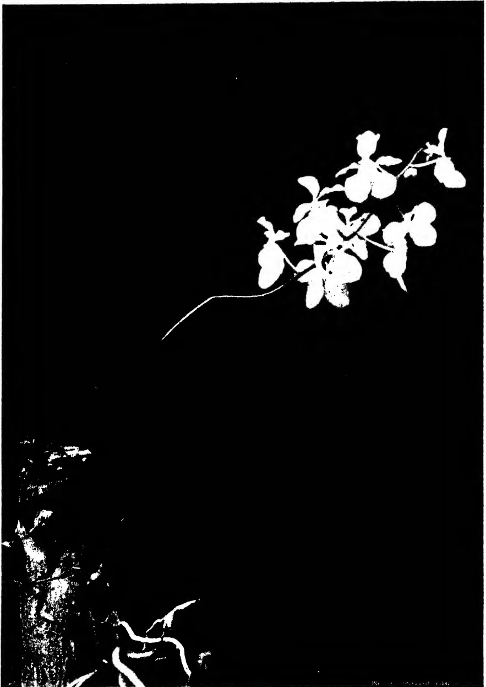
Vanda Coerulea Griff.
25K. J. ALEX SYLVA, F.R.H.S.,
SUPERINTENDENT OF MUNICIPAL PARKS, COLOMBO
VANDA coerulea is indigenous to Burma and Northern India where it is found on trees and low shrubs at altitudes varying from 3,000 to 5,000 feet. In Upper Assam this species is said to luxuriate and rapidly increase in size and flower profusely particularly in exposed situations where frost is not uncommon during certain months of the year.
Owing to the colour and wealth of blooms the plant is reckoned as one of the most handsome species of the whole genus.
The plant has an upright habit, often reaching three feet in height, with numerous fleshy roots emerging from the stem. The leaves are closely arranged in two rows, channelled above, thick and fleshy in texture, dark green in colour and are about six inches long, slightly curved and truncated at the apex.
The scape springs from the axils of the leaves often carrying a head of fifteen to twenty large blooms, distantly placed on an erect raceme which may be eighteen inches or more in length. The individual flower when fully expanded measures quite four and a half inches across and is of a pleasing delicate lavender-blue colour. The sepals and petals are nearly of one size, oblong, flat, slightly wavy at the margins, and of a uniform shade of pallid blue, tessellated with lines of a deeper hue. The labellum is deep violet, comparatively small, linear-oblong and obtuse at the point, with two diverging lobes. The spur is short, blunt and curved. The flowers will last six weeks or more if protected from rain.
26Culture. The plant is a difficult subject to grow at low altitudes in any appreciable condition. It prefers the cooler atmospheric conditions of the hills of Ceylon but it can also be fairly successfully cultivated in the hot humid low-country provided the treatment afforded is congenial to the plant.
Vanda coerulea is an air-loving plant. Whether in the cooler atmosphere of the mid and up-country or in warm humid low-country it takes most kindly to an aerial position with an eastern aspect on a live host.
In the hill-country the plant may also be grown in deep wooden baskets filled with bits of hard wood, charcoal and bones with a sprinkling of moss on the surface or on blocks of wood and suspended from the roof or from low hanging branches. In the low-country the plant should only be grown on trees or on stumps specifically planted for their reception. Stout stumps of Dadap, Gliricidia and Pisonia (Lettuce Tree), have proved excellent hosts for this species. Such host plants have the added advantage of thriving under very trying conditions and stand up to the periodical thinning out of leafy growth necessary to regulate the shade requirements of the plants growing on them.
On whatever positions the plants are placed all out-going roots should be allowed to wander at will to absorb atmospheric moisture. Growing plants will appreciate an abundance of light, shaded from the sun's direct rays, and of moisture.
At low elevations, plants grown in pots or baskets are liable to deteriorate after the first production of blooms and eventually the roots become spongy and decay sets in with fatal results. Under cultivation the plant does not grow very satisfactorily and takes a considerable time to become established. Some plants flower when quite small and this retards growth and frequently causes the foliage to shrivel. Flower spikes on weak plants should be removed early to prevent undue strain on the plant. Cut flowers of this species last a considerable time in water. Sponging the foliage with nicotine and soap solution will remove scaly bugs to which pest the plant is susceptible.
A completely blank white page with no visible content, text, or markings.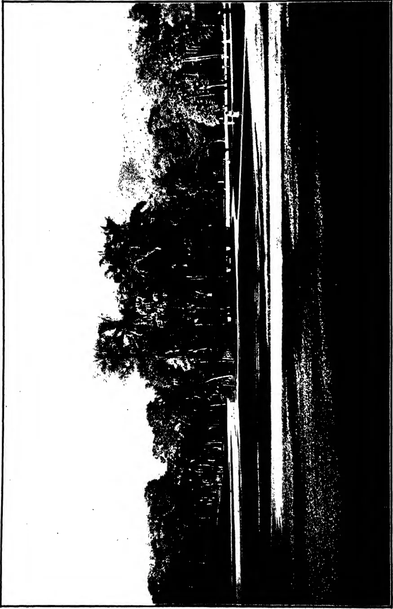
A high-contrast black and white photograph of a tropical landscape. The foreground is dominated by a dark, textured field, possibly a golf course. A bright, straight path or road runs horizontally across the middle ground, separating the field from a dense line of palm trees and other tropical vegetation in the background. The sky is bright and clear.The Great Circle
27T. H. PARSONS, F.L.S., F.R.H.S.,
CURATOR, ROYAL BOTANIC GARDENS, PERADENIYA
IT has become customary in most countries to commemorate times of public rejoicing, visits of royal personages and similar occasions by planting trees. The coronation of Their Majesties King George VI and Queen Elizabeth on 12th May, 1937, was such an occasion, and from the demands met by the three botanical gardens of the Department of Agriculture, in addition to plants known to have been supplied from private sources for this purpose, it can be inferred that the people of Ceylon did not lag behind those in other parts of the Empire in commemorating this important national event. Peradeniya Gardens supplied for this purpose 3,200 plants of which 2,600 were fruit plants; the gardens at Hakgala supplied 388 plants of which 228 were fruit plants; and Heneratgoda Gardens 590 of which 360 were fruit plants. Several local residents also raised supplies of jak and other fruit plants for free distribution to villagers and others on this occasion.
In England the planting of large numbers of trees at this time was foreseen and a special coronation planting committee was formed long in advance. The plantings were there regarded as likely to become of historical interest. Selections of useful varieties of trees were made and suitable labels of a permanent character provided. For the latter purpose, the committee designed a plaque in three styles and two sizes in white metal with silver letters on a black ground or black letters on a silver ground.
In Ceylon large numbers of copies of a list of selected flowering, shade, spice and fruit trees suitable for the occasion,
28together with general instructions to be followed when planting such trees and notes on their subsequent care, were issued from the Royal Botanic Gardens, Peradeniya.
The event was not overlooked at Peradeniya and it was commemorated by the planting of a handsome flowering tree by Mrs. E. Rodrigo, wife of the Acting Director of Agriculture, in the Royal Botanic Gardens. The tree so planted was a pink form of Lagerstroemia Flos-reginae (S. muruta) a tree indigenous to Ceylon. This is a strikingly handsome flowering tree of the mid-country, which flowers profusely in large showy panicles of pink flowers from April to July. Not only is the tree a very suitable one in itself for the occasion but its specific name Flos-reginae, indicating as it does a royal flower, is also applicable to the occasion. It was mentioned at the tree-planting ceremony that in the Royal Botanic Gardens there have been many similar plantings to commemorate visits and other interesting events.
The first of these, as far as can be ascertained from records, was the planting of a 'Bo' tree (Ficus religiosa) by King Edward VII in 1875.
The second occasion was the planting of a 'Na' tree (Mesua ferrea) by the Tsar of Russia in 1891.
In 1899, Prince Henry of Prussia on his visit to the Gardens planted a Flamboyante (Delonix (Poinciana) regia) near the trees mentioned above.
A 'Cannon Ball' tree (Couroupila guianensis) was planted to commemorate the visit of King George V and Queen Mary in 1901.
In 1902, an African breadfruit tree (Treculia africana) was planted by Mrs. J. C. Carruthers, wife of the Acting Director of Botanic Gardens, to commemorate King Edward VII's coronation.
The next planting was in 1911 of a 'Horse Cassia,' (Cassia grandis), by Mrs. J. C. Willis, wife of the Director of Botanic Gardens, to commemorate King George V's coronation.
In 1919, to commemorate the cessation of the Great War, a plant of the beautiful Tabebuia rosea was planted by Lady Stockdale, wife of the Director of Agriculture.
29A few years later, in April 1922, H. R. H. the Duke of Windsor, when Prince of Wales, planted a 'Munamal' tree (Mimusops Elengi) to commemorate his visit. This was a departure from the custom of planting a flowering tree since 'Munamal' is noted chiefly for its medicinal uses, of which it has many.
In 1925, H. M. the King of the Belgians visited the Gardens and planted a tree of the well-known 'Queen of Flowering Trees' (Amherstia nobilis) a row of which border the entrance to the Royal Botanic Gardens. Subsequently a specimen of the 'Orchid Tree' (Monodora tenuifolia) was planted by H. R. H. the Duke of Gloucester in 1929 to commemorate his visit to the Gardens.
All these trees have been planted around the Great Circle and undoubtedly no better locality could have been chosen as a site for these now historical trees. It is extremely satisfactory to note that, with one exception, all survive and are flourishing, the exception having been uprooted and fatally damaged many years ago in a storm.
30W. R. C. PAUL, M.A., M.Sc., D.I.C., F.L.S.,
DIVISIONAL AGRICULTURAL OFFICER, NORTHERN DIVISION
AND
E. S. JAYASUNDERA, Dip. Agric. (Poona),
MANAGER, EXPERIMENT STATION, ANURADHAPURA
IN The Tropical Agriculturist, Vol. LXXXVII, p. 176, September 1936, there appeared a note by the senior writer on the value of Tephrosia purpurea Pers. (S. pila, T. kavilai or kolinji) as a green manure both for paddy and high lands in the dry zone. In the course of some observations, which were made on this plant in such areas as waste lands and uncultivated paddy fields where it grows wild, another plant which is closely similar and ecologically associated with it was noticed. Villagers regard this second plant as also a type of pila or kavilai and on examination it proved to be Tephrosia villosa (S. bupila or hampila). It is distinguished by greyish coloured pods with a velvety down on their surface which when examined with a hand lens shows the presence of numerous closely set hairs. The pods of T. purpurea on the other hand are brown and smooth. They measure to in. long and about in. wide while those of T. villosa are to in. long and about in. wide. The seeds of T. purpurea are larger and generally lighter in colour with a pattern on their surface as is seen in the seeds of castor; the colour markings of the seeds of T. purpurea are under investigation in this Division. The flowers of the two species are very similar in appearance although those of T. villosa are somewhat larger and have a purplish hue while those of T. purpurea are a dark pink.
It was found that T. villosa has a deep root system and withstands drought as well as, if not better than, T. purpurea.
31It is also not eaten by cattle, goats or sheep. The seed exhibits delayed germination so that when the plant is once established in a field it makes its reappearance in subsequent seasons if it is allowed to seed before being ploughed in or removed for composting. When ripe the pods burst open and shed their seeds.
In view of the fact that this species has a somewhat better vegetative growth and a more profuse production of pods, there are indications that it will be an even better green-manure plant than T. purpurea which it closely resembles. Observation plots of 1/64 acre each were sown with both species on November 16th, 1936. The pods from both species were collected before complete maturity was reached and they were then dried in the sun for a couple of days when they burst open and shed their seeds. These were then lightly pounded with sand so as to scratch their hard outer coats which are responsible for the delayed germination of self-sown seed. In both species germination took place in about four days, and after about two months, 50 per cent. flowering was reached. The pods began to form about 1½ months from flowering but took a long time to reach maturity—3 to 4 months after flowering—but previous records have shown that T. purpurea can produce pods in a much shorter period. There was a severe attack by insect pests—probably as a result of the prolonged dry weather—but the vegetative growth of the plants is unaffected either by the drought or pests. T. purpurea pods were attacked by pod-boring caterpillars (Brachyema palpigera) and by grubs and beetles of the common Tephrosia beetle (Araecerus fasciculatus) while those of T. villosa have been attacked so far only by B. palpigera according to the report of the Entomologist.
In these plots, the plants of T. villosa have shown a more bushy growth and have produced a greater number of pods than those of T. purpurea. There are indications that it may prove superior to the latter as a green manure since both its vegetative growth and yield of seed is higher. Observations and experiments with this green manure are being continued.
32ACCORDING to Krause working in Sweden, French, Kidney or String beans (Phaseolus vulgaris), stored in loose heaps, remained in good condition for three weeks at 32° to 38° F. and R.H. of 85 per cent., but lost 20 per cent. of their weight during this period.
Only beans free from surface moisture and disease should be stored. Although a storage temperature of 32° F. has been recommended and is often used, Platenius et al have reported that beans keep longest in good marketable condition at 40° F. Humidity should be maintained at around 85 per cent. and hampers or other containers stacked so as to allow ample air circulation, otherwise the contents are likely to heat and decay. The accumulation of surface moisture during storage should be avoided. Beans kept too long are liable to become mouldy or slimy. Freezing injury is marked by irregular, water-soaked areas. Plank and Schneider found that an average temperature of 2° C. (35.6° F.), a relative humidity of 90 per cent., and weak agitation of the air, were the conditions most favourable to the storage of French (Dwarf) beans and runner beans, an extended life of two weeks without important losses being assured.
String beans grown under tropical conditions in Trinidad, packed in standard 20-lb. crates and held at 45° F. and R.H. of 80 to 85 per cent. for 22 days, were found to possess good keeping quality at this temperature, provided excessive desiccation could be avoided. The following losses in weights in small lots wrapped in grease-proof paper were recorded: at 45° F. (R.H. 80 to 85 per cent.), 25 per cent. after 14 days and 39 per cent. after 22 days; at 50° F. (R.H. 80 per cent.), 27 per cent. after 14 days, 43 per cent. after 22 days; at 60° F. (R.H. 75 to 80 per cent.), 38 per cent. after 14 days; at 80° F. (R.H. 55 to 95 per cent.), 78 per cent. after 14 days, 91 per cent. after 20 days. While string beans can lose a certain amount of moisture without impairing palatability, nevertheless, in harvesting and packing, every care should be taken to curtail desiccation.
* By C. Wardlaw in Tropical Agriculture, Vol. XIV, No. 4, April 1937.
33Smith in storage trials with Jamaica grown French beans at 40° F. and 50° F., observed that wilting was excessive and necessitated wrapping consignments in waxed paper or cellophane; a temperature of 34° to 38° F., is considered to be more suitable. Long stringless varieties have not given satisfactory results in cold storage.
Lima beans (Phaseolus lunatus) in the pod can be stored three to four weeks at 32° F. Although the pods become more or less discoloured, presumably due to chilling and desiccation the beans remain bright and clean and of good quality. Shelled limas if stored at this temperature should keep in good saleable condition for about 15 days. At a higher temperature, e.g., 50° F., they soon become mouldy.
In experiments carried out by Jamison, peas (Pisum sativum) were stored in bushel baskets at temperatures ranging from 32° to 70° F., at 32° F. and 40° F. they remained in good condition for more than two weeks, some loss in quality being observed at the higher temperature; at 50° and 70° F. eating quality showed obvious deterioration within a few days. Rapid cooling, pre-cooling with ice water, high humidity and abundant air circulation in the storage room have been advised. Plank and Schneider recommend storage at 32° F., with R.H. of 80 to 90 per cent.; under these conditions losses of five per cent. after 25 days and ten per cent. after 32 days were recorded.
Williams reports that beans and peas, as grown under New South Wales conditions, may be held in good condition for four weeks at a temperature of 33° F. and R.H. of 85 per cent.; the vegetables should be crated—not bagged—and adequate air circulation maintained in storage rooms.
A storage temperature of 45° F. has been cited for dry beans.
Some gas storage experiments with beans have been reported by Brooks et al. The warm vegetables, at an initial temperature of 75° to 85° F. were gradually cooled down to 45°-55° F. (average 50° F.), solid carbon dioxide being supplied so as to give CO2 concentrations of 20, 30 and 40 per cent., these concentrations falling to 10, 15 and 20 per cent. respectively, at the close of the experiments. Control samples were held at 32° and 40° F. without CO2. The object of these tests was to improve preservation and control fungal wastage during the preliminary cooling period. After two days treatment the beans were removed to 70° F. No. CO2 injury was observed, and flavour was not impaired except in the case of snap beans exposed to 30 per cent. CO2; of four storage fungi, two were inhibited by the gas treatment and two were not affected. Thornton on the other hand has reported injury to stringless beans exposed for three days at 0°C. (32° F.) or 15° C. (59° F.) to atmospheres containing 18 per cent. CO2.
According to Back, weevils will not feed and cause damage to beans and peas at low temperatures. It is not known at what temperature their
34development ceases, but no activity has been observed at or below 50° F. Cowpeas can be kept free from weevils if held in storage at a temperature of 32° to 34° F. It is claimed that exposure for a season at this temperature does not affect the germinating power of the seed. Investigations conducted in the United States indicate that no stage of the common bean weevil can withstand 56 days of cold storage at 31° to 32° F., although they may survive more than 66 days at 36° F. Larvae succumb to cold storage temperatures more readily than do pupae or adults. Storage rooms should be kept as dry as possible, the seeds being handled in sacks as in warehouses. Cowpeas held for a season at 32° to 34° F. did not lose their germinating power any sooner on removal to normal temperatures than cowpeas not thus exposed to cold. Seeds removed from cold storage to warm temperatures are likely to collect condensation moisture. Care should be taken to eliminate this surface moisture by drying or ventilation, otherwise mouldiness may result. In general, seeds can be protected more cheaply by fumigation under storage conditions which may be better for the seeds.
Beets are well adapted to storage and may be kept for several months, at 32° to 40° F., provided their tendency to rapid wilting is controlled by maintaining a high humidity in the storage room. Platenius et al observed that sprouting began after three months at 50° F. With air-blast refrigeration, beets as grown in Trinidad showed excessive wilting at 40° and 45° F. Krause cites a storage temperature of 32° to 33.5° F. as suitable for this root-crop. Immature bunch beets are more perishable and should only be stored temporarily. In gas storage experiments using high concentrations of CO2, no injury was observed, but no benefit accrued from the treatment.
The transport of this fruit from Java to Holland in refrigerated chambers at 3°C. (37.4° F.) has been attempted.
Although these crops are best suited to temperate climates, carefully selected varieties can be grown in the tropics with a fair measure of success. The acclimatisation of good, adaptable strains is desirable, even where the produce is intended for local consumption only.
The solidity of the head, the colour of the crown and the curling back of the outer leaves are the usual criteria by which harvesting maturity is determined. Soft and immature heads tend to wilt badly, while over-ripe ones are too tender and brittle for long shipment.
Heads for shipment or storage should be carefully graded and firmly packed, with the stems out, in crates. When stowed in bulk thorough ventilation is essential. According to Hauck, writing of United States produce,
35only Danish or Hollander cabbage can be stored without excessive shrinkage ; an account is given by Corbett of the houses and racking arrangements used for this purpose. During cold storage, drip from the ceiling, and condensation of moisture on the leaves should be avoided. The temperature should be maintained as near F. as possible ; - F., - F., - F. and F. and R.H. of 90 per cent. are also cited as suitable for the storage of cabbage over a period of three months. To prevent excessive wilting and shrivelling a high relative humidity is essential. Platenius et al have described storage trials at , and F. A temperature of F. proved most suitable, the heads only losing ten per cent. in weight during three months, and remaining in good condition for five months ; at F. deterioration was more rapid, giving a total storage life of three months ; at F. many heads became unmarketable during this period, mould, soft rot, wilting of the outer leaves, and burst heads reducing the weight of marketable crop by 50 per cent. Freezing injury in storage is to be avoided. For New South Wales produce, Williams found that heads wrapped prior to storage kept much better than unwrapped heads, giving a storage life, at F. and R.H. of 85 per cent., of ten weeks as compared with six weeks. According to Brooks et al brief treatments with high concentrations of did not affect cabbages either in respect of causing injury or modifying the flavour.
For successful storage it is necessary not only to prevent fungal wastage but also to retard the maturation of the head or curd. Heads may be cut before they are quite mature but with some loss in flavour as compared with fully grown heads. If cut under moist conditions, decay, due to superficial fungi, may occur during storage or transport. Commercial over-maturity is marked by a browning of the white curd and the development of "riciness." The leaves tend to become yellowish and readily fall off the stem.
This vegetable is difficult to hold in warm weather because of wilting and the tendency of the heads to open out. Where storage or transport is envisaged, it is an advantage to trim the surrounding leaves with long stubs as these afford a certain amount of protection. Hume has recommended wrapping each head in glazed paper and tight packing of uniform heads in crates. For ordinary storage, dry air and free ventilation help to maintain the heads in good condition and to curtail fungal wastage. For New South Wales produce, Williams has indicated the advantages of wrapping heads in grease proof paper to curtail wilting and discolouration.
According to Jones et al the stage of development of the head markedly affects its carrying qualities. Harvesting should not be deferred too long or separation and deterioration of the curd sets in, a separated curd tending to deteriorate more rapidly than one which is compact at the time of cutting. The spreading of the head continues during storage. Various other defects,
36described as "rieness," "fuzziness" and discolouration are also to be avoided. The formation of proper heads, and the tendency towards premature heading have been shown by Robbins, Nightingale and Schermerhorn to be directly related to nutritional conditions during growth.
In the United States of America according to Jones et al cauliflowers for transport are packed in single layers in crates or flats and transported in iced-refrigerator cars (34°-40° F. approximately).
Platenius et al have described storage experiments at 32°, 40° and 50° F. At 32° F. the temperature recommended for commercial storage-heads remained marketable for 30 and occasionally for 40 days; at 40° F. deterioration set in after 12 days, and at 50° F. heads became unsaleable after one week. Losses due to shrinkage were high, being ten per cent. after one month at 32° F. A high relative humidity during storage is therefore desirable. A temperature range of 35° to 39° F. has also been cited as suitable for cauliflower storage. For New South Wales cauliflowers, Williams recommends a temperature of 32° F. and R.H. of 85 per cent. Wrapped heads kept in good condition for ten weeks; unwrapped heads kept for six weeks; thereafter, having lost ten per cent. by weight, they had to be trimmed.
Scurti in Turin, has indicated the possibility of preserving cauliflowers using gas storage methods, an atmosphere containing ten per cent. CO2 and ten per cent. O2 being effective in prolonging the storage life. Kochs records the storage of cauliflowers grown in Germany and wrapped in oiled paper, over a period of six weeks at a temperature of 2° C. (35.6° F.), with R.H. of 85 per cent. using ozone as a deodoriser. Friebe Scupin cites a storage period of three months at a temperature of -1° C. (30.2° F.) and R.H. of 90 per cent.
In a recent article, Wood and James have called attention to the possibility of growing cauliflowers in the tropics for export, the successful cultivation of this crop having been made possible by the use of specially selected, Indian-grown strains ("Patna" and "Benares"). In 1934 and again in 1936, heads of the strain, known as "Early Patna," grown in Trinidad, were held in cold storage, with air-blast refrigeration at 45° F., and in still air at 38° to 40° F. In the 1934 experiments the heads were successfully held at 45° F. for 20 days but showed rapid wilting when removed to relatively dry air at 70° F., the 1936 trials showed that heads can easily be kept in good condition up to 40 days at 40° F., provided care is taken to avoid undue wilting.
The following storage temperatures are cited for completeness. High relative humidities, of about 90 per cent., are usually desirable to avoid excessive wilting.
| Broccoli | .. | .. | .. | 32° F. |
| Brussels Sprouts | .. | .. | .. | 32°-34° F.; 32° F. |
| Kohlrabi | .. | .. | .. | 32°-33° F. |
| Radish | .. | .. | .. | 31°-32° F. ; 32°-34° F. ; 33°-37° F. |
| Turnip | .. | .. | .. | 31°-32° F. ; 33° F. and R.H. of 85% ; 34°-37° F. |
| Turnip-cabbage | .. | .. | .. | 32°-34° F. |
In storage trials with several varieties of Jamaica-grown radishes, Smith observed that temperatures of 45° to 47° F. were too high, considerable wilting (with air-blast refrigeration) being the rule; the most suitable temperature is considered to be in the region of 34° F.
Carrots are well adapted for storage, and lose little of their eating quality even after prolonged storage. In a recent work Platenius has made the observation that, contrary to common belief, the eating quality of old carrots is equal to if not better than that of young carrots, since sweetness increases with age while the fibre content remains practically unchanged and protein hydrolysis is slow. Carrots can be held in storage for six months without serious deterioration, provided the temperature is maintained between 32° and 40° F. and the relative humidity above 90 per cent. At 50° F. breakdown begins after three months; the fibre content also tends to increase. At 30° F. carrots develop freezing injury and soon decay on being removed to higher temperatures. After five months' storage at 32° and 40° F., losses in weight of 10 and 13 per cent. respectively were recorded. Langley, Richardson and Andes have observed that the vitamins (A, B and C) do not undergo deterioration during storage.
According to Lauritzen the most suitable conditions for the storage of carrots are a temperature of 0° C. (32° F.) and a relative humidity of from 90 to 95 per cent. No shrivelling was found to occur in carrots stored at 6.5° C. (43.7° F.) when the relative humidity was maintained at 90 to 95 per cent., whereas considerable shrivelling was the rule at 70 to 80 per cent.
In experiments conducted by Hasselbrink carrots were kept 22 weeks at 32° to 35° F. and 39° to 40° F., losing 7 per cent. and 26 per cent. of their weights respectively. Hydrolysis of sucrose into reducing sugars was more rapid at the higher temperature. As flavour is correlated with the sucrose content the lower temperature is recommended, viz., 32° to 35° F.; Lauritzen has shown that at this temperature infection and decay, due to black-rot disease, are reduced to a minimum. An Idaho report states that carrots stored at 40° F. in sand or on shelves remained in good condition for upwards of five to six months. For carrots grown under New South Wales conditions and stored dry, a temperature of 33° F. and R.H. of 85 per cent. will keep this produce in good condition for two months. Carrots grown under moist tropical conditions must be protected against excessive wilting.
Samples of English carrots (Johnson's Intermediate variety) were taken from the clamp in December and stored at—1°, 1°, 5° and 5° C. (30.2°,
3833.8°, 37.4° and 41° F.), half of each sample being washed. Storage was unsatisfactory at -1° and 5° C. (30.2° and 41° F.); at -1° C. (30.2° F.) freezing occurred, while at 5° C. (41° F.) large sprouts and rootlets developed after five months' storage. At 1° and 3° C. (33.8° and 37.4° F.) sprouting was inhibited, but although the washed samples remained almost free from mould on the surface for five months, considerable mould developed on the unwashed. The carrots were stored under very damp conditions; it was considered that drier conditions would probably have retarded the development of mould, though the loss in weight, which amounted to 12 per cent. in the washed sample, would then have been increased. After five months' storage the texture and flavour on cooking was moderately good.
Several carbon-dioxide experiments with carrots in conjunction with refrigeration have been described by Brooks et al. In the matter of palatability, carrots subjected to CO2 while being gradually cooled to 45° to 55° F. were as good as or better than carrots placed immediately at 32° F.; they were distinctly sweeter and better than carrots held under similar temperature conditions without carbon dioxide. These results are in agreement with those of other workers. Exposure to carbon dioxide had a decided inhibiting effect upon Rhizoctonia sp. and Sclerotinia sclerotiorum, but little on Bacillus carotovorus.
In the tropics, celery (Apium graveolens) is best suited to the cooler conditions of cultivation on the hills, though good crops may also be obtained on the plains. In the United States of America the crop is grown in certain districts of California, Florida as well as in more northerly areas.
Blanching of celery may be achieved by banking up the plants with soil, by boarding-up or encircling with paper or by the use of ethylene. According to Beattie while ethylene destroys the colouring matter of the celery stalk to give a white appearance, this method of blanching does not yield the quality found in a good grade which has been blanched by treatment in the field.
To be of good quality, celery should be white, crisp, tender, free from fibre or stringiness and of characteristic pleasing flavour; the relevant literature and problems have been considered in detail by Sayre. Choice of varieties and environment are important in producing high quality celery. According to Sayre, toughness and stringiness are not determined by the size or number of the vascular bundles, nor by the presence of bast fibres or a high degree of lignification in the wood vessels. The only tissue that appears to have a definite relation to stringiness is the collenchyma—a mechanical tissue situated towards the periphery of the stalk. Sayre states that it is not the amount of this tissue present which determines stringiness but the degree
39of hardness to which it has developed. In tough, stringy specimens the collenchyma was observed to be of particularly hard texture whereas in tender specimens, both of tender varieties and of inner stalks of tough varieties, its texture was not hardened. This is the only morphological factor which has been correlated with toughness and stringiness in celery. Over-ripeness due to delayed harvesting, is accompanied by an undesirable pithiness, loss in weight and flavour especially in early varieties. Pithiness, an undesirable character in celery, is correlated with a breaking down of the parenchyma cells, and with the development of large open spaces in the centre of the stalks as a result. Flavour is apparently more influenced by varietal than by environmental factors. The relation between cultural conditions and quality have not yet been clearly defined.
In 1925, Harvey reported that small concentrations of ethylene in air (from one part per 1,000 to one part per 10,000) were effective in hastening the blanching of celery, the so-called self-blanching varieties requiring six days and the dark-green types ten to twelve days. Over-doses of the gas caused a browning of the leaves. Harvey also found that acetylene in corresponding doses was an effective blanching agent, but its use was precluded on account of its unpleasant odour. He suggests that the blanching action consists in hastening the decomposition of the green pigment, and holds the view that the quality, texture, colour and keeping quality of celery blanched by ethylene are equal to those of celery blanched in the field. Babb states that the vitamin B content of celery is not destroyed by ethylene blanching.
In ethylene-blanching experiments with celery, Mack made the following observations: relatively low concentrations of ethylene in air (one part in 25,000 to 50,000) were considerably more effective in producing rapid and complete blanching than were relatively high concentrations (one part in 500 to 2,500); concentrations of ethylene of one part per 1,000 of air produced an injury characterised by a splitting of the stalks on the inner surface and pronounced pithiness of the stalks thus split; the acidity of the celery juice remained unchanged by ethylene treatment; the rate of respiration was more than doubled by ethylene treatment, but differences in flavour were not attributed to the accumulation of the by-products of respiration; the most rapid respiration, in stalks treated with one part of ethylene per 50,000 parts of air, was accompanied by the best blanching, but the produce obtained, though crisp and tender, was very subject to rotting; the accumulation of the carbon dioxide of respiration exercised an inhibiting action on the blanching process, so that, at high carbon-dioxide concentrations, ethylene failed to produce the usual effect. From these observations Mack has expressed the opinion that ethylene accelerates the blanching process by stimulating the activity of enzymes normally concerned with the breaking-down of various compounds in the plant. Some divergence of views as to the
40effectiveness of ethylene in this connection must be noted. Thus Mulder, Oelmeyer and Spencer obtained no acceleration of the blanching process at concentrations of one part per 1,000 at a temperature of 25° to 26° C. and R.H. of 85 to 95 per cent. Experiments conducted at the New Jersey State Agricultural Experiment Station also yielded inconclusive results. Hibberd found that ethylene was effective in destroying the chlorophyll of celery, but does not recommend its use under Michigan conditions.
In California and Florida special washing and pre-cooling plants are now in use. Using the water-immersion method, some of these can handle about 200 crates per hour. Washing is effected by placing the crated celery on a conveyor which travels slowly through a trough; during this passage—a matter of 20 feet—water is sprayed on the crates on all sides. This washing effectively cleans the products. Proceeding from the washer the crated celery is directed on to a conveyor four crates wide; the crates now travel still more slowly through a tank in an insulated room where they are immersed approximately one-half their height in water cooled to 34° F. while simultaneously the tops of the crates are saturated from above by the drip of water, slightly above freezing, from refrigerating coils lined above the tank. The entire period from the time the product is placed in the washer until it is trucked into the refrigerator car is less than 22 minutes. The celery absorbs approximately seven pounds of water per crate during the treatment which, together with the rapid cooling, is the outstanding factor in its preservation for the market. The average reduction effected in flesh temperatures is from 70° to 37°F.
Much of the celery produced in the United States is crated and shipped for immediate consumption. In California, as described above, consignments may be pre-cooled before being placed in refrigerator cars.
In some early experiments on the storage of celery, Thompson observed that storage in the field or in cellars is unsatisfactory because temperature and moisture conditions cannot be adequately controlled. In cold storage trials he noted that celery packed in large crates always began to decay at the centre, the amount of decay being greater than in small crates. Further detailed observations indicated that the tendency to self-heating in packs (in some instances the centre may be 3° F. higher than the margin), and uneven distribution of temperature in grid-cooled storage rooms were important factors in determining the extent of wastage. A 14-inch crate was found most suitable. At a uniform temperature of approximately 32° F. or just above the freezing point of celery, this commodity can be successfully stored for three to four months.
During storage, some growth of the centre leaves may take place at the expense of materials chiefly derived from the outer leaves. This increases
41during the first few weeks if the temperature is raised. As blanching also takes place in storage, crates intended for long storage will require less preliminary ethylene treatment.
Specially constructed chambers maintained at 33° to 34° F. or 31.5° to 32° F. are now used for the storage of celery, whereby the commercial life may be extended by two to four months. In stacking the crates care is taken to ensure adequate ventilation; in some warehouses air circulating fans are installed to secure more uniform temperatures. Wilting, with concomitant loss of crispness, should be avoided by keeping the storage atmosphere at a high relative humidity, e.g., 95 to 98 per cent. As celery freezes at 30° F. care must also be taken that the temperature does not fall too low.
As celery is a rather perishable crop, subject to a watery soft rot at higher temperatures, only sound material should be accepted for storage. Freezing injury is marked by a general loosening of the epidermis which is evident on twisting an injured stalk. Cold storage temperatures recommended by other investigators include the following: 32° to 34° F.; 35.6° to 39.2° F.; 33° to 35° F.; 32° F. and R.H. of 90 per cent.
Thornton has shown that celery is susceptible to carbon-dioxide injury: slight injury resulted from seven days' exposure at 0°, 4° and 10° C. to atmospheres containing 25 per cent. of carbon dioxide; still greater injury resulted from exposure to atmospheres containing 50 per cent. or more of carbon dioxide. Brooks et al have also described experiments in which freshly picked celery was treated to various concentrations of CO2 during cooling to 45° to 55° F. After three days' treatment, with high initial carbon-dioxide concentrations, all lots were held at 70° F. for four days. Exposure for three days to an atmosphere containing 50 per cent. carbon dioxide resulted in slight injury to the celery tops and a slight browning of the vascular tissue at the base of the stalks; a similar exposure to 20 per cent. carbon dioxide in air caused no injury to the tops and only slight traces of browning at the base. In both cases the celery stalks broke away from the stem much more readily in treated than in untreated lots. The taste of the treated celery was slightly inferior to that of untreated celery.
* 42WHEN the decision was taken, somewhere around 1925-26 to restore the Research Station at Amani, the site of the Biological and Agricultural Institute of German East Africa, official circles showed an awakened interest in the subject of agricultural research in the Empire, and did much constructive thinking in connection with its organization. Active influences were at work in the Colonial Office and in the Empire Marketing Board, the latter a new force unfettered by the older departmental inhibitions, using its freedom to support many projects generally admitted to be desirable but previously impossible to develop because no channel existed through which the necessary funds could flow. This general stirring of the waters culminated in the Imperial Agricultural Research Conference of 1927, a high tide which has left deep permanent marks, although its ebb in the succeeding years of the great depression carried back much promising construction.
Among the wreckage was the project to establish a chain of Stations at appropriate points around the Empire for the purpose of pursuing fundamental research in agricultural science. Two of the proposed links were already in existence, the Imperial College of Tropical Agriculture in Trinidad and the newly established East African Research Station at Amani; the rest for the reason indicated failed to develop. The later closing down of their prospective means of support, the Empire Marketing Board, seems to have removed any lingering hope that trade recovery might lead to a revival of the project.
Ten years' experience of the working of the Amani Station is now available as evidence of the soundness of the plan, and the purpose of this article is to review its history and to suggest some conclusions in that connexion.
Given a commission to carry out "fundamental research," the first problem to be faced was the meaning of that expression, a question on which perhaps no two men of science could be found wholly to agree. There is a popular tendency to substitute the phrase "long-range research" as conveying a clearer explanation of the idea, but it is preferable to use this as an extension rather than as an alternative. Fundamental research may be short or long; long-range research is not necessarily fundamental, but as
*By W. Nowell, C.M.G., C.B.E., Late Director, Amani Research Station, Tanganika Territory, in The Empire Cotton Growing Review, Vol. XIV, No. 2, April 1937
43a matter of convenience is best undertaken by an institution not concerned with immediate practical results. Though the nature of fundamental research cannot be defined, it can perhaps be explained in this connexion as the study of the principles underlying and relating the applications of science to practice.
The field provided by the six African dependencies contributing to the maintenance of the Amani Station is in every sense extremely wide. In extent it stretches from the Zambezi to the head waters of the Nile, and from Zanzibar to the great central lakes. Agricultural conditions range from rain forest to semi-desert, from tropical coast plantations to plateau farms at elevations of seven thousand feet or more, through a series of crops from cloves and coconuts, cotton and sisal, to coffee, tea, maize and wheat. Under such circumstances no site can be more than an inadequate compromise, no programme more than a small selection of the possibilities offered.
The site of the Amani Station was originally chosen as a centre for what was expected to be a great coffee plantation area in the forests of the Usambara Mountains, at elevations round three to four thousand feet. The failure of these expectations has left it for the present isolated from any immediate surrounding of agricultural industry. There are good prospects that the result of its own investigations with suitable crops for the area will remove this disability, if such it be considered—a question upon which opposite opinions are tenable. The proximity of the Usambara Mountains to the sea gives the site the essential advantage—not shared by any that could be selected on the main highland area—of the combination of healthy working conditions for Europeans, with ready accessibility to the coastal cultivations and to the main lines of communication by sea.
Determining factors in the decision to continue the occupation of Amani for the wider purposes of an East African Research Station were the desirability, in which political considerations had a part, of continuing the honourable traditions of the German Station, and from a material point of view, the existence of a developed site, with roads, plantations and valuable permanent buildings requiring only some degree of repair to be ready for occupation. Heavy capital costs and much delay were thereby avoided. Apart from the valuable nucleus of a scientific library, and a large collection of herbarium specimens, there was little that was serviceable in the remaining equipment. The scope of the field side of the station, which has a range of elevation from 1,500 to 3,700 feet, was enlarged by the addition of a neighbouring estate with nearly a thousand acres of semi-derelict coffee plantations.
A draft programme of research, prepared by the Director after a tour of the countries concerned, was approved by an ad hoc committee in London and later with little modification, by a conference on the spot in which the local Directors of Agriculture took part, with the Agricultural Adviser to the Colonial Office presiding. The funds available, which were then officially
44regarded as adequate only for a beginning to be made, permitted of the appointment of six research officers with two European laboratory assistants, a systematic botanist, a superintendent of plantations, and the necessary secretarial, clerical and maintenance staff. This skeleton establishment continues to the present day. The natural expansion which was expected to follow as the Station grappled with its problems has been prevented by the general financial crisis. Considering the severity of this in relation to the sources of support, the fact of even bare survival is no small recognition of the value of the services rendered.
The six sections into which the research programme is divided are Soil Science, Plant Physiology, Plant Genetics, Plant Pathology, Entomology and Plant Biochemistry. An attempt is thus made to carry on work in all the main divisions of agricultural science. Had the restrictions imposed by circumstances been foreseen it would probably have been better to concentrate the available resources into narrower channels. The writer's choice, in this event, would have been to omit plant pathology and entomology, not because these subjects are less in need of fundamental investigation, but because provision for them is more readily made in the organization of agricultural departments, while in comparison with the other subjects they are less constructive in their application.
Of all the sections concerned least question is likely to arise regarding the desirability of the fullest possible provision for the development of soil science. The dominant position which this subject has held in the prototype of agricultural research stations—Rothamsted—will be recalled. It has been the object of the soil investigations based on Amani to work towards a natural history of African soils. As far as the hopelessly inadequate man power has permitted, much has been done to examine and sample soil profiles and to relate them into groups, supplementing observations by laboratory analysis. The main difficulty encountered has been to balance the conflicting claims of wider travel for the purpose of extending knowledge of soil types and their distribution, and of detailed examination of those already collected. Much assistance has been rendered by auxiliary collectors, especially district agricultural officers, and members of the forestry and tsetse control departments. In addition to its direct investigations the soil section has functioned as a clearing-house for the exchange of information and the co-ordination of methods with the soil chemists working in the departments of agriculture. Two special conferences have been held to further these objects, and the outcome has been the issue of a soil map of Uganda, Kenya, Tanganyika and Zanzibar, in which the information available from all sources is summarized, and not least in importance, the vast gaps in our knowledge of distribution displayed. It is only now, when the broad lines of agricultural development have been laid down by a long and expensive process of trial and error, that studies have been initiated which will make possible, at
45some future date, the type of land utilization survey on which settlement should ideally be based. Failures are apt to be explained instead of foreseen, as, for example, the thirty years of effort to grow Arabian coffee in the Usambaras, dating back to German times.
In an agricultural country, knowledge of the soil and of its capabilities, and of the measures necessary for its preservation, should be the basis of administration. Some realization of this in one aspect, that of soil erosion, has now entered the public mind, but there is little evidence as yet in East Africa that it has affected general administrative policy.
The magnitude of the work that faces the staff of one officer and one laboratory assistant is well illustrated in the latest progress reports, in which are listed seven important groups of soils or well-marked areas encountered in one journey in Tanganyika, of which next to nothing is known, and to this list is appended a neglected problem which affects the whole of Africa, namely, the relation of termites to soil formation and fertility. The termites await their Darwin.
The work at Amani in direct relation to crops has been mainly concentrated on coffee and sisal, which were assigned to the Station in the original scheme of distribution. They have received the undivided attentions of the geneticist and the physiologist, supplemented, as to coffee, by some of the services of the biochemist.
East African sisal is the product of Agave sisalana, accepted botanically as a species but in all probability a clone of hybrid origin. Its only departure from uniformity, apart from the effects of environmental influences, is the tendency of a proportion of the bulbils formed on the inflorescence to develop spiny margins to their leaves. It is reproduced for commercial purposes entirely by vegetative propagation, either from bulbils or from lateral suckers. The leaves are cut in succession as they mature, and the fibre, which consists of strands running lengthwise in the body of the leaf, is extracted in a machine which scrapes away the epidermis and the fleshy tissues.
The plant is a highly resistant xerophyte, and its cultivation under anything approaching reasonable conditions gives little trouble. It can hold its own in competition with weeds and is little troubled by insects or disease. So far as the industry has existed to supply fibre for binder twine, it has required and received little scientific attention. Not only was the absence of information regarding an important plant industry felt to be a reproach, but the development of more diversified uses of the fibre, and the desire to find further applications for it, demanded a study of its properties and potentialities.
At the time when work at Amani began, when samples were sent to London the accepted method of scientific assay was chemical analysis, the results of which must have been singularly uninformative to the spinner. The first necessity was to determine the distribution of fibres in the leaf. They
46occur in all lengths up to the length of the leaf itself, and also vary greatly in diameter; they are, moreover, of compound structure, and are capable, especially the coarser ribbon-shaped types, of longitudinal subdivision under mechanical treatment. In these circumstances sampling presented serious difficulties, which had to be met by mechanical mixing checked by statistical analysis. In determining such properties as breaking strain very large numbers of measurements are necessary, and it is fortunate that the African youth is happy to sit and repeat a simple operation for months and years.
A large amount of information has been accumulated, and is now in course of publication, concerning the distribution, length, fineness, and strength of sisal fibre and the correlation of these properties. In addition, the relationship between fibre length and leaf length has been made clear. The methods of examination have been extended to related species, and are now being applied to one of the main purposes for which they were designed, the evaluation of the new varieties produced by the plant-breeder.
Genetic studies began with the seedling offspring of A. sisalana, which proved to be incredibly diverse. No form has yet emerged, however, with promise of agricultural or commercial superiority to the parent, and attention is turning to the progeny of A. amaniensis, itself a very promising type derived apparently from a chance introduction, and its hybrids with A. sisalana. A wide range of material representative of the genus has been brought together, and cytological studies are throwing light on its constitution and affinities.
The result of this work is that there will be available in the future a choice of planting material to give fibre of differing characters, and this should help considerably the object which is the growers' chief present concern, the extension of its uses.
The cultivation of coffee has a long tradition behind it, with methods locally adapted to the widely distributed countries in which it is established. Not only do these methods differ greatly, but there are often, especially in newer areas, wide differences of opinion and practice and radical changes of treatment in the same district, as, for example, in the provision of shade. It has been the concern of the Amani workers to study the constitution of the plant, and to reveal the physiological basis of its reactions to the conditions imposed upon it. An early and most instructive investigation demonstrated strongly marked differences in the root systems developed in various districts and revealed the unsoundness of the tradition that coffee needs, or prefers, an acid soil. It is, in fact, suggested that antipathy to acid conditions explains such failures as that of the great German effort to establish the industry in Usambara.
Study of the condition, prevalent in the principal coffee area of Tanganyika, and often seen elsewhere, in which the bearing of a crop is succeeded by dieback of the fertile branches and of the finer roots, has shown it to be associated with carbohydrate depletion. This has led to a comprehensive examination
47of the light and water relations of the plant, including the movements of the stomata and their relation to photosynthesis. The knowledge gained supplies the foundations required for the study of all the questions in which assimilation is concerned.
The combined results of research and agronomic experimentation carried out by the Amani Station and by the scientific staffs of the Departments of Agriculture are contributing at an increasing rate to the agricultural soundness of the coffee industry. There is one problem, however, on the commercial side, in which the methods of science have been defeated, namely, the attempt to find a measure of quality as understood on the market. A similar difficulty has not been unknown to the cotton grower. So long as this measure is lacking the main factor in the wide variation in the prices realized remains outside any attempt at control.
A coffee estate in Kenya was used by the Entomologist for an initial effort in a type of investigation which could profitably be extended to all important crops growing under representative conditions. It involved the detailed recording, over a period of significant length, of all the measurable factors which make up the climate actually in and around the plants, and the comparison of these measurements for correlation purposes with others made nearby under standard conditions. The idea behind this study of eco-climates is that it reveals the intimate conditions in which the insect fauna (and no less the fungus flora) have their existence. Striking differences in infestations, due to local conditions, are frequently encountered, and analysis of the factors involved, as for example humidity, should provide guidance as to the direction in which the conditions may be modified to render them less congenial to the pests concerned.
The work of the section of Plant Pathology has been concentrated on the virus diseases of tropical plants and especially, so far, on an intensive study of the transmission of a virus disease of maize by its insect vector. Important contributions have been made to knowledge of a subject of great scientific importance. There is no lack of subjects for further investigation, since serious diseases of this class exist on such staple African crops as sugarcane, cotton, cassava and ground nuts. An incidental result obtained has been the recognition and complete control of a severe disease of tea which was thought to be possibly a virus infestation but was found to be due to sulphur deficiency.
Biochemical research—apart from its contribution to the study of the physiology of the coffee plant and a demonstration of the unimportance, from the point of view of any effect on quality, of the process of coffee fermentation—has been largely occupied with the vegetable insecticides derived from plants used by natives as fish-poisons. Early work was done on Tephrosia vogelii, which is widely used for this purpose in Africa, and in testing numerous other plants less well known. Later the introduced
48Derris elliptica was the subject of test, and most recently another indigenous fish-poison, the bark of Mundulea suberosa, a widely distributed small tree. These investigations are parallel with work at Washington, Rothamsted, and as regards Derris, in Malaya, as well as in many commercial laboratories, the subject being one of growing commercial importance. The chief difficulty is to find chemical or biological methods capable of use in determining relative toxicity.
The circumstance that the officer appointed as secretary to the Station is an ardent student of ornithology has led to some official recognition of this subject, and has considerably increased the scientific output. Series of papers are being issued dealing with distribution and the relation of birds to their environment, in which much new ground is broken, especially in regard to tropical conditions. A commencement has been made in the systematic study of the food of selected groups of African birds by the examination of stomach contents, a matter of considerable agricultural interest on which little information exists.
What may be called the central services of the Station to the East African area are of no small importance. The library receives a wide range of publications and affords to scientific workers in the area access to literature otherwise available only during periods of leave. The gaps left by the years between 1914 and 1926 in the series of periodicals were made good by a grant from the Carnegie Trustees, and in 1934 the same body having "been much impressed by the importance not only to the British Colonies and Territories of East Africa but to Tropical Africa as a whole" of the Research Station at Amani, provided for the Library an endowment of £10,000.
A further service which is much used and greatly appreciated by officers in agricultural, medical, veterinary and other scientific departments is that of plant identification by the botanist in charge of the Herbarium. This saves a great deal of the delay involved in reference to botanical institutions in Europe.
As the result of an agreement between the departments of agriculture, approved by the Secretary of State, the Station maintains a central Plant Quarantine Station for East Africa, through which are passed all introductions of important crop plants and related species. The cost of the necessary equipment was met from the Colonial Development Fund.
In addition to its main research activities, and without encroaching upon them, the Station has been able to carry on, by means of its plantations and nurseries, its inheritance from the German period of an interest in plant products which may form the basis of new agricultural industries. Cinchona has been successfully cultivated at Amani since 1902, and there is now some prospect of its cultivation on a considerable commercial scale. Of more recent introductions, Derris and Aleurites have good prospects. Chemical analysis is essential for the control of trials of the two first named and some
49botanical problems needs study in the case of the third. These requirements the Station is able to meet.
In the light of this review of the history of the first ten years of the existence of the East African Stations, consideration can be given to the question how far the nature of its achievements and the position occupied in relation to agricultural organization justify the original conception. The conclusions to be drawn will depend mainly on the view taken of the functions proper to be developed by the regional departments of agriculture. Special stations for research not being in existence, these have perforce combined such provisions for research as local governments would agree to finance, with their substantive functions of providing advice to agriculturists, and guidance to the administration on matters concerning agricultural industry. Most commonly the scientific officer is responsible both for investigation and for the application of its results in the form of advice, a situation precluding the successful undertaking of the more serious forms of research, which demand continuity and freedom from distraction. Agricultural departments cannot afford to dispense with a scientific staff, but a detached institution, directly organized for its purpose, free from any industrial connexion and sheltered from popular or administrative interference, has great and obvious advantages over any expansion of this staff with the object of providing for the systematic research required.
50IN view of the importance which the Cercospora leaf spot (Sigatoka) diseases of bananas has now attained in the Caribbean region and in the Guianas, the following account of its outbreak, spread and intensification in Trinidad has been prepared.
A collection of Giant Governor banana planting material, obtained from the Moruga district, was planted at Maqueripe Estate about January, 1932. As bunches for storage experiments at the Imperial College of Tropical Agriculture were being reaped from the end of 1932 to May, 1933, this plantation was frequently under observation. Cercospora leaf spotting, not hitherto recorded in Western Tropics, became well marked towards the end of 1933, though the productiveness of the Giant Governor, a plant of rank-growing habit, was not affected. Dwarf Cavendish bananas (the Trinidad Governor variety) in immediate proximity also showed leaf spotting, though in a less severe form, some time later. Early in 1934 the disease was studied in some detail by the writer and identified as being due to the fungus Cercospora musae Zimm, this diagnosis being verified by the authorities at the Imperial Mycological Institute. For general information a note was prepared for Tropical Agriculture and published in July, 1934.
During frequent inspections at the beginning of 1934, Cercospora leaf spot was not observed anywhere in the Maqueripe district except in this one area, the Giant Governor plot being the focus of infection. A thorough stripping and burning of all diseased leaves, undertaken as a precautionary measure, did not halt the progress of the disease and by the end of 1934 it became evident that it was spreading adjacent Gros Michel, blocks planted in 1932-33 becoming infected. From this time onwards it became apparent that Cercospora leaf disease was generally distributed through the Island, having presumably spread from several foci of infection. At this time the Gros Michel blocks at Maqueripe though generally infected showed little diminution in productiveness. The general mycological observation made during 1934-35 was that the older the stand of plants, the more intensive was the infection, but at this stage premature ripening of bunches on the plant as previously recorded by Australian workers, was not observed. During 1936 production was seriously affected. Almost without exception plants
*By C. W. Wardlaw, in Tropical Agriculture, Volume XIV, No. 4, April 1937
51at all stages of development were severely spotted, commercial bunches being spoilt by premature ripening, a feature, as noted above, not observed in 1935. During a recent inspection (January, 1937) practically every bunch of export size showed this symptom, from several blocks scarcely a bunch was being reaped for shipment. The intensification of infection to the point where premature ripening of bunches on the plant or shortly after reaping is the rule is a further serious economic aspect of the disease. Trinidad experience indicates that it is a symptom which may not become manifest until the ordinary severe spotting of leaves has been prevalent for some time.
On physiological grounds three aspects of the disease call for comment.
(i) From what is known of this disease it appears that leaves can be only infected when quite young, i.e., at the time of unrolling or soon after. Then follows a more or less prolonged "incubation" period, so that it is only in the older leaves that the development of spots can be observed. By analogy with what is known of the manifestation of latent infections in fruits, an explanation of long "incubation" period is that leaves, although infected at an early stage, only become subject to active exploitation by the pathogen when a certain stage in their ageing has been reached. The progressive spotting of leaves from the oldest to the youngest bears out this point of view. Stathel's recent observations, on the other hand, might be taken as suggesting that the long incubation period is accounted for by the very slow but continuous progress of parasitic hyphae in the tissues.
(ii) Attention has frequently been directed to the fact that intensity of spotting is correlated with certain adverse growth conditions, water relations (as in water-logged clay soils, light soils subject to rapid drying out, etc.) being important. Debility and premature ageing in leaves or leaf tissues are known to be determined by unfavourable water relations. Field studies of the distribution of Cercospora spots over the leaf surface (particularly at the distal end and in proximity to the margins) would appear to indicate that in some, though not in all instances, a definite relationship of the kind suggested exists.
(iii) A recent study of bunches showing premature ripening suggests that the cumulative effect of severe leaf spotting is to create a toxic, or physiological unbalanced condition, in the plant, so that in the apical region of the rhizome or bulb in the true stem and finally in the bunch, definite pathological symptoms are induced. The most striking symptom is the marked pinkish colour of the pulp of prematurely ripened fingers. A less conspicuous but easily observable symptom, is the presence of a characteristic pale bluish discolouration of some of the vascular strands of the true system. These contain vessels in which various pathological symptoms have been or are
52being induced as a result of the diseased condition of the leaves. Even when the bunch is still quite immature, these changes can be observed by sectioning the pseudo stem. In the later stages the presence of tyloses and vessel collapse, as already described by the writer in relation to the movement of toxic substances produced by Bacterium solanacearum (in Moko or Bacterial Wilt disease) and by Fusarium cubense (in Panama disease) can be demonstrated by microscopical examination. These observations on the presence of pathological symptoms in the rhizome and true stem not only contribute towards the explanation of the premature ripening of bunches, but may have an important bearing on the progressive intensification of infections described above and on the fact that the disease may sometimes reach its greatest virulence on vigorously growing plants.
53The Editor,
The Tropical Agriculturist,
Peradeniya.
Jaffna,
31st May, 1937.
Sir,
The question of improving the live-stock in this Island is engaging public attention at the present time. As regards cattle there are two types in this Island, Tropical cattle and European cattle.
Re Tropical cattle, their improvement is desired in three directions :—
(1) Production of good draught bulls. (2) Production of good milk cows for dairy purposes and (3) Production of good stud bulls for grading up local country cattle by crossing with them.
I understand that, for all these purposes, Aden bulls and cows will be suitable in the dry zone for breeding purposes. These animals can be imported direct from Aden. They are bred in the country behind Aden under conditions approximating to those in the dry zone of Ceylon. An Aden cow can be bought in Bombay at a moderate price not exceeding Rs. 100.00.
Aden bulls and cows are small in stature and are uniformly grey in colour. They are economical to feed and thrive under dry zone conditions.
An Aden cow, gives, on an average, about twelve bottles of milk a day. Aden cattle are easy to manage.
I would suggest that a breeding station be established in Paranathan in the Northern Province for cattle imported from Aden. It will be interesting to know the views of those interested in cattle breeding in the dry zone of the Island.
I am, etc.,
C. Arulambalam.
54Minutes of the thirty-seventh meeting of the Board of Management held (by courtesy of the Acting Financial Secretary) in Room No. 201, New Secretariat, Colombo, on Friday, May 28, 1937, at 11 a.m.
Present.—Mr. E. Rodrigo, C.C.S., Acting Director of Agriculture (in the Chair), Mr. C. H. Collins, C.C.S., Treasury Representative, Mr. S. O. Canagaratnam, M.S.C., Mr. D. D. Karunaratne, J.P., Mr. Wace de Niese, Mr. G. Panditsekere, J.P., U.P.M., Gate Mudaliyar A. E. Rajapakse, O.B.E., Mr. J. Tyagaraja, M.A., LL.B.
Dr. R. Child, Director of Research, acted as Secretary.
Apologies for absence were received from Mr. O. B. M. Cheyne and Mr. S. Samarakkody, M.S.C., and subsequent to the meeting from Mr. A. Ekanayake, who was prevented from attending by floods on the Chilaw-Colombo road.
The Minutes of the previous meeting held on February 26, 1937, which had been circulated to Board Members, were confirmed.
The Chairman formally reported that Mr. J. Tyagaraja, had succeeded Dr. H. M. Peries as Chairman of the Low-Country Products' Association and thus as an ex-officio member of the Board.
A vote of appreciation of Dr. H. M. Peries' services was unanimously adopted; and a welcome extended to Mr. Tyagaraja.
The Chairman reported that Mr. T. Mylvaganam had left the service of the scheme on March 30, 1937 at his own request and the Director of Research had been authorized by him again to advertise the post of Technical Assistant to the Technological Chemist. He (the Chairman) thought that the Board might have to give further consideration to the conditions of service attached to these posts.
Appointment of an Extra Junior Clerk.—The Board sanctioned the appointment of an extra Clerk from July 1, 1937.
Annual Report of the Director of Research on Bandirippuwa Estate.—(Part IIB of the Annual Report of the Scheme). This report which had been circulated, was adopted by the Board.
55The Chairman said that the consideration of the statement of the Director of Research had been deferred from the previous meeting. He understood that no written comments had been received in reply to the suggestion of the Director of Research at that meeting.
Mr. Tyagaraja referred to the opinion expressed by the Director of Research that the work of the Scheme should largely retain its present agricultural bias—what is termed “production research” rather than “consumption research,” and said that he did not entirely agree. He further regretted to notice the discontinuance of work, for example, on coir refuse and on soap. He doubted again, whether work on soap or any product involving coconuts at some stage should be handed over to other Departments such as the Adviser on Industries, and he would like to see more work carried out in the direction of promoting the industrial utilization of coconut products. He made particular reference to toddy products and said that whilst minor products were of less importance with the markets in their present state, preparation might well be made for the next depression so that the minor products would provide something to fall back upon. Dr. Child, referring to the two examples of coir refuse and of soap explained why he had thought it necessary to discontinue this work for the present. The Scheme had provided all the necessary information on the composition and properties of coir refuse and the only study concerning its utilization which showed promise was its use as a constituent of rubber flooring. The Rubber Research Scheme, who were obviously in a better position to carry out such a study, had done subsequent work in this direction. The Scheme had published a very comprehensive bulletin on local soap-making at the end of 1934. With the rise in price of coconut oil in 1936-37 local soap making was not regarded with such enthusiasm, as there was extreme difficulty in competing with imported soap. Advice was still being given to those who addressed enquiries to the Scheme, and samples analysed for beginners in the business where this could be done without infringing the rights of private analytical chemists.
Dr. Child, continuing, pointed out that there were things that could and things that could not be done by such a Scheme as the Coconut Research Scheme of Ceylon; “consumption research” was carried out in the large manufacturing countries of the world on a very large scale and it was not practicable for the Scheme to try and tackle in a small way, what is done elsewhere on a large scale. With a small staff, it was only possible to make a selection of problems for study and not to try and cultivate too wide a field; further with the present technical staff, the work had necessarily an agricultural bias. On the agricultural side there were the Geneticist and one Technical Assistant, and the Soil Chemist, with one Laboratory Assistant and two Field Assistants; on the Technological side there was at present only the Technological Chemist, who was also Director of Research and responsible for
56the office administration, and who consequently could only put part time work in the laboratory, and who had one Laboratory Assistant.
Mr. Tyagaraja said that he was sure that the Board would be willing to provide the extra staff necessary if they considered it expedient to develop the Technological side of the work.
Dr. Child referred to the proposal to build a factory ; the Board, he said, had already given sympathetic consideration to this proposal and indeed the plans of the new building being commenced for a Battery Room, Stores and Office, included provision for the addition of a factory building later. The consequent extension of the Scheme's work, if this proposal materialised in due course, would necessitate an increase of staff, probably a new senior appointment of an Engineer or Chemical Engineer.
Mr. Collins pointed out that money was not available for such an extension, expecially as there was likely to be this year a considerable outlay for the purchase of Ratmalagara Estate. The Scheme's ordinance had to come up for revision before 1940 and it was difficult to make any definite plans until the situation with regard to this became clearer.
Mr. Pandittesekera asked whether an increase in the cess could not be asked for. Dr. Child said that it was very encouraging that the planting interests seemed, so far as he had been able to ascertain, favourable to proposals for increasing the cess—any such proposals, of course, largely depended on the people who paid the cess, and if the planters were in favour, he thought that the State Council would agree when an amending ordinance was introduced.
The Chairman said that he was inclined to agree with Mr. Tyagaraja that the " consumption research " side might be developed ; he suggested that notice might be taken of Mr. Tyagaraja's reference to toddy products and mentioned the possibility of removing the typical unpleasant flavour of arrack. The Director reported that a certain amount of work of this nature was possible and in fact, he had already resumed the experimental tapping of trees at Bandirippuwa.
The Board summed up the discussion by accepting that the main work of the Scheme should continue to be agricultural, but that such work on the commercial utilization of coconut products as is possible with the present staff and facilities should be carried out. The Director of Research should be prepared to formulate proposals and estimates for the extension of the latter side of the Scheme's work.
With reference to the circulation of files of record of the various experiments to Board members, the Director of Research said that these were in hand and he hoped to be able to send out the first lot shortly.
The Statement of Receipts and Payments for the 1st Quarter, 1937 was approved by the Board.
57New Local Loan.—The Chairman reported that in accordance with the decision of the Board by circulation of papers Rs. 59,400 of the Scheme's reserve funds had been invested by the purchase of Rs. 60,000 Government of Ceylon 1937-1962 3½% Loan.
The draft minutes of the fifth meeting of this Sub-Committee held on April 19, 1937, and of the sixth meeting held on May 24, 1937, had been circulated to the Board.
The Director of Research reported that the contractors had informed him that preliminary work would be commenced at Bandirippuwa on June 1, 1937.
The Chairman reported that in accordance with the instructions of the Board an offer had been made for Ratmalagara Estate. This offer had not been accepted and a higher sum had been mentioned.
After some discussion in the course of which Mr. Wace de' Niese urged that prolonged bargaining should not be allowed to delay the laying out of experiments and Mr. Collins pointed out that there had been a decline in the price of copra since the valuation was made, it was agreed that Mr. Collins and Dr. Child should be given full authority to act for the Board, to conduct negotiations and to effect the purchase on the best terms they could obtain.
Progress Reports.—The estate Progress Reports for February, March and April, 1937 were approved by the Board.
Payment of Wages to Estate Labourers on Coronation Day.—The Board approved of the action of the Director of Research in paying wages to all regular labourers on Coronation Day, May 12, 1937 and sanctioned the payment so made.
The notes on Mr. Murray's visit to Malaya and Java referred to at the previous meeting had been circulated.
The Board agreed to accept the arrangement suggested by the Hon'ble the Minister for Communication and Works for a periodical inspection of the buildings at Bandirippuwa by an officer of the Public Works Department.
The meeting terminated at 12-20 p.m.
58ANIMAL DISEASE RETURN FOR THE MONTH
ENDED JUNE, 1937
| Province, &c. | Disease | No. of Cases up to date since Jan. 1st, 1937 | Fresh Cases | Recoveries | Deaths | Bal-ance ill | No. Shot |
|---|---|---|---|---|---|---|---|
| Western | Rinderpest | .. | .. | .. | .. | .. | .. |
| Foot-and-mouth disease | 198 | 87 | 164 | 3 | 31 | .. | |
| Anthrax | .. | .. | .. | .. | .. | .. | |
| Colombo Municipality | Rinderpest | .. | .. | .. | .. | .. | .. |
| Foot-and-mouth disease | 540 | 49 | 509 | 8 | 23 | .. | |
| Anthrax | 12 | 2 | .. | 12 | .. | .. | |
| Rabies | 11 | 1 | .. | 11 | .. | .. | |
| Blackquarter | 1 | .. | .. | 1 | .. | .. | |
| Trypanomiasis | 1* | .. | .. | 1 | .. | .. | |
| Cattle Quarantine Station | Rinderpest | .. | .. | .. | .. | .. | .. |
| Foot-and-mouth disease | 1 | .. | 1 | .. | .. | .. | |
| Anthrax | 31 | 8 | .. | 31 | .. | .. | |
| Central | Rinderpest | .. | .. | .. | .. | .. | .. |
| Foot-and-mouth disease | 69 | 1 | 67 | 1 | 1 | .. | |
| Anthrax | .. | .. | .. | .. | .. | .. | |
| Piroplasmosis | 2 | 1 | 1 | 1 | .. | .. | |
| Southern | Rinderpest | .. | .. | .. | .. | .. | .. |
| Foot-and-mouth disease | 223 | 53 | 182 | .. | 41 | .. | |
| Anthrax | .. | .. | .. | .. | .. | .. | |
| Northern | Rinderpest | .. | .. | .. | .. | .. | .. |
| Foot-and-mouth disease | 1,474 | 60 | 1,437 | 37 | .. | .. | |
| Anthrax | .. | .. | .. | .. | .. | .. | |
| Eastern | Rinderpest | .. | .. | .. | .. | .. | .. |
| Foot-and-mouth disease | 61 | .. | 61 | .. | .. | .. | |
| Anthrax | .. | .. | .. | .. | .. | .. | |
| North-Western | Rinderpest | .. | .. | .. | .. | .. | .. |
| Foot-and-mouth disease | 2 | .. | 2 | .. | .. | .. | |
| Rabies | 3 | .. | .. | 1 | .. | 2 | |
| Piroplasmosis | 1 | .. | 1 | .. | .. | .. | |
| North-Central | Rinderpest | .. | .. | .. | .. | .. | .. |
| Foot-and-mouth disease | 60 | .. | 60 | .. | .. | .. | |
| Anthrax | .. | .. | .. | .. | .. | .. | |
| Uva | Rinderpest | .. | .. | .. | .. | .. | .. |
| Foot-and-mouth disease | 131 | .. | 125 | 6 | .. | .. | |
| Rabies | 3 | .. | .. | .. | .. | 3 | |
| Pleuro-pneumonia in goats | 15 | 15 | .. | 7 | 8 | .. | |
| Sabaragamuwa | Rinderpest | .. | .. | .. | .. | .. | .. |
| Foot-and-mouth disease | 311 | 202 | 181 | 36 | 94 | .. | |
| Rabies | 2 | .. | .. | .. | .. | 2 | |
| Piroplasmosis | 4 | .. | 3 | 1 | .. | .. |
* Detected at the slaughter house
Department of Agriculture,
Peradeniya, 15th June, 1937
M. WIJAYANAYAKA,
Acting Government Veterinary Surgeon
| STATION | TEMPERATURE | HUMIDITY | Amount of Cloud | RAINFALL | ||||||
|---|---|---|---|---|---|---|---|---|---|---|
| Mean Maximum | Difference from Average | Mean Minimum | Difference from Average | Day | Night (from Minimum) | Amount | No. of Rainy Days | Difference from Average | ||
| ° | ° | ° | ° | % | % | Ins. | Ins. | |||
| Colombo | 85.3 | +0.2 | 78.7 | +1.8 | 77 | 84 | 7.7 | 6.17 | 18 | - 2.81 |
| Puttalam | 86.8 | +0.8 | 79.5 | +0.5 | 75 | 85 | 6.2 | 0.13 | 4 | - 1.54 |
| Mannar | 88.5 | 0 | 81.2 | +0.7 | 71 | 81 | 6.0 | 0 | 0 | - 0.50 |
| Jaffna | 87.2 | +1.0 | 81.7 | +1.2 | 78 | 81 | 6.8 | 0 | 0 | - 0.40 |
| Trincomalee | 93.7 | +2.1 | 79.9 | +1.3 | 53 | 72 | 6.5 | 0.06 | 1 | - 1.02 |
| Batticaloa | 93.2 | +1.3 | 78.3 | +1.1 | 61 | 78 | 5.5 | 0.02 | 1 | - 0.99 |
| Hambantota | 89.3 | +3.5 | 77.7 | +1.2 | 71 | 86 | 5.6 | 0.66 | 11 | - 1.57 |
| Galle | 84.1 | +0.6 | 79.2 | +2.4 | 80 | 82 | 6.1 | 2.57 | 22 | - 6.11 |
| Ratnapura | 87.2 | +0.8 | 75.4 | +1.2 | 72 | 91 | 6.7 | 7.22 | 24 | - 11.82 |
| Anuradhapura | 91.6 | +2.5 | 76.8 | +0.7 | 66 | 88 | 5.7 | 0.01 | 1 | - 0.93 |
| Kurunegala | 86.9 | +0.5 | 75.9 | +0.7 | 72 | 88 | 6.2 | 2.02 | 16 | - 5.37 |
| Kandy | 84.0 | +0.8 | 71.9 | +0.8 | 73 | 85 | 6.8 | 3.72 | 21 | - 5.86 |
| Badulla | 87.1 | +1.9 | 65.0 | - 0.3 | 56 | 92 | 4.6 | 0.35 | 2 | - 1.44 |
| Diyatalawa | 79.0 | +1.2 | 63.2 | +0.4 | 58 | 79 | 5.2 | 0.21 | 1 | - 1.56 |
| Hakgala | 69.4 | - 0.3 | 58.8 | +0.6 | 77 | 83 | 4.4 | 2.71 | 17 | - 4.27 |
| Nuwara Eliya | 66.2 | - 0.2 | 56.1 | +0.8 | 84 | 88 | 8.4 | 4.56 | 23 | - 6.38 |
The rainfall for June was everywhere below normal. Deficits below average were greatest on the lower western slopes of the hills, and in the low-country immediately adjoining. The greatest deficits reported were 20.09 inches at Watawala, 20.05 at Carney, 18.42 at Maliboda, 16.62 at Kitulgala, and 15.73 at Ingoya, while many other neighbouring stations were 10 to 15 inches in deficit, and almost the whole of the wet zone was at least 5 to 10 inches below its average. For many stations in the south-west of Ceylon this was the driest, or nearly the driest, June on record. The low monsoon rainfall in the wet zone must, however, have been compensated to some extent by its even distribution, the number of days with rain being, in general, only a little below normal.
The highest monthly totals were 26.32 inches, at Kenilworth, 21.56 at Theydon Bois, 20.61 at Watawala, and 20.25 at Blackwater. North of the Batticaloa-Kalpitiya line, very few stations reported any rain at all during June, while there were also many reports of no rainfall in the south-east of the Island, between Batticaloa and Hambantota.
Only one daily fall of 5 inches or over was reported during June, 5.47 inches at Conogaloya, on the 11th.
The weather, as regards barometric gradient and wind, was of the usual monsoon type during June, both wind and gradient, however, being generally a little stronger than usual. The rain was mainly confined to the south-west of Ceylon, and was usually only light or moderate. At the end of the month, however, the weather became slightly unsettled.
Temperatures were nearly everywhere above normal, while humidity was in deficit. Cloud was generally below normal, especially inland and in the hills. Wind directions were generally SW or WSW.
H. JAMESON,
Superintendent, Observatory.
VOL. LXXXIX
PERADENIYA, AUGUST, 1937
No. 2
| Page | |
|---|---|
| Editorial .. .. . | 61 |
| Manurial Experiment on Coconuts. By H. E. Foster .. .. | 63 |
| Atmospheric Humidity. By H. Jameson, D.Sc., F.R.Met.S. .. | 68 |
| The Effect of Selection on the Age of Pure-line Paddy. By J. C. Haigh, Ph.D. .. .. . | 71 |
| Experimental Error in Field Experiments with Coconuts. By W. V. D. Pieris, M.A., Dip. Agric. (Cantab.) and M. L. M. Salgado, B.Sc., Ph.D. .. .. . | 75 |
| The Principles Underlying Spraying for the Control of Plant Diseases .. | 86 |
| Soils of Ceylon .. .. . | 89 |
| Types of Robusta Coffee and their Selection in Uganda .. .. | 93 |
| The Promise of Modern Botany for Man's Welfare through Plant Protection .. .. . | 98 |
| Minutes of Meeting of the Board of the Tea Research Institute of Ceylon .. .. . | 115 |
| Minutes of the Thirty-eight Meeting of the Rubber Research Scheme (Ceylon) .. .. . | 118 |
| Animal Disease Return for the Month ended July, 1937 .. .. | 123 |
| Meteorological Report for the Month ended July, 1937 .. .. | 124 |
The
Tropical Agriculturist
August, 1937
EDITORIAL
NUTRITION
THE Advisory Committee on Nutrition appointed by the British Ministry of Health in May, 1935, has not completed the large scale inquiries which it initiated : but in view of the wide interest in the subject, the Committee has issued a preliminary report giving the results of a general survey of the field of investigation. From an examination of the modern discoveries of the physiological bases of nutrition, the committee derives certain conclusions which may be summarized as follows :
If the diet is unsuitable the body cannot be properly constructed, neither can it function properly.
A suitable diet must contain certain protective and constructive elements, mainly protein, fats, minerals, and vitamins.
The most satisfactory source of these elements is fresh milk.
This emphasis on the very great importance of fresh milk as a necessary part of the human dietary comes at a most opportune moment when Government has under consideration large schemes for the development of a sound animal husbandry. Peasants in the dry zone even now own cattle and can, with a little effort, draw the milk that their families require. Even in the more thickly inhabited parts of the country a grass plot of a quarter of an acre and one good country bred cow are not beyond the reach of the average family. But there is no
62evidence that the people utilize these opportunities for improving the nutritional value of their families' food. There is here both indifference and prejudice, indifference arising from a want of knowledge of the value of milk and prejudice that is born of the unscientific doctrines of ignorant medicine men. There are in the jargon of the oriental medical practitioners two words which may be literally translated as "cooling" and "heat producing." The former description is applied to cow milk and the latter to goat and buffalo milk. Only foods whose properties are intermediate between these two extremes are supposed to be normally good for the human system, and therefore milk is to be avoided. It is possible that this exposition of the principle of oriental medical science is erroneous. But there is no doubt that the resultant popular prejudice exists and that this prejudice goes far to prevent the general adoption of the use of milk as food.
It is most important that side by side with the Agricultural Department's efforts to make milk and animal produce generally more easily accessible to the people, active propaganda should be undertaken both to convince the people of the value of milk as food and to remove what amounts to a superstition. There is no hope that the adult will be easily converted. The school affords the most promising field of propagandist activity, and nothing convinces even the child so thoroughly as practical experience. A series of moderate-sized dairies attached to rural schools, largely worked by the older children, the milk from which the children themselves drink, will go further to improve the nutrition of the race than any other single step that the Government can take. The children will take with them not only the habit of milk consumption but also that of the care of animals : and these habits they in turn will transmit to their children.
63H. E. FOSTER
(STAFF OF IMPERIAL CHEMICAL INDUSTRIES (INDIA)
LTD., COLOMBO)
THE Experiment described in this article was laid down in November 1931 and had as its object the determination of the effect of nitrogen, phosphoric acid and potash on the yield of copra.
Location.—Kirimetiyana Estate, Chilaw District
Soil.—Light sandy loam having a pH value of 5.80
Average Rainfall.—80 in. per annum
Elevation.—28 ft. above sea level
Age of Palms in Experiment.—37 years
Layout.—4 × 4 Latin Square, each plot containing 5 × 5 = 25 palms. Spacing 30 ft. × 30 ft. One guard row of palms between each plot.
| Description of Treatment | Rate of Application of Fertilizer lb. per palm | N | P2O5 | K2O |
|---|---|---|---|---|
| A. Control .. .. | — | — | — | — |
| B. N. as sulphate of ammonia .. | 3.03 | .63 | — | — |
| C. N.P. as nicifos 22/18 .. | 3.5 | .63 | .63 | — |
| D. N.P.K. as nicifos 22/18 + muriate of potash | 3.5 } 1.3 } |
.63 | .63 | .65 |
Time of Application.—Late November 1931 and every subsequent year.
Method of Application.—Half trenching system in 2 ft. wide trenches inside edge 6 ft. from base of palm.
64RESULTS OBTAINED IN 1932| Yield lb. Copa per 100 palms |
% Control | % General Mean |
Increase over Control |
Value of Increase @* |
Cost of Fertilizers |
Nett Profit per 100 palms due to Fertilizers |
% Return on Fertilizer Expenditure |
|
|---|---|---|---|---|---|---|---|---|
| A. .. | 3313 | 100 | 98.1 | — | — | — | — | — |
| B. .. | 3535 | 106.7 | 104.7 | 222 | 13.88 | 17.13 | -3.25 | — |
| C. .. | 3291 | 99.3 | 97.5 | -22 | -1.38 | 25.35 | -26.73 | — |
| D. .. | 3364 | 101.5 | 99.7 | 51 | 3.19 | 34.00 | -30.81 | — |
| S. E. .. | — | 2.0 | 1.96 | 66.3 | — | — | — | — |
| Significant Difference (P = .05) |
— | 6.9 | 6.8 | 229 | — | — | — | — |
*Rs. 35 per Candy of 560 lb. (the 1934 rate)
“Z” Test. Failed to pass at P = .05 level.
RESULTS OBTAINED IN 1933| Yield lb. Copa per 100 palms |
% Control | % General Mean |
Increase over Control |
Value of Increase @* |
Cost of Fertilizers |
Nett Profit per 100 palms due to Fertilizers |
% Return on Fertilizer Expenditure |
|
|---|---|---|---|---|---|---|---|---|
| A. .. | 3904 | 100 | 91.3 | — | — | — | — | — |
| B. .. | 4333 | 111.0 | 101.4 | 429 | 26.80 | 17.13 | 9.67 | 56 |
| C. .. | 4230 | 108.4 | 99.0 | 326 | 20.35 | 25.35 | -5.0 | — |
| D. .. | 4633 | 118.7 | 108.4 | 729 | 45.50 | 34.0 | 11.5 | 34 |
| S. E. .. | — | 2.57 | 2.35 | 100.5 | — | — | — | — |
| Significant Difference (P = .05) |
— | 8.9 | 8.1 | 348 | — | — | — | — |
*Rs. 35 per Candy of 560 lb. (1934 rate)
“Z” Test. Passed at P = .05 level.
RESULTS OBTAINED IN 1934| Yield lb. Copa per 100 palms |
% Control | % General Mean |
Increase over Control |
Value of Increase @* |
Cost of Fertilizers |
Nett Profit per 100 palms due to Fertilizers |
% Return on Fertilizer Expenditure |
|
|---|---|---|---|---|---|---|---|---|
| A. .. | 3596 | 100 | 83.1 | — | — | — | — | — |
| B. .. | 4219 | 117.3 | 97.5 | 623 | 38.90 | 17.13 | 21.77 | 127 |
| C. .. | 4424 | 123.0 | 102.2 | 828 | 51.75 | 25.35 | 26.40 | 104 |
| D. .. | 5069 | 141.0 | 117.2 | 1473 | 92.00 | 34.00 | 58.00 | 171 |
| S. E. .. | — | 2.80 | 2.33 | 100.86 | — | — | — | — |
| Significant Difference (P = .05) |
— | 9.7 | 8.1 | 349 | — | — | — | — |
*Rs. 35 per Candy of 560 lb. (1934 rate)
“Z” Test. Passed at P = .01 level.
65RESULTS OBTAINED IN 1935| Yield lb. Copa per 100 palms |
% Control | % General Mean |
Increase over Control |
Value of Increase @* |
Cost of Fertilizers |
Nett Profit per 100 palms due to Fertilizers |
% Return on Fertilizer Expenditure |
|
|---|---|---|---|---|---|---|---|---|
| A. .. .. | 2653 | 100 | 86.9 | — | — | — | — | — |
| B. .. .. | 2983 | 112.4 | 97.7 | 330 | 27.10 | 17.13 | 9.97 | 58 |
| C. .. .. | 3142 | 118.4 | 102.9 | 489 | 40.17 | 25.35 | 14.82 | 58 |
| D. .. .. | 3439 | 129.6 | 112.6 | 786 | 64.56 | 34.00 | 30.56 | 90 |
| S. E. .. | — | 6.72 | 5.83 | 178.2 | — | — | — | — |
| Significant Difference (P = .05) |
— | 23.2 | 20.2 | 616.4 | — | — | — | — |
*Rs: 46 per Candy of 560 lb. (1935 rate)
“Z” Test. Failed at P = .05 level.
SUMMARYThe results obtained during the first four years of the experiment may be summarised as follows:
1932.—This was the first year of the experiment and it was not to be expected that any definite results would be obtained. No treatment produced a significant or profitable increase over control although nitrogen alone only just failed to produce a significant increase.
1933.—Nitrogen alone produced a very significant and profitable increase in yield. The addition of phosphate showed an insignificant tendency to depress the yield and its addition resulted in a loss. Potash in the presence of nitrogen and phosphate gave a very significant response and a complete application gave the highest nett profit.
1934.—Nitrogen alone gave a highly significant and very profitable increase in yield. The addition of phosphoric acid was without benefit. Potash produced a highly significant response and a complete application of N.P.K. gave by far the largest profit. The response to nitrogen and potash was very satisfactory but it appears doubtful if phosphate is required.
1935.—Owing to the droughty conditions experienced the increases obtained during 1935 were not as great as those of 1934, the standard of accuracy was lower and the experiment failed to pass the “Z” test. In consequence, no definite
66conclusions can be drawn from this year's results although they indicate that the complete mixture does give an increase.
AVERAGE RESULTS OF THREE YEARS 1933/35
| Yield Copa per 100 palms |
Increase | Value of Increase |
Cost of Fertilizers |
Nett Profit per 100 palms due to Fertilizers |
Percent- age Return on Fertilizer Expendi- ture |
||
|---|---|---|---|---|---|---|---|
| Lb. | Lb. % | Rs.* | Rs. | Rs. | |||
| A. .. .. | 3384 | — | — | — | — | — | — |
| B. .. .. | 3845 | 461 | 13.6 | 28.81 | 17.13 | 11.68 | 68 |
| C. .. .. | 3932 | 548 | 16.2 | 34.25 | 25.35 | 8.90 | 35 |
| D. .. .. | 4380 | 996 | 29.4 | 62.25 | 34.00 | 28.25 | 83 |
| S. E. .. .. | — | 52 | 1.6 | — | — | — | — |
| Significant Difference (P = .05) |
— | 181 | 5.4 | — | — | — | — |
S.E. as % of General Mean = 1.01%.
“Z” Test. Treatments and seasons passed at P = .01 level.
Treatments and seasons interaction passed at P = .05 level.
*Copa.—Rs. 35 per caddy of 560 lb. (1934 rate)
N.B.—Increases in heavy type were significant at P = .05 level
CONCLUSIONS
| Yield Copa per 100 palms |
Increase | Value of Increase |
Cost of Fertilizers |
Nett. Profit per 100 palms due to Fertilizers |
Percent- age Return on Fertilizer Expendi- ture |
||
|---|---|---|---|---|---|---|---|
| Lb. | Lb. % | Rs.* | Rs. | Rs. | |||
| A. .. .. | 3367 | — | — | — | — | — | — |
| B. .. .. | 3768 | 401 | 11.9 | 25.06 | 17.13 | 7.93 | 46 |
| C. .. .. | 3772 | 405 | 12.0 | 25.31 | 25.35 | -0.04 | — |
| D. .. .. | 4126 | 759 | 22.6 | 47.44 | 34.00 | 13.44 | 40 |
| S. E. .. .. | — | 48 | 1.4 | — | — | — | — |
| Significant Difference (P = .05) |
— | 165 | 4.9 | — | — | — | — |
S.E. as % of General Mean = 1.27%.
“Z” Test. Treatments and seasons passed at P = .01 level.
Treatments and seasons interaction passed at P = .01 level.
*Copa. — Rs. 35 per caddy of 560 lb. (1934 rate)
N.B. — Increases in heavy type were significant at P = .05 level
CONCLUSIONSThe experiment is still in progress and it is hoped to publish further results in due course.
ACKNOWLEDGMENTThe writer wishes to acknowledge with thanks his indebtedness to Mr. C. J. R. de Soysa for kindly placing the necessary estate land at his disposal and also to Mr. A. J. C. Peiris for his valuable assistance and whole-hearted co-operation in conducting this experiment.
68H. JAMESON, D.Sc., F.R.Met.S.,
SUPERINTENDENT, COLOMBO OBSERVATORY
THE amount of moisture in the atmosphere is usually determined by simultaneous readings of dry and wet bulb thermometers, when the relative humidity, absolute humidity, and dew-point can be obtained from tables. Although this method is not of the highest degree of accuracy, the reading of the wet-bulb thermometer depending to an appreciable extent on the ventilation to which it is exposed, its convenience has brought it into general use.
The tables generally supplied are intended for use when the thermometers are exposed to a light breeze. The error due to incorrect ventilation is much greater, if the instruments are sheltered from all ventilation, than if they are exposed to a wind considerably greater than that for which the tables were computed.
There is a limit to the amount of moisture that can be contained in a unit of volume, this amount depending on the temperature only and increasing very rapidly as the temperature rises. For example, a rise of F., from F. to F. will double the maximum amount of moisture per unit volume. It is redoubled at F., and doubled again at F. Over ordinary atmospheric temperatures, it is nearly correct to say that the maximum amount of moisture increases in geometric progression as the temperature increases in arithmetical progression.
Relative, or percentage, humidity is the proportion, expressed as a percentage, which the actual quantity of moisture in any volume of air bears to the amount which could be contained in the same volume, if the air were saturated at the same temperature. When the actual moisture content of the
69air is unchanged, the relative humidity varies rapidly with the temperature. A moisture content that will give a relative humidity of 100 at 70° F. will only give 72 at 80° F., and 52 at 90° F.
The pressure exerted by water vapour in the air is approximately proportional to the actual water content per unit volume. This water content is therefore usually expressed by the pressure it exerts, in inches of mercury or millibars, and is known as the vapour pressure, or absolute humidity. The actual mass of water vapour per unit volume, at various temperatures and relative humidities, can be obtained from special tables, but approximate values in grains per cubic foot, or grammes per cubic metre, can be obtained by multiplying the vapour pressure, in inches of mercury, by 11 or 25, respectively, e.g., a vapour pressure of 1.000 inch is roughly equivalent to 11 grains of water vapour per cubic foot, or 25 grammes per cubic metre. At ordinary shade temperatures in Ceylon, both in the low-country and among the hills, this approximation should be correct within 5%.
A third method of expressing the humidity of the air is to give the dew-point, or the temperature at which the moisture actually present in the air would be just sufficient to saturate it. It is the temperature at which, if the air were cooled, dew would just begin to form, hence the name. The dew-point is obviously a function of the absolute humidity alone.
A fourth method of expressing atmospheric humidity, which as yet has not been very much used, is to give the saturation deficit. This is the amount of water-vapour per unit volume, generally expressed as a pressure, in inches of mercury or millibars, which would be required to saturate the air at the particular temperature at which it happens to be.
An example will perhaps make these various definitions clearer.
At sea-level the dry bulb temperature is observed to be, say, 86.2° F., and the wet bulb temperature 73.8° F. (It is necessary to specify the level at which the observations are taken, or the approximate barometric pressure, as, for given
70values of the dry and wet bulb temperatures, the values computed for these various humidity factors, depend to some extent, on the barometric pressures. However, tables at intervals of 2 inches of pressure, or 2,000 feet of altitude, are sufficient to allow for this variation).
We have a difference of F. between the dry and wet bulb readings. From the tables, the moisture in the air exerts a pressure of .665 inch of mercury, which is therefore the absolute humidity. This amount of moisture would be sufficient to saturate the air if the temperature were reduced to F. This latter temperature is therefore the dew-point. The amount of vapour that would be required to saturate the air at F. would exert a pressure of 1.249 inch. The relative humidity is therefore , or 53. The saturation deficit is , or .584 inch of mercury.
The rapidity of evaporation bears a much closer relation to the saturation deficit than to the relative humidity. In the low and mid-country of Ceylon, saturation deficit is usually high in the day-time, and may be an important climatological factor in the variations of agricultural, medical, or other biological phenomena. It is, of course, true that the rapidity of evaporation depends also on the wind, a factor which varies so much with small changes in locality that it is difficult to take it into account in this connection.
Saturation deficit, at any rate in Ceylon, shows much greater variations in the monthly means than either relative humidity or vapour pressure, and attempts to correlate it with other agricultural or medical factors may prove fruitful. In a paper now in course of publication,(1) monthly mean values of the saturation deficit have been given for the 16 principal meteorological stations of Ceylon, for each month over periods of a few years. Average monthly values are also given, for certain hours of the day. It is hoped that these tables may prove useful to investigators.
(1) Jameson, H.: Tables of Saturation Deficit for Ceylon. Ceylon, J. of Sc. (E) Vol. II, pt. 2
71J. C. HAIGH, Ph.D.,
GOVERNMENT ECONOMIC BOTANIST
A pure-line has been defined as a population in which the variability in an indefinite number of generations from seed is not greater than that in an indefinite number of vegetative generations. The definition has the merit of indicating plainly that variation does occur within a pure, self-fertilised crop, in which individual plants should not be regarded as being exactly alike, even though growing under uniform conditions.
The varieties of paddy that are recommended by the department are pure-lines, whose purity is maintained by bagging single plants so as to ensure self-fertilisation. It is a common practice, in order to minimise the possibility of foreign pollen falling on the stigma, to bag one of the first-flowering plants. Now paddy shows a plant-to-plant variation in the number of days required from sowing to flowering; the flowering period may extend over as much as 28 days, so that there are plants, in a pure-line crop, which will flower almost a month earlier than other plants in the same crop, when the total period between sowing and harvest may be no more than months. This variation must be due to differences in environment, and it is to be expected, since the same variation takes place each season, and since the plants are always grown under the same general conditions, that it will be immaterial, from what part of the crop seed is taken for the next sowing. Nevertheless, since the point is of some practical importance in the technique of the maintenance of purity, it was decided worthy of investigation.
From a field crop of Vellai Illankalayan growing in the maha 1934-35 season, three plants were selected, (1) the first
72to flower, hereafter called 'Early,' (2) a plant taken at random when the crop was adjudged to be "50% flowered"—hereafter called 'Medium' and (3) the last plant seen to flower, hereafter called 'Late.' The three plants were bagged to ensure self-fertilisation, and were harvested separately. Their seed was sown in small plots for the season yala 1935, and from each plot early, medium and late plants were bagged. In the maha 1935-36 season the process was repeated, this time in 9 plots, and the 27 lots of seed thus obtained were sown in small plots for the season yala 1936. From each of these 27 plots, records were made of the period between sowing and 50% flowering, and between sowing and harvest.
The data are presented in tabular form in tables I and II, and it is apparent that it is immaterial, to the age of the strain, whether it has been grown from seed produced early or late in the preceding generation. It follows that the practice of bagging the early flowers in a population can do no harm.
On the other hand, there is a definite danger in leaving bagging until late; a danger not of altering the "age" of the crop, but of failing to harvest viable seed. The only strains that have failed in this experiment have been bagged late at least once.
An experiment has been carried out to determine whether the variation in "age to flowering" in a pure-line crop is a normal variation, not inherited. By continuous selection of early-, medium- and late-flowering plants, it has been established that the variation remains the same in successive generations, and is a response to small differences in environment. This experiment is essentially the same as Johannsen's more famous one in which the variable factor was the weight of individual beans in a crop, and has given the same result.
73TABLE I| Strain | No. of days from sowing to 50% flowering |
No. of days from sowing to 50% ripeness |
|---|---|---|
| 1—1—1 | 123 | 174 |
| 1—1—2 | 123 | 174 |
| 1—1—3 | 123 | 163 |
| 1—2—1 | 142 | 184 |
| 1—2—2 | 126 | 174 |
| 1—2—3 | 126 | 170 |
| 1—3—1 | — | — |
| 1—3—2 | 126 | 174 |
| 1—3—3 | 126 | 170 |
| 2—1—1 | 123 | 174 |
| 2—1—2 | 123 | 174 |
| 2—1—3 | 123 | 174 |
| 2—2—1 | 123 | 174 |
| 2—2—2 | 126 | 174 |
| 2—2—3 | 123 | 174 |
| 2—3—1 | 134 | 181 |
| 2—3—2 | — | — |
| 2—3—3 | — | — |
| 3—1—1 | 123 | 174 |
| 3—1—2 | 134 | 181 |
| 3—1—3 | 123 | 163 |
| 3—2—1 | — | — |
| 3—2—2 | — | — |
| 3—2—3 | — | — |
| 3—3—1 | — | — |
| 3—3—2 | — | — |
| 3—3—3 | — | — |
| Control | 123 | 174 |
1=Early. 2=Medium. 3=Late.
Thus 1-2-3 means the progeny of a plant bagged early in the first season, at 50% flowering in the second, and late in the third.
For explanation of gaps, see next page.
74
TABLE II
| Season Maha 1934-35 |
Yala 1935 |
Maha 1935-36 |
Yala 1936 |
|---|---|---|---|
| ORIGINAL SEED |
PLANT BAGGED EARLY - 1 |
EARLY 1-1 |
Early 123 days to flowering Medium 123 " " " Late 123 " " " |
| MEDIUM 1-2 |
Early 142 " " " Medium 126 " " " Late 126 " " " |
||
| LATE 1-3 |
Early Produced only empty seeds Medium 126 days to flowering Late 126 " " " |
||
| PLANT MEDIUM BAGGED - 2 | EARLY 2-1 |
Early 123 " " " Medium 123 " " " Late 123 " " " |
|
| MEDIUM 2-2 |
Early 123 " " " Medium 126 " " " Late 123 " " " |
||
| LATE 2-3 |
Early 134 " " " Medium Produced only empties Late Died in seedling stage |
||
| PLANT BAGGED LATE - 3 |
EARLY 3-1 |
Early 123 days to flowering Medium 134 " " " Late 123 " " " |
|
| MEDIUM 3-2 Seeds not properly filled |
Early Died in seedling stage Medium " " " " Late " " " " |
||
| LATE 3-3 Seeds empty |
Early Seeds did not germinate Medium " " " " Late " " " " |
1—only two plants survived at this stage
2—flowering and seeding abnormal, and lasted only one week
75W. V. D. PIERIS, M.A., Dip. Agric. (Cantab.), B.Sc. (Lond.),
GENETICIST
AND
M. L. M. SALGADO, Ph.D., Dip. Agric. (Cantab.), B.Sc. (Lond.),
SOIL CHEMIST, COCONUT RESEARCH SCHEME, CEYLON
PRIOR to laying down a manurial experiment on coconuts, two years' individual yield records kept on 300 palms in a block on Bandirippuwa Estate were statistically analysed in order to determine the optimum size of plot consistent with a minimum standard error. Reference has already been made in 1934 to the results obtained (1). In 1935 Joachim (3) published the results of a similar uniformity trial made at the Wariyapola Experimental Station based on records kept during one year, and as our results covering a period of two years may be of general interest, it has been decided to publish them in detail.
The block on which the records were kept may be considered the best block on the estate, consisting of trees of uniformly the same age, with no vacancies or non-bearing palms, planted on a sandy loam overlying lateritic gravel. The entire block was nearly rectangular in shape, and uniformly cultivated, having been dug over with mamoties in 1931 and manured with a general mixture in 1933.
Individual records of the number of nuts from each tree of the block were kept, picking being done once in two months. At the time the data were analysed statistically, records for two years (from August, 1931 to June, 1933) were available. Though copra should form the basis of yield, the number of nuts is a sufficient criterion in a uniformity trial of this nature in view of the very high correlation found by Pieris (2) between the number of nuts and the weight of copra.
78From table III and the diagram the diminution of the standard error with increasing plot size will be noted. It will also be observed that the two curves run parallel thereby indicating a general agreement in the nature of the results for two different years. The mean yields in the second year are larger than those of the first year, and the corresponding standard errors for the second year smaller than those of the first year. The mean yields are also nearly twice those recorded by Joachim (3), while the standard errors also show a corresponding difference.
The reduction in standard error is most marked up to the 9-tree plot size, but is not appreciable beyond the 16-tree size, and the curves flatten at about the 18-tree size. This plot size has been used as the optimum, as no advantage is gained by increasing the size of plot beyond 18 trees. This agrees with the conclusions drawn by Joachim (3). The standard error of this plot size is about 8 to 9 per cent. of the mean, compared to a value of 14 per cent. obtained by Joachim.
Even 18 trees represent nearly acre and as plots and blocks have to be separated by guard rows in manurial and cultivation experiments and economy in land is an important consideration, this may be considered the desirable size and has been adopted as the plot size in the manurial experiment laid down at Bandirippuwa Estate.
1. Individual yield records of a block of 300 coconut palms have been statistically analysed by the method of analysis of variance.
2. An 18-tree plot size is the optimum consistent with a minimum standard error.
3. The standard error of this size of plot is about 8 to 9 per cent. of the mean.
Thanks are due to Dr. T. Eden, Agricultural Chemist, Tea Research Institute for valuable advice and guidance in the statistical analysis; and Dr. R. Child, Director of Research, Coconut Research Scheme, for the interest taken in the work.
TABLE I
ANALYSIS OF VARIANCE — FIRST YEAR
| Size of Plot | Degrees of Freedom | Sums of Squares | (Mean Square) | Treatment vs. Error | Block vs. Error | |||||
|---|---|---|---|---|---|---|---|---|---|---|
| F | Variance | Z Calculated | Z Significant |
Z Calculated | Z Significant |
|||||
| 3-Tree Plots | Treatment | .. 3 | 5886 | 1962 | 44.29 | 1.48817 | .12285 | .5073 | .14694 | > .2654 |
| Blocks | .. 20 | 41173 | 2058.65 | 45.37 | 1.51226 | |||||
| Error | .. 60 | 92066 | 1534.4 | 39.17 | 1.36532 | |||||
| Total | 83 | 139125 | 1676.20 | |||||||
| 4-Tree Plots | Treatment | .. 3 | 1339.40 | 446.47 | 21.13 | 0.74809 | -.81426 | > 1.0916 | .25621 | > .2654 |
| Blocks | .. 14 | 53220.33 | 3801.45 | 61.66 | 1.81906 | |||||
| Error | .. 42 | 95582.59 | 2275.79 | 47.70 | 1.56285 | |||||
| Total | 59 | 150142.32 | 2544.79 | |||||||
| 5-Tree Plots | Treatment | .. 3 | 6197.41 | 2098.71 | 45.81 | 1.52192 | -.18827 | > 1.0716 | 0.29436 | > .3691 |
| Blocks | .. 11 | 60375.41 | 5488.67 | 74.08 | 2.00255 | |||||
| Error | .. 33 | 100516.09 | 3045.94 | 55.19 | 1.70819 | |||||
| Total | 47 | 167088.91 | 3555.08 | |||||||
| 6-Tree Plots | Treatment | .. 3 | 7110.46 | 2703.49 | 52.00 | 1.64866 | -.28532 | 1.0781 | 0.24327 | .4283 |
| Blocks | .. 8 | 62270.23 | 7783.78 | 88.22 | 2.17725 | |||||
| Error | .. 24 | 114839.54 | 4784.98 | 69.17 | 1.93398 | |||||
| Total | 35 | 184220.23 | 5263.44 | |||||||
| 7-Tree Plots | Treatment | .. 3 | 4544.31 | 1514.77 | 38.92 | 1.35893 | -.47031 | 1.0781 | 0.17075 | .4283 |
| Blocks | .. 8 | 43684.39 | 5460.55 | 73.89 | 1.99999 | |||||
| Error | .. 24 | 93126.94 | 3880.29 | 62.29 | 1.82924 | |||||
| Total | 35 | 141355.64 | 4038.73 | |||||||
TABLE I—Contd.
ANALYSIS OF VARIANCE — FIRST YEAR
| Size of Plot | Degrees of Freedom | Sums of Squares | (Mean Square) | Treatment vs. Error | Block vs. Error | |||||
|---|---|---|---|---|---|---|---|---|---|---|
| F | Variance | Z Calculated | Z Significant | Z Calculated | Z Significant | |||||
| 8-Tree Plots | Treatment | 7828.85 | 2609.62 | 51.08 | 1.63079 | 3 | ||||
| Blocks | 70059.71 | 11676.61 | 108.05 | 2.38249 | 6 | |||||
| Error | 61324.15 | 3406.897 | 58.37 | 1.76422 | 18 | |||||
| Total | 139212.71 | 5156.02 | 27 | |||||||
| 9-Tree Plots | Treatment | 20954.33 | 6984.78 | 83.57 | 2.12310 | 3 | ||||
| Blocks | 4734.83 | 9486.96 | 97.40 | 2.27624 | 5 | |||||
| Error | 77460.17 | 5164.01 | 71.86 | 1.97214 | 15 | |||||
| Total | 145849.33 | 6341.28 | 23 | |||||||
| 10-Tree Plots | Treatment | 29524.16 | 9841.39 | 99.20 | 2.29455 | 3 | ||||
| Blocks | 69329.83 | 13865.96 | 117.75 | 2.46654 | 5 | |||||
| Error | 94997.84 | 6333.19 | 79.58 | 2.07418 | 15 | |||||
| Total | 193851.83 | 8428.34 | 23 | |||||||
| 12-Tree Plots | Treatment | 50109.69 | 16703.23 | 129.24 | 2.55915 | 3 | ||||
| Blocks | 79300.69 | 26433.56 | 162.55 | 2.78865 | 3 | |||||
| Error | 35269.06 | 3918.78 | 62.60 | 1.83418 | 9 | |||||
| Total | 164679.44 | 10978.62 | 15 | |||||||
| 14-Tree Plots | Treatment | 7693.9 | 3846.95 | 62.02 | 1.82487 | 2 | ||||
| Blocks | 61157.0 | 12231.40 | 110.58 | 2.40292 | 5 | |||||
| Error | 62953.5 | 6295.35 | 79.34 | 2.07115 | 10 | |||||
| Total | 131804.4 | 7753.20 | 17 | |||||||
TABLE I—Contd.
ANALYSIS OF VARIANCE — FIRST YEAR
| Size of Plot | Degrees of Freedom | Sums of Squares | (Mean Square) | Treatment vs. Error | Block vs. Error | |||||
|---|---|---|---|---|---|---|---|---|---|---|
| F | Variance | Z Calculated | Z Significant |
Z Calculated | Z Significant |
|||||
| 16-Tree Plots | Treatment | 2 | 51018.1 | 25509.05 | 159.72 | 0.46842 | .27060 | .7475 | -0.16061 | .8993 |
| Blocks | 4 | 43050.6 | 10762.60 | 103.75 | 0.03721 | |||||
| Error | 8 | 118812.6 | 14851.58 | 121.9 | 0.19782 | |||||
| Total | 14 | 212881.3 | 15205.81 | |||||||
| 18-Tree Plots | Treatment | 2 | 10813.2 | 5406.6 | 73.53 | 1.99511 | -1.18508 | 1.4808 | 0.56225 | .7798 |
| Blocks | 3 | 72342.7 | 24114.2 | 155.25 | 2.74244 | |||||
| Error | 6 | 46968.7 | 7828.12 | 88.48 | 2.18019 | |||||
| Total | 11 | 130124.6 | 11829.51 | |||||||
| 20-Tree Plots | Treatment | 2 | 20807.3 | 10403.65 | 102.0 | 0.01980 | -2.29501 | 1.4808 | 0.26180 | .7798 |
| Blocks | 3 | 95064.1 | 31688.00 | 178.0 | 0.57661 | |||||
| Error | 6 | 64555.4 | 10759.23 | 103.7 | 0.31481 | |||||
| Total | 11 | 180426.8 | 16402.44 | |||||||
TABLE II
ANALYSIS OF VARIANCE — SECOND YEAR
| Size of Plot | Degrees of Freedom | Sum of Squares | (Mean Square) | F | Treatment vs. Error | Block vs. Error | |||||
|---|---|---|---|---|---|---|---|---|---|---|---|
| Variance | Z Calculated | Z Significant | Z Calculated | Z Significant | |||||||
| 3-Tree Plots | Treatment | 3 | 6641.23 | 2213.74 | 47.04 | 1.54840 | 0.04122 | .5073 | 0.42318 | > .2654 | |
| Blocks | 20 | 95010.95 | 4750.54 | 68.92 | 1.93036 | ||||||
| Error | 60 | 122248.77 | 2037.479 | 45.14 | 1.50718 | ||||||
| Total | 83 | 223900.95 | 2697.60 | ||||||||
| 4-Tree Plots | Treatment | 3 | 1076.14 | 358.71 | 18.94 | 0.63874 | -0.93652 | 1.0716 | 0.53507 | > .2654 | |
| Blocks | 14 | 95318.74 | 6808.48 | 82.51 | 2.11033 | ||||||
| Error | 42 | 98068.85 | 2334.97 | 48.32 | 1.57526 | ||||||
| Total | 59 | 194463.73 | 3296.40 | ||||||||
| 5-Tree Plots | Treatment | 3 | 1168.83 | 389.61 | 19.73 | 0.67957 | -1.21414 | 1.0716 | 0.44015 | > .3691 | |
| Blocks | 11 | 117119.17 | 10647.20 | 103.18 | 2.33386 | ||||||
| Error | 33 | 145697.67 | 4415.08 | 66.44 | 1.89371 | ||||||
| Total | 47 | 263985.67 | 5616.72 | ||||||||
| 6-Tree Plots | Treatment | 3 | 6974.52 | 2324.84 | 48.21 | 1.57299 | 0.18994 | .5508 | 1.24390 | .4283 | |
| Blocks | 8 | 153027.89 | 19128.48 | 138.31 | 2.62695 | ||||||
| Error | 24 | 38157.23 | 1589.88 | 39.87 | 1.38305 | ||||||
| Total | 35 | 198159.64 | 5661.70 | ||||||||
| 7-Tree Plots | Treatment | 3 | 7674.75 | 2558.25 | 50.58 | 1.62097 | -0.29006 | 1.0781 | 0.51054 | .4283 | |
| Blocks | 8 | 101513.39 | 12689.17 | 112.65 | 2.42157 | ||||||
| Error | 24 | 109659.50 | 4569.14 | 67.60 | 1.91103 | ||||||
| Total | 35 | 218847.64 | 6252.78 | ||||||||
TABLE II—Contd.
ANALYSIS OF VARIANCE — SECOND YEAR
| Size of Plot | Degrees of Freedom | Sums of Squares | (Mean Square) | Treatment vs. Error | Block vs. Error | |||||
|---|---|---|---|---|---|---|---|---|---|---|
| F | Variance | |||||||||
| 8-Tree Plots | Treatment | 3 | 32857.82 | 10945.94 | 104.62 | 2.34771 | 0.34583 | .5753 | 0.64712 | .4894 |
| Blocks | 6 | 11992.72 | 1998.79 | 141.41 | 2.64900 | |||||
| Error | 18 | 98654.43 | 5480.80 | 74.03 | 2.00188 | |||||
| Total | 27 | 251484.97 | 9314.26 | |||||||
| 9-Tree Plots | Treatment | 3 | 39338.46 | 13112.82 | 114.50 | 2.43796 | 0.44887 | .5950 | 0.46082 | .5326 |
| Blocks | 5 | 67127.71 | 13425.54 | 115.87 | 2.44991 | |||||
| Error | 15 | 80149.79 | 5343.32 | 73.09 | 1.98909 | |||||
| Total | 23 | 186615.96 | 8113.74 | |||||||
| 10-Tree Plots | Treatment | 3 | 56482.00 | 18827.33 | 137.20 | 2.61887 | 0.51510 | .5950 | 0.55161 | .5326 |
| Blocks | 5 | 101268.83 | 20253.77 | 142.31 | 2.65538 | |||||
| Error | 15 | 100807.5 | 6720.5 | 81.97 | 2.10377 | |||||
| Total | 23 | 258558.33 | 11241.67 | |||||||
| 12-Tree Plots | Treatment | 3 | 36983.19 | 12327.73 | 111.03 | 2.40720 | 0.49587 | .6757 | 1.14031 | .6757 |
| Blocks | 3 | 134214.19 | 44738.06 | 211.51 | 3.05164 | |||||
| Error | 9 | 41153.56 | 4572.62 | 67.62 | 1.91133 | |||||
| Total | 15 | 212350.94 | 14156.73 | |||||||
| 14-Tree Plots | Treatment | 2 | 16738.78 | 8369.39 | 91.48 | 2.21355 | 0.12083 | .7058 | 0.83656 | .6009 |
| Blocks | 5 | 175104.95 | 35020.99 | 187.14 | 2.92928 | |||||
| Error | 10 | 65726.55 | 6572.65 | 81.07 | 2.09272 | |||||
| Total | 17 | 257570.28 | 15151.19 | |||||||
TABLE II—Contd.
ANALYSIS OF VARIANCE — SECOND YEAR
| Size of Plot | Degrees of Freedom | Sums of Squares | (Mean Square) | F | Treatment vs. Error | Block vs. Error | |||||
|---|---|---|---|---|---|---|---|---|---|---|---|
| Variance | Z Calculated | Z Significant | Z Calculated | Z Significant | |||||||
| 16-Tree Plots | Treatment | 2 | 80698.53 | 40349.27 | 200.87 | 0.69739 | 0.60864 | .7475 | |||
| Blocks | 4 | 204054.26 | 51013.56 | 225.86 | 0.81476 | ||||||
| Error | 8 | 95522.14 | 11940.26 | 109.27 | 0.08875 | ||||||
| Total | 14 | 380274.93 | 27162.50 | 0.72601 | .6725 | ||||||
| 18-Tree Plots | Treatment | 2 | 8436.17 | 4218.09 | 64.95 | 1.87104 | -0.40274 | 1.4808 | |||
| Blocks | 3 | 99912.92 | 33304.31 | 182.49 | 2.90398 | ||||||
| Error | 6 | 56649.83 | 9441.64 | 97.16 | 2.27378 | ||||||
| Total | 11 | 164998.92 | 14999.90 | 0.63020 | .7798 | ||||||
| 20-Tree Plots | Treatment | 2 | 22431.16 | 11215.58 | 105.90 | 0.05737 | 0.02667 | .8188 | |||
| Blocks | 3 | 137944.66 | 45981.55 | 214.44 | 0.76286 | ||||||
| Error | 6 | 63812.84 | 10635.47 | 103.12 | 0.03070 | ||||||
| Total | 11 | 224188.66 | 20380.79 | 0.73216 | .7798 | ||||||
| Plot Size | 1st Year | 2nd Year | ||||
|---|---|---|---|---|---|---|
| Mean Yield of Plot. Nuts |
Standard Nuts |
Error of Plot. % of Mean |
Mean Yield of Plot. Nuts |
Standard Nuts |
Error of Plot. % of Mean |
|
| 3 Trees .. | 164.50 | 39.17 | 23.81 | 212.48 | 45.14 | 21.25 |
| 4 " .. | 219.17 | 47.70 | 21.76 | 282.73 | 48.32 | 17.10 |
| 5 " .. | 273.96 | 55.19 | 20.14 | 353.42 | 66.44 | 18.80 |
| 6 " .. | 325.78 | 69.17 | 21.23 | 419.69 | 39.87 | 9.50 |
| 7 " .. | 383.81 | 62.29 | 16.23 | 492.33 | 67.60 | 13.73 |
| 8 " .. | 434.71 | 58.37 | 13.43 | 562.03 | 74.03 | 13.18 |
| 9 " .. | 488.66 | 71.86 | 14.71 | 629.54 | 73.09 | 11.61 |
| 10 " .. | 547.90 | 79.38 | 14.52 | 706.83 | 81.97 | 11.59 |
| 12 " .. | 652.69 | 62.60 | 9.59 | 816.94 | 67.62 | 9.38 |
| 14 " .. | 767.61 | 79.34 | 10.34 | 990.39 | 81.07 | 8.19 |
| 16 " .. | 876.66 | 121.90 | 13.90 | 1130.93 | 109.27 | 9.57 |
| 18 " .. | 977.38 | 88.48 | 8.85 | 1259.08 | 97.16 | 7.72 |
| 20 " .. | 1095.83 | 103.7 | 9.46 | 1413.67 | 193.10 | 7.80 |
MALCOLM PARK, A.R.C.S.,
MYCOLOGIST
SPRAYING for the prevention or control of plant diseases is a relatively expensive practice. It should only be undertaken when other methods of control, such as the improvement of agricultural conditions, improvement of drainage and general sanitation or the adoption of a suitable crop rotation, are not likely to provide the satisfactory control of a disease. Again, the loss of crop or the extent of damage caused by a disease must be sufficiently great to warrant the expenditure on spraying. An exception to this might be made in gardens where the disfigurement of plants by fungus diseases may only affect their aesthetic value.
In tropical countries like Ceylon, where the temperature is always suitable for the development of fungi, humidity is often the main factor governing the incidence and spread of plant diseases. In consequence, in some parts of the Island it is necessary to spray regularly for the satisfactory control of many of our diseases. This fact should be appreciated before a spraying programme is undertaken since money spent on spraying is largely wasted unless the spraying is conscientiously done and repeated when required.
The function of a fungicidal spray is either to kill the fungus concerned or to prevent the attack by a protective action. According to their mode of action it is thus possible to divide fungicidal sprays into two groups: direct and protective.
*This note will be issued as Leaflet No. 116 of the Department of Agriculture
87Direct or eradicated fungicidal sprays kill through contact with the fungus on the plant surface. Such sprays are unfortunately of limited application since they can be used only against diseases in which the fungus is mainly on the outside of the plant. Diseases which come into this class are few, the chief being the powdery mildews, such as that which is common on orange trees. In spraying against these diseases, it is necessary only to spray when the disease first makes its appearance on the plants and to continue to spray only so long as the fungus causing the disease is alive and active.
The principle of a protective fungicidal spray is to deposit on the plant a film or layer of fungicide so that when the spores or seeds of the parasite fall on the surface of the plant they are killed before they can penetrate the plant cells and set up disease. It is obvious that protective sprays must be applied before the fungal infection is established or they are useless. Once a fungus has penetrated into the plant tissues no amount of fungicide deposited on the surface of the plant will cure the disease and consequently the excision or removal of diseased tissue should precede the inauguration of a spraying programme.
To provide complete protection, the film or layer of fungicide must be complete. Every part of the plant liable to infection must be covered. In spraying to control a leaf disease, for example, the upper and lower surfaces of every leaf should be sprayed completely.
A well-prepared and well-applied fungicidal spray will give a protective film on the surface of plants which will last for a considerable time. In plants where growth is continually taking place, spraying must be repeated at frequent intervals in order to ensure the protection of developing tissues. But it should be remembered that in these repeated sprayings it is necessary to spray only the developing tissues; the protective film will persist on the mature tissues. The intervals at which plants must be sprayed will depend not only on the suitability of the weather conditions for the spread of the disease but also on the manner in which the plant sprayed produces new growth. If new growth occurs at infrequent intervals, as when trees
88put on new bursts of foliage, the spraying need only be repeated as and when new shoots are developing and be continued until the new leaves have completed their development. (This applies, of course, only when the disease to be controlled is one affecting the leaves).
When applying the direct fungicidal sprays an endeavour should be made to wet thoroughly every part of the plant on which the fungus is observed. The fungicide must come into intimate contact with the fungus or it cannot kill it. The spray in this instance must therefore be in the nature of a drench and may be delivered from a coarse nozzle. In this respect its application differs from that of protective sprays.
Protective fungicidal sprays must be applied in the form of a fine mist. A fine mist of spray is obtained partly by the use of a suitable nozzle and partly by delivering the spray through the nozzle at a high pressure. In a fine mist of spray, the fungicide is dispersed into minute drops and the deposit of fungicide on the surface of the plant is more complete than with coarser sprays. The waste of spray is less when a fine mist is used. The ideal to aim at is to cover the plant with fungicide to such an extent that it just does not drip from the leaves. In practice, it will be found that it is best to spray until drops begin to fall from some of the leaves. The density of the fungicidal deposit is less when so much spray is applied that it drips from the plants than when it just does not drip. Excessive protective spraying is therefore not only wasteful but it is also less satisfactory than proper spraying.
Spraying should not be undertaken when plants are wet with rain or dew. The water present dilutes the spray fluid or prevents it from coming into contact with the surface and thus makes it less effective. Once the spray has dried on the plants rain will not wash it off to any great extent, provided that it has been properly prepared and applied.
Some sprays are inclined to scorch foliage if they are applied in bright sunshine. Spraying should therefore be undertaken if possible in the early morning, after the dew has dried, or in the late afternoon or on a dull cloudy day.
Spraying should not be done in a high wind if it can be avoided. If not, advantage should be taken of minor wind currents to see that both sides of the plants or trees receive sufficient spray.
89A. W. R. JOACHIM, Ph.D., Dip. Agric., (Cantab.),
AGRICULTURAL CHEMIST
EVEN the most casual observer cannot fail to be struck by the luxuriance of the vegetation of Ceylon, particularly of the wet zones. Most people would attribute this phenomenon to the natural fertility of the soil. In reality, however, our soils, taken as a whole, are by no means rich in mineral and organic plant food material. There are of course important exceptions. The reason for this prolific plant growth is to be sought in the favourable light, temperature and rainfall conditions generally experienced over the Island. Consequently carbon assimilation by the plant is at an optimum; so also is micro-organic and chemical activity in the soil, making quickly available the plant food present in or added to it as organic matter. As Ramann the noted German soil scientist remarks, "Most tropical soils are deficient in plant nutrients and are in great need of manures. The foliage, which falls continually throughout the year, decays rapidly and the liberated plant nutrients circulating very rapidly suffice for the great luxuriance of the tropical forest. On the whole, the tropical forest works with a small capital of nutrients and a rapid turn over." When, however, the equilibrium between soil and natural vegetation is disturbed by the destruction of the forest, the forces of soil deterioration quickly obtain ascendancy and in a few years the fertility of the soil is reduced to a level which makes the cultivation of crops unprofitable unless an intensive, rational system of agriculture is adopted. When this is not feasible, the only alternative is the abandonment of the land for such time as would permit of the regeneration of the soil by secondary vegetation. Hence the prevalence of chena or shifting cultivation in all tropical countries. Tennent as early as 1860
*A talk broadcast from Colombo on June 29th, 1937
90writes in regard to local soils, not without reason, that "the soil notwithstanding its wonderful display of spontaneous vegetation, is not responsive to systematic cultivation and is but imperfectly adapted for maturing a constant succession of seed and cereal crops." Experience has shown that most local crops require manuring if good yields are to be maintained, for, in Ceylon, as in other parts of the tropics, "the inexhaustible richness of tropical soils is but seldom found in Nature."
The environmental factors affecting soil character are climate, the nature of the parent rock, topography and to a lesser degree, vegetation. Climate is undoubtedly the predominant soil-characterizing factor in Ceylon. The high temperatures, and heavy precipitations alternating with periods of dry weather are eminently favourable for chemical weathering and the development of laterite (cabook) or lateritic soils from the crystalline rocks which constitute the main geological formation of the Island. In the process of laterisation the soluble bases are leached out, and a residual material rich in the hydrated oxides of aluminium and iron is left. Pure laterite soils must necessarily be infertile, but only rarely are they encountered in Ceylon. Most of the red to yellow soils so prevalent in both the wet and dry zones belong to the lateritic type. They are generally deep, well-drained loams with varying proportions of quartz and ferruginous gravel, of fair but variable organic matter and nitrogen contents, poor in available lime and other bases, and acid in reaction. They show, however, a marked variation in chemical composition which is governed in large degree by that of the parent rock. The granites and other acid crystalline rocks give rise to soils poor in lime but likely to be rich in potash, while those derived from the dark-coloured basic rocks tend to be poor in potash but of relatively high lime content. Of fair agricultural value, lateritic soils respond to good cultivation and are adapted for the growth of a variety of crops, mainly of the perennial type. They are well suited for tea and rubber, but with due attention to cultivation, coconuts, fruits, food crops, etc. can also be grown on them with fair success.
The geological nature of the parent rock bears a close relationship to the character of two important groups of local
91soils. This is best exemplified in the soils derived from Miocene limestone in the Jaffna Peninsula and the north-western part of the Island. They are deep, well-drained soils of brick-red colour and texture varying from light to heavy loams, rich in available mineral plant foods, mainly calcium and phosphoric acid, but poor in organic matter and nitrogen. Of the soils of the Island, these show the greatest response to cultivation with annual crops and fruits, provided they are adequately supplied with water and organic matter. In North Matale and other districts where crystalline limestone (mainly of the dolomitic type) outcrops, soils of a similar nature to the Jaffna calcareous red loams occur. Of no little importance from the soil standpoint are certain wind-borne "plateau deposits" of Pleistocene age which overlie the gneisses and crystalline rocks over the low-country. These often occur in two strata, the upper being a characteristic "red earth" of variable depth and the lower a gravel in a matrix of red clay. The former has given rise to the reddish sandy soils on which coconut thrives so well and to the white cinnamon soils, while the latter is the origin of the gravelly soils. The sandy soils, though of good physical condition for plant development, are deficient in nutrients and require supplementing with manures for optimum crop production.
The soils of the highlands and the paddy areas furnish the best examples of the effect of topography on the character of local soils. In the former, severe erosion caused by the heavy and intense rainfall has depleted the soils, for the most part, of the valuable surface soil with its accumulation of humus and mineral matter. This wash from the hills is deposited in the depressions and valleys where they form, under the influence of water movements, soils typically suited for paddy cultivation. Paddy is cultivated in Ceylon with varying degrees of success, on soils of wide textural range from clay loams to light sandy soils. They vary as widely in chemical composition and reaction. The heavy loams of no small extent in the dry zone forests, are by far the best types of paddy soils in the Island. Topography by its influence on soil water movement, is also the determining factor in the formation of the low-lying, acid, peat soils to be found in certain paddy and gemming areas.
92The influence of vegetation on soil type in Ceylon is clearly seen in the patanas (grasslands) of the Central and Uva Provinces and the kekilla (fernlands) of Sabaragamuwa. Unlike most tropical soils which are generally poor in organic matter (the climatic conditions being more favourable for its decomposition than its accumulation) these soils have a surface layer of dark humic material of variable depth. Into their origin it is not my purpose to enter, but there is good evidence that some of these areas, at any rate, have resulted through man's interference with the natural forest vegetation. The patana and kekilla soils are, as would be expected, rich in organic matter and nitrogen, acidic in reaction, and poor in bases. They overlie red or yellow laterite and lateritic soils. Like the latter they are mainly suited for acid-preferring, perennial crops, e.g., tea and rubber, but on the patanas certain vegetables can be grown successfully.
Ceylon soils may therefore be classed into five groups each with characteristic properties of its own. They are: (1) the laterite and lateritic red and yellow earths of the wet and dry zones, (2) the limestone-derived soils of the Jaffna and North Matale series, (3) the sandy and gravelly soils derived from Pleistocene plateau deposits, (4) the alluvial paddy soils, and (5) the patana and kekilla vegetation soil types. These soil classes exemplify the influence in varying degrees of one or more of the major environmental factors responsible for soil development and character generally. Taken as a whole Ceylon soils are poor in organic matter, available lime and phosphoric acid, but fair in nitrogen and potash. Our crops are therefore generally deficient in calcium and phosphorus except in areas like Jaffna where limestone occurs. Provided climatic conditions are not the limiting factor, there is a fairly close correspondence between the nature of local soil groups and the system of agriculture practised. Whatever their nature, our soils constitute the primary source of prosperity of the country, and it is a duty we owe to posterity no less than to ourselves to preserve this natural wealth by every means in our power.
93THERE are few species of plants which have received so many scientific names as have been bestowed on Robusta coffee. It has been shown by Chevalier that the correct name for this group of coffees should be Coffea canephora Pierre, which was the name under which the species was first described; all the other names applied for forms of this coffee—C. robusta, C. Laurentii, C. arabica var. Stuhlmanii, C. bukobensis, C. Macrurdi, C. ugandae—refer to varieties of the species. Not only do the forms differ on account of gonetical reasons—a group of wild coffee in the forests usually comprises many different types—but also the appearance of any one type will vary greatly according to environment: a plant which in the forest is tall, with large flat leaves and few flowers, when grown in the open may be stunted with small furrowed leaves and many flowers; even on a single tree there may be great differences between the small, narrow leaves at the top of the tree in the light and the large broad leaves in the shade below.
In many of the forests of Uganda this coffee occurs wild, sometimes in such abundance as to be the dominant plant in the undergrowth. The plant has been cultivated by the natives for some considerable time. Speke, in writing of his arrival at Masaka in 1861, mentions the coffee: "This grows in great profusion all over the land in large bushy trees, the berries sticking on the branches like clusters of holly berries." The coffee was not used by the natives as a beverage, but for chewing, for which purpose the cherries are picked before they are ripe, boiled and dried.
In some places the native coffee industry was quite important; for example, on the Sese Islands in Lake Victoria, whence considerable quantities were exported to the mainland.
When coffee-planting by Europeans was commenced in Uganda, at first only Arabica coffee was planted; but about 1910 seed of Robusta coffee was introduced from Java, and most of the Robusta coffee planted on European estates up to the present has been derived from this imported type.
In Uganda it is customary to divide the Robusta coffee into the two classes: firstly, Robusta derived from seed imported from Java, and secondly,
*By A. S. Thomas, Assistant Botanist, Uganda, in The East African Agricultural Journal, November, 1935
94Nganda, derived from the seed of native coffee. Usually the Robusta types form erect bushes, with a few main stems, while the Nganda types form large spreading trees, with many branches to the main stems ; there are frequent exceptions—some old Robusta trees assume the spreading habit, while many of the native forms are erect.
The erect Robusta types have certain advantages : their growth is more rapid than that of the spreading type, and the trees commence to fruit early, usually producing the first crop two years after planting : also, in many cases the size of the bean is larger. When given good cultivation these trees are very satisfactory, but if they are at all neglected they soon exhibit symptoms of die-back ; after a short time nothing is left but erect bare stems with a few short primaries at the top carrying yellow leaves and very few fruits. This type is usually pruned on the multiple stem system, with three erect branches from ground level, these branches being renewed in succession as the lower primaries die off and the fruiting primaries become too high for convenience in picking.
The spreading Nganda trees are slower in growth and seldom set much fruit until three years after planting. But it is this slow growth which enables the tree to assume a spreading habit ; if the branches of the erect quick-growing Robusta types are bent over they usually break off at ground level, but the wood of the slower Nganda types is much tougher and is not easily broken ; in fact, it is the usual custom for the natives to climb up and stand on the branches of large Nganda coffee trees when gathering the fruit.
In actual practice the spreading habit is very useful ; many Nganda trees have a spread of twenty or twenty-five feet, and thus they cover a considerable area of ground around the base of the trunk, and for most of the year this ground is under relatively dense shade. This shade inhibits the growth of weeds and especially of grasses, which have a specifically bad influence on the growth of any crop. That these large trees can in fact exist without any cultivation was shown on the Sese Islands which, on account of sleeping sickness, were evacuated from 1912 until 1924, yet when the inhabitants returned, they found many of the old coffee trees still flourishing. Such control of weed growth has an important bearing on soil erosion : there is no necessity to disturb the soil, and in consequence the coffee feeding roots form a dense mat very close to the surface, holding the soil in place ; whereas, when the soil is hoed to kill the weeds, these coffee roots are cut off, the soil is loosened, and considerable wash may take place.
Another important function of shade is the control of soil temperature. It has been found at Kampala that on a hot afternoon the temperature at a depth of two inches of soil under shade may be as much as C. less than the temperature of unshaded soil at the same depth. Not only does this difference affect the growth of the coffee roots—a temperature of C. has been recorded in the open, which is certainly in excess of the optimum for plant growth—
95the shading and the consequent lowering of temperature must also have a considerable effect on the soil itself; for example, in retarding the rate of oxidation of organic matter in the soil, a process which is usually excessively rapid in the tropics.
Very little pruning is given to these spreading trees in the usual native practice. About one year after the seedling is planted, when it is two or three feet high, the stem is bent over and tied down with a strip of banana fibre to a stick or a heavy stone. As a result of this bending, two or three other branches arise near ground level, and these in turn are tied down in different directions radiating from the main stem. When the tree commences to fruit, the weight of the crop pulls the branches outwards: if the centre of the tree becomes open, more branches arise there, and these in turn are trained outwards. The labour that is involved in these operations is very small in comparison with that entailed by any system of pruning. The simplicity of the method makes it particularly suitable for native cultivators, but probably it would be well worth while to try it on European estates as well, since Robusta coffee is a low-priced crop and it is essential to keep the cost of production as low as possible: an end which may be attained by the great reduction in the labour of pruning and cultivation of large spreading trees as compared with that of smaller erect bushes.
Various local terms are given to the trees by natives, some of them very apposite; for example, near Katera, in the Masaka district, there is a very old tree, whose reputation for heavy cropping is such that it is known as Narongo, which is the name for a woman who bears twins. Many of these terms are purely local, but others are widespread: of these three may be mentioned:
Makonde, a type of spreading Nganda tree, with fruits larger than usual, which is grown on the Sese Islands.
Namata, a spreading type, whose berries are a dull orange colour when ripe, not red, as is usually the case.
Musenzalandia, an erect type, whose lower primaries are very long and branching, and therefore give the tree a conical shape; the base may be as much as eight feet across. This, like the spreading habit of the Nganda types, has the advantage of shading the ground, but it has the disadvantage that many of the lower berries are hidden and that therefore the fruit is hard to pick.
The main qualities on which selection of Robusta coffee in Uganda is based are vigour (which includes resistance to disease), yield, and size of bean. Various liquoring tests on Robusta coffee would seem to show that quality depends more on the soil in which the coffee is grown and on the methods employed in the preparation of the bean than it does on any genetical factors.
With regard to vigour, in Uganda we are fortunate in possessing a number of large old Nganda trees which have flourished for a long time on native
96farms ; such trees furnish excellent material on which to commence selection, for it is an established principle in plant breeding that the largest range of forms of a plant is to be found in the countries to which it is native. Some of the trees are very old indeed ; for example, there is one on the Sese Islands which is almost certainly over a hundred years old. Its trunk has a circumference of inches at a height of one foot above the ground, and this tree still produces good crops, with beans which are above the average in size. These old trees have not received much attention ; no help is given to them in the way of cultivation or manuring ; in fact, some of them are near houses, and the ground beneath them is swept bare every day, and yet the trees remain healthy and crop well. After such trees have fruited heavily, often they lose some of their leaves, and mild attacks of Hemeleia vastatrix may occur, but after a few months the tree will be again in full dark green leaf, with scarcely a spot of disease to be seen.
Yield, obviously, is of the greatest importance, and again it is highly desirable to use as mothers trees which are of mature age, for it is common experience that some coffee trees, and especially those of the erect Robusta type, will bear one or two heavy crops and then die off. It is seldom possible to obtain exact figures of yields from trees which are scattered over the countryside, but it has been found that crops of from fifty to one hundred pounds of coffee in parchment are not infrequent from these big old trees. All that can be done is to visit the trees as frequently as possible and make notes on the size of the crop, the condition of the tree, and the prospect of the next flowering ; some trees have been under such observation for five years, and it is found that often there is marked biennial bearing. The shape of the tree may be a guide to its cropping powers ; heavy yielders often have a large spread owing to the fact that the branches have been pulled down by the weight of the crop. There is another notable individual tree in the Masaka district which has a height of only about six feet, but a spread of twenty-six feet : in 1934, this tree produced about one hundred pounds of coffee in parchment.
As Robusta coffee is sold largely on the basis of appearance, and there is a distinct preference for bold samples, the size of the bean must be regarded. In this respect many of the native coffee trees are at fault, as they produce beans which are distinctly smaller than those of ordinary Robusta coffee, but out of the hundreds of trees that have been examined it has been possible to select many whose beans are distinctly larger than those of ordinary Robusta. It is hoped that the progeny will mostly inherit this character, but that is by no means certain ; for example, there is a tree at Kinawa, near Kampala, with beans averaging about 0.193 gm. in weight, but whose progeny produced beans averaging from 0.053 gm. to 0.184 gm. Again, in this connection, the advantage of having old trees to breed from is very great, as it is well known that the bean of the first few crops from a coffee bush is usually much bolder than that of successive crops.
97The liquoring quality of coffee, and the factors on which it depends, present many problems. Numerous trials have been made by submitting samples of Robusta and Nganda coffee to brokers. Somewhat contradictory reports have been received, but it would seem that all the types of Robusta coffee with a good-sized bean, if properly prepared, would be saleable. For example, a report from London on Sese Islands coffee prepared by natives stated that "Both these samples of coffee from the Sese Islands are of marketable quality," and a report from New York on samples of Robusta and Nganda coffee was that "As a matter of fact, all these coffees have the same general character in the same way that all Java Robustas have the same character . . . and all of those sent would be saleable in this market." Of course, the final test of the value of any coffee selection is by the value of its progeny, and to that end progeny rows of many of the selections are being laid down. There is in existence at Kampala a plot of many progeny rows, and further batches are now being established at Kawanda, near Kampala. Individual tree records are being kept; the size of the cherry and of the bean is being measured. In a few instances the work of breeding has been greatly assisted by the discovery on native farms of plots of coffee which are the progeny of one tree, for a considerable amount of selection has been practised by the natives. From these plots a very much sounder conception of the value of a strain is obtained than is given by the inspection of a single tree.
One considerable difficulty has been found—that it is hard to assess the ultimate value of a tree by the first few crops; in selecting mother trees an attempt is made to include none under ten years old. It is not possible in ordinary breeding work to allow so long a time for each generation, therefore re-selection is based on the record of crop, the size of the bean, and the general appearance of the tree. Certain vegetative characters seem to be a good guide to the value of a tree; for example, the possession of stout-branched primaries.
Self-pollination of branches enclosed in sleeves of mosquito-netting has been tried and, contrary to experience in other countries, it has given an appreciable set of crop, both in 1934 and in 1935, ranging from 45 per cent. to 6 per cent., as contrasted with the average of 0.5 per cent. in Java reported by Ferwerda. This degree of self-fertility will be of great advantage in breeding work, and it does appear to be common in Uganda, for one may see quite isolated large old Nganda trees bearing heavy crops. Several of the strains selected in Java are being grown, and it will be of great interest to see whether these may not prove to be more self-fertile in Uganda, a country which is one of the homes of Robusta coffee, than in the Dutch East Indies.
98BOTANY is the most important of all sciences, and plant pathology is one of its most essential branches. The statement is hyperbolic, of course, but it is not mere bombast. For man still is basically dependent on plants for subsistence. Plants are the sole creators of food and clothing materials; man and other animals are merely cultivators, transformers, processors or purveyors. When we consider the manifold additional uses of plants and plant products, including their service in building and conserving soil, in controlling floods and in increasing the esthetic enjoyment of life, the assertion in the first sentence could at least be defended in argument. At any rate it is well to remind ourselves occasionally that human subsistence is dependent on plants and that the number of people that can exist in the world is limited by its agricultural and aquicultural potentialities.
If plants are essential, it follows that their protection also is of paramount importance. Plants need protection against unfavourable soil and weather, against certain industrial by-products, against insect pests, against diseases caused by bacteria, fungi, eel-worms and other living organisms, and against filterable viruses. Crop plants may be severely damaged or commercially ruined by any of the above causes. It would be desirable but hardly feasible within reasonable limits, to discuss the devastation caused by all these factors. Therefore, this discussion is restricted principally to plant diseases caused by plant parasites, except in so far as other factors must be taken into consideration in controlling them.
Ever since the dawn of recorded history plant diseases and insect pests have been among the greatest hazards in the production of crop plants, and they still are. It has been estimated that insect pests cost the people of the United States approximately a billion dollars annually, and plant diseases are about as costly. Plant pathologists and entomologists often are ridiculed for their allegedly extravagant estimates of damage caused by diseases and pests. But any one who has seen the devastation caused by epidemics of black stem rust of wheat and other small grains, by late blight of potatoes, by grasshoppers and by many other diseases and insects must be profoundly impressed with the magnitude of the financial losses, the tragic consequences
*By Dr. E. C. Stakman, Professor of Plant Pathology, University of Minnesota; and Agent, United States Department of Agriculture, in The Scientific Monthly, Vol. XLIV, February, 1937
99to farmers and the far-reaching sociologic and even political implications of such crop catastrophes.
While the control of insect pests is not primarily a botanical problem, the relation of insects to many plant diseases is so important that a discussion of plant protection would not be complete without at least brief reference to it. Insects are the principal or only agents of dissemination and inoculation of many plant pathogens. In popular language, insects are tremendously important in spreading plant diseases. They are responsible for the spread of some of the most destructive virus diseases, such as curly-top of sugar-beets, aster yellows, sugar-cane mosaic, raspberry mosaic and many others. They also are largely or wholly responsible for the dissemination and inoculation of the bacteria or fungi that cause rots of potatoes and other vegetables, pear blight, the Dutch elm disease, wilt of cucumbers and related plants, and certain wood stains and rots of felled timber. So important are insects in connection with many plant diseases that disease control becomes a joint entomological and botanical problem. And the protection of crop plants against many insect pests themselves may well be accomplished by botanists through the breeding of resistant varieties. This method of controlling insects has not been used extensively, but there is evidence that it may become very important. Modern botany can promise much for the control of certain insects, but close co-operation between entomologists and botanists can promise still more.
How important is it to protect plants against diseases? Far more important than often is supposed. In a Mayo Foundation lecture several years ago Professor Whetzel pointed out that one-third of the sweet potato crop of the United States is destroyed annually by diseases in the field or in the storage house, "one bean in every dozen, one apple in every seven, one peach in every eight, one bushel of Irish potatoes in every twelve, and one bushel of wheat in every ten, are destroyed annually by diseases in these crops." It is stated further that certain potato growers in Pennsylvania have increased acre yields of potatoes between 300 and 500 bushels over the average of the state by using disease-free seed and by spraying. In Minnesota, a number of years ago, yields of potatoes were increased by 160 bushels an acre in demonstration plots through the use of disease-free seed. Yields of wheat have been almost doubled in experimental plots dusted with sulphur to control rust. The terrific stem rust epidemic of 1935 destroyed 12 per cent. of the wheat in Kansas, 15 per cent. of that in Nebraska, about 30 per cent. of that in South Dakota and about 60 per cent. of that in Minnesota and North Dakota. The total toll taken by rust in that one year was more than 125,000,000 bushels. The terrible devastation over thousands of square miles can scarcely be realized by any one who has not seen it himself. And epidemics of other diseases can be equally destructive over considerable areas. Thousands of acres of sugar-beets are periodically abandoned because of the ravages of the curly-top disease; the chestnut blight has practically destroyed the chestnuts of
100the United States ; and the Dutch elm disease is now menacing one of our finest shade trees. And these are only a few examples. Surely the protection of plants against diseases is of national concern.
Fundamental to crop protection is better crop adaptation. Just as nature has selected ecotypes of native plants, that is, strains particularly suited to certain soil and climatic conditions, just so must the crop ecologists or breeders select strains of crop plants that are particularly suited to certain environmental conditions. For drought, excessive summer heat and winter cold are grave hazards for crop plants. Their destructive effects are both direct and indirect. Several million acres of winter wheat are abandoned each year because of winter injury ; about 15,000,000 acres, or one-third of the total planted, having been abandoned in 1933 ; fruit trees are periodically killed or severely injured by cold, and during the drought years of 1933 and 1934 about a billion bushels of corn were destroyed by heat and drought. The weather cannot be controlled, but its destructive effects can be reduced by developing adapted varieties and by the use of suitable cultural practices. Much has already been accomplished. The substitution of Crimean wheats for Mediterranean types in the Southern Great Plains area has greatly reduced losses from unfavourable weather ; the development of Minturki wheat has made winter-wheat growing safer on the northern fringe of the winter-wheat region ; the development of Ceres wheat has reduced somewhat heat and drought injury in the northern spring-wheat region ; the development of early maturing varieties of wheat and corn has reduced danger of damage by early frosts ; and the development of stiff-straw varieties of small grains has reduced the danger of lodging on soils where it was common. But far more can and should be done. When we consider the terrific losses of recent years, the need for varieties still better adapted to resist unfavourable weather and soil conditions is apparent. And past progress indicates the possibility of greater accomplishment for the future. But superior varieties are not plucked out of a hat by tricks of legerdemain ; they are the result of long and painstaking and laborious sorting and breeding and testing. The breeding of better adapted varieties is not a pastime for botanists in their spare moments. It requires time, labour, skill and adequate facilities.
Crop adaptation also is an aid in controlling some plant diseases caused by pathogens, particularly those that attack weakened plants. For unsuitable environment often predisposes plants to insidious but destructive diseases. Certain root rots of cereals, for example, are most destructive to plants weakened by unfavourable environment. Canker fungi and wood rots are likely to attack fruit trees that have suffered winter injury. There even is evidence that resistance to stem rust may be lowered when normally resistant wheat varieties are grown under environmental conditions to which they are unsuited. It is becoming increasingly evident that plant disease resistance is a variable character that is governed not only by genetic factors but also
101by environment; hence, the importance of having varieties well adapted to local soil and climatic conditions. While this is especially true of long-time perennial crops, it is true also of annual crops. Some European countries have long recognized the necessity of breeding locally adapted varieties, and there appears to be increasing appreciation of its importance in the United States. The desire for standardization, however, sometimes has resulted in growing varieties under conditions to which they are not suited. The breeder of locally adapted varieties can contribute significantly to plant protection.
A primary obligation of botanical science is to help promote what may be termed plant public health. And one way of accomplishing it is by preventing the promiscuous interchange of dangerous plant pathogens between regions and countries. This requires more knowledge, better techniques and better social attitudes. There are those, of course, who are opposed to plant quarantines on the ground that they are unnecessary or ineffective. But surely one can scarcely contemplate with serenity the devastation caused by chestnut blight, the total cost of citrus canker in Florida and other Gulf States, the economic importance of white pine blister rust, and the menace of the Dutch elm disease to our finest shade tree. These diseases are caused by pathogens that were brought into the country by man and could have been excluded by quarantines. And they are only a few of the total, to say nothing of introduced insect pests. When one reviews the history of many of the most destructive diseases, it is astounding to find how many of them have attained their present status through the activity of man himself. Many of them originally were restricted in importance and geographic distribution; they could not have crossed natural barriers such as high mountain ranges, oceans, and even crop barriers, by natural means. But man, because of ignorance, apathy, carelessness or lack of foresight, did what nature could not do. He carried them to the far corners of the earth, where they often have persisted in their most pernicious form.
There is great potential danger in transporting propagative parts of plants from one part of the world to another, because a disease may be far more destructive in a new region than in one where it has long existed. The varieties grown in the new region may be far more susceptible than in the region where the disease has long been prevalent, or the weather and soil conditions may be more favourable. Because a disease is relatively unimportant in one region is no guarantee that it will be unimportant in all regions. The chestnut blight is far more destructive in North America than in its original home in the Orient because the American chestnut is very much more susceptible to it than oriental species. Citrus canker was not recognized as a destructive disease until it found extremely favourable conditions in its new home in Florida. Plant breeders repeatedly have developed disease-resistant varieties of crop plants, only to see them succumb to new parasitic
102racers of the same pathogen which may have been introduced from other regions. The danger of introducing new strains of a pathogen is well illustrated by the fact that Anthony oats is fairly resistant to stem rust in the United States but completely susceptible in certain areas of Northern Europe, merely because different races of the stem rust fungus prevail there. There are similar situations with respect to other rusts, smuts and other destructive pathogens. Surely there is ample evidence that quarantines are desirable if they can be made effective.
Can quarantines be effective? The question cannot be answered categorically. Obviously, the success of any quarantine will depend on the method of dissemination of the pathogen involved, on the nature of the barriers between the area where the disease occurs and the area to be protected and on the adequacy of the quarantine organization. Obviously there should be a scientific basis for every quarantine. This often has been lacking, and things have been done, that need not have been done, and things have not been done that should have been done. The quarantine on Maine potatoes, about twenty years ago, because of powdery scab was costly, but it was neither effective nor necessary, because the disease already was present in one region that the quarantine was designed to protect and could not develop destructively in another because of unsuitable environment. It was a mistake. But whose fault was it? Not the quarantine organisation's! Their action seemed justified on the basis of the available information, but there was not enough information available. The fault was with those who failed to provide for adequate plant disease surveys. And one reason clearly was the difficulty of overcoming the inertia or resistance of many people who refused to consider seriously what might happen but only what had happened. There is serious danger in having thoughts rooted too deeply in the immediate present or in the past.
Practical botanical science must project itself more into the future; and to do so it must not be too practical. For science surely has the obligation to forecast the future, not only to explain the past and present. Observations and researches should be made to find out where potential as well as present danger lurks. This can be done only by studying diseases over as wide a territory as is necessary, whether domestic or foreign. Domestic plant disease surveys are essential from a number of standpoints. Unfortunately, however, their value often is not recognised. It is pertinent to ask how plant pathologists can be expected to meet new situations, to interpret old ones and to prepare for future emergencies if they do not have opportunity to make adequate studies of diseases as they exist and factors influencing their distribution and development. Plant diseases survey studies, ecologic studies, are among the most important in the whole realm of plant protection, and yet we often are so myopic as not to appreciate their value and provide for their support.
103In addition to domestic plant disease surveys every country should interest itself in the diseases of other countries, especially those that grow the same kinds of crops. Information should be obtained regarding the methods of effective dissemination and the effects of the parasitic races of the foreign pathogen on the crop varieties and under environmental conditions similar to those of the country to be protected. Only when such information is available can the most adequate and intelligent quarantine action be taken. When we consider our own experience with chestnut blight, citrus canker, white pine blister rust and the Dutch elm disease, and the experience of many foreign countries with other diseases, we can scarcely avoid the conclusion that quarantines are essential; and, when we consider certain other cases, we must admit that unfortunate mistakes have been made in their application. The remedy, however, is not wholesale condemnation, but improvement through the results of research. And the research must precede practice, not lag behind it and do the second guessing.
The principles that apply to quarantines apply equally to eradication campaigns. Unfortunately, even some botanists still maintain a scornful or sceptical attitude toward large-scale eradication as a control measure. This was true also of many medical men when medical science entered the field of public health. If it is considered demeaning for botanists to assume leadership in plant public health measures, at least no one needs demean himself unless he chooses. Every scientist has a right to his scepticism, but he also has the obligation to study each situation honestly and thoroughly before pronouncing destructive dicta ex cathedra.
Some eradication campaigns have succeeded; others have failed. Some have been modified with respect to aim and scope; others were carried out as originally conceived. The difficulty is that emergency or public demand precipitated some of them before scientists were ready to supply the best techniques or accurately to predict the probable outcome. The chestnut blight eradication campaign failed; the citrus canker eradication campaign in Florida was conspicuously successful. The white pine blister rust campaign was not successful in completely eradicating the disease from the United States, but it has been eminently successful in controlling the disease for practical purposes in New England and the Lake States. The barberry eradication campaign has been successful in eliminating a tremendous number of annual local and regional epidemics of stem rust throughout the eradication area and in causing a downward trend in average annual rust losses. It has not resulted in complete elimination of general epidemics, but has reduced their frequency and is a practical control measure in the more eastern states of the area. Furthermore, the indirect benefits are almost incalculable. The existence of parasitic races of stem rust is one of the greatest handicaps to the development and maintenance of rust-resistant varieties. Varieties have been distributed as rust resistant, have retained their resistance for some time, and then have become susceptible because of the appearance of new or
104hitherto unimportant parasitic races. Researches on the genetics of the stem rust fungus show that these new races are produced principally, if not almost exclusively by hybridization on the common barberry. Almost 150 of these parasitic races are known, and there is definite evidence that new ones are produced and perpetuated through the agency of the barberry. From the standpoint alone of preventing the future development of new races and reducing the number now in existence, the barberry eradication campaign is worth-while. The most recent experience with parasitic races was in the crop season of 1935, when Ceres wheat, hitherto moderately to highly resistant to stem rust, succumbed to its ravages because of a combination of factors, including the prevalence of a relatively new physiologic race to which it is very susceptible under certain conditions. Is it too much to expect that some of the wider implications of such control measures as barberry eradication should be understood and appreciated?
Both white pine blister rust eradication and barberry eradication often are criticized because of changes in objective, method or, in some cases, unguarded statements regarding probable results. Unfortunately, it is impossible here to discuss fully the merits of the questions involved. However, both campaigns have paid for themselves many fold. Before condemning them because they do not eliminate the diseases completely, it would be well to picture what would have happened had they not been undertaken. Surely it should not be difficult to appreciate the value of a disease control measure that contributes significantly to the alleviation of a situation, even if it is not perfect or if it must be used in conjunction with other methods. The fact that techniques were modified or simplified and that the work could often have been done more economically and effectively had all necessary facts been available at the beginning merely strengthens the argument that research should not only accompany but also precede control measures. A highly significant contribution of modern botany to man's welfare will be to provide a technical service to accompany every control program and, particularly, to accumulate through research a reservoir of facts to be available as soon as necessity arises, not years afterward.
Botanical science can and should function far more effectively in future than in the past in protecting long-time pasture and forage crops against short and unprofitable life because of the inroads of insidious diseases. The increasing emphasis on grassland and forest creates new problems. Obviously, direct control of diseases often is difficult or impossible with such plants and mistakes cannot be rectified so easily as with annual crops. If a mistake is made with annual crops, it can be avoided the next year. But when pastures are established or forests planted, they constitute a long-time investment and changes to rectify mistakes are expensive. Therefore there must be adequate research in order that the mistakes may be prevented, that the most suitable kinds of plants be provided and proper cultural practices devised.
105Considerable is known about diseases of individual grasses and forage crops, but too little is known about the relative value of different strains, the relation of pure and mixed stands to the development of diseases, about the relation of soil type, site and fertilization to yields and longevity. And in many cases still less is known about the relative disease resistance of strains or biotypes within a species. At the Welsh Plant Breeding Station, Aberystwyth, the writer saw, a number of years ago, a large number of strains of orchard grass, Dactylis glomerata, which had been selected in the vicinity and propagated vegetatively. Not only did they differ greatly in growth habit and other important characters, but some of them were virtually immune from yellow stripe rust, while others were completely susceptible. Obviously, such selection work and the incorporation of the results into agronomic practice is extremely valuable. The ecology and pathology of grasslands must be studied thoroughly if costly mistakes are to be avoided. They can and should be avoided, but botanical science must be put to work on the problems if they are.
Better protection of forest trees against diseases and deterioration due to wood rots is imperative if the land devoted to forests is to be used to best advantage. Necessarily, improvement must be attained through incorporation into silvicultural practice and forest management of the results of research. It is known, for example, that Armillaria root rot causes heavy damage to many of the most valuable tree species. But what is the relation of pure or mixed stands, density of stand, site and other factors to its development? This information should be utilized when the plantings are made. Likewise, the relation of similar factors to the development of canker diseases and wood rots must be learned and appropriate measure taken. In Northern Europe it has been shown that larch canker is likely to be much more destructive in pure stands than in mixed ones, and this fact is taken advantage of in practice. With the increasing emphasis on managed forests in the United States, similar facts should be taken into consideration. Thinning operations, cutting methods and cutting cycles must be arranged with due regard to the protection and performance of permanent forests and woodlands. The art of growing healthy trees must be based more and more on scientific principles, but the scientist who discovers them and recommends their application also must learn more about the art of growing trees—not only in pots in the greenhouse, but in the woods. And he must learn more about the pathogens of the trees—not only on nutrient agar, but on the trees themselves. What is known, for example, about the relative resistance of biotypes within tree species? Almost nothing. But yet there are such biotypes, differing profoundly in growth characters and in disease resistance. On a private estate in Germany, for example, the writer recently saw plantings made from different seed lots of Scotch pine. The plants were growing under comparable conditions, but yet plants from different seed lots differed strikingly in rate of growth, growth habit and resistance to the leaf-cast disease. The trees in some of the plots were almost completely defoliated by the leaf-cast disease,
106while those in others were virtually immune. It was a beautiful demonstration of the existence of races or strains within a tree species. The importance of the application of genetic principles, particularly with respect to the selection of planting stocks, can hardly be overestimated. And even scientific breeding of trees is not a mere dream; a beginning has been made, and the possible value has been shown. The forests of the future can and will be far better than those of the present if science is given greater opportunity to function in their establishment and maintenance.
In the future far more will be done than in the past toward protecting crop plants against soil-borne diseases through cultural practices, including soil fertilization, time of sowing and rotation. The discovery that corn is predisposed to root and stalk rots by lack of sufficient phosphorus and potash; the discovery that early sowing of flax is likely to prevent serious injury by Fusarium wilt, the discovery that damage from fusarial head blight of wheat and barley can be greatly reduced by not sowing them on corn land suggest the possibilities of accomplishment in this direction. But there still is a vast field for exploration and a rich reward in results of practical value in this phase of crop protection. How little is known, for example, about control of diseases caused by so polyphagous a species as Rhizoctonia solani? And yet there are definite indications that study of physiologic specialization in this species will yield results that can be applied with great profit in growing such important crops as sugar-beets, potatoes, tomatoes and other vegetables.
Investigations of antibiosis hold great potential promise for the future. It is known that some microorganisms have a tendency to inhabit or prevent the growth of others, including plant pathogens. Certain bacteria are known, for example, that prevent the development of smut fungi. Certain fungi are known that prevent the development of Rhizoctonia and other generalized parasites. It is one of the commonest observations in cultural work that fungi growing together may have no effect on each other, may stimulate each other, may be mutually antagonistic, or one may prevent the development of the other. This phenomenon has been studied in the past principally because of its scientific interest, but in future it should be studied also because of its potential practical importance. A beginning has been made, and promising results have been obtained. From these results it seems certain that the information obtained can be applied, at least on a small scale, to the protection of valuable ornamentals, and possibly of fruit trees. There even is promise that it can be used on a large scale in helping to devise cropping systems that will enable antibiotic organisms to function significantly in controlling such destructive and refractory diseases as potato scab, root rots of cereals and probably many others.
Chemical immunization of plants has been attempted so often and with such indifferent results that many plant scientists have concluded that it is impracticable. But recent results obtained by Hassebrouk in Germany show that it is definitely possible and possibly practicable.
107Past progress in the control of diseases by fungicides, in co-operation with chemists, points the way to extensive progress in the future. The step from copper sulphate and formaldehyde to the best organic mercury dusts was scarcely dreamed of twenty-five years ago. And yet these most recent fungicides have largely eliminated the danger of seed injury, are much easier to apply, and they control certain diseases that resisted control entirely by the old fungicides. Then, too, there will be tremendous progress with respect to the specific applications of fungicides. The investigations at Cornell University showing that in some localities potato yields are increased greatly by increasing the proportion of copper sulphate to lime in the bordeaux spray, while the reverse is true in other localities, show how little we know and how much can be accomplished by precise investigations of fungicides and their effects. There is tremendous need for information regarding effects of different fungicides on different crop plants, on different pathogens and under different conditions. It is to be hoped that the "squirt gun days" of plant protection are on the way out; but they will linger on until there is wider appreciation of the necessity for investigations made on an adequate scale and with the required degree of precision.
There is great promise in the control of plant diseases through the development and use of resistant varieties. Indeed, some diseases cannot be controlled economically by any other means. Flax wilt, wilt of peas, tomato wilt, asparagus rust, cabbage yellows and some rusts of cereals are now being more or less completely controlled by growing resistant varieties. But a vast amount of laborious work and research is required to insure sound and substantial progress in breeding resistant varieties. It is not always easy to combine disease resistance with other required characters. Neither is it always easy to combine in one variety resistance to all the important diseases in the region. And even if a new variety is resistant, it may prove very susceptible to hitherto unimportant diseases. Nor does a variety necessarily remain resistant permanently.
The difficulty of combining all desirable characters in one variety and of foreseeing what is likely to happen can be illustrated by experiences in barley breeding. About 25 years ago there came a demand for smooth-awn barley, for reasons that any one who has shocked or threshed barley will understand. Accordingly, crosses were made between the variety Lion, which had little but its smooth awns to recommend it, and Manchuria, a good barley except for its sawtooth awns. What appeared to be good, smooth-awn hybrids were developed from this cross, but after they had been grown for some time, they proved to be poor yielders. In seeking the reason, it was found that they were very susceptible to the spot-blotch and root-rot disease caused by a fungus with the euphonious name of Helminthosporium sativum. Work was then started by plant breeders and plant pathologists at the Minnesota Experiment Station in attempts to produce varieties with
108smooth awns, stiff straw, good quality, yielding ability and resistance to spot-blotch. Within a few years two varieties, Velvet and Glabron, were developed and distributed. Several years later, however, it was found that they were extremely susceptible to loose smut, head-blight and to some parasitic races of the barley stripe organism.
Because of the nature of these diseases themselves, it would have been difficult to foresee this development. Loose smut causes abundant infection only when there is moisture during the flowering period of barley. Furthermore, the infection does not become apparent until a year after it has taken place. And at the time when the breeding work was done, no method was known, without absolutely prohibitive labour costs, of artificially inducing an epidemic in order that the relative resistance of hundreds of hybrid lines could be learned. Such a method has been devised within the last few years, however, and will be of great aid in future work. As concerns head-blight, it was not known, even by the most competent pathologists, that it could cause such terrific epidemics in barley : it was considered primarily a disease of wheat. Then, too, epidemics usually develop only when there is warm, moist weather during the earlier development of the barley kernel. And epidemics did not develop during the years when the varieties were being produced. Perhaps the breeders should be criticized for not having furnished the right kind of weather. They do now. By growing hybrid lines to be tested under huge tents, watering frequently to maintain high humidity and spraying the plants frequently with a suspension of the blight spores in water, artificial epidemics are produced so that the relative susceptibility of varieties and hybrid lines can be determined. But this method was a gradual evolution, involving extensive studies by the Wisconsin and Minnesota agricultural experiment stations and the United States Department of Agriculture of the head-blight pathogen and the factors affecting its development. Even after preliminary, empirical experiments had shown that plants under small muslin cages were more likely to become heavily infected with head-blight than those outside, what would a guardian of purse-strings have said to a request for funds to construct tents under which to breed barley ? The realization that weather had to be made to order in an investigation of this kind was a slow evolution, just as were the necessary principles on which the breeding procedure must be based. And, unfortunately, many of these principles were learned during the breeding work, or even after it had been done ; they were needed beforehand. Surely, if we learn at all from past experience, it must be evident that research should precede practice and guide it.
Nevertheless, head-blight has been very destructive in many regions in recent years, as it not only reduces yields greatly but may also make the barley unfit as feed for pigs, because it makes them violently sick. Therefore the development of resistant varieties is urgent. But no varieties of barley
109now known in this country seem to be sufficiently resistant. Obviously, then, a search must be made in other countries, an important job for plant explorers. And possibly it may be well to remind ourselves that plant explorers who search for plants in many distant lands are not looking only for the curious and bizarre but often for plant varieties that are essential to the solution of just such problems as the barley-blight problem. Their work usually is hard and often hazardous, but it is essential. They must find resistant varieties, which often are inferior in other respects. Then the breeder must cross them with otherwise good varieties and attempt to get the desired combination of characters in hybrids.
The complexities of some breeding programs are well illustrated also by experience with wheat. About 1907 the United States Department of Agriculture and the Minnesota Agricultural Experiment Station embarked on a program of developing stem-rust resistant wheats. Bread wheat varieties were susceptible, but many durum or macaroni wheat varieties seemed resistant; therefore crosses were made between durum and common wheats in the hope of combining the bread wheat character with the rust resistance of the durums. Many of the most resistant hybrid lines were so susceptible to root-rot that they were discarded, or the root-rot automatically eliminated them. It also was found that there was linkage between the durum character and rust resistance; those hybrids that were rust-resistant also had the quality of durum wheats and not of bread wheats. This was discouraging, and some thought that it would be impossible to combine rust resistance with other desired qualities. Advances in knowledge of plant genetics, however, indicated that there might be "crossing over," that there might appear an occasional hybrid in which the bond between durum quality and rust resistance was broken. The obvious procedure was to grow large populations of hybrid lines. This was done, and finally a few plants in one line out of about 1,000, from a cross between Marquis and Iumillo durum, were found which combined the desired characters of rust resistance with bread wheat characters. From one of these plants the variety Marquillo was developed. However, flour made from Marquillo is so likely to be off colour that it is no longer recommended and has been replaced by better varieties.
One of these better varieties is Ceres. The first step in its production was the development of the variety Kota, which originated from some resistant plants of bread wheat found in fields of durum. These plants were selected, propagated, tested, and the progeny finally distributed. Kota appeared very resistant to stem rust but soon proved to be so susceptible to orange leaf rust, to loose smut and to stinking smut that it fell into disfavour. In addition, it had very weak straw and was therefore likely to lodge badly. It was then crossed, at the North Dakota Experiment Station, with Marquis, at that time the standard bread wheat of the spring wheat region. One of the hybrid lines was developed into the variety called Ceres. Ceres has far stiffer
110straw than Kota, is in general better wheat, and appeared to be equally resistant to stem rust, and certainly no more susceptible to the smuts and leaf rust than the Kota parent. It was moderately to highly resistant to stem rust and withstood a number of rather severe epidemics very well, but it succumbed completely to the terrific epidemic of 1935 because of a combination of factors that were unfavourable to its development and extremely favourable to the development of certain parasitic races of stem rust.
Better rust-resistant varieties than Marquillo, Kota and Ceres are either made or in the making. All three have rusted heavily under some conditions and have other defects. The production of Marquillo had shown the possibility of obtaining resistant bread wheat types from crosses between durum and bread wheats. But this variety is susceptible to root-rots, its flour is low in colour score, and it is not always so resistant as is desirable. For these reasons one of its sister selections was crossed with a selection from a cross between Marquis and Kanred, a hard red winter wheat, which is immune from a considerable number of parasitic races of stem rust. This double cross (Marquis Lumillo) (Marquis Kanred), has resulted in the production of the variety Thatcher, which obtained one type of resistance from Lumillo, another from Kanred, and has the spring habit and high quality of Marquis. So far Thatcher has been moderately to highly resistant to stem rust, but there are indications that it may become heavily rusted under some conditions. Furthermore, it is quite susceptible to orange leaf rust. Therefore it and other selections and varieties have been crossed with Hope and H44, two varieties produced by McFadden as a result of crossing Marquis with Jaroslav emmer, which is resistant to stem rust, stinking smut and several other diseases. As in the case of bread wheat-durum crosses, only a few hybrid lines combined bread wheat characters with the resistance of the emmer parent. But Hope and H44 did. Although they are not good wheats, they have been used extensively in recent years as resistant parents in crosses with better wheats. But another complication has arisen. Both Hope and H44 are very much more susceptible to the black chaff disease than the varieties now grown. This, then, introduces another new problem, especially since there appears to be linkage between the resistance to rust and susceptibility to black chaff. That is, rust-resistant segregates from crosses with Hope or H44 as one of the parents are susceptible to black chaff. Possibly this linkage can be broken, or possibly the disease will not be very important. That remains to be seen. Certain it is that many of the hybrids between Hope or H44 and other varieties usually are almost immune from stem rust. But will they remain so under all conditions?
Hope wheat has rusted heavily, not only in experimental tests in the green-house, but also under natural conditions in the field, as shown by Abbott in Peru. And why should it not? Disease resistance, like any other plant character, varies more or less with environmental conditions. The practical
111question is, how much will it vary under the range of conditions in which the variety is likely to be grown? Hope has varied from virtual immunity to virtually complete susceptibility. Seedling plants are highly resistant to many parasitic races but completely susceptible to some. As the plants grow older, however, they are likely to be resistant to all races, because of a combination of characters which make it difficult for the rust to enter and to develop well even if it does succeed in entering. Then why does Hope sometimes rust heavily? The question has been answered, to a considerable extent at least, by investigations made by Helen Hart. Stem rust does not enter Hope as easily as some varieties because the stomata have a tendency to remain closed much of the time. It takes considerable light to make them open. Therefore if there is moisture on the plant long enough to enable the spores to germinate while the stomata are open, the rust enters. The important thing is to have light and moisture for considerable periods of time. Obviously, this combination is not likely to occur often. While light is required for entrance of the rust, it develops well after entrance only under reduced light intensity, its development being sharply checked in full sunlight, just the opposite of the case with most varieties. Clearly, then, Hope will become heavily rusted only when a rather unusual combination of conditions prevails. There must be abundant inoculum of one or more virulent physiologic races, there must be light for considerable periods while the plants are wet to permit entrance of the rust, followed by lowered light intensity to permit the rust to develop. These conditions must be repeated several times in order that an epidemic may develop. Therefore Hope is not likely to become heavily rusted very often, but it has been heavily rusted and no doubt will be again. It is resistant under more conditions than most other resistant varieties and is therefore extremely valuable; but it is not universally resistant, and this fact may as well be recognized now as later.
Even if the mechanism of resistance of varieties remained constant, their disease reaction might vary greatly because of the existence of parasitic races. Investigations during the past twenty years have shown that there are numerous parasitic races of the cereal rust fungi, the cereal smut fungi, those causing root-rots of cereals, and a host of others. In fact, it appears now that most species of parasitic fungi comprise races that may be alike in appearance but quite different in their parasitism. Approximately 150 such races of the wheat stem rust fungus are known. Consequently, some varieties are resistant in some years and in some localities and completely susceptible in others. The variety Kanred was distributed a number of years ago as a rust-immune hard red winter wheat. It was soon found, however, that it was completely susceptible to some parasitic races and that it may rust heavily when and where these races are present. The same is true of the durum wheats. Until about 1923 they were considered highly resistant to stem rust. However in that year, an epidemic developed on them,
112and the same thing has happened in a number of subsequent years. Whether most durums rust, then, depends on the particular parasitic races present. And to complicate the matter still further, there is some evidence that a variety may be resistant to certain races at certain temperatures and susceptible at others. In other words, environmental factors determine whether certain races can attack a certain variety or not. This whole series of complications, together with genetic and pathological studies on the nature of rust resistance, led to the breeding of varieties with "adult" resistance. This simply means that older plants of some varieties, because of structural or physiologic peculiarities, are generally resistant to all parasitic races under natural conditions in the field, even though the seedlings may be susceptible. This, then, seemed to be the answer to the challenge of parasitic races. Unfortunately, however, "adult resistance" may vary, as already mentioned in connection with Hope wheat.
What has been said about stem rust is equally true of other diseases. The fact that there are so many parasitic races and that the resistance of varieties, even to single races, may vary merely shows the complexity of one of the most important problems in plant protection, the breeding of resistant varieties. The difficulties have not been magnified. Numerous examples could be given in support of this statement. Many varieties of wheat were resistant to stinking smut, only to become susceptible; some wilt-resistant varieties of flax have become susceptible; some smut-resistant varieties of sorghum have lost their resistance; certain mosaic-resistant varieties of sugar-cane are no longer resistant. Nature is not static; it is dynamic. The plant disease problem is not static; it changes. And why should it not change? The pathogens that cause disease change.
Extensive researches during recent years show conclusively that new parasitic races of pathogenic fungi arise through mutation, hybridization and probably through chance assortment of nuclei. That new races arise through mutation is perfectly clear from studies on certain smut fungi; that they apparently arise in several fungi through chance assortment nuclei seems likely from recent studies in California and elsewhere; that they arise commonly through hybridization in some of the ascomycetes and in the rusts and smuts is proved beyond question. Hybrids have been made between biotypes within a species, between different species and even between different genera. In fact, the union of lines of different sex is prerequisite to infection in the rusts and smuts. While we are breeding disease-resistant varieties of crop plants, nature is breeding new races of crop pathogens. Man probably can keep ahead of nature, but to do so he had better know what nature is doing to checkmate him. To proceed blindly in the dark is not likely to lead to greatest progress. Research must show the way.
113It must be apparent, even from the few examples given, that obstacles to the development of resistant varieties are not necessarily insuperable; in many cases they are not, because they already have been overcome. In other cases they are still to be overcome. It is not desired to magnify difficulties and cast a pall of pessimism over breeding as a method of protecting plants. Quite the contrary. The fact is that breeding is the only hope of controlling some of the most destructive diseases. The need for resistant varieties is acute. What is desired to emphasize is the urgent necessity for an appreciation of the complexities inherent in many breeding problems, for fuller understanding of the needs in solving them, and for wider vision with respect to the scope of necessary researches and their results. In some cases suitable resistant varieties already are available, but in many others there are no commercially desirable ones. Plant exploration may be required; testing and sorting is necessary. The genetics of the crop plants must be studied; the number and parasitic capabilities of parasitic races of the pathogen must be learned; studies should be made to ascertain whether new races are arising; the nature and variation of resistance should be studied; and ecologic studies must be made of the host plants in relation to the disease. Only on the basis of such studies can serious mistakes and disappointments be avoided and permanent progress be made. For it is important to know not only what has happened but also what is likely to happen under certain conditions. Even so, it may be necessary to replace varieties periodically, as commercial requirements and natural situations change.
There has been great progress in plant protection, and the prospective accomplishments are still greater. Emancipation from empiricism will be one of the most significant. This will require more intimate knowledge of crop plants, elucidation of the nature of disease inciters, such as viruses, more detailed life history studies, finer analysis of the role of environmental factors in the development of disease, epidemiology studies to improve predictability of disease out-breaks, vast improvement in specific control measures and more precise knowledge regarding their application. Botanists of many persuasions must co-operate in these studies even more closely and sincerely than in the past.
"The price of a sound, comprehensive national life is in these times widespread and intelligent scientific research." This quotation from Angell is applicable to plant protection, as well as to problems in general. Botanical science can promise man better varieties of crop plants and can show how better to protect them against diseases and other hazards. But to accomplish this there must be provision for basic research, to discover facts and formulate principles; experimentation, to determine when, where and how they can be applied profitably; and education, to incorporate them into practice and capitalize on their value. We need not only fuller knowledge, improved skills, and better techniques, but also a deeper and more widely diffused sense
114of obligation to science and to society and a determination to discharge it equally faithfully and honestly to both. This statement is platitudinous, of course. But, like many other platitudes, it often is ignored and can be emphasized with profit. And it is not mere parroting of a newly popularized slogan. Many investigators and most teachers were thoroughly imbued with the idea long before attention was focussed on it in recent years. What is lacking in many cases is not the spirit but the substance to enable science to serve society.
There must be much good research, but much of it must be good for something. Only when there is broader realization of the ultimate value of basic research, not only to clarify situations, but especially to provide a reservoir of facts and principles for future emergencies, will it be possible to proceed as intelligently and effectively as necessary in plant protection. If past experience teaches anything, it teaches that the most fundamental research often is the most practical in the end. Plant disease situations continually change, because crops and pathogens and conditions change. New problems continually arise. Only by elucidating principles and accumulating wisdom through research can we foresee possible future developments and prepare to meet them. Apathy and lack of comprehension, rather than antagonism, are the greatest obstacles to research and progress. Many people still have a child-like faith that science can perform miracles. A new disease or insect pest menaces an important crop. The formula is to provide money and demand a miracle. "Miracles of science" may be a good figure of speech, but most scientific miracles are the result of long and laborious search and research, repeated many times. We hear much about preparedness. Preparedness is essential in plant protection, but we had better prepare for the future before it arrives instead of after it is present or past. And preparedness must be based on research.
115MINUTES OF A MEETING OF THE BOARD OF THE TEA
RESEARCH INSTITUTE OF CEYLON HELD AT THE CEYLON
CHAMBER OF COMMERCE, COLOMBO, ON FRIDAY,
JUNE 25TH, 1937, AT 2 30 P.M.
Present.—Mr. James Forbes, Jur. (Chairman), the Director of Agriculture (Mr. E. Rodrigo), the Chairman, Ceylon Estates' Proprietary Association (Mr. C. E. Hawes), the Chairman Planters' Association of Ceylon (Mr. R. P. Gaddum). Messrs R. G. Coombe, J. D. Hoare, W. H. Attfield, T. B. Panabokke, F. A. Bond, R. A. Sharrocks, Col. T. G. Jayawardene and Dr. C. H. Gadd. (Acting Secretary).
Absent.—The Acting Financial Secretary (Mr. C. H. Collins) by letter regretted his inability to attend.
The Notice calling the meeting was read.
Mr. C. E. Hawes on behalf of the Board extended a warm welcome to Mr. Forbes on his return to Ceylon.
The Minutes of the Meeting of the Board held on April 7th, 1937, were confirmed.
The Chairman reported that :—
(a). Mr. James Forbes, Jur. had resumed his seat on the Board relieving Mr. Gordon Pyper who had acted for him.
(b). The Ceylon Estates' Proprietary Association had nominated Mr F. A. Bond to act for Mr. D. T. Richards during his absence on leave.
(c). The Ceylon Estates' Proprietary Association had nominated Mr. R. A. Sharrocks to act for Major J. W. Oldfield during his absence on leave.
The Chairman in welcoming Messrs F. A. Bond and R. A. Sharrocks recalled that both gentlemen had on previous occasions rendered valuable assistance to the Board.
Votes of thanks were recorded to Mr. R. G. Coombe for having served as Acting Chairman and to Mr. Gordon Pyper for having acted for Mr. James Forbes during the latter's absence on leave.
(a). Investments.—The Chairman reported that the Acting Director had purchased on behalf of the Board Rs. 30,000 stock in the Ceylon Government 3½% Loan 1957/62 as authorised at the last meeting.
116(b). Obsolescence Reserve.—At the last meeting further discussion on the creation of this reserve was deferred until the Auditors' comments on the Hon. the Financial Secretary's observations had been received. The Chairman reported that in a letter dated, April 21st, 1937, the auditors agreed that the creation of such a reserve was unnecessary. The matter had been discussed that morning by the Finance Sub-Committee which recommended that (a) the obsolescence reserve which appeared in the 1936 accounts be eliminated by transferring the amount standing to that reserve back to the Depreciation reserve, and (b) in future any loss resulting from obsolescence should be debited to Revenue account in the year in which the loss occurred.
After a short discussion the Board adopted the recommendations of the Finance Sub-Committee.
(c). Bungalows.—The Chairman reported that by authority granted at the last meeting the acting Chairman had accepted the estimate of Messrs M. Y. Hemachandra & Co. for the construction of the new bungalows and that the work was in progress.
The Board confirmed the Acting Chairman's action.
(d). Statement of Accounts as at 31st May, 1937.—On the proposal of Mr. R. P. Gaddum, seconded by Mr. R. G. Coombe, the accounts as at May 31st, 1937, were adopted.
(a). Estate Accounts.—The Chairman reported that in accordance with instructions the Superintendent had submitted a report, dated April 14th, 1937, indicating what recommendations of the auditors had been put into effect. That report had been circulated to the Board and had been discussed by the Finance Sub-Committee that morning. The Committee were of the opinion that the action taken by the Superintendent was satisfactory.
The Board approved the report.
(b). Visiting Agents.—The Chairman reported that Mr. H. Tonks had accepted the appointment as Visiting Agent for St. Coombs.
The Chairman reported that on the approval of the Estate and Experimental Committee obtained by circulation of papers, Mr. C. H. Meares had been allowed to install a model of his "Clivemeare" roller in St. Coombs' factory at the usual terms for trial.
(a). Sick Leave.—The Chairman stated that under the existing leave regulations for the Junior Scientific and Clerical Staffs no provision was made for cases of major illnesses other than by reference of each individual case to the Board for decision.
117He suggested that the Director on return from his leave be requested to revise the existing regulations along the lines similar to those recently adopted for the Senior Staff, and that in the meantime the Acting Director should be allowed to grant leave on medical certificate up to 3 months, on the basis of one month's sick leave per annum which may be accumulated for the last three years only. Should further sick leave be necessary he suggested that leave on half pay be allowed, not to exceed 2 months for each year's service. Such half pay leave should not be commutable.
After discussion the Board adopted the suggestions made by the Chairman.
(b). Dr. J. G. Shrikhande.—The Board decided that Dr. Shrikhande's incremental date should be deferred by such a period as he had been on leave without pay.
C. H. GADD,
Acting Secretary.
Minutes of the thirty-eighth meeting of the Rubber Research Board held in the Chamber of Commerce Building, Colombo, at 10 a.m. on Thursday, 17th June, 1937.
Present.—Mr. E. Rodrigo, C.C.S. (in the Chair), Mr. S. Phillipson, C.C.S., (Actg. Deputy Financial Secretary), Messrs L. B. de Mel, J.P., U.P.M., G. E. de Silva, M.S.C., F. H. Griffith, M.S.C., A. H. Healey, Col. T. G. Jayawardene, V.D., Messrs F. H. Layard, F. A. Obeyesekere, J. L. D. Peiris, B. M. Selwyn and Col. T. Y. Wright.
Mr. T. E. H. O'Brien, Director, was also present by invitation.
Apologies for absence were received from Messrs J. C. Kelly, S. F. H. Perera and C. A. Pereira.
Minutes of the thirty-seventh meeting which had been circulated to members were confirmed and signed by the Chairman.
Matters arising from Minutes.—With reference to item 5(d) Mr. Selwyn enquired whether the desirability of issuing a leaflet on the depth of tapping had been considered by the Director. The Chairman replied that a note on the subject had been included in the first and second Combined Quarterly Circular which would be published shortly.
The Chairman reported the following changes in the membership of the Board since the last meeting.
(a) Mr. I. L. Cameron had been renominated to represent the Rubber Growers' Association for a further period of 3 years from 15th April, 1937.
(b) Mr. F. H. Layard had been nominated to act for Mr. I. L. Cameron during the period of Mr. Cameron's absence from the Island, with effect from 17th March, 1937.
(c) Mr. A. H. Healey had been nominated to act for Mr. E. W. Whitelaw during the period of Mr. Whitelaw's absence from the island, with effect from 30th March, 1937.
(d) Mr. S. F. H. Perera had been nominated to act for Mr. L. M. M. Dias during the period of Mr. Dias' absence from the island, with effect from 18th May, 1937.
119(e) Mr. S. Phillipson had been deputed by the Hon'ble Mr. C. H. Collins, Acting Financial Secretary to act for him, with effect from 12th June, 1937.
The new members were welcomed by the Chairman.
The Chairman reported that a further letter had been received from the Minister for Labour, Industry and Commerce, indicating the requirements of the Executive Committee in regard to the employment of research assistants and the training of research students by the Research Scheme. It was considered impracticable to accept the conditions laid down by the Committee. It was, therefore, decided to withdraw the application for a grant for the purchase of large scale machinery and to abandon the proposal to demonstrate the manufacture of rubber flooring on a semi-commercial scale.
It was agreed that the Board would continue to demonstrate the practicability of the local manufacture of vulcanized rubber products, so far as this could be done with the small scale machinery available at Dartonfield.
(a) Auditor's report for 1936.
(1) Covering sanction was given for the following items of over-expenditure in 1936 :—
| Travelling expenses of Staff | .. | .. | Rs. 880.00 |
| Pinnagoda seedling nursery | .. | .. | Rs. 131.00 |
(2) Approval was given for deducting Rs. 49,944.31 (representing the value of the buildings and water fittings which had been sold) from the contribution to capital outlay.
(3) Subject to the approval of the Auditor-General it was decided to adopt the same form of accounts as that used by the Tea Research Institute.
(b) Statements of Receipts and Payments of the Board and of the London Advisory Committee for the quarter ended 31st March, 1937 were adopted.
(c) Dartonfield and Nivitigalukele accounts for January and February, 1937 were tabled.
(d) Fixed Deposits.
Reported—
(1) Renewal of a fixed deposit of Rs. 50,000.00 at the Chartered Bank of India, Australia and China at 2% for one year from 20.3.37.
(2) Transfer of Rs. 20,000.00 on maturity of two fixed deposits with the Hongkong and Shanghai Banking Corporation to current account on 19th and 20th March.
120(e) Investment in Ceylon Government Loan.Reported that a sum of Rs. 25,000.00 had been invested in the Ceylon Government Loan 1957-62, in accordance with a decision reached at the last meeting to invest the Provident Fund balance. As the Provident Fund was a liability of the Board it was preferable to regard the investment as being made from the Board's general funds. This was approved.
The Chairman agreed to prepare a memorandum showing what further part of the Board's funds could be invested in this or similar securities.
(f) Purchase of sulphur dusting machine.Covering sanction was given for the expenditure of Rs. 301.50 on the purchase of a Oidium dusting machine which had been taken over by the Research Scheme when the machines used for the sulphur dusting demonstration in 1936, were sold recently. Sanction was also given for the sale of 2 older machines by private tender, after advertisement in the press.
Were adopted. Referring to the Assistant Chemist's report the Chairman pointed out that Mr. Philpott had succeeded in making rubber tiles which were extremely resistant to moisture absorption.
The following decisions were reached regarding recommendations of the Committee :—
(a) Junior Staff Bungalows.Decided that bungalows to be built on the present site at Dartonfield should be of the same type as those already erected but that bungalows to be built at Nivitigalakele should be of a simpler type to cost Rs. 3,500.00 inclusive of furniture.
(b) Demolition of Culloden Buildings.Decided that the laboratory at Culloden be demolished and the materials be used in the Estate Office and other minor buildings at Dartonfield. It was noted that there would be a nett saving of approximately Rs. 1,000.00.
(c) Furniture for Conductors' Quarters.A sum of Rs. 276.25 was voted to bring the furnishing of these quarters up to the standard laid down by the Board for Junior Staff bungalows.
(d) Compost Manure.Agreed that the question of laying out an experiment to compare the relative values of compost and other fertilisers be deferred until a Soil Chemist is appointed. One member asked for his dissent from the decision to be recorded.
(e) Manufacture of Vulcanized Products.Decided that small vulcanized rubber articles such as rubber tubing and cord, erasers, squeegee rubbers, also rubber paint should be manufactured at
121Dartonfield on a semi-commercial scale and sold retail through the Commissioner for Agricultural Marketing. Approval was given for the employment of a vulcanizing foreman at Rs. 30·00 per month and an assistant at Rs. 20·00 per month. Advance expenditure up to Rs. 600·00 was approved and Rs. 250·00 was voted for the purchase of necessary equipment.
(f) Variability of Raw Rubber.
Consideration was given to a letter from the Secretary of the London Advisory Committee for Rubber Research (Ceylon and Malaya) suggesting that work on the variability of raw rubber should be undertaken. On the recommendation of the Experimental Committee it was decided that work on the subject should be undertaken locally and a sum of Rs. 5,500·00 was voted for the purchase of an autoclave vulcanizing press, etc.
(g) Wagolla Farm School, Kegalle.
Approval was given to a proposal for test-tapping 211 budded trees at the above station which had been placed at the disposal of the Research Scheme by the Assistant Government Agent, Kegalle, on the recommendation of the Director of Agriculture. A sum of Rs. 430·00 was voted to cover expenditure during the current year and it was noted that a sum of approximately Rs. 230·00 would be recovered by the sale of rubber from the station.
(a) Botanist and Mycologist.
Reported that Mr. R. K. S. Murray had accepted re-engagement on the terms previously approved.
(b) Small-Holdings Propaganda Officer.
Reported that Mr. W. I. Pieris had been granted 3 months' special leave for urgent personal reasons. It had been necessary to discontinue the work of the Rubber Instructor as no suitable arrangements could be made for supervision during his absence.
(c) Geneticist.
The following Committee was elected to consider the applications for the post of Geneticist and make a recommendation to the Board:—The Chairman of the Board (Mr. E. Rodrigo), the Chairman of the Experimental Committee (Mr. F. H. Griffith), Col. T. G. Jayewardene, V.D.
(d) Additional Clerk for Head Office.
Agreed to appoint a Junior Clerk on the scale Rs. 40·00, Rs. 5·00, Rs. 80·00 per month.
Decided to adopt the Director's recommendation that applications for budded stumps in 1938 should be limited to 500 plants, with a maximum of 100 of one clone. Applications should be called for by advertisement and
122the material allocated on a pro rata basis. The price and conditions of sale would be the same as in 1937.
Reported that arrangements had been made to hold courses of training for estate employees at fortnightly intervals, starting early in July. It was agreed that other selected applicants should be trained when the demand for the training of estate employees had been satisfied.
A sum of Rs. 3,000.00 was voted for the purchase of a centrifuge to enable experimental work to be undertaken on the concentration of latex by the centrifugal process.
123ANIMAL DISEASE RETURN FOR THE MONTH
ENDED JULY, 1937
| Province, &c. | Disease | No. of Cases up to date since Jan. 1st, 1937 | Fresh Cases | Recoveries | Deaths | Balance Ill | No. Shot |
|---|---|---|---|---|---|---|---|
| Western | Rinderpest | .. | .. | .. | .. | .. | .. |
| Foot-and-mouth disease | 340 | 142 | 252 | 3 | 85 | .. | |
| Anthrax | .. | .. | .. | .. | .. | .. | |
| Colombo Municipality | Rinderpest | .. | .. | .. | .. | .. | .. |
| Foot-and-mouth disease | 591 | 51 | 542 | 13 | 36 | .. | |
| Anthrax | 12 | .. | .. | 12 | .. | .. | |
| Blackquarter | 1 | .. | .. | 1 | .. | .. | |
| Rabies | 16 | 5 | .. | 16 | .. | .. | |
| Cattle Quarantine Station | Trypanomiasis | 1 | .. | .. | 1 | .. | .. |
| Rinderpest | .. | .. | .. | .. | .. | .. | |
| Foot-and-mouth disease | 1 | .. | 1 | .. | .. | .. | |
| Central | Anthrax | 59 | 28* | .. | 59 | .. | .. |
| Rinderpest | .. | .. | .. | .. | .. | .. | |
| Foot-and-mouth disease | 85 | 16 | 80 | 1 | 4 | .. | |
| Anthrax | .. | .. | .. | .. | .. | .. | |
| Piroplasmosis | 4 | 2 | 1 | 2 | 1 | .. | |
| Southern | Blackquarter | 2 | 2 | .. | 2 | .. | .. |
| Rinderpest | .. | .. | .. | .. | .. | .. | |
| Foot-and-mouth disease | 313 | 90 | 227 | .. | 86 | .. | |
| Northern | Anthrax | .. | .. | .. | .. | .. | .. |
| Rinderpest | .. | .. | .. | .. | .. | .. | |
| Foot-and-mouth disease | 1,474 | .. | 1,437 | 37 | .. | .. | |
| Eastern | Anthrax | .. | .. | .. | .. | .. | .. |
| Rinderpest | .. | .. | .. | .. | .. | .. | |
| Foot-and-mouth disease | 61 | .. | 61 | .. | .. | .. | |
| North-Western | Anthrax | .. | .. | .. | .. | .. | .. |
| Rinderpest | .. | .. | .. | .. | .. | .. | |
| Foot-and-mouth disease | 2 | .. | 2 | .. | .. | .. | |
| Rabies | 3 | .. | .. | 1 | .. | 2 | |
| North-Central | Piroplasmosis | 1 | .. | 1 | .. | .. | .. |
| Rinderpest | .. | .. | .. | .. | .. | .. | |
| Foot-and-mouth disease | 60 | .. | 60 | .. | .. | .. | |
| Uva | Anthrax | .. | .. | .. | .. | .. | .. |
| Rinderpest | .. | .. | .. | .. | .. | .. | |
| Foot-and-mouth disease | 131 | .. | 125 | 6 | .. | .. | |
| Anthrax | 2† | 2 | .. | 2 | .. | .. | |
| Rabies | 3 | .. | .. | .. | .. | 3 | |
| Sabaragamuwa | Pleuro-pneumonia | 15 | .. | 7 | 8 | .. | .. |
| Rinderpest | .. | .. | .. | .. | .. | .. | |
| Foot-and-mouth disease | 463 | 152 | 342 | 64 | 57 | .. | |
| Anthrax | .. | .. | .. | .. | .. | .. | |
| Rabies | 2 | .. | .. | .. | .. | 2 | |
| Piroplasmosis | 4 | .. | 3 | 1 | .. | .. |
*Among Sheep and Goats
†In Mules
M. WIJAYANAYAKA.
Acting Government Veterinary Surgeon
Department of Agriculture,| STATION | TEMPERATURE | HUMIDITY | Amount of Cloud | RAINFALL | ||||||
|---|---|---|---|---|---|---|---|---|---|---|
| Mean Maximum | Difference from Average | Mean Minimum | Difference from Average | Day | Night (from Minimum) | Amount | No. of Rainy Days | Difference from Average | ||
| ° | ° | ° | ° | % | % | Ins. | Ins. | |||
| Colombo | 84.7 | +0.1 | 76.9 | -0.2 | 79 | 86 | 7.8 | 3.98 | 14 | -1.98 |
| Puttalam | 86.4 | +0.9 | 78.5 | +0.4 | 74 | 84 | 5.6 | 0 | 0 | -1.36 |
| Mannar | 87.2 | -0.8 | 79.4 | +0.3 | 72 | 82 | 5.8 | 0 | 0 | -0.51 |
| Jaffna | 86.1 | +0.1 | 80.2 | +0.7 | 77 | 80 | 6.7 | 0.01 | 1 | -0.55 |
| Trincomalee | 94.3 | +2.3 | 79.2 | +1.6 | 52 | 72 | 6.8 | 0.42 | 2 | -1.45 |
| Batticaloa | 92.2 | -0.4 | 77.8 | +1.1 | 62 | 78 | 5.6 | 2.21 | 4 | +1.04 |
| Hambantota | 87.9 | -0.2 | 76.9 | +0.8 | 74 | 86 | 5.3 | 1.95 | 10 | -0.48 |
| Galle | 82.8 | 0 | 76.1 | -0.7 | 82 | 88 | 7.0 | 9.92 | 25 | +3.22 |
| Ratnapura | 85.7 | -0.8 | 74.0 | -0.5 | 76 | 93 | 7.2 | 18.49 | 23 | +5.15 |
| Anuradhapura | 92.5 | +1.8 | 76.1 | +0.3 | 58 | 86 | 6.5 | 0 | 0 | -1.36 |
| Kurunegala | 86.3 | 0 | 74.6 | -0.6 | 74 | 88 | 7.1 | 4.55 | 18 | +0.43 |
| Kandy | 82.2 | -0.2 | 70.2 | -0.6 | 76 | 90 | 7.6 | 9.89 | 22 | +2.27 |
| Badulla | 87.6 | +1.4 | 65.7 | -1.9 | 60 | 92 | 5.4 | 1.06 | 10 | -1.33 |
| Diyatalawa | 78.9 | +0.7 | 63.3 | +0.8 | 57 | 79 | 5.6 | 0.70 | 6 | -1.26 |
| Hakgala | 67.6 | -0.6 | 57.8 | +0.2 | 82 | 89 | 5.6 | 6.60 | 22 | -0.73 |
| Nuwara Eliya | 64.6 | -1.0 | 55.6 | +0.9 | 88 | 94 | 8.8 | 12.77 | 25 | +0.94 |
The rainfall for July was generally above normal in the south-west of Ceylon and below normal elsewhere. Excess was most marked on the south-west slopes of the hills. Four stations reported excesses over 10 inches, Kenilworth, 16.51; Luccombe, 15.58; Norton Bridge, 15.03; Nilloomally, 13.81. North of the Batticaloa-Chilaw line, no station reported any excess.
The highest monthly totals reported were 46.50 inches at Norton Bridge, 45.38 at Kenilworth, and 40.96 at Watawala. No rain was reported during the month at most of the stations in the Northern and North-Central Provinces and the northern part of the Eastern Province.
There were 21 falls of at least 5 inches reported during the month, nearly all on the 17th. Four stations, Coldstream, Kenilworth, Norton Bridge and Watawala, each reported two such falls. The highest daily fall reported was 8.65 inches, at Luccombe, on the 17th.
The weather, as regards barometric gradient and wind, was of the usual monsoon type during July. The rain was mainly confined to the south-west of Ceylon, and was typically monsoonal in that area. It was fairly evenly distributed throughout the first three weeks of the month, but decreased somewhat towards the end of July. It was particularly heavy on the 17th, and fairly heavy on the 1st, 4th and 6th.
Temperature, humidity and cloud showed, on the whole, no marked deviations from normal. Barometric pressure was generally in deficit. Winds at the coast were usually about normal, while the prevailing direction was south-westerly.
H. JAMESON,
Superintendent, Observatory.
VOL. LXXXIX
PERADENIYA, SEPTEMBER, 1937
No. 3
| Page | |
|---|---|
| Editorial .. .. . | 125 |
| Losses of Sulphate of Ammonia during Rain. By P. A. Keiller, F.I.C., F.C.S. .. .. . | 127 |
| A Method of Controlling Fomes and other Root Diseases in Re-planted Rubber Areas. By H. W. R. Bertrand and E. C. K. Minor | 135 |
| A Note on the Occurrence of Blossom-end Rot of Tomatoes at Anuradhapura, 1937. By Malcolm Park, A.R.C.S. .. .. . | 141 |
| The Baling of Straw .. .. . | 148 |
| Chillies .. .. . | 154 |
| Adlay—(Coix Lachryma-Jobi Linn.) .. .. . | 160 |
| The Preparation, Sowing and Care of Cigarette Tobacco Seed Beds | 163 |
| The Conservation of the Soil. By W. C. Lester-Smith, B.A., Dip. Rur. Econ. (Oxon), A.I.C.T.A. .. .. . | 167 |
| Live-Stock Improvement in India .. .. . | 175 |
| Bee-keeping .. .. . | 186 |
| Minutes of the Thirty-ninth Meeting of the Rubber Research Board (Ceylon) .. .. . | 187 |
| Animal Disease Return for the month ended August, 1937 .. .. . | 189 |
| Meteorological Report for the month ended August, 1937 .. .. . | 190 |
The
Tropical Agriculturist
September, 1937
EDITORIAL
IMPROVEMENT OF LIVE-STOCK
THE Department of Agriculture has submitted to the Central Board of Agriculture the outline of a scheme for the improvement of the live-stock industry. The pivotal proposal in this scheme is the grading up of cattle by crossing local cows with sires imported or bred pure in local state farms from imported stock.
It is notoriously impossible to establish a type with fixed characteristics by crossing; even the preservation over a number of generations of derived qualities in the cross-bred demands skilled attention and the frequent re-infusion of new blood. It is only stating the obvious to say that our present cattle population has been evolved by the elimination, through the ages, of those characteristics that are not naturally suited to the local conditions of soil, climate, and environment. Climate is an unalterable factor; modification of soil and environmental conditions is not impossible, but this involves a strenuous and sustained struggle against adverse circumstances to which neither the energy nor the financial resources of the village cattle owner are equal; and, as Colonel Sir Arthur Olver points out in the most instructive article on animal husbandry in India which we reproduce in this number, "Where control is inadequate or inexpert, the pursuit of such a policy leads to immediate loss of type, rapid degeneration, and high susceptibility to disease." Sir Arthur refers to the Indo-European cross,
126But his statement is no less true of the cross between sire and dam from any two different environments.
For this reason the Departmental memorandum contains a proposal that the Government Central Farm should undertake long-range trials with the selective breeding of local cattle under favourable conditions of improved feeding and care, side by side with the short cut methods of cross breeding. No systematic collection has been made of data regarding the potentialities of local cattle either for the production of milk or the yield of good meat. The Department must undertake this preliminary work before launching a scheme of selective breeding. One often hears of village cows that yield five or six bottles of milk a day and if, on investigation, these high yields are found to be not due to invigoration by the admixture of foreign blood, there should be no difficulty in collecting about fifty cows and their male relatives which will respond readily to proper treatment and improved environment. But it is impossible to expect one isolated experiment, even if it is undertaken by the State, to yield either the best possible results, or results adequate in volume to create an impression on a problem of this magnitude. In all countries progress in cattle breeding has been achieved by the efforts of a large number of independent private workers. Here is a branch of work in which the wealthier land owners can render real service to the country. There are many men in the country who own land suitable for raising cattle, who have the means for investing the moderate capital required for breeding experiments, who have the leisure to devote for this class of work and the education that fits them for the undertaking. The Department can hope to achieve very little within a measurable space of time unless private breeders realize what is undoubtedly their social responsibility. If an adequate number of men come forward to enlist their services in this most important cause, a cause which touches the vital interests of this country, the Agricultural Department will give them all the assistance in its power.
127P. A. KEILLER, F.I.C., F.C.S.,
ANALYST, COLOMBO COMMERCIAL CO., LTD.
AN idea has been prevalent in Ceylon for many years that soluble fertilisers, such as sulphate of ammonia and nitrate of soda, are very liable to loss should rain follow soon after their application, and the increasing use of sulphate of ammonia as a fertiliser for rubber has aroused interest in the question whether it is sound practice to broadcast this without forking it in.
The loss, if there is any, caused by rainfall may be due to the sulphate of ammonia being washed right through the soil until it reaches the underground water level and is carried completely away, or it may be because it is carried off the surface of the soil by the water which runs off and does not penetrate. This article deals only with the second possibility, but as regards the first it may be noted that it does not happen with any rapidity or completeness. The texture of a soil is very far from being that of a sieve through which water can run unchecked, and the downward movement of water through an average soil is very slow. Moreover, although sulphate of ammonia is readily soluble in water it quickly enters into combination with the clay and humus in the soil and becomes fixed in a much less soluble form and is not found in quantity in the underground drainage water.
In considering the second possibility we are only concerned with the mechanical removal of sulphate of ammonia by water running off the surface of the soil, and it is clear that until water begins to run-off there can be none of this loss. However, hard and sun-baked the soil may be, the first of the rain that falls on it does not run-off; it soaks in. This happens whether the rain is heavy or light—whether it develops into a “ five-inch
128plump” or ceases as a light shower; the first of it soaks in and an appreciable time elapses before it begins to run-off the surface.
Now suppose sulphate of ammonia had been broadcast immediately before the rain started. It is very soluble in water and the first drops of rain which fall on it dissolve it. If the rain lasted for only ten seconds it would be impossible to find undissolved sulphate of ammonia on the ground on which the rain had fallen. Having dissolved the sulphate of ammonia this first rain soaks into the soil and takes the sulphate of ammonia with it, and once the fertiliser is below the surface it is safe from surface wash.
If we consider the other extreme and suppose that some insoluble fertiliser, say groundnut cake, had been similarly broadcast, let us see what would happen. Being insoluble in water it will not be dissolved and carried into the soil but will remain on the surface during the time when the rain is soaking in. If the rain continues until water begins to run-off the surface, the particles of groundnut cake are liable to be moved down the slope just as small particles of soil are moved down, and eventually the fertiliser may be entirely washed off the surface into the drains, like so much silt.
We are led to the conclusion, therefore, that the fertilisers liable to be washed off the surface and lost are not those which are readily soluble but those which are insoluble, and that the more quickly soluble a fertiliser is the less chance there is of loss during rain.
A practical demonstration of the truth or fallacy of this would be useful, and the following is a description of some experiments designed for this purpose.
A sloping path, cut out of a cabook (lateritic) formation, was divided down the middle by strips of iron sheeting embedded in the ground, similar strips being placed as outside boundaries to confine the water to the path. At the bottom of the slope a channel was cut diagonally across each half of the path, to lead the run-off into a pit at either side where it could be collected in a suitable vessel. The arrangement is shown in Plate I.
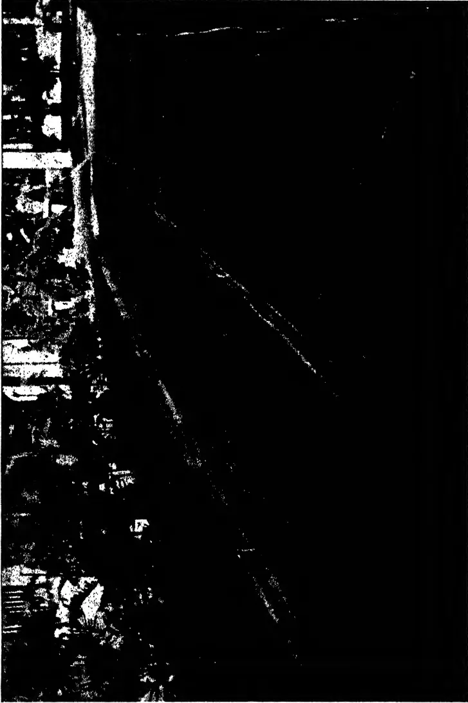
A high-contrast, black and white photograph. The left side of the image is dominated by a bright, vertical strip of light, possibly a reflection or a light source, which reveals some structural details like vertical lines and small, indistinct shapes. The rest of the image is a dark, textured surface that appears to be a plot on a hard cabook. The texture is grainy and uneven, with various shades of gray and black, suggesting a rough or weathered surface. The overall composition is stark and dramatic due to the extreme contrast between the bright light and the dark background.Plate 1. Run-off Experiment No. 1—Plots on hard cabook
A completely blank white page with no visible content, text, or markings. 129On one strip, sulphate of ammonia was broadcast at the rate of 4 cwt. per acre, the other strip being left untreated as a control. The ground was dry and hard, for although there had been a heavy shower four days previously the weather before and since then had been hot, dry and windy. It should be noted that conditions were very severe. The ground was exceedingly hard, the path having been cut to a depth of about 6 inches in hard laterite from which cabook bricks had recently been cut for building purposes, and the exposed surface had not been top-dressed or treated in any way. It was really a very hard cabook sub-soil.
About an hour and a half after the application a light drizzle of rain fell, lasting only a few minutes, and this was repeated once or twice in the course of the next 6 hours. The ground was hardly wetted and there was no run-off. About 6 hours after the application a sharp shower fell, in the course of which run-off began and the first collection (1 litre) was made. It took 5 minutes to collect this litre.
Rain ceased for half an hour, after which a heavy shower fell. A second collection was made, 1 litre taking 5 minutes as in the first case. A third collection was made 5 minutes after the completion of the second, and this time only 2 minutes were required to collect 1 litre.
The various samples were filtered and the ammonia in them determined by distillation and Nesslerising in the usual way. The results are given in table I.
TABLE ILOSSES FROM AN APPLICATION OF 4 CWT. PER ACRE SULPHATE OF AMMONIA
| S/Ammonia found in surface water from control plot |
S/Ammonia found in surface water from manured plot |
S/Ammonia lost from manured plot |
Percent- age lost |
Total loss from 1 acre |
|---|---|---|---|---|
| 1st Collection—5 minutes | ||||
| 0.00008 oz. | 0.00421 oz. | 0.00413 oz. | 0.020 | 1.4 oz. |
| 2nd Collection—5 minutes | ||||
| 0.00008 oz. | 0.00498 oz. | 0.00460 oz. | 0.023 | 1.6 oz. |
| 3rd Collection—2 minutes | ||||
| 0.00004 oz. | 0.02342 oz. | 0.02338 oz. | 0.111 | 7.9 oz. |
These figures are not altogether in favour of the contention that there is no loss. When the run-off was such that it took 5 minutes to collect 1 litre the loss was very small, and was practically the same after cessation of rain for half an hour, but when the rate of flow increased so that 1 litre was collected in 2 minutes the loss increased five-fold and reached the considerable total of half a pound of sulphate of ammonia per acre.
The explanation appears to be that on such a very hard soil the penetration of rain water has not gone beyond an inch or two when run-off begins and that it proceeds extremely slowly after that. All the sulphate of ammonia is, therefore, concentrated in the first one or two inches of surface soil, and if the run-off is rapid it carries a good deal down the slope before fixation takes place. Under estate conditions, even if the soil were as hard as in this experiment, it is likely that the run-off would have a longer distance to travel before reaching a drain, while at the same time its flow will be checked here and there by stones, leaves, roots, etc., giving time for more soaking in to take place, and the chances are that the loss would not be so great as under the very severe conditions of this experiment.
The experiment was continued as follows : after an interval of 13 days without rain and with a very hot sun and a strong wind, a heavy shower fell lasting half an hour and measuring 0.56 inches. No further application of sulphate of ammonia had been made and the run-off was collected in three lots as before. The first collection started with the beginning of the flow, the second was taken 5 minutes after the finish of the first, and the third 10 minutes after the finish of the second. The flow was rapid, only from 1 to 2 minutes being required for the collection of 1 litre. The results are shown in table II.
TABLE IIFURTHER LOSSES IN THE SAME EXPERIMENT AFTER A DRY SPELL OF 13 DAYS
| S/Ammonia found in surface water from control plot |
S/Ammonia found in surface water from manured plot |
S/Ammonia lost from manured plot |
Percen- tage lost |
Total loss from 1 acre |
|---|---|---|---|---|
| 1st Collection—2 minutes | ||||
| 0.00013 oz. | 0.00424 oz. | 0.00411 oz. | 0.020 | 1.4 oz. |
| 2nd Collection—1 minute | ||||
| 0.00012 oz. | 0.00543 oz. | 0.00531 oz. | 0.025 | 1.8 oz. |
| 3rd Collection—1 minute | ||||
| 0.00011 oz. | 0.00310 oz. | 0.00299 oz. | 0.014 | 1.0 oz. |
These figures make an interesting comparison with table I. Although the rate of flow in the first collection was equal to that which caused a loss of nearly 8 oz. of sulphate of ammonia from an acre at the start of the experiment, it only caused the negligible loss of 1.4 oz. in this case, while though the rate was doubled in the second and third collections the loss per acre reached its maximum at 1.8 oz. and dropped thereafter to just over 1 oz.
This shows how small the loss is, even under these severe conditions, when rain is intermittent.
Another dry spell of 12 days followed, the weather being hot. Rain fell during the night following this interval, measuring 1.39 inches. This was not collected.
Five days later, heavy rain fell in the afternoon and three collections from both plots were made. Run-off started at 4.25 p.m. and 1 litre was collected from the control in 6 minutes and from the treated plot in 2 minutes. The second collection was made 5 minutes after the finish of the first and took 4 minutes on the control and 3 minutes on the treated plot. The third collection was made after a further interval of 5 minutes and both litres took 2 minutes to collect. The rainfall between 4.10 and 4.47 p.m. was 0.95 inches. The results in this series are shown in table III.
TABLE IIIFURTHER LOSSES IN THE SAME EXPERIMENT AFTER AN INTERVAL OF 16 DAYS
| S/Ammonia found in surface water from control plot |
S/Ammonia found in surface water from manured plot |
S/Ammonia lost from manured plot |
Percen- tage lost |
Total loss from 1 acre |
|---|---|---|---|---|
| 1st Collection - 2 minutes | ||||
| 0.00019 oz. | 0.00252 oz. | 0.00233 oz. | 0.011 | 0.79 oz. |
| 2nd Collection - 3 minutes | ||||
| 0.00013 oz. | 0.00212 oz. | 0.00199 oz. | 0.009 | 0.64 oz. |
| 3rd Collection - 2 minutes | ||||
| 0.00004 oz. | 0.00087 oz. | 0.00083 oz. | 0.004 | 0.28 oz. |
The rate of flow during the first collection was the same as that recorded for the first in table II, but the loss was only just over half as much. In the second collection it was even less, and in the third, with a rate of flow again as fast as in the first, the loss dropped to the very low figure of oz. from 1 acre.
132The experiment was concluded with a final series of collections 4 days later. Rain fell after an interval of 3 days, but this occurred at night and no collection was made; the total fall amounted to 0.61 inches. The following evening there was more rain, just before dark, and three collections were made from each plot, as before. The first collection took 3 minutes to produce 1 litre, after which rain ceased for 15 minutes. At the second collection the rain was heavy and 1 litre was obtained in 1 minute. At the third collection, 2 minutes were required to produce 1 litre. The results of these collections are shown in table IV.
TABLE IV
FURTHER LOSSES IN THE SAME EXPERIMENT AFTER AN INTERVAL OF 4 DAYS
| S/Ammonia found in surface water from control plot |
S/Ammonia found in surface water from manured plot |
S/Ammonia lost from manured plot |
Percentage lost |
Total loss from 1 acre |
|---|---|---|---|---|
| 1st Collection—3 minutes | ||||
| 0.00013 oz. | 0.00233 oz. | 0.00220 oz. | 0.010 | 0.72 oz. |
| 2nd Collection—1 minute | ||||
| 0.00010 oz. | 0.00171 oz. | 0.00161 oz. | 0.008 | 0.56 oz. |
| 3rd Collection—2 minutes | ||||
| 0.00005 oz. | 0.00099 oz. | 0.00094 oz. | 0.004 | 0.28 oz. |
This series shows practically the same losses as in the previous case.
Although tables III and IV do not show complete absence of loss it must be admitted that from one quarter to three quarters of an ounce out of 448 lb. is quite negligible. Even the first two tables, if we accept the rather inexplicably high figure of 7.9 oz. in the third collection of the first series, do not show any loss as great as 2 oz., and this from an acre on which 448 lb. has been applied is very insignificant.
These figures do not enable us to estimate what the total loss has been as a result of all the rain which fell while the experiment was being carried out. This would have involved the collection and analysis of the whole of the run-off, and this was not attempted. They do show, however, that even in heavy rain (in the 3rd series nearly an inch fell in half an hour) lasting for 5 minutes the total loss is usually of the order of from 1 to
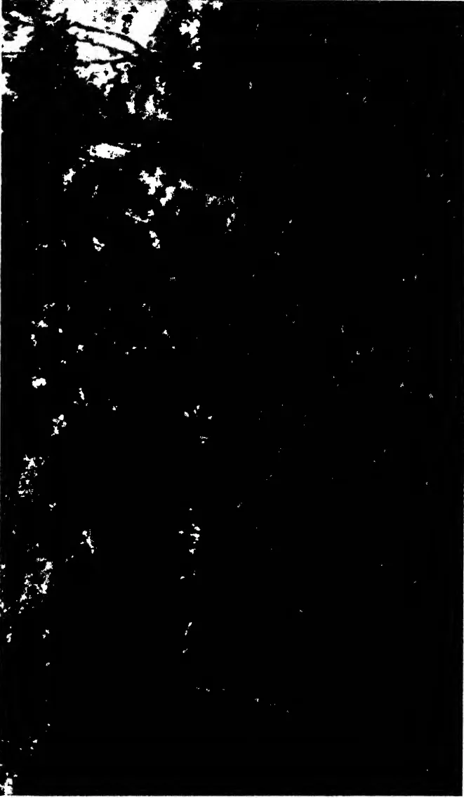
Plate II. Run-off Experiment No. 2—Plots on forked rubber land
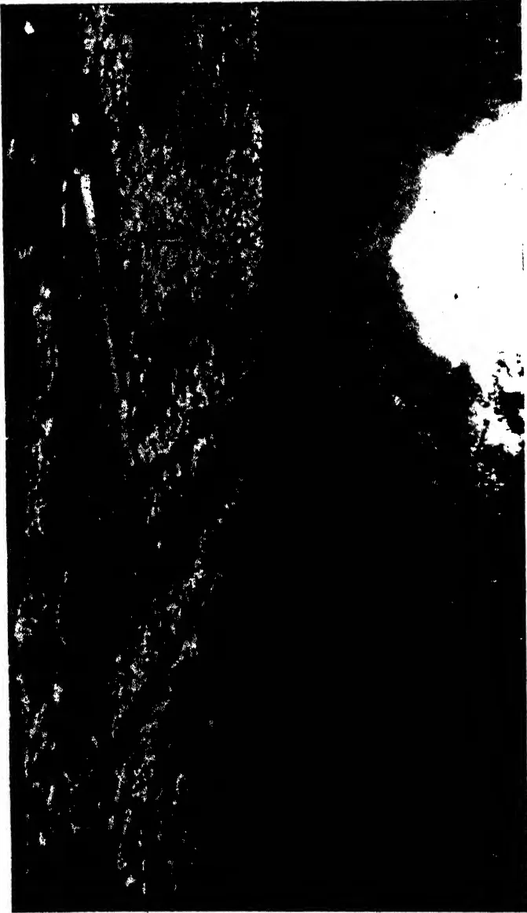
A high-contrast, black and white photograph showing a dark, textured surface, possibly a field or plot, with a bright, irregular white shape on the right side, likely representing a cloud or a light source. The image is oriented horizontally.Plate III. Run-off Experiment No. 3—Plots on forked rubber land
1332 oz. from an acre. Remarks have sometimes been made regarding the supposed losses on an estate to the effect that the manure "has practically all gone" or "at least half of it has been washed away." If even half were washed away that would mean a loss of 224 pounds per acre, whereas the loss of a few ounces is really what happened—and that under conditions which are much more severe than those on the average estate.
The experiment just described was looked upon as a preliminary one, and it was felt that further trials under estate conditions would be of greater practical interest. Two similar lay-outs with the same size of plots were therefore arranged on sloping ground in reasonably well-forked rubber land. They are shown in Plates II & III.
In the second experiment, sulphate of ammonia was broadcast, at the rate of 4 cwt. per acre, about 12 hours before rain fell. This rain only amounted to a slight shower of 0.09 inches and there was no run-off. There was no rain the following day, but on the evening of the second day rain started at about 10 p.m. and collection went on from that time until 2.15 a.m. by which time about 2½ litres had been collected. The total rainfall was 1.34 inches.
Except for one heavy shower and a few light drizzles, no rain had fallen for 14 days before the application, and the ground was dry, though nothing like so hard as in the previous trial. The soil was typical "cabooky" rubber land—a red, gravelly laterite. It had been forked once a year and was last forked six months before the application.
The results from this experiment are shown in table V.
TABLE V
LOSS FROM AN APPLICATION ON RUBBER LAND FORKED ONCE A YEAR
| S/Ammonia found in surface water from control plot |
S/Ammonia found in surface water from manured plot |
S/Ammonia lost from manured plot |
Percen- tage lost |
Total loss from 1 acre |
|---|---|---|---|---|
| *0.00014 oz. | 0.00040 oz. | 0.00026 oz. | 0.0012 | 0.09 oz. |
*This sample was accidentally contaminated and the result from the control in table VI was used.
In this case the conditions as regards the soil and its previous treatment were the same as in the second experiment, the areas
134being only some 15 yards apart. The application was, however, made 10 days before sufficient rain fell to enable collection to be made. The application was made on the 4th of March, and slight showers fell on the 8th, 11th and 12th, but not sufficient to cause run-off. There was no rain on the 13th, but on the 14th evening rain occurred as already noted in the previous experiment. Collection took place between 10.15 p.m. and 2.15 a.m. and about litres were collected. Total rainfall 1.34 inches. The results are shown in table VI.
TABLE VILOSS FROM AN APPLICATION MADE ON RUBBER LAND FORKED ONCE A YEAR
| S/Ammonia found in surface water from control plot |
S/Ammonia found in surface water from manured plot |
S/Ammonia lost from manured plot |
Per- centage lost |
Total loss from 1 acre |
|---|---|---|---|---|
| 0.00014 oz. | 0.00023 oz. | 0.00009 oz. | 0.0004 | 0.029 oz. |
In both these experiments the losses are quite negligible. Traces of ammonia are always found in surface water, and the amount found in the run-off from the treated plots in the second and third experiments is not much more than may occur in shallow well waters, being only from 0.2–0.3 parts per 100,000. The figures have been calculated to ounces sulphate of ammonia per litre collected, and the resulting quantities can be disregarded from the practical point of view. Only traces of sulphate of ammonia are washed off the surface by even heavy rain when the soil is in a reasonably well-forked condition.
The conclusion from these three experiments is that little loss of sulphate of ammonia takes place by surface wash even from unforked and very hard soil unless the run-off is very rapid, and quite negligible amounts from land which has been forked 6 months before the application. If rubber land has not been forked for a year or more and is very hard it is probably advisable to fork in a sulphate of ammonia application, but this is unnecessary if the soil is loose from previous forking.
It should be noted that light forking on hard and previously unforked land may do more harm than good, for by loosening only the first inch or so it increases the amount of soil washed away and this may take a large proportion of the sulphate of ammonia with it. Such cases should be considered individually, with due regard to all the circumstances, and it is inadvisable to attempt to lay down a general rule. Possibly the best plan may be to deep-fork the land during the rains and to apply the sulphate of ammonia, without further forking, towards the end of the rainy season and when the weather is showery.
135H. W. R. BERTRAND and E. C. K. MINOR,
GOVINNA ESTATE
THE three dangerous root diseases of rubber in Ceylon are caused by Fomes lignosus, Fomes noxius (brown root disease), and Poria hypobrunnea. Under certain conditions these diseases can remain apparently semi-dormant in old rubber, and under "forestry" methods it has even been shewn that a suitable ground flora can exert a "buffer" action, delaying but not stopping their spread. Sharples (1936) has shewn that a very high percentage of trees in an old stand may be infected without any external signs above ground.
Rubber managers know that, provided reasonable care is taken, the annual deaths from Fomes may be often less than those due to other causes, such as Ustulina. This, unfortunately perhaps, has diverted attention from a matter of supreme importance when replanting is undertaken. After the old stand is removed the environment of these fungi is radically altered, "the balance of nature" is upset. The soil fauna and flora are exposed to different conditions of temperature, moisture and food, and, in many cases known to the writers, severe outbreaks of these root diseases have occurred in replanted clearings or nurseries where previously their presence was unsuspected.
The degree to which these fungi can normally produce and disseminate viable spores is still not well understood, but Sharples has shewn that the majority of outbreaks in replanted rubber are due to the presence of old centres of infection, which he calls "knots." This is amply confirmed in the writers' experience. In a number of clearings and nurseries where there have been well over a hundred separate outbreaks, in every case,
136on digging round and below a diseased plant, an old stump or root with one of the three fungi on it has been found.
The danger of leaving such a disease patch untreated lies in the fact that two of these root diseases produce thick aggregated strands of mycelium, known as rhizomorphs, which can travel along quite small living or dead roots and in many cases have been traced along the underside of boulders where no roots were present. It will be readily understood that these rhizomorphs, which, occasionally, have been observed of a thickness approaching that of a pencil, have a far greater chance of survival under adverse conditions than the ordinary fine mycelium. Moreover, the Fomes group are not obligate parasites. They can not only exist for long periods on a host which they have killed, but can also invade and live on dead wood. The latter point has been disputed but the writers found an upper branch, which could not possibly have been attacked when the tree was standing, partly covered by earth and bearing an ample crop of both rhizomorphs and fructifications of Fomes lignosus.
A further point of importance is that the Fomes group can spread under ground covers such as Pueraria and Centrosema, without killing them. The presence, therefore, of a ground cover is highly dangerous in infected areas. Moreover, under such a cover there may be so much saprophytic mycelium of somewhat similar appearance that even (in the writers' experience) a trained mycologist, let alone estate staff, has been at a loss to determine the extent of the disease.
In a replanted area, therefore, there are two main factors making for the spread of these root diseases—(a) conditions encouraging the spread of the fungus from centres of infection, (b) the invasion of such centres by the roots of the young rubber plants.
Sharples rightly emphasizes the importance of dealing promptly with such "knots" of infection before the roots of the young rubber have begun to interlace. He advises that when a young rubber plant is killed the soil in its immediate neighbourhood be thoroughly forked over, the source of the disease, or "knot," traced, and all plant residues be removed and burnt. He shews that prompt and proper attention to such
137cases will result in a falling percentage of attack, and his work is a significant advance in our knowledge of methods of control.
It should be noticed that in the early stages of a clearing, before interlacing of roots has taken place, he does not consider trenching necessary. This, also, is fully borne out by the writers' experience. Except where treatment has presented special and peculiar difficulties, such as in steep boulder land with big roots which cannot be removed, or in steep platformed clearings where old roots may be buried to great depth, in no single case so far, out of a great number, has the disease spread.
A further point is that in several cases these "knots" of infection have been found, in nurseries or in the field, two to three feet down, and a number had to be dug out to a depth of five feet. It clearly would be economically impossible to dig over a replanted area to such a depth on the off-chance of finding the tap-root of some formerly thinned-out tree.
Consideration of these points led the writers to the following conclusions and practice :—
1. These dangerous root diseases are found to be far more commonly present in replanted areas than was previously suspected. Very serious losses, in the nursery or the field, ensue when these diseases are present, unsuspected, and not immediately controlled.
2. Though it is desirable to remove or burn all reasonably accessible roots and timber, their complete removal would not, on the off-chance of removing some "knot" of infection, especially on steep or boulder land, be economically possible or agriculturally advisable.
3. For many reasons there is an optimum stand of "buds" per acre. The expense of nurseries, budding, holing, subsequent attention to pests and disease, manure, and the difficulty on steep and rocky land of fitting in reasonably well-spaced holes, places an upper limit. Moreover, with too big an original stand, bark diseases are encouraged; the additional expense of thinning out is incurred, with its added danger of tap-roots left in causing further root disease.
4. There are many good reasons for planting a bigger stand than is ultimately desirable, but it occurred to the writers
138that instead of doing this for the purpose of allowing for deaths from root diseases and of finding the sources of infection, less expensive and more effective plants could be used.
After removal of grass and all climbing covers, such as Pueraria, the field is sown with a mixture of Crotalaria anagyroides and Tephrosia Vogelii. If the climbers are not removed they will swamp the bushes.
These bushy covers will in future be referred to as "indicators," because their main purpose is to indicate the presence of centres of root disease. The plants usually die quickly when attacked, and, turning yellow, can easily be seen.
T. Vogelii is a quick grower and excellent "indicator," but, in the Kalutara district, tends to die back after a year or so. It has since been found that a better "mix" would be 1 lb. C. anagyroides, 2 lb. T. Vogelii, 2 lb. Boga medeloa, per acre. This should be repeated if necessary and failure patches re-sown.
It is important to have a mixture of these covers.
Crotalaria anagyroides, though a good "indicator," is very subject to a disease caused by Sclerotium Rolfsii, also to Pink Disease. Tephrosia Vogelii and Boga are seldom attacked by Sclerotium, but may be badly attacked by Irpex subvinosus. If the seed is well mixed there is not so much chance of these fungi, which are killers, destroying a large patch of "indicators."
As it is essential that the staff and pest gangs know these diseases a short description of their common appearance on the the plants mentioned is given.
Sclerotium Rolfsii.—Attacks the collar and a few inches up. There is a close web of white mycelium accompanied by a great number of tiny white balls easily seen with the naked eye. In later stages they turn yellow, orange, and finally dark brown. The disease is favoured by damp and overcrowding. Dense vigna is a common host, but in this case Crotalaria striata (the small quick-growing one) is the worst carrier, also, it is a bad "indicator."
When ordering or picking seed of C. anagyroides it is well to ensure that as little as possible of C. striata be included.
139Pink Disease.—Usually attacks a stem or branch higher up. At first an unmistakable salmon pink patch appears. Closer examination shows a finely reticulated pattern on the smooth almost shiny surface.
Irpex subvinosus.—Fairly common in wet districts on Boga and T. Vogelii, but so far not seen on C. anagyroides. It also attacks the plant on a stem or branch. The name, subvinosus, describes its colour, which may vary from pale mauve to almost purple. The patch is usually about two inches long. Looked at closely it has a peculiar “prickly” appearance, with the closely placed tiny “prickles” pointing down.
For two reasons it is important that staff and pest coolies be trained to recognise and treat the diseases of “indicators.” (a) Unless these are well understood money will be wasted in treating such areas for root disease which was not the cause of death. (b) A large patch of the bushes may be killed out by these “top” diseases before they have served their purpose.
During the first two years it is well worth while taking a little trouble to control these “top” diseases. The diseased part of bushes so attacked should be burnt and the stems of the neighbouring plants sprayed with Bordeaux or Burgundy Mixture. It should not be forgotten that the loss of such plants also puts up weeding costs.
Prompt spotting of diseased “indicators” is essential. In the early stages, i.e., as soon as a bush begins to turn yellow, the cause is easily diagnosed. Apart from mechanical damage it is certain to be either a “top” disease or one of the three root diseases. It should be carefully noted that, if staff supervision is untrained or inadequate, dead bushes may not be noticed until long after death. In such case the root may be covered or invaded by fungi difficult for the amateur to diagnose.
In this connection two recent cases are worth mention. The Superintendents heavily pruned their bushy covers, many of which, as a result, died. The roots of the majority of these dead bushes developed saprophytic fungi which were mistaken for the root killer diseases.
140The roots of bushy covers must not be allowed to invade the planting holes to the detriment of the "bud." Where this is likely the bush must be pulled out, but reasonable proximity must be allowed to prevent "sun-bake" of the bud.
When an "indicator" is killed by a root disease the site is marked by a small red flag on a tall staff. One or more gangs of three specially selected coolies are kept on the job of dealing with such areas. The most economical unit is one man and two women. The man does the heavy forking, the women mamoty over the forked area, or, in the case of deep diseased tap-roots, remove the earth in baskets, pick over the soil, and place all plant residues in a portable incinerator. In the writers' experience, if this method is thoroughly carried out, it is effective. In no case has there been an extension of the disease, and the method presents no difficulties except where big boulders are undermined by infected roots.
In a number of cases it has been possible to save attacked "buds" by wiping off the mycelium and applying 2 per cent. copper sulphate, but this is successful only if the bark is not already killed. Copper sulphate also may be useful where diseased roots cannot be got out owing to rocks.
The incinerator is made out of an oil drum. Top and bottom are cut out; large square holes are cut near the bottom for ventilation; two pipes are inserted about one-third the way up to serve the dual purpose of supporting the fire grate and as carrying handles. The holes for the pipes should be big so that by shaking the pipes the ash can be cleared.
The writers wish to record their very cordial thanks to Mr. M. Park, Government Mycologist, Peradeniya, for his unfailing patience in identifying a great number of fungi sent to his laboratory, for visiting these estates, and for giving us the benefit of his criticisms and advice on the work being done.
Sharples, A. (1936). Diseases and Pests of the Rubber Tree. Macmillan & Co., Ltd., London.
141MALCOLM PARK, A.R.C.S.,
MYCOLOGIST
BLOSSOM-END rot of tomatoes is common in Ceylon and often causes considerable losses in places where tomatoes are grown extensively. Its appearance is well-known to tomato growers, but, to avoid confusion, a short description of the symptoms of the disease is given below.
As the name of the disease implies, the injury occurs at or very close to the stigma or blossom-end of the fruits. It never originates from any other part of the fruit or plant. The disease first appears as a water-soaked area at or near the blossom-end of the fruit, i.e., the part furthest away from the stalk. This water-soaked area soon darkens and enlarges rapidly in a constant widening circle until the fruits begin to ripen. The result on the ripening fruit is a dark brown or black sunken area which may involve as much as half the fruit. The sunken tissue is usually hard and leathery but secondary organisms may sometimes gain an entrance into the disease tissue and cause a soft rot.
Blossom-end rot of tomatoes was first described by Gallo-way (1888) but its cause was not discovered for many years. Brooks (1914) carried out extensive trials and experiments and concluded that the disease was not due to the action of bacteria or fungi but that it was a physiological disease associated chiefly with the water-content of the soil, and that manuring with certain types of manures increased the incidence of the disease. He showed that the incidence of the disease was greatest when plants were in a condition of great activity and that continued excessive watering or a sudden check in the water-supply induced the disease.
142Other workers have, since that time, confirmed the observations of Brooks and have amplified them. Chamberlain (1933) stated "In his country (New Zealand) it appears that the disease is usually due to lack of moisture, since the condition generally occurs in the fields where the plants are grown on light sandy soil, being often confined to dry, sandy or gravelly ridges. Crops which have been regularly irrigated and are then left for a period without water suffer the heaviest losses. Vigorously grown sappy plants are the most susceptible." He showed that the removal of plants from shaded to unshaded portions of greenhouses also induced the disease.
There is no record of data concerning the disease in Ceylon and, when it was learned that an elaborate spacing and manurial trial was being carried out at the Experiment Station, Anuradhapura, during the maha season, 1936-37, the co-operation of the field staff was sought and secured in obtaining figures of the incidence of the disease.
The experiment consisted of four randomized blocks of eight 1/45 acre plots. The whole area received a basal dressing of ten tons of compost. The variety of tomato grown was Marglobe. In the experiment two spacings of the plants, viz.,
(a) 3 feet by 1 ft. 6 in.
(b) 3 feet by 1 ft.
were combined with the following four manurial treatments :—
(c) unmanured control
| (x) sulphate of ammonia | .. | .. | 1 cwt. |
| superphosphate | .. | .. | 3 cwt. |
| muriate of potash | .. | .. | 1 cwt. |
| (y) sulphate of ammonia | .. | .. | 1 cwt. |
| superphosphate | .. | .. | 2 cwt. |
| muriate of potash | .. | .. | 1 cwt. |
| (z) sulphate of ammonia | .. | .. | 1 cwt. |
| superphosphate | .. | .. | 3 cwt. |
| muriate of potash | .. | .. | 0.5 cwt. |
Each of the randomized blocks therefore contained the eight plots ac, ax, ay, az, bc, bx, by and bz.
143The plots with the wide and narrow spacings contained 153 and 225 plants respectively; of these the outside rows were omitted to overcome border effects leaving 105 and 161 observed plants in the two sets of plots respectively.
The tomato plants were staked and pruned down to a single stem. This was found to reduce the intensity of attack by leaf-spot or leaf-blight, caused by Septoria lycopersici, which was severe on the young plants before they were staked and pruned.
Fruits were picked when they were ripe, and during the cropping season, which lasted from 2nd January, 1937 until 23rd January, 1937, pickings were made at intervals of from one to three days, but mainly every two days.
TABLE I
FIELD RECORDS OF YIELDS
| Treatment | Total yield of fruits |
Blossom-end Rot Totals |
Percentages of total yield |
|---|---|---|---|
| ac .. .. | 612 | 122 | 19.9 |
| ax .. .. | 732 | 151 | 20.6 |
| ay .. .. | 598 | 106 | 17.7 |
| az .. .. | 669 | 149 | 22.3 |
| bc .. .. | 972 | 189 | 19.4 |
| bx .. .. | 921 | 186 | 20.2 |
| by .. .. | 1,055 | 244 | 23.1 |
| bz .. .. | 869 | 147 | 16.9 |
| Total .. .. | 6,428 | 1,294 | 20.13 |
In table I are given the total yields and the total numbers of fruits affected with blossom-end rot, in the various treatments, for the whole cropping season. The figures from the various replicates were unfortunately lumped together and the data are in consequence not amenable to statistical analysis. The tomatoes affected with blossom-end rot comprised 20.1 per cent. of the total crop.
The numbers of tomatoes picked and the numbers of fruits attacked by blossom-end rot at successive pickings are given
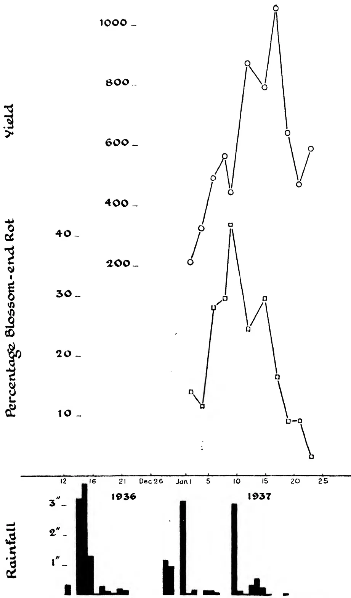
Yield and Blossom-end Rot Data (Line Graph)
| Date | Yield (approx.) | Percentage Blossom-end Rot (approx.) |
|---|---|---|
| Jan 1 | 200 | 14 |
| Jan 5 | 450 | 11 |
| Jan 10 | 550 | 28 |
| Jan 12 | 450 | 30 |
| Jan 15 | 850 | 42 |
| Jan 18 | 780 | 24 |
| Jan 20 | 1050 | 29 |
| Jan 22 | 620 | 16 |
| Jan 24 | 450 | 9 |
| Jan 26 | 580 | 9 |
| Jan 28 | - | 5 |
Rainfall Data (Bar Chart)
| Date | Rainfall (inches) |
|---|---|
| Dec 26 | 0.5 |
| Jan 1 | 3.2 |
| Jan 2 | 1.2 |
| Jan 3 | 0.2 |
| Jan 4 | 0.1 |
| Jan 5 | 0.1 |
| Jan 6 | 0.1 |
| Jan 7 | 0.1 |
| Jan 8 | 0.1 |
| Jan 9 | 0.1 |
| Jan 10 | 0.1 |
| Jan 11 | 0.1 |
| Jan 12 | 0.1 |
| Jan 13 | 0.1 |
| Jan 14 | 0.1 |
| Jan 15 | 0.1 |
| Jan 16 | 0.1 |
| Jan 17 | 0.1 |
| Jan 18 | 0.1 |
| Jan 19 | 0.1 |
| Jan 20 | 0.1 |
| Jan 21 | 0.1 |
| Jan 22 | 0.1 |
| Jan 23 | 0.1 |
| Jan 24 | 0.1 |
| Jan 25 | 0.1 |
Figure 1.—The Relation between Blossom-end Rot of Tomatoes and Rainfall
Block by Survey Dept. Coyron & S. M.
145in table II. These figures are plotted in figure I together with the rainfall data. The relevant rainfall figures are also given in table III.
TABLE II
FIELD RECORDS OF YIELDS AT DIFFERENT PICKINGS
| Dates of picking 1937 |
Total Nos. of fruits picked |
Blossom-end Totals | Rot Percentages of total yield |
|---|---|---|---|
| Jan. 2 | .. 210 | 31 | 14.8 |
| „ 4 | .. 326 | 39 | 12.0 |
| „ 6 | .. 489 | 137 | 28.0 |
| „ 8 | .. 563 | 167 | 29.6 |
| „ 9 | .. 440 | 184 | 41.8 |
| „ 12 | .. 873 | 214 | 24.5 |
| „ 15 | .. 789 | 232 | 29.4 |
| „ 17 | .. 1,052 | 171 | 16.3 |
| „ 19 | .. 637 | 58 | 9.1 |
| „ 21 | .. 465 | 43 | 9.2 |
| „ 23 | .. 584 | 18 | 3.1 |
| Total | .. 6,428 | 1,294 | 20.13 |
TABLE III
DAILY RAINFALL RECORDS FROM 11th DECEMBER, 1936 TO 24th JANUARY, 1937
(Rainfall measured at 9 a.m. each day for the previous 24 hours)
| Date December, 1936 |
Rainfall in. |
Date December, 1936 |
Rainfall in. |
Date January, 1937 |
Rainfall in. |
|---|---|---|---|---|---|
| 11 | 0.44 | 26 | — | 10 | 3.05 |
| 12 | 0.33 | 27 | — | 11 | 0.13 |
| 13 | — | 28 | — | 12 | 0.02 |
| 14 | 3.22 | 29 | 1.17 | 13 | 3.35 |
| 15 | 3.75 | 30 | 0.96 | 14 | 0.58 |
| 16 | 1.30 | 31 | — | 15 | 0.25 |
| 17 | 0.02 | January, 1937 | 16 | 0.04 | |
| 18 | 0.30 | 1 | 3.15 | 17 | — |
| 19 | 0.12 | 2 | 0.05 | 18 | — |
| 20 | 0.05 | 3 | 0.18 | 19 | 0.05 |
| 21 | 0.20 | 4 | — | 20 | — |
| 22 | 0.15 | 5 | 0.16 | 21 | — |
| 23 | — | 6 | 0.15 | 22 | — |
| 24 | — | 7 | 0.08 | 23 | — |
| 25 | — | 8 | — | 24 | — |
| 9 | — | ||||
Although it is not possible to analyse the figures statistically it is obvious from a consideration of the figures in table I that the treatments in this experiment had little, if any, effect on the incidence of blossom-end rot. It is possible that the effect of the heavy basal dressing of compost, which was applied to the whole area, had a uniform effect, that the additional doses of artificial fertilizers had no further effect and that the plots might have exhibited differences had the fertilizers been applied to unmanured plots. Other workers have shown that the use of certain fertilizers does increase the incidence of blossom-end rot and the fact that no marked results were obtained in this experiment does not necessarily imply that a similar effect does not occur under Ceylon conditions.
The soil on which the experiment was carried out consists of a shallow layer of loam overlying a compact gravelly pan. Heavy precipitation of rain leads to temporary water-logging of the surface soil owing to the initial impermeability of the compact gravel. It has been observed, however, that rapid drainage soon succeeds a period of water-logging and it is thought that this is due to the establishment of capillary columns through the gravel layer which, when complete, result in rapid drainage of the surface layer of soil. A sequence of two or three days of soil saturation followed suddenly by relative dryness is accordingly not unusual.
The intense insolation which occurs in Anuradhapura also contributes to the rapid drying up of the soil;
It will be seen from table III and from figure 1 that the rainfall during the maturing of the tomatoes was heavy but irregular. It will be seen that the very wet days, 14th to 16th December, were followed by a period with relatively light rainfall and that six days of dry weather intervened between the 22nd December and the heavy rains of 29th December, 1936, to 1st January, 1937. Irregular precipitation like this would produce marked changes in the water-content of normal soils and the changes produced in the soil of the experimental plots must have been considerable. It has been shown by Brooks and other workers that marked fluctuations in the water content of the soil leads to the incidence of blossom-end rot of
147tomatoes and it is therefore not surprising that the average percentage of diseased to total fruits was about 20 per cent. and that, at one picking, as many as 40 per cent. of the fruits were attacked by blossom-end rot.
No detailed interpretation of the curves in figure 1 is attempted here. From an isolated set of observations as are herein recorded it is not possible to conclude definitely that the maximum occurrence of blossom end rot is correlated with the sudden fluctuation from wet to dry soil conditions which took place about a fortnight previously. It is, however, thought that the relationship is sufficiently significant to be worthy of record. The collection of the data herein presented was suggested primarily to note the effect of artificial fertilizers on the incidence of this and other diseases. As has been pointed out above, negative results were obtained on this point but the relationship between weather and the consequent water-content of the soil and the incidence of blossom-end rot appears to be sufficiently close to warrant the collection of further data for the complete elucidation of the problem. Tomatoes may well become an important rotation crop of villagers in Anuradhapura district and elsewhere and a disease which has been shown in this experiment to render 20 per cent. of the fruits economically valueless may prove to be a limiting factor in the successful cultivation of the crop.
The thanks of the author are due to Mr. W. R. C. Paul, Divisional Agricultural Officer, Northern Division, and to Mr. E. S. de S. Jayasundera, Manager, Experiment Station, Anuradhapura, for their co-operation and for the collection of field data and to Dr. M. Fernando for his assistance in the presentation of those data.
Brooks, C. (1914).—Blossom-end Rot of Tomatoes. Phytopathology, Vol. 4, pp. 345-373.
Chamberlain, E. E. (1913).—Blossom-end Rot of Tomatoes. N. Z. Journ. Agric., Vol. 46, No. 5, pp. 293-296.
Galloway, B. T. (1888).—Notes on the Black-rot of Tomatoes. United States Dept. Agric. Rept. pp. 339-346.
148W. R. C. PAUL, M.A., M.Sc., D.I.C., F.L.S., Dip. Agric. (Cantab.),
DIVISIONAL AGRICULTURAL OFFICER, NORTHERN
AND
S. K. THURAISINGHAM, B.Sc., Dip. Agric. (Wye),
SUB-DIVISIONAL AGRICULTURAL OFFICER, JAFFNA
IN the Jaffna Peninsula, there is a large demand for straw chiefly for feeding the numerous bullocks of the Hillikere or Mysore breed maintained there for the main purpose of transport but also for work on the irrigation devices of the double mhothe and the Persian wheel used on wells. As the supply of straw produced locally from both paddy and millets is quite insufficient to meet this demand an extensive trade in paddy straw has developed from the northern parts of the mainland, chiefly the area under the Karachi Irrigation Scheme. Straw in Jaffna is sold by weight and in view of the fact that the transport of this commodity both by rail and by road is based on a charge per vehicle and not by weight it should be profitable to transport the maximum weight in a vehicle. For this purpose the straw needs compression into bales and in order to demonstrate the advantages of baling to the farmers of the Karachi Scheme a mechanical straw baler was obtained in 1935 for use at the Paranthan Paddy Seed Station, the type being a McCormick-Deering Motor Hay Press imported from the International Harvester Company, Chicago, at a cost of Rs. 2,121.23 delivered in Colombo. It presses the straw into compact bales which are easy to handle and transport.
The machine is primarily used for baling the straw produced at the Paddy Seed Station both for the Jaffna market as well as for supplying the requirements of the cattle at the Jaffna Experiment Station, where no paddy nor millets have been
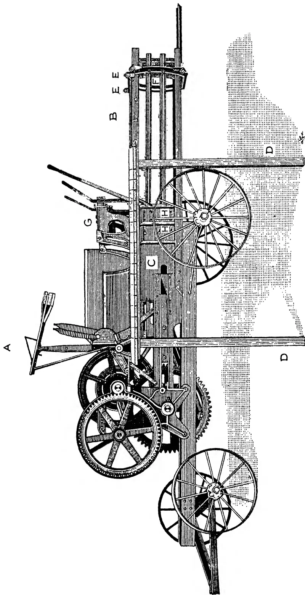
A detailed technical illustration of a mechanical device, possibly a loom or a specialized agricultural tool. The machine is constructed from vertical wooden beams. A large spoked wheel is mounted on the right side, connected to a complex gear system. This system includes several smaller gears and a large gear at the bottom. A horizontal rod, labeled 'D', passes through the center of the large wheel and is supported by two vertical supports. A vertical rod, labeled 'B', runs through the center of the machine. At the top, there is a frame labeled 'E' and 'F'. On the left side, there is a lever mechanism labeled 'A' and 'G'. The entire machine is shown in a perspective view, with a stippled background.Fig. 1
8.0.4 by Surrey Dept. Ceylon. is a M.
150grown. Straw from outside farms is also baled at a charge of 7 cents per bale.
The baler is operated by a 6 H.P. kerosene engine and produces rectangular bales with end dimensions of approximately inches, while the length can be varied as required. With a length of about 22 inches a bale weighs approximately cwt. The engine and baler are fitted on a chassis with four wheels so as to make the machine portable but as its total weight is over 2 tons it cannot be conveyed along paths across paddy fields and on village roads unless they are made suitable for taking this load. The machine is for this reason housed in a shed in the Paddy Station and is worked there.
The process of baling is carried out by pressure exerted in a horizontal direction. As soon as the engine is worked and is connected with the baler by means of the belting placed over the fly wheel, loose straw which has been heaped on to the feed table attached to one side of the baler and supported on two legs (DD in fig. I) is pushed in large quantities at a time by a man standing on the feed table, into the feeding chamber (C). By means of an arm or plunger (A) which works up and down and has a serrated end, the straw is thrust further into the chamber. It is then pushed forwards into the baling chamber (H) by a tucker or piston working horizontally on rollers between the two chambers. From the baling chamber, the completed bale passes out by gradual movements towards the open compartment (B) where it is tied by hand with wire which is threaded through while the bale moves along and drops out at the exit (F). The horizontal movement of the tucker causes compression of the straw within the baling chamber by the resistance offered to the outward passage of the bales within the open compartment. The pressure exerted on the straw can be increased or decreased by moving two nuts EE at the exit, causing a corresponding decrease or increase in the size of the compartment. By decreasing its size towards the end and thus increasing the pressure required to force the bales out, bales of greater weight can be made. The movements of the plunger and tucker alternate, the latter pushing the straw towards the exit each time a quantity is thrust into the feeding chamber by the plunger. The two parts work quite smoothly being fitted with springs and rollers.
151When a bale is being formed in the baling chamber, the one ahead of it in the direction of the exit is already made but is being tied with wire by two men standing on either side of the compartment at this point while in front of this is another already tied and passing on while a third is partly out at the exit. While the baler is working all the bales including the one in the process of formation are being subject to a gradual push towards the exit by the action of the tucker and they fall out in succession at short intervals.
The length of each bale can be adjusted by fixing the position of a bell which is attached to the side of the open compartment. When the bell strikes it gives the signal that a bale has been made according to the desired length. As the bale moves on after it has been tied, the tongue of the bell comes in contact with the wire round this bale and as it approaches the corner of the two sides of the bale, it becomes raised by the stretched wire and in doing so with the onward movement of the bale, it slips over releasing the wire and striking against the face of the bell as it falls back. As soon as the bell strikes, no more straw is fed until the wooden block in front of the bale which has dropped from the exit falls out and is placed in the block setter G which is lifted up to enable the plunger as it moves downwards to release the block and allow it to fall into position in the feeding chamber, the block setter being then placed back as before. When the block is in position in the feeding chamber, straw is again fed into the chamber for making a new bale, while at this stage another bale with its block in front falls out and as soon as the bell rings, the same operation is repeated.
In front of each bale within the compartment is a block and the presence of a block on either side of a bale passing through the compartment facilitates the tying of this bale within the compartment as there are three sets of grooves on either side of each block, an end view of which is shown in fig II. Through the grooves wires are threaded from either side by the two men. A piece of wire called a tie sufficient for binding a
A technical drawing of a rectangular block. It features two vertical rows of three triangular notches or grooves on each side, designed for threading wire. The notches are arranged in a staggered pattern along the vertical edges of the block.Fig. II
152bale once round is passed through the grooves and loosely knotted. A bale may be tied in three places through the three grooves but usually two places suffice and this effects a saving in the cost of the wire. When the bale drops out at the exit the pressure on it is released and it expands quickly but sufficiently to cause the wire to remain firmly bound.
The bale tie maker is a separate equipment which allows wires of different lengths to be cut. It also takes the kinks out of a wire.
It has been found necessary for the work to be carried out expeditiously to employ five men to operate the baler. Two of them are responsible for heaping the straw continuously on to the feed table, another stands on the feed table and pushes large lots of straw into the feeding chamber, while two are employed—one on either side of the open compartment—to thread the tie wires through the grooves in the blocks and tie the bales as they pass through the compartment. One of these two men periodically attends to the engine while it is running but this does not take much time.
For a full working period of about 8 hours, about 10 tons of straw can be baled producing about 400 bales at an average rate of about 50 bales per hour, the weight of a bale being about cwt. The cost of baling amounts to about 5 cents per bale.
In a railway wagon, about 122 bales weighing about 3 tons can be loaded whereas with unbaled straw, which has to be made into loose bundles called kaththais weighing about 5 lb. each, just over tons can be stacked.
A statement is given in table I of the costs incurred in sending baled and unbaled straw and the return on each when straw is valued at 1 cent per lb. in Jaffna.
153TABLE ISTATEMENT OF COSTS OF BALED AND UNBALED STRAW PER WAGON LOAD
FROM PARANTHAN TO JAFFNA RAILWAY STATIONS AND INCOME
A. Baled Straw.—
Costs.
Rs. cts.
| 1. Baling 122 bales for a wagon load at 5 cents per bale .. .. . | 6 10 |
| 2. Transport of 122 bales from the Paddy Station to the Paranthan Railway Station in 4 carts at Re. 1.00 per cart .. .. | 4 00 |
| 3. Loading and unloading charges at the Paddy Station and Railway Station—2 men at 75 cents each .. .. . | 1 50 |
| 4. Rail freight .. .. . | 10 03 |
| Total .. | 21 63 |
Income.
| Value of 122 bales or about 6,832 lb. at 1 cent per lb. .. .. . | 68 32 |
| Cost of baling and transport .. .. | 21 63 |
| Profit .. | 46 69 |
B. Unbaled Straw.—
Costs.
| 1. Making 750 kaththais for a wagon load at 75 cents per 100 kaththais .. .. | 5 62 |
| 2. Transport of 750 kaththais from the Paddy Station to the Paranthan Railway Station in 2 carts at Re. 1.00 per cart .. .. | 2 00 |
| 3. Unloading and loading charges at the Railway Station (a fixed charge for the kaththais) .. .. | 2 00 |
| 4. Rail freight .. .. . | 10 03 |
| Total .. | 19 65 |
Income.
| Value of 750 kaththais or about 3,750 lb. at 1 cent per lb. .. .. . | 37 50 |
| Cost of making into kaththais and transport .. .. | 19 65 |
| Profit .. | 17 85 |
W. R. C. PAUL, M.A., M.Sc., D.I.C., F.L.S.
THERE are several varieties of chillies (Capsicum annuum L.) which are cultivated in Ceylon as the most important and widely used of the domestic condiments. Originally from Central and South America, chillies were introduced into Asia by the Portuguese about the middle of the seventeenth century and are now cultivated almost everywhere in the Eastern tropics as a valuable minor crop which is utilized in several ways according to the degree of pungency, flavour, size, shape and colour of the pods. It is reported that the green pods are good sources of vitamins A and B and are particularly rich in vitamin C.
The chief form in which this crop is used in the East is as dry chillies in which the dry, ripe pods of certain varieties (C. annuum var. acuminatum) are utilized, after roasting and grinding to a powder, in the preparation of curries. Large quantities of dry chillies are annually imported into Ceylon chiefly from India, but also from Burma, the Straits Settlements and even Japan. The following figures give the annual imports of dry chillies during the last six years :—
| Quantity Thousand Cwt. |
Value Thousand Rs. |
|||
|---|---|---|---|---|
| 1931 | .. | .. | 146.7 | 2,802 |
| 1932 | .. | .. | 155.1 | 1,990 |
| 1933 | .. | .. | 152.3 | 2,774 |
| 1934 | .. | .. | 161.3 | 3,670 |
| 1935 | .. | .. | 159.3 | 2,311 |
| 1936 | .. | .. | 157.0 | 1,999 |
*Also published as Leaflet No. 112 of the Department of Agriculture, Ceylon
155Quality in a dry chilli is based on the following characters of the pod :— high pungency, a bright red colour, glossiness, medium size, a thin skin, a few seeds and a firm stalk. A good dry chilli has a high percentage weight of dry to fresh pods. There are numerous varieties of this type, both local and imported, but the local varieties are, generally, inferior in quality to those that are imported. The pods of the common Wanni chilli grown in the Wanni districts of the Island are too small and contain too many seeds while lacking colour and lustre. Many of the Jaffna varieties are either too long or too short and also lack colour and lustre. It is sometimes the practice in Jaffna to rub the oil extracted from the seeds of Madhuca longifolia (S. mee, T. illupai) on the pods to impart glossiness. Amongst the imported varieties which are known under the trade names of Patna, Gujerati, Nalchatty, Muladi, Tuticorin, Rangoon, Singapore, etc., the Tuticorin is held to be the best and commands the highest price in the Colombo market. It has a medium-sized pod about 2-2½ inches long and has all the other characteristics of a good dry chilli. It is cultivated in the Tinnevelly district of South India and is only available in Ceylon from about September to December. Seed of this variety has been raised in the dry zone Experiment Stations of the Department and is now available to cultivators.
The dry chilli is best cultivated in the dry zone areas of the Island so that the pods can be cured satisfactorily during the dry season. It is grown both as a rain-fed crop as well as under irrigation in the Jaffna district. In view of the large imports of dry chillies and the fact that the best variety in the trade can now be produced locally every effort should be made to extend the cultivation of dry chillies of the Tuticorin variety in the Island.
The next type is the green chilli (C. annuum var. longum) which has a stout medium-sized fleshy pod, somewhat less pungent than the dry chilli varieties. It also differs from the dry chilli in that it is usually picked immature and is sold in the fresh condition. Varieties of this type are unsuitable for drying owing to their thick skin, and cultivation should, therefore, be carried out in proximity to markets as all stocks have to be sold soon after picking. The pods are used who'e
156or sliced for flavouring curries, sambals and the hot liquid preparations called hodhies or sothies used with rice and curry, as well as in pickles. These varieties are chiefly grown in village gardens in the wet zone but there is a large demand for them in the dry zone areas during the months October to January when the green chilli crop is scarce there. The production of green chillies is, however, somewhat limited owing to the fact that stocks cannot be held over for any length of time and any extension in cultivation which may lead at any time to over-production and a consequent fall in prices to an uneconomic level should be avoided.
The third type is the capsicum or sweet pepper (C. annuum var. grossum) varying from mild to sweet and non-pungent fruits which are generally large and have a thicker and more fleshy skin than even the green chilli. They are used as a vegetable, usually stuffed, as well as a curry and in salads and pickles. There are two main forms—the Bullnose with a short squat pod and the Elephant's Trunk with an elongated pod. These varieties, which are chiefly confined to village gardens in the wet zone, are not cultivated to the same extent as the green chilli varieties.
A fourth type is the bird's-eye chilli, Chile pepper, or Bird pepper (Capsicum frutescens) which is, generally found growing wild and springing up rapidly on newly burnt land owing to the dispersal of its seeds by birds. It is a perennial, almost shrubby plant which has small but very pungent pods, usually thin and pointed, but round and globular pods are also known. This species is not generally cultivated owing to the small size of the pods and the fact that they are too pungent and lacking in flavour for use as a dry green chilli. The pods are, however, used for making hot sauces and pickles as well as in certain parts of the world in the preparation of Paprika or Cayenne pepper.
Soil.—In the cultivation of chillies it is essential that the land should be well-drained, the best soil being a rich limestone loam. It should be heavily manured with compost or well-decayed cattle manure at the rate of about 20 cartloads (10 tons) per acre. If the land can be penned with cattle, sheep or goats this should be done earlier in the season or with the
157previous crop so that the manure has time to decay. Fresh cattle manure should be avoided as the plants tend to run to leaf and become susceptible to wilt and leaf curl diseases. Green manure and especially Keppitiya (Croton lacciferus) is valuable. In Jaffna dried palmyrah leaves taken from the roofs of cottages and fences when in need of renewal are used and have given good results. The land should be worked to a depth of 4-6 inches and brought into a fine condition of tilth before transplanting.
Nursery.—The seed should be sown in a nursery bed which should be well manured and carefully prepared. A dressing of compost at the rate of 2-3 lb. per square foot should be forked in and the beds levelled. It is useful to sprinkle a mixture of powdered cattle manure and ashes over the surface. The beds should be raised to provide good drainage with their edges slightly above the level of the soil within. They should be constructed about 3 feet wide and of any convenient length. The seed should be sown broadcast and evenly at the rate of 1 to 1½ lb. per 1,000 square feet of nursery, which should provide sufficient seedlings for planting out one acre. About 2 lb. of well-dried Tuticorin chilli pods will give about 1 lb. of seed, but this figure may vary with other varieties.
After sowing, a thin layer of fine soil should be added and pressed down firmly. The beds should be lightly watered and covered with a layer of straw or plaited coconut leaves, the shade being removed after about 6 or 7 days. Watering is continued until germination is completed. The first pair of seed leaves appears in 7 to 8 days.
In the dry zone areas, excluding the Jaffna Peninsula, the nurseries should be sown about the middle of August or early September and the seedlings planted out early in October with the North-East monsoon rains.
The nurseries should be sprayed weekly with a standard fungicide to prevent such diseases as leaf-spot caused by Cercospora capsici.
When the seedlings are about three weeks old it is advantageous to give them a top dressing by watering the beds with a solution of Nicifos 22/18 at the rate of 1 oz. in 3
158gallons of water per 50 square feet of bed and, thereafter, about once a week in order to develop strong, vigorous growing seedlings. The beds should be weeded and the soil stirred with a wire hoe to prevent crust formation.
Transplanting.—When the seedlings are about 9-12 inches high or about a week before transplanting, they should be topped to about 6-7 inches high so as to encourage the development of a thick stem and side branches.
Transplanting should be done when the seedlings are about 6 weeks old. This operation should be carried out in the evening so that the seedlings may take advantage of the cooler night temperature as soon as they are put out in the open. The distance between the rows should be about 3 feet so as to permit of intercultivation with animal-drawn implements while within the rows the plants may be spaced 2 to 3 feet apart. When planting is done in the wet season the rows should be ridged and trenches constructed around the field to hold up excess water draining from the furrows. In irrigated areas the seedlings may be set on the flat between furrows used for cultivation. About 2-3 seedlings may be planted per hole.
About 3 weeks after transplanting an application of Nicifos 22/18 at the rate of oz. per plant should be made around the base of the plants taking care to avoid sprinkling any of the fertiliser on the leaves. A second application 2 or 3 weeks later is also helpful. If it is not possible to apply a fertiliser a small dressing of cattle manure at intervals of 2 to 3 weeks should be made.
Intercultivation.—About 3 or 4 weedings are necessary, the first soon after planting when weather conditions are favourable the plants being earthed up at each operation, the second about a fortnight later and the third and fourth during the month following.
Picking.—Flowering commences about a month after planting out and picking about to 4 months after sowing the seed in the nursery but there are some varieties which may even be longer. It takes about a month for a fruit to develop and mature. In the first two flowering periods, picking of green chillies should be carried out, wherever possible, even
159though the crop is grown primarily as a dry chilli, in order to encourage fruiting. With a vigorous growing crop picking may be done every 3 or 4 days for green chillies but about once every 7 to 10 days for dry chillies. About 6 to 10 pickings may be taken during the season, but this will depend on the variety. Green chillies are generally picked more often than ripe chillies.
Curing.—It is essential that only pods which are fully ripe or nearly so should be picked in order to avoid the discoloration which often develops after curing on insufficiently ripe pods. In preparing dry chillies, when the matured pods are picked they should, after removing all diseased ones, be heaped indoors for 2 or 3 days so as to allow any pods which are not fully ripe to develop a uniform red colour. The next day the pods should be spread out on a drying floor in the sun for drying. A sandy or concrete floor is suitable provided there is clear sunny weather, otherwise they may be spread over plain zinc sheets which can be removed indoors when the weather becomes cloudy. The pods should be periodically turned over each day in the drying floor.
On the 2nd or 3rd day before the skins of the pods have become too dry and brittle they should be trampled on or rolled over so as to flatten them out as for commercial purposes the pods of dry chillies are flattened when stored pressed in bags. This should be done early in the morning when the skins are flaccid. If the weather be bright and sunny throughout drying should be complete in about 10-12 days, otherwise it may take about a fortnight. Chillies usually dry down to from one-third to one quarter of their fresh weight.
Yield.—The yield of dry chillies varies from 500-1,200 lb. per acre but as much as 2,500 lb. per acre can be obtained with intensive cultivation and high-yielding strains.
160ADLAY (Coix Lachryma—Jobi Linn.)
H. A. PIERIS, B.A. (Cantab.), A.I.C.T.A. (Trinidad),
DIVISIONAL AGRICULTURAL OFFICER, CENTRAL.
OF all the cereals grown in Ceylon, adlay has been found to be the best substitute for the staple grain rice. In view of the fact that rice is insufficiently produced in most villages to meet the demand, the question of growing adlay to supplement it deserves prominent attention. The average tenant farmer does not produce rice to meet his requirements for more than a few months of the year. During the greater period of each year, he is forced by circumstances to supplement the supply of rice with such cereals as kurakkan and maize, or with food crops such as jak and breadfruit. However, none of these can satisfy his real need. It has been found that adlay can be used in the preparation of any article of food that is usually made of rice, and also with the same degree of quality and palatability. Some of the articles of food that can be prepared with adlay are hoppers, milk rice (adlay), roti and oil cakes.
Adlay has been proved to be more wholesome than either wheat or rice, as it contains a greater proportion of fat and protein. Since no other cereal has been found to replace rice in the production of the articles of food commonly used in village homes, and considering also its value as a food, adlay should be given a prominent position in village agriculture.
It is not surprising that cultivators have not yet taken to this cereal since so many are still ignorant of its possibilities. In order to stimulate interest in the cultivation of adlay as a food crop in the villages, it will be necessary to undertake an organised campaign of propaganda. The possibilities of growing adlay in small holdings, colonization and peasant proprietary settlements and chenas are many. The campaign of propaganda should include actual demonstrations in the preparation of
161articles of food, so that the potential cultivators can see for themselves the value of the crop. It is pleasing to note that the Propaganda Officer is undertaking a progressive campaign in this connection.
The average small holder possesses only from to 1 acre of high land. He is generally a tenant paddy cultivator working about a pela or two of paddy field. If a proportion of his high land is brought under adlay, he will be able adequately to supplement his supply of rice and not have to deny himself the food that he is accustomed to take only so long as a supply of rice is available.
Adlay can be grown successfully in abandoned owita land, chenas and high land. Cultivation operations are quite simple. It is best to plough or mammoty fork the land and apply a good dressing of well rotted cattle manure. The planting distance is 2 ft. by 2 ft. or ft. by ft. according to fertility of the soil. Three or four seeds are dibbled into each hole, about one inch deep, and covered with earth. Thinning out of plants should be done later, leaving only two of the healthiest. If only one plant survives in a hole, do not transplant other plants or sow seeds in the holes. It is not usual to fill in vacancies or re-sow vacant holes. The crop may require weeding until the plants begin to tiller and shade the ground. Seed rate is usually 6-10 lb. per acre. The crop is harvested in four to five months. A ratoan crop can be obtained, but it does not pay unless the plants have tillered well. The ratoan crop may be allowed to grow to be cut for fodder or utilised as bedding in the cattle stall for later utilization in the preparation of compost. When the crop has matured, the stalks are cut and threshed. The seed is well sun-dried before milling, which is done in the same manner as paddy. The yield per acre varies according to the fertility of the soil and rate of tillering. It ranges from 40 to 75 bushels per acre. Adlay does admirably in the dry-zone districts, provided it gets sufficient rain in the early stages of growth and a dry period when the grain is setting. Adlay is remarkably free from diseases, but considerable loss is caused by depredations of rats and parrots. Parrots appear in large flocks and devastate the crop wholesale, unless proper safeguards are taken. Rats
162do considerable damage to plants in the seedling stage. These two pests can be extremely harmful at times.
With a view to obtaining the economics of adlay cultivation, the writer laid out a trial plot, one acre in extent, at the Rotation Station, Pelwehera. Owing to the subsequent superimposition of another trial, a quarter of the area had to be abandoned. The land selected was not fertile as it had lost much of its top-soil but the plot was selected for want of a better; and also as it was more or less typical of the land in an average village holding. In spite of the infertility of the land, the crop grew well. The average height of plants was five feet. A number of them produced over 50 tillers each. Considerable damage was caused by parrots. The figures given in table 1 are worked on an acreage basis.
TABLE I
ESTIMATED COST OF PRODUCTION OF AN ACRE OF ADLAY
| Expenditure | Rs. cts. | |||||
|---|---|---|---|---|---|---|
| Ploughing | .. | .. | .. | .. | 0 | 90 |
| Levelling and ridging | .. | .. | .. | .. | 20 | 70 |
| Manure (cattle) | .. | .. | .. | .. | 4 | 00 |
| Manuring | .. | .. | .. | .. | 2 | 10 |
| Sowing | .. | .. | .. | .. | 3 | 40 |
| Harvesting | .. | .. | .. | .. | 13 | 60 |
| Threshing | .. | .. | .. | .. | 6 | 00 |
| Winnowing | .. | .. | .. | .. | 2 | 00 |
| Seed | .. | .. | .. | .. | 0 | 50 |
| 53 | 20 | |||||
| Income | Rs. cts. | |||||
| 50 bushels of adlay (unhusked) @ Re. 1.50 per bushel | .. | .. | .. | .. | 75 | 00 |
| Expenditure | .. | .. | .. | .. | 53 | 20 |
| Net Income | 21 | 80 | ||||
A. B. ATTYGALLE,
MANAGER, EXPERIMENT STATION, WARIYAPOLA
IT is of the utmost importance that proper care should be taken of seed beds, in order to produce a successful crop of tobacco. No detail should be overlooked and no operation imperfectly done in raising the young plants to the planting out stage. For the successful growing of a uniform crop of tobacco, every endeavour should be made to obtain uniformity in size and strength of the seedlings to be transplanted. The site selected should be a well-drained land, close to a permanent supply of water. The same site should not be used continuously as this encourages diseases and pests. The site should be away from big trees which have extensive root systems and too much shade. And eastern or north-eastern exposure is best, as the early morning sunshine is very desirable for the plants.
The seed beds should have an abundance of available plant food at the time the seed germinates and a sufficient supply to maintain steady growth of the seedlings during the period they remain in the beds. First of all the site should be cleared of weeds and rubbish. The area cleared should be in excess of the actual area required for nurseries. Then the land should be ploughed once about a month before the actual nursery operations begin. After the first ploughing a fairly heavy dressing of well-rotted farmyard manure should be broadcasted evenly and the area ploughed again some time before the final operations commence. After this the site should be well levelled and eventually lined off into beds with broad shallow drains between the beds to serve as pathways. Fairly deep open drains should also be cut around the four sides of the site.
164It is found very convenient to carry on operations and handle plants in beds of the following dimensions :— 5 feet wide, 50 feet long with a shallow drain 3 feet wide between the beds.
On opening the pathways between the beds the top-soil should be thrown on the beds. Each bed should then be brought into fine tilth and properly levelled prior to being sterilized. If the soil is too dry it is essential to water the beds and then work the soil into a fine tilth with weeding forks.
The beds should be well sterilized to a depth of 3 inches by the open fire method. This will destroy the seeds of weeds and also kill the destructive organisms inhabiting the soil. The burning should be done when there is no wind blowing, so that full benefit may be derived from the heat generated by the burning material. The beds are well sterilized by burning maize stumps, sunn hemp stumps or brush wood and coconut husks placed in sufficient quantities to sterilize the soil to a depth of about 3 inches. Tobacco stalks should on no account be used for sterilizing beds mainly for two reasons, (1) diseased portions of leaves may be left about on the site and a fresh infection of disease may result. (2) When tobacco stalks are burnt an excess of potash is produced which is detrimental to the germination of seed. When the beds are properly sterilized the soil will be of light brick-red colour and will be very friable and easily pulverized. To clear any doubts as to the depth to which the soil has been sterilized by the fire, a very simple test can be made by burying a potato about 3 inches below the surface of the soil in the seed bed before burning and if the potato has been well cooked and the skin peels easily, then the soil has been sterilized.
After the beds have cooled a fertilizer mixture made up of lb. of nitrate of soda, lb. of sulphate of potash and 1 lb. of superphosphate is spread over each ten square yards of seed bed. This should be lightly dug in taking care not to bring to the surface any unsterilized sub-soil, the fertilizers and residual ash being thoroughly mixed with the surface soil. The seed beds are now reduced to a fine tilth and properly levelled with a hand rake. Now the beds are ready for sowing. Most growers still make the mistake of sowing their beds too
165thickly. Such beds produce delicate and tall plants unsuitable for transplanting. Good and healthy seedlings will be obtained when an ounce of properly cleaned seed is sown in an area of 100 square yards, which should produce enough transplants for 5 acres of field. To secure even distribution of the seed it should be mixed with sand, a teaspoonful of seed being used for every quart of sand. Sow the seed very carefully, gently press the seed into the soil with the open palm, and water the beds lightly with a can fitted with a fine perforated rose. The seed beds should be roofed over with movable cadjans supported on a frame of sticks driven into the ground and tied together. These roofs should be about 5 feet high to allow the watering, weeding and spraying being easily carried out.
To obtain a uniform germination of seed, the beds should be watered regularly during the early mornings and late in the afternoons. The beds should be kept moist but not wet.
According to the area to be transplanted and the size of the flue barn and owing to the uncertainty of weather conditions, sowing of seed should be done in two or three sowings at an interval of ten or fifteen days. The beds should be covered during the night with cheap muslin cloth to keep off insects. The beds should also be kept free from weeds.
In order to guard against pests and diseases the beds should be sprayed weekly when the leaves of seedlings have attained the size of one's finger nail with the following mixtures recommended by the Mycological and the Entomological Divisions of the Department of Agriculture (Ceylon):—
First two sprayings:—
oz. Lead Arsenate
1 oz. Bouisol Colloidal Copper
oz. Agral
in one gallon of water.
When the plants are fairly big the following mixture may be used:—
oz. Lead Arsenate
1 oz. Bouisol Colloidal Copper
oz. Agral
in one gallon of water.
166The spraying should be continued up to the time of transplanting.
During the early stages of growth of the seedlings, the cadjan roof should remain over the beds all day.
The hardening of plants should commence when the plants are about half an inch in height. When the plants come to this height, remove the covers daily during the morning for a few hours, increasing the daily period of exposure until the plants have hardened sufficiently to be left open all day long with no bad effects. Care should be taken not to expose the plants to heavy rains. Plants are ready for transplanting in six to eight weeks. The best way to test if a plant is fit for transplanting is by bending it ; if it breaks with a snap then the plant is suitable for transplanting. Before pulling the plants water the beds thoroughly and pull plant by plant taking care to pull only the strongest and the healthiest ones. Pack them carefully in baskets and despatch them to the field for transplanting.
167W. C. LESTER-SMITH, B.A. Dip. Rur. Econ. (Oxon)., A.I.C.T.A.
(Trinidad),
CONTROLLER OF PLANT PESTS
I HAVE come here today to say a few words on the subject of soil erosion. That expression, in many ways, is an unfortunate one for, through common usage, it has become general to apply it somewhat loosely and inaccurately to an action we want to prevent, instead of restricting it to its sense of an action which is now taking place or has taken place in the past.
There is only one way of preventing soil erosion and that is by learning to conserve our soil and to preserve it from loss. To cultivate the soil and at the same time to attempt to stop the erosive action of rainwater on that soil once it has started, is often both a futile and an expensive process. It is rather like locking the door of the house while the thief is going out of the garden gate. The most effective action is being taken too late. The control of erosion, to be most efficient and remunerative, must be started when the land is being first cleared and should go hand in hand with its tillage and planting. If the erosion of the soil is allowed to start first, only more expensive measures can stop it and, at such a late stage, control may be either unprofitable or impossible.
The basis of both the prevention and the control of soil erosion is the conservation of the soil, and I have, therefore, adopted this phrase as the title of my present lecture.
With every shower of rain, drops fall on the land surface, and these fall with some force on the surface soil or on any vegetation which covers it. Sooner or later many of these rain drops run together forming little rills or rivulets which run over the surface of the ground and comprise what is termed
*The text of an address given during the Agricultural Week-end held at Matale, July 31, 1937
168surface run-off water. At a still later stage two or more of these little streams of water join up, forming the greater part of the water which finds its way into the rivers, and flows away to the sea. When the rain water falls directly on bare soil or when run-off water flows over its surface, some of the smaller soil particles are moved and knocked about causing them to break up into still smaller particles. The very smallest of these are taken up by the water, being carried with it because it is moving, and if all the water is allowed to flow away they are entirely lost. These smallest soil particles are the most valuable since they are the ones which most readily liberate the food materials which plants require for their growth. They are the main source of plant food in the soil and are therefore of special value, so that every effort should be made to prevent their loss if good crops are desired.
The loss from any soil of the greater proportion of the very smallest soil particles will render that soil infertile and increase the cost of producing crops. The conservation of soil by preventing its erosion is, therefore, one of the most important necessities in the profitable production of crops. A soil which has lost the greater part of its smallest soil particles has lost its fertility. It is harder to cultivate, will not make a good seed bed, does not retain moisture and suffers readily from drought. It is usually lacking in available plant food and this has to be made up for by the more frequent application of costly manures.
To conserve and prevent the loss of the surface soil, which is the best part of all soils, it is necessary to prevent the movement of any surface run-off water. The only effective means of doing this is to ensure that all the rain which falls is absorbed by the soil where it actually falls. In actual practice it is only possible to effect this entirely when the volume and the intensity of the rainfall are comparatively low, its duration is not too long, the slope of the land is not too great, the vegetation covering the soil is sufficiently effective and the soil itself is sufficiently absorptive. Under the existing conditions of rainfall, cultivation and soil types usual in Ceylon, it is rarely possible to prevent entirely the existence during wet weather of some surface run-off water even on almost flat land. It becomes necessary therefore on all cultivated land to take some action to preserve
169the soil from loss by reducing to the greatest possible extent the quantity of run-off water and by controlling it.
The soil conservation measures which are most effective in reducing the amount of run-off water from any normal rain falling on cultivated land are as follows :
(1) Delaying the rate at which this rain reaches the soil surface and, to a limited extent, reducing it in quantity.
(2) Reducing both the rate at which it flows and the distance it travels on the soil surface ; thus giving it more time to sink into the soil.
(3) Making the soil as absorptive as possible so that it will rapidly take up as much water as will benefit both the crop and the soil.
(4) Making provision to collect and to control the removal of all surplus run-off water.
The four measures can be effected in various ways. In the case of the first, the time it takes for the rain to reach the surface soil will depend upon the density of the vegetation which covers it, and, in the case of annual crops, like tobacco, etc., the number of days on which it rains while the soil surface is almost bare while being cultivated and prepared for the crop and during the early stages of its growth. In the case of permanent crops, such as rubber and coconuts, the crop itself will largely break the force of the rain and to some extent delay the rate at which it reaches the soil, though rubber will not be so effective in this during its wintering period. Again, with tea and cacao, high shade trees in the form of albizzia, grevillea and dadap, which are most desirable in the cultivation of these crops, will have a similar action in retarding the rate at which the rain reaches the earth. Low shade and green manure plants, such as gliricidia, crotalarias and tephrosias will most usefully augment and assist both the shade trees and the crop itself, and still further delay the rain in its progress to the soil.
In village gardens a similarly useful action will be performed by the careful cultivation of many plants which have a distinct value in the economy of the home. Of the taller growing types, such plants as arecanut, jak, mango, cashew nut, papaw, clove,
170nutmeg, kapok and plantains may be mentioned, while of the lower growing forms such plants as dhall, Robusta coffee, sugar-cane, Napier grass, yam, betel and pepper vines, brinjals, bandakkas, and even chillies all have a place and a use, not to mention the various kinds of valuable green manure plants that can be grown, such as gliricidia, Leucaena glauca and wild sunflower. A well stocked garden or plantation can be as great a blessing in the conservation of the soil as in the provisioning of the home. A varied and ample diet is of great importance in the health of the nation but no greater than the diverse and numerous plants which produce it in the guarding of the national capital—the soil.
The density of the vegetation which clothes the soil is thus an extremely important factor in its conservation and protection since it not only intercepts the rain drops and reduces the force of their impact on the soil, but also disperses and splits them up into smaller fragments. A further effect of this vegetation is that some of the rain water is directly retained by and evaporated from the foliage of the trees and shrubs on which it falls. The vegetative cover which the growth of plants gives to the land surface also performs other important functions in the conservation of the soil so that the sum total of its beneficial effects, where these can all be employed to the full, in all probability far exceeds those of all the other measures combined.
While the effects of the vegetal cover greatly reduce the amount and rate at which rain reaches the surface of the soil, it is only in areas of primary jungle that any considerable portion of the rain which falls does not eventually reach the ground. Once it does so, unless the soil is extremely absorptive, which is frequently not the case, some movement or flow of this ground surface water must inevitably take place. It is this movement or surface run-off which contributes most to the erosion of soil by water; the greater the volume of this water, the more rapidly and the further the distance it moves over the soil surface, the greater its power of soil transport. For the adequate conservation of the soil and its effective retention, if not actually in situ at least close to its normal resting place, it is essential to reduce to a minimum both the rate of movement of the surface run-off water and the distance
171over which it flows. Only one thing can fully effect this, and that is a perfect ground cover. The very complete clothing of the earth, which is provided by a suitable cover of low-growing plants, is the primary essential in the protection of the surface soil from the direct erosive action of rain. As in the case of tall-growing plants and those of medium height, low-growing ground cover plants intercept the rain and protect the soil from its direct beating action as well as dispersing it and causing some evaporation. They have, however, a more important and valuable function : that of giving the soil a longer time to absorb any surface run-off water. Ground covers reduce both its rate of movement and the distance it flows, since the barrier formed by their roots, their procumbent stems and leaves impede the flow and movement of this water. This is the most effective action which all suitable ground cover plants exert and which make the ideal cover for any particular crop, soil and climatic conditions a so much sought-after ally in the battle between the artificial conditions of crop production and the uncontrollable forces of nature. Low-growing ground cover plants, particularly those which have a close matted growth, such as some of the clover-like types (Desmodium triflorum, S. undupiyali, and Alysicarpus vaginalis, S. aswenna) and certain grasses, also perform a further function in that their root systems have a binding or netting action which protects the surface soil from disturbance and endow it with a sorbent, sponge-like character.
In the cultivation of permanent crops, the nature of the crop and the soil, and the conditions which these impose on the type of plant most desirable to grow as a ground cover, so restrict the choice of plants available for this purpose that sometimes no really suitable one remains. In such cases then the best has to be made of a bad job and, as almost any form of ground cover is preferable to none at all, use has to be made of grass and even certain selected weeds as a last resort. In the cultivation of shorter-aged village and garden crops, considerably greater use than usually is done could be made of various economic crops. Several plants commend themselves as having characters of value in this connection ; among these may be mentioned sweet potato, Coleus parviflorus (S. innala),
172ginger, turmeric, green gram, lemon grass, Amaranthus sp. (S. tampala) and other types of spinach, onions, and even lettuce and mint in certain areas. All these can perform useful functions in the conservation and protection of the soil. Their most effective use lies not so much in the actual growing of the plant as in the method of planting and the rotation and positioning of the various types on the land. On land with even the slightest degree of slope, considerable advantage to the crop and protection to the soil will accrue from the planting of all crops on the contour ; across and not up and down the slope. Where there is a definite slope, more thought should be given to the distance of planting and, where the crop will permit of it, close planting in the row should be adopted. Each plant can be given exactly the same amount of root room as it receives under the customary method of spacing if it be planted close together in the row with the rows spaced wider apart. Consideration should also be given to the type of plant selected for different sections of the land which have a steeper slope, preference being given to the planting on the steeper areas of crops which have a higher vegetational density and which can be closer planted both in the row as well as between rows. Another important factor in connection with the system of strip cropping or planting in contour rows or belts is the careful selection of crops for each of the separate crop strips. Adjoining strips or contour rows should not be either tilled, planted or harvested at the same time, so that on no appreciable length of land up and down the slope is the soil disturbed, bared or otherwise exposed to erosion simultaneously. A long-aged crop should therefore alternate with a short-aged one and a closely-planted crop with a wider-spaced one so as to prevent any excessive soil loss. Where fodder grasses are being grown, a very considerable degree of soil conservation can be effected by growing the grass in double or treble contour rows spaced at intervals up and down the slope and very closely planted in the rows, instead of planting it all together in one compact block. The slight additional labour involved in the planting, harvesting, transporting, etc., of the crop, will invariably be more than compensated for by the valuable soil, the loss of which has been prevented. By the establishment of closely-planted contour rows of either some fodder grass or green manure plant, a
173definite terrace formation naturally occurs in the course of time, without the expenditure on it of any special labour whatsoever. Such a terracing effect can be extremely valuable in the conservation of the soil in reducing the rate of movement of surface run-off water. The longer the time this water can be persuaded to take in flowing over the soil, or, in other words, the slower the rate at which it can be induced to move, the greater the time available for its absorption by the soil and, usually, the greater the quantity which will be absorbed.
The greater the quantity of rainwater the soil will absorb where it actually falls, the less surface run-off water will there be to flow over the soil and the less the degree of erosion which can take place. The rate at which soil can be removed by surface run-off water depends not only on the intensity of the rainfall and slope of the land, but also on the texture of the soil and the rate at which the water flows. The greater the slope of the land the greater its need of measures to conserve the soil. The most effective way of conserving it is to prevent all run-off and this can only be done if the soil is brought into and maintained in such a condition that its absorptive capacity is at its maximum. The maximum is only attained when the soil is porous, well-drained, contains plenty of humus and is moist. A soil which is moist absorbs water much more readily than one which is very dry, and a soil which has plenty of humus in it not only absorbs more water but tends to remain moist. The porosity of a soil depends largely on its texture and the size and arrangement of the individual soil particles. The penetration into the soil of plant roots, which decay and leave passages in the soil, so facilitating the movement of air and water, improve its porosity and its absorptive capacity. Shade trees, green manure plants and ground cover crops thus play a further important part in improving the absorptive capacity of the soil since they increase its porosity and by reason of their shade keep it moist. In addition, the humus they provide as a result of natural leaf-fall and through their use as green manure, improve the organic matter content of the soil, rendering it more absorptive and more productive. It facilitates the entry of air into the soil and creates a more favourable environment for the growth and activity of the beneficial soil
174organisms. Within reason, and with due regard to the crops being cultivated, it is desirable to retain on the land as much as possible of the surface run-off water; the surplus can be either stored on the land or collected and conducted off it under proper control. The too frequent tillage of the soil and the rapid percolation of run-off water through it tend to carry the smaller soil particles into the lower layers of the soil where they block up the available pore space and so reduce its porosity. In this respect the dead and decayed leaves of the crop, and of shade trees, green manures and ground cover plants, perform a further function since they protect the surface of the soil with a layer of organic debris which filters the water and prevents the downward movement of the finer soil particles. The maintenance of a high organic matter content in the soil, perhaps more than any other factor, aids in conserving it, for not only does it markedly increase its absorptive capacity but it also tends to bind the soil particles together without decreasing its porosity; it thus serves to maintain at a high level the plant food supply of the soil and so enables it to support a better and more vigorous protective vegetative growth.
Under conditions of high or intensive rainfall, even in the case of soils with a high absorptive capacity, a certain amount of surplus surface run-off water may be unavoidable. In all such cases provision must be made for the collection and control of this water as near as possible to where it actually falls. The various ways in which this surplus water may be collected, and either stored or removed under control, open another chapter in the conservation of the soil, consideration of which must be postponed till another time.
175SINCE His Excellency the Marquis of Linlithgow became Viceroy of India, there has been a great awakening of interest in the improvement of live-stock and cattle in particular. The matter has been repeatedly discussed with provincial representatives, and this note is intended to put together in comprehensive form recommendations and conclusions as to the lines along which it seems that the development of live-stock and live-stock industry should proceed in India.
From the discussions which have taken place it is evidently agreed that as far as cattle are concerned, the only sound policy for the plains of India is to improve the best indigenous breeds, by systematic selection and proper feeding and management, since European breeds have proved generally unable, even under the best conditions, to maintain themselves satisfactorily within the tropics. This general principle has been found to apply in the case of milch goats also, but in the case of poultry imported, European breeds thrive well and seem on the whole to be less susceptible to disease than the ordinary village fowl. In the case of sheep, it has generally been found difficult to maintain European breeds in the plains, though some success has been obtained in establishing cross-bred merino sheep for the production of better wool. In horses, the improvement effected by imported stock has been very great, though the expense of rearing high-grade stock is generally beyond the means of the ordinary breeder. In the case of donkeys, the imported jack has done much to improve village stock.
It is now abundantly clear that the efforts which were made in the past to improve cattle by breeding limited numbers on provincial farms has, in most provinces, had little lasting effect on the bulk of the relatively enormous numbers to be dealt with. The reasons for this are not difficult to understand for it is obvious that the numbers of suitable sires which could be produced, on ordinary Government farms of limited extent, could never be sufficient directly to affect more than an almost infinitesimal proportion of the huge numbers which exist. Moreover, fatal changes of policy, or change of control for financial or other reasons have intervened to dash any hope of
*By Colonel Sir Arthur Olver, Kt., C.B., C.M.G., F.R.C.V.S., Animal Husbandry Expert, Imperial Council of Agricultural Research in Agriculture and Live-Stock in India, Vol. VII., Part IV, July, 1937
176achieving the extensive results which might have been obtained by skilful handling, on a definite programme, of such limited numbers of sires as were generally available.
On the other hand, in provinces where systematic measures for the improvement of live-stock have been carried on generation after generation by animal husbandry organisations, such as the Veterinary Department of the Punjab, and to a limited extent the live-stock sections of certain Provinces and States, steady improvement has been effected corresponding with the extent to which the Department concerned has been expert in animal husbandry work and devoted to the care and development of live-stock.
Furthermore, where due attention has been paid to purity of blood the improvement has been maintained and an interest in pedigree stock aroused, which augurs well for the future; provided that adequate measures are taken to maintain proper pedigree registration.
In view, however, of the steady reduction which is taking place in grazing areas, and the circumstances in which breeding is generally carried on in India, it seems clear that degeneration of stock is likely to continue unless more adequate steps are taken and a larger proportion of funds are allotted for their better care and development. At present, for the whole of India, including the Punjab, the total allotment for animal husbandry, including veterinary work of all kinds, is only about half of the total allotted for plant husbandry, and it seems clear that the first essential for the systematic improvement of live-stock in India is an adequate animal husbandry organisation, in each Province or State, with no other interests to consider than the welfare and economic exploitation of stock, and with a more adequate share of the total amount of money allocated for the development of agriculture as a whole. Indeed it does not seem reasonable to expect adequate or lasting results in the improvement of live-stock or in the profitable development of animal industry unless and until such organisations are everywhere available.
The constitution and control of such organisations, and the powers and funds to be placed at their disposal, are thus matters of vital importance, which need to be very carefully considered by Provinces and States. It is not merely a question of veterinary or agricultural control, but it seems obvious that to develop live-stock properly such departments should be under the control of suitably trained specialists in such work, devoted solely to the interest of live-stock.
Given a suitable animal husbandry department, the first thing to be done is to consider what kind of stock is to be raised, and it is essential at the outset to arrive at sound decisions as to the particular breeds and types which are likely to suit the circumstances and localities in which breeding is to be carried on. At the risk of stating the obvious, it must be pointed out that
177nowhere in the world is it sound policy to attempt to produce a type of stock which is not naturally suited to the local conditions of soil, climate and environment. The high-class stock can be produced in areas which are not naturally suitable for them, there is no question, but the cost of doing so is prohibitive for the ordinary breeder and, apart from the constant struggle against adverse circumstances which would be entailed, there is the difficulty that—if of a breed or type different from the local stock—the male progeny, when used as sires, would be likely to do more harm than good. Moreover, to obtain fresh blood and to maintain type in the parent herd, it would be necessary constantly to import sires from elsewhere.
The decision as to the particular type to be bred, e.g., working type or milch type, is another matter which requires very careful consideration since, in all breeding work, strict breeding to a type and unbroken continuity of policy are all-important. In this connection, the question whether it is feasible to produce cattle which will breed true for a combination—in high degree—of working capacity with a capacity for milk production, is one of the matters which have to be considered. This question has already been discussed at length in my note “The Inadequacy of Dual-Purpose Cattle as the Goal in Cattle Breeding in India,” the point of which appears to have been missed by many. In that note it was not intended to deny that it was possible for an expert breeder to achieve duality of purpose—up to a certain point—provided that he is at liberty to select freely and to discard animals which do not show the desired combination of factors. But it seems obvious that the Indian peasant, who is not in any way an expert breeder of pedigree stock and who maintains usually not more than one or two cows in a village herd, to meet his own requirements, cannot hope to be in this position. He is not permitted by his religion to slaughter cattle and can only hope at best to be able to mate his cow with a sire of the type he wishes to emphasize in the progeny. If he wants more milk, he would like to be able to mate his cow to a milking-type bull, and would have a much better chance of getting a high yielding heifer than if only dual-purpose sires were available. If he requires more powerful work cattle, he would naturally prefer a sire of pure working type. Ordinary commercial stock are commonly bred on these lines even in advanced countries, but it is a truism that to make and maintain progress, the breeder of the pedigree stock must specialise all the time on one particular type.
For dairying in particular it is necessary to specialise, since if the milk producer is to have a fair chance of making a financial success of his business, he must have high-grade milch-cattle, and for that reason, in areas where dairy stock are largely bred, it is essential to develop high-milking strains. Where the sale of bullocks is the traditional policy, breeding specially for work is likely still to be carried on by semi-nomadic professional breeders so long as suitable grazing remains available at low cost.
178Between these extremes lie the great majority of cultivators who keep one or two cows and produce less specialised 'general utility' stock which, though useful for their requirements, cannot in view of their heterogeneous origin, be relied upon to breed true and therefore cannot be described as 'dual-purpose' stock in its strict sense. To develop and maintain Indian village cattle as true breeding dual-purpose stock would moreover be a colossal undertaking.
Furthermore, though much is said of the breeding of dual-purpose cattle in this country, the method usually adopted appears to be to pay strict attention to milk recording and to retain the best-milking strains until such time as definite signs of unsuitability for draught purposes appear in the progeny. When that time comes the breeder will be faced with a decision whether to retain any high-yielding milk-strains thus evolved, or to destroy the advance thus achieved by crossing back to a working-type bull. What the answer must be in the interest of progress is not difficult to foresee and in the meantime more milk is being bred into the stock. Along this line so long as promising dairy strains are not crossed back to a work-type bull there need be no objection to so-called dual-purpose breeding but high capacity for work and for milk production is physiologically incompatible, and instances are not wanting in India where attempts to retain these factors, in equal degree, in one and same strain, have led to marked deterioration of previously valuable stock. For, beyond a certain point any marked advance in either direction must be cancelled out and the work must to that extent become Sisyphian while any progress towards fixation of a type which should breed true for either factor in high degree must constantly be vitiated.
Even the combination of milking capacity with meat production, qualities which are not incompatible as are capacity for work and milk production, has been given up in other countries, and it seems certain that a similar policy must eventually fail in India since it will not produce that definite segregation of types which has been found essential in every progressive country in the world.
The choice as to which type of bull to use must however largely be influenced by local consideration and the aim of governments should be to provide the type most needed in the locality or, where possible and advisable, to make milking-type as well as working-type bulls available. Where the supply of liquid milk is a profitable undertaking and there are good facilities for the production of fodder crops, the choice would obviously fall on the dairy type, but the ordinary cultivator should as far as possible be in a position to choose the type of sire he considers the most suitable for his particular cows and for his requirements.
Similarly, a choice has to be made as to whether cows or she-buffaloes are to be maintained. Here again there is some diversity of opinion and the
179choice is likely ultimately to be governed by financial considerations ; though there is another aspect to be considered. Where abundance of coarse fodder is available, and where the production of ghee is a major consideration, or where liquid milk is produced for sale—usually by unscrupulous and uncontrolled hawkers—the she-buffalo is at present commonly preferred. But investigation has shown that pure-bred cows of certain Indian breeds of cattle can, in a comparatively few years, be improved by proper feeding and management to a point where they can compete successfully with the buffalo in economy of milk or butter-fat production. In view, therefore, of the greater general utility of cows, as compared with buffaloes, in that they produce better working animals as well as milk, and of the important fact that cows' milk is a much better food, particularly for children, than buffaloes' milk watered down to the same level of butter-fat, the question whether cows should not be bred and as well fed and maintained as are she-buffaloes is one which merits careful study.
In areas where the demand for milk and dairy products is limited and where facilities exist for raising cattle on extensive grazing, the breeding of working-type animals is the traditional policy and seems likely to continue because it is difficult to carry on dairying under the semi-nomadic conditions of life of such breeders. But it is perhaps not sufficiently known that even among breeders of working bullocks a great deal of their total income is derived from the sale of ghee, e.g., we have recently shown, by representatives of large numbers of professional cattle dealers and breeders in western India, some of whom themselves breed and rear large numbers of working bullocks, that the income derived from their sale is not much more than one-fourth of that derived from the sale of ghee and other dairy products. The position is somewhat similar in other parts of India and owing to the growing realisation of the essential importance of milk in human diet, it seems likely that market for liquid milk will improve, while already in certain large areas, milk collection for ghee or cream production is being organised on a big scale through the use of small cream separators. Thus, milk seems likely to become more and more an important consideration for the breeder of work cattle.
A careful analysis of available records has shown that in different parts of India there are breeds, of pure Indian cattle which respond readily to proper treatment and which possess considerable potentialities for milk production. But to ensure rapid progress it is obvious that milking strains must systematically be segregated out from the ordinary cattle of the country and mated with bulls, of known pedigree, from cows of high-milk-yields. In this way, in course of time, definite milking-type Indian cattle should become available which could be relied upon to breed true for milk and in view of the great
180need for such cattle, the Imperial Council of Agricultural Research is now engaged in instituting official herd books for seven of the best known milch breeds of India.
For years past it has been demonstrated by organisations such as the Military Dairy Farms that cross-bred cattle from Indian cows by sires of European blood, in spite of the heavy capital and recurring expenditure involved, are generally, under their special conditions of management, more profitable dairy animals than ordinary Indian cows. On the other hand, there is ample evidence to show that where control is inadequate or inexpert the pursuit of such a policy leads to immediate loss of type, rapid degeneration and high susceptibility to disease.
But a policy of cross-breeding with European cattle is not in any case within the reach of the ordinary Indian milk producer, who is not at liberty to discard freely animals which do not reach the required standard. Moreover, since a long time is required to see the results of such a policy and there is a natural tendency of individual breeders to repeat breeding experiments—in spite of previous failures of which they may not be aware—it is necessary to emphasize as strongly as possible that systematic improvement of the best indigenous breeds of Indian cattle is the only practicable policy for the generality of the people.
It seems generally agreed also that in India it is essential to make provision for organised breeding control in the villages, and that in all breeding under Government control a definite long range policy for improving local breeds should be laid down and suitable provision made to ensure that it shall not be changed, except after full consideration of the issues involved.
Such a matter, in which irreparable harm may easily be done, should not in short be left to the personal predilection of a director who, in present circumstances, may not be a specialist in any branch of animal husbandry or devoted solely to the interest of live-stock. Moreover, seeing that it is an impossibility to produce on Government farms the very large numbers of pedigree bulls which are required for mass improvement of cattle, it seems that the ordinary provincial cattle farm of limited extent should as a rule be utilised primarily for preserving outstanding strains of the best indigenous breeds and for the systematic development and recording of pedigree milch animals rather than in attempting to produce dual-purpose stock.
It is agreed that for the improvement of the generality of stock of a Province or State reliance must be placed upon systematic breeding control in the villages, at first concentrated in areas where the best cattle exist, and later extended, as circumstances permit, into less forward areas. As time goes on and a type becomes established, good animals from selected stock should be
181registered as pure-bred, while all inferior males should be castrated and the services of approved bulls recorded. In the case of dairy cattle, strict recording of milk yields is necessary wherever possible in order that, in course of time, breeders wishing to purchase high-grade dairy stock may be able to obtain reasonably accurate data as to the performance of their ancestors. Indeed, the lack of bulls of known pedigree has been one of the greatest difficulties encountered in carrying out the campaign of live-stock improvement instituted by the present Viceroy.
Simultaneously with and complementary to selected breeding along the above lines it is essential to make arrangements for protective inoculation against contagious disease; while the systematic castration of inferior males, before they can perpetuate the species, is obviously one of the most potent factors in any programme of live-stock improvement. It is in fact now generally recommended that Provincial or State legislation should be undertaken for compulsory castration in selected areas.
At the second meeting of the Animal Husbandry Wing of the Board of Agriculture, held in December, 1936, this matter was discussed and it was decided to recommend that such legislation should be of a permissive nature and confined at first to small selective areas which could gradually be extended. But it was felt that the greatest tact would in any case be needed in the administration of such an act.
In present circumstances the main factor in the production of moderate-priced work cattle is the availability of suitable grazing, since fodder crops are seldom specially grown for such stock. Experience has, however, shown that to rear and maintain the more valuable grades of stock, whether for work or for milk production, it is necessary to make provision for an adequate supply of fodder crops or other highly-nutritious cattle food; depending on whether the young stock are sold at an early age, to be reared by cultivators under semi-stall-fed conditions, or are reared by the dealer with his nomadic herd. In either case it is necessary that some succulent food of suitable composition shall be available throughout the year, particularly for young stock, but also for breeding females.
The best means of providing such a diet is a matter for local study, but when the revenue obtainable from forests is compared with that from high-grade stock, reared at least partly on cultivated fodder or semi-fodder crops, specially grown to supplement or replace the available grazing, it seems clear that it will pay Provincial and State Governments to give every facility for the production of such crops in areas which are at present under forest of low value.
182To deal with this question adequately it seems essential that special committees should be formed as soon as possible on the lines which were recommended by the Animal Husbandry Wing of the Board of Agriculture at its second meeting, held in Madras in December, 1936, after discussing the Report of the Special Forest Grazing Committee, which met during the previous week.
Such committees should obviously be thoroughly representative of all live-stock interests as well as the interests of forestry and crop production, and if on a permanent basis should be able to develop a co-ordinated long-range policy in such matters as the control of forest and other grazing, the devotion of more land to fodder and semi-crop production, the conservation of grass and other fodder as hay or silage, and to advise as to possible measures to restrict the numbers on uneconomic cattle which at present overcrowd the available grazing, and are an ever-present source of infection.
It must never be overlooked that correct feeding and proper management are most important in securing lasting improvement of stock. But it is now very clear from the work of veterinary investigation officers that expert investigation will constantly be needed of the myriad problems of disease, ill-health and unsatisfactory development due to faulty nutrition, the proper study of which entails continual veterinary and animal nutrition investigation and research carried out in collaboration.
At present breeders suffer even more from insidious loss due to parasites or nutritional deficiencies than from the outbreaks of the major plagues of stock, for some of the most important of which improved and cheap methods of control have recently become available. It seems clear, therefore, that in a country like India where a stamping out policy is impracticable and there is constant danger of infection, adequate staff should be provided for the continuous field investigation of such problems all over the country, in collaboration with veterinary and animal nutrition research workers. This would be in addition to the ordinary provincial veterinary staff which is required for the prompt control of epizootics and the treatment of sick animals, as well as for routine work such as systematic preventive inoculation and castration and the inspection of markets, fairs, abattoirs and dairies.
Marketing is another general factor which has immense potentialities in the improvement of live-stock.
Indeed, it is obvious that unless and until satisfactory markets are provided, for improved live-stock and live-stock products, few stock-owners can afford to spend money on the improvement of stock. On the other hand, there is ample evidence that the establishment of a satisfactory market, e.g., for milk or eggs, in any locality, immediately gives a great impetus to the better care and development of the class or stock concerned.
183More detailed conclusions of certain live-stock committees which have been formed from time to time to consider measures for the improvement of live-stock are given in the appendix.
Thus it seems clear that more adequate provision is necessary, in most Provinces and States, for the systematic development of live-stock and animal industry.
Moreover, it is generally agreed by all authorities on human diet that a more adequate and better supply of milk is an outstanding need of India today—better not only as regards cleanliness, but also in its content of protein and mineral salts which are now recognised to be of first rate dietetic importance; particularly for growing children and in a diet which is otherwise mainly vegetarian.
It has in fact recently been shown, by practical feeding tests in India and in all progressive countries, that nothing can replace the protein of high biological value, and mineral salts which are contained in undiluted milk.
To ensure a better supply of milk it is necessary however (1) to provide for proper control of marketing of this vital commodity—which at present is usually sold by insanitary, unscrupulous and inadequately controlled hawkers, (2) to produce better milch animals, (3) to furnish better facilities to enable the milk required for cities to be produced in suitable areas outside city limits, and brought in for sale under satisfactory sanitary conditions, (4) to make better provision for milk produced in the villages throughout the country, to be collected at suitable centres, and after suitable processing, to be marketed as such or in the form of ghee, cream, etc. and (5) to make use of skimmed milk to the fullest possible extent, in human diet and particularly in the feeding of growing children, since in it is contained the whole of the most valuable dietetic constituents of milk, viz., the body-building proteins and mineral salts.
At present, in many parts of India, the she-buffalo is for a variety of reasons preferred to the cow as a milch animal, but it would not be practicable in any event to provide from buffaloes alone, the greatly increased supply of milk which is needed. Moreover, there are points of considerable dietetic importance in this connection which should not be overlooked, viz., owing to its very high though variable butter-fat content, undiluted buffalo's milk is not usually suitable for human consumption. To make it suitable it needs to have fifty per cent. or more of the cream removed and, since undiluted cow's and buffalo's milk have about the same percentage of protein and mineral salts, if both are watered down to a suitable level of butter-fat (say 3.5 per cent.), buffalo's milk becomes of much less feeding value, particularly for growing children, because the protein and salts thereby become much more heavily diluted.
184Thus, while nothing must be done to interfere with the production of useful work-cattle, it appears that the production of more and better milch cattle is a matter of great importance and urgency for the welfare of the people of India.
But to make satisfactory progress and to provide really efficient milkers, it will be necessary to concentrate on high milk production in particular strains regardless of what the effect may eventually be on the capacity for work of the bullocks bred from these particular strains.
The existing supply of working type cattle should in fact be more than ample if young stock and breeding females were better fed, but there is a great shortage of efficient milch cows all over India. On the other hand, it is now well known that there are pure Indian breeds of cattle which have good latent capacity for milk production and which respond readily and markedly to better feeding and management—much more so than buffaloes.
It seems clear, therefore, that the systematic development of high-yielding milch strains of suitable Indian breeds of cattle, as well as of buffaloes for ghee production, is a matter of great urgency and importance to India.
Owing to the high biological value of eggs in human diet, the development of poultry by systematic encouragement of pedigree breeding of selected European breeds, is another matter of great dietetic and economic importance to which far more attention needs to be given as a cottage industry.
The question of live-stock improvement, with special reference to the pedigree bull scheme initiated by H.E. the Viceroy, was discussed in detail first by the Standing Cattle Breeding Committee of the Advisory Board of the Imperial Council of Agricultural Research held at Simla in July, 1936, and then by the Live-stock Improvement Committee of the Second Animal Husbandry Wing meeting of the Board of Agriculture and Animal Husbandry in India held at Madras in December, 1936. The following are the conclusions and recommendations arrived at by these Committees :—
4. In order to carry on continuous improvement it is necessary to record accurately the services of all approved bulls and to register their accredited progeny. For this purpose it is necessary to employ extra staff at the rate of one suitably qualified inspector and subordinate staff per fifty bulls.
5. It is not possible at present to carry out strict registration of pedigree stock under village conditions of breeding, nor to undertake milk recording in villages without special staff.
6. It is felt that a great deal of good could be done if the herds maintained in jails, mental hospitals, etc., at Government expense, and at Pinjrapoles were more extensively utilised for the breeding of pedigree stock, and at such institutions strict milk recording should be feasible. It was also suggested that inducement might be given to the Military Dairy Farms to rear the best of their young male stock of indigenous breeds and to suit their breeding policy as far as practicable to the accepted policy of the country, i.e., the improvement of indigenous breeds. It was also suggested that small herds of pure-bred indigenous dairy cattle should be maintained at Government Seed and Demonstration Farms.
7. For the maintenance of bulls it is necessary to establish funds, the proceeds of which should be spent partly for the purpose of bulls and partly for their maintenance.
8. Wherever bulls are provided by Provincial or District Cattle Breeding Associations it is essential that provision be made from the same source for their maintenance. Otherwise it may not be possible to accept them.
9. Arrangements should be made for the castration of inferior stock in areas where approved bulls are at work. In regard to compulsory castration it was decided that an enabling act would be an advantage in most Provinces and States, but that it would be very necessary to exercise tact in its application. It could only be applied where the great majority of breeders were agreeable and where arrangements could be made to supply an adequate number of suitable bulls to serve the cows in the area concerned.
10. Interest of the ryot in cattle improvement should be aroused by such measures as periodical cattle shows and the award of prizes and sanads to those who had taken special interest in cattle breeding. Provincial or State Cattle Breeding Societies would also help to arouse interest in cattle improvement but it was considered that such societies need be formed only where satisfactory breeding control does not already exist.
11. In order to encourage people to take interest in pedigree stock it is advisable to give permanent protection against rinderpest to all registered stock free of cost.
12. For the present, services of approved bulls, should, as a rule, be given free of cost, but in certain provinces the system of charging fees should be developed.
186The Editor,
The Tropical Agriculturist,
Peradeniya.
Minuwangoda,
14th August, 1937.
Dear Sir,
It is an admitted fact that although officers of the Department of Agriculture have taken a great deal of trouble to induce village folk to rear bees a very few only have taken up Bee-keeping as a cottage industry. At the risk of being thought impertinent I crave your permission to express the opinion that this is due to the Ceylon hive which is very much bigger and more expensive than the standard Indian hive, hundreds of which are in use in various parts of India.
The Ceylon hive costs over Rs. 5.00 and owing to its size it takes a considerable time for the bees to store honey in its supers. Often when bees have finished storing honey a good part of the combs are black.
The Indian hive if made of jack wood could be made for a sum less than Rs. 2.50 and at lesser price if made of a cheaper wood ; therefore it is within the reach of many poor people. Annually over ten pounds of honey could be extracted from the combs of its supers. And sometimes during the honey flow season honey could be extracted once a fortnight.
The following are the dimensions of an Indian hive :— Bottom Board inches ; Brood Chamber inner measurements inches ; depth of the Brood Chamber inches ; frames for Brood Chamber inches and inch on top. Honey Chamber inner measurements inches ; depth inches ; frames for Honey Chamber inches and inch on top. Roof 13 inches long ; each slope 7 inches.
The thickness of the wood used for making frames is inch ; the thickness of the wood used for making the other parts should be inch ; the entrance should not be more than inch high.
The Travancore State (and especially the Martandam area) is a land flowing with honey. This is doubtless due to the fact that people of this area rear bees in hives of the dimensions given above. I am sure that if these hives are introduced many poor people in Ceylon will take up Bee-keeping as a cottage industry.
Yours faithfully,
George Stembo,
Minutes of the thirty-ninth meeting of the Rubber Research Board held in the Committee room of the Ceylon Chamber of Commerce, Colombo, at 9 a.m. on Thursday, 29th July, 1937.
Present :—Mr. E. Rodrigo, C.C.S. (in the Chair), Mr. S. Phillipson, C.C.S. (Acting Deputy Financial Secretary), Messrs L. B. De Mel, J.P., U.P.M., F. H. Griffith, M.S.C., A. H. Healey, Col. T. G. Jayewardena, V.D., Messrs J. C. Kelly, R. C. Kannangara, M.S.C., F. H. Layard, C. A. Pereira, S. F. H. Perera, J. L. D. Peiris, E. C. Villiers, M.S.C. and Col. T. Y. Wright.
Mr. T. E. H. O'Brien, Director, was also present by invitation.
Apology for absence was received from Mr. B. M. Selwyn.
Minutes of the thirty-eighth meeting which had been circulated to members were confirmed and signed by the Chairman.
Mr. S. F. H. Perera was welcomed to the Board by the Chairman.
Reported that 12 applications had been received for the post of Geneticist : three from Ceylon and India and nine from abroad. The Sub-Committee appointed to consider the applications had selected two candidates from abroad and had recommended that the London Advisory Committee for Rubber Research (Ceylon and Malaya) should be asked to make a final selection after interviewing the candidates. The recommendation was adopted.
Reported that Mr. M. W. Philpott's service agreement would terminate shortly and it was necessary to consider the question of his re-engagement. It was decided to offer Mr. Philpott re-engagement on the terms previously approved for officers recruited from abroad and to alter his designation from Assistant Chemist to Chemist.
The decision reached earlier in the year to postpone the appointment of a Soil Chemist was reviewed and it was decided to make the appointment,
188(a) Dartonfield and Nivitigalakele accounts for March and April, 1937 were tabled.
(b) Supplementary Estimates, 1937.—
Supplementary estimates for 1937, totalling Rs. 2,106.11 were approved. It was noted that there would be a corresponding saving under other heads of expenditure.
The following decisions were reached regarding recommendations of the Committee :—
(a) Dartonfield Factory.—
Decided that a consulting engineer be asked to inspect the factory and advise on measures for protecting the electrical equipment from the risk of lightning damage.
(b) Nivitigalakele Office.—
Minor alterations were approved at a cost of Rs. 33.00.
(c) Nivitigalakele Assessment.—
Decided to apply to the Rubber Controller for special assessment as a budded area.
(d) Compost Manuring.—
Proposals were approved for a preliminary experiment to compare the effects of compost manure and concentrated fertilisers in the 1935 clearing at Pinnagoda.
Arising from the decision to manufacture vulcanized products for sale through the Agricultural Marketing Commissioner, the Chairman reported that it would be possible to take one student for a 6 months' course of training in rubber technology. The Director was authorized to select a suitable person for training after advertising the vacancy.
Reported receipt of a letter from the Rubber Controller stating that an application had been made to the International Rubber Regulation Committee for permission to import planting material to Ceylon.
The meeting closed with a vote of thanks to the Ceylon Chamber of Commerce for the use of the Committee room.
189ANIMAL DISEASE RETURN FOR THE MONTH
ENDED AUGUST, 1937
| Province, &c. | Disease | No. of Cases up to date since Jan. 1st, 1937 | Fresh Cases | Recoveries | Deaths | Balance Ill | No. Shot |
|---|---|---|---|---|---|---|---|
| Western | Rinderpest | .. | .. | .. | .. | .. | .. |
| Foot-and-mouth disease | 453 | 113 | 386 | 5 | 62 | .. | |
| Anthrax | .. | .. | .. | .. | .. | .. | |
| Rabies | 10 | 3 | .. | .. | .. | 10 | |
| Colombo Municipality | Rinderpest | .. | .. | .. | .. | .. | .. |
| Foot-and-mouth disease | 604 | 13 | 574 | 13 | 17 | .. | |
| Anthrax | 12 | .. | .. | 12 | .. | .. | |
| Rabies | 17 | 1 | .. | 17 | .. | .. | |
| Blackquarter | 1 | .. | .. | 1 | .. | .. | |
| Trypanosomiasis | 1 | .. | .. | 1 | .. | .. | |
| Cattle Quarantine Station | Rinderpest | .. | .. | .. | .. | .. | .. |
| Foot-and-mouth disease | 2 | 1 | 2 | .. | .. | .. | |
| Anthrax | 63 | 4* | .. | 63 | .. | .. | |
| Central | Rinderpest | .. | .. | .. | .. | .. | .. |
| Foot-and-mouth disease | 87 | 2 | 85 | 2 | .. | .. | |
| Anthrax | .. | .. | .. | .. | .. | .. | |
| Piroplasmosis | 5 | 1 | 4 | 1 | .. | .. | |
| Blackquarter | 2 | .. | .. | 2 | .. | .. | |
| Southern | Rinderpest | .. | .. | .. | .. | .. | .. |
| Foot-and-mouth disease | 423 | 110 | 313 | .. | 110 | .. | |
| Anthrax | .. | .. | .. | .. | .. | .. | |
| Northern | Rinderpest | .. | .. | .. | .. | .. | .. |
| Foot-and-mouth disease | 1,474 | .. | 1,437 | 37 | .. | .. | |
| Anthrax | .. | .. | .. | .. | .. | .. | |
| Eastern | Rinderpest | .. | .. | .. | .. | .. | .. |
| Foot-and-mouth disease | 61 | .. | 61 | .. | .. | .. | |
| Anthrax | .. | .. | .. | .. | .. | .. | |
| North-Western | Rinderpest | .. | .. | .. | .. | .. | .. |
| Foot-and-mouth disease | 34 | 32 | 2 | .. | 32 | .. | |
| Rabies | 3 | .. | .. | 1 | .. | 2 | |
| Piroplasmosis | 1 | .. | 1 | .. | .. | .. | |
| Haemorrhagic Septicaemia | 6 | 6 | 6 | .. | .. | .. | |
| Rinderpest | .. | .. | .. | .. | .. | .. | |
| North-Central | Foot-and-mouth disease | 60 | .. | 60 | .. | .. | .. |
| Anthrax | .. | .. | .. | .. | .. | .. | |
| Rinderpest | .. | .. | .. | .. | .. | .. | |
| Uva | Foot-and-mouth disease | 132 | 1 | 126 | 6 | .. | .. |
| Rabies | 3 | .. | .. | .. | .. | 3 | |
| Pleuro-pneumonia | 15 | .. | 7 | 8 | .. | .. | |
| Anthrax | 2 | .. | .. | 2 | .. | .. | |
| Rinderpest | .. | .. | .. | .. | .. | .. | |
| Sabaragamuwa | Foot-and-mouth disease | 463 | .. | 399 | 64 | .. | .. |
| Anthrax | .. | .. | .. | .. | .. | .. | |
| Rabies | 2 | .. | .. | .. | .. | 2 | |
| Piroplasmosis | 4 | .. | 3 | 1 | .. | .. |
* Among Sheep and Goats
G. B. DE SILVA,
Acting Government Veterinary Surgeon
Department of Agriculture,
Peradeniya, 20th September, 1937
| STATION | TEMPERATURE | HUMIDITY | Amount of Cloud | RAINFALL | ||||||
|---|---|---|---|---|---|---|---|---|---|---|
| Mean Maximum | Difference from Average | Mean Minimum | Difference from Average | Day | Night (from Minimum) | Amount | No. of Rainy Days | Difference from Average | ||
| ° | ° | ° | ° | % | % | Ins. | Ins. | |||
| Colombo | 85.3 | +0.6 | 78.5 | -2.1 | 74 | 84 | 7.4 | 2.12 | 13 | -0.52 |
| Puttalam | 87.9 | +1.9 | 77.8 | +0.2 | 72 | 86 | 6.1 | 3.50 | 6 | +3.25 |
| Mannar | 88.8 | +1.1 | 78.9 | +0.5 | 72 | 84 | 5.0 | 0.75 | 3 | +0.26 |
| Jaffna | 88.0 | +2.5 | 79.7 | +0.9 | 74 | 82 | 6.0 | 0.79 | 4 | -0.25 |
| Trincomalee | 92.3 | +0.9 | 77.1 | +0.4 | 66 | 78 | 5.6 | 5.22 | 10 | +0.91 |
| Batticaloa | 91.0 | +0.6 | 77.1 | +0.9 | 65 | 82 | 5.5 | 0.24 | 4 | -1.56 |
| Hambantota | 89.5 | +3.2 | 77.2 | +1.7 | 71 | 86 | 4.2 | 1.21 | 2 | +0.17 |
| Galle | 83.1 | +0.7 | 78.1 | +2.0 | 75 | 84 | 5.8 | 6.87 | 19 | +1.70 |
| Ratnapura | 87.9 | +0.9 | 74.5 | +0.6 | 72 | 90 | 7.4 | 14.85 | 19 | +4.25 |
| Anuradhapura | 93.4 | +2.0 | 75.7 | +0.3 | 62 | 91 | 5.4 | 3.37 | 8 | +2.13 |
| Kurunegala | 88.3 | +0.9 | 74.6 | 0 | 70 | 88 | 5.8 | 6.32 | 13 | +3.61 |
| Kandy | 84.9 | +2.1 | 69.9 | -0.1 | 74 | 62 | 6.2 | 8.37 | 12 | +2.90 |
| Badulla | 87.5 | +1.1 | 64.9 | +0.7 | 63 | 94 | 5.3 | 10.02 | 12 | +7.31 |
| Diyatalawa | 80.1 | +1.9 | 61.7 | +0.1 | 57 | 78 | 6.5 | 2.46 | 10 | -0.58 |
| Hakgala | 71.8 | +2.0 | 57.2 | 0 | 70 | 85 | 4.0 | 1.50 | 14 | -3.53 |
| Nuwara Eliya | 68.3 | +1.7 | 53.1 | +0.9 | 81 | 94 | 8.3 | 6.33 | 17 | -1.33 |
The rainfall for August was generally below normal on the Western, Southern and Northern provinces and in the Batticaloa and Nuwara Eliya districts. Elsewhere the rainfall was generally above normal. The only excess over 10 inches was 10.27 inches at Alutnuwara, the large majority of excesses being between 5 and 10 inches. Nowhere did deficits exceed 5 inches, and, except in a few cases were between 0 and 2 inches. The highest deficit of 3.47 inches was recorded at Rayigam.
The highest monthly totals reported were 33.05 inches at Kenilworth, 32.57 inches at Norton Bridge, 29.84 inches at Padupola, and 26.07 inches at Watawala. Rajawaka and Yala recorded no rain at all for the month. Except among and near the central hills, the rainfall over the island was generally below 5 inches.
There were 21 daily falls of at least 5 inches reported during the month, nearly all occurring on the 4th, 5th and 6th. Coldstream, Norton Bridge, Watawala and Kekana-dure reported two such falls each, while Kenilworth reported three. The highest daily fall was 9.90 inches at Norton Bridge on the 5th.
The month started with practically no rain, but from the 3rd-6th, rain was fairly heavy. It was confined to the south-west on the 3rd and 4th, while on the 5th and 6th it became widespread over the island, chiefly due to thunderstorm activity. From the 7th the rain decreased and became patchy, only five stations reporting any rain. On the 21st the rain was again widespread but chiefly light. During the last week of the month, thunderstorm activity was responsible for widespread rain, which was heaviest on the 29th and 31st.
Temperatures were, on the whole, above normal, particularly by day, while humidity and cloud amount were generally below normal. Barometric pressures were in deficit, and wind strength mostly below normal, the prevailing wind direction being westerly or south-westerly.
A sand-storm was experienced at Mannar at the beginning of the month, while hail was reported from Badulla on the 5th.
H. JAMESON,
Superintendent, Observatory
VOL. LXXXIX
PERADENIYA, OCTOBER, 1937
No. 4
| Page | |
|---|---|
| Editorial .. .. . | 191 |
| Ceylon's Livestock Industry. By R. H. Spencer-Schrader .. .. | 193 |
| Underground Temperatures at Colombo Observatory. By A. P. Kandasamy, B.Sc., F.R.Met.S., F.R.A.S. .. .. . | 206 |
| Ceylon Grasslands .. .. . | 209 |
| The Rearing of Calves .. .. . | 216 |
| Blossom-end Rot of Tomato Fruits .. .. . | 220 |
| Some Economic Aspects of the Coconut Industry .. .. | 222 |
| Land Everlasting .. .. . | 238 |
| Quality in Food from the Agricultural Point of View .. .. | 240 |
| Minutes of the Thirty-eighth Meeting of the Board of Management of the Coconut Research Scheme (Ceylon) .. .. . | 248 |
| Animal Disease Return for the Month ended September, 1937 .. | 252 |
| Meteorological Report for the Month ended September, 1937 .. | 253 |
The
Tropical Agriculturist
October, 1937
EDITORIAL
OURSELVES
THE occasion for this editorial self-revelation is the contribution of the major portion of the original material published in this number by our readers outside the Department of Agriculture. While The Tropical Agriculturist has maintained a distinctive individuality of its own during the 56 years of its existence, the class of contributors it had from time to time has not remained the same.
In the old days of the Ceylon Agricultural Society this journal was the medium through which working planters and other agriculturists published the results of their experiments with the crops in which they were interested, while the research officers attached to the Royal Botanic Gardens at Peradeniya usually took their erudition to the editors of The Annals of the Royal Botanic Gardens, Peradeniya, or Spolia Zeylanica, both of which publications have now been merged into the Ceylon Journal of Science. With the formation of the Agricultural Department a gradual change took place. The officers of the Department became practical agriculturists themselves, or, at any rate, experimentation in the scientific aspects of practical agriculture, and not the pursuit of more or less pure science, became their principal concern. The pages of The Tropical Agriculturist began to be more and more monopolized by them. The creation of separate research institutes for the three major agricultural industries, two of
192them with journals of their own, and the consequent pre-occupation of the Departmental officers with propaganda in connexion with the development of village agriculture set a limit to the subjects of general interest on which they could make useful contributions. Finally, the appointment of a non-technical administrative officer as the head of the Department not only deprived The Tropical Agriculturist of that source of original articles but also reduced the time available to the staff to produce scientific literature by the emphasis that he naturally laid on the economic as opposed to the scientific aspect of the Department's activities.
In these circumstances the editor sought to start the journal on a new period of useful life by re-establishing its old status as the agriculturists' own journal, in which he could play the part of author as well as reader. An attempt was made to enlist his co-operation in this endeavour, and while it cannot be said that the results have come up to the editor's sanguine expectations, it is with no little gratification that he publishes in this number articles by a planter and by the assistant Government Meteorologist respectively.
He is grateful to them and to the planters and other members of the public such as Messrs W. W. A. Phillips, H. W. R. Bertrand, E. C. K. Minor and P. A. Keiller, who responded to his call and hopes that their example will be followed by others.
193R. H. SPENCER-SCHRADER
IT is, unfortunately, a fact that cannot be disputed that the livestock industry in Ceylon is in a very unsatisfactory condition today. I shall try to describe the present state of affairs, and then make some attempt to show how things may be improved.
Cattle are kept in Ceylon, as a general rule, for one of three purposes, dairy, draught and manure. In a few instances there is a fourth purpose, as a reserve of capital or a mark of wealth in the village. For the present I do not propose to touch on the dairy industry. I hope to deal with that subject later. Nowadays, when the motor lorry has, to a very great extent taken the place of the draught bull, the breeding of cattle for draught is not a paying proposition, and I do not propose to deal with this branch of the industry at all. Keeping cattle on estates for manure is a common practice, and is intimately connected with the native stock. It is this stock that needs most attention, and improvement is required here to a much greater extent than in either of the other two branches. I shall, for the present, therefore, confine myself to cattle kept for manure, especially on coconut estates.
The present system of grazing cattle on land for the purpose of manuring that land is a tragic farce. The chief offenders, I am afraid, are those owners of coconut estates who have never taken the trouble to consider that manure varies in value in direct proportion to the value of the ration fed. No greater mistake can be made than to imagine that the manure of cattle fed on grass only has the same value as that of cattle fed on concentrates, or that the manure of cattle fed on unmanured grass has the same value as that of cattle fed on highly cultivated fodders. Cattle have not got the faculty of creating anything
194out of nothing ; all they can do is to transform the food they eat into manure. When it is considered that in the process of transformation those elements that are required for their own vital needs are retained in their bodies, it will be realized that as a plant food, the manure they produce is a little less valuable than the food they eat. Some of the nitrogen and other elements that the plants use as food are retained for the protoplasm of the cells in their bodies ; some of the calcium and phosphorus is retained for their bones. The manure, therefore, will contain a little less of these substances than were contained in the food eaten. To utilize cattle for manuring land by grazing them on that land, rather than increasing the fertility of the soil, is slowly and steadily depleting that soil of necessary plant food. The process is similar to putting back four cents into a till every time five cents is taken out. The ultimate results will be similar. Both would be empty - the till of money and the soil of fertility. The system cannot be too strongly condemned as being utterly uneconomical. It is, however, very common in Ceylon.
Several of the grasses usually found on coconut estates, such as Carpet grass and Doob, are good pasture grasses, but the yield is very small. To put the carrying capacity of land under these grasses at one head per fifteen acres, if the cattle are to be adequately fed, would not be far out. An estate of 150 acres should therefore not carry more than ten head. The usual practice of manuring is to tether two head to each palm for a week, so that each animal manures 26 palms per annum. On this basis, ten head grazed on 150 acres will manure acres per annum, so that to manure the whole estate would take a matter of 33 years ! Since this is much too slow the usual practice is to keep a very much larger herd on the land than it is capable of carrying. No consideration is paid to the fact that if fifty head are carried on land whose capacity is only ten, each animal will get only one-fifth of the food it should have.
Then, to economise in labour and to enable one man to tend a herd that really requires two men, it is the practice to yoke two head together. No consideration is paid to the fact that if two animals are grazed on ground that should really be covered by one, either each will get only half the quantity of
195food available, or both will have to walk double the distance to get the full quantity necessary. Not only, then, is there starvation due to overstocking, but there is starvation due to this pernicious system of yoking cattle together. Deterioration is the inevitable result of starvation. Starved and debilitated cows cannot bear healthy calves, and starved and debilitated calves cannot develop into anything but scrub cattle.
If no thought is given to adequate feeding, a good deal less is given to the question of breeding. If, by chance, a likely bull calf is born in the herd, he is carefully looked after and either trained to the cart or sold. The only bulls left to run with the herd are the discarded scrubs. The result is that the sires of the next generation are the under-developed, starved, debilitated discards. Then, in course of time, the individuals in the herd become very closely related to each other, and close in-breeding, uncontrolled, is added to the other evils. And so deterioration goes on.
Ticks are looked on as the necessary adjunct of cattle. Their presence may be noted, but nothing is ever done to eradicate them. Let us give this question of ticks a few moments consideration. On land only moderately infested, to place the average number found on a cow at 500 would not be an exaggerated estimate. Allowing a tick two drops of blood a day for its sustenance, each member of the herd has to supply for the feeding of ticks, a wine glass full of blood daily. We thus have deterioration due to starvation, deterioration due to promiscuous in-breeding, and deterioration due to anaemia caused by ticks. The poor starved, under-developed, anaemic caricatures of cattle one sees on coconut estates today are the inevitable consequence. The worst feature is that these appalling conditions are not confined to coconut lands owned by ignorant villagers. There would be some excuse for them if they were. They obtain generally all over the country, whatever the race, colour or creed of the proprietor, and one will see them shamelessly exhibited on large estates owned by companies as well as on small plots owned by villagers.
Periodically one hears a good deal of talk about "Improving the Breed of Cattle," and the Government is blamed for not supplying stud bulls. The sole idea appears to be to introduce
196a bull of some other breed into the herd. There never is any idea of changing existing conditions. Where a good bull is introduced into the herd, he loses condition quickly, and becomes useless. The attempt to "Improve the Breed" is then solemnly pronounced a failure. Now, it is an indisputable fact that cross-breeding, unless it is done with some definite object such as the evolution of a new breed, is likely to cause deterioration rather than improvement after the first cross. In the first generation the offspring may be an improvement on the inferior parent; they will not be so good as the superior. If these offspring are mated to an individual of the same breed as the inferior parent, then there is, at once, deterioration. If they are mated to an individual of the same breed as the superior parent, then there is, definitely, grading up. If the grading up is carried on systematically generation after generation, the eventual result will be the production of individuals which are equal to, but not an improvement on, the superior breed. The same result could have been achieved, in the first instance by scrapping entirely the inferior herd and investing in a herd of the superior breed. It stands to reason that there can be no improvement resulting from cross-breeding. A very common practice is to introduce a third breed into the scheme of "Improving the Breed," or to use cross-breds for mating. The resulting offspring of such a mating are mongrels, and it is impossible to agree with the proposition that the production of mongrels is "Improving the Breed." I believe the idea underlying these efforts of "Improvement" is really the introduction of new blood. In existing circumstances, the introduction of new blood as a result of good feeding is far more important than the introduction of new blood by bringing in a new bull into the herd. When one comes to think of it, to attempt improvement by breeding when the cattle are starved is farcical.
Let us turn for a while to conditions as they exist in the villages in the dry zone. While it is true that the cattle are only grazed, they are left, more or less, to fend for themselves. As a result of living in a state of nature only the fittest survive. The strongest and best developed bull leads the herd, and all the calves have him for sire. When he gets too old and weak to lead, his place is taken by the strongest of the young bulls. There is
197in-breeding, it is true, but it is the sort of in-breeding which, owing to the fact that there is natural selection, makes for strength and not for weakness or deterioration. The herd ranges over a wide area for their grazing, and there is seldom yoking together, which is practically confined to coconut estates, to make herding easier. In the competition of the members of the herd for food, the weakest die out, and the land carries only as large a herd as there is food for. It is, really, only during periods of abnormal drought, that condition is lost to any great extent. In a normal dry season, loss of condition is barely perceptible. The good condition of village cattle in the dry zone is in marked contrast to the wretched condition of village cattle in the wet zone, where one would imagine that existence was a good deal easier. The reasons, I think, are obvious. In the first place, in the wet zone the area for grazing is comparatively small, since most of the land is either under cultivation or fenced in. In the second place, in a state of nature, there can be no deterioration, for, if there was, the race would die out. Where man, not having sufficient knowledge, not exercising sufficient care, and not having sufficient enterprise, interferes with nature, deterioration follows.
I do not think I have been guilty of exaggeration in the description I have given above of conditions as they exist today. There can be no question about the fact that they are very nearly as bad as they could possibly be. If the livestock industry is to be put on a sound basis, there must be a radical change in the system at present obtaining in the country. It is possible that a realization of the facts that fertility of the soil and the well-being of stock are intimately connected and interdependent on each other, and that starved stock means starved land, just as starved land means starved stock, will necessarily result in improvement. A proper perspective of the whole question of maintaining the fertility of the soil may help considerably. Above all, there must be more kindness and humanity towards the poor dumb beasts. People who would shrink at treading on a worm will look on, unmoved, at the refined cruelty of starving a herd of cattle, and, what is very much worse, allow such starvation on their own land.
198CATTLE AND SOIL FERTILITYThe maintenance of soil fertility is the most important question affecting agriculturists. There are two parts to the problem, the provision of plant food and the provision of humus. The practice usually obtaining in Ceylon is to provide plant food by the application of artificial fertilizers, and to supply humus by the cultivation of green manures. For some reason the application of farmyard manure, which supplies both plant food and humus, has never been popular. The former process is much easier and requires much less enterprise than the latter, and this, probably, is the reason for its finding greater favour with land-owners. I believe I am right in stating that, in many countries, farmyard manure is looked on as the best it is possible to apply to the land, and that artificials, eked out by green manures, are looked on merely as a substitute that is used in the absence of farmyard manure, or something that should be used for particular purposes. I also believe that the chief aim of agriculturists, when artificials are used in conjunction with green manures (or composts), is to create conditions in the soil which closely resemble those obtained by applying farmyard manure.
Anstead, retired Director of Agriculture, Madras Presidency, in "Agricultural Wealth from Waste," which appeared in Vol. XI, No. 3 of Tropical Agriculture, 1934, states: "There is an increasing mass of evidence to show that even crop yields cannot be maintained indefinitely by the use of artificial and mineral fertilizers alone, and that it is essential to maintain the humus content of the soil. This does not mean that the use of mineral fertilizers should be abandoned or their use neglected. There can be no doubt but that their cheapness and the facility with which they can be obtained has been of incalculable value to agriculture. It is of the utmost importance that such fertilizers should continue to be produced and methods devised to make them still cheaper and more readily obtainable. At the same time it is becoming more and more apparent that their correct use is as a supplement to organic manures, and that the supply of the latter must also be increased." (The italics are mine).
I have already pointed out that it is a mistake to imagine that all farmyard manure, whether it is produced from pasture
199grass or from concentrates, has the same value. The value of the manure varies in proportion to the food value of the ration fed. This means that a ration which has high protein and high mineral contents will produce a manure richer in nitrogen, phosphoric acid and potash than a ration in which the protein and mineral contents are low. The residual values have been worked out for Great Britain and published in Bulletin No. 48 issued by the Ministry of Agriculture and Fisheries of Great Britain. In the following table the protein, ash, calcium (as an oxide), and phosphoric acid contents of the feeding stuffs, and the residual values of the resulting manure are shown :
| Feeding Stuff | Protein 0/0 |
Ash 0/0 |
CaO 0/0 |
P2O5 0/0 |
Residual Value | |
|---|---|---|---|---|---|---|
| s. | d. | |||||
| Cotton seed .. | 42.1 | 6.0 | 0.34 | 2.78 | 20 | 2 |
| Linseed .. | 24.2 | 3.8 | 0.30 | 1.40 | 19 | 10 |
| Coconut cake .. | 19.5 | 6.4 | 0.50 | 1.50 | 18 | 0 |
| Pollard .. | 16.4 | 3.7 | 0.10 | 2.60 | 17 | 5 |
| Maize .. | 9.9 | 1.3 | 0.01 | 0.63 | 6 | 8 |
| Pasture grass .. | 5.3 | 2.1 | 0.25 | 0.16 | 3 | 11 |
From the above it will be seen that the feeding stuff containing the least value is pasture grass. The high value of coconut cake, which is a local product, is worthy of note. Gingelly cake, which is used to a great extent locally, has, I believe, very nearly the same value as linseed, the lime content being higher.
To place the same value on cattle fed only on pasture grass as one would place on the manure of cattle fed on concentrates containing a very much higher food value, purely because concentrates and pasture grass are both feeding stuffs would be just as absurd as to place equal values on iron and radium, purely because both are metals.
I have shown previously that it would be impossible to manure an estate with farmyard manure if cattle are to be fed on pasture grass grown on that estate only, and that, if the cattle are to be fed adequately it would take 33 years to go round. If the land is to be manured every year a large herd
200will be required, and it will become necessary to feed them well on both concentrates and fodders, which it will be most economical to cultivate intensively. In the cultivation of fodders the first thing to bear in mind is that what is required is cattle food per acre, and not crop of grass per acre. It may be possible by treating the grass in a particular way to produce an enormous crop per acre, but it may be that grass so grown will be coarse and fibrous, and that 50 per cent. will be rejected by the cattle. On the other hand, treating the grass in a different way may result in smaller crop being produced. If, however, the whole of the smaller crop is eaten by the cattle, then the production of the latter is very much more economical than the production of the larger crop. Grass which is allowed to mature will be found to contain less protein and more fibre than the same grass if cut tender. The mature grass will give a bigger crop than the tender, but the latter, since protein is valuable while fibre is not, is to be preferred. Bulky organic manures tend to produce a coarse fodder that is much less palatable than the finer quality grass produced by using mineral fertilizers, so that the latter is to be preferred to the former as a manure. These are facts to which consideration must be given in the cultivation of fodders.
In following the system evolved by Mr. P. A. Norman of Outerwyke, Felpham, Bognor, which I have adapted to suit local conditions, I have had in view the fact that the fodders take up a good deal of the minerals, and that these are returned to the soil, via the cow, in the form of dung. There is, therefore, good reason for assuming that the intensive cultivation of fodders on a portion of the land will benefit the whole land.
Phosphoric acid and potash are not leached out of the soil to any great extent, although it is likely that the monsoon rains do cause some loss. The year's supply may, therefore, be put in in one application. Nitrates will, certainly, be lost, so it is most economical to apply the nitrogenous minerals in four three-monthly instalments. Both calcium and phosphorus are essential for the well-being of cattle, so basic slag is the best phosphatic
201mineral to use. The programme of manuring is as follows :
First Application.—8 cwt. per acre of a mixture of :
| Basic slag | .. | .. | .. | 75% |
| Muriate of potash | .. | .. | .. | 15% |
| Nitrate of soda | .. | .. | .. | 10% |
Second Application.—1 cwt. Sulphate of ammonia, three months later.
Third Application.—2 cwt. Calcium Cyanamide, three months later.
Fourth Application.—1 cwt. Sulphate of ammonia, three months later.
In the third application the cyanamide may be replaced by compost, if it is considered desirable. Personally, I do not use cyanamide.
The cost of cultivation, if the above system is adopted, works out at Rs. 85.00 per acre per annum, and 80 tons of fodder is a reasonable crop to expect. There are, however, a few remarks I should like to make with regard to this system of cultivation :
% |
% |
||
|---|---|---|---|
| Guinea grass hay | .. | 0.993 | 0.685 |
| Guinea grass (Jaffna) | .. | 1.84 | 0.94 |
| English pasture grass | .. | 0.25 | 0.16 |
While it is obvious that both these minerals are taken up by the grass, and that, where there is a deficiency, that deficiency may be made good by the application of the necessary minerals to the soil, it must be remembered that the most economical quantity to use would be that which the grass will assimilate. To apply more than the maximum quantity assimilated is not economical. Further, if the maximum quantity of phosphoric acid assimilated must be the deciding factor in the application of basic slag. Any extra calcium that the grass requires may be given by the application of lime in a cheaper form.
In calculating the quantity of food which a cow requires, the weight of the cow must be taken into consideration. As a general rule a cow requires one-fourth of her own weight in grass or other roughage per day. If there is a shortage of bulky feeding stuff, then concentrates must be given in addition, the quantity of the latter being calculated on its food value, e.g., coconut cake is nearly four times as valuable as pasture grass, on its protein content, which is the chief consideration, and 7 lb. of coconut cake would be equivalent to 28 lb. of pasture grass. The protein content of well-cultivated fodder is higher than that of pasture grass, so that, if we assume that the type of cow usually used for manuring land weighs about 5 cwt. I do not think a ration of 2 lb. of concentrates and 1 cwt. of fodder per day would err very much on the side of underfeeding. When it is remembered that the quantity of manure dropped by a cow depends on the quantity of food she eats, then it will be seen that it would be possible to get the same quantity of manure from one acre of fodder and 25 cwt. of concentrates, whether these quantities are passed through one cow or through four. For the purpose of making a possible estimate, therefore, we shall assume that we are dealing with a herd of cows whose average weight is 5 cwt.
Allowing a cow 1 cwt. of fodder per day, the quantity required per annum will be 365 cwt. An acre of fodder yielding an annual crop of 80 tons will, therefore, feed 4 head. Then allowing a ration of concentrates of 2 lb. per day, the total quantity per annum will be cwt. The total quantity eaten
203will be cwt. Assuming that, in the course of transforming this food into manure, cwt. is either retained by the cow or lost, we shall have 360 cwt. of manure, about 240 of which will be liquid, and cannot be taken into an estimate of the number of cattle required for manuring land. The liquid must not, of course, be considered lost, nor should it be allowed to go to waste. As a medium for activating compost it is second to none, and it should be used for this purpose.
Let us now consider the production of farmyard manure of good quality for the purpose of manuring, say, a hundred-acre coconut estate. The quantity of manure used is usually taken at cwt. per palm, so that a cow giving 120 cwt. of dung per annum will manure 80 palms. If 20 acres of the estate were planted up in fodder, 80 head could be fed. The balance 80 acres will be under the type of pasture usually found on coconut land, and allowing 16 acres per head, the total carrying capacity of the estate would be 85 head. The 20 acres under fodder will receive a heavy application of artificials, so that the coconut palms in this area will not require any farmyard manure. The fodder will need replanting periodically, and if the area is shifted annually, the whole estate will be under fodder once in five years, so that the manuring of the whole will be evenly distributed, and only 80 acres will be manured with farmyard manure each year. Taking the stand of palms at 60 per acre, then 4,800 palms will be the number to be manured, and this will require a herd of 60 head, 2 stud bulls and 58 cows. There will be an annual crop of calves which will require feeding, and the fodder and grazing in excess of the requirements for 60 head will be necessary for these.
As a general rule a cow bears a calf a year, and there should be 58 calves per annum. Making allowances, however, for accidents and irregular calvings, I think 50 calves would be a reasonable number to count on each year. Unless there is shocking bad management the mortality rate should not exceed 1 per cent. We shall, however, make an allowance of 10 per cent. The annual surplus stock for disposal will then be 45 head. The selling price varies in different parts of the country and is difficult to assess accurately. Some of the young stock will be retained, and some of the older stock will be sold
204off every year, so I should think an average of Rs. 25.00 per head would not be an unduly optimistic value to place on the saleable surplus. This annual income of Rs. 1,125.00 must be set off against the cost of production of the manure.
The mixture of concentrates may be as follows :
| Coconut cake | .. | .. | 50% |
| Gingelly or linseed | .. | .. | 10% |
| Pollard | .. | .. | 40% |
A ration of 2 lb. per day will do quite well, and will produce a good quality manure. At present prices the cost works out at cents per pound. To allow for variations, however, we shall take the cost at 5 cents per pound. The total cost of feeding concentrates will, therefore, work out at Rs. 36.50 per head per annum.
Since the cost of cultivation of the 20 acres under fodder will be debited to the cost of farmyard manure, the palms in this area must be accounted for as having been manured by the herd. The estimated cost of production for 100 acres of coconuts will be as follows :
| Rs. | Cts. | |
|---|---|---|
| Planting 20 acres in fodder grass @ Rs. 15.00 | .. | 300 00 |
| Cultivation (including mineral fertilizers) @ Rs. 85.00 per acre |
.. | 1,700 00 |
| Concentrates : 60 head @ Rs. 36.50 | .. | 2,190 00 |
| Cattle-keepers and Sundries @ Rs. 50.00 per mensem | .. | 600 00 |
| Total | 4,790 00 | |
| Less income by sale of 45 head @ Rs. 25.00 | 1,125 00 | |
| Nett cost of Manure | 3,665 00 |
I have not taken into account the manure of the calves, nor the value of the compost which is made from the liquid part of the droppings, and which would add a considerable quantity of humus to the soil. I have also omitted any income from sale of milk. Assuming that the average yield is only half a bottle per head per day, and that the value is only 10 cents per bottle, this will reduce the cost by nearly a third !
205In arriving at the cost of artificial fertilizers and green manures for a hundred acres of coconuts I have taken the actual figures for the former from a small estate in my neighbourhood, where, perhaps, an expensive mixture is used. The cost is, actually, 50 cents per palm. The cost of green manures was given me by a well-known Visiting Agent at 15 cents per palm. The total on this basis would be 65 cents per palm, or Rs. 3,900.00 for the hundred acres. If, as is generally believed, farmyard manure is better than artificials, it will be seen that the inferior manure is actually more expensive than the superior. And yet one finds that, in Ceylon, artificials are more popular than farmyard. The reason for this state of affairs is difficult to understand, unless it be that people are too lazy and too lacking in enterprise to devote any care and attention to the production of farmyard manure. Buying artificials is so much easier than the production of the other! And it is curious that, while money is paid out readily for artificials to be applied direct to the soil, considerable hesitation is shown over any expenditure on feeding cattle that neither yield milk nor work in a cart. Conceivably this is due to the fact that, while artificials are looked on as something that will feed the plant, feeding stuffs are looked on as something that will only feed cattle, and that cattle that do no work should not be fed. It is high time, I think, that ideas on this point were changed radically, and that it be realised that feeding stuffs bought for cattle are, in reality, the raw material from which the best manure it is possible to get, is manufactured for the benefit of the soil.
It stands to reason that, if cattle are fed for manure, it is not only the soil that will benefit. Healthy cattle, well fed, will bear healthy calves; healthy calves, well fed, will develop into healthy cattle. And so the cycle is complete—improved soil due to improved stock, and improved stock due to improved soil. Look at the whole question how one will, one cannot get away from the fact that soil and stock are very closely connected and entirely interdependent, the one on the other.
206A. P. KANDASAMY, B.Sc., F.R.Met.S., F.R.A.S.
Assistant Superintendent, Colombo Observatory.
A KNOWLEDGE of the temperatures of the various layers of the soil is probably of some use to experimental agriculturists. In this note a brief account of the results obtained from an examination of the temperatures recorded at various depths at Colombo Observatory is given. The soil itself is sandy and of a type in which cinnamon used to thrive in the neighbourhood. It is well covered with grass, which during dry weather gets somewhat dried up, and the soil becomes soft and loose, not however to the extent of raising dust. But in rainy weather, the soil tends to get sodden, the rain water not draining away very quickly. Observations are taken at depths of 1', 2', 3', 4', 5' and 10'. Most of the results obtained are based on 15 years readings, from 1918-1933.
A few observations, in October, 1935, specially taken to study diurnal variations at the different depths, indicate that time of day has very little effect on temperatures at 2 ft. or below. It is likely that the daily fluctuations die out even before 2 ft. is reached. It was found that the maximum of the day at 1 ft. is reached between 8 and 9 p.m., while the minimum is recorded between 10 and 11 a.m. It was also shown that monthly means of the 9.30 a.m. and 3.30 p.m. readings could with sufficient accuracy be adopted as the monthly mean over 24 hours.
Monthly average temperatures are tabulated overleaf:
These averages are about as high as the monthly average maximum air temperatures in shade, and are 5 to F. higher than the monthly average air temperatures. The curves of monthly averages at the different depths are very similar in shape. The values at each depth pass through two maxima and two minima, the maxima occurring about April and
207TABLE I
UNDERGROUND TEMPERATURES AT COLOMBO OBSERVATORY—MONTHLY AVERAGES
| Depth in feet |
January | February | March | April | May | June | July | August | Sept. | October | Nov. | Dec. | Year | Annual Range |
|---|---|---|---|---|---|---|---|---|---|---|---|---|---|---|
| 1 | 83.4 | 85.6 | 88.0 | 87.6 | 86.0 | 85.0 | 85.4 | 86.2 | 86.4 | 85.2 | 83.8 | 83.1 | 85.5 | 4.9 |
| 2 | 84.0 | 85.8 | 87.6 | 87.8 | 86.2 | 85.4 | 85.4 | 86.0 | 86.4 | 85.6 | 84.4 | 83.8 | 85.7 | 4.0 |
| 3 | 84.0 | 85.4 | 87.0 | 87.4 | 86.2 | 85.4 | 85.3 | 85.8 | 86.3 | 85.6 | 84.4 | 83.8 | 85.6 | 3.6 |
| 4 | 84.0 | 85.2 | 86.7 | 87.3 | 86.4 | 85.6 | 85.4 | 85.8 | 86.2 | 85.6 | 84.6 | 84.1 | 85.6 | 3.3 |
| 5 | 84.4 | 85.2 | 86.6 | 87.2 | 86.6 | 85.8 | 85.6 | 85.9 | 86.4 | 85.8 | 85.0 | 84.4 | 85.7 | 2.8 |
| 10 | 84.4 | 84.5 | 85.2 | 85.8 | 85.9 | 85.6 | 85.3 | 85.2 | 85.5 | 85.5 | 85.1 | 84.7 | 85.2 | 1.5 |
September and the minima about July and December. In each case, the April maximum is the higher of the two maxima, while the December minimum is the lower of the two minima. The time of occurrence of either maximum or minimum is retarded with increasing depth, the maximum or minimum at 10 ft. being reached nearly one and a half months later than at 1 ft., giving a lag of 4 to 5 days per foot. The annual range of the monthly values decreases in geometric progression as the depth increases in arithmetic progression. From the rate of decrease of the annual variation it was computed that in the soil at Colombo Observatory the annual variation would be less than F. below a depth of 19 ft., and that it would not be perceptible below 30 ft.
The extreme temperatures ever recorded at 9.30 a.m. or 3.30 p.m. during the 15 years 1918-1933 are given in the table below :
TABLE II
EXTREME TEMPERATURES EVER RECORDED
| Depth in feet | Highest | Lowest |
|---|---|---|
| 1 | 94.5 | 76.8* |
| 2 | 94.0 | 78.0 |
| 3 | 92.0 | 80.9 |
| 4 | 90.6 | 81.9 |
| 5 | 90.3 | 82.6 |
| 10 | 88.3 | 83.0 |
*The actual lowest was 76.3 but this observation seems suspicious
Rainfall seems to have an important effect on underground temperatures, as these temperatures commence to fall with the onset of the rainy season both in April and September, while the steepest rise is noticed in February, which at Colombo is the driest month, generally with very clear skies.
Those interested are referred to my paper on the same subject in the Ceylon Journal of Science, Section E., Vol. II, Part 2.
209J. E. SENARATNA, B.Sc. (Lond.), F.L.S.,
DEPARTMENT OF AGRICULTURE, CEYLON
OVER 70 per cent. of the 25,332 square miles constituting Ceylon are undeveloped. There are no cultivated pastures as generally understood, pasturage being provided by naturally existing grazing grounds. To a small extent introduced grasses are cultivated for green fodder.
I shall consider these grazing grounds, for convenience, under three headings :
Patanas form a distinct and homogeneous type of natural grassland with well-defined characters. Their total area is not known. Quoting Pearson (1899 and 1903) "Tennent almost certainly exaggerates when he says 'the extent of this patana-land is enormous in Ceylon, amounting to millions of acres.' The area of the district under consideration may be taken roughly as 200,000 acres (73,000 hectares). The flora of the patanas as a whole is composed of plants which, generally speaking, present characters which tend to reduce transpiration and to protect delicate parts from the injurious effects of intense illumination : broadly speaking it may thus be regarded as a 'Xerophyte-Association' in Warming's sense." Patanas are large savannah-like regions, mostly composed of coarse tussocky grasses, only the tender shoots of some of which are palatable.
*A paper read before the Fourth International Grassland Congress at Aberystwyth, Wales, on 16th July, 1937
210Patanas appear to be a climax type, to account for which several theories have been advanced. Characteristic patana country is found in Uva at altitudes from 2,000 to 4,500 feet. From the Uva patanas of these lower altitudes "wide and extensive tongues of patana-vegetation protrude into the forest on the eastern slopes of the central ridge, and even in places cross the summit of the ridge : thus, extensive patanas are found on Horton Plains (7,000 ft.), on the eastern slopes of Totapolla, up the Hakgala valley, and cross the ridge as far as Nuwara Eliya." Pearson's work should be consulted for a full account of the patana vegetation.
Under this heading are considered abandoned cultivations reverting to scrub and jungle ; lands cleared of forests but uncultivated, as borders of roads and fields ; clearings in the forests ; parklands, and similar vegetation. They constitute a heterogeneous assemblage with widely differing floras in various stages of succession. Perhaps the most important and useful for pasture purposes are the more or less homogeneous parklands, found in the eastern and east-central parts of the Island. They form an open forest with low xerophytic trees and an undergrowth of grass (Savannenuwald of Schimper).
Parklands contain many palatable herbage species ; trees and shrubs occur on them but are somewhat scattered. Thus, in their natural state they provide good grazing and they are easily convertible into good pastures. Tamankaduwa district about Polonnaruwa is described as a type of parkland. This region is one of the best natural grazing grounds in Ceylon at present, and for many years past cattle from the Eastern Province have been led here for fattening prior to marketing for beef.
Polonnaruwa is 200 feet above sea-level and has an average annual rainfall of 65 inches distributed as follows :
| January | .. | 10.4 inches | July | .. | 1.3 inches |
| February | .. | 2.9 ,, | August | .. | 2.1 ,, |
| March | .. | 3.0 ,, | September | .. | 2.4 ,, |
| April | .. | 4.7 ,, | October | .. | 8.7 ,, |
| May | .. | 2.8 ,, | November | .. | 11.8 ,, |
| June | .. | 0.6 ,, | December | .. | 14.2 ,, |
Although a limestone outcrop occurs in this region, the soil is slightly acid. The river Mahaweliganga flows through the
211district and an ancient system of irrigation works including the tank Topawewa (tanks are ancient artificial lakes constructed for irrigation purposes, and may be several miles across), and channels (ten to twenty feet wide) of the Yoda-ela, keep the water table high.
An analysis of the sward of this region is particularly helpful in giving an idea of what exists to-day in spite of continuous open overgrazing for well over a hundred and perhaps several hundred years.
In the open spaces a mixture of grasses and leguminous plants occurs. In the light shade of trees and shrubs, generally pure strands of Stenotaphrum dimidiatum Brongn., or, on wetter soil, of Paspalidium flavidum A. Camus are found. In denser shade and in jungle and forest are large areas of Cyrtococcum trigonum A. Camus practically pure. By footpaths, animal tracks and oft-trampled areas generally, Cynodon dactylon Pers. forms a belt of varying width. This perennial grass appears to be a first coloniser. Fairly large areas, particularly on open spaces with hard poor soils, are covered by the tussocky Aristida setacea Retz., a large, coarse, unpalatable grass. Iseilema laxum Hack. is a locally abundant palatable grass limited to wet situations. At the water's edge and often floating are Paspalidium geminatum Stapf. and Oryza satua Koenig. Another locally abundant grass is Eragrostis coromandeliana Trin., limited to rocky areas with shallow soil. Other common grasses generally distributed are Chrysopogon montanus Trin., Amphilophis pertusa Stapf., Apocopis Wightii Nees., Chloris barbata Sw. and Digitaria marginalata Link.
Several leguminous plants occur in abundance. Desmodium triflorum DC. is found in most areas mixed with the grasses, particularly abundant where the herbage is often eaten down. On dry, sandy soils, it occurs pure, and in areas with thick luxuriant grass it is absent. Alysicarpus vaginalis DC. is a common plant throughout, abundant particularly near tanks, and on other wet situations. Indigofera enneaphylla Linn. occurs on the shallow soil overlying rocks; I. nummularifolia Livera in moist situations; the creeping Atylosia scarabaeoides Benth. has a scattered distribution; Indigofera glabra Linn., I. hirsuta Linn., Tephrosia purpurea Pers., T. villosa Pers.,
212and Crotalaria verrucosa Linn. are all erect semi-woody plants one to three feet high, scattered over the region.
Analyses are given below of some typical areas in this region :
1. Open space with no trees near.
1 yard square :
| Number of tiller-clumps or plants | Apparent space per cent. required | ||
|---|---|---|---|
| Chrysopogon montanus Trin. | .. | 230 | 75 |
| Alysicarpus vaginalis DC. | .. | 40 | 15 |
| Desmodium triflorum DC. | .. | 70 | 10 |
25 yards square, including above area, for other plants :
| Number of plants | ||
|---|---|---|
| Tephrosia purpurea Pers. | .. | 20 |
| Atylosia scarabaeoides Benth. | .. | 20 |
| Heylandia latebrosa DC. | .. | 130 |
| Curculigo orchoides Gaertn. | .. | 220 |
2. Open space in the midst of large trees.
1 yard square :
| Number of tiller-clumps or plants | Apparent space per cent. required | ||
|---|---|---|---|
| Chrysopogon montanus Trin. | .. | 120 | 80 |
| Desmodium triflorum DC. | .. | 40 | 20 |
25 yards square, including above area, for other plants :
| Number of Plants | ||
|---|---|---|
| Eragrostis coromandeliana Trin. | .. | 80 |
| Alloteropsis cinicina Stapf. | .. | 10 |
| Heimigymnia javanica Alst. | .. | 10 |
| Aristida setacea Retz. | .. | 5 |
| Alysicarpus vaginalis DC. | .. | 40 |
| Atylosia scarabaeoides Benth. | .. | 20 |
| Tephrosia purpurea Pers. | .. | 25 |
| T. villosa Pers. | .. | 20 |
| Phaseolus trilobus Ait. | .. | 20 |
| Indigofera hirsuta Linn. | .. | 10 |
| Heylandia latebrosa DC. | .. | 80 |
| Leucas zeylanica Br. | .. | 30 |
| Curculigo orchoides Gaertn. | .. | 70 |
1 yard square : Cyrtococcum trigonum A. Camus, pure.
25 yards square, including above area, for other plants :
| Number of Plants | |||
|---|---|---|---|
| Randia dumetorum Lam. | .. | .. | 9 |
| Elephantopus scaber Linn. | .. | .. | 15 |
It should be noted that during the dry season, June to September, herbage in the open spaces dries up, and cattle graze round tanks, water courses and similar situations still carrying a green sward. On the river banks a dense growth of palatable grasses occurs. For tank-border vegetation, Giritale tank is considered. During low water, from the water margin extending even up to 135 feet, is a zone consisting mostly of Cynodon dactylon Pers., Digitaria longiflora Pers., and Desmodium triflorum DC. Beyond this zone is a belt, sometimes up to 65 feet wide, of Fetiveria zizanioides Nash (marking the high-water level of the tank) which is not eaten by stock. Beyond that a mixture of grasses and leguminous plants occurs. In light shade Stenotaphrum dimidiatum Brongn., and in denser shade Cyrtococcum trigonum A. Camus dominate over large tracts. Sometimes, as in the Minneriya tank, a few feet wide belt of Panicum repens Linn. borders the water.
About 1,100,000 acres are under coconut cultivation and this area provides by far the most important pasturage for livestock. The herbage on practically the whole of this area maintains animals kept on these lands for manurial, draught and other purposes. Coconut lands constitute mainly a coastal belt of varying width, generally about 20 miles, along the south and west (where it widens to over 40 miles about Kurunegala). Most of this area is under 500 feet above sea level, with a rainfall of 50 to over 100 inches. The whole region generally, and it applies equally to the rest of Ceylon, has acid soils with a pH varying from 5.5 to 7.0.
The grazing provided is more or less uniform and consists of a mixture of grasses and leguminous plants. The mat-forming Axonopus compressus Beauv. is dominant over large areas of the
214water region, with the leguminous Desmodium triflorum DC., but is sometimes pure. Brachiaria distachya Stapf. and Paspalum conjugatum Berg. occur in similar habitats. Chrysopogon aciculatus Trin. often dominates on neglected lands throughout the whole region. It is a very drought-resistant grass but it becomes unpalatable after flowering, owing to the awns. Stenotaphrum dimidiatum Brongn. is not common but may be found along hedges. In fairly heavy shade and round the boles of coconut palms Cyrtococcum trigonum A. Camus occurs. On wet clayey soils Paspalum Metzii Steud. and Ischaemum muticum Linn. abound; on similar habitats, particularly near water, as well as on hard dry soils and roadsides, Panicum repens Linn. is often found. Ischaemum ciliare Retz. and I. timoreense Kunth. are generally distributed. The creeping Digitaria longiflora Pers. is characteristic of poor sandy soils. By footpaths and similar areas are Cynodon dactylon Pers., Eleusine indica Gaertn. and Chrysopogon aciculatus Trin., in the drier parts Chloris barbata Sw. occurs on roadsides. On badly neglected lands of the wetter region Imperata cylindrica Beauv., and in the drier parts Aristida setacea Retz. are not uncommon. Many species are occasionals in this region; Digitaria marginata Link, Echinochloa colona Link, Dactyloctenium aegyptium Richt., Alloteropsis cimicina Stapf., Hemigymnia javanica Alst., Sporobolus diander Beauv., Eragrostis tenella R. and S., E. viscosa Trin. and Amphilophis pertusa Stapf. Of leguminous plants occurring mixed with the grasses, Desmodium triflorum DC., D. heterophyllum DC. and Alysicarpus vaginalis DC. are present almost everywhere, the first being abundant, the other two frequent or even occasional. Of species other than grasses and leguminous plants, particularly in the wetter region are Ipomoea cymosa R. and S. and Asystasia gangetica T. Anders., both fairly common palatable species; Amarantus viridis Linn., Hedyotis auricularia Linn., Vernonia cinerea Less., and Mitracarpum villosum Ch. and Schl. are unpalatable casuals; Elephantopus scaber Linn., Tridax procumbens Linn. and Mimosa pudica Linn. are common troublesome weeds.
In my paper (1936) on the relative palatability of some pasture species it was shown that the three common perennial
215leguminous constituents of grasslands have a relatively high palatability. Alysicarpus vaginalis spreads all round from the base to a foot or more, and makes a sturdy growth mixed with grasses. Desmodium triflorum has long, creeping, slender stems rooting at nodes, and is choked out by densely growing grasses unless frequently grazed down. D. heterophyllum resembles the Alysicarpus in habit.
In the search for leguminous plants to combine with grasses in pasture, the Alysicarpus holds out most promise at present. The more palatable grasses are Brachiaria distachya Stapf., Axonopus compressus Beauv., Stenotaphrum dimidiatum Brong., Digitaria marginata Link, Amphilophis pertusa Stapf. and Apluda mutica Linn.
Throughout Ceylon, grasses for green fodder are cultivated to a small extent in plots of about one-tenth acre or less. The most successful at present are Pennisetum purpureum Schum. (Napier grass), Panicum maximum Jacq. (Guinea grass), Tripsacum laxum Nash (Guatemala grass) and Saccharum officinarum Linn. var. uba (Uba cane) generally. On swamps at low elevations Brachiaria mutica Stapf. (water grass) thrives luxuriantly. Above 1,500 feet Paspalum dilatatum Poir. is cultivated, but more especially for prevention of soil erosion. Trials carried out with these tall-growing, high-yielding grasses for grazing indicate great possibilities in this direction.
Some clovers occur naturalised in the hill country, as at Hakgala (5,500 feet), and attempts to find suitable strains for other areas should prove successful.
Ceylon is bountifully supplied with environmental conditions which indicate immense possibilities as a pastoral country. I express the hope that the potentiality develop into fact in a short time, perhaps in a few years.
Pearson, H. H. W. (1899).—The Botany of the Ceylon Patanas. The Journal of the Linnean Society, Botany, Vol. XXXIV. pp. 300-365.
Pearson, H. H. W. and Parkin, J. (1903).—The Botany of the Ceylon Patanas—II. The Journal of the Linnean Society, Botany, Vol. XXXV. pp. 430-463.
Senaratna, J. E. (1933).—Grazing grounds and their Improvement in Ceylon. A Preliminary Note. The Tropical Agriculturist, Vol. LXXXI. pp. 273-282.
Senaratna, J. E. (1934).—Pasture Trials at Peradeniya. Some Notes on the Grasses under Trial. The Tropical Agriculturist, Vol. LXXXII. pp. 204-211 and 268-277.
Senaratna, J. E. (1936).—Pasture Trials at Peradeniya—II. Relative Palatability of some Pasture Species. The Tropical Agriculturist, Vol. LXXXVI. pp. 335-341.
216GEO. ERNST,
MANAGER, FARM SCHOOL DAIRY, PERADENIYA
THE failure of adult cattle to reach the standard expected of them, no matter how well they are fed and looked after, may in most cases be traced to the lack of sufficient care and good management during the earlier stages of life. The chief factors which influence the successful rearing of calves are proper housing, precautions to be taken at birth and correct feeding.
No special type of building is required for housing calves, but it should provide for plenty of sunlight and fresh air. The ventilation should be such that cross-draughts are avoided.
A cement or cement-concrete floor is most suitable from a sanitary point of view, but the floor may also be constructed with paved bricks or rock stones set in cement. In cold climates the floor should be covered with straw or litter as a protection against chills.
When a number of calves are housed and fed in the same pen, care should be taken to see that the animals are of uniform size, as there is otherwise the likelihood of the weaker ones not getting the requisite quantity of food. An improved type of calf house with individual pens does away with this difficulty, and is particularly advantageous if a contagious disease has to be dealt with. In this type of building the pens, each 5 ft. square, are arranged on two sides of a central walk, and are partitioned with wooden planks which are fixed to iron posts. The partitions should be about 10 inches above the floor level to facilitate the cleaning of the pens. The front of the pen is provided with palings and each pen is fitted with a hay rack and trough for food and water. The floor slopes towards the
217centre of the building and is drained by two gullies on either side of the central walk.
A paddock for exercising the calves should be provided in close proximity to the calf pen.
At the time of calving a bedding of clean straw should be provided for the reception of the calf. As soon as the calf is dropped it should be removed to its pen and the navel cord ligatured. The ligature may be of soft twine, which has been saturated in tincture of iodine or a solution of corrosive sublimate (strength 1 in 500) and should be tied about an inch below the navel ring. The cord should then be cut off about half an inch below the ligature, and the stump painted with iodine or touched with copper sulphate.
The calf should then be rubbed down with wisps of straw until it is quite dry. It is essential that the ligature to the cord be applied immediately after the calf is born, before the cord can be contaminated with disease germs. If it happens that the calf has been born some time before it is noticed, the best procedure to adopt is not to ligature, but only to immerse the cord in a solution of iodine. Until it shrivels and dries up the cord should be dressed twice daily with tincture of iodine. A little margosa oil is applied at frequent intervals to keep away the flies and thus prevent the navel from being infected with maggots. Neglect in taking these precautions may result in "white scour" and pneumonia amongst calves.
Calves may either be suckled, or weaned at birth and hand-fed.
The practice of allowing the calves to suckle has the advantage of requiring less labour and, being the more natural method, is usually adopted. The drawbacks to this method are, first, that it does not permit of the thorough milking of the cow and invariably brings about udder troubles and, secondly, that the quantity of milk left for the calf has to be estimated by the milker, and as a result the calf is either underfed or overfed.
218Hand-feeding does away with these difficulties and is recommended where labour is available, as it permits the systematic and restricted feeding of the calf.
It is essential that the calf should receive the Colostrum or first milk of the cow. The Colostrum contains a high percentage of albumin and its nutritive and laxative properties aid in starting off the digestive system correctly. In case the cow dies at calving, an useful substitute for Colostrum may be made by beating up an egg with half a pint of water, adding half a teaspoonful of castor oil and stirring in one pint of milk for each meal.
The welfare of the calf during the first month of its life is most important, and its progress is considerably retarded if it is not well looked after during this period. When calves are weaned at birth, the first feed should consist of two pints of Colostrum which should be given an hour or two after birth, when the calf is well on its feet. To induce the calf to drink, two fingers are dipped into a bowl of Colostrum, and inserted into the calf's mouth; the hand is then lowered into the bowl and the calf soon learns to drink by itself. A certain amount of patience however is required in some cases.
During the first two weeks the calf should be fed three times a day on six to eight pints of milk daily. Particular care should be taken to see that the milk is given fresh and at a temperature at which the calf would ordinarily get it from the cow. The milk pails and feeding utensils should be scalded with boiling water and kept scrupulously clean.
From the third week the daily allowance of milk may be given in two feeds, morning and evening.
When the calves are about a month old they usually commence to chew the cud and may be given a little straw or grass to nibble. At this stage the feeding of concentrates may be started. These are best given in the form of a dry food mixture and may consist of the following :—
| Gingelly poonac | .. | .. | 2 parts by weight | |
| Pollard | .. | .. | 3 | do do |
| Coconut poonac | .. | .. | 3 | do do |
| Gram | .. | .. | 1 part | do |
| Fish meal | .. | .. | 1 | do do |
About quarter of a pound of the mixture may first be placed at the bottom of the pail when the milk is being given, and the calf is gradually accustomed to the new diet by leaving a box containing some of the mixture in the calf pen.
The concentrate ration should then be increased by quarter of a pound once a fortnight, and this should be accompanied by the gradual decrease in the milk allowance.
At the sixth month the milk may be stopped entirely and the calf should get a concentrate ration of two and a half pounds daily. In the "dry feed" method of feeding, calves should always have access to water and given as much grass and straw as they can conveniently consume.
A suitable programme for feeding, which in some cases may have to be altered to suit the individual, is given below :
| Month | Concentrates | Milk |
|---|---|---|
| 1 | — | 6 pints |
| 2 | lb. | 4 do |
| 3 | lb. | 4 do |
| 4 | lb. | 2 do |
| 5 | lb. | 2 do |
| 6 | lb. | — |
The maximum ration of two and a half pounds of mixture together with increasing quantities of straw and grass should be sufficient for the average calf until it is about a year old, but the concentrate allowance may be increased to about three and a half pounds if more rapid development is desired.
220L. S. BERTUS,
ASSISTANT IN PLANT PATHOLOGY
BLOSSOM-END rot is a peculiar disease of tomatoes and is a good example of a non-parasitic fruit rot. The disease is known to occur in most countries in which the fruit is grown and on all types of soil.
The disease first appears as a small, dark green, water-soaked patch at or near the blossom-end of the fruit and usually when the fruit is one-half or two-thirds grown. The trouble may appear on very young fruits although it frequently passes unnoticed. The patch darkens, becomes more distinct in appearance and definite in outline; it may remain small or may expand but the expansion usually ceases when the fruit begins to ripen unless a secondary rot takes place. As the affected area increases in size the flesh shrinks, so that the affected stigma or blossom-end is flattened. The skin over the affected portion becomes blackish-brown and leathery. Up to half the fruit may be discoloured and collapsed, but the rest remains sound unless invaded by secondary micro-organisms which may enter by way of the original injury and cause a soft rot. The illustration shows the type of damage caused by the disease.
The disease is not caused by a parasitic organism. The decomposition of the tissue is brought about as the result of a deranged nutrition. The disease appears to be connected with soil conditions, especially with variation in the water supply; it is most severe on well-grown healthy plants where a sudden check to the water supply induces the disease. Insufficient water at the critical time in the development of the fruit is one
*Also published as Department of Agriculture, Ceylon, Leaflet No. 119
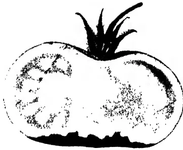
A black and white illustration of a tomato from a top-down perspective. The tomato is oval-shaped with a stem at the top. The surface of the tomato is covered with numerous small, dark, irregular spots, representing the symptoms of blossom-end rot.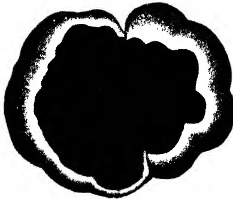
A black and white illustration of a tomato cross-section. The outer skin is dark, and the interior flesh is mostly black, indicating that the rot has progressed to the point where the entire fruit is affected.Blocks by Survey Dept., Ceylon—4-11-37
Blossom-end Rot of Tomato.
Surface view and section of diseased fruit.
of the most important causal factors. Continued excessive watering produces the same effect if later the amount of water is reduced suddenly. If the water is reduced gradually, the disease may not appear at all. Most nitrogenous manures and especially fresh cattle manure increase the trouble. Over-manuring with large amounts of fertilizers is undesirable and has the effect of increasing the amount of blossom-end rot. Aeration of the soil decreases the tendency to the disease and also the application of lime which has some effect in modifying the influence of heavy watering.
Tomato plants should receive a regular supply of water, but not to excess. Watering the plants during very dry weather has been found helpful in controlling the disease. The drainage and aeration of the soil should be as good as it can be made. Excessive transpiration should be prevented by light shade and by shelter, the effect of which may to some extent be obtained by close planting. The soil may also be protected by trash of some description. Fresh cattle manure and large quantities of fertilizers should be avoided. On the other hand humus, such as green cover-crops or straw ploughed under, will give greater aeration, increase the water holding capacity of the soil, keep the temperature more uniform and prevent the damage considerably.
222Dr. REGINALD CHILD,
DIRECTOR OF RESEARCH, COCONUT RESEARCH SCHEME (CEYLON)
THIS address I am dividing into two main sections. In the first I propose to consider the Coconut Industry in its general aspects, that is, its position in the World Markets, without special reference to its importance to our Island. In the second part, I will consider the industry in its local aspects. The two sections will not of course be sharply divided, since they are naturally not independent.
The Coconut Industry really means the Coconut Oil Industry in the sense that coconut cultivation as an industry depends primarily upon the demand in consuming countries for the oil.
Coconut oil is only one, albeit an important one, of many oils and fats which are in competition in the World's Markets.
So that the background against which we have to make our survey is the broad one of the World's Oil and Fat Markets. For the next few minutes, then, I will try to give you an idea of these markets, and particularly of what other products are in direct competition with coconut oil. Some references to the technical side of the industry must be made, but I will confine these as much as I can to what is essential to our purpose.
Oils and Fats.—The term fat is used for an oil which is solid at ordinary temperatures. Thus in Ceylon we refer to butter fat and coconut oil. In temperate climates coconut oil is a fat. It is accordingly better to lump them all together as "fatty oils," and I will do this in what follows.
Fatty oils are derived from animal sources, e.g., butter fat, whale oil, tallow, lard; or from vegetable sources, e.g., coconut oil, gingelly oil, margosa oil. They are sometimes referred to as "fixed oils" to distinguish them from "volatile oils" or "essential oils," such as citronella oil and other perfume
*An address to the Ceylon Economic Society delivered on Monday, August 23rd, 1937
223oils which are also derived from plant sources. They must also not be confused with "mineral oils," which come originally from the earth, such as "kerosene oil."
Fatty oils are distinguished from the other two classes of substances described as oils, i.e.—essential and mineral oils—by having certain chemical characteristics in common. I can best give you an idea of these characteristics by saying that all fatty oils can be converted into soap of a kind by boiling with caustic soda, and if suitably refined, they are all, with few exceptions, edible. The other two classes (to which I shall not refer again) cannot be converted into soap and are not edible.
Vegetable oils (I can drop the prefix "fatty" now, and in what follows "oils" will always refer to "fatty oils") come usually from the seeds and fruits of plants. Practically any plant seed gives a certain amount of oil—some, like the coconut, a large amount, some, like tea-seeds, a small amount. Chemists have actually studied and analysed the oils from nearly 2,000 different plants. Only about twenty of these are of economic importance. Similarly all animals have a certain amount of fat about them, but only whale oil, tallow and lard are of economic importance, with butter in a class by itself.
Of the twenty or so oils of economic importance enormous quantities are produced annually. Table I gives an approximate idea of their relative importance :
| Tons | |||||
|---|---|---|---|---|---|
| Cotton Seed Oil | .. | .. | .. | 1,044,000 | |
| Groundnut Oil | .. | .. | .. | 1,010,000 | |
| Coconut Oil | .. | .. | .. | 940,450 | |
| Olive Oil | .. | .. | .. | 800,000 | |
| Linseed Oil | .. | .. | .. | 750,000 | |
| Soya Oil | .. | .. | .. | 618,000 | |
| Sunflower Oil | .. | .. | .. | 375,000 | |
| Palm Oil | .. | .. | .. | 330,000 | |
| Palm Kernel Oil | .. | .. | .. | 231,750 | |
| Rape Seed Oil | .. | .. | .. | 280,000 | |
| Gingelly Oil | .. | .. | .. | 180,000 | |
| Hemp Seed Oil | .. | .. | .. | 10,500 | |
| Castor Oil | .. | .. | .. | 58,800 | |
| Tung Oil | .. | .. | .. | 65,000 | |
| Maize Oil | .. | .. | .. | 35,000 | |
| Others (unclassified) | .. | .. | .. | 60,000 | 6,788,500 |
| Lard | .. | .. | .. | 400,000 | |
| Tallow | .. | .. | .. | 320,000 | |
| Whale Oil | .. | .. | .. | 400,000 | 1,120,000 |
| 7,908,500 |
The total world exportable surplus of oils and fats is thus some eight million tons annually ; coconut oil accounts for some 12 per cent. of the total. I will anticipate the last section of this address by mentioning that Ceylon exports annually about 12 per cent. of the world's total exports of coconut oil, i.e., about 1.44 per cent. of the world's total exportable surplus of oils and fats.
I have mentioned two chemical criteria of fatty oils—that they are edible and that they can be converted into soap. These, of course, correspond to the two main purposes for which the oils are used in industry—for margarine and other edible fats and for soap. It will be apparent that if all oils gave the same sort of soap or edible product, that is any oil could be substituted for any other in the manufacture of a soap or a margarine without altering the nature of the finished product, the economics of the oil industry would be simply the question of which oil can be produced most cheaply ; and of course, the cost of production is a factor in determining the amount of any particular oil entering world trade.
In practice, of course, the various oils, whilst having as mentioned, certain characteristics in common, at the same time have individual properties of their own. One oil of very characteristic properties will no doubt occur to you, viz., castor oil. Then there is the class of oils known as "drying oil" because of their property of hardening in the air to waterproof films, which is the basis of their special use in paints and varnishes. Linseed oil is the best known of these ; tung oil is another member of the class.
Coconut oil and palm kernel oil have special characteristics of their own. In the first place, they are almost the only vegetable oils in large scale production which are in their natural state solid in temperate climates. Thus they were the first vegetable fats to be used in the manufacture of margarine. As you probably know margarine was first made in 1870 in France at the time of the Franco-Prussian War, the earliest margarine being almost entirely made from animal fat. Soon after this the use of vegetable fats in margarine was suggested, but the practical application of this had to await the improvement of refining methods. The earliest patent claiming the use of coconut oil in margarine seems to be that of Ruffin (E.P. 1827/1896). The first purely vegetable margarines came into the market about 1906.
With scientific developments in the chemistry of fats this advantage has largely disappeared. The development of the technique of hydrogenation or hardening, whereby liquid oils can be converted into solid fats of any required
225consistency, dates from the purely academic researches of Sabatier and Sendereens in 1900/1902. By this technique large quantities of vegetable oils, as well as liquid marine animal oils, notably whale oil, are converted into solid fats and particularly since the war there was a notable increase in the use of whale oil in margarine manufacture. Some figures collected recently for the United Kingdom by the Imperial Economic Committee are of interest in this connection :
TABLE IIOILS AND FATS USED IN THE MANUFACTURE OF MARGARINE IN THE UNITED KINGDOM BY REPORTING FIRMS RESPONSIBLE FOR ABOUT 90 PER CENT. OF THE TOTAL PRODUCTION
| Coconut Oil (1,000 tons) |
Per Cent. | Whale Oil (1,000 tons) |
Per Cent. | Total Oils (1,000 tons) |
||||||
|---|---|---|---|---|---|---|---|---|---|---|
| 1927 | .. | 44 | .. | 27.7 | .. | 25 | .. | 15.7 | .. | 159 |
| 1928 | .. | 56 | .. | 33.5 | .. | 29 | .. | 17.4 | .. | 167 |
| 1929 | .. | 57 | .. | 32.4 | .. | 29 | .. | 16.5 | .. | 176 |
| 1930 | .. | 45 | .. | 26.2 | .. | 32 | .. | 18.6 | .. | 172 |
| 1931 | .. | 45 | .. | 28.8 | .. | 34 | .. | 21.8 | .. | 156 |
| 1932 | .. | 37 | .. | 22.6 | .. | 46 | .. | 28.0 | .. | 164 |
| 1933 | .. | 28 | .. | 19.0 | .. | 56 | .. | 37.8 | .. | 148 |
| 1934 | .. | 24 | .. | 17.8 | .. | 51 | .. | 37.8 | .. | 135 |
| 1935 | .. | 31 | .. | 20.8 | .. | 55 | .. | 36.9 | .. | 149 |
Coconut oil and palm kernel oil possess certain characteristics which make them of special value in soap making, due to their high content of lauric acid. They yield hard free-lathering soaps and their use in some forms of soap is indispensable—for example, they alone yield soaps which will lather in sea-water. Coconut oil soaps are thus preferred in districts having hard water. Toilet and shaving soaps, and soap chips, which must have a hard soap base, prefer coconut oil.
This advantage is not likely to disappear yet.
The use of coconut oil in soap ante-dates its application in margarine by many decades. R. L. Sturtevant's patent (E.P. 8870/1841) is apparently the earliest claiming the use of coconut oil in soap and this can be regarded as approximately the starting date of the rise of the coconut oil industry. In fact we might almost prepare to celebrate in 1941 the centenary of the start of the coconut oil industry.
226The first estate plantations in Ceylon were started in the Northern and Eastern Provinces about that date also. Earlier than that the western and southern coasts, as Ferguson records, were mostly lined with coconuts. In the first quarter of the nineteenth century, however, exports to Europe had hardly commenced, though it seems that there was even then a regular annual export to India of about 28,000 measures of oil and 3,500 cwt. of copra. It is interesting, as we shall see later, that we have got back to Indian trade to a large extent.
But to get back to our world survey, a little more must be said about coconut oil and its rivals.
We have seen that prior to 1870—in temperate climates animal fats were almost the only ones used for food, whereas now animal and vegetable fats are in competition. Butter is, of course, in a class by itself, but clearly any marked increase in butter production will reduce the demand for the better grades of margarine, and thus for coconut and other oils. This actually, happened about 1929 and was one of the factors contributing to the decline in prices we experienced from 1929-1934.
Similarly the production of lard in the United States of America influences the consumption of cotton seed oil in the manufacture of artificial cooking fats. Now in the animal the source of the fat, if we go back to the animal's diet, is the carbohydrate portion of the latter, for example, maize feed, and it will be seen in a broad way how the U.S.A. maize production will react on the hog-production, thus on lard production, and so finally affect the world's vegetable oil markets. Annual reports on the world's oil and fat markets nearly always commence with reports on maize crops and hog-killing in the U.S.A. It would be very interesting for you to follow up these passing remarks of mine by looking into the connection—a close one—between the world's grain markets and the world's oil and fat markets. I can hardly go further into it now.
We have by now acquired a rough idea of the sort of economic factor which may affect the price of our coconut oil. A failure of the maize crop in the U.S.A., an increase in dairying and butter production in Europe, or increased catching of whales in the Antarctic—all of these seem far enough away, but all have a definite influence on the price of copra in Colombo.
Before I pass on, I might just refer to whale oil once more. Not the least of the causes of the slump which is recent in our memory, was the enormous production of whale oil in the 1930-1931 season, amounting to 614,000 tons. The unsold surplus of this production, to quote a well-known review "weighed heavily on the market and continued to do so until the autumn of 1932." It "very largely contributed to the slump in oils and fats which has taken
227place ever since then." The 1931-1932 season was severely limited to 153,000 tons and since then, still limited by agreement, has been steady at about 440,000 tons.
We have already glanced at some figures on the substitution of whale oil for others in margarine in the United Kingdom. Germany has been a big importer, but France and the U.S.A. have never taken large quantities. It can be taken that the substitution of whale oil for other oils has reached a steady state—that is for the most part, where it can be used, it is used. Any violent fluctuation of the market such as occurred after 1931 is not to be anticipated from whale oil.
We must not lose sight of the fact that world production of coconut oil has shown on the whole a steady increase.
Nett exports of copra and coconut oil entering international trade. (All as copra).
TABLE III
| 1909-1913 (average) | .. | .. | .. | 607.6 |
| 1924 | .. | .. | .. | 1122.4 |
| 1925 | .. | .. | .. | 1155.0 |
| 1926 | .. | .. | .. | 1273.7 |
| 1927 | .. | .. | .. | 1237.5 |
| 1928 | .. | .. | .. | 1506.5 |
| 1929 | .. | .. | .. | 1560.1 |
| 1930 | .. | .. | .. | 1345.1 |
| 1931 | .. | .. | .. | 1066.2 |
| 1932 | .. | .. | .. | 1040.2 |
| 1933 | .. | .. | .. | 1305.8 |
| 1934 | .. | .. | .. | 1354.3 |
| 1935 | .. | .. | .. | 1295.4 |
| 1936 | .. | .. | .. | 1254.1 |
From what information we have of planted acreages in the world, it seems likely that copra and oil production should continue to show a slight general increase for some years to come. Ceylon maintained its share of this world trade up to 1934, which was Ceylon's best year ever for exports. In fact, just as world production, annual average for 1924-1934, was almost double the annual average 1909-1913, so Ceylon's exports for the years 1924-1934 averaged
228.annually nearly double the annual exports for 1909-1913. I shall refer to these figures again in the second part of my lecture.
We must now almost conclude our world survey. But before passing on to our local industry, I must refer to another set of factors influencing international trade in oils and fats. So far we have been considering purely economic factors of the competition of one oil with another. The factors we are concerned with now can hardly be described as purely economic though as economists we have to take them into serious account. I mean, of course, fiscal questions, such as restrictive tariffs, quota systems, and the like, questions more often of politics than economics. One writer, whose views are entitled to respect, described recent restrictive legislation as "the artificial restrictions whereby all Governments fettered the free movement of commodities in the mania of ultra-nationalism which spread as a disease throughout the world since the Great War.
Protective legislation is of various kinds. A recent example is the 3-cent processing tax in the U.S.A., agitation for which came largely from the farmers of the Middle-West, and was vehemently opposed by the United States soap manufacturers. The object here and in similar cases is to encourage national agriculture, especially dairying. In other cases we find a desire to protect national oil-crushing interests—we have, for example, cases where copra is admitted duty-free, but not coconut oil. In India, as I shall mention later, copra is for this reason admitted at a lower rate than oil. Again in some cases refining interests are protected by imposing a high duty on refined edible oil, but none or a less duty on oil of non-edible grade. It is quite impossible for me to go into details in a short lecture. But I hope I have said enough to enable you to appreciate the multifarious and complicated tangle of factors which determine the price of a commodity like coconut oil. You will also, I hope, be able to study the raw material of statistics in the press and in the "Ceylon Trade Journal" with more understanding.
Now we are almost ready to pass on to the second part. To lead into that, I should like to recall what I said at the beginning—that of all these various factors, cost of production still remains a primary one. It is difficult to collect comparative data. For one thing animal fats are produced side by side with meat. Cotton seed oil, again, is not the main product of the plant, but a by-product. Groundnuts have to be planted every year. Coco-nut palms and oil palms are perennials. But it may be said in general that tropical oil seeds are, for various reasons, cheaper to produce than those grown in temperate climates, unless these are by-products like cotton seed oil.
Coconut oil being the product of a perennial and the supply thus being inelastic has been subject to greater fluctuations in price than other oils. The supply of oil from annual crops soon shortens in response to decreased demand. To put it simply, coconuts go on coming and you have to sell the
229produce for what you can get. If groundnut oil is selling for less than cost of production, you don't plant any or you plant fewer groundnuts next season.
That must conclude our very brief survey of the World Markets in Oils and Fats, with special reference to coconut oil, and also end the first main section of my address. We will for the rest of the time devote our attention to our own local coconut industry.
It will be apparent that Ceylon, as producing the small percentage we have noted of the world's oils and fats, has a negligible influence on the markets. The prices at which Ceylon copra and coconut oil are sold at any given time depend upon world movements over which we have little or no control.
We have compared the position of the main products of a perennial like the coconut, with that from an annual crop like the soybean, and also with a by-product oil like that from cotton seed. We have seen that coconut oil has lost some of its special position in the edible fat industries as a result of scientific developments increasing the degree to which one oil can be substituted for another; though scientific discoveries seem to indicate the possibility of increased use of coconut oil in another direction. And we have reached the conclusion, which was foreshadowed right at the beginning, that cost of production is a major factor in determining the demand for a particular oil.
I may enter upon my discussion of our local industry with a few words about the cost of production of coconuts and copra in Ceylon. An article on this subject I wrote for the "Ceylon Trade Journal" in April. I have made copies of this available to you this evening, so that I might be brief in this address. The conclusions I reached in that article were that coconuts can be produced in Ceylon at Rs. 15 per 1,000 and even less, without neglecting the agricultural condition of estates. I also recorded that cases of production costs as low as Rs. 7 and as high as Rs. 30 had been encountered.
It is very difficult, as I said just now, to institute a direct comparison with the cost of production of other oil seeds. But it seems to me likely that few products can compare with coconut oil for cheapness of production. In any case it appeared from the cost of production figures that I collected that even in 1934 estates on the western side of the Island could show a margin of profit. Prices in 1935, 1936 and 1937 to date, I think, can be said to show a margin over production cost that would be the envy of most products, agricultural or otherwise.
Now I must refer to some figures. In table IV(a) I have given the exports from Ceylon of the three major products exported—Copra, Oil and Desiccated—for the years 1910 to date. In table IV(b) I have converted these arbitrarily into nut equivalent, taking 320 nuts to a cwt. of desiccated, 240 to a cwt. of copra and 381 to a cwt. of oil,
230These figures I shall have to go back to several times in what follows.
TABLE IV(a)
EXPORTS FROM CEYLON OF COPRA, COCONUT OIL AND DESICCATED
COCONUT IN CWT.
1908-1936
| Copra | Oil | Desiccated | ||||
|---|---|---|---|---|---|---|
| 1908 | .. | 748,739 | .. | 644,348 | .. | 246,452 |
| 1909 | .. | 784,522 | .. | 590,795 | .. | 230,791 |
| 1910 | .. | 758,711 | .. | 619,680 | .. | 242,286 |
| 1911 | .. | 821,814 | .. | 505,016 | .. | 292,210 |
| 1912 | .. | 614,089 | .. | 401,779 | .. | 278,806 |
| 1913 | .. | 1,117,292 | .. | 546,984 | .. | 303,808 |
| 1914 | .. | 1,411,947 | .. | 486,286 | .. | 311,864 |
| 1915 | .. | 1,208,529 | .. | 501,510 | .. | 349,009 |
| 1916 | .. | 1,309,939 | .. | 323,017 | .. | 306,149 |
| 1917 | .. | 1,078,704 | .. | 434,699 | .. | 272,059 |
| 1918 | .. | 1,272,321 | .. | 527,481 | .. | 203,366 |
| 1919 | .. | 1,759,525 | .. | 675,999 | .. | 675,060 |
| 1920 | .. | 1,357,870 | .. | 507,527 | .. | 518,735 |
| 1921 | .. | 1,367,431 | .. | 484,724 | .. | 870,515 |
| 1922 | .. | 1,686,589 | .. | 554,626 | .. | 768,215 |
| 1923 | .. | 1,015,465 | .. | 480,543 | .. | 818,793 |
| 1924 | .. | 1,769,189 | .. | 552,633 | .. | 871,341 |
| 1925 | .. | 2,274,453 | .. | 616,917 | .. | 794,161 |
| 1926 | .. | 2,419,398 | .. | 570,463 | .. | 754,367 |
| 1927 | .. | 1,982,154 | .. | 673,162 | .. | 872,833 |
| 1928 | .. | 1,976,656 | .. | 779,113 | .. | 786,703 |
| 1929 | .. | 2,042,488 | .. | 878,523 | .. | 690,469 |
| 1930 | .. | 1,816,481 | .. | 761,729 | .. | 702,300 |
| 1931 | .. | 1,888,338 | .. | 959,507 | .. | 661,721 |
| 1932 | .. | 912,522 | .. | 1,012,307 | .. | 599,033 |
| 1933 | .. | 1,290,906 | .. | 1,051,358 | .. | 785,869 |
| 1934 | .. | 2,113,620 | .. | 1,396,766 | .. | 649,182 |
| 1935 | .. | 975,213 | .. | 1,109,353 | .. | 664,354 |
| 1936 | .. | 1,035,476 | .. | 689,229 | .. | 601,774 |
EXPORTS OF COPRA, COCONUT OIL AND DESICCATED COCONUT IN
EQUIVALENT OF NUTS (1,000's)
1 cwt. Copra = 240 nuts
1 cwt. Oil = 381 ,,
1 cwt. D. C. N. = 320 ,,
| Copra cwt. × 240 |
Oil cwt. × 380.95 |
D.C.N. cwt. × 320 |
Total (nut equivalent) |
|
|---|---|---|---|---|
| 1908 | .. 179,697 .. | 245,464 .. | 78,864 .. | 504,025,000 |
| 1909 | .. 188,285 .. | 225,063 .. | 73,853 .. | 487,201,000 |
| 1910 | .. 182,090 .. | 236,067 .. | 77,531 .. | 495,688,000 |
| 1911 | .. 197,235 .. | 192,386 .. | 93,507 .. | 483,128,000 |
| 1912 | .. 147,381 .. | 153,058 .. | 89,218 .. | 389,657,000 |
| 1913 | .. 268,150 .. | 208,374 .. | 97,219 .. | 573,743,000 |
| 1914 | .. 338,867 .. | 185,249 .. | 99,796 .. | 623,912,000 |
| 1915 | .. 290,047 .. | 191,050 .. | 111,683 .. | 592,780,000 |
| 1916 | .. 314,385 .. | 123,053 .. | 97,968 .. | 535,406,000 |
| 1917 | .. 258,889 .. | 165,599 .. | 87,059 .. | 511,547,000 |
| 1918 | .. 305,357 .. | 200,944 .. | 68,077 .. | 571,378,000 |
| 1919 | .. 422,286 .. | 257,522 .. | 216,019 .. | 895,827,000 |
| 1920 | .. 325,889 .. | 193,342 .. | 165,995 .. | 685,226,000 |
| 1921 | .. 328,183 .. | 184,656 .. | 278,565 .. | 791,404,000 |
| 1922 | .. 404,781 .. | 211,285 .. | 245,829 .. | 861,895,000 |
| 1923 | .. 243,712 .. | 183,087 .. | 262,014 .. | 688,813,000 |
| 1924 | .. 424,605 .. | 210,553 .. | 278,829 .. | 913,987,000 |
| 1925 | .. 545,869 .. | 235,045 .. | 254,132 .. | 1,035,046,000 |
| 1926 | .. 580,655 .. | 217,318 .. | 241,397 .. | 1,039,370,000 |
| 1927 | .. 475,717 .. | 256,441 .. | 279,307 .. | 1,011,465,000 |
| 1928 | .. 474,397 .. | 296,803 .. | 251,745 .. | 1,022,945,000 |
| 1929 | .. 490,197 .. | 334,673 .. | 220,950 .. | 1,045,820,000 |
| 1930 | .. 435,955 .. | 290,219 .. | 224,736 .. | 950,910,000 |
| 1931 | .. 453,201 .. | 365,572 .. | 211,751 .. | 1,030,514,000 |
| 1932 | .. 219,005 .. | 385,689 .. | 191,691 .. | 796,385,000 |
| 1933 | .. 309,817 .. | 400,567 .. | 251,479 .. | 961,863,000 |
| 1934 | .. 507,269 .. | 532,098 .. | 207,738 .. | 1,247,105,000 |
| 1935 | .. 234,051 .. | 422,608 .. | 212,593 .. | 869,252,000 |
| 1936 | .. 248,514 .. | 262,562 .. | 192,568 .. | 703,644,000 |
Let us for the present consider some factors modifying the position of the local industry. We reached the point in our earlier consideration that Ceylon was such a comparatively small producer of oil that our position in the world's markets was uninfluential and rigid. The rigidity of course would be complete if coconut oil was the sole product of the coconut palm,
232and if the world markets were conducted—as some think they should be—free from the restrictions imposed by that economic nationalism so common today.
Local Consumption.—Local consumption of coconuts in one form or another is important in most of the tropical producing countries, particular in Ceylon. It is estimated that local consumption accounts for something between 30 and 40 per cent. of total local production.
We may arrive at some sort of estimate of local consumption in the following way. There are reckoned to be about a million acres of bearing coconuts in the Island. If we assume an average yield of 1,500 nuts to the acre, the total annual production will be around 1,500 million nuts. Now as you will see from table IV, the average annual exports in recent years, account for about a thousand million nuts, leaving 500 millions as representing local consumption. This estimate is perhaps a little on the low side, but I should say that 800 million is the highest figure likely to be reasonable.
Now let us compare estimates for 1918, and for 1881, which were made I think by Mr. H. K. Rutherford. In 1918 he estimated the acreage at 800,000 with an average yield of 1,500 nuts per acre. Exports accounted for about 560 millions leaving 640 millions consumed locally. These and the 1881 figures are all collected below.
TABLE V| Year | Total estimated production of nuts (millions) | Nuts exported as copra, oil, etc. (millions) | Nuts consumed locally (millions) | Population of Ceylon approx. | Consumption per head |
|---|---|---|---|---|---|
| 1881 | 474 | 105 | 369 | 2,764,000 | 130 |
| 1918 | 1,200 | 560 | 640 | 4½ millions | 142 |
| 1927 | between | 1,000 | between | 5 millions | between |
| to | 1,500 | 500 | 100 | ||
| 1937 | and | and | and | ||
| 1,800 | 800 | 160 |
There surely must be something in the point of view that if 500 to 800 million nuts are consumed locally every year, price is an important factor to the home consumer? That is, a time of low prices like 1934, whilst disastrous to the producer, is at least of benefit to the local consumer. So, I think, we can regard local consumption as a factor distinctly modifying the position of coconuts as an industry in Ceylon; and distinctly to be taken into account side by side with the world factors we have previously considered.
We might go further and say that any increase in local consumption would be an advantage. It does not seem from the above figures that any appreciable increase in consumption has occurred per capita, but only in proportion to the increase in population. All of the estimates, 1881, 1918 and 1937 work
233out at about 3 coconuts per head of the population per week. Local consumption occurs also in such forms as soap and toddy products. However, these can only be regarded as having a very remote influence on the industry. The total number of coconut trees licensed in 1933 for tapping were :
(a) for toddy 166,659
(b) for sweet toddy 69,311
and the total consumption of oil for local soap-making does not exceed 2,000 tons. These can only be regarded as minor portions of our protection against economic storms, though, of course, one which may have increasing value in slump time, when every little helps.
We have so far, you will have noticed, thought of the industry entirely in terms of coconut oil. As far as Ceylon is concerned we have another product of importance.
Desiccated Coconut.—Exports of desiccated coconut commenced from Ceylon in the late 1880's. Exports, about 12,000 cwt., in 1891 increased steadily. In 1901 they stood at about 145,000 cwt. and in 1911 had reached 292,000 cwt. After the war exports showed a sharp rise to 675,000 cwt. 1927 was the best year with 872,833 cwt. and since then exports average fairly steadily between 600,000 and 700,000 cwt., though there are unfortunately signs of a slight decrease in demand.
Desiccated thus accounts for some 20 per cent. of Ceylon's exports of coconut products. Since Ceylon and the Philippine Islands have hitherto enjoyed almost a monopoly of production, with the Philippines supplying almost exclusively the United States market. Desiccated coconut is a factor of no little importance to the industry in Ceylon.
Not that the market is independent of the World's Oil and Fat markets. Demand for Desiccated is a fairly steady one—indeed it is a product easily susceptible of over-production, and prices of Desiccated coconut follow the prices of coconut oil to a large extent, and only have a limited independent movement. That there is a slight independent movement is, however, apparent from our local experience. On estates in the Negombo-Chilaw districts it sometimes is more profitable to sell nuts to Desiccated millers than to cure them and sell copra. Sometimes the reverse is true, as has been the case for most of this year. Still, the Desiccated miller in the long run has to buy nuts at their copra value, which depends on the Oil markets. If he refrains presumably shortage of stocks will push up the Desiccated coconut price to a point at which the millers can again buy nuts. Similarly if nuts are obtainable cheaply owing to a slump in the copra market, an increase in Desiccated production may result and again bring the price to copra parity.
So that Desiccated is really quite closely tied to the Oil and Fat markets.
Other Exported Products.—Coir products account for about 10 per cent. of the coconut products exported from Ceylon. These are independent of
234the Oil market and represent an additional source of income outside of the products of the kernel of the nut.
Charcoal is a minor product of some increasing importance, like coir independent of the Oil markets and giving an income additional to and not competing with other products.
Poonac, some million rupees worth of which are exported annually, should be mentioned, as it will serve to introduce our next topic.
The Local Oil-Crushing Industry.—Oil has been crushed in Ceylon for export for the best part of a century, and the existence of a stable oil-crushing industry in Ceylon has been not least of the factors which have given the Ceylon coconut industry its position.
A graph showing annual exports of Coconut Oil would show an almost unbroken rise from 1841 to 1934, the peak year when nearly 70,000 tons were exported.
Now the advantages of a local oil-crushing industry are fairly plain. There is the avoidance of shipping a product like copra which may suffer considerable deterioration on long sea voyages.
I might, whilst on the subject of freight, suggest that advantage would accrue from shipping oil in tankers, as is done from Manila, rather than in heavy steel drums. This would involve storage facilities in the harbour, but is probably well worth consideration.
Deterioration in transit is, of course, greater with lower quality copra, particularly with badly dried copra. A local oil-crushing industry tends to absorb locally the poorer grades of copra, or rather, shall I say, poorly dried copra, which, whilst not initially unsound, would deteriorate badly in transit. The quality of copra actually exported as such thus tends to be maintained at a high level.
Local oil crushing is usually cheaper, particularly as regards labour costs, than in Europe and America. The fact that crushing industries exist in Ceylon, the Philippines and increasingly in Malaya bear this out. Further as the copra is processed at an earlier stage, the oil produced contains less free fatty acid and requires less refining.
Quality of Ceylon Copra.—I have referred briefly above to the quality of Ceylon copra exported. As we all know, Ceylon F.M.S. has long been regarded as a superior grade. From over 100 analyses carried out in the past two years, and from what I have seen of samples at the Sales Room, I consider that this is being well maintained.
Ceylon copra, for reasons which are not very clear, contains a definitely higher oil percentage than, for example, Straits and Dutch East Indies copra, the difference amounting to between 2 and 3 per cent. This alone would justify a premium of 4 per cent. over the other grades.
235With the European markets, copra in 1936 was little concerned. This year Germany, Holland and the Scandinavian countries have taken notable quantities, but the bulk of Ceylon copra (as apart from oil) continues to go to India. And this brings us to the last favourable factor affecting the Ceylon industry that I shall consider.
| Copra exports |
Total (tons) |
India | Europe |
|---|---|---|---|
| 1934 .. | 105,681 .. | 32,159 (30.4%) .. | 34,662 |
| 1935 .. | 48,616 .. | 36,647 (75.4%) .. | 10,619 |
| 1936 .. | 51,813 .. | 49,421 (95.4%) .. | 2,368 |
| 1937 .. (Seven months) |
26,130 .. | 17,934 (68.6%) .. | 7,634 |
We have seen in the last few years a notable increase in the shipments of copra to India, to the extent that no less than 95 per cent. of the copra exported last year went to that destination. This year, as the figures show, the percentage going to India is still high, but more copra has been available for the local oil-crushing industry.
To comment adequately on the economic implications of this increased Indian trade would require a whole series of lectures, and indeed plenty of verbiage, both written and spoken, has been let loose on the subject on both sides of Adam's Bridge. Most of this, I am afraid, has generated more heat than light.
I would like to suggest to you, however, that when you consider the copra trade with India, you should remember that this trade has grown up from more or less natural economic causes. It has not been fostered by any particular effect or propaganda on the part of Ceylon, though, of course, we are now making an effort to stabilize and improve our position by the appointment of a Trade Commissioner in India. Ceylon copra is going to India because the Bombay and other millers want it and come here to buy it, in other words because there is a demand in excess of the local Indian supply. The accusation of "dumping" on the part of Ceylon, so often heard in Travancore, is merely absurd.
The existence of this large actual and potential market close at hand is of the greatest importance. It is to be hoped that this market will continue to contribute to the mutual advantage of Ceylon and her great neighbour. We have considered Ceylon's position in the world markets, and have paid particular attention to some factors which are on the whole favourable to us. At least we have not found reason to be unduly pessimistic. It does not seem to me that we must look outside for threats to the prosperity of the
236industry. The dangers threatening us are mostly internal, and are our own look-out. So I feel that I must conclude with a few words of warning.
Decline of Ceylon's Coconut Production.—I have written and spoken these words of warning in several different places; but they are worth repeating again and again.
Ceylon's exports in 1936 of coconut products (Copra D.C.N., oil and fresh coconuts), represented only 73 per cent. of the average exports for 1927 to 1936. 1937 tends to be rather better as a result of more favourable weather conditions last year. But in general it cannot be doubted that production is showing a definite decline. I have summarised elsewhere what I consider the reasons for this. Briefly, my opinion is that they are as follows :
1. Neglect of cultivation and manuring particularly from 1931 onwards. During the period of the slump, large acreages were perforce neglected. Manuring, which is definitely not a paying proposition with prices below Rs. 20 per 1,000 nuts, was abandoned, and cultivation programmes curtailed.
Prices however, during 1935, 1936 and 1937 have shown, as I have suggested, a sufficient margin to justify, and even demand, that some return be made to the soil.
Apart from the important question of improving small-holdings, there are far too many larger properties run on the principle of taking whatever nuts may come and doing nothing else whatever.
2. The increasing number of old areas.—It is obvious that, since coconut cultivation as a plantation industry commenced in 1841, and the period of greatest expansion of planting from 1860 to 1880, there are large number of areas past their prime. Much more attention must be paid to replanting. Not a great deal of new land is likely to be planted up in coconuts in Ceylon, but there are plenty of areas which need replanting. In doing so the best selected material should be used. The Coconut Research Scheme has issued leaflets on the selection of seed nuts and seedlings. There is no doubt that if all old areas were being regularly replanted with material selected according to the directions given in these leaflets, Ceylon coconut production would in a few years time show a definite upward tendency once more. If replanting is neglected the present decline will go from bad to worse.
The technical advice of the Coconut Research Scheme is always available on these questions of cultivation and replanting. You will not, I am sure, disagree with me if I suggest that the existence of a body like the Coconut Research Scheme which can give much technical advice is another factor of value to the local Coconut Industry.
The Financial Difficulties of the Industry are rather outside my scope—I refer to the problems which arise from the joint ownership of land and the mortgaged state of many properties. Heavy profits have been made out of
237coconuts, for example, in the boom period after the war. Too little of these profits were put back into the land, and what was put back was not always utilized in the most economical manner. It is probably true that some of our problems arise from the fact that "the fathers have eaten sour grapes and the children's teeth are put on edge." Don't let us make the same mistakes twice. With reasonable attention coconut properties still give a moderately good return. Our survey of the industry gives reason for moderate optimism provided that we tackle firmly our own local problems.
We have started from a broad survey of World Trade in oils and fats and have gradually narrowed our focus until we have arrived at the consideration of the individual coconut property in Ceylon. I am aware that there are many economic aspects of the coconut industry upon which I have not touched ; but I will say in my own defence, that I chose the modest title for my lecture of "Some Aspects."
I trust that my selection of topics for discussion has been such as to enable you to have a clearer picture of the Coconut Industry of Ceylon and also of the setting in which the picture must be viewed.
238ONE of the exhibits of the Coffee Team at the June Agricultural Show is portrayed in the accompanying photograph and was one of the outstanding displays in the show-ground. This model purports to depict in miniature a section of the country stretching from the Kinangop Forest Reserves to the Kiambu-Ruiru-Thika coffee areas. In the background is the forest area, in the middle distance is the native reserve, and in the foreground the coffee area. This model is divided into two halves : good and bad, as will be seen from Plate I.
On the left the trees of the virgin forest remain inviolate, clothing with their canopy and strengthening with their roots the water-sheds of the headwaters of the streams which later coalesce into the rivers which serve the African and European populations below ; down these rivers come the waters for domestic use, for stock, and for pulping and washing coffee. It is these forests indeed which are responsible for the springs that provide a steady, constant and adequate flow of water for the Ruaraka, the China, and all their many tributaries.
On the left again, in the native reserve, the crops are planted across the slopes and as far as possible on the flat tops of ridges, where are also the main pasture lands. The steep slopes and the banks of streams are left with their natural vegetation on them. These are just some of the measures which keep the rich surface soil from being deposited by rain into the rivers below, thus preserving the land fertile and the rivers clean.
Turning to the illustration once more, on the left, in the foreground, are the coffee plantations, contour or box-ridged wherever the slopes require such action. Napier grass is grown in plenty to provide mulch or compost which, together with manure from the cattle kept by the planter on the upper ridge, tends to enrich the soil and hold it in place instead of allowing it to be washed off into the river below.
Two coffee factories are shown ; owing to the measures taken above them for water conservation and cleanliness, these factories have ample clean water throughout the year for the preparation of their coffee, and seepage pits have been provided to which is conveyed the water used for the first washing, so that it does not pollute the water used in the factories further downstream.
*By G. J. L. Burton in the Monthly Bulletin of the Coffee Board of Kenya, June, 1937. Only one photograph from the original Journal has been reproduced
A high-contrast, black and white photograph showing a landscape. In the foreground, there is a dark, textured area that appears to be a road or a path. In the middle ground, there is a building or structure with a light-colored roof and some vertical lines, possibly windows or doors. To the left of the building, there are some trees or bushes. The background is very dark and indistinct, suggesting a hillside or a forest. The overall image is very dark and has a grainy, high-contrast quality.Plate I. Soil Erosion—A Warning
A completely blank white page with no visible content, text, or markings. 239The keynote of the left half of the picture is prosperity.
On the right the story is very different. Misuse of the land in the native reserve has so impoverished it that the inhabitants have been forced to migrate into the forest which has been partly cut out by man and further destroyed by goats. A few clumps of indigenous forest are left, reinforced by wattle plantations. Many springs have dried up and the streams are only semi-permanent, flooding during the rains and then going dry. Every rainstorm beats on to an unprotected soil or on to a soil exposed to the erosion of a crop planted downhill. Cattle tracks abound and the goat is as ubiquitous and destructive as the African can make him.
The coffee plantations below are in no better case, anti-erosion measures have been omitted and an impoverished soil is failing to support the planter. The two coffee factories have suffered badly and the water only reaches them during the rains and for the rest of the year lies in stagnant pools further up. The water that does come down is a dirty brown colour, contaminated with silt and further polluted by the failure of the coffee factories above to get rid of the water used for first washings through seepage pits; this water thus comes down polluted and ruins the quality of the coffee prepared in the factories below.
The keynote of the right half of the picture is poverty for both African and European. Not only is the land required to support the native population twice as great as that shown in the conditions on the left of the picture, but the life-blood of the whole community—the rivers and streams—has become a dirty and insufficient trickle.
The Forest Officers, the Agricultural Officers, the Administrative Officers, the Coffee Officers, and above all the community at large, both individually and through the offices of the Agricultural Society, the Arbor Society, the Coffee Board, and other such bodies, must band together and see to it that this section of Kenya here depicted never comes to the pass shown on the right of the picture.
That this warning is needed and that the present efforts to preserve the land must not be relaxed and should indeed be intensified, is amply illustrated by the present appalling condition of the Machakos and other Reserves. It can safely be said that the warning conveyed by this exhibit is not exaggerated and it is hoped that visitors to the Show took due note of it.
At the beginning of this article it was stated that this model was the work of the Coffee Team. It does indeed represent team work. It is one thing to conceive the idea and design it, quite another to execute it and fill in the details. This has largely fallen on the (as everyone will agree) capable shoulders of Mr. Pratt, the latest recruit to the team. To Messrs Wimbush and Gault, of the Forest Department, is due the planting up of the forest and to the latter we owe endless help with trees and hedges in other parts of the miniature. As this exhibit took shape, many serious difficulties cropped up, of which the incessant rain was not the least. That these obstacles have been surmounted has been due to the way in which the Coffee Team as a whole has rallied round the exhibit and both by advice and by manual labour has licked it into shape.
240AGRICULTURAL opinion about quality in food amounts to little more than a mixture of complaints and questions. It is the object of this paper to explain current views on quality, to put forward problems needing solution, and to show in what ways the producer of food can control its quality.
Current views on quality are easy to grasp, being simple to the point of naivety. The producer is interested in quality only in so far as it pays. There was once pride in a really fat bullock or other forms of excellence of production for its own sake, but modern business methods have knocked most of the sentiment out of the farmer and now he will strive for high quality only for what it is worth.
Between farmer and consumer come a variety of dealers, wholesale and retail, and in some cases processors also, who may be bracketed together as the intermediary. In the agricultural view the intermediary gets it both ways over the matter of quality which serves him as a stick to beat the producer and as a bait to catch the consumer. He is very given to saying this or that is what the public wants: what he really means is this or that is what he himself finds it most profitable to handle.
The consumer's position is exceedingly strong in that he can buy or not buy as he pleases. But it is rendered weak by his credulity. The quality of the advertisement or the packet is, often enough, to him, the quality of the product. He has other guides but just as bad. Anything alleged to affect his health will impress him and he has been taught to know the importance of vitamins and that one of them can be got into him by irradiating his food. Cheapness is another guide to the consumer, being even more important than an attractive packet. Whether 10 per cent. of purchasers of lettuce, early potatoes, apples, beef or butter would pay 10 per cent. more for better flavour may be doubted. Consumers want many things beside food and it may be that the limitation to production of high quality grades will be the consumer's tendency, while buying himself a sufficient amount of food, to economize on quality.
There are, of course, certain conventional so-called standards of quality for various agricultural products, and two examples will show their nature.
*By Prof. F. L. Ingledow, C.M.G., M.A. Drapers' Professor of Agriculture, Cambridge, in Chemistry and Industry, May 15, 1937
241Take beef first. Families want small joints nowadays, so butchers want only medium-big bullocks. They want them well finished but not "Smith-field-show fat." That is the essence of the specification, which probably involves good eating quality by insistence on "finish" and would be all right if genuinely employed. After market day the official prices report reads "Beef 1st quality 42s. (per live cwt.) 2nd's 40s." No doubt a few beasts did sell at 42s., but the generality probably went at 39s. and whether they really were first quality or not was never settled. The farmer had to take what he was offered or take his beasts back home, and if the buyer saw plenty of good beasts on the market he knew many of them would have to sell cheaply because of the plenty. On the same market many fat cows would be sold—the fattened discards from dairy herds. They make inferior beef and sell cheaply, but cow-beef is not labelled as such in butcher shops and the consumer may well wonder why beef quality varies so much from time to time.
Spring cabbage will serve as the second example. According to their variety and method of growing they show a great range in quality. In a year like 1936, when all green vegetables were badly cut by winter, the only thing that mattered for several weeks in marketing spring cabbages has been earliness. Later, as supplies become more abundant, quality will tell. But on glut days a lot of cabbage will be left over when most of the buyers have bought all they want and gone away. What remains will be largely lower quality stuff. But it will not all go begging. Right at the end of selling time there will appear the artful buyer who has waited for the critical moment at which the salesman has begun to conclude that what remains is unsalable. The artful buyer is not the owner of a back-street shop, but a big man, and offering to take the lot, he gets it very cheaply. That is one attitude towards quality and not an uncommon one. The man who thus buys cheaply is not known to sell correspondingly cheaply.
Some of the bigger buyers of potatoes invariably demand a sample and make a boiling test before purchasing a big bulk. This procedure is not, however, adopted in smaller trading circles and in any case it does nothing to define quality or to help the producer to ensure it.
Certain official efforts have been made to specify quality and relate it to price. The formidable regulations for milk aim at hygiene but do not secure payment on a fat-content basis. Under the wheat deficiency payment scheme wheat has to be certified as of millable quality in order to earn the payment, and similarly the bonus on beef is only paid on animals approved by an appointed authority. There is, further, the specification of quality or grade for pigs delivered to bacon factories, but this is arbitrary and has no proper basis. All provisions of this kind are incidental to subsidy payments rather than primarily in the interests of quality of produce. The National Mark Scheme aimed at securing grading, good quality and good packing in a considerable variety of products, but less is heard of it now than formerly. In
242an effort to remove some of the chaos of meat marketing in this country—a chaos in which quality becomes completely submerged—the Ministry of Agriculture and Fisheries has opened a number of grading centres. Beasts sent to these are graded after slaughter by official graders and the hope is that in time graders will come to know and approve the grades employed, to rely on the grading, and consequently to pay a premium to be sure of securing what they want.
The general unsatisfactoriness of the good quality situation is traceable partly to the opposition of the intermediary to any investigation of his procedure and partly to confusion as to the meaning of quality.
In regretting this confusion one must realise the great difficulty immanent in the conception and definition of quality. This is partly true of meat, for beasts are bought alive. Thus the producer, if he sells at the ordinary market, has to judge whether the live animal is fit for the particular trade for which it is destined and the butcher to make up his mind what quality of carcass it will kill to. There is the further consideration that the most perfect specification or scientific test of quality would be useless in commerce, especially with perishable materials, unless it could be applied with great rapidity.
In commerce, quality is broadly used to embrace all the attributes of crop or animal products which affect selling price. The first step towards defining quality must therefore be to separate the ancillary attributes from the essential.
The ancillary attributes of quality, or let us say, marketability, include :
(a) Preparation, e.g., the washing of eggs ; dressing of table fowls ; removal of outside leaves and washing of lettuce. The modern housewife considers this important for in the diminutive kitchenette of a London flat the sink is little bigger than a vegetable dish and dirt or surplus foliage from vegetables cannot easily be disposed of in such circumstances.
(b) Grading, e.g., egg or apple size ; the old trick of putting all the big ones on the top of the basket bred suspicion which grading dispels.
(c) Packing, e.g., cauliflowers in crates instead of bags or nets ; celery in transparent bags can be put straight into the window of the greengrocer's shop. The modern town shop has no facilities for handing refuse.
(d) Disease, e.g., blight or other disease on potato tubers ; scab on apples ; milk.
(e) Damage, e.g., broccoli discoloured by frost or heat ; bruising of fruit.
(f) Size, e.g., small carcasses of beef for the small joints now in demand ; small turkeys ; large potatoes for baking.
(g) Freshness, e.g., salad vegetables ; eggs.
243(h) Time of marketing, e.g., very early strawberries, foreign early potatoes, broccoli in March, imported asparagus in winter, etc., make high prices even despite most indifferent flavour.
(j) Correct processing, e.g., over-salt bacon, bad canning or sausage making.
In the past ten years a great deal has been said about the so-called "quality" of British farm products. Almost invariably it has had reference to these ancillary attributes only. The loudest voices have been those of the wholesaler and retailer who, in condemning the farmer for low quality are merely seeking to force him to supply produce in a better condition for sale but at no better price. It is true that many foreign producers send their wares to us splendidly got up, and good preparation at the point of production is a sound principle. But the intermediary should pay for it since it means that he is getting his work done for him by the producer.
The essential attributes of quality may now be considered. Among them are :
(k) Texture, e.g., in meat tenderness and proportion of fat to lean ; floury and waxy potatoes ; tender or stringy condition of carrots or beefroot or runner beans ; firmness in Brussels sprouts. Texture is important in the public estimation.
(l) Flavour, e.g., in dessert apples ; delicate vegetables like asparagus or marrow fat peas or certain potatoes ; or lamb or perfectly finished (not over-fat) beef.
On the whole, consumers know little of flavour and few will pay for it. A rosy apple, if juicy, is appreciated as much as a Cox's Orange Pippin by many people and it is to be remembered that children, the great consumers of fruit, have uneducated palates.
(m) Absence of taints, e.g., garlic in milk ; fishy taste in bacon from feeding herring meal.
(n) Aroma, e.g., tea. This attribute is refined and difficult to deal with. It is not easy to exemplify from home products.
(o) Age, e.g., old and new potatoes ; the tenderness but absence of flavour of baby beef ; old boiling fowls ; the harsh flavour and toughness of old runner beans or of cabbage ; the mealiness of peas if left too long. Age is for many products an excellent index to tenderness or flavour.
(p) Colour, e.g., brown versus white shelled eggs ; colour of apples ; egg yolk colour ; milk.
Having now roughly separated the ancillary from the essential attributes of quality in food products generally, the next step is to see how they could be specified and estimated in commerce ; although each has certain peculiar features, the chief products may be grouped into a comparatively small number of classes, e.g.,
(i) Non-perishable and handled in bulk such as wheat and barley. Rate of transfer from agent to agent is slow so that, apart from financial and
244speculative considerations, time is available for comparatively lengthy chemical and other tests of quality which would be impossible with, say, fresh vegetables.
It would be possible in all these classes to make broad rules or standards for the ancillary attributes of quality and for certain of the essential ones. Specification would have to be completed by additional notes on individual products. It would be in trying to draw up such notes on essential attributes that any attempt at quality standards would at present come to an end for want of knowledge. Potatoes illustrate this well. Among their many commercial characteristics is flouriness (of old potatoes of the boiling type). It is partly a question of botanical variety, but it is also affected by soil and—or so we believe—by manuring and time of lifting. No one can inspect a sample or bulk of potatoes and say with certainty, except in extreme cases, that they will or will not be satisfactory when boiled. Nor is there any commonly available, satisfactory, scientific test of this property. The only way is to boil them and observe the result. With all other food products the situation is much the same, as may be seen with wheat. Its value for bread making, despite many years of painstaking chemical research, can only be finally decided by grinding it into flour and making this into bread—a cumbersome and costly form of testing (preliminary, small scale tests of quality of wheat have, of course, been developed by plant breeders).
What then can be done to specify quality in food? This question is too wide and elaborate for full discussion here, but the following principles are suggested for crop products, analogous ones being derivable for animal products:
(1) No real progress is possible, indeed no start can be made, unless quality is treated analytically. That is, we must cease to talk and think of quality at large and must deal with the individual attributes by which it is constituted for each product.
(2) Only major differences are worth considering for with most products the consumer's discrimination is feeble. Man has always delighted in biasing the taste of his common food by powerful flavoured extraneous substances. An unknown but not negligible part of the nation's expenditure on food goes to condiments, salad dressings, relishes, nutritionally unnecessary sugar, spices and proprietary sauces.
245(3) The scientific deal of specifying essential attributes of quality in physical and chemical terms cannot at present be a practical objective. Experience with tea, wheat, and other things show this. Moreover, human perception cannot be scientifically specified and, in any case, public taste does in fact change.
(4) At present then, the attack must be empirical. Its objective must be the correlation of factors influencing production with the external form of the marketed product and of both of these with the individual essential attributes of quality.
(5) The production factors to be studied should include soil type manuring, rate of growth, stage of growth at marketing, and botanical variety.
(6) Quality attributes must be judged by trained observers having special aptitude and training, as in the case of tea tasters. The various sections of the British tea industry are now making elaborate plans to ensure the effective co-operation of tea tasters in the researches of their scientific departments on quality in tea.
(7) Investigations in conformity with these principles would in time teach producers how to raise, and intermediaries how to discern, products having the quality attributes acceptable to public taste. One of the most important results would be to establish the reputation for quality of certain botanical varieties of each kind of crop.
By this growth of knowledge the quality level of our food products would gradually be raised, provided intermediaries played their part in encouraging quality by price.
(8) It is the duty of the intermediary to pay a large part of the cost of quality investigations. In cotton it is the consuming industry, for Empire cotton, which pays for both yield and quality studies. Our food industries stand, on the whole, in unfavourable contrast. Thus the butchers, who to judge by the apparently great increase in the number of their shops must be prosperous are not known to have spent a penny on research and yet half the meat Britain eats is home grown.
There is such a dearth of reliable experimental evidence on the extent to which the producer can control quality that this important question must be very briefly handled. The processor is master of his own affairs and his policy is in some cases to train the public to consume what he finds it most profitable to prepare for it. We see this in the commercially convenient dodge of canning dried peas instead of fresh ones. Whether this will disgust the consumer with canned peas altogether, time will show.
Control over packing, grading, disease and the rest of what have been called the ancillary attributes of quality is comparatively easy. Leading British apple-growers spend from £6 to £10 per acre in spraying against insects and fungi, and in raising high grade vegetables immense care is now taken.
246Over the essential attributes of quality like tenderness and flavour, control is much more difficult and it is guided for the most part by general experience and belief. It is not possible to do more than illustrate the interplay of controllable production factors on essential attributes of quality. Thus :
(1) Soils which through their texture or chemical composition promote steady, unchecked but not unduly vigorous growth, give high quality in potatoes, broccoli, Brussels sprouts and certain other vegetables. Very dry soils make turnips stringy and pungent and spoil both colour and flavour of broccoli. Exceptionally fertile soils give high yields of potatoes, but a thick skin and an absence of the delicate flavour obtainable elsewhere.
(2) Manuring helps to correct the deficiencies of poor soils but exercises certain curious specific effects. Potash appears to promote quality in dessert apples. For potatoes it improves growth but when given in the commercial form of muriate of potash (mainly ) has been found in some but not all cases to lower cooking quality.
(3) Water supply is of great importance, being a prime factor in relation to the avoidance of checks in plant growth by which the quality of all vegetables is seriously affected. The practice of overhead watering by fine sprays is now being adopted with outstanding success by some of the leading British vegetable growers. It not only supplies water to the roots but affects local atmospheric humidity.
(4) Time of marketing needs close attention and a fine discrimination. It is not so much a matter of chronology as of stage of growth, i.e., physiological age rather than time age : green peas are an excellent case in point. The craze for out-of-season vegetables is leading growers to market Brussels sprouts in September with flavourless results and to lift main crop potatoes in the same month or earlier so that the consumer may be pampered with " new " potatoes. The indifferent potatoes imported in April and May and bought at high prices by consumers, even by those at low income levels, so warp public criteria of quality in new potatoes that when British carlies come on to the market they are now properly appreciated only by connoisseurs. Desire for change in food seems now to outweigh appreciation of high quality. This fact explains the public demand for " out-of-season " foods.
(5) One of the secrets of securing desirable quality is to grow the right varieties. Unfortunately an evil system of constantly renaming varieties for propaganda purposes has been developed by the British seed trade whereby varietal merits have become obscured. The intermediary could help himself and the producer as well by discountenancing this practice.
(6) Breeding new varieties for high quality has been prosecuted with brilliant success in wheat, barley and some other crops, and could be extended to many more if quality standards were evolved. The work would necessitate semi-scientific tests for quality applicable to the small amount of material available in the early stages of breeding, but such tests have been furnished for wheat and barley breeding.
247(7) With animals breed is also important, but cannot yet be fully exploited for want of precise knowledge of the attributes consumers desire.
(8) The feeding of animals influences quality, but knowledge of the relationship is slight. Taints in milk, eggs and pig meat have already been referred to. The inference, natural to non-physiological minds, that a high protein diet makes a high proportion of lean to fat in the carcass, is without experimental foundation.
It may occasion surprise that nothing has yet been said about quality in the sense of nutritional value. The reason is lack of dependable information. The fact is that knowledge about human nutrition is exceedingly limited. It would not be relevant to attempt to go far in this matter now, but the present situation may be illustrated quite simply by means of a report on "The Physiological Bases of Nutrition" by the Technical Commission appointed by the Health Committee of the League of Nations (meeting held in London, November 25-29, 1935). In speaking of protein requirements it is stated that in "practice the protein intake for all adults should not fall below 1 gramme of protein per kilogram of body weight. The protein should be derived from a variety of sources and it is desirable that part of the protein should be of animal origin." This from the scientific point of view is exceedingly general. But under the heading of "Fat requirements" the prescription is far more vague; it reads, "Fat must be a constituent of the normal diet, but the data at present available do not suffice to permit a precise statement of the quantity required."
Quality in the sense of nutritional value must therefore be left alone until nutritional experts have greatly advanced their knowledge. If we cannot compare the value of one kind of protein with another, or speak with any precision at all about fat requirements, we certainly cannot begin to compare different varieties of the same crop or different conditions of flesh from the same kind of animal from the nutritive point of view, nutritive being used here to exclude the special consideration of vitamin and mineral content.
What most impresses anyone who thinks about quality in food is the dearth of knowledge. Responsibility for gaining knowledge rests jointly on producer and intermediary. The latter, as agriculturists see him, has been content to sit amidst a world glut of food production and take his pick. While always ready to blame the home producer, he has in general made no effort to specify the food attributes demanded by the consumer and which, as he is fond of saying, it is his duty to provide. An element of protest and provocation in this treatment of food quality will, it is hoped, be extenuated by the fact that the agriculturist has to face unaided both kinds of food production problem, the quantitative as well as the qualitative.
248Minutes of the thirty-eighth meeting of the Board of Management held at Bandirippuwa Estate, on Friday, September 3, 1937, at 2.45 p.m.
Present.—Mr. E. Rodrigo, C.C.S., Acting Director of Agriculture (in the Chair), Messrs S. O. Canagaretnam, M.S.C., O. B. M. Cheyne, A. Ekanayake, D. D. Karunaratne, J.P., Gate Mudaliyar A. E. Rajapakse, O.B.E., M.S.C.
Dr. R. Child, Director of Research, acted as Secretary.
Apologies for absence were received from Mr. C. H. Collins, C.C.S., Acting Financial Secretary, and Mr. Tyagaraja.
The minutes of the previous meeting held on May 28, 1937, which had been circulated to members, were confirmed.
New Appointments.—The Board confirmed the following new appointments, which had been reported by the Director of Research :—
Technical Assistant to the Technological Chemist.—Mr. W. R. N. Nathanael, B.Sc., from July 19, 1937.
New Junior Clerk.—Mr. E. H. K. de Silva, from September 1, 1937.
At the thirty-sixth meeting of the Board of Management held on Friday, February 26, 1937, it had been decided to circulate at intervals interim reports on long-term experiments, papers of each experiment to be collected in a single file.
A start had been made by circulating two reports on the Scheme's N.P.K. Manurial Experiment.
With reference to the covering letter sent with these papers by the Director of Research, the Chairman remarked that it was desirable to keep one file for each experiment; short-term experiments, which would in the usual course be reported on early, hardly came within the scope of the present scheme, which was designed to keep the members of the Board in touch with the progress of investigations which had to be continued over a number of years. The Board agreed.
249FINANCEThe Statement of Receipts and Payments for the quarter ended June 30, 1937, was approved.
Loan from Government of Rs. 50,000.—Copies of correspondence between the Treasury, the Chairman and the Director of Research had been circulated to all members of the Board. The Board had agreed by correspondence to the Chairman's proposal to approach the Hon'ble the Minister of Agriculture and Lands to have the Coconut Research Ordinance No. 29 of 1928 amended.
The proposed amendment gives power to the Financial Secretary :
The Chairman referred to correspondence subsequent to that circulated ; he had written to the Hon'ble Minister asking that the necessary steps might be taken.
BUILDING SUB-COMMITTEEThe minutes of the seventh, eighth and ninth meetings of the Buildings Sub-Committee held on June 14, July 5 and August 8, 1937 respectively had been circulated to all members of the Board.
EXTENSION TO BUNGALOWSThe Board approved of action taken in this connection by the Buildings Sub-Committee. It was decided to publish early the advertisement calling for tenders as drafted by the Architect.
New Building for Battery Room, Stores, &c.—The Board approved of the extras on the contract sum incurred on this Building by the Building Sub-Committee amounting to Rs. 214.00. The Chairman reported that the Building had been completed in the scheduled time and passed by the Buildings Sub-Committee on August 8, 1937.
The Board concurred in the action of the Building Sub-Committee. Several members of the Board inspected the new buildings after the close of the meeting.
Superintendent's bungalow.—In view of the possibility of the Superintendent being transferred to Ratmalagara Estate, on its acquisition by the Scheme, it was decided not to confirm for the present the supplementary provision made for renovations to this bungalow.
It was decided, however, to proceed with the Sub-Committee's proposal for an inspection of the building by a Medical Officer.
RATMALAGARA ESTATEThe Chairman reported action taken on this matter since the previous meeting. A price had been agreed upon with Messrs Duncum, Watkins,
250and Ford, who were acting for the mortgagees. The scheme's lawyers, Messrs F. J. & G. de Saram, had been instructed to act for the Scheme. The Board concurred in the action taken.
The Estate Progress Reports for May, June and July, 1937, were approved by the Board.
Inspection of Buildings at Bandirippuwa.—A letter from the Hon'ble Minister for Communications and Works was read stating that his Executive Committee had authorized the periodical inspection of the laboratory and other buildings at Bandirippuwa Estate and that the papers had now been referred back to the Director of Public Works for necessary action.
Publication of the Director of Research's lecture to the Ceylon Economic Society.—A letter was read from the Editor "Young Ceylon" asking for permission to publish the lecture given by Dr. Child on "Some Economic Aspects of the Coconut Industry" given to the Ceylon Economic Society on Monday, 23rd August, 1937.
The Board stated that provided the Economic Society had no objection, they would not object to the publication of the lecture in "Young Ceylon."
Visitors' Day.—A letter was read from the Honorary Secretary, Low-Country Products Association of Ceylon, asking that "certain days in every week be set apart on which visitors will be shown round the Institute and given all the information required of them by the Technical Officers." The Director of Research had replied that whilst visitors were always welcome on working days in normal working hours, preferably if notice were given of visits, it was not in his opinion desirable to set aside special visitors' days in every week. The Scheme's technical staff was small and the interruption so caused to work in progress might be serious.
The Board of Management decided that the present arrangement should remain in force, i.e., the third Wednesday in every month is set aside as an open day for visitors. Visitors are welcome at other times on official working days, but notice of intending visits should preferably be given to the Director of Research.
Coconut Planters' Joint Committee.—The Board had previously given permission to the Coconut Planters' Joint Committee to hold their meetings in the Library at Bandirippuwa Estate, on the third Saturdays of January and July respectively. A letter was read from this body asking for permission to alter these dates to the second Saturdays of March and September respectively. The Board agreed to this alteration.
251OTHER BUSINESSCirculation of Information to Estate Companies.—Mr. Cheyne enquired whether any papers were sent to Estate companies interested in coconuts other than the Scheme's publications such as reprints of articles from The Tropical Agriculturist and from other journals and from the press; leaflets, bulletins and annual reports. The Circulation Papers sent round to members of the Board contained much information of wider interest and he thought that certain of them might be sent to the Colombo companies interested.
The Chairman thought that members might suggest at meetings what Circulation Papers they considered could with advantage be given wider publicity. The Board agreed to this procedure.
The meeting terminated at 3.50 p.m.
252ANIMAL DISEASE RETURN FOR THE MONTH
ENDED SEPTEMBER, 1937
| Province, &c. | Disease | No. of Cases up to date since Jan. 1st, 1937 | Fresh Cases | Recoveries | Deaths | Balance III | No. Shot |
|---|---|---|---|---|---|---|---|
| Western | Rinderpest | .. | .. | .. | .. | .. | .. |
| Foot-and-mouth disease | 846 | 393 | 789 | 6 | 51 | .. | |
| Anthrax | .. | .. | .. | .. | .. | .. | |
| Rabies | 14 | 4 | .. | .. | .. | 14 | |
| Colombo Municipality | Rinderpest | .. | .. | .. | .. | .. | .. |
| Foot-and-mouth disease | 622 | 18 | 605 | 16 | 1 | .. | |
| Anthrax | 12 | .. | .. | 12 | .. | .. | |
| Rabies | 24 | 7 | .. | 24 | .. | .. | |
| Blackquarter | 1 | .. | .. | 1 | .. | .. | |
| Trypanosomiasis | 1 | .. | .. | 1 | .. | .. | |
| Cattle Quarantine Station | Rinderpest | .. | .. | .. | .. | .. | .. |
| Foot-and-mouth disease | 2 | .. | 2 | .. | .. | .. | |
| Anthrax | 79 | 16 | .. | 79 | .. | .. | |
| Central | Rinderpest | .. | .. | .. | .. | .. | .. |
| Foot-and-mouth disease | 87 | .. | 85 | 2 | .. | .. | |
| Anthrax | .. | .. | .. | .. | .. | .. | |
| Piroplasmosis | 5 | .. | 4 | 1 | .. | .. | |
| Blackquarter | 2 | .. | .. | 2 | .. | .. | |
| Anaplasmosis | 1 | 1 | .. | .. | 1 | .. | |
| Southern | Rinderpest | .. | .. | .. | .. | .. | .. |
| Foot-and-mouth disease | 523 | 100 | 410 | .. | 113 | .. | |
| Anthrax | .. | .. | .. | .. | .. | .. | |
| Northern | Rinderpest | .. | .. | .. | .. | .. | .. |
| Foot-and-mouth disease | 1,474 | .. | 1,437 | 37 | .. | .. | |
| Anthrax | .. | .. | .. | .. | .. | .. | |
| Eastern | Rinderpest | .. | .. | .. | .. | .. | .. |
| Foot-and-mouth disease | 61 | .. | 61 | .. | .. | .. | |
| Anthrax | .. | .. | .. | .. | .. | .. | |
| Haemorrhagic Septicaemia | 84 | 84 | 19 | 65 | .. | .. | |
| North-Western | Rinderpest | .. | .. | .. | .. | .. | .. |
| Foot-and-mouth disease | 34 | .. | 34 | .. | .. | .. | |
| Rabies | 3 | .. | .. | 1 | .. | 2 | |
| Piroplasmosis | 1 | .. | 1 | .. | .. | .. | |
| Haemorrhagic Septicaemia | 25 | 17 | .. | 23 | .. | .. | |
| Rinderpest | .. | .. | .. | .. | .. | .. | |
| North-Central | Foot-and-mouth disease | 60 | .. | 60 | .. | .. | .. |
| Anthrax | .. | .. | .. | .. | .. | .. | |
| Rinderpest | .. | .. | .. | .. | .. | .. | |
| Uva | Foot-and-mouth disease | 132 | .. | 126 | 6 | .. | .. |
| Anthrax | 2 | .. | .. | 2 | .. | .. | |
| Pleuro-pneumonia | 15 | .. | 7 | 8 | .. | .. | |
| Rabies | 3 | .. | .. | .. | .. | 3 | |
| Rinderpest | .. | .. | .. | .. | .. | .. | |
| Sabaragamuwa | Foot-and-mouth disease | 476 | 13 | 399 | 64 | 13 | .. |
| Anthrax | .. | .. | .. | .. | .. | .. | |
| Rabies | 2 | .. | .. | .. | .. | 2 | |
| Piroplasmosis | 4 | .. | 3 | 1 | .. | .. |
Department of Agriculture,
Peradeniya, 18th October, 1937
G. B. DE SILVA,
Acting Government Veterinary Surgeon
| STATION | TEMPERATURE | HUMIDITY | Amount of Cloud | RAINFALL | ||||||
|---|---|---|---|---|---|---|---|---|---|---|
| Mean Maximum | Difference from Average | Mean Minimum | Difference from Average | Day | Night (from Minimum) | Amount | No. of Rainy Days | Difference from Average | ||
| ° | ° | ° | ° | % | % | Ins. | Ins. | |||
| Colombo .. | 85.9 | +0.8 | 76.3 | -0.2 | 74 | 86 | 7.2 | 14.97 | 14 | + 7.96 |
| Puttalam .. | 87.3 | +1.2 | 78.3 | +0.9 | 72 | 84 | 6.1 | 3.24 | 3 | + 1.45 |
| Mannar .. | 87.9 | -0.1 | 79.0 | +0.4 | 76 | 84 | 5.3 | 5.71 | 2 | + 4.38 |
| Jaffna .. | 86.1 | +0.5 | 79.9 | +1.1 | 78 | 82 | 6.3 | 7.34 | 5 | + 4.25 |
| Trincomalee .. | 92.1 | +0.8 | 77.0 | +0.3 | 60 | 80 | 6.0 | 1.48 | 6 | - 2.34 |
| Batticaloa .. | 89.5 | -0.1 | 76.2 | +0.4 | 68 | 84 | 5.2 | 4.80 | 7 | + 2.25 |
| Hambantota .. | 87.3 | +1.4 | 76.7 | +1.1 | 74 | 86 | 4.2 | 0.38 | 5 | - 2.68 |
| Galle .. | 83.4 | +0.7 | 77.9 | +1.4 | 77 | 82 | 5.8 | 9.66 | 14 | - 0.74 |
| Ratnapura .. | 88.3 | +1.2 | 72.3 | -1.1 | 71 | 93 | 6.6 | 12.51 | 19 | - 3.77 |
| Anuradhapura .. | 91.6 | +0.9 | 74.9 | +0.1 | 66 | 93 | 7.0 | 2.19 | 7 | - 1.72 |
| Kurunegala .. | 88.4 | +1.0 | 73.9 | -0.1 | 69 | 88 | 5.9 | 7.32 | 8 | + 1.15 |
| Kandy .. | 84.3 | +0.5 | 68.1 | -1.2 | 66 | 90 | 5.8 | 5.83 | 8 | - 0.76 |
| Badulla .. | 85.7 | -0.1 | 63.6 | -0.4 | 64 | 97 | 5.4 | 7.50 | 9 | + 3.02 |
| Diyatalawa .. | 78.5 | +0.6 | 60.6 | -0.2 | 60 | 78 | 6.4 | 10.30 | 13 | + 5.90 |
| Hakgala .. | 71.7 | +1.7 | 56.7 | +0.1 | 59 | 55 | 3.0 | 8.33 | 11 | + 1.76 |
| Nuwara Eliya .. | 68.7 | +1.8 | 50.9 | -2.3 | 78 | 90 | 7.7 | 6.18 | 13 | - 2.75 |
The rainfall for September was generally below normal in the Southern, Central, and North-Central Provinces. It was in deficit too in parts of Sabaragamuwa, Uva and North-Western Provinces. The largest excesses were recorded in the West and North-West, in the Badulla and Batticaloa districts, in the North of the Island and in a region immediately to the north-west of Kandy. The only excesses over 10 inches were 11.36 inches at Chilaw and 11.23 inches at Horakele, while deficits of over 10 inches were recorded at Watawala and Oonoagaloya, viz., 11.44 inches, and 10.19 inches respectively. Ten stations recorded monthly totals of over 20 inches, the highest being 23.58 inches at Kitulgala. Wellawa was the only station to record no rain at all for the month.
There were in all 85 daily falls of as much as 5 inches reported during the month, nearly all these occurring on the 28th and 29th. 14 stations reported two such falls each. The largest daily fall was 11.83 inches on the 28th at Hanwella Estate.
After the first few days of the month, dry conditions set in about the 5th, and these more or less persisted till the 16th. Thunderstorm activity gave a slight increase of rain during the next three days, after which the rainfall again decreased. Under the influence of a depression that formed in the Bay of Bengal to the north-east of the island, the last few days of the month were distinctly wet, fairly heavy rain occurring particularly in the south-west.
Temperatures were, on the whole, slightly above normal, while humidity and cloud amount were generally below normal. Pressures were consistently above average, and the general wind direction for the month south-westerly.
D. T. E. DASSANAYAKE,
Acting Supdt., Observatory.
VOL. LXXXIX
PERADENIYA, NOVEMBER, 1937
No. 5
| Page | |
|---|---|
| Editorial .. .. . | 255 |
| Trials with Napier Grass (Pennisetum purpureum). By C. N. E. J. de Mel, B.Sc. (Hons.), B.Sc., Agric. (Lond.), Dip. Agric. (Wye) and A. W. R. Joachim, Ph.D., Dip. Agric. (Cantab.) .. .. | 257 |
| The Effect of Stage of Maturity and Manuring on the Composition of Napier Grass. By A. W. R. Joachim, Ph.D., Dip. Agric. (Cantab.) and D. G. Pandittesekere, Dip. Agric. (Poona). .. .. | 264 |
| Edible Coconut Oil. By Reginald Child, F.I.C., B.Sc., Ph.D., (Lond.) .. .. . | 270 |
| The Betel Vine in the Northern Province. By W. R. C. Paul, M.A., M.Sc., D.I.C., F.L.S. and S. C. Guneratnam, B.A. and A. V. Chelvanayagam .. .. . | 281 |
| Grapefruit .. .. . | 299 |
| Tropical Fruits and Vegetables. An account of their Storage and Transport .. .. . | 301 |
| Replanting of the Archaeological Reserve at Polonnaruva .. .. | 317 |
| A Note Book of Tropical Agriculture .. .. . | 320 |
| Animal Disease Return for the month ended October, 1937 .. .. | 322 |
| Meteorological Report for the month ended October, 1937 .. .. | 323 |
The
Tropical Agriculturist
November, 1937
EDITORIAL
CENTRAL BOARD OF AGRICULTURE
THE Central Board of Agriculture was re-constituted in 1934 and the first Board appointed under the new rules terminated its tenure of office in May this year. A short review of its work will probably be of interest to our readers.
The Board has no executive functions. It acts in a purely advisory capacity and it can therefore only influence policy. Its success has to be measured by the extent to which its deliberations influenced public opinion on agricultural practice or induced special action by the executive.
The following were some of the more important subjects which engaged the attention of the Board :—
The subject of soil erosion in one form or another was brought up practically at every meeting of the Board till at last the Minister seconded an officer for special investigational work connected with it and legislation was prepared for dealing with that part of it which relates to the damage caused to irrigation works and paddy fields by soil erosion. Government accepted the recommendation that the compulsory branding and registration of cattle as well as the cattle voucher system should be abolished. Definite proposals were formulated by the Department of Agriculture for a vigorous forward policy
200in the development of animal husbandry and these proposals revised by a special committee of the Board will come up for consideration at the first meeting of the new Board. The Minister has informed the Chairman of the Board that the policy of adopting restrictive measures for the purpose of controlling paddy prices was accepted by his Executive Committee and that instructions have been given for the preparation of the necessary legislation. The Department of Agriculture undertook to attempt the enforcement of the regulations regarding coconut beetle pests by persuasion before the penal provisions were invoked and the efforts of the Department in two provinces seconded by the co-operation of the Government Agents has met with considerable success. The Ministry has accepted the policy of establishing a chain of paddy seed stations throughout the country and these will be established as the recently appointed Paddy Officer selects suitable purelines of seed for the several climatic and soil zones and the necessary funds are voted by the legislature. The Minister has expressed his concurrence in the recommendation for the creation of a Bureau of Agricultural Statistics and the Director of Agriculture is in communication with the Director of Commercial Intelligence regarding the steps that should be taken to give effect to this recommendation. No definite action by the executive was possible regarding composting but its importance has been recognized by both the planting community and by the officers of the Agricultural Department who are engaged in propaganda in the villages. The Ministry gave careful consideration to the subject of citronella research and came to the conclusion that neither the volume of trade in this commodity nor the benefits which a research scheme was likely to secure for the industry justified the heavy expenditure involved in such a project.
This is a record of achievement in which the outgoing Board may take a legitimate pride, and it effectively meets the criticism of those persons who think that a purely advisory body with no executive functions must necessarily involve itself in futile discussions. Another very encouraging feature of the proceedings of the Board was the absence of any emphasis on sectional interest. The members drawn from the planting industries showed no indifference to subjects relating to village agriculture while the representatives of district committees manifested a like catholicity of interest. In short, the performance of the first Board encourages us in the hope that the second Board which holds its inaugural meeting under the presidency of His Excellency the Governor on the 18th November will make a substantial contribution to the pursuit of a vigorous agricultural policy during the next three years.
257AN EXPERIMENT TO DETERMINE THE OPTIMUM FREQUENCY OF CUTTING NAPIER GRASS AND THE EFFECT OF ONE, TWO AND THREE APPLICATIONS OF SULPHATE OF AMMONIA
C. N. E. J. de MEL; B.Sc. (Hons.), B.Sc. Agric. (Lond.),
Dip. Agric. (Wye),
PRINCIPAL, FARM SCHOOL, PERADENIYA
AND
A. W. R. JOACHIM, Ph.D. (Lond.), Dip. Agric. (Cantab.), F.I.C.,
CHEMIST
THE experiment was originally designed by Mr. L. Lord, former Officer-in-charge, Experiment Station, to determine (1) the optimum frequency for cutting Napier grass under Peradeniya conditions and (2) the effect of one, two and three doses of nitrogen applied as ammonium sulphate. The lay out of the experiment was a latin square in plots 22' × 24' the inner harvested area after leaving out a border row of one foot in each plot being 1/100th acre.
There were five treatments as follows :
| Plot A. | Cut monthly | } 1 cwt. of sulphate of ammonia applied in October each year. |
| „ B. | Cut once in six weeks | |
| „ C. | Cut once in two months | |
| „ D. | Cut once in six weeks | 1 cwt. of sulphate of ammonia applied in October, and a similar application in February each year. |
| „ E. | Cut once in six weeks | 1 cwt. of sulphate of ammonia in October, and a similar application in February and June, each year. |
| Date of cutting | .. | .. | 29-2-36 | 30-3-36 | 30-4-36 | 30-5-36 | 30-6-36 | 30-7-36 | 31-8-36 | 1-10-36 | 30-10-36 | 31-11-36 | 30-12-36 | 30-1-37 |
| Rainfall during the preceding 30 days | .. | .. | 4.57 | 12.15 | 2.62 | 15.61 | 6.49 | 10.81 | 3.23 | 13.14 | 6.72 | 6.97 | 10.29 | 7.73 |
| Yield in lb. | .. | .. | 500 | 857 | 612 | 655 | 419 | 352 | 322 | 446 | 216 | 308 | 248 | 186 |
| Date of cutting | .. | .. | 14-3-36 | 29-4-36 | 15-5-36 | 30-7-36 | 15-9-36 | 30-10-36 | 17-12-36 | 30-1-37 |
| Rainfall during the preceding six weeks | .. | .. | 8.13 | 11.9 | 19.86 | 13.08 | 5.08 | 18.01 | 14.48 | 10.52 |
| Yield in lb. (Mean of three treatments) | .. | .. | 727 | 1436 | 1322 | 871 | 648 | 632 | 655 | 298 |
| Date of cutting | .. | .. | 30-3-36 | 30-5-36 | 30-7-36 | 30-9-36 | 30-11-36 | 30-1-37 |
| Rainfall during the preceding two months | .. | .. | 16.72 | 18.23 | 17.33 | 16.37 | 13.70 | 12.71 |
| Yield in lb. | .. | .. | 1690 | 1833 | 1283 | 1051 | 930 | 513 |
The plots D and E therefore received one dose and two doses of nitrogen respectively in addition to the basal dressing of nitrogen given to all the plots.
Napier grass was planted out on the 16th October, 1935, and the first cutting was taken on the 30th January, 1936. The data for calculation begin with the second cutting of the A plots on the 29th February, 1936. Subsequent cuttings were made on the due dates.
The soil was a sandy loam of low fertility, and 300 lb. of compost were applied to each of the plots in December, 1935. The average yield of these plots 57.5 tons per acre per annum proved to be much below the average yields obtained on this station. This, however, does not affect the results of this experiment.
The total rainfall on the station during the period covered by this experiment was 95.06 inches. Table I shows the distribution of the rainfall in relation to the intervals of cutting the grass.
Under the conditions of the experiment there seems to be no clear connection between the rainfall and the yields except in the earlier months. After June, 1936, the yields decline steadily. There is also no effect noticeable on the yield as a result of the extra applications of fertiliser on the D and E plots in February, 1936.
The diagram given over shows the total weights of grass obtained from each plot during a complete year of cuttings from 29th February, 1936 to 30th January, 1937.
YIELD IN LB. PER PLOT
Rows →
Totals
| Columns ↓ |
A 1150 |
E 1345 |
C 1585 |
B 1454 |
D 1534 |
7068 |
| C 1441 |
A 989 |
D 1158 |
E 1190 |
B 1556 |
6334 | |
| E 1304 |
D 1085 |
B 946 |
A 946 |
C 1551 |
5832 | |
| D 1468 |
B 1313 |
A 942 |
C 1421 |
E 1596 |
6740 | |
| B 1330 |
C 1302 |
E 1208 |
D 1281 |
A 1094 |
6215 |
| Totals | 6693 | 6034 | 5839 | 6292 | 7331 | 32189 |
| Treatment | A | B | C | D | E | General mean |
| Totals | 5121 | 6599 | 7300 | 6526 | 6643 | |
| Treatment mean per plot | 1024.2 | 1319.8 | 1460.0 | 1305.2 | 1328.6 | 1287.56 |
Analysis of results by the methods of variance is shown in table II.
TABLE II
ANALYSIS OF VARIANCE
| Degrees of freedom | Sum of squares | Mean square | mean square | ||
|---|---|---|---|---|---|
| Rows | .. | 4 | 183176.96 | — | — |
| Columns | .. | 4 | 281161.36 | — | — |
| Treatments | .. | 4 | 510644.56 | 127661.14 | 2.425 |
| Error | .. | 12 | 90625.28 | 7552.11 | 1.011 |
| Total | .. | 24 | 1065608.16 |
The z test shows that the results are very definitely significant with a probability of 100 to 1.
In tables III and IV the results are generally summarised.
TABLE III| Treatments | Mean per plot (lb.) |
% of mean |
Tons/ acre |
|---|---|---|---|
| A. Cut every month .. .. | 1024.2 | 79.53 | 45.73 |
| B. Cut every six weeks .. .. | 1319.8 | 102.43 | 58.88 |
| C. Cut every two months .. | 1460.0 | 113.40 | 65.20 |
| D. Cut every six weeks sulphate of ammonia in February .. |
1305.2 | 101.31 | 58.27 |
| E. Cut every six weeks sulphate of ammonia in February and June |
1328.6 | 103.20 | 59.31 |
| General Mean .. .. | 1287.6 | 100.00 | 57.49 |
| Standard error .. .. | 38.9 | 3.02 | 1.74 |
| Significant Difference .. | 119.8 | 9.31 | 5.35 |
| .. | 167.9 | 13.04 | 7.50 |
| lb. | |
|---|---|
| (1) Six weeks (average of 3 treatments) .. | 1317.9 |
| (2) 2 months (one treatment) .. | 1460.0 |
| Difference = .. .. | 142.1 |
| Significant Difference .. | 97.4 |
| .. | 136.6 |
It will be seen from table III that the yields of the plots cut monthly (45.73 tons) are very significantly lower, with a probability of 100 to 1, than the yields of the plots cut either
262once in six weeks (58.8 tons) or once in two months (65.20 tons). Similarly table IV indicates that the difference between the yields of the bi-monthly cuttings and of the six-weekly cuttings is definitely significant.
The results of the manurial treatments are seen in table III. There is no difference in the yields of the plots receiving two applications and one application, in addition to the basal dressing of 1 cwt. of the fertilizer. It is, however, unfortunate that particularly heavy showers immediately followed the application of fertilizers to all the plots in October, 1935, and to the D and E plots in February, 1936. The results cannot, therefore, be considered satisfactory, and a more elaborate manurial trial has been planned in which the effect of applying fertilizers at intervals will be tested.
In August, 1936, it was decided to analyse the grass from the different treatments in order to determine the relationship between the period of growth and the analytical composition of the grass. A full analysis of these results appears elsewhere in this journal. Briefly, it was found that the monthly cut samples of grass have, on the average, higher fat, protein and ash, and lower fibre contents than samples cut six-weekly or bi-monthly. There is some difference in analytical composition between samples from the six-weekly treatment B which received one dressing of sulphate of ammonia and samples from the treatment E which received three dressings of the same fertilizer. The latter tend to be slightly richer in fat and protein and to have a lower percentage of fibre.
The total amounts of food constituents available from equal areas of the grass cut at different intervals, as calculated from the analytical composition and the yields, are found to be highest for the bi-monthly period of cutting and lowest for the monthly cutting. The protein and fat contents do not vary very appreciably, but the carbohydrate contents are definitely higher in the longer age samples. Treatment E shows its superiority over the other two six-weekly treatments.
263CONCLUSIONSFrom considerations of the yield alone, the two months interval of cutting would appear to be the most advantageous under the climatic conditions of Peradeniya. It was, however, observed that a certain proportion of the grass was rejected by the cattle when cut at this stage of maturity due its being too fibrous. The one month interval of cutting has the advantages that no part of the grass is rejected by the cattle while the quality of the grass is definitely superior. In the former respect the grass cut at six-weekly intervals is no different and while its quality is somewhat inferior, the analytical data indicate that the total amounts of food constituents available from equal areas of grass of this age are generally not less than in the monthly cuttings. Further, as some improvement in quality is effected by the application of a fertilizer under favourable conditions, it would appear reasonable to conclude that a suitable period for cutting Napier grass under Peradeniya conditions is six weeks, provided periodical dressings of a nitrogenous fertilizer are applied.
264A. W. R. JOACHIM, Ph.D., Dip. Agric. (Cantab),
CHEMIST
AND
D. G. PANDITTESEKERE, Dip. Agric. (Poona),
ASSISTANT IN AGRICULTURAL CHEMISTRY
IN this paper the analytical data obtained over a period of six months, from August, 1936 to January, 1937, in connection with a frequency of cutting and manurial experiment on Napier grass (Pennisetum purpureum) at the Experiment Station, Peradeniya are presented and discussed. The details of the trials have already been described in the previous article in this issue (1). It would suffice to state that the treatments were as follows :
At the respective times of cutting, representative samples of the grass were obtained for analysis as follows :
From each of the similarly treated plots three clumps of grass were cut diagonal-wise. A handful of grass from each clump
265was then taken and the material so obtained bulked together. Further sub-division of the samples was made in the laboratory where determinations of moisture on the fresh material were made with as little delay as possible. Ash, protein, ether extract (fat), and fibre determinations were made on the air-dry material. Carbohydrates (non-nitrogenous extractives) and dry matter were obtained by difference.
The results of the analyses, expressed as percentages on fresh material, are shown in table I. Figures in heavy type represent percentages on dry matter at 100°C. The analysis of the monthly cut sample of 30.9.36 was unfortunately omitted through an error. An examination of the table would indicate that :
(1) The moisture and dry matter contents of the fresh grass are fairly constant, being respectively about 84 and 16 per cent. of the material.
(2) The fat, protein and ash percentages diminish with increasing maturity of grass. The fall is most marked with fat (from 2.7 to 1.4 per cent.) but is also appreciable with protein (from 11.8 to 8.1 per cent.). On the other hand, the fibre contents appreciably increase with advancing age (from 23.7 to 33.0 per cent.).
(3) Carbohydrates show but comparatively little change.
(4) There is no difference in analytical composition between samples from the six-weekly cut plots receiving one and two dressings of sulphate of ammonia respectively. This is only to be expected as the second application of fertilizer was given after the last sampling cut of this series was made.
(5) The grass receiving three dressings of sulphate of ammonia has, however, on the average, slightly higher protein, ash and fat, and lower fibre contents than the grass receiving only single and double dressings of the fertilizer. The effect of the latter is apparent in the first cutting or two subsequent to its application. The advantage of frequent applications of soluble nitrogenous fertilizers to fodder grass appears thus to be indicated. These results generally confirm those obtained in other tropical countries (2).
266
TABLE I
PERCENTAGE COMPOSITION
| Frequency of cutting | Treatment | One Month | Six Weeks | ||||||||||||
|---|---|---|---|---|---|---|---|---|---|---|---|---|---|---|---|
| 31.8.36 | 30.9.36 | 30.10.36 | 30.11.36 | 30.12.36 | 30.1.37 | Average | 15.9.36 | 30.10.36 | 17.12.36 | 30.1.37 | Average | ||||
| Date of cutting | .. | .. | .. | .. | .. | .. | .. | .. | .. | .. | .. | .. | .. | ||
| Moisture | .. | 84.3 | — | 86.1 | 83.5 | 85.5 | 82.5 | 84.4 | 83.3 | 84.4 | 84.8 | 82.8 | 83.8 | ||
| Dry matter | .. | 15.7 | — | 13.9 | 16.5 | 14.5 | 17.5 | 15.6 | 16.7 | 15.6 | 15.2 | 17.2 | 16.2 | ||
| Ash | .. | 2.21 | — | 2.03 | 2.40 | 2.08 | 2.45 | 2.23 | 1.84 | 1.96 | 2.20 | 2.11 | 2.02 | ||
| Fat | .. | 14.01 | — | 14.61 | 14.55 | 14.27 | 13.98 | 14.28 | 11.04 | 12.54 | 14.45 | 12.28 | 12.58 | ||
| .. | .42 | — | .39 | .43 | .37 | .40 | .41 | .23 | .27 | .27 | .32 | .28 | |||
| Fibre | .. | 2.67 | — | 2.82 | 2.60 | 2.53 | 2.29 | 2.68 | 1.48 | 1.75 | 1.77 | 1.88 | 1.72 | ||
| .. | 3.37 | — | 3.36 | 4.03 | 3.74 | 3.73 | 3.72 | 5.15 | 5.33 | 4.47 | 5.07 | 5.00 | |||
| Protein | .. | 23.70 | — | 24.17 | 24.44 | 25.17 | 21.28 | 23.75 | 30.86 | 34.10 | 29.42 | 29.50 | 30.97 | ||
| .. | 1.73 | — | 1.81 | 1.98 | 1.71 | 1.90 | 1.84 | 1.39 | 1.39 | 1.48 | 1.43 | 1.42 | |||
| Carbohydrate | .. | 11.00 | — | 13.02 | 12.02 | 11.74 | 11.36 | 11.83 | 8.31 | 8.90 | 9.77 | 8.32 | 8.82 | ||
| .. | 7.65 | — | 6.31 | 7.68 | 6.63 | 8.96 | 7.44 | 8.07 | 6.69 | 6.78 | 8.25 | 7.45 | |||
| .. | 48.62 | — | 45.38 | 46.39 | 46.29 | 51.09 | 47.46 | 48.31 | 42.71 | 44.59 | 48.02 | 45.91 | |||
Figures in dark type are percentages on dry matter at 100°C
267TABLE I—Contd.
PERCENTAGE COMPOSITION
| Frequency of cutting | Treatment | Six Weeks | Two Months | ||||||||||||
|---|---|---|---|---|---|---|---|---|---|---|---|---|---|---|---|
| D | E | C | |||||||||||||
| 15-9-36 | 30-10-36 | 17-12-36 | 30-1-37 | Average | 15-9-36 | 30-10-36 | 17-12-36 | 30-1-37 | Average | 30-9-36 | 30-11-36 | 30-1-37 | Average | ||
| Date of cutting | 15-9-36 | 30-10-36 | 17-12-36 | 30-1-37 | Average | 15-9-36 | 30-10-36 | 17-12-36 | 30-1-37 | Average | 30-9-36 | 30-11-36 | 30-1-37 | Average | |
| Moisture | 83.4 | 83.8 | 85.4 | 83.2 | 84.0 | 83.6 | 84.4 | 85.4 | 83.0 | 84.1 | 84.3 | 83.5 | 82.6 | 83.5 | |
| Dry matter | 16.6 | 16.2 | 14.6 | 16.8 | 16.0 | 16.4 | 15.6 | 14.6 | 17.0 | 15.9 | 15.7 | 16.5 | 17.4 | 16.5 | |
| Ash | 2.00 | 1.99 | 2.02 | 2.04 | 2.01 | 2.01 | 2.07 | 2.06 | 2.16 | 2.08 | 1.57 | 1.73 | 1.74 | 1.68 | |
| Fat | 12.02 | 12.24 | 13.84 | 12.11 | 12.55 | 12.55 | 12.76 | 14.14 | 12.75 | 13.05 | 9.98 | 10.45 | 10.04 | 10.16 | |
| .27 | .24 | .24 | .32 | .27 | .34 | .24 | .27 | .33 | .29 | .24 | .21 | .25 | .23 | ||
| Fibre | 1.64 | 1.46 | 1.64 | 1.93 | 1.67 | 2.06 | 1.54 | 1.85 | 1.95 | 1.85 | 1.52 | 1.28 | 1.41 | 1.40 | |
| 5.22 | 5.41 | 4.62 | 4.80 | 5.01 | 4.67 | 5.00 | 4.38 | 5.05 | 4.78 | 5.45 | 5.53 | 5.38 | 5.45 | ||
| Protein | 31.42 | 33.32 | 32.48 | 28.57 | 31.45 | 28.47 | 32.04 | 30.07 | 29.81 | 30.10 | 34.63 | 33.48 | 30.92 | 33.01 | |
| 1.43 | 1.39 | 1.43 | 1.45 | 1.42 | 1.61 | 1.43 | 1.55 | 1.50 | 1.52 | 1.31 | 1.36 | 1.36 | 1.34 | ||
| Carbohydrate | 8.63 | 8.52 | 9.81 | 8.65 | 8.90 | 9.81 | 9.18 | 10.63 | 8.88 | 9.62 | 8.31 | 8.25 | 7.81 | 8.12 | |
| 7.70 | 7.22 | 6.29 | 8.79 | 7.44 | 7.78 | 6.87 | 6.31 | 7.75 | 7.18 | 7.17 | 7.69 | 8.22 | 7.69 | ||
| 46.29 | 44.46 | 42.23 | 48.74 | 45.43 | 47.11 | 44.48 | 43.31 | 46.61 | 45.38 | 45.56 | 46.54 | 49.82 | 47.37 | ||
Figures in dark type are percentages on dry matter at 100°C
268TABLE II
TOTAL CONSTITUENTS
| Frequency of cutting Treatment .. .. |
One month |
Six weeks | Two months |
||
|---|---|---|---|---|---|
| A | B | D | E | ||
| Total weight of grass from five plots (1/20 acre) during 6 months .. .. lb. |
1726 | 2206 | 2239 | 2255 | 2494 |
| Dry matter .. .. lb. | 270.0 | 353.3 | 359.4 | 354.0 | 405.6 |
| Ash .. .. lb. | 38.6 | 44.5 | 45.0 | 46.5 | 41.5 |
| Fat .. .. lb. | 7.0 | 5.9 | 5.8 | 6.5 | 5.7 |
| Fibre .. .. lb. | 64.5 | 110.1 | 113.7 | 106.7 | 135.9 |
| Protein .. .. lb. | 31.7 | 31.4 | 31.8 | 34.4 | 33.4 |
| Carbohydrate .. .. lb. | 128.2 | 161.5 | 163.1 | 159.8 | 189.0 |
| Fibre-free material .. .. lb. | 205.5 | 243.2 | 245.7 | 247.3 | 269.7 |
In table II above the total amounts of food constituents in the grass from the five plots of each treatment (.05 acres in all) during the six-month period are shown. These figures have been calculated from the weights of grass and the percentage analytical composition of the grass at each cutting. In the case of the monthly cut sample of 30.9.36, which was not analysed, the analytical composition was reckoned as the average of the remaining five samples of identical age.
The data thus obtained show that :
(1) The dry matter contents increase with increasing maturity of grass. The two-month old grass produces, per unit area, about one and half times the dry matter content of the month old grass. The fibre content of the former is however over twice that of the latter. The two-month old samples have therefore only about 30 and 10 per cent. more fibre-free material than the month and six-week old samples respectively.
(2) The six-week old grass contains highest amounts of ash and mineral constituents, but the differences from the corresponding amounts in the month and two-month old grasses are small.
(3) The amounts of ether extract (fat) in the grasses do not vary to any extent, but the youngest grass is superior in
269this respect to the others. The effect of manuring in increasing the fat content to some degree appears to be indicated.
(4) The total protein figures indicate that there is no difference between the month and six-week old samples receiving the same manurial treatment. With additional nitrogenous fertilization, however, the total protein content of the latter is appreciably increased.
(5) Carbohydrate material is highest in the two-month old grass, but the six-week old samples are not appreciably inferior in this respect.
(6) The beneficial effect of nitrogenous manuring on quality is generally apparent.
From considerations of the analytical and total constituent data, it would appear that with Napier grass a six-weekly cutting interval is advantageous, more so if nitrogenous fertilization is adopted.
Contribution from the Coconut Research Scheme (Ceylon)
REGINALD CHILD, F.I.C., B.Sc., Ph.D. (Lond.),
DIRECTOR OF RESEARCH & TECHNOLOGICAL CHEMIST, COCONUT
RESEARCH SCHEME
REFINED coconut oil, either alone or in admixture with similar fats such as Palm Kernel and Babassu fats, has been sold for edible purposes in Europe and elsewhere under a wide variety of trade or proprietary names. Among the best known of these (some of which are still protected by registration) are Cocolardo, Cocoline, Lactine, Laureol, Nuoline, Nutrex, Nutto, Palmine, Vegetaline and, in India, Messrs Tata's well-known Cocogem. As generic names for this type of edible fat have been used, Nut Lard, Vegetable Lard and Vegetable Butter.
It has been pointed out (1) that reference to these preparations as "Vegetable Butters" (and similarly in German "Pflanzenbutter," and in French "Beurre de coco") is unfortunate, since in temperate climates they are pure white, odourless and tasteless edible fats, which are not plastic and contain no milk constituents as do butter and margarine. In Ceylon and the tropics generally coconut and similar oils are liquid and this point does not arise, since the word "butter" will not in any case be applicable.
The present article has been written since many inquiries have been received by the writer on the possibility of the local preparation and marketing of an edible grade of coconut oil. Some analytical figures obtained in connection with such inquiries are included.
Up to any point short of severe rancidity any coconut oil could be in a sense described as edible. Chekku oil, which
271may contain up to 2 per cent. of free fatty acid and may be of dark colour and strong odour, is consumed locally, but would by no means be reported by an analyst as of "edible grade." Indeed for edible coconut oil used as such and in the manufacture of margarine stringent standards have been laid down. For example a Committee of Analysts to the Ministry of Food in Great Britain in 1919 required "fine edible coconut oil" to contain less than 0.1 per cent. of free fatty acid (as lauric), not more than 0.5 per cent. of moisture or 1 per cent. of unsaponifiable matter. The oil has also to be free from suspended impurities, and sweet and neutral in taste and odour. American authorities also lay down limits of colour, viz., not more than 12 yellow and 2 red units on Lovibond's Equivalent colour scale.*
The oil further has, of course, to comply with standards laid down for coconut oil of any grade, e.g., in the case of the British Standard Specification (2), the refractive index at 40°C. must be between 1.4485 and 1.4492, and the iodine value between 7.0 and 9.5, whilst the saponification value should not be lower than 255.
Commercially oils of such high grade have almost always been subjected to processes of refining.
For the purposes of the present article it is unnecessary to give details of commercial refining processes, but it will be as well to mention the principles involved. It will be clear that to convert, say, a copra oil of ordinary mill grade to a refined oil meeting the specifications outlined above four main stages of purification are necessary :
*This is not the same scale as referred to by the British Standard Specification
272Industrially, free fatty acid is almost always removed by means of caustic soda in slight excess (about 0·2 per cent.) of the theoretical amount. After the soap so formed has been removed the oil is washed and dried, and the decolorization or bleaching treatment follows. This is effected by treatment with activated charcoal and/or fuller's earth, followed by filtration. In the last stage the oil is treated in a vacuum apparatus with superheated steam which causes the odoriferous constituents to be distilled off. Technical details of this last operation are often strictly guarded as trade secrets.
On an industrial scale these operations require complicated plant and technical control at all stages. Such plants do not, of course, exist in Ceylon and it is extremely doubtful whether any potential demand exists sufficient to encourage anyone to invest capital in refining plants.
It is possible to refine a crude oil to a large extent by small scale methods. For example, the Department of Industries, Madras, has published a bulletin (3) describing simple methods of refining oils, mostly devoted to describing the removal of free fatty acid by means of such alkaline reagents, as lime, soda and silicate of soda. Bleaching with charcoal and/or bleaching earths can be adapted to a small scale and improvement of odour achieved, as is indeed done with chekku oil, by simple boiling with water.
On such a small scale, however, refining losses are considerable. A. P. Lee of the India Refining Co., Philadelphia (4) published in 1924 an interesting account of coconut oil refining. The losses in refining an oil of f.f.a. (lauric) 2·58 per cent., colour (Lovibond scale) 35·1 yellow, 5·85 red, to an oil of f.f.a. 0·08 per cent., colour 4·01 yellow, 0·51 red, amounted to 6·1 per cent. of which 5·5 per cent. was removed as acid oil for soap stock.
On a small scale the losses are vastly in excess of this.
It is doubtful whether there is any necessity to attempt to give instruction in refining coconut oil to the local villager.
273When small quantities of a good oil are required they are prepared locally by the domestic method which will be familiar to local readers.
The usual well-known procedure is to grate the fresh kernels using the ordinary domestic scraper or hirumanai found in every Ceylon household. The grated meat with added water (about a pint to a nut) is hand squeezed and the resulting emulsion strained. A second squeezing after adding more water is usually given, and even a third treatment by boiling with water and again squeezing. The emulsion of oil and water is boiled down until all the water is removed and clear oil is finally poured off from the caramelized residue.
The oil yield is naturally low in comparison with that of commercial expression of oil from copra, and attempts to produce oil on a large scale by a modification of this process both in Ceylon and elsewhere have met with little success. An English Patent (No. 10,601/1914) claimed "a process for the extraction of oil from the coconut and other nuts, consisting of reducing the kernel or flesh of the nuts to small pieces, adding water to about the bulk of the flesh and well mixing, subjecting the mixture to a process of grating, collecting the essential cream of the flesh produced thereby and laying the same on sieves and subjecting it to pressure to precipitate the essential cream of the flesh and water, &c., &c." Plant is described for carrying out these and subsequent operations, which are seen to resemble closely the hand methods described above. This process does not appear to have been worked successfully.
Parker and Brill in the Philippines in 1917 (5) found that when freshly grated coconut meat was pressed at 1,000 lb. per square inch, over 60 per cent. of oil remained in the cake. By treating the material with water and steam 80 per cent. of the oil could be obtained by pressing, it being found best to separate the oil by chilling the emulsion to 60°F.
80 per cent. of the oil present seems to be about the best yield obtainable by hand pressing and it will be noticed that the domestic use of water and boiling to get further oil from second and third squeezings agrees with the results of Parker and Brill's scientific investigations. Six nuts are reckoned
274locally to give a bottle of oil (about 670 gms.) and a trial under the writer's supervision gave from six nuts 760 gms., the nuts being of a size which would have given about 900 gms. of oil if converted into copra and hydraulically pressed.
The oil obtained in this trial was yellow in colour, with a strong but sweet odour of the nut, and f.f.a. (lauric) 0.12 per cent. It is referred to as No. 4 in the table on page 275 and the oil from a similar trial as No. 3. Such oil is fairly satisfactory in keeping properties; indeed the scientific literature contains some reference to it from this point of view. Lewkowitsch, for example, in his standard work (6) states that "if the oil is prepared from fresh kernels by boiling (as is done on the Malabar coast and to some extent in Ceylon) . . . . . it undergoes little change."
Since it is very unlikely to be economic to erect refineries in Ceylon, and since the domestic method of making an edible oil does not seem likely to be successfully adapted to a larger scale, the question arises whether any other method suggests itself for preparing coconut oil of edible grade without the necessity of refining.
The only likely method, which has been tried twice on a fairly large scale, is to disintegrate fresh kernels in the same way as is done in the preparation of desiccated coconut, but without removing the brown skin; to dry the disintegrated kernels in desiccators to the usual D.C. standard and at once to express the oil from the product. The oils so obtained had the analytical characteristics given as Nos. 5 and 6 in the table. They were not completely odourless, though nearly so, and had a bland taste, but otherwise would be regarded as up to edible grade. For local sale it is possible that less stringent standards would be necessary as regards odour—a slight sweet odour and taste of coconut might not be objected to.
This oil was sold at the ordinary price of White Oil as there was no special demand for oil of a special grade in small parcels. Retail sale was not, however, attempted.
The table of analyses summarises results obtained on various samples submitted by enquirers, some of whom have
275TABLE| Usual standards for edible coconut oil | 1 Proprietary brand examined in writer's laboratory |
2 Sample of deodorized oil examined by writer |
3 "Domestic" Ceylon Oil (a) |
4 "Domestic" Ceylon Oil (b) |
5 Oil from fresh dried disintegrated whole kernels |
6 Oil from fresh dried disintegrated whole kernels |
7 Locally prepared samples of various origin received in the course of advisory work |
8 Locally prepared samples of various origin received in the course of advisory work |
9 Solvent extracted oil from Ceylon Desiccated Coconut |
10 Philippine sample from white meat. Ref. Cruz and West (7) |
|
|---|---|---|---|---|---|---|---|---|---|---|---|
| Density | — | 0.9154 | — | — | — | 0.9150 | 0.920 | 0.9150 | — | — | 0.9150 |
| Refractive Index | 1.4485-1.4492 | 1.4492 | 1.4488 | 1.4487 | — | 1.4491 | 1.4488 | 1.4483 | 1.4481 | 1.4482 | 1.4484 |
| Iodine value | 7-9.5 | 8.6 | 8.2 | 7.7 | — | 8.2 | 8.1 | 5.9 | 6.0 | 5.5 | 5.4 |
| Free fatty acid (lauric) % | not above 0.10 | 0.10 | 0.10 | 0.21 | 0.12 | 0.10 | 0.07 | 0.15 | 0.05 | 0.10 | 0.05 |
| Saponification value | not below 255 | 258 | 259 | 263.8 | — | 257 | 260 | 263 | 262.4 | 261 | 261.4 |
| Reichert-Meissl value | 7-8 | 7.7 | — | — | — | — | — | — | — | — | — |
| Polenske value | 15-20 | 18.0 | — | — | — | — | — | — | — | — | — |
| Colour | Lovibond Equiv. scale 12Y. 2R. | Almost colourless | Colourless | Pale yellow | Pale yellow | Almost colourless | Slightly cloudy, but almost colourless | Water white | Almost colourless | Colourless | Water white |
| Odour | Sweet and neutral | Odourless | Neutral | Slight odour of the nut | Strong but sweet odour of the nut | Slight of the nut | Odour very faint, Sweet | Strong odour, Rancid | Odour strong but sweet of oil | Slight of solvent | Almost odourless |
| Taste | Sweet and neutral | Neutral | Neutral | Nutty bland | Taste similar | Sweet; bland | Taste bland | — | Nutty bland | — | — |
| General Remarks | Unsaponifiable not over 1.0% | A good refined oil | — | — | — | Of edible grade, except slight odour | As 5 (a) but better | Not up to edible grade | Moisture 0.17%. A fairly good oil | — | — |
attempted small scale refining methods, and special methods of preparation (of which the writer has not always been informed). Other figures from the literature are given for comparison. It will be noticed that some samples give abnormal figures for iodine and saponification values and for refractive index. In these cases it is not suspected that the samples have been adulterated; to obtain a water-white oil, the samples have in many of these instances been prepared from the white meat only. It is well known that "parings" oil obtained as a by-product in desiccated coconut manufacture has an average iodine value much higher than that of ordinary oil, a lower saponification value, and density, and a higher refractive index. Correspondingly, oil from the white meat, or pressed from desiccated coconut, has a lower iodine value and refractive index, and a higher saponification value.
Cruz and West in the Philippines (1930. 7), reported an analysis on white oil from desiccated coconut, with the results shown as No. 10 in the table.
In the case of domestic oil the scraping stops somewhat short of including all the brown parings, so that these oils show iodine values slightly less than ordinary oil, but not so low as those from white meat only.
The percentage of unsaponifiable matter has not been determined on the samples reported here. At one time it appears that paraffin wax or heavy paraffin oil has been added to coconut fat (in temperate climates) to give it a consistency more resembling butter (cf. Lewkowitsch 8. Arnold 9). The latter found in a sample of "vegetable butter," 3.9 per cent. of unsaponifiable matter of iodine value 2.65, saponification value 0, refractive index 1.475 at 40°C. The writer has examined a similar paraffin oil, which, it was stated, was used as an addition to edible oils. This had iodine value 2.3, saponification value 0.2, refractive index 1.465 at 40°C. Such additions are unlikely in Ceylon; to liquid oils there would be little point in them, and as mentioned above, they have not been looked for in local samples.
Edible coconut oils of various melting points are obtained by the process known as "winterising." By pressing the
277partly solidified oil at various temperatures it is separated into higher and lower melting portions, the proportions depending on the temperature and pressure. The higher melting portions are referred to as "coconut stearin" and the lower as "coconut olein." The analytical constants of these will lie respectively on each side of the average values for ordinary oil. Bolton (10) gives the following usual limits, but mentions that "there are manufactured products made in a great variety of melting points, according to the extent of pressure, and only the very extreme figures are given, and practically all commercial samples yield figures well between these limits."
| Coconut Stearin | Coconut Olein | |||
|---|---|---|---|---|
| Usual limits | Typical specimen (refined) | Usual limits | Typical specimen (refined) | |
| Melting point °C.: | ||||
| Incipient fusion .. | — | 29 | — | 21 |
| Complete fusion .. | 26-31 | 30 | 16-22 | 23.5 |
| Solidifying point °C. .. | 24-29 | 27.4 | 14-22 | 19.1 |
| Saponification value .. | 252-255 | 252.1 | 257-262 | 258.3 |
| *Refractive Index 40 C. . . | 1.4485-1.4487 | 1.4486 | 1.4492-1.4494 | 1.4493 |
| Iodine value (Wijs) .. | 2-7.9 | 4.1 | 11-15 | 14.2 |
| Sp. gravity 99°, 15 C. .. | 0.860-0.869 | 0.866 | — | 0.870 |
| F.f.a. (lauric) .. | 0.2-5.0 | 0.1 | 3-13 | 0.2 |
| Reichert Meissl value .. | 4.5-6.0 | 5.6 | 8-10 | 9.2 |
| Po'enske value .. | 8.0-15.0 | 10.7 | 17-20 | 19 |
*Approx. from Zeiss butyro-refractometer readings
A. P. Lee (4) gives interesting particulars of the working of this process and describes a large scale trial in which the oil as described above was kept between 12.5-15.5°C. for 40 to 60 hours and then pressed, there being obtained 38.2 per cent. of hard butter or stearin of solidifying point 26.68°C. and 60.95 per cent. of olein of S.P. 20.3°C.
It will be apparent that some care has to be exercised in interpreting the analysis of edible coconut oils. Oils from the white meat only have low iodine values like "stearin," but whereas the former tend to have saponification values above the average, the reverse is true of the latter. Similarly the iodine values of "olein" (above the average for ordinary oil)
278may approach those of commercial parings oil, but the latter have saponification values well below the average for ordinary oil, whilst "oleins" are about the average or a little above. Coconut "stearin" is more used indirectly for edible purposes than directly, e.g., as a substitute for cacao butter in chocolate and confectionery.
Coconut oil can be hardened by the process of hydrogenation. The melting point can be raised to about 44.5°C. when the iodine value is reduced to 1.0. The saponification value is not greatly altered.
Whilst coconut oil hardened by hydrogenation and high melting coconut stearin might be useful in the tropics as edible fats for cooking, &c., it is very unlikely that the processes for their manufacture could be economically worked in Ceylon. Enquiries are occasionally received by the writer asking for details of such processes—particularly hydrogenation—to which the reply is generally made that the processes require extensive plant and expert technical management, and that there is little likelihood of their inception locally.
It is said that whilst it is true that local demand would not justify an edible oil industry, there is a possibility of an export business. This is, in the writer's opinion, also unlikely. Neighbouring countries are all themselves oil (and particularly coconut oil) producing countries. India in particular already protects her oil crushing industry by a heavier duty on oil than on copra. Many European and other countries where refining interests exist put a heavy tariff on edible grades of oil, whilst admitting unrefined oil at lesser rates.
Any attempt at retailing edible oil in Ceylon is likely to remain a small scale business, and the oil either prepared by the simpler method outlined, or refined by methods applicable on a small scale.
Whilst there is some evidence that coconut oil in its fresh state contains some vitamin A (cf. Ghose 1922. 10) and Vitamin E (cf. Evans and Burn 1927. 11), it is not a good
279source of any vitamin, and vitamins are unlikely to be present at all in the refined oil. Some manufacturers therefore add vitamin preparations and a well-known proprietary brand in India is stated to contain added vitamin D. Vitamin preparations can be purchased from pharmaceutical houses, but their local preparation or use is not likely to become a possibility of interest, the object of health authorities being more to ensure that the local dietaries contain sufficient vitamins in other natural foodstuffs used.
Flavouring matters have been added to refined coconut and other oils.
As recently as 1929 (13) it was shown that the substance responsible for the aroma of butter is diacetyl. This has been added to margarine in small traces to imitate the odour of butter and its use in edible coconut and other fats has been tried.
Processes have been devised to render coconut fat plastic so as more to resemble lard or butter in texture. The fat is submitted to processes of foaming with air or carbon dioxide, and of kneading to the required consistency. These do not in the ordinary way apply to the tropics where the fats are liquid oils.
The older text-books on oils and fats used to mention coconut oil as one of the most susceptible to rancidity. This was true of the inferior copra oils formerly shipped, but as mentioned above oil prepared from fresh kernels or any oil initially sound keeps well, as do well refined oils, particularly in air-tight containers protecting the oil from light and air.
The stringent standards laid down have the keeping quality of the oil in view as well as its initial soundness.
The use of preservatives such as benzoic or chlorobenzoic acids or of anti-oxidants should not be necessary, particularly in an oil intended for quick local consumption.
The present article reviews the processes used commercially in the preparation of coconut oil of edible grade, and mentions
280the modified forms under which such oil is marketed. From the local point of view the opinion is expressed that large scale refining and other processes are unlikely to be worked in Ceylon, as there is unlikely to be an extensive local demand and the possibilities of export are doubtful for tariff and other reasons.
The preparation of coconut oil suitable for edible purposes locally on a smaller scale for retail marketing may be possible; processes are suggested for producing an initially sound oil needing no refining, and mention made of the possibility of small scale refining.
Analytical reports on samples of various kinds examined in the writer's laboratory are tabulated, and some figures from the literature given for comparison.
W. R. C. PAUL, M.A., M.Sc., D.I.C., F.L.S.,
DIVISIONAL AGRICULTURAL OFFICER, NORTHERN DIVISION,
S. C. GUNERATNAM, B.A.,
HEAD MASTER, FARM SCHOOL, JAFFNA
AND
A. V. CHELVANAYAGAM,
AGRICULTURAL INSTRUCTOR, JAFFNA WEST
THE betel vine is indigenous to Ceylon and has for centuries been under cultivation in certain parts of the Northern Province. It is a perennial plant which is subject to constant pruning for the development of a particular system of branching and is also trained to grow along a live support or standard for a period from about 6 to 15 years, though there are some vines which live for as many as 20 to 30 years.
The crop is confined to the garden lands of certain villages situated in the Valikamam North and West Divisions of the Jaffna district and in the Nanaddan and Mantai areas of the Mannar district. It is only in these localities that the soil and well-water available for irrigation are suitable for the cultivation of the vine which requires a fairly uniform degree of moisture in the soil, ample protection from winds which are severe in the dry season and a certain amount of shade for the admission of diffused light. Each betel grove consists of a large number of small beds in which the vines are planted and is regularly irrigated from a well in the garden through an elaborate system of channels. In the Jaffna Peninsula, Erythrina indica Lam. (T. mullumurukku) is used as the standard while in the Mannar district the common standard is the murunga (Moringa oleifera Lam.). These standards provide shade and serve as a wind-break but, in addition, there is a small belt of plantains surrounding the betel grove and further, in the Jaffna district, a
282live fence of Erythrina indica and, in the Mannar district, a high fence of palmyrah leaves are established along the boundary of the garden.
In former years, betel leaves were exported from Jaffna to the neighbouring districts but most of what is now grown is consumed locally. Some of the Colombo betel from the Western Province now finds its way into the Jaffna market on account of its lower price. The betel produced in the Mannar district is usually sufficient to meet the local demand but occasionally Maho betel is imported from the North-Western Province during periods of scarcity.
The total area under cultivation at present is estimated at about 70 acres in the Jaffna Peninsula and about 25 acres in the Mannar district, a considerable decrease having taken place within recent years in the former area on account of the serious damage caused by bacterial leaf spot and collar rot diseases. In many cases whole groves have been completely destroyed. The first indication of an attack in the case of bacterial leaf spot disease caused by Bacterium betle Rag. is the presence of small, water-soaked spots on the under side of the leaves between the veins. The spot increases in size, becomes angular in shape, turning brown and finally black with a yellow halo around. The stem is later attacked and the whole vine then withers and dies. In collar rot disease, due to Rhizoctonia solani Kühn, the attack first takes place at the collar of the vine. The roots are next killed and finally the stem wilts and dies. In the Mannar district these two diseases are more or less absent. This may be due to the fact that the greater shade given by the Erythrina standards and the excessive irrigation practised in Jaffna are more conducive to infection by these diseases while in Mannar the light shade provided by the murunga, which is kept low, and the method of cultivation which does not result in so much moisture in the soil and humidity in the atmosphere being maintained within the betel grove, lead to greater freedom from attack by these diseases. In spite of the intensive manner in which the crop is cultivated and the care and attention given it in Jaffna, the losses due to these two diseases are very heavy and betel growers now view with alarm the state into which this small, but important industry has fallen. In this article, an account is given of the general methods
The diagram illustrates the Maviddupuram System, a grid of irrigation channels. It consists of three rows of irrigation units, each unit divided into two side channels. The top row is labeled 'A' (Main Irrigation Channel) and the middle and bottom rows are labeled 'B' (Side Irrigation Channel). Each unit contains 12 supports (represented by circles) and 12 betel vine plants (represented by dots). The supports are arranged in a 4x3 grid within each unit, with the first and last columns containing 2 supports each and the middle two columns containing 3 supports each. The betel vine plants are positioned between the supports in a staggered pattern.
FIG. 1 THE MAVIDDUPURAM SYSTEM
Block by Survey Dept. Ceylon 282
FIG. II THE SILLALAI SYSTEM
Phot by Survey Dept. Ceylon. 1932
285of cultivation of the betel vine as adopted by the growers in the Northern Province while indicating some of the improvements possible for the production of a better crop.
The betel vine is only cultivated on the red and brown limestone clay soils in the Jaffna Peninsula while in the Mannar district it is grown on a grey loam. The presence of lime as well as a certain degree of brackishness in the water used for the irrigation of the vines is held to be essential in Jaffna for good quality. In the Valikamam North division of the Jaffna district some of the rocky lands are brought under cultivation each year by the removal of the surface limestone rock.
In the Jaffna Peninsula, there are two methods of cultivation, each confined to a group of villages. In the first group, referred to as Maviddupuram, consisting of the villages of Maviddupuram, Kankesanturai, Kolankalatty, Karukampani, Pannalai and Tellipallai in the Valikamam North division, the vines are trained to grow on single standards of Erythrina while in the second group known as Sillalai comprising the villages of Sillalai, Matakai, Pandaterippu, Ilavalai, Chankanai and Vaddukoddai the vines are trained on trellises in which Erythrina form the standards. In the Mannar district, the cultivation is confined chiefly to the Nanaddan but also the Mantai areas and single standards of murunga are used, but in each row there are a few jungle stumps about 4 to 5 feet high.
Under the Maviddupuram system, the vines only remain for about 5 to 6 years while under the Sillalai system they continue for about 10 to 15 years and even more but the quality of the crop is inferior to that under the former system largely on account of the differences in soil and water. Under the Mannar system the vines last for about 6 to 10 years.
The vines are planted in depressed beds which are subject to basin irrigation. In the Maviddupuram system the beds measure about 5 by 3 feet and the arrangements of standards and vines is shown in fig. I. Under the Sillalai system the beds are about 6 by 4½ feet and are laid out as shown in fig II, while
○ MURUNGA STANDARDS
● BETEL VINE
FIG. III THE MANNAR SYSTEM.
Block by Survey Dept. Gayton, 1922
287the Mannar system has beds about 2 feet wide but of any convenient length, with an interspace of 3 feet between alternate beds as seen in fig. III. In the last-named system the standards are planted along the two longer sides of each bed at about 2 feet apart. Many betel growers, however, in the Maviddupuram area are now adopting the Sillalāi method of laying out beds on account of the fact that both irrigation and picking operations are less difficult.
In India, the common standard used for the betel vine is Sesbania grandiflora Pers. (T. agati). It can be periodically topped like Erythrina indica and it is also a good windbreak. In view of the fact that this plant does not cast such heavy shade as Erythrina it should prove more useful as a standard in Ceylon against the incidence of bacterial leaf spot and collar rot diseases. Another standard used in India is the arecanut palm which could be profitably employed in certain areas owing to the value of the nuts from the palm.
In the preparation of the beds, it would be preferable if these could be made flat or very slightly raised with channels running between them and along the two longer sides. Each bed should not be more than about 2 feet wide, the standards being planted about 1 ft. apart along the two longer sides. In this way excessive moisture in the soil around each vine through flooding of the whole bed when it is irrigated is avoided because water only passes through the channel. This will tend to reduce the incidence of the two diseases.
Garden lands which have previously been under betel in the Maviddupuram centre are not again planted with the same crop for about 1 to 3 years. They may remain fallow for about a year during which time cattle are penned. After this they are planted with some of the following crops:— Tobacco, chillies, brinjals, kurakkan and the small millets, e.g., Panicum miliaceum Linn. (T. pani samai) and Setaria italica Beauv. (T. tenai samai). In place of tobacco or kurakkan, chillies and brinjals are sometimes grown from about February or March to about August. Tobacco, which is usually planted in January, may be followed by kurakkan from about July to October. Dioscorea
THE LOWEST LEAF IS REMOVED AT A
FIG. IV SHOWING A CUTTING OF THE BETEL VINE FOR PLANTING.
Block by Survey Dept. Geyton.252
289yams (T. sirukilangu) are planted in August or September to provide shade if the betel is to be planted during the following November to January.
In the Sillalai area kurakkan is grown from about June to September. The land is then kept fallow and, in January, manioc is interplanted with Amarantus (T. kirai), the seed of which is sown just before the manioc cuttings are put in. The manioc is harvested during October and the land remains fallow until the vines are planted between November and January. The penning of cattle and goats is not usually done in this centre but well-rotted cattle manure is applied before the beds are made. In the Mannar system the land is kept fallow for two years before replanting.
The betel vine is, generally, planted in the two Jaffna centres between November and January but also—more often in the Sillalai area—during April and May. Planting in the latter period is now being preferred by some cultivators because bacterial leaf spot disease is not as severe in the dry season, especially during the periods following pruning, as it is in the wet season. In the Manner area, planting is done during February, April or July as it is during these months that cultivators are free from their paddy field work.
It is advisable to sterilize the soils of the beds to prevent bacterial leaf spot and collar rot diseases. This can easily be done by placing a layer of brushwood about 6 in. to 1 foot thick over the beds and burning it so that the surface soil becomes heated and thus sterilized against the organisms responsible for these diseases.
The cuttings to be planted are, generally, selected from vines which are not less than 1 to 2 years old and are taken from the main shoots when these are topped or from the side shoots of the first order. A bundle of about 100 cuttings is sold for about Rs. 3.00.
In the Maviddupuram and Sillalai centres a cutting consists of three nodes and three leaves (fig. IV). Just before planting the lowest leaf is removed, leaving about inch of the leaf stalk. The second leaf is raised vertically and rolled round the stem
A detailed line drawing of a betel vine cutting. The vine is shown vertically, with its stem extending downwards. At the top, there are several large, broad leaves that are folded over the stem. The stem itself is relatively thin and has several small, lateral roots growing from it. These roots are labeled 'A' and are referred to as adventitious roots. The leaves are attached to the stem by a structure labeled 'B', which is a petiolar wing. The drawing is a simple line art style, showing the outline and some internal details of the plant parts.A ADVENTITIOUS ROOTS
B PETIOLAR WING
FIG. V SHOWING THE BETEL VINE CUTTING WITH THE LEAVES
FOLDED OVER BEFORE PLANTING.
Block by Survey Dept. Ceylon. 24. 2.
291while the top leaf is wrapped round the second as in fig V. This is done to protect the cutting from drying. It is then planted by burying the lowest node with the middle node kept at soil level. After about three weeks, the leaves are opened in the evening, but are tied up again in the same way 3 or 4 days later. Cuttings may be kept for 4 or 5 days before being planted either in a nursery or in the open by keeping them under shade and giving them a daily watering. A small quantity of kurakkan (Eleusine Coracana Gaertn.) seed is sometimes placed amongst the bundles and, after germination, the sprouted seed has the effect of keeping the cuttings cool and moist.
In the north-east monsoon, the cuttings are planted directly in the beds, but during April and May they are first propagated in a nursery, in which they are placed slantwise about 4 inches apart. After about 15 to 20 days, when they have commenced growing, they are carefully removed each with a ball of earth and transplanted in their permanent sites, the soil around being firmed down. Care should be taken to prevent the use of cuttings raised in nurseries affected with bacterial leaf spot and collar rot diseases. Planting is always done in the evenings and soon afterwards the beds are irrigated. Dioscorea yams are planted about three months earlier to provide shade for young vines. They are also covered with dried plantain leaves or cadjans which are removed after about a month.
In order to enable the vines to climb up the Erythrina standards which are planted about months later, sticks of the local guava (Psidium guajava Linn.) or nochchie (Vitex Negundo Linn.) are placed a month after the vines are planted one alongside each. When the vines have reached a height of about 2 feet they are tied to the Erythrina standards with adavian (strips adjoining the mid ribs of the palmyrah leaf) which are not wetted easily and therefore do not encourage the growth of fungi on them. From a cutting two shoots may be developed, one from the axil of the topmost leaf and the other from the middle leaf but only the more vigorous shoot is allowed to develop.
In the Mannar system the cuttings are brought down, coiled and buried in the soil two or three times at intervals of
292about three months. After about a year they are put on the murunga and the shallow pits are joined together in a row and made into one long depressed bed about 2 feet wide.
When the vines have reached a height of about 3 to 5 feet, split arecanut or palmyrah stems, about 1½ inches wide, are tied in tiers, in the Sillalai system, to the Erythrina standards. There are about eight of these tiers, at about 2 feet apart lower down and about 1 foot apart higher up.
The cuttings are daily irrigated in the two Jaffna systems for about 12 days after planting and thereafter every alternate day. If they are both planted during April or May, irrigation is done both morning and evening for about three weeks and after that on alternate days, usually in the evenings. Basin irrigation is practised, the water being led into each bed from the channel adjoining it, the soil being always maintained in a moist condition.
Under the Mannar system the vines are irrigated every alternate day, the water being issued down the long row of beds while the interspaces between the rows of beds are kept dry. It is considered that the Mannar system of irrigation is more satisfactory than the other two in that the soil around each vine itself is not kept as moist as in the other systems. It would, however, be even better if the beds themselves were not flooded, but if the water were allowed to flow in channels on the sides adjoining the row of standards in each bed. In this way sufficient moisture in the soil would be provided for the vines to grow but such excessive moisture which predisposes the vines to the two diseases mentioned before is avoided.
Well-decayed and powdered cattle manure is applied under the two Jaffna systems over the beds about three times a year, the first application after planting being made in June, the next in October and then again in February the following year, the application being renewed annually thereafter during these months. After each manuring the plots are irrigated for three consecutive days. Well-made compost is preferable to cattle manure but fresh cattle manure should never be used though
A SHOOT TOPPED
FIG. VI SHOWING THE SYSTEM OF PRUNING.
Block by Survey, Dept. Caylon, 1883
294liquid manure is sometimes added to bring out a dark colour which it is reported also results from the use of dry leaves of the Tulip tree, Thespesia populnea Linn. (T. puvarasu), and the arecanut. When any green leaves are available they are suitable but they should only be taken from areas where collar rot disease of betel or other plants has not occurred.
In the Mannar system, two baskets full of well-rotted cattle manure which have been left for about a year are added to each pit. Goat manure and green leaves are not used. This application is repeated each time the vine cuttings are buried. After the vines have been trained to their permanent standards they are manured once a year with well-rotted cattle manure.
About two months after planting in the case of the two Jaffna systems, when about five leaves are produced on the young vine, the shoot is topped to three leaves. Growth is then continued from the bud in the axil of the topmost leaf and again, two months later, the next topping is done leaving 2 to 3 leaves on the new axis (fig. VI). This process of topping or pruning is continued every two months or so, confining the growth of each new axis to about two to three leaves. After each pruning the shoot is tied at the top to its support with adavian strips.
In the Mannar system the cuttings as already stated, are brought down coiled and buried in the soil 2 or 3 times every three months. It is only after about 9 to 10 months that pruning commences.
After pruning, the buds in the axils of the leaves belonging to the axis which has been topped begin to develop but any shoots except one springing from the topmost axillary bud are nipped off. About six months from the time of planting side shoots are allowed to develop from the axillary buds in some of the leaves from about the fifth axis upwards. On these shoots which form the second order of branching the pruning is carried out as before. The same process of branching is allowed to continue and shoots from the axillary buds in the leaves from the second axis upwards are also allowed to develop. The leaves which are produced on the main axis and the second order of branches are known as saippu, while those formed on the
A detailed botanical line drawing of two plant shoots. The main stem on the left is labeled 'A' and has large, ovate leaves with prominent pinnate venation. A smaller branch on the right is labeled 'B' and has smaller, more rounded leaves. The drawing is a black and white line art style.A SAIPPU SHOOTS
B MATHU SHOOTS
FIG. VII SHOWING THE SAIPPU AND MATHU SHOOTS.
Block by Survey Dept. Ceylon. 1922
296third order of branches which develop in the axils of the leaves of the second order of branches are known as mathu (fig. VII). The latter are held to be the best grade of betel. About six toppings on the main axes are necessary before mathu shoots or the third order of branches are allowed to develop. They commence to form on each vine about one year after planting.
The saippu leaves are large and leathery and dark green in colour. They are not as flaccid but are more pungent and have longer petioles than the mathu leaves. There is a prominent petiolar wing which encloses the petiole at its base and protects the tender bud in axil of the leaf. This dries up later leaving a scar on the petiole. Adventitious roots are also prominently developed at the nodes of the main axes.
The mathu leaves on the other hand are smaller, thinner and lighter in colour. Their petiolar wings and adventitious roots are barely visible.
The vines are allowed to grow to a height of 6 to 8 feet in Jaffna but in the Mannar system only to a height of about 4 to 5 feet—as far as the top of the standards—in order to facilitate picking. In the Sillalai system, the various branches are allowed to spread freely but upwards. Each shoot is straightened out as much as possible before it is tied. This work is done by trained and experienced labourers who are paid Rs. 1.25 to Rs. 1.50 a day. If the work is not correctly done few new shoots will form and the yield will be poor.
The Erythrina standards which are kept to a height of 6 to 8 feet in the Maviddupuram system and 8 to 10 feet in the Sillalai system are topped once in April and again in December to admit light and air to the betel vines.
When the vines are about one year old picking commences and, generally, two pickings a month under the Maviddupuram and Mannar systems are done throughout the year while in the Sillalai system the leaves are picked about once a month and when the vines are older about once in 40 days. In the case of mathu leaves, the third leaf from the top is picked but if the bud in the axil of the topmost leaf has not emerged the two lower leaves are retained and only the fourth picked. It is reported
297that about 300 leaves can be picked each time from a vine, but from the Mannar area only about 20 to 25 leaves are picked because no saippu leaves are removed.
After picking, the leaves are graded and bundled. In the Maviddupuram centre there are four grades, viz., mathu, aduvai, saippu and kalippu while in the Sillalai centre there are only two grades, viz., mathu and saippu and in the Mannar area only one grade, viz., mathu. The number of leaves per bundle varies with the grade in the case of the first named centre, while in the second centre a bundle contains about 100 leaves and in the third centre about 1,000 leaves. The prices which obtain are as follows :
No. 1 quality—Mathu.—These are the leaves picked from the mathu shoots and sold at the Maviddupuram centre by the growers at Rs. 2.00 to Rs. 4.00 per bundle of about 500 to 600 leaves. From the Sillalai centre a bundle of about 100 leaves sells at 30 to 40 cents while the Mannar betel fetches 75 cents to Re. 1.00 per bundle of 1,000 leaves.
No. 2 quality—Aduvai.—This grade contains a mixture of mathu and saippu leaves and is sold only from the Maviddupuram centre at Re. 1.00 to Rs. 1.50 per bundle of 1,000 leaves.
No. 3 quality—Saippu.—These leaves obtained from the main axes and those from the second order of branches command a price of 75 cents to Re. 1.00 per bundle of 500 to 600 leaves from Maviddupuram while the Sillalai leaves fetch 15 to 20 cents per bundle of 100 leaves.
No. 4 quality—Kalippu.—These are small crumbled saippu leaves which sell at 5 to 10 cents per bundle of 100 leaves both from Maviddupuram and Sillalai.
The best quality betel is reported to be produced around Maviddupuram, where the soil and water are most suitable for this crop. But Jaffna betel from any area is considered locally to be superior to that produced from any other part of the Island or India. The Jaffna betel leaves are more pungent and of a better flavour ; they are also broader and of a darker green
298colour. The Indian betel imported into Ceylon is even less pungent, smaller and of a lighter green colour than the Colombo betel. It is reported that for a 'chew' of betel, half a leaf of the Jaffna variety suffices and is equivalent to a full leaf of the Mannar and the Colombo betel and to two to three leaves or more of the Indian betel.
While the best mathu leaves in Jaffna fetch a price of 30 to 40 cents per 100, the Colombo betel is only sold at 15 to 20 cents per 100, the Mannar betel at 8 to 12 cents and the Indian betel at about 3 to 5 cents per 100. The local leaves are about 100 to a pound, while the Colombo leaves are about 150 and the Indian about 250.
299GRAPEFRUIT, the commercial or trade name given to the pomelo—Citrus paradisi—is credited with having arisen from the tendency of the tree to bear its fruit in clusters, and it is unlikely that it will ever be superseded by the correct horticultural term pomelo.
The tree is a vigorous grower, handsome and symmetrical, with a rounded or conical head. The bark is of a smooth greyish-brown colour. The foliage, when mature, is a dark glossy green : whilst the young shoots and leaves are smooth and light green in colour. The leaves are ovate, blunt, pointed or rounded, smooth and leathery, and the margin crenate, the petioles being broadly winged. The flowers are produced singly or in cymose clusters, and are sweet scented, the calyx being large and sepals four or five in number and pointed. The corolla is white, and the petals, four or five, slightly reflexed and fleshy. There are from twenty to twenty-five stamens, the anthers being large and the pistil stout. The stigma is covered with a sticky milky fluid when ripe, and the ovaries number eleven to fourteen.
The fruit is large, oblate, globose, and may be pyriform when from out of season blossom ; colour light lemon to pale orange ; flesh greyish or pink ; juice sacs large ; spindle shaped and closely packed together. The flavour is a blending of bitter, sweet and acid, the seeds being large, light coloured, wedge shaped or irregular ; and the cotyledons white.
As a breakfast fruit the pomelo, or grapefruit, is without equal, and in America it is common and much-sought-after breakfast dish. In Australia, it is not quite so well known, though in the Southern States, and latterly in Queensland, the demand for it is steadily increasing. On the Brisbane market the popularity of this desirable breakfast fruit has been somewhat retarded by the sales of bitter-sweet, and sour oranges under the name of grapefruit. This practice is being discouraged, and purchasers are advised to look for the pale-lemon colour in the fruits offered for sale as grapefruit.
Besides being an excellent appetiser, the grapefruit is credited with having tonic properties. The flavour of the ideal fruit is pleasant yet indescribable ; and, as previously stated, a blend of bitter, sweet and acid. Lacking this, it falls short of its high standard and can only be classed as inferior.
*By R. L. Prest, Instructor in Fruit Culture in Queensland Agricultural Journal, 1 August, 1937
300The bitter principle is contained in the partitions of the fruit. Some connoisseurs contend that it would be better if this were eliminated, and consider that those varieties in which the bitterness is nearly absent are preferable. It should, however, be realised that without the bitter principle the fruit would not be a pomelo. In quality fruits the bitterness should be rather prominent.
Varieties that have done well in Queensland are:—
Marsh Seedless.—Form oblate; roundish; colour pale lemon-yellow; medium thick rind; smooth; sections thirteen; regular; juice sacs small; flesh greyish green; flavour good, bitter principle not very pronounced; acidity and sweetness good; seeds none to six, large, plump; mid-season.
Duncan.—Form oblate; colour pale lemon-yellow; rind smooth; sections fourteen; large; bitter principle well marked; acidity and sweetness good; quality very good; seeds about 50, large, plump, blunt; mid-season.
Fosters.—Form oblate; colour pale yellow; rind smooth; sections thirteen; large; bitter principle strongly marked; acidity and sweetness good; quality very good; flesh pinkish; seeds about 60, large, plump, wedge shaped or irregular; season early.
Triumph.—Form oblate or oblate oblong; somewhat flattened at base; colour light yellow; rind very smooth; sections eleven; bitter principle not strongly marked; acidity and sweetness good; seeds 37, medium, plump, roundish; season medium early.
Though Marsh Seedless at present holds pride of place, chiefly on account of its having only a few seeds, the high quality of such varieties as Duncan, Foster and Myrther, in spite of their seediness cannot be denied, and they require little, or no greater, trouble to prepare for the table.
In preparing for the table, bisect the fruit transversely, using a sharp thin-bladed, slightly pointed knife. Secondly, cut round and remove the core, which operation at the same time removes practically all the seeds. Thirdly, from the centre cut outwards down through the partitions which divide the sections. Finally, cut round the partition enclosing the sections and separating the pulp from the rind. Each half of the fruit may then be lightly sprinkled with sugar to taste and placed in the ice chest overnight. Prepared in this manner, the pulp may be readily scooped out and eaten with a spoon.
301NUTS are often stored from one production season to the next. To prevent the development of rancidity and decay, and to control insect infestation, they are usually held at a low temperature; for the control of pests, a temperature of 50°F. is usually sufficiently low.
Pecan and Brazil nuts are more subject to deterioration than walnuts, almonds or filberts. Various reports indicate that walnuts, almonds and pecans can be held at 28°-30°F., 32°F. and 26°-38°F. for upwards of a year without deterioration. In storage trials with pecans, Medlock showed that a temperature of 40°F. was not low enough to maintain this commodity in sound condition for one year. According to Taylor, walnuts, almonds and pecans have been held, both shelled and unshelled, for periods of 4 years at 32°F. with only slight deterioration in flavour. At higher temperatures, moisture losses may become important. A temperature of 45°-50°F. is also considered satisfactory for walnuts, almonds and filberts. Shelled nuts, unless sealed in a vacuum, will not keep as long as unshelled ones. The most desirable moisture content results from storage at a humidity of approximately 65 to 70 per cent. As nuts readily take up undesirable flavours and odours, they should be kept away from apples, potatoes, &c.
Ochro, or okra (Hibiscus esculentus) pods should be harvested when they are four or five days old, i.e., when they are young, tender and crisp. Woodroof recommends that harvested pods should be placed under shade immediately and quickly handled to prevent shrivelling and toughening.
Half-bushel baskets are suitable as containers during harvesting, and four-peck hampers for transportation and marketing. Rough treatment is to be avoided. Gloves should be worn by workers to avoid the irritation setup by continuous contact with the stinging hairs.
Shill states that ochroes can be shipped successfully from West Indian Islands to the Canadian market, the storage conditions are not specified.
*By C. W. Wardlaw in Tropical Agriculture, Vol. XIV, No. 9, September, 1937
302In this important group are included onions, leeks, chives, garlic and shallots or scallions, most of which can be grown successfully in tropical and sub-tropical regions.
Although some varieties of onion (Allium cepa) can be kept for long periods in common storage, the use of refrigeration is essential for the satisfactory preservation of others; the modern view is that cold storage offers practical advantages in the handling of all varieties. Losses in onion storage are due to sprouting, root growth, fungal rotting, shrinkage and freezing.
Onions should be well matured and thoroughly cured in the field, in drying sheds or on trays before being placed in storage. Experimental records show that the possibility of successful storage depends on the initial quality of the product; decay and deterioration tend to occur during the storage of immature, soft, 'thick-necked,' or imperfectly cured onions. Slatted crates or shallow bins are the most suitable storage receptacles. When cured in the field, bulbs are usually placed in slatted crates, stacked four or five tiers high. According to Wright, onions, after being pulled, are first of all dried in the windrows for 3 or 4 days; curing, i.e., final drying out of the superficial scales, is then effected in slatted crates, stowed in open sheds or under tarpaulins; this operation may continue over several weeks.
The care with which handling, cleaning and drying operations are carried out has important effects on the subsequent storage life. Onions damaged during harvesting, packing or handling, if not thoroughly dried, soon begin to decay in storage.
Jones and Bisson have observed that different varieties of onion show very considerable differences in respect of their moisture content. Thus dry weight determinations ranged from about 5 per cent. (of the fresh weight) in the Sweet Spanish variety, to about 16 per cent. in the Red and White Creole varieties. "Evidently those varieties which are considered mild and of rather poor storage quality have the highest moisture content, whereas those that are the most pungent and keep best in storage have the lowest moisture content." The moisture content in individual varieties is also subject to variation according to the growth conditions provided: onions grown on a peat soil were found to have a higher moisture content than those grown on a mineral soil. Similar observations on the relation between keeping quality and dry matter content have been made by Woodman and Barnell.
In a detailed study of the relation between keeping quality and rates of water loss during storage, Woodman and Barnell have shown that high relative rates of water loss, and high total water losses, are characteristic of non-keeping
303varieties of onion. As differences in rates of water loss are particularly apparent during the period immediately after harvesting, they consider that actual storage trials may not be necessary in classifying new lines as keeping or non-keeping types.
Onions for storage should be packed in bags or crates and stacked so as to permit of good air circulation. When stowed in sacks, shelves or racks should be provided to avoid the bruising injury which might result from the weight of super-imposed sacks. Onion rooms should also be completely separated off from other storage rooms to avoid contamination of tainting.
When large quantities have to be stored, the bags are piled in pairs laid crosswise in stacks about six bags high. The bottom pair of sacks should be laid on 2×4 inch dunnage strips to permit of air circulation; the stacks should also be separated by 2 inch air spaces. According to Williams, storage in trays or in well ventilated boxes is better than storage in bags, wastage being consistently less.
There is a general consensus of opinion, that for successful storage, onions require good ventilation, low temperature and low relative humidity, low temperature being considered more important than low humidity. Not only is it necessary to control the growth of moulds, but sprouting and root development must also be prevented.
In storage trials at 32°, 40° and 50°F., with controlled R. H. varying from 65 to 90 per cent., Wright, Lauritzen and Whiteman have shown that the amount of sprouting—an important cause of loss—which occurs during storage is only slightly influenced by humidity but rather definitely by temperature: on the other hand, root formation is only slightly influenced by temperature, but is increased by increasing the humidity. In their experiments the amount of decay did not increase greatly with increased temperature and relative humidity. Onions sets showed an increase in sprouting, rooting and decay as the storage temperature was raised and as the relative humidity was increased at each storage temperature. The best storage environment for both onions and sets was found to be 32°F. with a relative humidity of about 65 per cent.
For onions grown in the United States the following general recommendations, ensuring successful storage up to 6 months with suitable varieties, have been given. At a temperature of 31°-32°F. there is the minimum of decay and no sprouting will occur; low humidity is not essential but is desirable; at higher temperatures onions should be kept as dry as possible. "Onions have been kept in good condition at as high a temperature as 40°-45°F. for several weeks when the humidity was kept low. Onions in storage should be kept dry enough to "rustle" like dry leaves when handled. In
304cold storage at the higher range of temperatures it is usually impractical to keep the humidity sufficiently low, so it is the usual practice to store at 31° to 32°F." According to Platenius et al experimental lots of onions have remained in perfect condition at 30°-32°F., even when the R.H. was as high as 95 per cent.
A temperature of 32°-36°F. in well-ventilated chambers or cellars is advised by Corbett, Stewart and Thompson. Friebe-Scupin records successful storage of onions at—3°C. (26.6°F.) and R.H. of 85-90 per cent. for 5-6 months. Rose, Wright and Whiteman recommend a temperature of 32°F. and R.H. of 70-75 per cent. for onions and onion sets, 5-6 months storage being assured. For onions grown in New Zealand, Sutherland cites 31°F. and R.H. of 78-81 per cent. as having given excellent results over a period of six to seven months, and considers that, by concentrating on the production of the more hardy varieties, it should be possible, with the help of refrigeration, to supply local markets throughout the greater part of the year.
Experimental work in Sweden has shown that at a temperature of 30.5°F., onion tissue may be altered by putrefaction, mould and germination. On the other hand, a very low temperature, e.g., 19.5° to 23°F., kills the tissue and coagulates the albumen, which, after thawing, remains denatured. At 27°F., the tissue remains unaltered, and, on removal to higher temperatures, is similar to that of fresh onions, a view supported by chemical analyses. (See Undercooling).
Boswell studied the behaviour of onions during, and subsequent to, storage at 32°, 40° and 50°F., and found the lowest temperature most suitable. Onion plants from the lots stored for eight months at 32°F. showed extraordinarily vigorous leaf growth and a scarcity of flower stalk; storage for 6 months at 32°F., followed by 6 weeks at 50°F., resulted in a much more rapid growth than was obtained in bulbs held at 50°F. throughout. Other records also cite 32°F. as being best suited to the storage of onions.
Williams has reported satisfactory storage of Australian onions, held at temperatures ranging from 38°F., to below freezing point; bulbs held below the freezing point for onions (29°F.) had a particularly good appearance at the end of 3 months' storage. Some varieties, on being thawed out and held at ordinary temperatures gave a better storage life than others. Gradual thawing out (over a period of 2-3 days) was shown to be advantageous, as the onion tissues are very susceptible to rapid changes in temperature. Where this procedure was adopted, the full quality of the onion was retained, so much so that it compared favourably with that of fresh onions. Bulbs stored above freezing point also yielded good results, except that some sprouting took place. As a rule this commodity stored satisfactorily for a period of 6 months.
305When onions are removed from cold storage during warm or damp weather, the temperature should be allowed to rise gradually; this will prevent the condensation of moisture; otherwise the bulbs may be liable to severe rotting, particularly if they are loaded tightly into a car or other limited space where drying out is precluded. This danger can be avoided by moving them through a succession of intermediate temperatures till the outside temperature is reached.
Losses in weight in stored onions, due to rotting, evaporation, and metabolic processes, may in some instances assume considerable importance. In lots held in ordinary storage for 6 months at Pusa, Walton records losses of 58 per cent. by weight in bulbs stored on racks, and 46 per cent. in bulbs stored in baskets; rotting accounted for 5.5 and 13.1 per cent. respectively of the initial weight.
In onions stored at 29°F., Williams observed a loss in weight of only 4 per cent. in the course of six months, as compared with the 12 per cent. which is customary in common storage. Consignments of Sweet Spanish onions are reported as being subject to severe shrinkage through decay and rooting in storage.
In an earlier section attention was drawn to the important relation that exists between keeping quality and rates of moisture loss in different varieties. Woodman and Barnell have demonstrated that water losses take place mainly from the inner and not the outer surface of the scales, and therefore occur mainly through the neck of the bulb. Such losses are greatest immediately after harvesting; later, water loss proceeds at an approximately steady rate. Total losses, under comparable storage conditions, are always greater in non-keeping than in keeping varieties. Thus after 100 days whereas Unwin's Reliance, a keeping variety, had lost only 5.6 per cent. of its initial fresh weight, White Lisbon, a non-keeping variety, had lost approximately 30 per cent.
From storage data cited above it will be noted that onions may be held below their freezing point without sustaining injury, provided certain conditions are observed. Thus both Williams and Rasmusson indicate successful storage at temperatures below 29°-30°F., the freezing point for onions. The effect of freezing on onions has been the subject of some critical studies by Rasmusson and Wright. (A type of physiological breakdown comparable in symptoms to freezing injury has been described by Wright, Lauritzen and Whiteman. It was observed both in storage and under field conditions before any actual freezing had occurred; in yellow Globe onions stored at 32°F. a somewhat higher percentage of affected bulbs occurred in lots held
306in the higher humidity chambers; this type of breakdown is characterised by a very limited amount of watery discoloration in the outer scales only).
In experiments with onions of the Globe type, Wright ascertained that while the average freezing point was in the neighbourhood of 30°F., it varied to some extent according to the temperature at which the onions had previously been stored: for example, bulbs which had been held at 32°F. had a consistently lower freezing point than those stored at 40° or 50°F.
Undercooling.—Although a temperature of 30°F. should be regarded as the minimum storage temperature, it has been observed that onions may be undercooled (i.e., cooled below the freezing point without actual freezing of the sap taking place) without sustaining injury.
Undercooling in an onion may be terminated at any time and freezing (i.e., crystallisation of the sap) begun by a sudden jarring or other disturbance.
“Therefore when onions are known to be cooled below their freezing point they should be handled with care, since a sudden jar, as when crates are roughly handled or onions are poured from crates or bags to be graded, is likely to start freezing in onions which otherwise would warm up without injury. Numerous tests conducted with undercooled onions have never shown injury caused by cooling below the freezing point, provided they were not permitted to freeze.”
The period during which onions may remain undercooled (and uninjured) varies according to internal and other factors. Wright has described experiments in which bulbs held at 22°F. for 2, 4 and 6 days showed 0, 15, and 25 per cent. freezing injury respectively. When onions have been allowed to freeze, the extent of freezing injury is greater if they are transferred to storage at a low temperature, e.g., 32°F., than if they are removed to a higher temperature, say 40°F.; in such an experiment the 40°F. lot only showed 25 per cent. mild freezing injury as against 75 per cent. severely injured in the 32°F. lot; the more severe wastage at 32°F. was presumably in relation to the fact that ice still remained in the tissue, and that the bulbs remained below their freezing point for a considerable time before their temperature rose sufficiently to prevent freezing action.
Freezing Injury.—Freezing injury can readily be diagnosed by cutting open bulbs, when the affected tissues are seen to have a water-soaked, discoloured, transparent appearance, with indefinite scattered opaque areas. Wright states that “Symptoms of freezing injury are frequently and easily confused with those of physiological breakdown caused by excessive heat and other undetermined factors. When cut, such affected specimens show certain transparent, discoloured scales similar to those caused by freezing injury, but usually without the scattered opaque areas. Freezing usually includes an entire scale all or nearly all the way round the onion. Often one scale is found injured while the adjoining ones may be normal. Following light
307freezing, usually the outer scale only is affected ; with more severe freezing the injury is found in the more inner scales, often skipping one or two scales as it penetrates toward the centre. The last portion to succumb is the heart or growing point, at the centre of the base of receptacle."
In onions which have been lightly frozen, i.e., where only the outer scales have been affected, serious losses can be avoided if care is taken to dry out the bulbs ; the water-soaked scales become dehydrated and the onions, though somewhat softer than before, remain in good condition : in damp storage on the other hand, decay soon becomes evident.
Blemishing and discoloration, due to chemical injury, exposure to sunlight, and to fungal organisms have been considered in some detail by Ramsey and Butler and Ramsey. Freezing injury has been treated in detail above.
Chemical Injury.—Dark brown or black discolorations of onions, described as "scorched spot" and "bag print," are the result of chemical action by substances in the sack fabric, operating under conditions of damp storage ; as a rule the underlying fleshy scales are not injured in any way and eating quality remains unimpaired.
Ammonia Injury.—A uniform and severe type of discoloration caused by the accidental exposure of bulbs to ammonia fumes from the storage plant is occasionally found in onions that have come out of cold storage.
"The fumes cause an alkaline reaction with the colour pigments in the outer scales of the onions and often produce pronounced discoloration so that the marketability of the stock is greatly reduced. As a result of exposure to ammonia fumes yellow onions show brown blotches or a uniform brown colour over all the exposed surfaces ; red onions change to a deep greenish-black or metallic-black colour ; and white onions are discoloured greenish-yellow. If onions are exposed to strong fumes for several hours the fleshy, edible portion of the bulbs becomes watery, yellowish-green and worthless.
"Experiments have shown that ammonia injury will take place at a temperature as low as 31.5°F. and that the rate and severity of discoloration are approximately the same as at higher temperatures. The colour changes have been found to take place more rapidly in a humid atmosphere or when the onions are slightly moist. Less than .1 per cent. of ammonia in the air will cause marked discoloration if the onions are exposed for 24 hours or longer. With stronger concentrations the colour changes are noticeable almost immediately and large brownish-black blotches are produced within a few minutes.
"A similar type of discoloration in coloured onions has been observed in stock that had been covered with manure for protection against freezing. The ammonia fumes from the manure cause almost a complete blackening of the outer dry coloured scales, but generally do not discolour the fleshy scales."
308Sun Scald.—Onions grown in regions of high temperature and bright sunlight frequently suffer from sun-scald during harvesting, immature and moist bulbs being most severely affected. The tissues of scalded areas are killed and become soft and slippery, but soon dry out, leaving bleached, white, sunken and leathery areas, - inch in diameter. The blemished areas are also important as a means of ingress for fungi and bacteria. Another type of sun injury, described as sunburn or greening, is the result of exposure of bulbs during the growing period or after harvesting; green colouring matter develops in the exposed tissue but does not cause death or softening of the affected region. The tissues, however, tend to be bitter and unpalatable.
Fungal Blemishing.—Various fungal pathogens cause more or less severe blemishing, staining or wastage; typical infections have been described as Smudge, Black Mould, Purple Blotch and Soil Stain.
In general, onion sets require much the same storage conditions as do the mature bulbs. The sets are usually stored in shallow slat-bottom or wire-bottom trays, 4-6 inch deep, 2 by 3, 4 by 5, or 5 by 5 ft. in size, the trays being stacked so as to leave a space of one inch between the tiers. According to Platenius et al sets of more than one-half of an inch in diameter frequently develop seed stalks before time for bulbing. It has been shown that the temperature at which sets are held during the winter and spring affects the subsequent seed-stalk development, the percentage of seed stalks increasing as the temperature of storage is raised above 30°F.; at temperatures much higher than 32°F., the sets sprout before the time for planting and some decay may result. At 30° and at 32°F. sets keep well and remain dormant until planted; these temperatures are recommended when cold storage is employed.
Green leeks are best stored at 32°F. with a R.H. of 85-90 per cent.; if properly handled they should keep satisfactorily for 1 to 3 months in storage.
Cultivated garlic may be kept at 21°F. without danger; 27°F. also gives satisfactory preservation. For dry garlic, Rose et al cite a temperature of 32°F. and a R.H. of 70-75 per cent., giving a storage life of 6-8 months.
For shallots, a temperature of 32°F. is considered suitable.
The papaw or papaya (Carica papaya) indigenous to tropical America, has become a food of some importance for local consumption in various parts of the tropics and sub-tropics. It is well known as the source of the digestive substance papain, obtained by coagulating the latex exuded from green fruits on wounding. During recent years some attention has been paid to the papaw as a possible export crop notably in South Africa and the West Indies,
309while as early as 1907 Higgins was considering the possibility of exporting the fruit from Hawaii. An attempt has also been made to extend papaw cultivation in California and to breed varieties adapted to prolonged storage or transport. From the information available on the production and cold storage behaviour of papaws, it may be predicted that the organisation and standardisation of an export industry will be attended with serious difficulties.
The papaw shows great variety in its fruiting characters, some types producing small fruits, spherical and no longer than an orange, and others elongated fruits as large as water-melon and weighing up to 25 lb. The immature fruit is firm and green with a thin waxy cuticle, the flesh being of a whitish or greenish-white colour. On ripening, the flesh becomes soft, and of a pale-yellowish to dark reddish-orange colour according to the variety; externally the fruit has a yellowish or orange colour. Flavour varies from varieties which are insipid and tasteless to those which are sweet and spicy. According to Barrett the fruit, even when immature, contains no starch.
Fruits for export should be of smallish or intermediate size and of a shape suitable for packing side by side in a standard crate. They should possess a reasonably tough skin to minimise the effect of bruising and should show some degree of resistance to the normal storage pathogens. Lastly, in addition to obvious, essential requirements in the matter of attractive appearance and colour, flavour and thickness of flesh, the constitution of varieties selected should be such as to make for good keeping quality in storage. In all of these respects great variability is the rule.
In working towards an export trade, standardised production under plantation or orchard conditions is a first essential. The difficulties attendant on the field aspect cannot be over-emphasised. The outstanding problem is to select and perpetuate good types from material which is notoriously variable. Again, most varieties are dioecious so that, in establishing an orchard the liability to a low standard of production is accentuated by the number of male plants present in a sowing. Hoffmeyr has indicated the possibility of improving stocks by selection, the main points in a selection programme being (a) keeping and shipping quality, (b) suitable shape and size for packing, (c) colour when ripe, (d) eating quality, (e) thickness of flesh, (f) length of fruit stalk, (g) disease resistance, (h) yield and vigour. Some hermaphrodite varieties are known and it has also been shown that cutting back male plants frequently, though not invariably, causes a change of sex. According to Hoffineyr, there are no true-breeding papaw varieties, and observations in any grove will reveal great variability in shape, size and quality of fruit and vigour of plants.
Attempts have been made in Hawaii to breed a hermaphrodite strain and it has been demonstrated that it is possible to increase the percentage of
310fruit-bearing plants. Unfortunately no means of early sex-diagnosis has yet been discovered. As a rule no difficulty has been experienced in crossing the various types : the trouble lies in the fact that it has not yet been possible to fix the desirable types obtained by crossing. Some papaw varieties are seedless. According to Cheema and Dani this is due entirely to the absence of pollination, the size and weight of a fruit being related to the number of seeds it contains.
Up-to-date accounts of general cultivation and marketing requirements are given by Pope, Nyenhuis, Hoffmeyr, Cheema and Dani. In the West Indies, orchard difficulties are accentuated by the presence of a widespread virus disease which completely destroys the crown of foliage with concomitant loss of crop.
One of the earliest accounts of papaw storage is that given by Higgins, working in Hawaii. Fruits for local consumption, according to Higgins, should be picked when they show the first trace of colour. When fruits of this maturity were wrapped in paper surrounded by a sleeve or cylinder of crimped strawboard, placed side by side in a single layer in a flat crate, and shipped to San Francisco—a voyage of 7 days in cold storage (temperature not specified)—fairly satisfactory results are said to have been obtained. The wastage recorded ranged from 7 to 44 per cent. It is stated that the fruit did not deteriorate in flavour. Wilcox and Hunn have also given some account of six Hawaiian varieties stored in cold chambers maintained at 32° and 36°F. The results were generally successful : these temperatures are now known to induce chilling, with concomitant excessive wastage later. Nearly ripe fruits, i.e., yellow coloured but firm, washed with 3 per cent. formalin to prevent or curtail the growth of moulds, are stated to have kept in good condition at either temperature for one month to six weeks.
McGuire records that an experimental shipment of a few cases of papaws was made from South Africa to London—a transit period of approximately 24 days at 38°-40°F.—but no marketing data are available.
Nyenhuis, referring to papaws grown in Northern Transvaal, stated that fruits, after careful washing, were wrapped in tissue paper and placed in cases, 4 fruits to the case, with a plentiful packing of woodwool. The cases were sent in refrigerated trucks to the Capetown Low Temperature Research Station for further observation, where they were stored for 3 weeks at 36°, 40° and 45°F. and a R.H. of approximately 90 per cent. Two stages of maturity were selected for investigation : (a) fruits full-grown, dark green but showing the first trace of yellow ; such fruits were considered sufficiently mature to ripen after long storage ; and (b) riper fruits of pale green colour, the yellow colour being distributed fairly evenly over the surface.
311On removing fruits from cold-storage after 3 weeks very little advance in ripening could be detected ; those at 40° and 45°F. were becoming mouldy, particularly on the lower side. After 5 days' exposure at room temperature no appreciable ripening had taken place but wastage due to fungal activity was conspicuous. Further exposure at the higher temperature failed to induce normal ripening. After 14 days, the greener fruit grade (a) had failed to ripen and the more mature grade (b), though ripe, was wasty and of poor flavour.
Storage trials carried out in Trinidad in 1933 and subsequently have shown that relatively immature papaws will not ripen after cold storage, and further, that most of the varieties tested show evidence of chilling if held at temperatures lower than 55°-60°F. Fruits at three stages of maturity (a) full-grown green, (b) with first traces of yellowing and (c) more or less completely yellow but still firm, were held for periods of 15 and 20 days at 45° and 50°F. approximately, for comparison. The following observations were made. Wastage was serious at both cold storage temperatures, but was noticeably worse in fruit held at 50°F. It was evident that some types of papaw possess greater resistance to pathogenic fungi than others. In the course of 20 days at 45°F. and 50°F. respectively, apart from the onset of wastage, there was no evidence, as judged by external criteria, that maturation had advanced significantly in any of the three classes of fruit. Even the yellow fruits were still quite firm, and apparently unaltered from the time of reaping. Green fruits, on transference to the ripening room at 70°F., failed to ripen and were soon overrun by various fungi or partly shrivelled before any trace of colour appeared. It is evident that fruit reaped at this stage of maturity is quite unsuitable for export. Slightly coloured fruits were little better as regards external appearance, but became soft and were quite palatable. The almost fully coloured fruits, on the other hand, were normal in behaviour. In some types, in which storage pathogens had become established, degeneration at the higher temperature was rapid and within two days the fruits were unsightly and unfit for use. A few of the yellow fruits, however, undoubtedly possessed a better keeping quality and were still in good condition after three to four or five days at 70°F. The inference is that fruit for export should be reaped when yellow but quite firm, and held at 45°F. There was also definite evidence that some varieties on transference to the ripening room or if held at tropical temperatures ripen more rapidly than others. In attempts to secure a partial ripening of green or slightly yellow fruits by holding them for a few days at tropical temperatures prior to cold storage, the subsequent wastage was excessive.
The results indicate that the overseas transport and distribution of papaws is by no means impossible provided suitable types can be selected. It is also evident that fruits should be well coloured but still firm at the time of reaping. As these remain practically unchanged during 20 days
312storage at 45°F., they should, if carefully packed, be available for retailing on distant markets. In handling a delicate fruit like the papaw, it would be an advantage if some refrigeration could be given during the distribution period. The handling of green or slightly coloured fruits at a higher storage temperature, say 55°F. to 60°F., to permit of partial ripening during the voyage period, is precluded by the onset of fungal wastage at temperatures above 50°F.
According to Harvey papaws picked sufficiently green to withstand shipment can be ripened to a product of agreeable flavour, comparable to that of fruits ripened in the tropics, by the use of ethylene gas.
It has been found that papaws are very susceptible to low temperature injury: chilled fruits fail to ripen and acquire a smoky or sooty greenish-yellow colour and are particularly subject to fungal attack.
The wastage which develops when papaws are held in storage is principally due to Colletotrichum gloeosporioides (anthracnose spots), established as latent infections during the development of the fruit in the field. Normally these only become apparent when the fruit is approaching final maturity in storage but they may also occur in less mature fruits which have been held at chilling temperatures. So far, spraying with fungicides in the field and steeping fruits in disinfectant solutions have not yielded the desired reduction in rotting.
Boswell studying the parsnip from the point of view of changes in quality and chemical composition during storage, found that roots may be rapidly brought to a state of high table quality by storage at 32° to 34°F.: the hydrolysis of starch and other polysaccharides proceeds much more rapidly than at ordinary temperatures, with concomitant accumulation of sucrose. The commercial value of this vegetable is enhanced by holding it at a temperature of 32° to 34°F. for three weeks. A temperature of 32°F., and R.H. of 90-95 per cent. should ensure a storage life of 2-4 months. Platenius et al state that when stored at 45°F., parsnips lose moisture and deteriorate rapidly.
The Passifloras to which attention has been directed in storage literature include the purple granadilla or passion fruit (Passiflora edulis), the sweet granadilla or water-lemon (P. ligularis) and the giant granadilla (P. macrocarpa).
313The purple granadilla or passion fruit, native to Brazil, is now grown throughout the tropical and sub-tropical belt, reaching its greatest economic importance in Australia. The commonly grown species, P. edulis, is very prolific and when fully matured has a dark purple skin, sub-acid flavour and a distinct agreeable odour.
Pope states that gathering and handling should be done while the fruit is cool, and that Hawaiian fruit intended for shipment should be cut from the plants when it is just approaching the full colour of ripeness. The best flavour is obtained in fruit fully ripened on the vines. According to Krone, Australian fruit should not be harvested at the beginning of the season until it has completely changed to its darker colour but before any sign of shrivelling has appeared. As the season advances picking at a less mature stage is desirable; the correct picking maturity is indicated when fruits have become more than three parts coloured; this allows for the completion of ripening during transport, storage and marketing. In hot weather fruits should be harvested just colouring. Fruits harvested immature fail to ripen properly; instead of the normal dark purple colour developing, such fruits assume a reddish colour and may shrivel before becoming fully coloured.
Fruits should be collected daily, windfalls being picked up first as they are quickly ruined by exposure to hot sunlight.
The view has been expressed that fruit from correctly pruned vines is superior in quality to that from badly pruned or unpruned vines; the pulp is more luscious and of finer quality and the skin of harder texture. The fruit should be collected in padded field boxes. Careful handling is particularly important in consignments intended for export.
Krone and Gregory direct attention to the importance of careful grading and packing. "Dummy," i.e., light weight fruits, should never be packed along with fresh fruits. Three grades, "special," "standard" and "plain" have been suggested for Australian produce, according to size, succulence, woodiness and shrivelling exhibited by fruits. Desirable types of cases and systems of packing have been described in detail by Krone and others.
The passion fruit has long been considered unsuitable for prolonged storage; fermentation of the pulp, shrivelling and fungal decay all militate against the preservation of this delicate fruit. In an early reference, Benson, 1893, states that passion fruit cannot be held in cold storage in good condition for more than 2 weeks.
In storage trials at 36°F. with Australian passion fruit, commenced in 1929, Savage and Ramsay record only moderately good results. By the end of the second week in storage, the fruits, whether packed with or without
314peat moss, had acquired "papery" skins. By the end of 6 weeks, apart from the development of moulds, the skins had become very thin and there was a general depreciation in flavour. At this stage, moss-packed fruits had a slightly better appearance than the others.
It is considered that harvesting at the correct stage of maturity, trimming the stem-ends close to the fruit, and quick cooling will contribute materially to the successful transport of this commodity.
Recent investigations, conducted under the auspices of the Australian Council for Scientific and Industrial Research indicate that passion fruit will not stand low temperatures. In storage experiments at 36°, 43° and 50°F., it was found that a storage life of only 4-5 weeks could be anticipated and that low temperature breakdown, in the form of a blood-red discoloration of the skin quickly followed by mould attack, occurred at temperatures below 50°F. Some gas-storage experiments, using 5 to 15 per cent. carbon dioxide at a storage temperature of 45°F. have been carried out, but further investigations are required.
According to Wilcox and Hunn consignments of this fruit, grown in Hawaii, kept in good condition for periods of 2-3 months at storage temperatures of 32° and 36°F. "At the end of the time, the appearance of the rind, the fibrous bag inside the rind, and the pulp of the fruit were the same in all respects as when the fruit was put in cold storage." Wilcox and Hunn comment on the difference between results with Hawaiian fruit and those obtained with passion fruits by Benson in Australia.
This species has the largest fruit among the Passifloras; its quality, however, is inferior to that of other edible species. While it is widely distributed in the tropics, it is nowhere cultivated on a commercial scale.
Some experiments on the storage behaviour of granadillas have been carried out in Trinidad. Fruits picked green, turning, and yellow were stored in small quantities at 50°F. for 17 days, then transferred to the ripening room at 70°F. After 7 days at 50°F. the yellow fruits, which were already almost ripe on reaping, had become over-ripe, soft and leaky. Green fruits showed little change during the entire period in cold storage, but turning fruits showed a slight increase in colour. In the course of 7 days at 70°F., turning fruits became quite ripe and soft and green fruits became slightly coloured, soft and ready for use. In a second experiment, green and turning fruits were held at 45°F. for 15 days and subsequently ripened at 70°F. in the course of 7 to 10 days.
If required for export, this fruit should not prove difficult to handle. Although prized locally for the preparation of ices and drinks—the pulp has a pleasant sub-acid flavour—the cost of crating and freight for such large fruits
315(some are nine inches long) would seriously militate against its economic disposal on distant markets.
Smith has recorded that very large granadillas, when reaped mature, can be stored at 47°F. for a considerable time without deterioration; fruit reaped less mature was unpalatable after cold storage.
Peppers and chillies (Capsicum spp.) are represented by many varieties in the tropics. Sweet peppers for export are usually reaped when full grown but green; Smith records that mixed lots of red and green fruit make an attractive pack and have been favourably received by the trade.
Peppers, from which over-ripe and sun-scalded fruits have been eliminated, are graded for size, packed in what is known as the American pepper crate, or in smaller slatted cases lined with glazed tissue paper. Jamaica exporters have found a hinged crate measuring 16 × 11½ × 9 inch to be satisfactory and acceptable. Wrapping of fruits has not been found necessary.
The most comprehensive consideration of the effect of storage temperature and humidity on the keeping quality of peppers is that of Lauritzen and Wright. Fruits were held at four temperatures, 0°C. (32°F.), 4.5°C. (40.1°F.), 10°C. (50°F.) and 13°C. (55.4°F.) several different humidities being provided at each temperature. The chief causes of wastage were infection and rotting by Botrytis cinerea and anthracnose.
Ripening continued at all four temperatures, but was very slow at 32°F. In green fruits ripening was sufficiently slow at both 32° and 40°F. to permit of storage for upwards of three or four weeks. Indeed little advance in maturation took place at 32 and 40°F. in the course of 39 days. The higher the temperature and the lower the relative humidity the greater was the extent of shrivelling: a temperature of 40°F. and R.H. of 95 per cent., or a temperature of 32°F. and R.H. of 90 per cent. provided conditions favourable to the storage of peppers. Of the two storage conditions the latter was to be preferred: the limiting factor at the high relative humidity employed was infection and rotting by Botrytis cinerea, but as the earliest infections were only observed after 32 days, and the amount of wastage remained small until after 46 days, a reasonable storage life is assured. The time required for the initial growth of Botrytis at 40°F. and 50°F. was about 18 days. From data submitted by investigators it is evident that the anthracnose fungus is already present in fruits prior to storage in the form of latent infections: hence, although their development is influenced by the temperature factor, it is little affected by humidity.
316For American produce it has been stated that green peppers can be kept from one to three weeks at 32°F. with a humidity of 90 to 95 per cent.; at this temperature will be found the minimum of decay, shrivelling and ripening. A more prolonged storage life has been cited by other workers. Thus from experimental trials, Platenius et al states that peppers remained in good conditions for 10 days at 70°F. (breakdown being caused by softening, wilting and shrivelling), 16 days at 50°F., 28 days at 40°F., and 40 days at 32°F. At the lower temperatures the peppers remained firm and smooth until they became spoilt by the inroads of fungi. Platenius et al consider that if mould growth could be curtailed, a storage life of two months should be possible.
Peppers held at 30°F. did not show signs of freezing injury, and kept as well as those at 32°F. As compared with other vegetables, the rate of water loss is low, only per cent. being recorded in 40 days.
Smith states that small quantities of sweet peppers have been successfully shipped from Jamaica to Canada, and that trial shipments are now being made to England. For dry Chile peppers Rose et al cite a storage temperature of 50°-80°F.
Freezing injury is characterised by the development of a soft, watery, flabby texture in affected tissues, accompanied by the production of a deadened darker colour; small areas only, or the entire fruit, may be involved according to the severity of the exposure. These changes are in marked contrast to the normal firm, brittle tissues of uninjured fruits.
When a frozen fruit is cut open the soft tissues ooze water freely. The seeds, normally white, also acquire a darker colour. Such freezing injury was induced experimentally by exposing fruits to an average temperature of . (approximately 30°F.). Chilling injury, produced at higher temperatures than those required to freeze tissues, may be expected to be considerably less serious.
Brooks et al have observed that peppers are injured by medium and high concentrations of carbon dioxide, the superficial tissues of the fruits becoming pitted, scalded and discoloured.
317The Editor.
The Tropical Agriculturist,
Peradeniya.
Colombo,
14th October, 1937.
Sir,
It is of interest to note that the Agricultural Department and the Archaeological Department are co-operating in replanting at Polonnaruva along the restored roads and in the former parks. The beauty and interest of the Archaeological area will be very much enhanced by the addition of flowering trees, and, fortunately, these will be in bloom at the time of the greater Buddhist festivals, when thousands of pious pilgrims flock to Polonnaruva. Residents and tourists, who visit Polonnaruva, will appreciate the increase in the many attractions. The list I sent some time ago comprised the twenty plants named in the Mahavansa as planted in the park named Nandana, "a private garden laid down in a region close to the King's house." The chronicler describes it with enthusiasm in his enumeration of the aesthetic activities of Parakrama-Bahu (A.D. 1153-1186)—"As one felt that it showed by its beauty a likeness to the (heavenly) pleasure garden Nandana, and by lavishing charm charmed the eyes of men, it received the name of Nandana. Its trees were twined about with jasmín creepers and it was filled with the murmur of the bees drunk with the enjoyment of the juice of the manifold blossoms. There campāka, asoka and tilaka trees, nāḍas, punnāgas and ketakas, sal trees, pāṭālī and nīpa trees, mangoes, jambū and kadamba trees, vakulas, coco-palms, kuṭajas and bimbijālakas, mālatī, mallikā, tamāla and navamālika shrubs, and yet other trees bearing manifold fruit and blossoms rejoiced the heart of the people who went thither. Pleasant it was, and with the cry of the peacocks and the gentle twitter (of the birds) it always delighted the people."
Since the Polonnaruva area is to be a "Sanctuary" where all shooting will be strictly prohibited, it should be possible to restore the peacocks, even the gentle harmless deer which once graced the open spaces with their elegant forms; the birds will increase as at Anuradhapura, and their chorus will be once more heard in the early mornings, also as at Anuradhapura where all shooting is prohibited. The charm of the beautiful trees and shrubs is to be
318obtained by planting ; the deer can be obtained by bringing in a few, young deer do not leave the place where they were born ; the herds at Fort Frederick (Trincomalee) are from a pair introduced by the late Col. Fawcett, once in garrison at the place ; this is an encouraging example.
It is very desirable to provide Polonnaruva with a park in which Parakrama-Bahu's trees and shrubs will be an attraction, and the best location is the projecting promontory of land west of the road, on which are situated the Resthouse and the Archaeological bungalow. Here was the ancient "People's Park" provided by Parakrama-Bahu with a swing-pavilion, games-pavilion (which the king himself often visited), carpet-pavilion, peacock-pavilion, mirror-pavilion, and picture-decorated bathing-pond. This garden "was adorned with tāla and hintala palms, was resplendent with nāga and punnāga trees and was rich in banana, kaṇṇikāra and kanikāra trees." It is a splendid undertaking by the Agricultural Department and the Archaeological Department to replant some of the trees and shrubs mentioned in history ; the addition of other Ceylon indigenous plants, and even of some later introductions, cannot be reasonably discouraged, I am sure Parakrama-Bahu would have done likewise.
I venture to give the botanical identifications of the trees and shrubs, bearing in mind that the species grown by Parakrama-Bahu were such as would thrive in an area in the Dry Zone of Ceylon. This list is subject to corrections.
Yours faithfully,
ANDREAS NELL.
Note.—The slight deviations from Prof. Geiger's identifications are based upon more extended search than was available to that distinguished translator of the Mahavansa. A few instances may be given ; I have preferred the Palu, the Mimusops hexandra, for "valukas," because it flourishes in the dry zone, and the Pink Palu, M. elengi (munamal) chosen for Prof. Geiger, does less well ; I chose the Welanga with its very sweet-smelling flowers because it is indigenous and flourishes in the dry-zone, whereas the Pterospermum accrifolium, chosen for Prof. Geiger, was introduced from Burma only in 1852. My other selections are made for similar reasons ; but the replanting at the Polonnaruva Park need not be confined to the species in my list ; many Ceylon plants such as the Ehela, Ceylon Laburnum, Cassia fistula, flourish in the district and could be easily grown in abundance for avenues. The main need is to plant at Polonnaruva all the plants in the above list, adding whatever pleases the planter and the people.
A Note Book of Tropical Agriculture. Compiled by R. Cecil Wood, M.A., Dip. Agric. (Cantab).
Published by the Imperial College of Tropical Agriculture, Trinidad, B.W. 1. 1937. 5s. Post free within the British Empire.
A SECOND edition of this useful pocket compendium on Tropical Agriculture has been made necessary by the demand which resulted in the copies of the first edition, published in 1933, being exhausted last year.
The new edition shows no increase in size but a few additions and amendments have been made while omitting the last section in the first edition in which were given particulars of the area, population, chief exports and a list of the staff of the Department of Agriculture in each of the Colonies, Protectorates and Mandated Territories of the British Empire. This edition, is, again, interleaved with blank pages for recording notes, an arrangement much welcomed in a reference work of this kind.
The first section deals with weights and measures, the particular units used in different countries in connection with agricultural produce being given. Then follow sections in mensuration and surveying, buildings and roads, and machinery and labour in relation to agriculture in the tropics. A valuable section on soils is next contributed by F. Hardy, Professor of Chemistry at the Imperial College of Tropical Agriculture, Trinidad. This is followed by a section on manures in which the composition of various manures (including composts) and fertilisers is included. While containing much information, concisely arranged, it would have been useful had a few notes been added on methods of preparing compost, especially as the author himself has taken a considerable interest in the subject.
The next section is devoted to crops and particulars are given of the seed rate, bushel weight, number of seeds in a pound and yield of each crop along with a few other details in the case of certain of the more important crops. The value of this section would be greatly enhanced if notes on the method of planting, spacing, cultural operations, etc., were provided for every crop as in the information given on the coconut and oil palm. A few errors exist and will no doubt be corrected in the next edition. Vigna sincensis, for instance, should be Vigna unguiculata (Linn.) Walp., which includes the three types—the cowpea, the catiang and the asparagus or yard long bean. The
321chillies or red peppers belong to two species—Capsicum annuum Linn. comprising the ordinary goat, spur or dry chilli, the large bullnose and other globular and elongated forms and Capsicum frutescens Linn. the bird chilli.
After crops, come sections on foods and feeding, livestock, dairying, recipes, statistics and finally a list of institutions of service to agriculturists in the tropics. Under foods and feeding, interesting analyses of various oil cakes, seeds, green fodders, straws, etc., are given with particulars on the composition of rations for cattle. Rations for poultry have been included in the new edition.
Much valuable information will be found under livestock and dairying but notes on suitable fodders and pasture grasses would make this section complete. Under recipes will be seen particulars of various insecticides and fungicides, weed killers, cattle dips, grafting wax, etc.
In the section on statistics, Fisher's tables of and for the interpretation of experimental data are included but in view of the increasing importance which modern statistical methods play in agricultural experimentation, the inclusion of more notes on the technique involved in the statistical analysis of experiments would be of great help to students.
The book, which is moderately priced, should be in the hands of all students and workers of tropical agriculture. Its small size, the concise way in which the salient information is recorded and the wealth of material contained in it all go to make the book a boon to tropical agriculturists.—
W. R. C. P.
ANIMAL DISEASE RETURN FOR THE MONTH
ENDED OCTOBER, 1937
| Province, &c. | Disease | No. of Cases up to date since Jan. 1st, 1937 | Fresh Cases | Recoveries | Deaths | Balance Ill | No. Shot |
|---|---|---|---|---|---|---|---|
| Western | Foot-and-mouth disease | 1,060 | 214 | 1,009 | 6 | 45 | .. |
| Rabies | 15 | 1 | .. | .. | .. | 15 | |
| Colombo Municipality | Foot-and-mouth disease | 623 | 1 | 607 | 16 | .. | .. |
| Anthrax | 12 | .. | .. | 12 | .. | .. | |
| Rabies | 25 | 1 | .. | 25* | .. | .. | |
| Blackquarter | 1 | .. | .. | 1 | .. | .. | |
| Trypanosomiasis | 1 | .. | .. | 1 | .. | .. | |
| Cattle Quarantine Station | Foot-and-mouth disease | 2 | .. | 2 | .. | .. | .. |
| Anthrax | 97 | 18† | .. | 97 | .. | .. | |
| Central | Foot-and-mouth disease | 87 | .. | 85 | 2 | .. | .. |
| Piroplasmosis | 10 | 5 | 7 | 1 | 2 | .. | |
| Blackquarter | 2 | .. | .. | 2 | .. | .. | |
| Anaplasmosis | 1 | .. | 1 | .. | .. | .. | |
| Southern | Foot-and-mouth disease | 581 | 58 | 523 | .. | 58 | .. |
| Northern | Foot-and-mouth disease | 1,474 | .. | 1,437 | 37 | .. | .. |
| Eastern | Foot-and-mouth disease | 61 | .. | 61 | .. | .. | .. |
| Haemorrhagic Septicaemia | 91 | 7 | 19 | 72 | .. | .. | |
| North-Western | Foot-and-mouth disease | 34 | .. | 34 | .. | .. | .. |
| Rabies | 4 | 1 | .. | 2 | .. | 2 | |
| Piroplasmosis | 1 | .. | 1 | .. | .. | .. | |
| Haemorrhagic Septicaemia | 23 | .. | .. | 23 | .. | .. | |
| North-Central | Foot-and-mouth disease | 61 | 1 | 61 | .. | .. | .. |
| Uva | Foot-and-mouth disease | 132 | .. | 126 | 6 | .. | .. |
| Anthrax | 2 | .. | .. | 2 | .. | .. | |
| Pleuro-pneumonia | 15 | .. | 7 | 8 | .. | .. | |
| Rabies | 6 | 3 | .. | .. | .. | 6 | |
| Sabaragamuwa | Foot-and-mouth disease | 515 | 39 | 412 | 65 | 38 | .. |
| Rabies | 2 | .. | .. | .. | .. | 2 | |
| Piroplasmosis | 4 | .. | 3 | 1 | .. | .. |
*All destroyed.
†Among Sheep and Goats.
Department of Agriculture,
Peradeniya, November 12th, 1937
G. B. DE SILVA,
Acting Government Veterinary Surgeon
| STATION | TEMPERATURE | HUMIDITY | Amount of Cloud | RAINFALL | ||||||
|---|---|---|---|---|---|---|---|---|---|---|
| Mean Maximum | Difference from Average | Mean Minimum | Difference from Average | Day | Night (from Minimum) | Amount | No. of Rainy Days | Difference from Average | ||
| ° | ° | ° | ° | % | % | Ins. | Ins. | |||
| Colombo | 85.0 | +0.4 | 75.2 | +0.3 | 76 | 91 | 6.0 | 9.67 | 19 | 3.58 |
| Puttalam | 86.4 | +0.6 | 75.2 | -0.1 | 76 | 93 | 6.0 | 4.72 | 9 | 3.36 |
| Mannar | 87.2 | -0.1 | 77.7 | +0.5 | 75 | 86 | 5.2 | 2.11 | 8 | 4.88 |
| Jaffna | 85.5 | +0.1 | 78.1 | +0.8 | 77 | 86 | 6.8 | 2.22 | 13 | 7.36 |
| Trincomalee | 88.2 | +0.8 | 76.7 | +1.3 | 66 | 82 | 5.2 | 6.01 | 13 | 3.13 |
| Batticaloa | 87.4 | +0.6 | 75.7 | +0.6 | 72 | 91 | 4.4 | 2.65 | 10 | 4.42 |
| Hambantota | 86.8 | +1.1 | 75.7 | +0.8 | 75 | 88 | 3.8 | 2.83 | 13 | 1.99 |
| Galle | 83.3 | +0.4 | 76.0 | +0.7 | 79 | 86 | 5.2 | 10.05 | 17 | 1.58 |
| Ratnapura | 88.6 | +1.6 | 72.9 | +0.3 | 74 | 95 | 6.0 | 16.32 | 20 | 1.52 |
| Anuradhapura | 89.2 | +0.8 | 73.2 | -0.2 | 73 | 93 | 6.9 | 7.62 | 12 | 2.15 |
| Kurunegala | 88.1 | +0.9 | 73.1 | 0 | 72 | 93 | 4.8 | 10.05 | 20 | 5.79 |
| Kandy | 85.2 | +1.5 | 68.9 | +0.3 | 70 | 90 | 5.1 | 6.98 | 17 | 3.89 |
| Badulla | 84.1 | +1.3 | 65.0 | -0.5 | 68 | 94 | 4.9 | 6.18 | 13 | 3.54 |
| Diyatalawa | 76.7 | +0.4 | 61.1 | +0.6 | 65 | 84 | 6.0 | 9.04 | 17 | 0.47 |
| Hakgala | 70.8 | +1.0 | 56.0 | +0.2 | 76 | 83 | 5.4 | 7.16 | 13 | 5.64 |
| Nuwara Eliya | 68.4 | +0.7 | 50.5 | -1.4 | 80 | 90 | 8.0 | 6.42 | 16 | 4.22 |
The rainfall for October was generally in deficit over a considerable portion of the island, the only area where appreciable excesses were recorded being the south-east. Quite a number of stations, fairly well distributed over the island, reported deficits of 5-10 inches. The only deficits over 10 inches was 10.26 at Oonanagalla. Excesses over 5 inches were recorded at Koslanda 7.26, Godakawela 6.30 and Blackwood 5.22. Altogether 21 stations nearly all in the south-west had totals over 20 inches for the month, of which only two, Kenilworth 26.30 and Carney 26.05, recording over 25 inches.
There were 9 daily falls of 5 inches and over reported during the month, the majority of these cases occurring during the last few days, when thunderstorms were prevalent. The largest fall was 6.65 inches at Ingoya on the 21st.
The south-westerly gradient persisted well into the month. The first couple of days was generally wet, largely as a result of a mild depression in the Bay of Bengal to which reference was made in the preceding report, but the weather cleared during the next three days. Moderately heavy rain was experienced on the 6th in the south-west quarter. The rainfall then gradually decreased, and the weather remained comparatively dry till the 21st. Thunderstorm activity was well in evidence and accounted for a fair amount of irregularly distributed rain during the last third of the month.
Temperatures were, on the whole, slightly above normal, while humidity and cloud amount were generally below normal. Pressures were consistently above average, and wind strength mostly above normal, the prevailing wind direction for the month being south-westerly.
D. T. E. DASSANAYAKE,
Asst. Supdt., Observatory.
This image is a blank white page. It contains several small, dark specks which appear to be scanning artifacts or dust particles. There is no text, handwriting, or printed content on the page.VOL. LXXXIX
PERADENIYA, DECEMBER, 1937
No. 6
| Page | |
|---|---|
| Editorial .. .. . | 325 |
| Fruit Growing: Principal Obstacles and Difficulties. By T. H. Parsons, F.L.S., F.R.H.S. .. .. . | 327 |
| A Disease of Salvias. By C. H. Gadd, D.Sc. .. .. . | 335 |
| Trials with Mud Paddy under unirrigated conditions. By C. N. E. J. de Mel, B.Sc. (Hons.), B.Sc. Agric. (Lond.), Dip. Agric. (Wye) .. | 339 |
| Cultivation and Preparation of Ginger and Turmeric. By C. R. Karunaratne, Dip. Agric. (Poona) .. .. . | 350 |
| A Soil-Borer for Rapid Sampling, particularly on Heavy Soils. By W. V. D. Pieris, M.A., Dip. Agric. (Cantab.), B.Sc. (Lond.). .. | 359 |
| Notes on Village Cotton Cultivation in the Hambantota District during 1936-37 Crop Season .. .. . | 361 |
| Cotton Purchase 1937 .. .. . | 362 |
| Salt Licks in Sabaragamuwa .. .. . | 369 |
| An Ant-proof Support for Bee Hives .. .. . | 373 |
| Cattle Breeding—The Service of Cows .. .. . | 375 |
| A Note on a Soft Rot of Stored Mangoes caused by Botryodiplodia Theobromae Pat. .. .. . | 381 |
| Report of the Proceedings of the Tenth Meeting of the Central Board of Agriculture .. .. . | 388 |
| Minutes of the Thirty-Ninth Meeting of the Board of Management of the Coconut Research Scheme (Ceylon) .. .. . | 398 |
| The Rothamsted Experimental Station Report 1936 .. .. . | 401 |
| Animal Disease Return for the Month ended November, 1937 .. | 402 |
| Meteorological Report for the Month ended November, 1937 .. | 403 |
December, 1937
PLANT life, animal life dependent on plant life, and, lastly, human life dependent on both these are based on the existence in the soil of certain plant nutrients which it derives from its ancestral rock. Permanent vegetative cover not only conserves these plant foods, but by assimilation, absorption and eventual restoration to the soil, keeps them in form and position ready for utilization by cultivated crops. When land is cleared and brought under cultivation three factors co-operate in impoverishing the soil of these necessary ingredients. These are soil erosion by wind and rain, soil exhaustion by extraction in the form of primary agricultural commodities, and sterilization by changes in the texture in the soil which reduce the availability of such residual supplies as may remain after the operation of the first two factors.
These processes are most active in tropical lands of strong sun and heavy rains, and in a country like ours uninterrupted cropping over a few years so reduces the fertility of the soil as to make cultivation unprofitable. Soil fertilization becomes necessary. It used to be thought that correct soil fertilization consisted of the periodical application of plant stimulants, but it is now recognized that this is far from the truth. In addition to the scientific balancing of these stimulants we now know that the tone and texture of the soil are as important as
326its constituents. The preservation of these qualities of the soil requires the assiduous application of a large range of agricultural practices, the interruption of any one of which may have disastrous consequences on the farm. The anchoring of the soil in situ by anti-erosion measures, rotational cropping, mixed farming and the proper use of animal excreta, replacement of organic matter by means of green manure crops, and the application of soil ingredients intended not for immediate absorption by one crop, but for storage over a number of years, are all parts of the essential routine that the farmer must follow. And he will follow it only if he has a reasonable expectation of being able to benefit from it.
“One feature which is paramount in an evaluation of farming practice is security of tenure, or the prospect of lengthy tenure, for, without this, a process of exploitation without regard for the farm’s future will prevail.” This sentence appearing at the head of an article on this subject in the November, 1937 number of The Agricultural Gazette of New South Wales is of special interest to us, because we have the curious paradox of a country of peasant proprietors faced with all the evils of insecurity of tenure. Everywhere we see uncultivated or inadequately cultivated land; and the reason given is that the owners do not feel the security of exclusive tenure. A precarious and half-starved crop is extracted from an exhausted paddy field, and the same explanation is given. The secret lies in the common ownership of land. A man who is entitled to an undivided one-seventh share of half an acre of paddy field and is permitted to raise a crop on it every seventh year in lieu of his share will not respond to the suggestion of the agricultural instructor that he should effect improvements from which not he, but his successors of the next six years, will derive the most benefit. There is no doubt that joint ownership of land in fragmentary shares is one of the major factors that militate against rural improvement.
327T. H. PARSONS, F.L.S., F.R.H.S.,
HORTICULTURAL OFFICER
RECENT statistics show that most of the main fruit-producing countries are extending their orchards and output and are in fact now meeting more severe competition, one with the other, in the disposal of their fruit. The consumption of fruit however shows a correspondingly large increase in practically all countries.
Fresh fruit is imported into Ceylon in increasing quantities, but we export none. A study of local markets reveals a paucity of good quality fruit and irregularity of supply, while the prices are usually exorbitant considering the quality of fruit available. The best fruit is generally the imported one, yet there appear to be no insuperable barriers to Ceylon's growing good quality fruit and plenty of it, since supply creates a demand if the quality is good and the price reasonable. There undoubtedly are difficulties and obstacles in the improvement and extension of fruit cultivation, but a considerable advance can be made on the present system of growing small quantities in scattered localities provided planned enterprise, State or private or both, will take the initiative.
For complete success the interest of the public is necessary since it is the smaller grower, the villager, who can most economically produce certain fruits for local consumption, leaving the production of other fruits suited to growing on a wider and commercial scale, to the larger capitalist - individual, company or association. The exhibits of fruit at recent agricultural shows have shown improvement both in quality and in kind, and their production now needs greater stimulation.
It is essential that the first steps in the progress of the enterprise should be very carefully watched. Few statistics
328are available of local fruit production, but it is obvious that the total output is extremely small in comparison with the potential fruit production, and that the output can be enormously increased with advantage to both grower and consumer.
Local consumption can undoubtedly be stimulated to a very large extent, a considerable trade could be inaugurated with boats in harbour and a very extensive market for the sale of fruit in India, particularly grapefruit, mangosteen and pineapples, could be opened up if more and better fruit were produced in this country.
In order to visualize the lines along which progress is necessary it is useful to set out and elucidate the present difficulties of the grower, and the many obstacles that any new venture, particularly a fruit-growing industry, has to contend with and overcome. They may be summarized as follows :
and (h) lack of attention to plant sanitation.
With regard to quality, apart from a few orchardists who devote the necessary care and attention to the cultivation of fruits and thus produce fruit of good quality, much improvement is necessary. The villager is content to raise seedling fruit plants which survive and eventually fruit in spite of little or no cultural attention. The result is fruit of a very inferior quality, lacking both in size and flavour. The more enlightened grower starts well, he buys selected seedlings or grafted plants, either locally or from abroad, up to the limit of his capital and then imagines that his orchard or fruit plot is complete and should develop of its own accord. The fact that regular
329expenditure is necessary to bring the plants into bearing and subsequently to maintain their yields and quality is not taken into consideration. If it were, the land would probably not have been opened in fruit at all, or would at least have been opened on a smaller scale. The result in most cases is that though the original trees have inherent characters of quality and good performance their cultural requirements are not met and the degeneration of the fruits is the final result.
Other cases occur, however, where the trouble is not particularly lack of capital but lack of knowledge in the application of cultural principles. A few instances have been met with where the grower is prepared to spend money on cultivation and does so, but often in the wrong direction. The principles of manuring and spraying are misapplied and, although there is now a fair amount of literature and advice available, the correct methods are not adopted. For example, a plantation of 300 citrus trees for which the requirements in spraying are a known quantity and the use of a fairly powerful sprayer is imperative, is treated by the application of about a quarter of the amount of spraying solution that the plants require to keep them in health, and by the use of a small hand, "Flit" type of sprayer. The necessary labour for spraying is employed certainly, but the efforts are misapplied. More experience and a more careful study of the literature available on such subjects is, of course, the remedy.
A correct and suitable locality for the type of fruit it is proposed to grow is most important. Too often are fruits grown in unsuitable areas, such as citrus in localities ideal for mangosteen, mangosteen where the conditions are ideal for mangoes, and mangoes where citrus and other fruit would do much better. The literature available on fruits gives a certain amount of data on this subject and the local Agricultural and Horticultural officers are available for all who are in doubt as to the fruit plants best suited to their soil and climatic conditions.
Erratic cropping in such fruits as mangosteen and mangoes, and the use of varieties of fruit unsuited to local conditions can be and are some of the drawbacks met with in fruit cultivation. The cause of irregular fruiting needs much study since
330the trouble is not usually due to lack of flowering, but rather to the failure of the fruits to set in any quantity. Climatic conditions may not be suited to the particular variety or defective pollination may be the cause. An instance of the former may be cited from experience in the Transvaal orange orchards. In the initial stages several varieties, including the Washington Navel orange, were grown but subsequent experience has shown that though other varieties are a profitable commercial proposition, the Washington Navels are a complete failure and it is now realized that tens of thousands of these trees in the orchards will never be of any value because they were planted in an unsuitable environment. A great proportion of these trees, therefore, will eventually have to be top-worked, replaced by other varieties, or abandoned. Erratic cropping in moist tropical zones is much more common than in subtropical and temperate zones where growth is checked and controlled by reason of cold winter resting periods. In the hot dry zones, however, drought periods have the same effect as cold winter periods and, provided normal climatic conditions are not unduly upset, regular croppings are obtained. Controlled irrigation may solve many difficulties in that flowering and fruiting can be induced at periods when weather conditions are particularly favourable to fruit setting.
The lack of marketing facilities must adversely affect fruit or other productive enterprises. In general, the villager harvests his fruit at the earliest possible moment and at a shockingly unripe or immature stage. There are several reasons for this. He may hope to forestall his neighbour and obtain a better price for fruit still out of season, he may fear the ravages of animals, or theft, or he may be compelled by pecuniary circumstances to sell at the first possible moment. The remedy may lie in co-operative measures, whereby a certain sum can be advanced on the crop, if necessary, and the fruit can be allowed to remain on the trees till fit for harvesting, provided the type and quality of the fruit warrants such a course.
The cultivator of larger areas has similar difficulties but presented in another form. Although he can produce good quality fruit and can see his crops increasing year by year he is severely handicapped by the absence of marketing facilities
331which will absorb even his first out-turn at a remunerative price. The grower is then usually compelled to find his own market, often by small sales of his produce to relations and friends. As crops increase the disposal of the fruit becomes increasingly difficult. Certain Colombo firms assist, but local supplies are so far very irregular and, even if the local fruit is up to standard, importation is necessary to maintain the supplies required to meet their regular demand as retailers.
The Marketing Commissioner's memorandum on grading, marking, packing, etc. is undoubtedly a step in the right direction provided it is acted on coincidentally with a marked increase in fruit production. In the opinion of the writer, it must first be decided what types of locally grown fruit are likely to be profitable, first for home consumption and secondly for supplies to ships, or to India. Until this is decided and areas have been opened and brought to a fruiting stage on a considerably larger scale than at present, the subject of providing fruit grading, marking and packing facilities has little scope.
This raises what I consider to be the crux of the whole question, i.e., lack of capital to work properly any except very small and uneconomic areas. There are good fruit varieties in Ceylon that are grown very successfully but on far too small a scale. The few private growers and the Government Experiment Stations are at this time working with limited resources. They are too few and on too limited a scale. It is out of all proportion to what can be done and what should be done considering the favourable conditions and the opportunities available for a large extension in fruit growing.
The interest of the general public in fruit growing, as previously mentioned, can be considerably increased if stimulated by the example of additional and larger orchards. If this interest is gained it will be necessary to inaugurate measures for the extension of fruit areas in all favourable localities. Many who are interested in fruit cultivation are not prepared to stake a large proportion of their capital on their own endeavours in the direction of fruit production as they realize that they have insufficient knowledge of the technical aspect of the subject, and that they lack sufficient time to supervise and conduct such an enterprise. However, given
332the facilities for purchasing shares in a fruit-growing corporation, or association, or a co-operative society for fruit growing, many would be quite prepared to contribute to it knowing that such a corporation or society would provide the skilled labour and supervision necessary to give the enterprise a fair chance of success.
Such measures are very necessary since in the beginning fruit cultivation is all expenditure and no return. After four or five years, profits could be expected from most varieties of fruit and would increase year by year. Other fruit, such as mangosteens, would need a longer initial period before they begin to show returns. Further, within reason, the larger the area opened and the better cultivated the orchard, the better the profits. It is also very advisable to restrict the varieties of any one fruit to a few good types, since this will help considerably in later stages in the marketing, packing, grading, etc. of the fruit which would lead to better returns.
The main principles, therefore, in successful fruit production are, the knowledge and practice required to produce the best quality fruit, the organization necessary to handle and dispose of such fruit efficiently, and production on a sufficiently big scale in the various suitable parts of the Island. The last is important since it leads to a wide variation in the fruiting season of even a single variety of fruit.
To summarize, the difficulties and obstacles generally met with in the present limited efforts at fruit production are :
various Experiment Stations throughout the Island could be made more use of by the grower.
(12) Lastly, but most important, the lack of capital necessary to initiate the opening up of much larger areas to afford the best cultivation possible up to the period the trees may be expected to give returns. Few private individuals are prepared to so speculate but the formation of local fruit growers' associations or other similar organizations should materially assist in overcoming this difficulty. Few other countries have in fact made much headway in the absence of such facilities. Should the enterprise progress as is hoped, it may be necessary in the future for Government to institute legislation to control the imports and exports of fruit, to prevent immature or unripe fruit being placed on the market, to institute a government standard for marking, grading and packing, for the supervision of packing sheds to be undertaken by responsible agricultural officers, and other similar requirements. There is much available data from other countries to act as a guide when this country reaches a stage of production which warrants such regulations.
A completely blank white page with no visible content, text, or markings. A black and white photograph of a plant stem with severely distorted, curled, and necrotic leaves, characteristic of a disease. The leaves are dark and appear to be withering or dying.A black and white photograph of a plant stem with large, dark, and distorted leaves, showing signs of disease. The leaves are thick and appear to be withering or dying.A Disease of Salvias
335C. H. GADD, D.Sc.,
MYCOLOGIST, TEA RESEARCH INSTITUTE OF CEYLON
SALVIA farinacea, which forms a prominent feature in many up and mid-country gardens, has of recent years become so seriously affected by a disease that its cultivation is reluctantly being abandoned in many gardens. The disease spreads steadily through the beds and causes the leaves to become unsightly and the flowering stalks dwarfed.
The first indication of the disease is always to be found in the young expanding leaves. They are usually somewhat dwarfed and always mis-shapen, being twisted or curled. As the leaf opens from the bud, small blackish brown spots are to be seen on the leaf blade, but as the blade expands the discoloured areas drop out leaving small holes. The perforated leaves are characteristic of the disease. Distortion results from the uneven expansion of the leaf owing to the presence of dead areas which become holes. Leaves fully expanded before the disease starts never develop any of these symptoms.
S. farinacea is normally propagated in Ceylon by splitting the root stock and it has been a common experience that where plants from a diseased bed are used for cuttings the resulting plants are heavily diseased. Moreover casual observation indicated that a plant which had acquired the disease rarely, if ever, recovered. This observation was later found to be incorrect as cuttings from diseased plants will develop healthily if protected from certain insects.
Similar symptoms have also been observed on other species of salvia particularly the scarlet and blue bush varieties. These are also commonly propagated from cuttings and affected bushes as a rule steadily become worse without any sign of recovery.
These casual observations gave rise to the view that the disease possibly was of virus origin. A virus disease of salvias
336has been described in America, but its symptoms differed in some respects from those observed in Ceylon, particularly as regards the perforation of the leaf which is characteristic of the Ceylon Salvia disease.
Mr. T. H. Parsons, Curator of the Royal Botanic Gardens, Peradeniya, kindly supplied me with seed obtained from disease-free plants under the names S. (pseudo) coccinia and Scarlet Salvia (S. splendens). These were germinated and planted in pots in the laboratory where they developed into normal healthy seedlings. Numerous attempts were made to infect these seedlings in various ways with sap from diseased S. farinacea and scarlet salvia plants, but all attempts failed. Other attempts were made to transmit the disease by means of aphids and white flies collected after feeding on diseased specimens, but also without success. The plants used in these experiments continued to produce normal leaves with no indication of disease. Six weeks later they were cut back. The new shoots which were produced later were healthy and remained so until the plants were discarded.
While the above experiments were in progress a few scarlet salvia plants, which for some time had produced diseased leaves only, developed a few normal leaves. These leaves remained normal though later-formed leaves became distorted. Nearby plants of S. farinacea did not produce any normal leaves at that time. The observation on the scarlet salvia plants, however, suggested that the disease symptom was not as permanent as had been imagined and that the observed symptoms might be the result of injuries made by a large sucking insect.
Later, a green Capsid bug* was observed resting on a leaf of a scarlet salvia plant. This was caught and a search made for others, but only two more were found. These three insects were allowed to feed on fully expanded leaves of scarlet salvia seedlings. All bugs died within 48 hours although they were observed to feed. No injury was observed to occur on the leaves on which the insects had fed and the later growth of the seedlings was healthy.
*Kindly identified by Mr. G. M. Henry, Colombo Museum, as Lygus viridanus Moteh.
337The next 3 Capsid bugs caught were placed in an insect breeding cage with three well-grown seedlings so that the insects had freedom to move about and feed where they wished. Two days later the bugs were dead and were removed from the cage. The terminal bud of each plant was injured, and the typical blackish brown spots could be seen on the outer leaves. On expansion, these leaves became distorted and perforations appeared where the spots had occurred. In short, the plants exhibited the same symptoms as observed in nature. Leaves which expanded during the next 17 days were normal and remained so, but at the end of that period the terminal buds were again observed to be injured as before. The injury this time was found to be associated with the presence of young, very immature bugs. These evidently were the offspring of the bugs originally put in the cage.
This experiment has been repeated on several occasions with similar results, and in no instance have the symptoms of the disease failed to develop when the Capsid bugs have been allowed free access to the growing shoots. The first indication of bud injury could usually be observed about 24 hours after introducing the Capsid bugs. The adult bugs failed to survive more than 4 or 5 days, but all leaves injured in the bud during that time became distorted and perforated, whereas leaves developed in the absence of the adult bugs or their offspring expanded normally. In those experiments in which the young were allowed to remain to feed on the seedlings the injuries were very severe and growth became stunted.
All plants which had been attacked by Capsids during the course of these experiments were later cut back below the damaged leaves and protected against further attack. In all cases the later growth was normal and healthy.
At the same time root cuttings of severely diseased S. farinacea were made and protected against insect attack. A number of the cuttings failed, but all that struck developed healthy undistorted leaves. This proved that the disease is not carried in the root stock as was originally suspected but is dependent upon external agencies.
The above experiments clearly indicate that the symptoms observed in the gardens are the result of attacks by this
338particular insect and that the problem of control is an entomological one. No attempt has been made by the writer to study the life history or bionomics of this insect. During the above experiments it was ascertained that the female deposits her eggs below the epidermis of the leaf petioles as a rule. On hatching, the young are very active ; they run up and down the stems but feed on the terminal or lateral buds where they cause severe injury.
The adults are very active and leave the plants on which they may be resting as soon as they are disturbed. The flight is rapid and so escapes notice particularly if there are a few flies of various sorts on the plants as is usually the case. At no time were the adult Capsid bugs abundant on the affected plants, but it will be realized that a free-moving insect like this can do considerable damage by feeding on different buds. Nor have young bugs been found abundantly. More have been seen on the plants used in the experiments than have been found on the more numerous plants in the garden. This raises the question whether the eggs are not more frequently deposited in nature on other species and that the damage to Salvias is done mainly by the adults. Similar injuries have been observed on other plants belonging to other genera than Salvia (e.g., Crotalaria usaramoensis), but without further investigation one cannot state with certainty that they have been caused by the same species of insect.
Not all species of salvia are attacked. S. leucantha, the blue-flowered species with white hairy stems and lower leaf surfaces, has not been observed to be attacked though growing in close proximity to S. farinacea. Possibly the hairy nature of the young shoots affords protection. It was noted during experimental infection that the relatively glabrous S. splendens was as a rule more severely affected than the more hairy S. pseudo) coccinea. S. patens has not been found to be attacked.
I am indebted to Mr. C. A. Loos for the accompanying photographs illustrating the symptoms as they typically occur in nature on S. farinacea and Scarlet Salvia, and for the care with which he supervised the experiments here described.
339C. N. E. J. de MEL, B.Sc. (Hons.), B.Sc., Agric. (Lond.), Dip.
Agric. (Wye),
PRINCIPAL, FARM SCHOOL, PERADENIYA
IT is unusual in this Island to grow mud paddies except under irrigation. Rice cultivation on dry lands is entirely restricted to varieties of hill paddy (elwei). The first attempt to grow a mud paddy on dry land at Peradeniya was made on this station during the maha season 1935-36. The degree of success which attended this attempt led to continued trials each season. In this article are discussed the conditions which appear necessary for successful cultivation of a mud paddy on dry land in the absence of irrigation facilities.
Trials have so far been restricted to two pedigree selections which were originally obtained from the Eastern Province. The paddies selected for trial were Vellai Illankalayan, pedigree selection No. 28061, for the maha season, and Pachchaiperumal, pedigree selection No. 2462 11, for the yala season. Vellai Illankalayan is a four-months' paddy in the Eastern Province, where it is known to yield up to 60 bushels per acre under good cultivation. Pachchaiperumal is a three-months' paddy yielding up to 50 bushels per acre, although 40 bushels per acre may be considered a good average yield.
The first trial with this pedigree selection was made during the maha season 1935-36 on plot 180. The soil was sandy, and was under cowpeas during the preceding four months. After harvesting the pods, the cowpea plants were ploughed in early in October, 1935. On the 23rd October, after an application of 2 cwt. of Nicifos No. 2, four bushels of paddy were broadcast on an extent of 1.8 acres. Fifty per cent. of
Rainfall in inches.
The graph displays rainfall data for two crops in the Maha season of 1935-1936 and 1936-1937. The y-axis represents rainfall in inches, ranging from 0 to 40. The x-axis shows the months from October 1935 to March 1937.
Key Events:
Rainfall Data (Approximate):
| Date | 1st Crop Rainfall (inches) | 2nd Crop Rainfall (inches) |
|---|---|---|
| Oct 7, 1936 | 0 | 0 |
| Oct 20, 1936 | ~10 | ~10 |
| Nov 19, 1936 | ~15 | ~15 |
| Dec 19, 1936 | ~20 | ~20 |
| Jan 1, 1937 | ~25 | ~25 |
| Jan 15, 1937 | ~28 | ~28 |
| Jan 20, 1937 | ~30 | ~30 |
| Feb 1, 1937 | ~32 | ~32 |
| Mar 1, 1937 | ~35 | ~35 |
| Mar 3, 1937 | ~38 | ~38 |
| Mar 10, 1937 | ~40 | ~40 |
Graph 1.
Var. VELLALI-ILLANKALAYAN.
MAHA SEASON CROPS. 1935 - 1936.
1936 - 1937.
the plants were in flower on 1st February, 1936. The crop was harvested on 18th March, 1936, and yielded 24.9 bushels per acre. It was observed that the period of maturity was longer than the period in the Eastern Province by nearly four weeks.
During the maha season, 1936-37, the same pedigree selection was grown on plot 180, but on acres where the soil varied from a sandy loam to a light sandy soil. During the yala months, April to August, 1936, this area was under a mixed green manure crop of Crotalaria anagyroides and Tephrosia candida which were slashed and ploughed in. On this occasion the paddy seed was drilled in by the Indian seed drill in rows one foot apart after an application of Nicifos No. 2 at the rate of cwt. per acre. The plants flowered in middle January, 1937, and the crop was harvested on the 1st March, 1937. The yield was 138.75 bushels or 36.9 bushels per acre.
During the same season the same variety of paddy was drilled on plots 14 and 15, two acres in extent. This area had been limed in March, 1936, as a corrective for soil acidity, and was subsequently under a crop of sunn hemp (Crotalaria juncea). This crop was slashed early in September, 1936, and ploughed in after a further application of 1 ton of lime per acre. On 1st October, 1936, the plots were disc-harrowed after applying ten tons of compost manure per acre. On the 7th October, 1936, Nicifos No. 2 was broadcast at 1 cwt. per acre and seed was drilled in at 1.5 bushels per acre in rows one foot apart. The plants were in flower on the 20th January, 1937, and were harvested on the 3rd March, 1937, giving the very satisfactory yield of 48.75 bushels per acre.
Table I shows the distribution of the rainfall during the periods of growth of the three crops mentioned above. Graph I shows the cumulative amounts as well as the daily amount of rainfall which these crops received on any given date during their period of growth. The two crops drilled respectively on plot 180 on the 4th October, 1936, and on the two contiguous plots 14 and 15 on the 7th October, 1936, received identically the same amount of rain. One curve is therefore used for both these crops, and the respective dates of flowering and harvesting are marked on the curve. The second curve represents the rainfall during the maha season, 1935-36.
342TABLE IMAHA SEASONRainfall| Plot No. | Date of Sowing | October Inch Days | November Inch Days | December Inch Days | January Inch Days | February Inch Days | March Inch Days | Date of Flowering | Date of Harvesting | Period of Maturity Mth. Days | Area sown, acres | Total yield, bushels | Yield per acre, bushels | |||||||
|---|---|---|---|---|---|---|---|---|---|---|---|---|---|---|---|---|---|---|---|---|
| 180 | Broadcast 23-10-35 |
2.07 | 5 | 12.57 | 19 | 10.42 | 18 | 4.75 | 11 | 4.55 | 5 | 4.17 | 7 | 1-2-36 | 8-3-36 | 4 | 26 | 1.8 | 44.75 | 24.9 |
| 180 | Drilled 4-10-36 |
6.76 | 17 | 6.83 | 17 | 10.29 | 14 | 7.79 | 13 | 3.67 | 5 | — | — | 15-1-37 | 1-3-37 | 4 | 28 | 3.75 | 138.75 | 36.9 |
| 14 & 15 | Drilled 7-10-36 |
6.75 | 16 | 6.83 | 17 | 10.29 | 14 | 7.79 | 13 | 3.67 | 5 | — | — | 20-1-37 | 3-3-37 | 4 | 26 | 2 | 97.5 | 48.75 |
Rainfall in inches,
Graph 11.
VAR. PACHCHAIPERUMAL. VALA SEASON CROPS
----- 1936.
— 1937.
3 7 10 20 30 40 50 60 70 80 90 100 110 120 130 140 150 160 170 180 190 200 210 220 230 240 250 260 270 280 290 300 310 320 330 340 350 360 370 380 390 400 410 420 430 440 450 460 470 480 490 500 510 520 530 540 550 560 570 580 590 600 610 620 630 640 650 660 670 680 690 700 710 720 730 740 750 760 770 780 790 800 810 820 830 840 850 860 870 880 890 900 910 920 930 940 950 960 970 980 990 1000
APR. MAY JUNE JULY AUG.
3 7 10 20 30 40 50 60 70 80 90 100 110 120 130 140 150 160 170 180 190 200 210 220 230 240 250 260 270 280 290 300 310 320 330 340 350 360 370 380 390 400 410 420 430 440 450 460 470 480 490 500 510 520 530 540 550 560 570 580 590 600 610 620 630 640 650 660 670 680 690 700 710 720 730 740 750 760 770 780 790 800 810 820 830 840 850 860 870 880 890 900 910 920 930 940 950 960 970 980 990 1000
0 5 10 15 20 25 30
→ Date of sowing 1936 crop, 3.4.36
→ Date of sowing 1937 crop, 7.4.37
→ Date of flowering, 25.6.36
→ Date of flowering, 28.6.37
→ Harvested.
→ Harvested.
344PACHCHAIPERUMALThe first crop of Pachchaiperumal was obtained in yala, 1936, on plot 20, and yielded 25.25 bushels per acre. The plot was limed to correct acidity and 4 tons of compost were applied during cultivation. Paddy seed was drilled in rows one foot apart after the application of 2 cwt. of Nicifos No. 2 and cwt. of sulphate of potash. The seed rate was 1.5 bushels per acre. The plants were fifty per cent. in flower on the 26th June, 1936, and the crop was harvested on the 12th August, 1936. The crop sustained some damage from the paddy bug (Leptocorisa varicornis) which appeared in large numbers, and also from frequent heavy showers during the period of flowering. On threshing a high percentage of empty seed was found.
This variety of paddy was repeated on plot 180, a sandy loam, during the yala season, 1937. The extent was 3.75 acres, and the land had been previously under turmeric, ginger and sweet potatoes. The land received an application of 5 tons of compost per acre and later cwt. of Nicifos No. 2 and cwt. of steamed bone meal per acre. This plot proved very weedy, especially due to the presence of the troublesome weed kora (Cyperus rotundus). The plants came into flower about the 28th June, 1937. Large numbers of paddy bugs were caught and destroyed. The crop was harvested on the 30th August, 1937, and yielded 39.25 bushels, or 10.5 bushels per acre. The causes for this low yield, apart from the damage by paddy bug, are commented on below.
Table II shows the distribution of the rainfall during the growth of these two crops, while graph II shows the cumulative and also the daily rainfall during the same periods.
345TABLE IIYALA SEASONRainfall| Plot No. | Date of Sowing | April Inch Days |
May Inch Days |
June Inch Days |
July Inch Days |
August Inch Days |
Date of Flowering | Date of Harvesting | Period of Maturity Mth. Days |
Area sown in acres |
Total yield in bushels |
Yield per acre bushels |
|---|---|---|---|---|---|---|---|---|---|---|---|---|
| 20 | Drilled 3-4-36 |
2.60 7 | 18.69 23 | 4.23 16 | 10.02 23 | 0.68 7 | 25-6-36 | 12-8-36 | 4 10 | 1 | 25.25 | 25.25 |
| 180 | Drilled 7-4-37 |
3.98 15 | 5.49 14 | 3.93 22 | 10.91 25 | 4.16 6 | 28-6-37 | 18-8-36 | 4 7 | 3.75 | 39.25 | 10.5 |
An examination of tables I and II along with the corresponding rainfall curves shows that the factor which decides the success of a crop of mud paddy under unirrigated conditions is the rainfall. The amount of rain received by the crop and its distribution are equally important. The flat portions of the curves represent periods of no rain. In the maha season crops 1936-37 the periods without rain are short, and occurred at such stages of the growth of the crops that they did not affect the crops adversely. The two crops of this season not only received a fair amount of rain, but they also benefited by the distribution of the rain.
The total amount of rain received by these crops was 35.34 inches. The maha season crop 1935-36 received a total amount of 38.53 inches of rain. But the distribution was not, on the whole, so favourable. The rainfall curve for this crop shows that an almost continuous dry period extending over 33 days, broken only by two good showers amounting to less than 4 inches of rain, preceded the flowering of this crop. This is reflected in the difference in the yields of the two crops obtained on plot 180 in the two maha seasons (vide table 1). The lack of moisture in the soil definitely affected the nutrition of the paddy plants and consequently the formation of seed.
The yala crops of both 1936 and 1937 suffered from a deficient rainfall as well as from its unequal distribution. The 1936 yala crop drilled on 3rd April of that year was at first exposed to practically drought conditions relieved by 1.59 inches of rain on the 20th April and followed again by an entirely dry period of 13 days before the first shower of May. The May rainfall revived the crop with several good showers between the 6th and 10th of that month. The crop was 50 per cent. in flower on the 25th May, and this period coincided with a period of continuous rainfall from the 19th to the 31st May of 0.15, 1.15, 0.31, 1.77, 2.43, 1.91, 1.09, 1.38, 0.56, 0.21, 0.42, 0.29, 3.08 inches on the successive days. As a consequence, setting of seed was affected and a large quantity of empty seed resulted. Though the month of June followed with only 4.23 inches of rain in light showers, the moisture in the soil as a result of the rainfall in the latter half of May
347maintained the growth of the crop which might otherwise have resulted in the seed not fully forming. However, this crop contrasts with the 1937 yala crop in that the rainfall conditions were far less adverse, and the yield of 25.25 bushels per acre was not unsatisfactory compared with the performance of Pachchuperumal paddy in other parts of the Island under irrigation.
The 1937 yala crop which was drilled between the 5th and 7th April similarly grew under almost drought conditions. Drilling followed rain on the 3rd and 4th April of .61 and .68 inches respectively. During the next twenty-three days of April a total of 2.69 inches of rain fell on 13 days, 1.28 inches of this falling on the 10th and 11th April. The month of May had a total of 5.49 inches over 14 days, of which 1.53 inches fell on the 5th May and 2.23 inches on the 26th May, while the long intermediate period of 21 days had 1.04 inches on 6 days. The rainfall curve illustrates these facts very clearly. The result was that growth was checked from the very start and the plants were thin and yellow. Tillering was very poor, and weed growth was troublesome. The July rainfall of 10.92 inches with a few heavy showers was of no special benefit to the crop, and the yield was only 10.5 bushels of good seed.
It would, therefore, appear that the vitality of the plant and its proper nourishment chiefly depend on the amount of moisture in the soil. A sufficient rainfall well distributed throughout the full period of growth, with mild showers only during the flowering period, may be considered to be the optimum conditions for the cultivation of mud paddy on unirrigated land. The first six weeks of growth and the periods before and after flowering are critical periods for the crop with regard to the rainfall.
Rainfall is seen to be the decisive factor, and this is only to be expected. The moisture-retaining capacity of the soil is a related factor. Its effect can be seen in the maha season cultivations on plot 180, and on plots 14 and 15. Plots 14 and 15 are clay loams, while the soil in plot 180 is in part sandy and in part a sandy loam. In the maha season, 1936-37, Vellai Illankalayan was sown on all three plots and grew under the
348same climatic conditions. The difference lay in the texture of the soil and in the treatment of the plots in preparation for cultivation. Apart from the amelioration of the soil with lime, plots 14 and 15 carried a heavier green manure crop, C. juncea, than did plot 180 on which C. unacyroides and T. candida were the green manures. Besides, plots 14 and 15 received an additional ten tons of compost. The difference between the yields of these plots was 11.85 bushels per acre. This difference was doubtless largely due to the superior manurial value of the material ploughed into plots 14 and 15, but it is also considered that the greater moisture-retaining capacity of the soil of these plots enhanced by the effects of the compost were also in some measure responsible for the higher yield. Further trials on these plots were expected to demonstrate this inference more conclusively. The very poor yield from plot 180 in the yala season, 1937, has also partly to be attributed to the poor moisture-retaining capacity of the soil in this plot.
In India drilled paddy has been successfully grown under a rainfall of 35 inches per annum in the Broach district. This is achieved by proper soil management. Ploughing to a depth of 4 inches to 6 inches followed by repeated harrowing, the application of farmyard manure, and light intercultivation to prevent loss of moisture from the soil are practised. The problem is one of retaining moisture in the soil.
Both varieties of paddy have taken a longer period to mature under the conditions of these trials than when grown under irrigation. Pachchaiperumal, a three-months' paddy on irrigated fields, has taken up to 4 months and 10 days; Vellai Illankalayan, a four-months' paddy, has taken 4 months and 26 days, whether broadcast or drilled. It is known that transplanted paddy takes longer to reach maturity, the extra period varying appreciably with the distances apart of transplanting. This is considered to be due partly to the greater spacing of the plants. The same effect could have been expected between seed broadcast and drilled. Reference to table I shows that under the conditions of the trials now described the one instance of broadcasting has made no difference to the period of maturity compared with the drilling.
349Although the climatic conditions that prevailed in both yala seasons under reference were adverse to the crop, the yield of 25.25 bushels of Pachchuiperumal in 1936 shows that it is suitable for growing on dry land without irrigation. Vellai Illankalayam proved eminently suited for the purpose.
It may be concluded that mud paddies can be cultivated on dry lands in the absence of irrigation facilities under the conditions discussed above. This is worthy of trial as it is a potential method of increasing the output of paddy in this country where the required conditions of soil and rainfall are obtained in many districts.
350C. R. KARUNARATNE, Dip. Agric. (Poona),
AGRICULTURAL INSTRUCTOR, KATUGASTOTA
MIXED cultivation is perhaps the most general form of cultivation practised in village holdings in the Central Province. Cocoa, coffee, jak, arecanuts, coconuts, kitul, sapu, kekuna, plantains, kapok, vegetables, etc. grow together in a haphazard fashion; most of the village holdings in the Katugastota Range are of this type. It would appear that the possibility of introducing on an extensive scale annual crops requiring no shade is rather remote. Ginger and turmeric, however, can be grown under medium shade and these two crops can therefore be cultivated extensively in the mixed gardens in Harispattu.
During the last few years special efforts have been made to stimulate and extend the cultivation of ginger and turmeric in these village holdings. The results have been encouraging. Practically every village garden has a few plants for domestic uses. Ginger is extensively cultivated in the Kandy district, particularly in villages between Kadugannawa and Peradeniya, and is one of the most paying minor crops. The cultivation of ginger in the Katugastota Range was rapidly spreading but received a severe check during the severe drought in 1935, followed by the malaria epidemic when all available ginger was used up for the preparation of medicines, etc. The subsequent price of ginger, which rose from Rs. 2.50 to Rs. 80.00 per cwt., prevented the villager from growing it owing to the high cost of seed ginger. The cultivation of turmeric is, however, quite popular with the average villager.
351Gravelly, stony or stiff clay soils are unsuitable for these two crops; deep free working loamy soils are best. The cultural operations for both are similar. Rainfall is of little importance if irrigation is possible. Ginger and turmeric are extensively cultivated in the Poona District in India under irrigation with a rainfall of only about 25 inches per annum distributed chiefly from June to October.
Ginger and turmeric are well suited for mixed cultivation. The long upright turmeric leaves stand above the level of the ginger and thus get abundant light and air. They give to the ginger beneficial shade. Turmeric as a mixed crop with ginger gets the same treatment as the latter. Cultivation is identical.
The secret of success in cultivation is to have a friable, loose layer of soil to a depth of at least five inches in which the rhizomes can form easily. The soil should be turned over to a depth of nine to twelve inches about two months prior to planting, and left exposed to weathering. Level contour drains should be cut and the excavated soil banded up on the upper side and well rammed down to form effective embankments against erosion. Any wash which may take place is caught up at the bund and thus starts the formation of terraces. The distances between drains will depend on the slope. The second turning of the soil should be done about two months later. A third turning over and the final preparation of soil are done soon before planting. If the land is free from stumps and sufficiently level to admit implements, it is more economical to do the preliminary tillage operations with the plough and the harrow.
A well-drained soil is essential for these crops, especially on flat lands. In such cases the land may be prepared in three different ways: (a) The bed method where beds 12 ft. 6 ft. are made. (b) Ridge and furrow method in which the ridges are made 24 inches apart with a furrow between them; the rhizomes are planted on the sides and top of the ridges. (c) The broad ridge method where ridges with flat tops 3 to 4 feet wide with an 18-inch furrow between them are prepared.
352The ridges and furrows can be constructed with a plough. Ginger and turmeric can be grown together, as mixed crops, with yams as a subsidiary crop. The ginger can be planted along the borders of the beds or broad ridges, 12 to 15 inches apart. If the crop of ginger is planted on the slopes of hills as is usually done in the Kandy district, the turmeric can then be planted along the bunds of the drains or in contour rows about 15 to 20 feet apart.
It is a common practice for cultivators to grow Dioscorea yams at the foot of trees so that the vine can be trained to twine round them. Dioscorea and Colocasia yams can be grown as subsidiary crops in a mixed field of ginger and turmeric. The yams can be grown at the ends of the beds and broad ridges or spaced 15 to 20 feet apart. The creeping varieties can be trained on supports of bamboos, arecanuts or jungle posts. This system of cultivation of ginger, turmeric and yams mixed has been successfully demonstrated at the Nugawela Ginger Station (see Plate I). In the Kandy district, owing to the scarcity of spare land for village expansion, intensive cultivation on the lines suggested should be remunerative.
Good plump rhizomes from the previous crop with two or three eyes or buds are used for planting. The method practised by the villager is to plant large whole hands (about 3 ins. by 5 ins.). By this method of planting, the hands that develop from a single set are small in size and are bunched together with numerous small fingers. This is disadvantageous for curing. The bunches that develop from small sets, on the other hand, appear to be larger in size, are much less bunched together and separate easily. They are decidedly superior to the bunched hands for curing. 1,200 to 1,500 lb. of seed ginger are required to plant an acre. In the Kandy district, ginger is best planted about the middle of March. After planting the main crop, the subsidiary crop may be planted. The whole area should next be covered with a thick mulch of dried leaves, paddy husks or straw. A mulch of straw at the rate of about 4,500-5,000 lb. per acre has been found to be
353very effective. This serves not only to conserve the moisture in the soil and to check weed growth but the chemical and physical effects of the decomposed straw increase the yield of the crop. When the market is good, mulching with straw and manuring with artificials have been found to be remunerative. A mixed fertilizer is advisable but an application of 200 lb. per acre of sulphate of potash or muriate of potash alone will be beneficial if followed by straw mulching.
Two weedings are essential, but a third may be necessary.
Normally, ginger is lifted in December-January. When the crop is ready the leaves start drying up. Harvesting can be delayed if rainy weather interferes. Small holders as a rule do not lift the entire crop at once. The harvesting is done in stages according to the market fluctuations. Ginger can be stored for a long time in a cool, well-ventilated room. Before storing, the rhizomes should be sorted and any decayed portions rejected. The ginger is then built up in heaps to 3 feet in height. The heaps are covered with ginger or turmeric leaves which are sprinkled with water. The heaps are examined once a fortnight or oftener. If the ginger at the middle is found to be heated, the heap is broken up and any decayed or rotten pieces removed. After three or four days the ginger is again heaped up. During very hot weather the stored ginger should be carefully examined regularly. The prompt removal of decayed pieces is absolutely necessary. Ginger can be stored in this manner for 7 to 8 months. During storage, the ginger loses weight and also a certain proportion may get rotten. This loss may be as much as 40 per cent. when it is not carefully stored, but is usually about 20 per cent.
Normally the yield is about four fold, but with good cultivation and manuring six to eight fold can be expected.
The cost of cultivation of an acre of ginger is about Rs. 225.00. The cost of seed ginger has to be added and may be Rs. 300.00 or more depending on the prevailing price of raw ginger.
354COST OF CULTIVATION OF AN ACRE OF GINGER| Men @ 50 cts. per day |
Women @ 30 cts. per day |
Rs. | Cts. | Rs. | Cts. | |
|---|---|---|---|---|---|---|
| 1. Clearing shrub jungle .. | 10 | 00 | ||||
| 2. Contour draining, 24" × 18" with all earth bunded on the upper side and rammed in, 28 chains (@ 60 cts. per chain .. |
16 | 80 | ||||
| 3. Turning over soil : 1st turning (@ 35 cts. per square of 25' × 25' .. .. |
24 | 50 | ||||
| 2nd turning @ 25 cts. per sq. | 17 | 50 | ||||
| 3rd turning and crushing clods (@ 25 cts. per sq. .. .. |
17 | 50 | 59 | 50 | ||
| 4. Marking with the marker for planting .. .. |
2 | 1 | 00 | |||
| 5. Planting ginger : Holing .. | 8 | 4 | 00 | |||
| Planting .. | 6 | 1 | 80 | |||
| Covering .. | 6 | 3 | 00 | 8 | 80 | |
| 6. 1,500 bundles of straw @ Re. 1.50 | 22 | 50 | ||||
| Spreading straw .. | 1 | 2 | 1 | 10 | ||
| 7. 3 weedings @ Rs. 15.00 per weeding .. .. |
15 | 00 | ||||
| 8. Harvesting : Digging the crop | 15 | 7 | 50 | |||
| Cleaning and trans- porting .. |
40 | 12 | 00 | 19 | 50 | |
| 9. Rent of land for one year .. | 10 | 00 | ||||
| 10. Construction of temporary watch hut, cost of tools, etc. .. |
15 | 00 | ||||
| 11. Wages for a watcher for 3 months .. .. |
45 | 00 | ||||
| 224 | 20 |
A ratoon crop of ginger is obtained by leaving in the soil from year to year a portion of a rhizome containing an "eye." This develops in the normal way giving rise to a crop in the next season. Ratoon ginger is smaller and more fibrous than an ordinary crop and deteriorates steadily from year to year.
355CURING OF GINGERIf the crop is to be cured it should be lifted in stages and not all at once. A good supply of clean water and a continuous spell of dry weather are essential for successful curing. If ginger in the curing stages is exposed to wet conditions, it becomes dark in colour, mildew develops and may give a musty odour and bad flavour. February and March, which are usually dry, are suitable for curing. It is best to harvest at one time only the quantity that can be dealt with on the same day. The ginger, after the removal of the fibrous roots and the adhering earth, is thrown into a tank of water and thoroughly washed. The water is then drained off and the ginger allowed to soak in a fresh supply of clean water. The soaking facilitates the removal of the outer skin which is scraped off with pieces of bamboo improvised as knives. Special knives for peeling ginger have been made. These consist of a thin iron blade about half an inch broad at the base and tapering to about a tenth of an inch at the tip and about four inches long. One face of the blade is flat, while the other has a bevelled edge. The knife scrapes but does not cut. It has the advantage that it can scrape in either direction.
The operation of peeling is a delicate one if carried out in the proper manner, the object being to remove the skin without destroying the cells immediately below it as these cells contain much of the oil on which the aroma of the best quality of ginger depends. As the rhizomes are peeled they are thrown into water and washed. The more carefully the washing is done the whiter will the resulting product be. The peeled ginger is allowed to remain in water overnight. The following morning it is washed again in lime water. The lime water should first be strained before introducing the ginger into it. The quality of the lime makes a difference in the appearance of the finished product. The purer the lime the better the product. One bushel of lime has been found to be sufficient for 3 cwt. of raw ginger. Ginger treated with lime keeps better. After treatment it is spread out on sacks or coir matting or on a cement barbecue to dry in the sun. It should be turned over frequently whilst being dried, particularly on the first day, to ensure uniform drying. The
356drying should proceed for 5 to 6 days accompanied by frequent turning. If the ginger is not sufficiently white in appearance, it should be bleached again by washing in water and drying again for a further period. Ginger should not be bagged until it is thoroughly dried or it is liable to become mouldy. Six pounds of green ginger will produce one pound of cured ginger. When thoroughly dried, ginger should be rubbed on a coarse sacking, to remove any skin not previously removed by scraping. The peeling may be rough or clean; rough peeling is less expensive and suits the local demands. A woman can ordinarily rough peel about 25 to 28 pounds per day. The finished ginger is graded according to colour and size of the "hands."
The local variety of ginger is not very suitable for curing. It develops small hands and has generally numerous fingers which necessitate breaking the ginger into small pieces before curing. Peeling is difficult and expensive. Cochin ginger has fewer fingers, is less fibrous and more plump. Surat ginger is the best, being large and plump, and free from fibre, while its roots are easily removed and the cured product is of a good aroma, flavour and fracture.
The best rhizomes are reserved for seed. The rest are cleaned and the roots removed. Dry or green leaves of turmeric are placed inside a pan used for boiling the turmeric. The turmeric is then placed inside the pan and water poured into it until the level is about three inches below the rim of the pan. The pan is then covered with turmeric leaves and plastered with cowdung to prevent the escape of vapour. It is then boiled over a slow fire for about three or four hours and allowed to cool while standing over the fire. On cooling the plaster cover is removed and the water thrown away. The turmeric is then taken out and spread out in the sun to dry. It is collected at night and covered over to protect it from dew. While drying, it should be stirred over three or four times a day to ensure even drying. When thoroughly dry it should be trampled with the feet on a bed paved with rough stones to remove the outer skin when it will acquire the usual turmeric colour. The product is then ready.
A completely blank white page with no visible content, text, or markings.BLOCK BY SURVEY DEPT CEYLON 18 10 97
Plate I.—Nugawela Ginger Station
Plate I.—Don Simon of Siyambalatotta
A high-contrast black and white photograph of a man, identified as Gimarahamy of Dikwewa, sitting on a pile of large, light-colored, rounded objects, possibly stones or large pots. He is wearing a light-colored shirt and dark trousers. The image is heavily degraded with significant noise and grain, and the bottom portion is heavily distorted with a large, dark, irregular shape.Plate II.—Gimarahamy of Dikwewa
A detailed line drawing of a Turmeric Polisher. The device consists of a wooden barrel, likely made of staves, which is mounted on a sturdy wooden stand. The stand is supported by two triangular legs. The barrel is tilted at an angle. On the right end of the barrel, there is a hand crank with a wooden handle, which is used to rotate the barrel. The barrel itself has several horizontal staves and a series of small circular holes or indentations on its side, possibly for cleaning or to hold a substance. A small latch or lock is visible on the top of the barrel.Block by Survey Dept. Crypton 10 II.37.
Plate II.—Turmeric Polisher
The process of rubbing on a rough surface is rather laborious and turmeric can be polished more economically by using a simple and cheap polisher (Plate II). This is made out of an empty cask with closed ends, fitted with an iron axle which runs through the cask. A wooden handle is attached at one end of the axle. A small door about nine inches long and six inches wide is provided on the barrel, and is fixed in position by means of two small hinges. The barrel is mounted horizontally on two wooden posts and is turned by means of the handle. About a dozen small wooden lugs are fixed on to the inside of the barrel to increase friction. Dry turmeric is put inside the barrel till it is nearly half full, and the barrel is rotated or swung to and fro in a semicircle. A few sharp stones placed inside the barrel helps the cleaning. It is convenient to bore small holes about a quarter of an inch in diameter for the escape of the dust. To intensify the colour some water may be sprinkled on the turmeric before the charge is ready. A polisher of this type can be made by a village carpenter or blacksmith at a cost of about Rs. 3.00.
This image is a blank white page. It contains several small, dark specks which appear to be scanning artifacts or dust particles. There is no text, handwriting, or printed content on the page. A black and white photograph of a soil-borer kit for rapid sampling. The kit is laid out on a dark, textured surface. It includes several components: a long, thin metal rod with a T-shaped handle; a shorter metal rod with a T-shaped handle; a long, hollow metal tube with a flared end; a shorter hollow metal tube; a long, thin metal rod with a T-shaped handle; and a short, hollow metal tube. The components are arranged in a somewhat disorganized fashion, showing the various parts of the sampling tool.A Soil-Borer for Rapid Sampling
350Contribution from the Coconut Research Scheme (Ceylon)W. V. D. PIERIS, M.A., Dip. Agric. (Cantab.), B.Sc. (Lond.),
GENETICIST, COCONUT RESEARCH SCHEME, CEYLON
THE usual type of soil-borer employed in Europe for taking samples down to a depth of 9 inches (top-soil) and 9-18 inches (sub-soil) does not work satisfactorily on the heavy soil types, encountered in the tropics, which tend to bake during dry weather. In the first place, it is very difficult and at times impossible to drive the borer into the soil by hand and, in the second place, if any extra force or pressure is applied to the handle from above or in a rotatory direction, either the handle snaps across or the handle-shaft breaks at its single welded union with the boring cylinder. The nature of the damage can be seen in figures 1 and 4 of the accompanying plate.
A more satisfactory borer with a double welded union between the handle-shaft and the boring cylinder is shown in figure 2. The superiority of this type of borer lies, firstly, in the fact that since the union of the handle-shaft with the boring cylinder is much stronger than in the former case, the borer can be rotated with greater force and, secondly, in the presence of the stout wooden handle, which is replaceable if damaged; but in this case too no pressure can be safely applied from above except manual force assisted by the weight of the operator.
It has, therefore, been found necessary to design a borer which has no weak points in its construction, such as a slender handle-shaft or welded joints, and which can be used for hand-boring as well as for driving into the soil by means of a heavy hammer.
Figure 3 shows a borer, designed by the author and made locally, which has turned out to be successful and which has,
360in fact, been favourably reported upon by Dr. M. L. M. Salgado, the Soil Chemist of the Coconut Research Scheme.
It will be seen that the borer has no separate handle-shaft, but is uniform in diameter throughout. The cylinder consists of a piece of stout steel tubing with the walls of the cutting end " thick and ground to a knife-edge. The top-end of the cylinder is specially strengthened by having the walls " thick; and a heavy steel cap fits over the top. A transverse hole through the strengthened top section of the cylinder is able to take a steel rod which can be used as a detachable handle for rotating the borer during withdrawal.
The chief advantage of this borer lies in the fact that it can be safely driven into the ground by means of a heavy hammer, provided that a wooden block is placed over the metal cap to take the blows or, at any rate, if care is taken to bring down the hammer square on the cap.
It can also be operated by hand alone in the case of light soils with much greater confidence than is usually experienced with the ordinary types of borer.
361G. HARBORD, Dip. Agric. (Wye)
AGRICULTURAL OFFICER
THE keen demand for cotton seed for sowing purposes for the 1937 crop encouraged the belief that the steadily increasing annual production of cotton would be maintained this year, and, although the total production fell somewhat short of the early estimate as a result of unfavourable rains in early April, yet the actual results obtained can be considered to be encouraging in that there was a distinct improvement both in acre yields and in the quality of the seed cotton; and because it was demonstrated that the present purchase price of seed cotton f.o.r. Colombo at Rs. 12.00 per cwt. was not uneconomic to the grower.
A quantity of 6 tons of Cambodia cotton seed specially selected from the previous year's crop and delivered from the Liyangahatota centre where superior crops were produced, was distributed in September from convenient centres as follows :
| Centre | Quantity of cotton issued | ||
|---|---|---|---|
| Cwt. | |||
| Bata-ata .. .. | .. | .. | 50 |
| Middeniya .. .. | .. | .. | 40 |
| Ambalantota .. .. | .. | .. | 10 |
| Tissamaharama .. .. | .. | .. | 20 |
| 120 | |||
In the Hambantota District cotton is almost entirely grown in chenas and this season the greater part of the crop was sown during the latter part of October, while sowing was completed by mid-November. There was no undue delay in the arrival of the north-east monsoon rains and the distribution of rainfall during the growing period of October, November, December and January was satisfactory and ample for the crop. As regards pests, apart from minor outbreaks of leaf-roller which
362
| Division | Value | R. C. | Expenditure | 1937 | 1936 | |
|---|---|---|---|---|---|---|
| R. C. | R. C. | |||||
| Southern | Received from the Spinning and Weaving Mills for 2,835 cwt. | 1. Paid to Cultivators :— | ||||
| 2 qr. 1 lb. Grade I. Cotton .. | 34,026 11 | Centre | Quantity cwt. qr. lb. |
Rate R. C. |
||
| Middeniya | 614-3-19 | 10 25 .. | 6,301 49 | 6,068 00 | ||
| Bata-ata | 986-2-14 | 10 50 .. | 10,359 46 | 7,524 33 | ||
| Hambantota | 212-0-20 | 10 25 .. | 2,175 72 | 1,423 00 | ||
| Liyangahatota | 636-0-04 | 10 25 .. | 6,528 32 | 4,347 00 | ||
| Tissa | 378-2-07 | 10 25 .. | 3,881 90 | 1,514 78 | ||
| Total .. | 29,246 89 | 20,877 11 | ||||
| 2. Transport | .. | .. | 3,238 93 | |||
| 3. Sacks and Transport of Seed | .. | .. | 407 31 | |||
| 4. Miscellaneous | .. | .. | 669 31 | |||
| Balance credited to Cotton Purchase Fund | .. | .. | 33,562 44 | 463 67 | ||
| Total Rs. | 34,026 11 | |||||
COTTON PURCHASE 1937—(Contd.)
363
| Division | Value | R. C. | Expenditure | 1937 | 1936 |
|---|---|---|---|---|---|
| R. C. | R. C. | R. C. | |||
| Central | |||||
| Received from the Spinning and Weaving Mills for 644 cwt. 1 qr. | 1. Paid to Cultivators :— | ||||
| 27 lb. Grade I. Cotton .. | 7,733 89 | Centre | |||
| cwt. qr. lb. R. C. | |||||
| Received from the Spinning and Weaving Mills for 54 cwt. 3 qr. | Dambulla | 10 50 .. | |||
| 11 lb. Grade II. Cotton .. | 547 58 | Do | 8 50 .. | ||
| Quantity | |||||
| 325-2-06 .. | 3,314 70 | 6,221 17 | |||
| 112-2-13 .. | 1,181 93 | 669 16 | |||
| 48-1-22 .. | 509 68 | 403 76 | |||
| 111-2-05 .. | 1,188 25 | ||||
| 51-1-23 .. | |||||
| 9-1-10 .. | |||||
| 60-3-05 .. | 632 01 | 335 32 | |||
| Teldeniya | 344 54 | ||||
| Total | 7,171 11 | 7,629 41 | |||
| 2. Transport | 830 47 | ||||
| 3. Gummies | 16 10 | ||||
| 4. Miscellaneous | 362 07 | ||||
| 8,379 75 | |||||
| Deficit debited to Cotton Purchase Fund | 98 28 | ||||
| Total Rs. | 8,281 47 |
COTTON PURCHASE 1937.—(Contd.)
364
| Division | Value | R. C. | |
|---|---|---|---|
| 1937 | 1936 | ||
| South-Western | |||
| Received from the Spinning and Weaving Mills for 241 cwt. 3 qr. 15 lb. Grade I. Cotton | 2,902 60 | ||
| Received from the Spinning and Weaving Mills for 25 cwt. 2 qr. 10 lb. Grade II. Cotton | 102 35 | ||
| Total Rs. | |||
| 3,004 95 | |||
| Division | Value | R. C. | |
| 1937 | 1936 | ||
| Northern | |||
| Received from the Spinning and Weaving Mills for 218 cwt. 1 qr. 10 lb. Grade I. Cotton | 2,620 06 | ||
| Total Rs. | |||
| 2,620 06 | |||
| Division | Value | R. C. | |
| 1937 | 1936 | ||
| Expenditure | |||
| 1. Paid to Cultivators :— | |||
| Centre | Quantity ewt. qr. lb. |
Rate R. C. |
|
| Embilpitiya | 219-2-15 | 10 50 | |
| Do | 23-3-22 | 4 48 | |
| Timbolketiya | 19-2-11 | 10 50 | |
| Do | 1-2-08 | 4 48 | |
| Wijeriya | 1-3-08 | 10 50 | |
| Do | 1-10 | 4 48 | |
| Total Rs. | |||
| 2,657 23 | 2,199 46 | ||
| 2. Transport | 200 29 | ||
| 3. Miscellaneous | 80 25 | ||
| Total Rs. | |||
| 2,937 77 | |||
| 4. Excess credited to Cotton Purchase Fund | 67 18 | ||
| Total Rs. | |||
| 3,004 95 | |||
| Division | Value | R. C. | |
| 1937 | 1936 | ||
| Expenditure | |||
| 1. Paid to Cultivators :— | |||
| Centre | Quantity ewt. qr. lb. |
Rate R. C. |
|
| Kekirawa | 218-1-10 | 12 00 | |
| Transport Charges were met by the Cultivators | .. | .. | |
| Balance | .. | .. | |
| Total Rs. | |||
| 2,620 06 | |||
Plate III.—Cotton Purchase in Progress
This image is a blank white page. It contains several small, dark specks which appear to be scanning artifacts or dust particles. There is no text, handwriting, or printed content on the page.365
COTTON PURCHASE 1937—(Contd.)
| Division | Value | R. C. | Expenditure | 1937 | 1936 | |
|---|---|---|---|---|---|---|
| R. C. | R. C. | |||||
| Eastern | Received from the Spinning and Weaving Mills for 6 cwt. 3 qr. | 79 92 | 1. Paid to Cultivators :— | |||
| 2 lb. Cotton | .. | Quantity | Rate | |||
| cwt. qr. lb. | R. C. | |||||
| Centre | 6-2-06 | 10 27 | .. | |||
| Lunugala | — | 5 80 | .. | |||
| Do | — | .. | 68 60 | |||
| 2. Transport | .. | .. | 11 48 | |||
| Deficit | .. | .. | 80 08 | |||
| 16 | ||||||
| Total Rs. | 79 92 | Total Rs. | 79 92 | |||
SUMMARY OF THE TOTAL AMOUNT PAID TO CULTIVATORS AT THE DIFFERENT DISTRICTS OF THE ISLAND
| 1937 | 1936 | |
|---|---|---|
| R. C. | R. C. | |
| Southern Division | .. | 29,246 89 |
| Central Division | .. | 20,877 11 |
| South-Western Division | .. | 7,171 11 |
| Northern Division | .. | 7,629 41 |
| Eastern Division | .. | 2,657 23 |
| .. | 2,199 46 | |
| .. | 2,620 06 | |
| .. | 68 60 | |
| Total Rs. | .. | 41,763 89 |
| 30,705 98 |
was evidently controlled by predatory wasps, crops throughout the district were little affected and not much damage was done by bollworm or stainers.
The period April 29th to May 10th was fixed for the cotton purchase at the same centres as in the previous season, i.e., Middeniya, Bata-ata, Liyangahatota, Hambantota and Tissamaharama. It was also decided to maintain the same purchase price as in the previous year, viz., Rs. 10.50 per cwt. at Bata-ata and Rs. 10.25 per cwt. at all other buying centres. In view of the increase in price of 40 per cent. paid last year, only a bare margin of profit could be shown in the balance sheet for the Cotton Purchase Scheme. Nevertheless, every endeavour was made this season to effect further economies in the working expenses of the scheme, in transport costs, cost of gunny bags, etc., in the hope that the scheme might benefit to the extent of a small profit as an insurance against possible lean years to come.
A total sum of Rs. 29,246.89 was paid by the Divisional Agricultural Office to the growers as follows, for a total crop of 2,829 cwt. 0 qr. 1 lb. first grade seed cotton:
| Centre | Quantity of seed cotton |
Cash payment |
|||
|---|---|---|---|---|---|
| Cwt. | qr. | lb. | Rs. | Cts. | |
| Bata-ata .. .. | 986 | 2 | 13 | 10,359 | 46 |
| Middeniya .. .. | 614 | 3 | 1 | 6,301 | 49 |
| Liyangahatota .. .. | 636 | 3 | 4 | 6,528 | 32 |
| Hambantota .. .. | 212 | 1 | 4 | 2,175 | 72 |
| Tissamaharama .. .. | 378 | 2 | 7 | 3,881 | 90 |
| 2,829 | 0 | 1 | 29,246 | 89 | |
The Cotton Purchase Scheme for 1937 has resulted in a profit of Rs. 463.67.
In all localities there was a marked improvement this year in the cultivation methods employed. Regular spacing for the plants in rows, weeding, thinning out, gathering up, clean picking and careful drying of the harvested cotton were largely responsible for the uniformly superior sample of seed cotton offered for sale.
367There was little increase in crop production from Middeniya owing to the unavoidable restriction of chena permits as the country in that locality is rapidly becoming more settled. This provides an opportunity for the introduction of a scheme of crop rotation including cotton which thrives well on land which has already been cropped provided the land is cultivated.
As was expected, the steady increase in production at the Liyangahatota centre was maintained. There were some remarkably heavy yields of cotton obtained from chenas of Siyambalakote, Dikwewa, Uswewa and Abeysekeragama. According to the information provided by growers as to the acreages cultivated, it would appear that yields of between 4 and 7 cwt. seed cotton per acre were frequently obtained, and that in a few cases acre yields were as high as 10 cwt. while the quality of the seed cotton produced at this centre was very high. This locality is capable of considerable development in cotton cultivation. The expenses of two cotton growers of this locality are given below as being worthy of record.
(a) Don Simon of Siyambalatotta (Plate I) grew acres as his first venture in the cultivation of cotton. He secured 11 cwt. of seed cotton for which he received Rs. 112.75.
(b) Gimarahamy of Dikwewa (Plate II) grew 3 acres and obtained a total yield of cwt. valued at Rs. 334.05. This woman (a widow) cultivated 4 acres during the 1936 season and realized Rs. 473.33 for the produce and this season she persuaded other members of her family also to grow cotton, with the result that the family benefited to the extent of Rs. 805.48 as shown in the following details :—
| Cultivator | Acreage cultivated | Yield | Value realized |
|---|---|---|---|
| cwt. | Rs. Cts. | ||
| Gimarahamy (widow) | .. 3 | 334 05 | |
| Don Andris (brother) | .. 3 | 292 13 | |
| Dona Katherina (sister) | .. 1 | 94 81 | |
| Don Carolis (son) | .. 2 | 7 | 73 49 |
| Dias (son-in-law) | .. | 1 | 11 00 |
805 48 |
|||
An unexpectedly large quantity of cotton was brought to the Tissamaharama centre for sale, owing partly to increased interest in the cultivation and heavy crops obtained at Uda Mattala and Padawkema. Large quantities of cotton were also brought from chenas along the Uva border at Tanamalwila (from distances of 12 and 15 miles and beyond).
There is reason to believe that if a buying centre were established at Lunuganehera it would prove a great boon to these cotton growers and would also stimulate production to a great extent.
It is a long established practice amongst cotton growers in the Hambantota District to confine their attention to the early main crops and to ignore the second crop cotton. This is beneficial for all concerned and simplified the working of the Cotton Purchase Scheme.
The fact that middlemen-buyers do not operate to any noticeable extent is also an advantage.
The practice of making liberal advances of gunny bags to growers for the storage of their produce has been developed as a measure of assistance, and is certainly preferable and more practicable than any form of monetary advance.
369C. H. de SARAM, G.B.V.C.,
ASSISTANT VETERINARY SURGEON, RATNAPURA
IT is a principle observed by breeders of animals and birds, that the food supply of domesticated animals and birds should not only contain constituents to supply protein, carbohydrates, and fats which promote heat, energy and formation of flesh, but the ration should contain calcium, phosphorus, chlorine, iron and iodine. Any deficiency in these substances affects their growth.
The poor condition of many a calf born to pure bred cows, osteoporosis in horses, certain eye diseases in elephants, sterility of stall-fed cows, are attributable to want of a ration based on scientific principles of feeding. It may be mentioned here that an analysis of grass grown in Ceylon has revealed that only in Jaffna and Hambantota Districts does grass contain a sufficiency of minerals for the normal growth of animals.
If the food supply for wild animals is deficient in salts, it is natural to inquire how these animals thrive so well. Those who have read Cowper's The Last of the Mohicans will recollect that wild animals in America resort to "Licks." Such licks are found in abundance in the dry zone of Ratnapura District. In 1927, when occupied in suppression of a virulent outbreak of rinderpest in the dry zone of this district, I came across licks in the neighbourhood of Embilipitiya, which was not then as accessible as it is to-day. A sample was forwarded to the Agricultural Chemist, Peradeniya, who reported that "the soil is a most interesting one. A preliminary examination has shown that it is an alkaline soil—its pH value being 8. It contains soluble sodium and magnesium salts, viz., sulphates, chlorides, etc. The presence of these salts in the soil would account for the partiality of elephants to it."
370In February, 1937, further investigations into the presence of licks in other parts of the district were carried out and I was successful in locating three large licks on the bank of a stream at Handagiriya—a ruined city in Meda Korale. In one of the licks, the marks of the antlers of deer could be seen; in the second one, knobs formed by friction of the backs of elephants against the tap root of a kumbuk tree (Terminalia arjuna W. & A.) indicated that this one was frequented by wild elephants; and the third one disclosed no distinct marks as did the others. At the last-mentioned lick a giant tick was collected and was identified as a species of Amblyomma. The villagers who accompanied me were of opinion that these ticks infest wild buffaloes, so the inference was that this spot was visited by wild buffaloes.
A sample of soil obtained from Handagiriya lick was utilized for feeding two sets of hens in a small farm at Tennehena in Kuruwiti Korale. In each run were placed six hens which had not laid for three months previous to 17th February, 1937—when the experiment was commenced—and one cockerel. By 2nd March, the combs of all the birds had become bright. By the end of March the hens started laying, those over three years laying every other day only. When the small supply of soil from the salt lick was exhausted the hens ceased to lay as regularly.
Further investigations in the Embilipitiya area resulted in the discovery of a large circular deep lick at Moraketiya forest, four miles from Embilipitiya. The diameter of the hollow is about nine to ten feet and it is so deep that a large elephant could lie down in it comfortably. A sample of soil from this spot and one from the Embilipitiya lick were sent to the Agricultural Chemist for analysis. His report on the two samples is as follows :
| Embilipitiya | Moraketiya | |
|---|---|---|
| Total soluble salts .. | 1.534% | .099% |
| Total sand and gravel | 42% | 55% |
| Organic matter .. | high | poor |
| Carbonate .. .. | little | considerable |
| 4.38% | ||
| Reaction .. .. | alkaline | alkaline |
| pH 8 | pH 8.5 |
| Embili-pitiya | Moraketiya | ||
|---|---|---|---|
| Calcium .. | .. | low | high Ca 3.70% |
| Magnesium .. | .. | low | low |
| Chlorides .. | .. | fair | trace |
| Sodium .. | .. | fair | poor |
| Iron .. | .. | high | high, but not so high as Embili-pitiya sample |
| Phosphate .. | .. | present | negligible |
| Inference .. | .. | Partiality of animals to this soil is probably due to the fact that it contains a high proportion of soluble salts, mainly chlorides of sodium and magnesium and also iron in fair quantity | Partially of animals to this soil is due mainly to the fair quantity of calcium carbonate present in it, probably, as calcite. Some magnesium carbonate is also present. Iron occurs in fair quantity |
Owing to the increased attention now paid in Ceylon to livestock farming, the specific functions of the important minerals mentioned in the above report are deserving of mention.
Calcium and Phosphate.—These two minerals are always found in combination in the body. Lack of them results in rickets in young animals, sterility and abortion in cows, osteoporosis (spongy bones) in horses, and frequent sores and eye diseases in elephants.
Iron.—This plays an important part as a carrier of oxygen in the blood, and a deficiency causes anaemia. Sucking animals receive a trace of iron in the milk of the mother, so the importance of iron in the food of pregnant animals is obvious.
I am much indebted to Mr. Tutein-Nolthenius of West Haputale, Ohiya, who has written me encouraging letters to carry out my investigations, and to Dr. A. W. R. Joachim, Chemist, Department of Agriculture, for his helpful comments on the samples sent to him for examination.
5"
ARMS TO SUPPORT THE BEE HIVE.
24"
3"
12"
3"
WATER TRAY.
6"
CONE.
GROUND LEVEL.
24"
IRON PIPING.
Block by Survey Dept Ceylon. 3. 1. 38
An Ant-proof Support for Bee Hives
373C. R. KARUNARATNE, Dip. Agric. (Poona),
AGRICULTURAL INSTRUCTOR, KATUGASTOTA
BEE hives are usually placed on rough wooden posts, surmounted by a board for supporting the hive. If the wooden posts are not treated regularly with liquid fuel or some other protective, ants and other pests are able to climb up and infest the hive ; moreover, they are liable to rot and to be attacked by termites. Some bee-keepers construct as supports brick pillars with shallow basins built into the ground, which are brick paved and cement rendered. The basins when filled with water prevent the ants and other pests from climbing up to the hives. The disadvantages of building such posts and basins are that hives are usually kept under trees and the normal development of the roots of the trees causes the cement rendered basins to crack ; that a new support has to be constructed if the hive is moved to another site ; and that the stands are expensive.
A cheap metal stand with a water tray has been devised by the writer and has proved serviceable. A piece of galvanized iron piping, one inch in diameter and five feet in length, is used as the support. The tube is sawn through longitudinally from one of the ends to a distance of five to six inches. In doing this it is necessary to saw through the longitudinal joint to prevent cracking. The two arms are next bent in opposite directions and at right angles to the pipe to form a T. The curved surfaces are flattened out with a hammer and a hole is drilled in each arm at a distance of about two inches from the free end. The floor board of the hive is screwed on the two arms, the screws being tightened from below.
The protective water tray is 12 inches in diameter and three inches in depth and is made out of 26-gauge galvanized iron sheeting. A hole, one inch in diameter, is made in the
374centre of the tray for the pipe to pass through. A galvanized cone, made by joining the two sides of a piece of sheeting cut in the form of a semicircle with a diameter of about twelve inches, is soldered to the bottom of the tray. The soldering is more easily effected if the top half-inch of the cone is bent outwards to form a rim. A hole about one inch in diameter is made at the bottom of the cone. The piping is then passed through the tray and cone and the tray soldered on at a height of about two feet from the top of the pole. A coat of paint completes the stand, the construction of which is shown in the diagram.
These stands can be made at a cost of about Rs. 2.50 each. If, however, second-hand piping is available the cost should not exceed Rs. 1.50 to Rs. 1.75. Fifteen stands of this type have been installed at the Nugawela Demonstration Station where they have proved to be satisfactory.
375S. SANGARAPILLAI,
ASSISTANT TO THE AGRICULTURAL OFFICER (PROPAGANDA)
THE Agricultural Department maintains stud-bulls for breeding at the Farm School Dairy, Peradeniya, and for the improvement of local cattle. It has been noticed that many cows are brought to the bull at the wrong time. The result is either that the bull will not serve the cow or that the mating proves unfruitful. This is not the fault of the bull but of the farmer who brings a cow which is not on heat. When a bull is allowed to run with a herd of cows, it will cover each cow as it comes on heat. A farmer who wishes to go in for careful breeding and to use the bulls maintained for this purpose by the Agricultural Department must observe carefully the time cows call for the bull and must bring them to be served then.
The symptoms of heat vary with individual cows. Some cows show prominent symptoms while others show symptoms which are not always recognized. The earliest indication of a cow coming in season is the general restlessness of the animal; in the case of milch cows the yield of milk decreases.
The general symptoms of heat are :
These symptoms may be observed a few hours before the animal comes into full heat. As full heat approaches all the above symptoms will become much more marked, especially the bellowing when cows are tied up, the sound of which is longer than normal. When a cow is at liberty, the earliest indication is a disposition to roam about rather than to graze or be at rest. She begins to annoy other animals by butting, etc. When the full heat approaches, she mounts on the other cows and allows herself to be mounted by them. She drops dung and passes urine frequently in small quantities. As full heat approaches there is a discharge of a slimy fluid from the vulva. This may escape observation in the early stages, but after the animal has been in heat for a few hours, a crust of the matter may be seen on the underside of the root of the tail, which comes over the vulva. The dried discharge may also be seen just on the outside of the lower part of the vulva. Further examination may reveal drops of the discharge which have dried on the legs. When the cow is on heat the vulva appears full or slightly swollen and the edges of the opening are not so close together as usual; they appear slightly curved outwards. Rise of temperature and perspiration on the mucous membranes are noticed.
The time of the first heat after calving varies according to climatic conditions. Usually, the first heat occurs about three months after calving but cows may come on heat in thirty to forty days. Because of this variation, a knowledge of the actual signs is of the greatest importance. A cow, for example, may not have been observed to be on heat until about six months after calving. This may be either the first or, more probably, the second or third heat, the previous heats having passed unnoticed. The period for which heat lasts after the symptoms are distinct is usually one to two days, but it may be only a few hours. Cows should be covered within that period. It is economical to cover a cow three months after calving as the milk yield normally decreases at this time. If covered in this manner the cows calve annually and have a rest of two months. If the interval is lengthened,
377there will be a longer dry period during which the cow has to be fed.
Service should be regulated to maintain the milk yield throughout the year. It is a wrong practice to cover all the animals at the same time since all the animals will calve at the same time. This will involve an irregularity in the milk supply with excess at one period and a shortage at another, making it impossible to meet the requirements of regular customers. Successful dairy farming depends on the judicious covering of cows.
With cows that are good breeders twenty-one days is the usual interval between successive heats. When cows come on heat at irregular intervals of, say, four or five weeks or possibly of two or three months it is an indication that the cow is unlikely to conceive. In cases of irregular heat, it should be noted whether the periods are multiples of three weeks' intervals. Thus a period of six weeks between the heats may actually have been the result of failure to observe a heat. The age of a heifer at her first heat varies with the breed, with climatic conditions, and with the individual animal. Usually European, Indian and local breeds come on heat at eighteen months, two and a half years and three and a half years respectively. It is always best not to serve heifers when they are young, even if they call for a bull.
Cows may come on heat either at the end of twenty-one days or at some irregular interval after covering. The former animals will generally calve successfully after another covering or so; but there is always a doubt as to whether the latter class will prove fruitful. A careful look-out should be kept on the nineteenth day until the twenty-second after covering, in order to ascertain whether the heat has recurred. When heat recurs, whether at regular or irregular intervals, abortion or some other condition causing failure of pregnancy should be suspected.
Covering is usually easily effected by allowing the bull and cow together in the paddock but some cows get excited
Number of Cows.
A line graph showing the number of cows over a year. The vertical axis (y-axis) is labeled 'Number of Cows.' and has tick marks at 1, 5, 10, and 15. The horizontal axis (x-axis) lists the months from June to December. The data points are connected by straight lines, showing a seasonal trend. The number of cows starts at 5 in June, drops to 5 in February, then rises to 12 in March, 15 in April, 13 in May, 10 in June, 8 in July, 7 in August, 5 in September, 1 in October, 3 in November, and 2 in December.
| Month | Number of Cows |
|---|---|
| June | 5 |
| Feb. | 5 |
| Mar. | 12 |
| Apr. | 15 |
| May | 13 |
| June | 10 |
| July | 8 |
| Aug. | 7 |
| Sep. | 5 |
| Oct. | 1 |
| Nov. | 3 |
| Dec. | 2 |
Printed by Henry Jones, London, 1890
379and others are too small or too big for the bull. With these, a travis has to be built to keep them steady : the height can be adjusted by erecting a platform to suit the individual animal. One service is enough but to be on the safe side two services are preferred.
The graph reproduced with this article shows how the service period is affected by climatic conditions at Peradeniya. The writer was in charge of the Farm School Dairy for ten years and prepared the chart from the records of one hundred cows served during this period.
A line graph showing two data series, P and M, plotted against DAYS. The x-axis is labeled 'DAYS' and ranges from 2 to 17. The y-axis has labels at 10, 20, 30, and 40. Series P is represented by a line with open circles, and Series M is represented by a line with crosses. Series P starts at approximately 2 on day 3, remains low until day 6, then rises sharply to about 38 by day 11, and continues to rise more gradually to about 42 by day 17. Series M starts at approximately 2 on day 3, remains low until day 6, then rises to a peak of about 9 on day 9, and then declines to about 1 by day 17.
| DAYS | P | M |
|---|---|---|
| 3 | 2 | 2 |
| 4 | 2 | 1 |
| 5 | 2 | 1 |
| 6 | 3 | 2 |
| 7 | 9 | 7 |
| 8 | 18 | 9 |
| 9 | 27 | 9 |
| 10 | 33 | 7 |
| 11 | 38 | 6 |
| 12 | 39 | 2 |
| 13 | 40 | 2 |
| 14 | 41 | 3 |
| 15 | 41 | 1 |
| 16 | 42 | 2 |
| 17 | 42 | 1 |
Drawn by Survey Dept. Coplan 8-63
381M. FERNANDO, Ph.D., B.Sc., D.I.C.,
RESEARCH PROBATIONER IN PLANT PATHOLOGY
IN July, 1937, an unfamiliar type of storage rot caused serious damage to a consignment of mangoes of the variety Chembattan, from the Farm School, Jaffna. The mangoes had been despatched to Peradeniya in connection with experiments which the division of Plant Pathology was conducting on the control of fruit diseases. Fig. 1 illustrates the course of the disease in this consignment. The upper curve, P, is a progress curve in which the total number of rotted fruits has been plotted against time, and has a sigmoid form. In the lower curve, M, the rate of rotting per day has been plotted against time. This mortality curve appears to conform to the normal type. The curves seem to be expressions of individual differences in susceptibility in a normal population of infected mangoes. Similar curves have been obtained by Kidd (1924) for the fungal invasion of stored apples.
In 38 of the 47 diseased fruits in the Jaffna consignment, infection occurred at the stalk end; in the remaining 9 fruits, infection was lateral. Similar figures were obtained by Mr. W. R. C. Paul, Agricultural Officer, Northern Division, with a parallel batch of 50 Chembattan mangoes stored at the Farm School, Jaffna. Forty of the rotted fruits exhibited stalk end infection, and in the rest infection was lateral.
In the case of stalk end rots, visible infection first appears on the ripe fruit as a slight darkening of the epicarp round the base of the stalk. The darkened area may be about 0.5 cm. across. This infected patch spreads with remarkable rapidity, and may cover an area 4 cm. in diameter within the next
38224 hours. At this stage the affected area appears water soaked and may exhibit a slight wrinkling of the epicarp. The ochraceous tawny-buckthorn brown (Ridgway, 1912) of the affected area contrasts sharply with the bright orange-yellow of the rest of the fruit. The margin of the invaded area is irregular but fairly clearly defined. The invaded portion lacks the firmness of the surrounding tissue. When the fruit is cut open, no striking difference in colour is observed between diseased and sound tissues, but there is a marked difference in texture. The rotted tissue exhibits an almost complete loss of coherence. The disease is essentially an affection of the ripe fruit. Invasion of green fruits has however occasionally been observed.
Rotted mangoes were sterilized superficially and isolations were made from the interior at the edge of the advancing rot. Twenty isolations of this type were made, and the fungus Botryodiplodia theobromae Pat. grew in every instance. Pathogenicity tests with this organism yielded positive results, and the pathogen was readily re-isolated from the inoculated material.
Su (1934) in Burma, found Diplodia natalensis Ev. associated with 8 per cent. of mango rots in a consignment kept in storage for shipment to England. As Nowell (1923) points out, there is little reason for separating Diplodia natalensis Ev. from Botryodiplodia theobromae Pat. It is accordingly probable that Su's isolation and the writer's pathogen fall within the limits of the same species, possibly with a perfect stage, as suggested by Stevens (1926), in Physalospora rhodina (Berk. and Curt.) Cooke.
Die-backs of mango stems in Barbados have been attributed by Bourne (1921) to Diplodia cacaoicola Hen., which Petch (1910) has demonstrated is identical with Botryodiplodia theobromae Pat.
Although the storage rot which forms the subject of this paper, has not hitherto been recorded from Ceylon, examination of invaded mangoes procured from the Municipal Market, Kandy, showed that the disease was of commoner occurrence
383than was at first imagined, and strains of B. theobromae have been isolated from mangoes of the varieties Parrot and Papaw.
Microscopic examination of the rotted tissue revealed the fact that the disease was a true soft rot, accompanied by the secretion of protopectinase, the enzyme which dissolves the middle lamella of plant tissues. The cells of the invaded tissue had fallen apart and fungal hyphae were seen ramifying among the dead cells.
Estimations of the protopectinase activity of an extract of the rotted tissue were carried out using Brown's method (1915). The rotted tissue was squeezed through muslin and the extract was cleared by centrifuging. The extract has a pH value of 4.6. A range of hydrogen-ion concentrations was set up by the use of normal sulphuric acid and normal sodium hydroxide. Sound mango tissue of sufficient coherence was not available for the purpose of the tests. Discs of standard dimensions (0.5 mm. 2 cm.) cut out of the medullary tissue of a potato tuber were accordingly used. Table I records the average time for the complete disintegration of sets of 3 discs, at the various pH values. The reciprocal of this reaction time provides a measure of the protopectinase activity of the extract. The optimum pH value for enzyme action is seen to be in the neighbourhood of neutrality.
TABLE I
| pH Value | Reaction time in hours |
||||
|---|---|---|---|---|---|
| 3.3 | .. | .. | .. | .. | > 6 |
| 4.0 | .. | .. | .. | .. | 3.25 |
| 4.6 | .. | .. | .. | .. | 2.08 |
| 5.5 | .. | .. | .. | .. | 2.0 |
| 7.0 | .. | .. | .. | .. | 1.92 |
| 8.5 | .. | .. | .. | .. | 2.75 |
| 9.0 | .. | .. | .. | .. | 3.83 |
Air temperature : 27°C.
384PATHOGENICITY OF THE FUNGUSPathogenicity tests were complicated by the difficulty of keeping the controls clean. It was found possible to induce infection of mangoes by placing the mycelium of the fungus on a freshly broken stalk. In the variety Chembattan this type of inoculation produced an average rot of gm. in 3 days. Invasion was much more rapid if the epicarp had been previously incised.
TABLE II| No. of Mango | Weight of Rotted Tissue in Grams | ||
|---|---|---|---|
| Inoculated with Chembattan strain of B. theobromae |
Inoculated with Parrot strain of B. theobromae |
Control | |
| 1 | 37.2 | 27.2 | 0.0 |
| 2 | 30.2 | 26.3 | 0.0 |
| 3 | 31.5 | 37.8 | 0.0 |
| 4 | 27.7 | 32.8 | 0.0 |
| 5 | 13.4 | 17.6 | 12.1 |
| 6 | 21.4 | 22.5 | — |
| Mean | 26.9 | 27.4 | 2.4 |
| t | 5 per cent. point |
1 per cent. point |
|
| For comparison of columns | |||
| 2 & 3 : 0.10 | 2.228 | — | |
| „ „ | 2 & 4 : 5.61 | — | 3.250 |
| „ „ | 3 & 4 : 6.38 | — | 3.250 |
The results of a typical pathogenicity test are recorded in table II. Two strains of B. theobromae were used, viz., the strain responsible for the damage in the Jaffna consignment and a strain isolated from diseased mangoes of the variety Parrot, obtained from the Municipal Market, Kandy. Each
385of the strains was inoculated into 6 mangoes of the variety Fibre. Inoculations were made through a wound at the stalk end. Five fruits were kept as controls. The inoculated fruits and controls were stored at a temperature of 26°C.-28°C., in a humid atmosphere under a bell jar. The weights of rotted tissue produced in 4 days by the 2 strains of the fungus are recorded in table II. The value of 't' for the comparison between the two strains is well below the 5 per cent. point. There is accordingly no significant difference in virulence between the two strains.
In view of the fact that infection by B. theobromae occurs almost exclusively by the stalk end, attempts at controlling the disease should aim at blocking this end against the entry of the pathogen. Dipping the fruits immediately after picking, in a standard copper fungicide to which a spreader had been added, failed to check the disease. The fungicide evidently did not provide effective cover of the stalk end. Continual exudation of the gummy substance from the cut end of the stalk appeared to interfere with the adhesion of the fungicide.
In a second series of experiments, the fruits were immersed in methylated spirits and the stalks broken off under the spirits almost flush with the epicarp. When the alcohol had evaporated off, the stalk ends were dipped in molten beeswax. The treatment gave effective control of the rot, but breaking off the stalk flush with the epicarp resulted in an undesirable oxidase reaction in the neighbourhood of the wound. Besides the application of wax which involved an appreciable area of the upper half of the fruit, affected the appearance of the fruit. The following modification of the above method appears to be commercially practicable. Mangoes should be picked with about a 5-inch length of stalk. The major portion of this stalk is cut off under methylated spirits, leaving about an inch still attached to the fruit. The cut end of the attached piece of stalk is then dipped up to a distance of about 0.5 in. in molten wax. As it is possible that deposition of spores of the pathogen on the fruits occurs in the orchard itself, the fruits should be subjected to this treatment immediately after picking.
386Banerjee, Karmarkar and Row (1934) attempted to control the fungal wastage of mangoes in storage by washing the fruit in a solution of fungicide. Five per cent. sodium chloride, 0.5 per cent. potassium permanganate, lime water and a formalin-phenol mixture were tested out. In the case of the formalin and phenol, the fungicidal wash was followed by immersion in molten paraffin wax with a view to providing the fruit with a thin, protective coat of wax. None of the above-mentioned treatments adequately checked fungal invasion. The fruits had been secured from the local market in India, and the inefficacy of the treatments may have been due to the fact that although there was no macroscopically visible invasion, infection and penetration by the pathogens had already occurred.
Strains of Botryodiplodia theobromae Pat. have been isolated from a soft rot of stored mangoes. The pathogenicity of two of the strains has been established.
The secretion of a vigorous protopectinase enzyme by the pathogen has been demonstrated.
Measures for controlling the disease are discussed.
The writer's thanks are due to Mr. M. Park, Plant Pathologist, for helpful advice during the course of the work and for valuable criticism of the manuscript.
Banerjee, B. N., Karmarkar, D. V. and Row, G. R. 1934.—Investigations on the Storage of Mangoes, Agric. and Livestock Ind. IV, pp. 36-53.
Bourne, B. A. 1921.—Fungoid attacks reported or observed. Rept. of the Dept. of Agric. Barbados, 1920-21, pp. 10-11.
Brown, W. 1915.—Studies in the Physiology of Parasitism—I. The Action of Botrytis cinerea. Ann. Bot. XXIX, pp. 313-348.
Fisher, R. A. 1932.—Statistical Methods for Research Workers. 4th Edition, London : Oliver and Boyd.
Kidd, M. N. 1925.—The Mortality Curve in a Population of Apples. Rept. Food Investigation Board, 1924. Department of Scientific and Industrial Research, London, pp. 43-46.
387Nowell, W. 1923.—Diseases of Crop Plants in the Lesser Antilles. London : The West India Committee.
Petch, T. 1910.—On Lasiodiplodia. Ann. Roy. Bot. Gdus., Peradeniya, IV, 1907-1910, pp. 455-465.
Ridgway, R. 1912.—Colour Standards and Colour Nomenclature. Washington.
Stevens, R. E. 1926.—Two species of Physalospora on Citrus and other Hosts. Mycologia, XVIII. pp. 206-217.
Su, M. T. 1934.—Report of the Mycologist, Burma, Mandalay for the year ending 31st March, 1934. Rept. Dep. Agric. Burma, 1933-4, pp. 25-33.
Wardlaw, C. W. and Leonard, E. R. 1936.—The Storage of West Indian Mangoes. Low Temperature Research Station, Memoir No. 3, Imperial College of Tropical Agriculture, Trinidad.
388THE tenth meeting of the Central Board of Agriculture was held at Peradeniya, in the Board Room of the Department of Agriculture at 2.30 p.m. on Thursday, 20th May, 1937.
Mr. E. Rodrigo, C.C.S. (Acting Director of Agriculture), presided and the following members were present :— Sir James P. Obeysekera, Messrs C. (Arulambalam, A. C. Attygalle, P. B. Bulankulame, Dissawa, Dr. R. Child Director, Coconut Research Scheme), Messrs R. G. Coombe, C. N. E. J. de Mel (Principal, Farm School), Wace de Niese, L. W. A. de Soysa, Dr. C. H. Gadd (Acting Director, Tea Research Institute), Messrs R. P. Gaddum (Chairman, Planters' Association of Ceylon), Bruce S. Gibbon, Col. K. D. H. Gwynn, Dr. J. C. Haigh (Economic Botanist), Dr. J. C. Hutson (Entomologist), Dr. A. W. R. Joachim (Agricultural Chemist), Messrs J. S. Kennedy (Director of Irrigation), S. M. K. B. Madukande, Dissawa, Mudaliyar S. Muttutamby, Messrs T. E. H. O'Brien (Director, Rubber Research Scheme), Graham Pandittesekera, M. Park (Mycologist), S. H. F. Perera, Wilmot A. Perera, F. A. E. Price, H. W. Ranatunga, Marcus S. Rockwood, B. M. Selwyn, A. T. Sydney Smith, E. L. Spencer Schrader, R. H. Spencer Schrader, J. Tyagaraja (Chairman, Low-Country Products Association of Ceylon), Mudaliyar N. Wickremaratne, Messrs A. A. Wickremasinghe, Rev. Father L. W. Wickremasinghe, Mr. C. L. Wickremasinghe, C.C.S. (Land Commissioner), Mr. M. D. S. A. Wijayanayaka (Acting Government Veterinary Surgeon), Col. T. Y. Wright and Mr. W. C. Lester-Smith (Acting Secretary).
The following visitors were also present :— Messrs W. P. A. Cooke, G. Harbord, F. P. Jepson, E. J. Livera, W. R. C. Paul, R. C. Scott and G. V. Wickremasekera.
The following members intimated their inability to attend the meeting :— Messrs H. W. Amarasuriya, M.S.C., S. Armstrong, E. C. de Fonseca (Jr.), D. H. Kotalawala, M.S.C., A. B. Lushington (Acting Conservator of Forests), W. W. A. Phillips and G. C. Rambukpota, M.S.C.
The Chairman informed the Board that, at the suggestion of its Executive Committee, the new practice had been adopted of not publishing the minutes in The Tropical Agriculturist until they had first been approved by the members concerned. Printed draft copies for their approval had been circulated to
389all members and there would appear to be no necessity to issue reprints to members since they would be able to make the necessary amendments in their own copies. He hoped that this form of presenting the minutes would meet with their approval.
The Chairman said that Mr. Wilmot A. Perera had suggested certain corrections : one of these on page 5, paragraph 2, line 4 was that the words " He suggested ? " be amended to read " At the last meeting of the Kalutara District Agricultural Committee it was resolved." This suggestion was agreed to by the meeting. With regard to the suggested amendment of paragraph 2 on page 4 of the draft minutes, which Mr. Wilmot A. Perera contended did not represent the exact meaning intended, the Chairman intimated that as there were opposed opinions on this matter he would put it to the meeting whether the draft of this paragraph should stand or not. This was done and the meeting voted in favour of allowing this paragraph to stand as drafted, only Mr. Wilmot Perera dissenting.
With the one amendment, therefore, the draft report of the proceedings was put up for confirmation and was duly confirmed by the Board.
The Chairman called on Mudaliyar Wickremaratne to move the resolution standing in his name. Mudaliyar Wickremaratne pointed out the very great asset that rivers, springs, etc. were in Ceylon, where over 75 per cent. of the population depended upon agriculture for which this water was essential. He also pointed out how in olden times the Sinhalese Kings had done what they could to store water for the cultivation of the drier areas and to preserve the natural vegetation of the hills and forests to promote satisfactory weather conditions. Continuing, he pointed out that the removal of the vegetation led to erosion, the silting of the rivers, etc., and that slight droughts led to the drying up of the rivers and the breeding of mosquitoes in the pools which remained. Since submitting this motion, however, he understood the Director of Irrigation had had some regulations framed which had been placed before the Board for its consideration. Mudaliyar Wickremaratne then moved the following resolution which he commended to the consideration of the Board.
" That this Board considers that legislation should be introduced to prevent soil erosion and the silting of rivers, streams and water courses."
Mr. C. Arulambalam seconded the motion which was put to the meeting and accepted unanimously.
The Chairman then introduced for consideration by the Board the draft of certain regulations to amend the Irrigation Ordinance, No. 45 of 1917, which had been drawn up in pursuance of a previous resolution of the Board and the recommendations of the Soil Erosion Committee.
390The Director of Irrigation formally moved the adoption of the draft amendments, the provisions of which were entirely tentative. The object of these regulations was to protect elas (water courses) and paddy fields and to ensure that those who cleared land did not cause damage by so doing; the proposed measures being preventive and not penal. He said he felt the essential recommendation of the Soil Erosion Committee was summed up in the principle that the water should be kept on the land where it fell; therefore he was entirely against clean weeding. The object of the draft amendment was to give someone the power to ensure that before land was cleared, steps would be taken to grow protective cover crops or to adopt some secondary line of defence against surface run-off water.
Mr. F. A. E. Price seconded the adoption of the draft regulations.
The Chairman intimated that when it was suggested that the draft amendments should be considered by the meeting, there had not been time to circulate to them a memorandum which had been received from the Planters' Association of Ceylon on this subject. He considered it would be impossible for an assembly of the size of the Board to discuss the draft amendments item by item and that the best course would probably be to leave the matter to the consideration of a sub-committee to advise the Board with regard to the various points raised.
At the suggestion of Mr. R. P. Gaddum, supported by Mr. R. G. Coombe, the Board decided that the Executive Committee, with power to add to its numbers, should report on the proposed amendments and in due course submit its recommendations to the Board.
The Chairman inquired in view of the proposer of the resolution being unable to attend the meeting, whether any other member desired to move the motion on the agenda standing in the name of Mr. Armstrong. As no member offered to do so the Chairman declared this resolution withdrawn.
The Chairman stated that a memorandum on this subject had been circulated to all members for their consideration. This memorandum intimated that the Principal Collector of Customs had pointed out that a strict interpretation of the Ordinance prohibited the import, through ports other than Colombo and Talaimannar, of certain common necessities, such as paddy, dhall and other pulses, gingelly seed, chillies, etc., and that it was desirable to legalise their continued import through other ports with the least possible interference with trade and hardship to importers.
The memorandum further pointed out that it was considered desirable that all cotton seed imported into the Island should be fumigated at Colombo prior to its release by the Customs authorities. The Ordinance only authorized
391the fumigation of plants found to be diseased or attacked by insect pest and it was considered necessary to authorize the Director of Agriculture to enforce the fumigation of all imports of such plants as were likely to be carriers of disease or insect pests.
The memorandum also stated that it was proposed to recommend the rescinding of the measures prescribed for the control of the Coconut Caterpillar, since parasites were now being used and the cutting off and burning of all attacked coconut leaves was not advisable as it also destroyed any beneficial parasites present.
Certain aspects of the memorandum were discussed and Mr. C. Arulambalam suggested, in view of the importance of cotton seed as a cattle food and the cost of sending cotton to Colombo, that arrangements be made for its entry at one of the Northern Province ports and its fumigation there if this was necessary.
The Director of Agriculture agreed to ascertain what could be done in this connection.
The proposed amendments to the Plant Protection Ordinance were then approved by the meeting.
The Chairman stated that his memorandum containing the various proposals had been circulated to all members and, in addition, further memoranda on the subject were also tabled. He formally moved the approval of the various proposals set out in the memorandum he had submitted as the Director of Agriculture.
After some discussion on these proposals, Mr. R. P. Gaddum said he feared some members were confusing questions of principle with those of policy. The memorandum of the Director of Agriculture set out a policy for consideration by the Board and he thought that the best way of dealing with this complicated and very exhaustive scheme would be for a Committee to investigate it and prepare one comprehensive report, instead of the three or four memoranda which were before the meeting. He considered if this were done and the report circulated among the members of the Board, they would be better able to consider the subject in its proper perspective and present the matter in clear-cut issues to the next meeting of the Board.
Mr. R. H. Spencer Schrader suggested that the proposals be referred to a small sub-committee with the Director of Agriculture as Chairman.
The Chairman said he would prefer to be excluded from such a Committee since the proposals were his own. He would, however, appear before the Committee and give any information or explanatory details they desired.
392After some discussion, the Board decided that a Committee of five members be appointed, with power to co-opt two or three additional members later if necessary, the selection of the Committee to be left in the hands of the Chairman. Further, that this Committee should consider the memorandum of the Director of Agriculture on the livestock industry, co-ordinate the various views set out in the other memoranda, and present the matter in clear-cut issues to the next meeting of the Central Board.
The Chairman, in introducing this subject said that Bulletin No. 53 of the Rubber Research Scheme (Ceylon) and a memorandum on the control of this disease had been tabled. The views of the Board were desired as to whether the proclamation notifying Oidium a declared disease under the Plant Protection Ordinance should be rescinded. He called upon the Controller of Plant Pests to express his views on the matter.
Mr. W. C. Lester-Smith (Controller of Plant Pests) stated that Oidium was proclaimed a declared disease under the Ordinance at the request of the Rubber Research Board solely to facilitate the sulphur-dusting campaign carried out by the Rubber Research Scheme in the Central Province. As this work had now been completed and the Bulletin tabled contained a complete report on the subject, he considered that the rescinding of the proclamation could now be recommended.
Mr. T. E. H. O'Brien (Director, Rubber Research Scheme) endorsed the above views but pointed out that the Oidium Committee (of the Rubber Research Board) which was appointed to consider the control of this disease, had made the following recommendation:—
“A District Oidium Committee, consisting of representatives of the local Planters' Association and the District Agricultural Committee, should be appointed in districts which are seriously affected by Oidium to consider the advisability of recommending that the disease be declared a pest in the area concerned or any portion thereof.”
Mr. O'Brien added that Oidium was a proclaimed disease in the Chief Headmen's Divisions in which the demonstrations of sulphur-dusting had been carried out and he considered it a mistake to allow this notification to remain in force. He was of the opinion that there should be some organization, such as the Committees suggested, to recommend to Government the proclamation of Oidium as a declared disease in the districts where it was sufficiently severe.
Mr. R. G. Coombe gave notice that he proposed to move the above recommendation regarding the formation of District Oidium Committees at the next meeting of the Central Board of Agriculture.
393The Board then approved with one dissentient vote the suggestion of the Chairman that the proclamation of Oidium as a declared disease be allowed to remain but that the notification of the areas declared infested be rescinded.
Mr. L. W. A. de Soysa stated that at the February meeting of the Executive Committee of the Central Board, some of the working difficulties of the Divisional Agricultural Associations had been considered. One of the difficulties with which they had to contend was said to be the fact that many of the members of these Associations were unable to attend the meetings, owing to their inability to defray their travelling expenses. The Executive Committee had been of the opinion that members should be reimbursed their out-of-pocket expenses so that better attendances at meetings should be ensured and in pursuance of this view they had passed the following resolution which was recommended to the Board for consideration :—
“That in order to enable the Divisional Agricultural Associations to function Government should provide payment at the rate of Rs. 2.50 per member to cover travelling expenses.”
Mr. Graham Pandittsekera seconded the resolution. After some further discussion the following amended resolution was moved by Mr. F. A. E. Price, seconded by Mr. E. L. Spencer Schrader, accepted by Mr. L. W. A. de Soysa and passed by 15 votes to 6 :—
“The Central Board of Agriculture considers that, in order to enable Divisional Agricultural Associations and District Agricultural Committees to function and to prevent hardship to working members, Government should provide payment at a rate not to exceed Rs. 2.50 per member to cover travelling expenses worked out on a mileage basis.”
The Chairman stated that copies of the observations of Mr. S. M. K. B. Madukande, Dissawa, had been circulated to all members of the Board for their consideration and he asked the Dissawa whether he had any further comments to make on this subject.
Mr. Madukande then stressed the fact that he considered the respective advisory bodies, namely the Divisional Agricultural Associations, the District Agricultural Committees and the Central Board should all form a co-ordinated line of approach to the Ministry of Agriculture and Lands. In this way he considered that matters of small importance could be dealt with locally, only matters considered of more importance or more general application being passed on to the body representative of the wider area. In this way only the more important resolutions would be sent to the Ministry so that matters
394would be viewed more in their proper perspective. Practicable resolutions from one Association would be referred back by the Committee concerned to all the other Associations it represented and the ultimate decision of the Committee, if favourable, referred to the Board and by the latter to the Ministry, instead of direct as at present.
The opinion was also expressed that in the case of any subject which a Divisional Association thought a District Committee should consider or which a District Committee thought the Central Board ought to discuss, the Association or Committee concerned should delegate its representative to the higher body to move the necessary resolution.
The Chairman indicated that he thought it was preferable that the procedure at present in force should be allowed to stand and Mr. Arulambalam and Mr. Panditsekera supported this view.
The general opinion being to this effect, Mr. Madukande accepted this decision.
Mr. C. Arulambalam moved the following resolution standing in his name :—
“The Central Board of Agriculture is of opinion that, with a view to the scientific development of the tobacco industry in the Jaffna district an experiment station should be established by Government at an early date on a suitable location within the District to be solely devoted to tobacco, and further recommends the favourable consideration of the matter to the Executive Committee of the Ministry of Agriculture and Lands.”
Speaking on behalf of this resolution Mr. Arulambalam read some notes he had compiled on the history and development of the Jaffna tobacco industry, and pointed out the suitability of the district for work on this crop and the desirability of commencing continuous research work on this one crop, as was being done in the case of tea, rubber and coconuts.
The Chairman stated that Government had had this matter under consideration for some time and had recently decided to appoint an officer who had special knowledge of the cultivation, manufacture and exploitation of tobacco. He was to be entrusted with this work and made responsible to Government for it as permanently as was possible. The Secretary of State had already been requested to select the best possible person he could obtain. When he arrived it would be necessary to give him the past history of the tobacco industry, let him go round the country, and adopt such measures as he considered advisable for the development of the industry. The Chairman considered they should not tie the expert down to work in specified
395areas or in a particular way, but that he should be given a free hand to develop the tobacco industry in the manner he thought most advisable.
Mr. Arulambalam agreed to withdraw his resolution in view of the statement made by the Chairman.
Mr. Sydney Smith suggested that in future when members had prepared lengthy notes on any subject, it would be extremely useful if they submitted them to the Secretary beforehand so that they could be circulated to the members who would then have time to study the subject and could come prepared to discuss it.
The Chairman intimated that this was a good suggestion which they might well consider.
Mr. Madukande, on being called upon to move his resolution, intimated that at the previous meeting of the Board he had pointed out how essential buffaloes were for paddy cultivation in the dry zones and that there was a permanent shortage of them for agricultural work. When the villagers commenced their cultural operations they had the greatest difficulty in borrowing or hiring buffaloes for this work. This difficulty was due to the shortage of buffaloes and had led to a bad practice, which was prevalent among the villagers, of stealing ploughing buffaloes from distant villages, keeping them in hiding and using them for their own work. The shortage was also one of the chief reasons why paddy cultivation was not completed by the proper time. He said that the main cause of the shortage of the buffaloes was their sale for slaughter, a large number being so disposed of daily for meat in Colombo and other places and practically all these buffaloes came from the dry zones. Cattle dealers went round the villages and bought all the buffaloes in good condition at attractive prices, and since most of the villagers in the Wanni area were poor, heavily indebted and always in need of money they did not hesitate, when pressed, to sell even their last buffalo regardless of future consequences. He considered that the simplest and only possible way of preventing this practice was to prohibit the slaughter of buffaloes for purposes of meat. While such a measure would affect the meat market to some extent and the villagers might have reason to complain of hardship, by it depriving them of one of their main sources of revenue, the remedy lay in the slaughter of neat cattle instead of buffaloes. As he had also mentioned at the previous meeting that villagers had more neat cattle than they could look after and since they did not get much profit out of them they did not look after them properly. He thought if the slaughter of buffaloes was stopped, that the butchers and their agents would turn their attention to neat cattle, removing them for fattening and sale and so revive a trade that had almost disappeared. By prohibiting the slaughter of buffaloes, a demand for neat cattle would be created which would lead to an endeavour to
396improve the breed. He commended the following resolution for consideration by the Board :—
“ That with a view to maintaining the supply of buffaloes required for agricultural purposes and to induce the villagers to look after their neat cattle properly and so improve the breed this Board recommends Government to prohibit the slaughter of buffaloes for meat and thus encourage the slaughter of neat cattle instead.”
Mudaliyar N. Wickremaratne seconded the resolution.
Mr. Wilmot A. Perera suggested that this resolution be referred to the Livestock Industry Committee which they had earlier agreed should be appointed to consider the memorandum of the Director of Agriculture. This suggestion was carried unanimously.
Mudaliyar S. Muttutamby, in speaking to the agenda item standing in his name, referred to the resolution, moved by Mudaliyar Wickremaratne at the fifth meeting of the Board, recommending that Government fix a minimum price for paddy. That motion had been passed almost unanimously, but so far nothing had been done. He stressed the fact that the paddy cultivators were the poorest people in the country and realised practically nothing from their labour while other labourers earned about Rs. 1.25 a day. He desired to impress on the Board that Government should either do something for the paddy cultivator or say definitely that it was unable to do anything, so that he might know how he was placed. If the paddy cultivator only knew that Government was unable to do anything for him, he could put his labour to other uses and earn more ; the only return he got at present was his rice which kept him from starvation, but in these days there was not sufficient inducement for a man to stick to this one occupation.
Mudaliyar Muttutamby then moved the following resolution :—
“ That this Board requests Government to expedite a decision to give relief to the paddy cultivator by fiscal measures.”
Mr. Madukande seconded the resolution which was carried unanimously.
The Chairman said that since this was the last meeting of the existing Board which had served for the constituted period of three years, he would like to thank the members for their advice and assistance and for the business-like manner in which they had carried out the proceedings. He intimated that a new Board would be formed on which he hoped most of the present members would serve and render the same valuable service they had previously done.
Before closing the proceedings he wished to congratulate Mr. P. B. Bulankuiame on the honour of the Dissawaship which had been conferred
397on him on the occasion of the Coronation of His Majesty the King. The members of the Board heartily endorsed the Chairman's expressions and Mr. Bulankulame thanked the Chairman and the members for their congratulations.
Col. T. Y. Wright moved a hearty vote of thanks to the Chairman in appreciation of his services during his tenure of office and for the manner in which he had conducted the meetings of the Board. This was seconded by Mr. Arulambalam and carried with unanimous acclamation.
The meeting terminated at 5.15 p.m.
W. C. LESTER-SMITH,
Acting Secretary, Central Board of Agriculture
Minutes of the thirty-ninth meeting of the Board of Management held in Room No 202, New Secretariat, Colombo, on Friday, October 15, 1937, at 10.30 a.m.
Present.—Mr. E. Rodrigo, C.C.S., Acting Director of Agriculture (in the Chair), Messrs C. H. Collins, C.C.S., (Treasury Representative), S. O. Canagaratnam, M.S.C., A. Ekanayake, D. D. Karunaratne, J.P., Wace de Niese, L. J. M. Peiris, G. Panditsekera, J.P., U.P.M., J. Tyagaraja, M.A., LL.B.
Dr. R. Child, Director of Research, acted as Secretary.
Apologies for absence were received from Mr. O. B. M. Cheyne and Mr. S. Samarakkody, M.S.C.
The minutes of the previous meeting held on September 3rd, 1937, which had been circulated to members, were confirmed.
The late Gate Mudaliyar A. E. Rajapakse.—The Chairman, in moving a vote of condolence upon the death of Gate Mudaliyar A. E. Rajapakse, referred to the continued services of the late Gate Mudaliyar to the Scheme. Having played a prominent part in the preliminary discussion which led to the foundation of the Coconut Research Scheme, Gate Mudaliyar Rajapakse had been nominated a member of the original Board of Management, together with the late Sir Marcus Fernando, to represent the Low-Country Products Association, on February 7, 1929. He had served on the Estate Sub-Committee which selected Bandirippuwa Estate as the site of the Scheme's Research Station in 1930 and on the Building's Committee appointed on February 12, 1931, to deal with all proposed buildings on the Estate. This latter committee continued to meet until the completion of the Laboratory Buildings in 1933, and the Gate Mudaliyar had done useful service thereon.
In recent years, in spite of failing faculties, the late Gate Mudaliyar had always maintained an active interest in the Scheme; out of 38 meetings of the Board from 1929 to 1937, he had attended 26, the last as recently as September 3, 1937, only a fortnight before his death. The Board had
399lost its oldest member, in fact the last remaining foundation member, and would greatly miss him. The vote of condolence was carried in silence, all standing.
The Chairman extended a welcome to Mr. L. J. M. Peiris, who had been nominated to the Board by the Low-Country Products Association to fill the vacancy caused by the death of Gate Mudaliyar A. E. Rajapakse.
The revised estimates for 1937 and the Estimates for 1938 were passed.
The Statement of Receipts and Payments for the quarter ended September 30, 1937, was approved.
Transfer of Fixed Deposit.—The Chairman reported that Fixed Deposit No. 74/93 for Rs. 50,000.00 with the National Bank of India, Ltd., Kandy, which matured on September 24, 1937, had been transferred to the Scheme's current account with accrued interest at 2%, Rs. 1,000.00. The object was to have available in liquid form sufficient funds to effect the purchase of Ratmalagara pending the receipt of the proposed loan from Government. The Board approved.
Travelling.—The Board formally approved of the payment from the Travelling Vote of an additional sum of Rs. 8.00 to Mr. R. K. S. Murray on account of his visit to Bandirippuwa, this representing subsistence allowance additional to the mileage sanctioned at the previous meeting.
Part IIA of the Annual Report.—The Report of the Director of Research on the General Office and Laboratories was tabled and was accepted by the Board.
Action taken by the Buildings Sub-Committee in connection with proposed extension to buildings has already been recorded and also the Sub-Committee's recommendation to delete the item Copra Store for the present.
Consideration of further action taken by the Sub-Committee at the tenth meeting held on October 11, 1937, was deferred until the next Board meeting, when the minutes of the Sub-Committee meeting would be in the hands of Board Members.
The Chairman reported action taken since the last meeting. Messrs F. J. & G. de Saram, acting on behalf of the Scheme, had reported that the title was satisfactory. Before the transfer could be effected it was necessary for the Sri Chandrasekare Trust to make applications to court for authority
400to part with their interest. Messrs de Saram had been asked to continue with the negotiations for transfer. The Chairman added that, as he had mentioned previously by transfer of Fixed Deposits to Current Account sufficient liquid funds were available to effect the purchase pending the receipt of the loan from Government. The Board concurred in the action taken.
The Estate Progress Reports for August and September, 1937, were approved by the Board.
The Director of Research reported that he had received a communication from the organizers of the above exhibition, asking him to be a Vice-Patron of this exhibition. As the letter was addressed officially he was referring it to the Board. The senior officers had also been asked to assist on the committee of the exhibition in their private capacity.
The Board considered that there was no objection to members of the Staff serving on such committees in their private capacity, or of the Director of Research being a Vice-Patron. It was decided, however, that the Board could not agree to pay travelling expenses for attendance at such committee meetings.
401The Rothamsted Experimental Station Report 1936.—pp. 294. Price 2/6d. Obtainable from the Secretary.
THE Annual Report of the Rothamsted Experimental Station fills a special place in the literature of science applied to agriculture. It reaches research workers in soil science and plant nutrition all over the world, and is of special interest to scientific workers, advisory officers and students in this country. It outlines the present position of the various investigations on soil and fertiliser problems conducted at the Station, and gives in full the yield figures for 1936 obtained from some 120 experiments carried out at Rothamsted, Woburn and numerous commercial farms in various parts of England.
An important section summarises the results obtained in experiments on soil cultivation during the last 11 years. Contrary to the widely accepted view the results obtained up to the present indicate that under the conditions prevailing at Rothamsted, yields are not greatly dependent on the particular cultivation methods used, so long as the work is done at the right time. These trials must be continued but the figures already available are worth careful study. A preliminary discussion of the effects of fallowing on the yields of wheat on Broadbalk Field brings out the striking difference of behaviour between the starved and the fully manured plots. When the yield is poor, fallowing produces a large increase in yield; in the presence of nitrogenous manures the effect is much less and may even be harmful in the first year following. The benefit due to fallow appears to be only of one year duration as measured in the wheat crop. Experiments on the incorporation of raw straw with an accompanying dose of artificials show that handled in this way straw has so far produced much the same effect as dung or Adeo Compost. Other sections of importance deal with experiments on dried poultry manure and the effect of fertilisers on sugar-beet.
Long period surveys of the work of certain departments have been a feature of recent reports. This year the summaries deal with Field Experiments, Fermentation, Insecticides and Entomology.
402ANIMAL DISEASE RETURN FOR THE MONTH
ENDED NOVEMBER, 1937
| Province, &c. | Disease | No. of Cases up to date since Jan. 1st, 1937 | Fresh Cases | Recoveries | Deaths | Balance Ill | No. Shot |
|---|---|---|---|---|---|---|---|
| Western | Foot-and-mouth disease | 1,335 | 275 | 1,286 | 7 | 42 | .. |
| Rabies | 16 | 1 | .. | .. | .. | 16 | |
| Haemorrhagic Septicaemia | 2 | 2 | .. | 2 | .. | .. | |
| Foot-and-mouth disease | 641 | 18 | 609 | 16 | 16 | .. | |
| Colombo Municipality | Anthrax | 12 | .. | .. | 12 | .. | .. |
| Rabies | 26 | 1 | .. | 26* | .. | .. | |
| Blackquarter | 1 | .. | .. | 1 | .. | .. | |
| Trypanosomiasis | 1 | .. | .. | 1 | .. | .. | |
| Foot-and-mouth disease | 2 | .. | 2 | .. | .. | .. | |
| Cattle Quarantine Station | Anthrax | 104 | 7† | .. | 104 | .. | .. |
| Foot-and-mouth disease | 98 | 11 | 92 | 2 | 4 | .. | |
| Central | Piroplasmosis | 13 | 3 | 10 | 1 | 2 | .. |
| Blackquarter | 2 | .. | .. | 2 | .. | .. | |
| Anaplasmosis | 1 | .. | 1 | .. | .. | .. | |
| Foot-and-mouth disease | 582 | 1 | 581 | .. | 1 | .. | |
| Southern | Foot-and-mouth disease | 1,474 | .. | 1,437 | 37 | .. | .. |
| Northern | Foot-and-mouth disease | 61 | .. | 61 | .. | .. | .. |
| Eastern | Haemorrhagic Septicaemia | 121 | 30 | 19 | 102 | .. | .. |
| Foot-and-mouth disease | 34 | .. | 34 | .. | .. | .. | |
| Rabies | 5 | 1 | .. | 2 | .. | 3 | |
| North-Western | Piroplasmosis | 1 | .. | 1 | .. | .. | .. |
| Haemorrhagic Septicaemia | 23 | .. | .. | 23 | .. | .. | |
| Goat-pox | 26 | .. | 23 | 3 | .. | .. | |
| Foot-and-mouth disease | 61 | .. | 61 | .. | .. | .. | |
| Foot-and-mouth disease | 132 | .. | 126 | 6 | .. | .. | |
| Uva | Anthrax | 3 | 1 | .. | 3 | .. | .. |
| Rabies | 6 | .. | .. | .. | .. | 6 | |
| Pleuro-pneumonia | 15 | .. | 7 | 8 | .. | .. | |
| Foot-and-mouth disease | 525 | 10 | 449 | 65 | 11 | .. | |
| Sabaragamuwa | Rabies | 2 | .. | .. | .. | .. | 2 |
| Piroplasmosis | 4 | .. | 3 | 1 | .. | .. |
*All destroyed
†Among Sheep and Goats
Department of Agriculture,
Peradeniya, December 17th, 1937
G. B. DE SILVA,
Acting Government Veterinary Surgeon
| STATION | TEMPERATURE | HUMIDITY | Amount of Cloud | RAINFALL | ||||||
|---|---|---|---|---|---|---|---|---|---|---|
| Mean Maximum | Difference from Average | Mean Minimum | Difference from Average | Day | Night (from Minimum) | Amount | No. of Rainy Days | Difference from Average | ||
| ° | ° | ° | ° | % | % | Ins. | Ins. | |||
| Colombo | 84.7 | -0.1 | 74.1 | +0.6 | 80 | 95 | 7.9 | 18.00 | 24 | + 5.66 |
| Puttalam | 85.0 | 0 | 73.7 | +0.5 | 84 | 98 | 7.8 | 15.12 | 23 | + 5.16 |
| Mannar | 83.4 | -1.3 | 75.4 | -0.1 | 84 | 93 | 8.6 | 12.26 | 22 | + 2.41 |
| Jaffna | 82.6 | -1.0 | 74.6 | 0 | 85 | 90 | 9.0 | 17.68 | 22 | + 1.36 |
| Trincomalee | — | — | — | — | — | — | — | — | — | — |
| Batticaloa | 83.8 | -0.2 | 74.9 | +0.6 | 84 | 95 | 7.9 | 11.33 | 21 | - 4.55 |
| Hambantota | 85.4 | +0.4 | 74.6 | +0.9 | 80 | 93 | 6.8 | 8.56 | 18 | + 0.78 |
| Galle | 83.1 | -0.3 | 74.9 | +0.9 | 80 | 90 | 8.0 | 15.03 | 21 | + 3.89 |
| Ratnapura | 86.8 | -0.7 | 72.9 | +0.6 | 82 | 95 | 7.9 | 14.31 | 24 | - 0.69 |
| Anuradhapura | 84.2 | -1.2 | 72.1 | +0.3 | 87 | 98 | 8.8 | 13.44 | 26 | + 1.90 |
| Kurunegala | 85.6 | -1.3 | 72.2 | +0.2 | 82 | 95 | 7.2 | 12.85 | 26 | - 0.67 |
| Kandy | 83.2 | -0.3 | 68.9 | +0.7 | 79 | 95 | 7.2 | 12.92 | 23 | + 1.71 |
| Badulla | 79.6 | +0.6 | 66.4 | +0.7 | 82 | 97 | 7.1 | 11.22 | 24 | + 1.20 |
| Diyatalawa | 74.5 | +0.5 | 61.4 | +1.4 | 78 | 89 | 8.3 | 11.21 | 25 | + 1.02 |
| Hakgala | — | — | — | — | — | — | — | — | — | — |
| Nuwara Eliya | 68.0 | 0.2 | 53.2 | +2.2 | 87 | 94 | 8.8 | 8.30 | 26 | 1.21 |
The rainfall for November was in excess over the greater part of the island. Excess of 5.10 inches were reported from a number of stations, distributed well over the island. The only excesses over 10 inches were 13.87 inches at Kayts, 11.85 at Murunkan, 10.49 at Vincit Estate and 10.24 at Maggona. The only appreciable area reporting deficits was covered by lines joining Batticaloa, Badulla, Kurunegala, Anuradhapura and Allai. The largest negative offset of 6.20 inches was reported from West Haputale, while 7 other stations chiefly in the eastern half of the island experienced deficits of over 5 inches. The highest total for the month was 28.75 inches at Kayts, while other stations with over 25 inches were Vincit Estate, Marambekande, and Jaffna.
There were altogether 26 daily falls of 5 inches and above reported during the month, the majority of these occurring on the rainfall day 27-28th. The largest fall was 8.27 inches at Maggona on this day.
November proved to be a rainy month, the rain being more or less persistent throughout the period. Increased rainfall during the period 11-14th was attributable to the influence of a depression that formed in the Bay of Bengal to the east of the island, while the widespread heavy rain that fell on the 27-28th was due to unsettled conditions that favoured the formation of another depression, which however failed to materialise.
Temperatures did not depart markedly from normal, while humidity and cloud amount were generally above normal. Barometric pressures were consistently below average.
D. T. E. DASSANAYAKE,
Actg. Supdt., Observatory
[Faint page: no legible print of its own could be verified; text withheld (stage 4 review list)]
[Faint page: no legible print of its own could be verified; text withheld (stage 4 review list)]